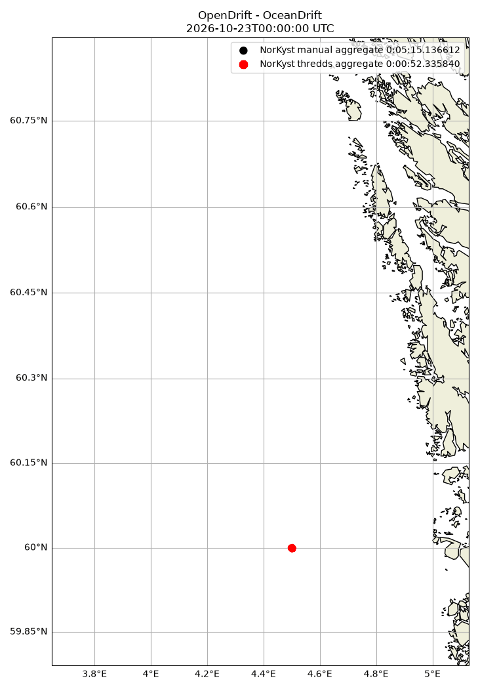

Note
Go to the end to download the full example code.
Manual aggregate
from datetime import datetime, timedelta
import pandas as pd
import matplotlib.pyplot as plt
from opendrift.readers import reader_netCDF_CF_generic
from opendrift.readers import open_mfdataset_overlap
from opendrift.models.oceandrift import OceanDrift
#%
# Create manual aggregate from individual URLs, for NorKyst ocean model initialized at 00 hours every day
start_time = datetime.now().date()-timedelta(days=3)
end_time = datetime.now().date()-timedelta(days=2)
ds = open_mfdataset_overlap(
'https://thredds.met.no/thredds/dodsC/fou-hi/norkystv3_his_files/%Y/%m/%d/norkyst800_his_zdepth_%Y%m%dT00Z_m00_AN.nc',
time_series=pd.date_range(start_time, end_time, freq='1D'))
#%
# Create reader from Xarray dataset
rm = reader_netCDF_CF_generic.Reader(ds, name='NorKyst manual aggregate')
print(rm)
om = OceanDrift()
om.add_reader(rm)
om.seed_elements(lon=4.5, lat=60.0, number=1000, radius=100, time=rm.start_time)
om.run(end_time=rm.end_time)
#%
# Second simulation using ready made aggregate from thredds
ot = OceanDrift()
ot.add_readers_from_list(['https://thredds.met.no/thredds/dodsC/fou-hi/norkystv3_800m_m00_be'])
ot.seed_elements(lon=4.5, lat=60.0, number=1000, radius=100, time=rm.start_time)
ot.run(end_time=rm.end_time)
#%
# Simulation should be identical, but we see that manual aggregate is significantly slower than using thredds aggregate
om.animation(compare=ot,
legend=[f'NorKyst manual aggregate {om.timing["total time"]}',
f'NorKyst thredds aggregate {ot.timing["total time"]}'])
Opening individual URLs...
Concatenating...
===========================
Reader: NorKyst manual aggregate
Reader type: opendrift.readers.reader_netCDF_CF_generic
Projection:
+proj=stere +lat_0=90 +lat_ts=60 +lon_0=70 +x_0=3369600 +y_0=1844800 +a=6378137 +b=6356752.3142 +units=m +no_defs +type=crs
Coverage: [degrees]
xmin: 0.000000 xmax: 2196800.000000 step: 800 numx: 2747
ymin: 0.000000 ymax: 917600.000000 step: 800 numy: 1148
Corners (lon, lat):
( -4.61, 57.34) ( 18.33, 75.73)
( 8.70, 54.29) ( 37.55, 69.25)
Vertical levels [m]:
[ -0. -1. -2. -3. -5. -7. -10. -15. -25. -50. -65. -75.
-100. -200. -300.]
Available time range:
start: 2026-10-23 00:00:00 end: 2026-10-24 23:00:00 step: 1:00:00
48 times (0 missing)
Variables:
ocean_vertical_diffusivity
eastward_wind
northward_wind
sea_floor_depth_below_sea_level
sea_water_salinity
sea_water_temperature
eastward_sea_water_velocity
northward_sea_water_velocity
upward_sea_water_velocity
sea_surface_height
latitude
longitude
x_wind
y_wind
x_sea_water_velocity
y_sea_water_velocity
wind_speed - derived from ['x_wind', 'y_wind']
sea_water_speed - derived from ['x_sea_water_velocity', 'y_sea_water_velocity']
===========================
17:01:33 DEBUG opendrift.config:168: Adding 17 config items from __init__
17:01:33 DEBUG opendrift.config:178: Overwriting config item readers:max_number_of_fails
17:01:33 DEBUG opendrift.config:168: Adding 5 config items from __init__
17:01:33 INFO opendrift:569: OpenDriftSimulation initialised (version 1.14.11 / v1.14.12-66-g07283eb)
17:01:33 DEBUG opendrift.config:168: Adding 19 config items from oceandrift
17:01:33 DEBUG opendrift.config:178: Overwriting config item seed:z
17:01:33 DEBUG opendrift.models.basemodel.environment:312: Added reader NorKyst manual aggregate
17:01:33 INFO opendrift.models.basemodel.environment:203: Adding a global landmask from GSHHG
17:01:33 DEBUG opendrift.readers.basereader.variables:571: Skipping calculation of vector component, since y is not north
17:01:33 DEBUG opendrift.readers.basereader.variables:571: Skipping calculation of vector component, since y is not north
17:01:33 DEBUG opendrift.readers.basereader.variables:571: Skipping calculation of vector component, since y is not north
17:01:33 DEBUG opendrift.readers.basereader.variables:571: Skipping calculation of vector component, since y is not north
17:01:33 DEBUG opendrift.readers.basereader:185: Variable mapping: ['sea_floor_depth_below_sea_level'] -> ['land_binary_mask'] is not activated
17:01:39 DEBUG opendrift.models.basemodel.environment:312: Added reader global_landmask
17:01:39 INFO opendrift.models.basemodel.environment:227: Fallback values will be used for the following variables which have no readers:
17:01:39 INFO opendrift.models.basemodel.environment:230: horizontal_diffusivity: 0.000000
17:01:39 INFO opendrift.models.basemodel.environment:230: sea_surface_wave_significant_height: 0.000000
17:01:39 INFO opendrift.models.basemodel.environment:230: sea_surface_wave_stokes_drift_x_velocity: 0.000000
17:01:39 INFO opendrift.models.basemodel.environment:230: sea_surface_wave_stokes_drift_y_velocity: 0.000000
17:01:39 INFO opendrift.models.basemodel.environment:230: ocean_mixed_layer_thickness: 50.000000
17:01:39 DEBUG opendrift:165: Changed mode from Mode.Config to Mode.Ready
17:01:39 DEBUG opendrift:165: Changed mode from Mode.Ready to Mode.Run
17:01:39 DEBUG opendrift:1883:
------------------------------------------------------
Software and hardware:
OpenDrift version 1.14.11
Platform: Linux, 7.0.0-1014-aws
4.0 GB memory
36 processors (x86_64)
NumPy version 2.5.4
SciPy version 1.18.1
Matplotlib version 3.11.2
NetCDF4 version 1.7.4
Xarray version 2026.9.0
ADIOS (adios_db) version 1.2.5
Copernicusmarine version 2.5.0
Python version 3.14.8 | packaged by conda-forge | (main, Oct 12 2026, 17:35:27) [GCC 15.3.0]
------------------------------------------------------
17:01:39 DEBUG opendrift:1896: No output file is specified, neglecting export_buffer_length
17:01:39 INFO opendrift:1911: Skipping environment variable ocean_vertical_diffusivity because of condition ['drift:vertical_mixing', 'is', False]
17:01:39 INFO opendrift:1911: Skipping environment variable ocean_mixed_layer_thickness because of condition ['drift:vertical_mixing', 'is', False]
17:01:39 INFO opendrift:1922: Storing previous values of element property lon because of condition (('general:coastline_action', 'in', ['stranding', 'previous']), 'or', ('general:seafloor_action', 'in', ['previous']))
17:01:39 INFO opendrift:1922: Storing previous values of element property lat because of condition (('general:coastline_action', 'in', ['stranding', 'previous']), 'or', ('general:seafloor_action', 'in', ['previous']))
17:01:39 INFO opendrift:1930: Storing previous values of environment variable sea_surface_height because of condition ['drift:vertical_advection', 'is', True]
17:01:39 DEBUG opendrift:2047: Finalizing environment and preparing readers for simulation coverage ([-1.60275842 56.94866199 10.60224392 63.05149441]) and time (2026-10-23 00:00:00 to 2026-10-24 23:00:00)
17:01:39 DEBUG opendrift.models.basemodel.environment:166: Preparing NorKyst manual aggregate for extent [-1.60275842 56.94866199 10.60224392 63.05149441]
17:01:39 DEBUG opendrift.readers.basereader.structured:151: Clearing cache for reader NorKyst manual aggregate before starting new simulation
17:01:39 DEBUG opendrift.readers.basereader.variables:643: Setting buffer size 11 for reader NorKyst manual aggregate, assuming a maximum average speed of 2 m/s and time span of 1:00:00
17:01:39 DEBUG opendrift.readers.basereader.variables:584: Nothing more to prepare for NorKyst manual aggregate
17:01:39 DEBUG opendrift.models.basemodel.environment:166: Preparing global_landmask for extent [-1.60275842 56.94866199 10.60224392 63.05149441]
17:01:39 DEBUG opendrift.readers.basereader.variables:584: Nothing more to prepare for global_landmask
17:01:39 DEBUG opendrift:2144: Initial self.result, size Frozen({'trajectory': 1000, 'time': 48})
17:01:39 INFO opendrift:958: Using existing reader for land_binary_mask to move elements to ocean
17:01:39 DEBUG opendrift.models.basemodel.environment:598: ----------------------------------------
17:01:39 DEBUG opendrift.models.basemodel.environment:599: Variable group ['land_binary_mask']
17:01:39 DEBUG opendrift.models.basemodel.environment:600: ----------------------------------------
17:01:39 DEBUG opendrift.models.basemodel.environment:604: Calling reader global_landmask
17:01:39 DEBUG opendrift.models.basemodel.environment:605: ----------------------------------------
17:01:39 DEBUG opendrift.models.basemodel.environment:625: Data needed for 1000 elements
17:01:39 DEBUG opendrift.readers.basereader.variables:790: Fetching variables from global_landmask covering 1000 elements
17:01:39 DEBUG opendrift.readers.basereader.continuous:37: Fetched env-before
17:01:39 DEBUG opendrift.readers.basereader.variables:668: Checking land_binary_mask for invalid values
17:01:39 DEBUG opendrift.readers.basereader.variables:826: Reader projection is latlon - rotation of vectors is not needed.
17:01:39 DEBUG opendrift.models.basemodel.environment:761: Obtained data for all elements.
17:01:39 DEBUG opendrift.models.basemodel.environment:774: ---------------------------------------
17:01:39 DEBUG opendrift.models.basemodel.environment:775: Finished processing all variable groups
17:01:39 DEBUG opendrift.models.basemodel.environment:897: ------------ SUMMARY -------------
17:01:39 DEBUG opendrift.models.basemodel.environment:899: land_binary_mask: 0 (min) 0 (max)
17:01:39 DEBUG opendrift.models.basemodel.environment:901: ---------------------------------
17:01:39 INFO opendrift:990: All points are in ocean
17:01:39 DEBUG opendrift:915: to be seeded: 1000, already seeded 0
17:01:39 DEBUG opendrift:937: Released 1000 new elements.
17:01:39 DEBUG opendrift:2237: ======================================================================
17:01:39 INFO opendrift:2238: 2026-10-23 00:00:00 - step 1 of 47 - 1000 active elements (0 deactivated)
17:01:39 DEBUG opendrift:2244: 0 elements scheduled.
17:01:39 DEBUG opendrift:2246: ======================================================================
17:01:39 DEBUG opendrift:2257: 59.997310638427734 <- latitude -> 60.002845764160156
17:01:39 DEBUG opendrift:2257: 4.494540691375732 <- longitude -> 4.504944801330566
17:01:39 DEBUG opendrift:2255: z = 0.0
17:01:39 DEBUG opendrift:2258: ---------------------------------
17:01:39 DEBUG opendrift.models.basemodel.environment:598: ----------------------------------------
17:01:39 DEBUG opendrift.models.basemodel.environment:599: Variable group ['sea_floor_depth_below_sea_level', 'upward_sea_water_velocity', 'sea_surface_height', 'x_wind', 'y_wind', 'x_sea_water_velocity', 'y_sea_water_velocity']
17:01:39 DEBUG opendrift.models.basemodel.environment:600: ----------------------------------------
17:01:39 DEBUG opendrift.models.basemodel.environment:604: Calling reader NorKyst manual aggregate
17:01:39 DEBUG opendrift.models.basemodel.environment:605: ----------------------------------------
17:01:39 DEBUG opendrift.models.basemodel.environment:625: Data needed for 1000 elements
17:01:39 DEBUG opendrift.readers.basereader.variables:790: Fetching variables from NorKyst manual aggregate covering 1000 elements
17:01:39 DEBUG opendrift.readers.basereader.structured:220: Reader time:
2026-10-23 00:00:00 (before)
2026-10-23 01:00:00 (after)
17:01:42 DEBUG opendrift.readers.reader_netCDF_CF_generic:475: Using eastward_wind to retrieve x_wind
17:01:42 DEBUG opendrift.readers.reader_netCDF_CF_generic:475: Using northward_wind to retrieve y_wind
17:01:43 DEBUG opendrift.readers.reader_netCDF_CF_generic:475: Using eastward_sea_water_velocity to retrieve x_sea_water_velocity
17:01:44 DEBUG opendrift.readers.reader_netCDF_CF_generic:475: Using northward_sea_water_velocity to retrieve y_sea_water_velocity
17:01:46 DEBUG opendrift.readers.reader_netCDF_CF_generic:607: Rotating vector from east/north to xy orientation: ['x_wind', 'y_wind']
17:01:46 DEBUG opendrift.readers.basereader.variables:126: Rotating vectors between 65.28400783875489 and 65.70176334471121 degrees.
17:01:46 DEBUG opendrift.readers.reader_netCDF_CF_generic:607: Rotating vector from east/north to xy orientation: ['x_sea_water_velocity', 'y_sea_water_velocity']
17:01:46 DEBUG opendrift.readers.basereader.variables:126: Rotating vectors between 65.28400783875489 and 65.70176334471121 degrees.
17:01:46 DEBUG opendrift.readers.basereader.variables:668: Checking sea_floor_depth_below_sea_level for invalid values
17:01:46 DEBUG opendrift.readers.basereader.variables:668: Checking x_wind for invalid values
17:01:46 DEBUG opendrift.readers.basereader.variables:668: Checking y_wind for invalid values
17:01:46 DEBUG opendrift.readers.basereader.variables:668: Checking x_sea_water_velocity for invalid values
17:01:46 DEBUG opendrift.readers.basereader.variables:668: Checking y_sea_water_velocity for invalid values
17:01:46 DEBUG opendrift.readers.basereader.structured:290: Fetched env-block (size 23x23x2) for time before (2026-10-23 00:00:00)
17:01:46 DEBUG opendrift.readers.basereader.structured:334: Interpolating before (2026-10-23 00:00:00) in space (linearNDFast)
17:01:46 DEBUG opendrift.readers.interpolation.structured:97: Initialising interpolator.
17:01:46 DEBUG opendrift.readers.basereader.structured:388: No time interpolation needed - right on time.
17:01:46 DEBUG opendrift.readers.basereader.variables:126: Rotating vectors between -65.5054702318003 and -65.49506612654369 degrees.
17:01:46 DEBUG opendrift.readers.basereader.variables:126: Rotating vectors between -65.5054702318003 and -65.49506612654369 degrees.
17:01:46 DEBUG opendrift.models.basemodel.environment:761: Obtained data for all elements.
17:01:46 DEBUG opendrift.models.basemodel.environment:598: ----------------------------------------
17:01:46 DEBUG opendrift.models.basemodel.environment:599: Variable group ['land_binary_mask']
17:01:46 DEBUG opendrift.models.basemodel.environment:600: ----------------------------------------
17:01:46 DEBUG opendrift.models.basemodel.environment:604: Calling reader global_landmask
17:01:46 DEBUG opendrift.models.basemodel.environment:605: ----------------------------------------
17:01:46 DEBUG opendrift.models.basemodel.environment:625: Data needed for 1000 elements
17:01:46 DEBUG opendrift.readers.basereader.variables:790: Fetching variables from global_landmask covering 1000 elements
17:01:46 DEBUG opendrift.readers.basereader.continuous:37: Fetched env-before
17:01:46 DEBUG opendrift.readers.basereader.variables:668: Checking land_binary_mask for invalid values
17:01:46 DEBUG opendrift.readers.basereader.variables:826: Reader projection is latlon - rotation of vectors is not needed.
17:01:46 DEBUG opendrift.models.basemodel.environment:761: Obtained data for all elements.
17:01:46 DEBUG opendrift.models.basemodel.environment:774: ---------------------------------------
17:01:46 DEBUG opendrift.models.basemodel.environment:775: Finished processing all variable groups
17:01:46 DEBUG opendrift.models.basemodel.environment:897: ------------ SUMMARY -------------
17:01:46 DEBUG opendrift.models.basemodel.environment:899: x_sea_water_velocity: 0.433745 (min) 0.443367 (max)
17:01:46 DEBUG opendrift.models.basemodel.environment:899: y_sea_water_velocity: 0.336651 (min) 0.354378 (max)
17:01:46 DEBUG opendrift.models.basemodel.environment:899: sea_surface_height: -0.588992 (min) -0.58558 (max)
17:01:46 DEBUG opendrift.models.basemodel.environment:899: x_wind: 4.3534 (min) 4.42926 (max)
17:01:46 DEBUG opendrift.models.basemodel.environment:899: y_wind: 13.2262 (min) 13.2648 (max)
17:01:46 DEBUG opendrift.models.basemodel.environment:899: upward_sea_water_velocity: 0 (min) 0 (max)
17:01:46 DEBUG opendrift.models.basemodel.environment:899: horizontal_diffusivity: 0 (min) 0 (max)
17:01:46 DEBUG opendrift.models.basemodel.environment:899: sea_surface_wave_significant_height: 0 (min) 0 (max)
17:01:46 DEBUG opendrift.models.basemodel.environment:899: sea_surface_wave_stokes_drift_x_velocity: 0 (min) 0 (max)
17:01:46 DEBUG opendrift.models.basemodel.environment:899: sea_surface_wave_stokes_drift_y_velocity: 0 (min) 0 (max)
17:01:46 DEBUG opendrift.models.basemodel.environment:899: sea_floor_depth_below_sea_level: 262.501 (min) 264.452 (max)
17:01:46 DEBUG opendrift.models.basemodel.environment:899: land_binary_mask: 0 (min) 0 (max)
17:01:46 DEBUG opendrift.models.basemodel.environment:901: ---------------------------------
17:01:46 DEBUG opendrift.models.physics_methods:902: Calculating Hs from wind, min: 4.776574, mean: 4.791152, max: 4.801357
17:01:46 DEBUG opendrift:700: No elements hit coastline.
17:01:46 DEBUG opendrift:771: No elements hit seafloor.
17:01:46 DEBUG opendrift:1811: No elements to deactivate
17:01:46 DEBUG opendrift:2295: Calling OceanDrift.update()
17:01:46 DEBUG opendrift.models.physics_methods:823: Advecting 1000 of 1000 elements above 0.100m with wind-sheared ocean current (0.278690 m/s - 0.279412 m/s)
17:01:46 DEBUG opendrift.models.physics_methods:841: No Stokes drift velocity available
17:01:46 DEBUG opendrift.models.oceandrift:330: Vertical advection, excluding elements at surface
17:01:46 DEBUG opendrift:1759: Horizontal diffusivity is 0, no random walk.
17:01:46 DEBUG opendrift:915: to be seeded: 0, already seeded 1000
17:01:46 DEBUG opendrift:2237: ======================================================================
17:01:46 INFO opendrift:2238: 2026-10-23 01:00:00 - step 2 of 47 - 1000 active elements (0 deactivated)
17:01:46 DEBUG opendrift:2244: 0 elements scheduled.
17:01:46 DEBUG opendrift:2246: ======================================================================
17:01:46 DEBUG opendrift:2257: 60.016902443303984 <- latitude -> 60.02270167083155
17:01:46 DEBUG opendrift:2257: 4.528833665561849 <- longitude -> 4.538723001920356
17:01:46 DEBUG opendrift:2255: z = 0.0
17:01:46 DEBUG opendrift:2258: ---------------------------------
17:01:46 DEBUG opendrift.models.basemodel.environment:598: ----------------------------------------
17:01:46 DEBUG opendrift.models.basemodel.environment:599: Variable group ['sea_floor_depth_below_sea_level', 'upward_sea_water_velocity', 'sea_surface_height', 'x_wind', 'y_wind', 'x_sea_water_velocity', 'y_sea_water_velocity']
17:01:46 DEBUG opendrift.models.basemodel.environment:600: ----------------------------------------
17:01:46 DEBUG opendrift.models.basemodel.environment:604: Calling reader NorKyst manual aggregate
17:01:46 DEBUG opendrift.models.basemodel.environment:605: ----------------------------------------
17:01:46 DEBUG opendrift.models.basemodel.environment:625: Data needed for 1000 elements
17:01:46 DEBUG opendrift.readers.basereader.variables:790: Fetching variables from NorKyst manual aggregate covering 1000 elements
17:01:46 DEBUG opendrift.readers.basereader.structured:220: Reader time:
2026-10-23 01:00:00 (before)
2026-10-23 02:00:00 (after)
17:01:47 DEBUG opendrift.readers.reader_netCDF_CF_generic:475: Using eastward_wind to retrieve x_wind
17:01:48 DEBUG opendrift.readers.reader_netCDF_CF_generic:475: Using northward_wind to retrieve y_wind
17:01:48 DEBUG opendrift.readers.reader_netCDF_CF_generic:475: Using eastward_sea_water_velocity to retrieve x_sea_water_velocity
17:01:49 DEBUG opendrift.readers.reader_netCDF_CF_generic:475: Using northward_sea_water_velocity to retrieve y_sea_water_velocity
17:01:51 DEBUG opendrift.readers.reader_netCDF_CF_generic:607: Rotating vector from east/north to xy orientation: ['x_wind', 'y_wind']
17:01:51 DEBUG opendrift.readers.basereader.variables:126: Rotating vectors between 65.24693254234604 and 65.67102780263546 degrees.
17:01:51 DEBUG opendrift.readers.reader_netCDF_CF_generic:607: Rotating vector from east/north to xy orientation: ['x_sea_water_velocity', 'y_sea_water_velocity']
17:01:51 DEBUG opendrift.readers.basereader.variables:126: Rotating vectors between 65.24693254234604 and 65.67102780263546 degrees.
17:01:51 DEBUG opendrift.readers.basereader.variables:668: Checking sea_floor_depth_below_sea_level for invalid values
17:01:51 DEBUG opendrift.readers.basereader.variables:668: Checking x_wind for invalid values
17:01:51 DEBUG opendrift.readers.basereader.variables:668: Checking y_wind for invalid values
17:01:51 DEBUG opendrift.readers.basereader.variables:668: Checking x_sea_water_velocity for invalid values
17:01:51 DEBUG opendrift.readers.basereader.variables:668: Checking y_sea_water_velocity for invalid values
17:01:51 DEBUG opendrift.readers.basereader.structured:290: Fetched env-block (size 24x23x2) for time before (2026-10-23 01:00:00)
17:01:51 DEBUG opendrift.readers.basereader.structured:334: Interpolating before (2026-10-23 01:00:00) in space (linearNDFast)
17:01:51 DEBUG opendrift.readers.interpolation.structured:97: Initialising interpolator.
17:01:51 DEBUG opendrift.readers.basereader.structured:388: No time interpolation needed - right on time.
17:01:51 DEBUG opendrift.readers.basereader.variables:126: Rotating vectors between -65.4711772568489 and -65.46128791940123 degrees.
17:01:51 DEBUG opendrift.readers.basereader.variables:126: Rotating vectors between -65.4711772568489 and -65.46128791940123 degrees.
17:01:51 DEBUG opendrift.models.basemodel.environment:761: Obtained data for all elements.
17:01:51 DEBUG opendrift.models.basemodel.environment:598: ----------------------------------------
17:01:51 DEBUG opendrift.models.basemodel.environment:599: Variable group ['land_binary_mask']
17:01:51 DEBUG opendrift.models.basemodel.environment:600: ----------------------------------------
17:01:51 DEBUG opendrift.models.basemodel.environment:604: Calling reader global_landmask
17:01:51 DEBUG opendrift.models.basemodel.environment:605: ----------------------------------------
17:01:51 DEBUG opendrift.models.basemodel.environment:625: Data needed for 1000 elements
17:01:51 DEBUG opendrift.readers.basereader.variables:790: Fetching variables from global_landmask covering 1000 elements
17:01:51 DEBUG opendrift.readers.basereader.continuous:37: Fetched env-before
17:01:51 DEBUG opendrift.readers.basereader.variables:668: Checking land_binary_mask for invalid values
17:01:51 DEBUG opendrift.readers.basereader.variables:826: Reader projection is latlon - rotation of vectors is not needed.
17:01:51 DEBUG opendrift.models.basemodel.environment:761: Obtained data for all elements.
17:01:51 DEBUG opendrift.models.basemodel.environment:774: ---------------------------------------
17:01:51 DEBUG opendrift.models.basemodel.environment:775: Finished processing all variable groups
17:01:51 DEBUG opendrift.models.basemodel.environment:897: ------------ SUMMARY -------------
17:01:51 DEBUG opendrift.models.basemodel.environment:899: x_sea_water_velocity: 0.378548 (min) 0.381703 (max)
17:01:51 DEBUG opendrift.models.basemodel.environment:899: y_sea_water_velocity: 0.318548 (min) 0.332299 (max)
17:01:51 DEBUG opendrift.models.basemodel.environment:899: sea_surface_height: -0.689484 (min) -0.686032 (max)
17:01:51 DEBUG opendrift.models.basemodel.environment:899: x_wind: 3.72763 (min) 3.79017 (max)
17:01:51 DEBUG opendrift.models.basemodel.environment:899: y_wind: 11.5549 (min) 11.5997 (max)
17:01:51 DEBUG opendrift.models.basemodel.environment:899: upward_sea_water_velocity: -2e-05 (min) -2e-05 (max)
17:01:51 DEBUG opendrift.models.basemodel.environment:899: horizontal_diffusivity: 0 (min) 0 (max)
17:01:51 DEBUG opendrift.models.basemodel.environment:899: sea_surface_wave_significant_height: 0 (min) 0 (max)
17:01:51 DEBUG opendrift.models.basemodel.environment:899: sea_surface_wave_stokes_drift_x_velocity: 0 (min) 0 (max)
17:01:51 DEBUG opendrift.models.basemodel.environment:899: sea_surface_wave_stokes_drift_y_velocity: 0 (min) 0 (max)
17:01:51 DEBUG opendrift.models.basemodel.environment:899: sea_floor_depth_below_sea_level: 259.594 (min) 261.014 (max)
17:01:51 DEBUG opendrift.models.basemodel.environment:899: land_binary_mask: 0 (min) 0 (max)
17:01:51 DEBUG opendrift.models.basemodel.environment:901: ---------------------------------
17:01:51 DEBUG opendrift.models.physics_methods:902: Calculating Hs from wind, min: 3.635473, mean: 3.645154, max: 3.653598
17:01:51 DEBUG opendrift:700: No elements hit coastline.
17:01:51 DEBUG opendrift:771: No elements hit seafloor.
17:01:51 DEBUG opendrift:1811: No elements to deactivate
17:01:51 DEBUG opendrift:2295: Calling OceanDrift.update()
17:01:51 DEBUG opendrift.models.physics_methods:823: Advecting 1000 of 1000 elements above 0.100m with wind-sheared ocean current (0.243132 m/s - 0.243738 m/s)
17:01:51 DEBUG opendrift.models.physics_methods:841: No Stokes drift velocity available
17:01:51 DEBUG opendrift.models.oceandrift:330: Vertical advection, excluding elements at surface
17:01:51 DEBUG opendrift:1759: Horizontal diffusivity is 0, no random walk.
17:01:51 DEBUG opendrift:915: to be seeded: 0, already seeded 1000
17:01:51 DEBUG opendrift:2237: ======================================================================
17:01:51 INFO opendrift:2238: 2026-10-23 02:00:00 - step 3 of 47 - 1000 active elements (0 deactivated)
17:01:51 DEBUG opendrift:2244: 0 elements scheduled.
17:01:51 DEBUG opendrift:2246: ======================================================================
17:01:51 DEBUG opendrift:2257: 60.034797010072104 <- latitude -> 60.040800942049664
17:01:51 DEBUG opendrift:2257: 4.558250729751708 <- longitude -> 4.568058348125396
17:01:51 DEBUG opendrift:2255: z = 0.0
17:01:51 DEBUG opendrift:2258: ---------------------------------
17:01:51 DEBUG opendrift.models.basemodel.environment:598: ----------------------------------------
17:01:51 DEBUG opendrift.models.basemodel.environment:599: Variable group ['sea_floor_depth_below_sea_level', 'upward_sea_water_velocity', 'sea_surface_height', 'x_wind', 'y_wind', 'x_sea_water_velocity', 'y_sea_water_velocity']
17:01:51 DEBUG opendrift.models.basemodel.environment:600: ----------------------------------------
17:01:51 DEBUG opendrift.models.basemodel.environment:604: Calling reader NorKyst manual aggregate
17:01:51 DEBUG opendrift.models.basemodel.environment:605: ----------------------------------------
17:01:51 DEBUG opendrift.models.basemodel.environment:625: Data needed for 1000 elements
17:01:51 DEBUG opendrift.readers.basereader.variables:790: Fetching variables from NorKyst manual aggregate covering 1000 elements
17:01:51 DEBUG opendrift.readers.basereader.structured:220: Reader time:
2026-10-23 02:00:00 (before)
2026-10-23 03:00:00 (after)
17:01:53 DEBUG opendrift.readers.reader_netCDF_CF_generic:475: Using eastward_wind to retrieve x_wind
17:01:54 DEBUG opendrift.readers.reader_netCDF_CF_generic:475: Using northward_wind to retrieve y_wind
17:01:54 DEBUG opendrift.readers.reader_netCDF_CF_generic:475: Using eastward_sea_water_velocity to retrieve x_sea_water_velocity
17:01:55 DEBUG opendrift.readers.reader_netCDF_CF_generic:475: Using northward_sea_water_velocity to retrieve y_sea_water_velocity
17:01:57 DEBUG opendrift.readers.reader_netCDF_CF_generic:607: Rotating vector from east/north to xy orientation: ['x_wind', 'y_wind']
17:01:57 DEBUG opendrift.readers.basereader.variables:126: Rotating vectors between 65.21582430052219 and 65.64025656402993 degrees.
17:01:57 DEBUG opendrift.readers.reader_netCDF_CF_generic:607: Rotating vector from east/north to xy orientation: ['x_sea_water_velocity', 'y_sea_water_velocity']
17:01:57 DEBUG opendrift.readers.basereader.variables:126: Rotating vectors between 65.21582430052219 and 65.64025656402993 degrees.
17:01:57 DEBUG opendrift.readers.basereader.variables:668: Checking sea_floor_depth_below_sea_level for invalid values
17:01:57 DEBUG opendrift.readers.basereader.variables:668: Checking x_wind for invalid values
17:01:57 DEBUG opendrift.readers.basereader.variables:668: Checking y_wind for invalid values
17:01:57 DEBUG opendrift.readers.basereader.variables:668: Checking x_sea_water_velocity for invalid values
17:01:57 DEBUG opendrift.readers.basereader.variables:668: Checking y_sea_water_velocity for invalid values
17:01:57 DEBUG opendrift.readers.basereader.structured:290: Fetched env-block (size 24x23x2) for time before (2026-10-23 02:00:00)
17:01:57 DEBUG opendrift.readers.basereader.structured:334: Interpolating before (2026-10-23 02:00:00) in space (linearNDFast)
17:01:57 DEBUG opendrift.readers.interpolation.structured:97: Initialising interpolator.
17:01:57 DEBUG opendrift.readers.basereader.structured:388: No time interpolation needed - right on time.
17:01:57 DEBUG opendrift.readers.basereader.variables:126: Rotating vectors between -65.44176017399582 and -65.43195255588455 degrees.
17:01:57 DEBUG opendrift.readers.basereader.variables:126: Rotating vectors between -65.44176017399582 and -65.43195255588455 degrees.
17:01:57 DEBUG opendrift.models.basemodel.environment:761: Obtained data for all elements.
17:01:57 DEBUG opendrift.models.basemodel.environment:598: ----------------------------------------
17:01:57 DEBUG opendrift.models.basemodel.environment:599: Variable group ['land_binary_mask']
17:01:57 DEBUG opendrift.models.basemodel.environment:600: ----------------------------------------
17:01:57 DEBUG opendrift.models.basemodel.environment:604: Calling reader global_landmask
17:01:57 DEBUG opendrift.models.basemodel.environment:605: ----------------------------------------
17:01:57 DEBUG opendrift.models.basemodel.environment:625: Data needed for 1000 elements
17:01:57 DEBUG opendrift.readers.basereader.variables:790: Fetching variables from global_landmask covering 1000 elements
17:01:57 DEBUG opendrift.readers.basereader.continuous:37: Fetched env-before
17:01:57 DEBUG opendrift.readers.basereader.variables:668: Checking land_binary_mask for invalid values
17:01:57 DEBUG opendrift.readers.basereader.variables:826: Reader projection is latlon - rotation of vectors is not needed.
17:01:57 DEBUG opendrift.models.basemodel.environment:761: Obtained data for all elements.
17:01:57 DEBUG opendrift.models.basemodel.environment:774: ---------------------------------------
17:01:57 DEBUG opendrift.models.basemodel.environment:775: Finished processing all variable groups
17:01:57 DEBUG opendrift.models.basemodel.environment:897: ------------ SUMMARY -------------
17:01:57 DEBUG opendrift.models.basemodel.environment:899: x_sea_water_velocity: 0.296625 (min) 0.301591 (max)
17:01:57 DEBUG opendrift.models.basemodel.environment:899: y_sea_water_velocity: 0.297829 (min) 0.309877 (max)
17:01:57 DEBUG opendrift.models.basemodel.environment:899: sea_surface_height: -0.710599 (min) -0.70679 (max)
17:01:57 DEBUG opendrift.models.basemodel.environment:899: x_wind: 4.32879 (min) 4.35594 (max)
17:01:57 DEBUG opendrift.models.basemodel.environment:899: y_wind: 9.57753 (min) 9.5951 (max)
17:01:57 DEBUG opendrift.models.basemodel.environment:899: upward_sea_water_velocity: 2e-05 (min) 2e-05 (max)
17:01:57 DEBUG opendrift.models.basemodel.environment:899: horizontal_diffusivity: 0 (min) 0 (max)
17:01:57 DEBUG opendrift.models.basemodel.environment:899: sea_surface_wave_significant_height: 0 (min) 0 (max)
17:01:57 DEBUG opendrift.models.basemodel.environment:899: sea_surface_wave_stokes_drift_x_velocity: 0 (min) 0 (max)
17:01:57 DEBUG opendrift.models.basemodel.environment:899: sea_surface_wave_stokes_drift_y_velocity: 0 (min) 0 (max)
17:01:57 DEBUG opendrift.models.basemodel.environment:899: sea_floor_depth_below_sea_level: 265.317 (min) 268.115 (max)
17:01:57 DEBUG opendrift.models.basemodel.environment:899: land_binary_mask: 0 (min) 0 (max)
17:01:57 DEBUG opendrift.models.basemodel.environment:901: ---------------------------------
17:01:57 DEBUG opendrift.models.physics_methods:902: Calculating Hs from wind, min: 2.721922, mean: 2.724946, max: 2.728220
17:01:57 DEBUG opendrift:700: No elements hit coastline.
17:01:57 DEBUG opendrift:771: No elements hit seafloor.
17:01:57 DEBUG opendrift:1811: No elements to deactivate
17:01:57 DEBUG opendrift:2295: Calling OceanDrift.update()
17:01:57 DEBUG opendrift.models.physics_methods:823: Advecting 1000 of 1000 elements above 0.100m with wind-sheared ocean current (0.210378 m/s - 0.210621 m/s)
17:01:57 DEBUG opendrift.models.physics_methods:841: No Stokes drift velocity available
17:01:57 DEBUG opendrift.models.oceandrift:330: Vertical advection, excluding elements at surface
17:01:57 DEBUG opendrift:1759: Horizontal diffusivity is 0, no random walk.
17:01:57 DEBUG opendrift:915: to be seeded: 0, already seeded 1000
17:01:57 DEBUG opendrift:2237: ======================================================================
17:01:57 INFO opendrift:2238: 2026-10-23 03:00:00 - step 4 of 47 - 1000 active elements (0 deactivated)
17:01:57 DEBUG opendrift:2244: 0 elements scheduled.
17:01:57 DEBUG opendrift:2246: ======================================================================
17:01:57 DEBUG opendrift:2257: 60.05067098859335 <- latitude -> 60.05692892403291
17:01:57 DEBUG opendrift:2257: 4.583047159278022 <- longitude -> 4.593143763475358
17:01:57 DEBUG opendrift:2255: z = 0.0
17:01:57 DEBUG opendrift:2258: ---------------------------------
17:01:57 DEBUG opendrift.models.basemodel.environment:598: ----------------------------------------
17:01:57 DEBUG opendrift.models.basemodel.environment:599: Variable group ['sea_floor_depth_below_sea_level', 'upward_sea_water_velocity', 'sea_surface_height', 'x_wind', 'y_wind', 'x_sea_water_velocity', 'y_sea_water_velocity']
17:01:57 DEBUG opendrift.models.basemodel.environment:600: ----------------------------------------
17:01:57 DEBUG opendrift.models.basemodel.environment:604: Calling reader NorKyst manual aggregate
17:01:57 DEBUG opendrift.models.basemodel.environment:605: ----------------------------------------
17:01:57 DEBUG opendrift.models.basemodel.environment:625: Data needed for 1000 elements
17:01:57 DEBUG opendrift.readers.basereader.variables:790: Fetching variables from NorKyst manual aggregate covering 1000 elements
17:01:57 DEBUG opendrift.readers.basereader.structured:220: Reader time:
2026-10-23 03:00:00 (before)
2026-10-23 04:00:00 (after)
17:01:59 DEBUG opendrift.readers.reader_netCDF_CF_generic:475: Using eastward_wind to retrieve x_wind
17:02:00 DEBUG opendrift.readers.reader_netCDF_CF_generic:475: Using northward_wind to retrieve y_wind
17:02:00 DEBUG opendrift.readers.reader_netCDF_CF_generic:475: Using eastward_sea_water_velocity to retrieve x_sea_water_velocity
17:02:01 DEBUG opendrift.readers.reader_netCDF_CF_generic:475: Using northward_sea_water_velocity to retrieve y_sea_water_velocity
17:02:03 DEBUG opendrift.readers.reader_netCDF_CF_generic:607: Rotating vector from east/north to xy orientation: ['x_wind', 'y_wind']
17:02:03 DEBUG opendrift.readers.basereader.variables:126: Rotating vectors between 65.18468006923331 and 65.60944958445073 degrees.
17:02:03 DEBUG opendrift.readers.reader_netCDF_CF_generic:607: Rotating vector from east/north to xy orientation: ['x_sea_water_velocity', 'y_sea_water_velocity']
17:02:03 DEBUG opendrift.readers.basereader.variables:126: Rotating vectors between 65.18468006923331 and 65.60944958445073 degrees.
17:02:03 DEBUG opendrift.readers.basereader.variables:668: Checking sea_floor_depth_below_sea_level for invalid values
17:02:03 DEBUG opendrift.readers.basereader.variables:668: Checking x_wind for invalid values
17:02:03 DEBUG opendrift.readers.basereader.variables:668: Checking y_wind for invalid values
17:02:03 DEBUG opendrift.readers.basereader.variables:668: Checking x_sea_water_velocity for invalid values
17:02:03 DEBUG opendrift.readers.basereader.variables:668: Checking y_sea_water_velocity for invalid values
17:02:03 DEBUG opendrift.readers.basereader.structured:290: Fetched env-block (size 24x23x2) for time before (2026-10-23 03:00:00)
17:02:03 DEBUG opendrift.readers.basereader.structured:334: Interpolating before (2026-10-23 03:00:00) in space (linearNDFast)
17:02:03 DEBUG opendrift.readers.interpolation.structured:97: Initialising interpolator.
17:02:03 DEBUG opendrift.readers.basereader.structured:388: No time interpolation needed - right on time.
17:02:03 DEBUG opendrift.readers.basereader.variables:126: Rotating vectors between -65.41696373758805 and -65.40686713653022 degrees.
17:02:03 DEBUG opendrift.readers.basereader.variables:126: Rotating vectors between -65.41696373758805 and -65.40686713653022 degrees.
17:02:03 DEBUG opendrift.models.basemodel.environment:761: Obtained data for all elements.
17:02:03 DEBUG opendrift.models.basemodel.environment:598: ----------------------------------------
17:02:03 DEBUG opendrift.models.basemodel.environment:599: Variable group ['land_binary_mask']
17:02:03 DEBUG opendrift.models.basemodel.environment:600: ----------------------------------------
17:02:03 DEBUG opendrift.models.basemodel.environment:604: Calling reader global_landmask
17:02:03 DEBUG opendrift.models.basemodel.environment:605: ----------------------------------------
17:02:03 DEBUG opendrift.models.basemodel.environment:625: Data needed for 1000 elements
17:02:03 DEBUG opendrift.readers.basereader.variables:790: Fetching variables from global_landmask covering 1000 elements
17:02:03 DEBUG opendrift.readers.basereader.continuous:37: Fetched env-before
17:02:03 DEBUG opendrift.readers.basereader.variables:668: Checking land_binary_mask for invalid values
17:02:03 DEBUG opendrift.readers.basereader.variables:826: Reader projection is latlon - rotation of vectors is not needed.
17:02:03 DEBUG opendrift.models.basemodel.environment:761: Obtained data for all elements.
17:02:03 DEBUG opendrift.models.basemodel.environment:774: ---------------------------------------
17:02:03 DEBUG opendrift.models.basemodel.environment:775: Finished processing all variable groups
17:02:03 DEBUG opendrift.models.basemodel.environment:897: ------------ SUMMARY -------------
17:02:03 DEBUG opendrift.models.basemodel.environment:899: x_sea_water_velocity: 0.227735 (min) 0.234115 (max)
17:02:03 DEBUG opendrift.models.basemodel.environment:899: y_sea_water_velocity: 0.303588 (min) 0.315361 (max)
17:02:03 DEBUG opendrift.models.basemodel.environment:899: sea_surface_height: -0.640242 (min) -0.63608 (max)
17:02:03 DEBUG opendrift.models.basemodel.environment:899: x_wind: 4.79483 (min) 4.82533 (max)
17:02:03 DEBUG opendrift.models.basemodel.environment:899: y_wind: 8.14813 (min) 8.18984 (max)
17:02:03 DEBUG opendrift.models.basemodel.environment:899: upward_sea_water_velocity: 3e-05 (min) 3e-05 (max)
17:02:03 DEBUG opendrift.models.basemodel.environment:899: horizontal_diffusivity: 0 (min) 0 (max)
17:02:03 DEBUG opendrift.models.basemodel.environment:899: sea_surface_wave_significant_height: 0 (min) 0 (max)
17:02:03 DEBUG opendrift.models.basemodel.environment:899: sea_surface_wave_stokes_drift_x_velocity: 0 (min) 0 (max)
17:02:03 DEBUG opendrift.models.basemodel.environment:899: sea_surface_wave_stokes_drift_y_velocity: 0 (min) 0 (max)
17:02:03 DEBUG opendrift.models.basemodel.environment:899: sea_floor_depth_below_sea_level: 277.011 (min) 280.875 (max)
17:02:03 DEBUG opendrift.models.basemodel.environment:899: land_binary_mask: 0 (min) 0 (max)
17:02:03 DEBUG opendrift.models.basemodel.environment:901: ---------------------------------
17:02:03 DEBUG opendrift.models.physics_methods:902: Calculating Hs from wind, min: 2.205302, mean: 2.210640, max: 2.216096
17:02:03 DEBUG opendrift:700: No elements hit coastline.
17:02:03 DEBUG opendrift:771: No elements hit seafloor.
17:02:03 DEBUG opendrift:1811: No elements to deactivate
17:02:03 DEBUG opendrift:2295: Calling OceanDrift.update()
17:02:03 DEBUG opendrift.models.physics_methods:823: Advecting 1000 of 1000 elements above 0.100m with wind-sheared ocean current (0.189364 m/s - 0.189826 m/s)
17:02:03 DEBUG opendrift.models.physics_methods:841: No Stokes drift velocity available
17:02:03 DEBUG opendrift.models.oceandrift:330: Vertical advection, excluding elements at surface
17:02:03 DEBUG opendrift:1759: Horizontal diffusivity is 0, no random walk.
17:02:03 DEBUG opendrift:915: to be seeded: 0, already seeded 1000
17:02:03 DEBUG opendrift:2237: ======================================================================
17:02:03 INFO opendrift:2238: 2026-10-23 04:00:00 - step 5 of 47 - 1000 active elements (0 deactivated)
17:02:03 DEBUG opendrift:2244: 0 elements scheduled.
17:02:03 DEBUG opendrift:2246: ======================================================================
17:02:03 DEBUG opendrift:2257: 60.06580100155068 <- latitude -> 60.0722710537308
17:02:03 DEBUG opendrift:2257: 4.604008005482578 <- longitude -> 4.614423887317003
17:02:03 DEBUG opendrift:2255: z = 0.0
17:02:03 DEBUG opendrift:2258: ---------------------------------
17:02:03 DEBUG opendrift.models.basemodel.environment:598: ----------------------------------------
17:02:03 DEBUG opendrift.models.basemodel.environment:599: Variable group ['sea_floor_depth_below_sea_level', 'upward_sea_water_velocity', 'sea_surface_height', 'x_wind', 'y_wind', 'x_sea_water_velocity', 'y_sea_water_velocity']
17:02:03 DEBUG opendrift.models.basemodel.environment:600: ----------------------------------------
17:02:03 DEBUG opendrift.models.basemodel.environment:604: Calling reader NorKyst manual aggregate
17:02:03 DEBUG opendrift.models.basemodel.environment:605: ----------------------------------------
17:02:03 DEBUG opendrift.models.basemodel.environment:625: Data needed for 1000 elements
17:02:03 DEBUG opendrift.readers.basereader.variables:790: Fetching variables from NorKyst manual aggregate covering 1000 elements
17:02:03 DEBUG opendrift.readers.basereader.structured:220: Reader time:
2026-10-23 04:00:00 (before)
2026-10-23 05:00:00 (after)
17:02:05 DEBUG opendrift.readers.reader_netCDF_CF_generic:475: Using eastward_wind to retrieve x_wind
17:02:06 DEBUG opendrift.readers.reader_netCDF_CF_generic:475: Using northward_wind to retrieve y_wind
17:02:06 DEBUG opendrift.readers.reader_netCDF_CF_generic:475: Using eastward_sea_water_velocity to retrieve x_sea_water_velocity
17:02:07 DEBUG opendrift.readers.reader_netCDF_CF_generic:475: Using northward_sea_water_velocity to retrieve y_sea_water_velocity
17:02:09 DEBUG opendrift.readers.reader_netCDF_CF_generic:607: Rotating vector from east/north to xy orientation: ['x_wind', 'y_wind']
17:02:09 DEBUG opendrift.readers.basereader.variables:126: Rotating vectors between 65.17260244676845 and 65.59760088884066 degrees.
17:02:09 DEBUG opendrift.readers.reader_netCDF_CF_generic:607: Rotating vector from east/north to xy orientation: ['x_sea_water_velocity', 'y_sea_water_velocity']
17:02:09 DEBUG opendrift.readers.basereader.variables:126: Rotating vectors between 65.17260244676845 and 65.59760088884066 degrees.
17:02:09 DEBUG opendrift.readers.basereader.variables:668: Checking sea_floor_depth_below_sea_level for invalid values
17:02:09 DEBUG opendrift.readers.basereader.variables:668: Checking x_wind for invalid values
17:02:09 DEBUG opendrift.readers.basereader.variables:668: Checking y_wind for invalid values
17:02:09 DEBUG opendrift.readers.basereader.variables:668: Checking x_sea_water_velocity for invalid values
17:02:09 DEBUG opendrift.readers.basereader.variables:668: Checking y_sea_water_velocity for invalid values
17:02:09 DEBUG opendrift.readers.basereader.structured:290: Fetched env-block (size 24x23x2) for time before (2026-10-23 04:00:00)
17:02:09 DEBUG opendrift.readers.basereader.structured:334: Interpolating before (2026-10-23 04:00:00) in space (linearNDFast)
17:02:09 DEBUG opendrift.readers.interpolation.structured:97: Initialising interpolator.
17:02:09 DEBUG opendrift.readers.basereader.structured:388: No time interpolation needed - right on time.
17:02:09 DEBUG opendrift.readers.basereader.variables:126: Rotating vectors between -65.39600287924475 and -65.3855870036644 degrees.
17:02:09 DEBUG opendrift.readers.basereader.variables:126: Rotating vectors between -65.39600287924475 and -65.3855870036644 degrees.
17:02:09 DEBUG opendrift.models.basemodel.environment:761: Obtained data for all elements.
17:02:09 DEBUG opendrift.models.basemodel.environment:598: ----------------------------------------
17:02:09 DEBUG opendrift.models.basemodel.environment:599: Variable group ['land_binary_mask']
17:02:09 DEBUG opendrift.models.basemodel.environment:600: ----------------------------------------
17:02:09 DEBUG opendrift.models.basemodel.environment:604: Calling reader global_landmask
17:02:09 DEBUG opendrift.models.basemodel.environment:605: ----------------------------------------
17:02:09 DEBUG opendrift.models.basemodel.environment:625: Data needed for 1000 elements
17:02:09 DEBUG opendrift.readers.basereader.variables:790: Fetching variables from global_landmask covering 1000 elements
17:02:09 DEBUG opendrift.readers.basereader.continuous:37: Fetched env-before
17:02:09 DEBUG opendrift.readers.basereader.variables:668: Checking land_binary_mask for invalid values
17:02:09 DEBUG opendrift.readers.basereader.variables:826: Reader projection is latlon - rotation of vectors is not needed.
17:02:09 DEBUG opendrift.models.basemodel.environment:761: Obtained data for all elements.
17:02:09 DEBUG opendrift.models.basemodel.environment:774: ---------------------------------------
17:02:09 DEBUG opendrift.models.basemodel.environment:775: Finished processing all variable groups
17:02:09 DEBUG opendrift.models.basemodel.environment:897: ------------ SUMMARY -------------
17:02:09 DEBUG opendrift.models.basemodel.environment:899: x_sea_water_velocity: 0.165274 (min) 0.170453 (max)
17:02:09 DEBUG opendrift.models.basemodel.environment:899: y_sea_water_velocity: 0.309545 (min) 0.322081 (max)
17:02:09 DEBUG opendrift.models.basemodel.environment:899: sea_surface_height: -0.526134 (min) -0.522293 (max)
17:02:09 DEBUG opendrift.models.basemodel.environment:899: x_wind: 3.98513 (min) 4.02048 (max)
17:02:09 DEBUG opendrift.models.basemodel.environment:899: y_wind: 7.07693 (min) 7.10666 (max)
17:02:09 DEBUG opendrift.models.basemodel.environment:899: upward_sea_water_velocity: 3e-05 (min) 3e-05 (max)
17:02:09 DEBUG opendrift.models.basemodel.environment:899: horizontal_diffusivity: 0 (min) 0 (max)
17:02:09 DEBUG opendrift.models.basemodel.environment:899: sea_surface_wave_significant_height: 0 (min) 0 (max)
17:02:09 DEBUG opendrift.models.basemodel.environment:899: sea_surface_wave_stokes_drift_x_velocity: 0 (min) 0 (max)
17:02:09 DEBUG opendrift.models.basemodel.environment:899: sea_surface_wave_stokes_drift_y_velocity: 0 (min) 0 (max)
17:02:09 DEBUG opendrift.models.basemodel.environment:899: sea_floor_depth_below_sea_level: 291.596 (min) 295.958 (max)
17:02:09 DEBUG opendrift.models.basemodel.environment:899: land_binary_mask: 0 (min) 0 (max)
17:02:09 DEBUG opendrift.models.basemodel.environment:901: ---------------------------------
17:02:09 DEBUG opendrift.models.physics_methods:902: Calculating Hs from wind, min: 1.623510, mean: 1.631574, max: 1.639360
17:02:09 DEBUG opendrift:700: No elements hit coastline.
17:02:09 DEBUG opendrift:771: No elements hit seafloor.
17:02:09 DEBUG opendrift:1811: No elements to deactivate
17:02:09 DEBUG opendrift:2295: Calling OceanDrift.update()
17:02:09 DEBUG opendrift.models.physics_methods:823: Advecting 1000 of 1000 elements above 0.100m with wind-sheared ocean current (0.162476 m/s - 0.163267 m/s)
17:02:09 DEBUG opendrift.models.physics_methods:841: No Stokes drift velocity available
17:02:09 DEBUG opendrift.models.oceandrift:330: Vertical advection, excluding elements at surface
17:02:09 DEBUG opendrift:1759: Horizontal diffusivity is 0, no random walk.
17:02:09 DEBUG opendrift:915: to be seeded: 0, already seeded 1000
17:02:09 DEBUG opendrift:2237: ======================================================================
17:02:09 INFO opendrift:2238: 2026-10-23 05:00:00 - step 6 of 47 - 1000 active elements (0 deactivated)
17:02:09 DEBUG opendrift:2244: 0 elements scheduled.
17:02:09 DEBUG opendrift:2246: ======================================================================
17:02:09 DEBUG opendrift:2257: 60.08043794196358 <- latitude -> 60.087112201452996
17:02:09 DEBUG opendrift:2257: 4.619992516250018 <- longitude -> 4.630465105268768
17:02:09 DEBUG opendrift:2255: z = 0.0
17:02:09 DEBUG opendrift:2258: ---------------------------------
17:02:09 DEBUG opendrift.models.basemodel.environment:598: ----------------------------------------
17:02:09 DEBUG opendrift.models.basemodel.environment:599: Variable group ['sea_floor_depth_below_sea_level', 'upward_sea_water_velocity', 'sea_surface_height', 'x_wind', 'y_wind', 'x_sea_water_velocity', 'y_sea_water_velocity']
17:02:09 DEBUG opendrift.models.basemodel.environment:600: ----------------------------------------
17:02:09 DEBUG opendrift.models.basemodel.environment:604: Calling reader NorKyst manual aggregate
17:02:09 DEBUG opendrift.models.basemodel.environment:605: ----------------------------------------
17:02:09 DEBUG opendrift.models.basemodel.environment:625: Data needed for 1000 elements
17:02:09 DEBUG opendrift.readers.basereader.variables:790: Fetching variables from NorKyst manual aggregate covering 1000 elements
17:02:09 DEBUG opendrift.readers.basereader.structured:220: Reader time:
2026-10-23 05:00:00 (before)
2026-10-23 06:00:00 (after)
17:02:11 DEBUG opendrift.readers.reader_netCDF_CF_generic:475: Using eastward_wind to retrieve x_wind
17:02:12 DEBUG opendrift.readers.reader_netCDF_CF_generic:475: Using northward_wind to retrieve y_wind
17:02:12 DEBUG opendrift.readers.reader_netCDF_CF_generic:475: Using eastward_sea_water_velocity to retrieve x_sea_water_velocity
17:02:14 DEBUG opendrift.readers.reader_netCDF_CF_generic:475: Using northward_sea_water_velocity to retrieve y_sea_water_velocity
17:02:15 DEBUG opendrift.readers.reader_netCDF_CF_generic:607: Rotating vector from east/north to xy orientation: ['x_wind', 'y_wind']
17:02:15 DEBUG opendrift.readers.basereader.variables:126: Rotating vectors between 65.15446535397703 and 65.57980756871615 degrees.
17:02:15 DEBUG opendrift.readers.reader_netCDF_CF_generic:607: Rotating vector from east/north to xy orientation: ['x_sea_water_velocity', 'y_sea_water_velocity']
17:02:15 DEBUG opendrift.readers.basereader.variables:126: Rotating vectors between 65.15446535397703 and 65.57980756871615 degrees.
17:02:15 DEBUG opendrift.readers.basereader.variables:668: Checking sea_floor_depth_below_sea_level for invalid values
17:02:15 DEBUG opendrift.readers.basereader.variables:668: Checking x_wind for invalid values
17:02:15 DEBUG opendrift.readers.basereader.variables:668: Checking y_wind for invalid values
17:02:15 DEBUG opendrift.readers.basereader.variables:668: Checking x_sea_water_velocity for invalid values
17:02:15 DEBUG opendrift.readers.basereader.variables:668: Checking y_sea_water_velocity for invalid values
17:02:15 DEBUG opendrift.readers.basereader.structured:290: Fetched env-block (size 24x23x2) for time before (2026-10-23 05:00:00)
17:02:15 DEBUG opendrift.readers.basereader.structured:334: Interpolating before (2026-10-23 05:00:00) in space (linearNDFast)
17:02:15 DEBUG opendrift.readers.interpolation.structured:97: Initialising interpolator.
17:02:15 DEBUG opendrift.readers.basereader.structured:388: No time interpolation needed - right on time.
17:02:15 DEBUG opendrift.readers.basereader.variables:126: Rotating vectors between -65.38001837117652 and -65.36954577939696 degrees.
17:02:15 DEBUG opendrift.readers.basereader.variables:126: Rotating vectors between -65.38001837117652 and -65.36954577939696 degrees.
17:02:15 DEBUG opendrift.models.basemodel.environment:761: Obtained data for all elements.
17:02:15 DEBUG opendrift.models.basemodel.environment:598: ----------------------------------------
17:02:15 DEBUG opendrift.models.basemodel.environment:599: Variable group ['land_binary_mask']
17:02:15 DEBUG opendrift.models.basemodel.environment:600: ----------------------------------------
17:02:15 DEBUG opendrift.models.basemodel.environment:604: Calling reader global_landmask
17:02:15 DEBUG opendrift.models.basemodel.environment:605: ----------------------------------------
17:02:15 DEBUG opendrift.models.basemodel.environment:625: Data needed for 1000 elements
17:02:15 DEBUG opendrift.readers.basereader.variables:790: Fetching variables from global_landmask covering 1000 elements
17:02:15 DEBUG opendrift.readers.basereader.continuous:37: Fetched env-before
17:02:15 DEBUG opendrift.readers.basereader.variables:668: Checking land_binary_mask for invalid values
17:02:15 DEBUG opendrift.readers.basereader.variables:826: Reader projection is latlon - rotation of vectors is not needed.
17:02:15 DEBUG opendrift.models.basemodel.environment:761: Obtained data for all elements.
17:02:15 DEBUG opendrift.models.basemodel.environment:774: ---------------------------------------
17:02:15 DEBUG opendrift.models.basemodel.environment:775: Finished processing all variable groups
17:02:15 DEBUG opendrift.models.basemodel.environment:897: ------------ SUMMARY -------------
17:02:15 DEBUG opendrift.models.basemodel.environment:899: x_sea_water_velocity: 0.114262 (min) 0.120144 (max)
17:02:15 DEBUG opendrift.models.basemodel.environment:899: y_sea_water_velocity: 0.325005 (min) 0.337738 (max)
17:02:15 DEBUG opendrift.models.basemodel.environment:899: sea_surface_height: -0.37034 (min) -0.366646 (max)
17:02:15 DEBUG opendrift.models.basemodel.environment:899: x_wind: 3.18097 (min) 3.20032 (max)
17:02:15 DEBUG opendrift.models.basemodel.environment:899: y_wind: 6.17149 (min) 6.20392 (max)
17:02:15 DEBUG opendrift.models.basemodel.environment:899: upward_sea_water_velocity: 5e-05 (min) 5e-05 (max)
17:02:15 DEBUG opendrift.models.basemodel.environment:899: horizontal_diffusivity: 0 (min) 0 (max)
17:02:15 DEBUG opendrift.models.basemodel.environment:899: sea_surface_wave_significant_height: 0 (min) 0 (max)
17:02:15 DEBUG opendrift.models.basemodel.environment:899: sea_surface_wave_stokes_drift_x_velocity: 0 (min) 0 (max)
17:02:15 DEBUG opendrift.models.basemodel.environment:899: sea_surface_wave_stokes_drift_y_velocity: 0 (min) 0 (max)
17:02:15 DEBUG opendrift.models.basemodel.environment:899: sea_floor_depth_below_sea_level: 305.353 (min) 309.121 (max)
17:02:15 DEBUG opendrift.models.basemodel.environment:899: land_binary_mask: 0 (min) 0 (max)
17:02:15 DEBUG opendrift.models.basemodel.environment:901: ---------------------------------
17:02:15 DEBUG opendrift.models.physics_methods:902: Calculating Hs from wind, min: 1.188894, mean: 1.192794, max: 1.196237
17:02:15 DEBUG opendrift:700: No elements hit coastline.
17:02:15 DEBUG opendrift:771: No elements hit seafloor.
17:02:15 DEBUG opendrift:1811: No elements to deactivate
17:02:15 DEBUG opendrift:2295: Calling OceanDrift.update()
17:02:15 DEBUG opendrift.models.physics_methods:823: Advecting 1000 of 1000 elements above 0.100m with wind-sheared ocean current (0.139038 m/s - 0.139467 m/s)
17:02:15 DEBUG opendrift.models.physics_methods:841: No Stokes drift velocity available
17:02:15 DEBUG opendrift.models.oceandrift:330: Vertical advection, excluding elements at surface
17:02:15 DEBUG opendrift:1759: Horizontal diffusivity is 0, no random walk.
17:02:15 DEBUG opendrift:915: to be seeded: 0, already seeded 1000
17:02:15 DEBUG opendrift:2237: ======================================================================
17:02:15 INFO opendrift:2238: 2026-10-23 06:00:00 - step 7 of 47 - 1000 active elements (0 deactivated)
17:02:15 DEBUG opendrift:2244: 0 elements scheduled.
17:02:15 DEBUG opendrift:2246: ======================================================================
17:02:15 DEBUG opendrift:2257: 60.09499020287556 <- latitude -> 60.10187705963367
17:02:15 DEBUG opendrift:2257: 4.631734034560577 <- longitude -> 4.642171657812509
17:02:15 DEBUG opendrift:2255: z = 0.0
17:02:15 DEBUG opendrift:2258: ---------------------------------
17:02:15 DEBUG opendrift.models.basemodel.environment:598: ----------------------------------------
17:02:15 DEBUG opendrift.models.basemodel.environment:599: Variable group ['sea_floor_depth_below_sea_level', 'upward_sea_water_velocity', 'sea_surface_height', 'x_wind', 'y_wind', 'x_sea_water_velocity', 'y_sea_water_velocity']
17:02:15 DEBUG opendrift.models.basemodel.environment:600: ----------------------------------------
17:02:15 DEBUG opendrift.models.basemodel.environment:604: Calling reader NorKyst manual aggregate
17:02:15 DEBUG opendrift.models.basemodel.environment:605: ----------------------------------------
17:02:15 DEBUG opendrift.models.basemodel.environment:625: Data needed for 1000 elements
17:02:15 DEBUG opendrift.readers.basereader.variables:790: Fetching variables from NorKyst manual aggregate covering 1000 elements
17:02:15 DEBUG opendrift.readers.basereader.structured:220: Reader time:
2026-10-23 06:00:00 (before)
2026-10-23 07:00:00 (after)
17:02:16 DEBUG opendrift.readers.reader_netCDF_CF_generic:475: Using eastward_wind to retrieve x_wind
17:02:17 DEBUG opendrift.readers.reader_netCDF_CF_generic:475: Using northward_wind to retrieve y_wind
17:02:17 DEBUG opendrift.readers.reader_netCDF_CF_generic:475: Using eastward_sea_water_velocity to retrieve x_sea_water_velocity
17:02:19 DEBUG opendrift.readers.reader_netCDF_CF_generic:475: Using northward_sea_water_velocity to retrieve y_sea_water_velocity
17:02:20 DEBUG opendrift.readers.reader_netCDF_CF_generic:607: Rotating vector from east/north to xy orientation: ['x_wind', 'y_wind']
17:02:20 DEBUG opendrift.readers.basereader.variables:126: Rotating vectors between 65.14236016562909 and 65.56793181737798 degrees.
17:02:20 DEBUG opendrift.readers.reader_netCDF_CF_generic:607: Rotating vector from east/north to xy orientation: ['x_sea_water_velocity', 'y_sea_water_velocity']
17:02:20 DEBUG opendrift.readers.basereader.variables:126: Rotating vectors between 65.14236016562909 and 65.56793181737798 degrees.
17:02:20 DEBUG opendrift.readers.basereader.variables:668: Checking sea_floor_depth_below_sea_level for invalid values
17:02:20 DEBUG opendrift.readers.basereader.variables:668: Checking x_wind for invalid values
17:02:20 DEBUG opendrift.readers.basereader.variables:668: Checking y_wind for invalid values
17:02:20 DEBUG opendrift.readers.basereader.variables:668: Checking x_sea_water_velocity for invalid values
17:02:20 DEBUG opendrift.readers.basereader.variables:668: Checking y_sea_water_velocity for invalid values
17:02:20 DEBUG opendrift.readers.basereader.structured:290: Fetched env-block (size 24x23x2) for time before (2026-10-23 06:00:00)
17:02:20 DEBUG opendrift.readers.basereader.structured:334: Interpolating before (2026-10-23 06:00:00) in space (linearNDFast)
17:02:20 DEBUG opendrift.readers.interpolation.structured:97: Initialising interpolator.
17:02:20 DEBUG opendrift.readers.basereader.structured:388: No time interpolation needed - right on time.
17:02:20 DEBUG opendrift.readers.basereader.variables:126: Rotating vectors between -65.36827684953707 and -65.35783922133129 degrees.
17:02:20 DEBUG opendrift.readers.basereader.variables:126: Rotating vectors between -65.36827684953707 and -65.35783922133129 degrees.
17:02:20 DEBUG opendrift.models.basemodel.environment:761: Obtained data for all elements.
17:02:20 DEBUG opendrift.models.basemodel.environment:598: ----------------------------------------
17:02:20 DEBUG opendrift.models.basemodel.environment:599: Variable group ['land_binary_mask']
17:02:20 DEBUG opendrift.models.basemodel.environment:600: ----------------------------------------
17:02:20 DEBUG opendrift.models.basemodel.environment:604: Calling reader global_landmask
17:02:20 DEBUG opendrift.models.basemodel.environment:605: ----------------------------------------
17:02:20 DEBUG opendrift.models.basemodel.environment:625: Data needed for 1000 elements
17:02:20 DEBUG opendrift.readers.basereader.variables:790: Fetching variables from global_landmask covering 1000 elements
17:02:20 DEBUG opendrift.readers.basereader.continuous:37: Fetched env-before
17:02:20 DEBUG opendrift.readers.basereader.variables:668: Checking land_binary_mask for invalid values
17:02:20 DEBUG opendrift.readers.basereader.variables:826: Reader projection is latlon - rotation of vectors is not needed.
17:02:20 DEBUG opendrift.models.basemodel.environment:761: Obtained data for all elements.
17:02:20 DEBUG opendrift.models.basemodel.environment:774: ---------------------------------------
17:02:20 DEBUG opendrift.models.basemodel.environment:775: Finished processing all variable groups
17:02:20 DEBUG opendrift.models.basemodel.environment:897: ------------ SUMMARY -------------
17:02:20 DEBUG opendrift.models.basemodel.environment:899: x_sea_water_velocity: 0.0774967 (min) 0.0850072 (max)
17:02:20 DEBUG opendrift.models.basemodel.environment:899: y_sea_water_velocity: 0.341768 (min) 0.353582 (max)
17:02:20 DEBUG opendrift.models.basemodel.environment:899: sea_surface_height: -0.220766 (min) -0.217079 (max)
17:02:20 DEBUG opendrift.models.basemodel.environment:899: x_wind: 3.5685 (min) 3.63095 (max)
17:02:20 DEBUG opendrift.models.basemodel.environment:899: y_wind: 5.19699 (min) 5.2361 (max)
17:02:20 DEBUG opendrift.models.basemodel.environment:899: upward_sea_water_velocity: 3.98574e-05 (min) 4e-05 (max)
17:02:20 DEBUG opendrift.models.basemodel.environment:899: horizontal_diffusivity: 0 (min) 0 (max)
17:02:20 DEBUG opendrift.models.basemodel.environment:899: sea_surface_wave_significant_height: 0 (min) 0 (max)
17:02:20 DEBUG opendrift.models.basemodel.environment:899: sea_surface_wave_stokes_drift_x_velocity: 0 (min) 0 (max)
17:02:20 DEBUG opendrift.models.basemodel.environment:899: sea_surface_wave_stokes_drift_y_velocity: 0 (min) 0 (max)
17:02:20 DEBUG opendrift.models.basemodel.environment:899: sea_floor_depth_below_sea_level: 315.263 (min) 317.877 (max)
17:02:20 DEBUG opendrift.models.basemodel.environment:899: land_binary_mask: 0 (min) 0 (max)
17:02:20 DEBUG opendrift.models.basemodel.environment:901: ---------------------------------
17:02:20 DEBUG opendrift.models.physics_methods:902: Calculating Hs from wind, min: 0.983760, mean: 0.989092, max: 0.994199
17:02:20 DEBUG opendrift:700: No elements hit coastline.
17:02:20 DEBUG opendrift:771: No elements hit seafloor.
17:02:20 DEBUG opendrift:1811: No elements to deactivate
17:02:20 DEBUG opendrift:2295: Calling OceanDrift.update()
17:02:20 DEBUG opendrift.models.physics_methods:823: Advecting 1000 of 1000 elements above 0.100m with wind-sheared ocean current (0.126476 m/s - 0.127145 m/s)
17:02:20 DEBUG opendrift.models.physics_methods:841: No Stokes drift velocity available
17:02:20 DEBUG opendrift.models.oceandrift:330: Vertical advection, excluding elements at surface
17:02:20 DEBUG opendrift:1759: Horizontal diffusivity is 0, no random walk.
17:02:20 DEBUG opendrift:915: to be seeded: 0, already seeded 1000
17:02:20 DEBUG opendrift:2237: ======================================================================
17:02:20 INFO opendrift:2238: 2026-10-23 07:00:00 - step 8 of 47 - 1000 active elements (0 deactivated)
17:02:20 DEBUG opendrift:2244: 0 elements scheduled.
17:02:20 DEBUG opendrift:2246: ======================================================================
17:02:20 DEBUG opendrift:2257: 60.10945833342906 <- latitude -> 60.11662528807021
17:02:20 DEBUG opendrift:2257: 4.641917530835585 <- longitude -> 4.651916406563905
17:02:20 DEBUG opendrift:2255: z = 0.0
17:02:20 DEBUG opendrift:2258: ---------------------------------
17:02:20 DEBUG opendrift.models.basemodel.environment:598: ----------------------------------------
17:02:20 DEBUG opendrift.models.basemodel.environment:599: Variable group ['sea_floor_depth_below_sea_level', 'upward_sea_water_velocity', 'sea_surface_height', 'x_wind', 'y_wind', 'x_sea_water_velocity', 'y_sea_water_velocity']
17:02:20 DEBUG opendrift.models.basemodel.environment:600: ----------------------------------------
17:02:20 DEBUG opendrift.models.basemodel.environment:604: Calling reader NorKyst manual aggregate
17:02:20 DEBUG opendrift.models.basemodel.environment:605: ----------------------------------------
17:02:20 DEBUG opendrift.models.basemodel.environment:625: Data needed for 1000 elements
17:02:20 DEBUG opendrift.readers.basereader.variables:790: Fetching variables from NorKyst manual aggregate covering 1000 elements
17:02:20 DEBUG opendrift.readers.basereader.structured:220: Reader time:
2026-10-23 07:00:00 (before)
2026-10-23 08:00:00 (after)
17:02:22 DEBUG opendrift.readers.reader_netCDF_CF_generic:475: Using eastward_wind to retrieve x_wind
17:02:22 DEBUG opendrift.readers.reader_netCDF_CF_generic:475: Using northward_wind to retrieve y_wind
17:02:22 DEBUG opendrift.readers.reader_netCDF_CF_generic:475: Using eastward_sea_water_velocity to retrieve x_sea_water_velocity
17:02:24 DEBUG opendrift.readers.reader_netCDF_CF_generic:475: Using northward_sea_water_velocity to retrieve y_sea_water_velocity
17:02:25 DEBUG opendrift.readers.reader_netCDF_CF_generic:607: Rotating vector from east/north to xy orientation: ['x_wind', 'y_wind']
17:02:25 DEBUG opendrift.readers.basereader.variables:126: Rotating vectors between 65.13024392638741 and 65.55604521958297 degrees.
17:02:25 DEBUG opendrift.readers.reader_netCDF_CF_generic:607: Rotating vector from east/north to xy orientation: ['x_sea_water_velocity', 'y_sea_water_velocity']
17:02:25 DEBUG opendrift.readers.basereader.variables:126: Rotating vectors between 65.13024392638741 and 65.55604521958297 degrees.
17:02:25 DEBUG opendrift.readers.basereader.variables:668: Checking sea_floor_depth_below_sea_level for invalid values
17:02:25 DEBUG opendrift.readers.basereader.variables:668: Checking x_wind for invalid values
17:02:25 DEBUG opendrift.readers.basereader.variables:668: Checking y_wind for invalid values
17:02:25 DEBUG opendrift.readers.basereader.variables:668: Checking x_sea_water_velocity for invalid values
17:02:25 DEBUG opendrift.readers.basereader.variables:668: Checking y_sea_water_velocity for invalid values
17:02:25 DEBUG opendrift.readers.basereader.structured:290: Fetched env-block (size 24x23x2) for time before (2026-10-23 07:00:00)
17:02:25 DEBUG opendrift.readers.basereader.structured:334: Interpolating before (2026-10-23 07:00:00) in space (linearNDFast)
17:02:25 DEBUG opendrift.readers.interpolation.structured:97: Initialising interpolator.
17:02:25 DEBUG opendrift.readers.basereader.structured:388: No time interpolation needed - right on time.
17:02:25 DEBUG opendrift.readers.basereader.variables:126: Rotating vectors between -65.358093346076 and -65.3480944613665 degrees.
17:02:25 DEBUG opendrift.readers.basereader.variables:126: Rotating vectors between -65.358093346076 and -65.3480944613665 degrees.
17:02:25 DEBUG opendrift.models.basemodel.environment:761: Obtained data for all elements.
17:02:25 DEBUG opendrift.models.basemodel.environment:598: ----------------------------------------
17:02:25 DEBUG opendrift.models.basemodel.environment:599: Variable group ['land_binary_mask']
17:02:25 DEBUG opendrift.models.basemodel.environment:600: ----------------------------------------
17:02:25 DEBUG opendrift.models.basemodel.environment:604: Calling reader global_landmask
17:02:25 DEBUG opendrift.models.basemodel.environment:605: ----------------------------------------
17:02:25 DEBUG opendrift.models.basemodel.environment:625: Data needed for 1000 elements
17:02:25 DEBUG opendrift.readers.basereader.variables:790: Fetching variables from global_landmask covering 1000 elements
17:02:25 DEBUG opendrift.readers.basereader.continuous:37: Fetched env-before
17:02:25 DEBUG opendrift.readers.basereader.variables:668: Checking land_binary_mask for invalid values
17:02:25 DEBUG opendrift.readers.basereader.variables:826: Reader projection is latlon - rotation of vectors is not needed.
17:02:25 DEBUG opendrift.models.basemodel.environment:761: Obtained data for all elements.
17:02:25 DEBUG opendrift.models.basemodel.environment:774: ---------------------------------------
17:02:25 DEBUG opendrift.models.basemodel.environment:775: Finished processing all variable groups
17:02:25 DEBUG opendrift.models.basemodel.environment:897: ------------ SUMMARY -------------
17:02:25 DEBUG opendrift.models.basemodel.environment:899: x_sea_water_velocity: 0.0667567 (min) 0.0779034 (max)
17:02:25 DEBUG opendrift.models.basemodel.environment:899: y_sea_water_velocity: 0.361185 (min) 0.368913 (max)
17:02:25 DEBUG opendrift.models.basemodel.environment:899: sea_surface_height: -0.121659 (min) -0.118639 (max)
17:02:25 DEBUG opendrift.models.basemodel.environment:899: x_wind: 3.56903 (min) 3.61307 (max)
17:02:25 DEBUG opendrift.models.basemodel.environment:899: y_wind: 3.52578 (min) 3.65513 (max)
17:02:25 DEBUG opendrift.models.basemodel.environment:899: upward_sea_water_velocity: 2e-05 (min) 2e-05 (max)
17:02:25 DEBUG opendrift.models.basemodel.environment:899: horizontal_diffusivity: 0 (min) 0 (max)
17:02:25 DEBUG opendrift.models.basemodel.environment:899: sea_surface_wave_significant_height: 0 (min) 0 (max)
17:02:25 DEBUG opendrift.models.basemodel.environment:899: sea_surface_wave_stokes_drift_x_velocity: 0 (min) 0 (max)
17:02:25 DEBUG opendrift.models.basemodel.environment:899: sea_surface_wave_stokes_drift_y_velocity: 0 (min) 0 (max)
17:02:25 DEBUG opendrift.models.basemodel.environment:899: sea_floor_depth_below_sea_level: 321.58 (min) 323.382 (max)
17:02:25 DEBUG opendrift.models.basemodel.environment:899: land_binary_mask: 0 (min) 0 (max)
17:02:25 DEBUG opendrift.models.basemodel.environment:901: ---------------------------------
17:02:25 DEBUG opendrift.models.physics_methods:902: Calculating Hs from wind, min: 0.626700, mean: 0.634205, max: 0.642325
17:02:25 DEBUG opendrift:700: No elements hit coastline.
17:02:25 DEBUG opendrift:771: No elements hit seafloor.
17:02:25 DEBUG opendrift:1811: No elements to deactivate
17:02:25 DEBUG opendrift:2295: Calling OceanDrift.update()
17:02:25 DEBUG opendrift.models.physics_methods:823: Advecting 1000 of 1000 elements above 0.100m with wind-sheared ocean current (0.100947 m/s - 0.102197 m/s)
17:02:25 DEBUG opendrift.models.physics_methods:841: No Stokes drift velocity available
17:02:25 DEBUG opendrift.models.oceandrift:330: Vertical advection, excluding elements at surface
17:02:25 DEBUG opendrift:1759: Horizontal diffusivity is 0, no random walk.
17:02:25 DEBUG opendrift:915: to be seeded: 0, already seeded 1000
17:02:25 DEBUG opendrift:2237: ======================================================================
17:02:25 INFO opendrift:2238: 2026-10-23 08:00:00 - step 9 of 47 - 1000 active elements (0 deactivated)
17:02:25 DEBUG opendrift:2244: 0 elements scheduled.
17:02:25 DEBUG opendrift:2246: ======================================================================
17:02:25 DEBUG opendrift:2257: 60.1234981599096 <- latitude -> 60.13082746007345
17:02:25 DEBUG opendrift:2257: 4.651643202305178 <- longitude -> 4.660965933125325
17:02:25 DEBUG opendrift:2255: z = 0.0
17:02:25 DEBUG opendrift:2258: ---------------------------------
17:02:25 DEBUG opendrift.models.basemodel.environment:598: ----------------------------------------
17:02:25 DEBUG opendrift.models.basemodel.environment:599: Variable group ['sea_floor_depth_below_sea_level', 'upward_sea_water_velocity', 'sea_surface_height', 'x_wind', 'y_wind', 'x_sea_water_velocity', 'y_sea_water_velocity']
17:02:25 DEBUG opendrift.models.basemodel.environment:600: ----------------------------------------
17:02:25 DEBUG opendrift.models.basemodel.environment:604: Calling reader NorKyst manual aggregate
17:02:25 DEBUG opendrift.models.basemodel.environment:605: ----------------------------------------
17:02:25 DEBUG opendrift.models.basemodel.environment:625: Data needed for 1000 elements
17:02:25 DEBUG opendrift.readers.basereader.variables:790: Fetching variables from NorKyst manual aggregate covering 1000 elements
17:02:25 DEBUG opendrift.readers.basereader.structured:220: Reader time:
2026-10-23 08:00:00 (before)
2026-10-23 09:00:00 (after)
17:02:27 DEBUG opendrift.readers.reader_netCDF_CF_generic:475: Using eastward_wind to retrieve x_wind
17:02:28 DEBUG opendrift.readers.reader_netCDF_CF_generic:475: Using northward_wind to retrieve y_wind
17:02:28 DEBUG opendrift.readers.reader_netCDF_CF_generic:475: Using eastward_sea_water_velocity to retrieve x_sea_water_velocity
17:02:29 DEBUG opendrift.readers.reader_netCDF_CF_generic:475: Using northward_sea_water_velocity to retrieve y_sea_water_velocity
17:02:31 DEBUG opendrift.readers.reader_netCDF_CF_generic:607: Rotating vector from east/north to xy orientation: ['x_wind', 'y_wind']
17:02:31 DEBUG opendrift.readers.basereader.variables:126: Rotating vectors between 65.11811662219866 and 65.54414776148774 degrees.
17:02:31 DEBUG opendrift.readers.reader_netCDF_CF_generic:607: Rotating vector from east/north to xy orientation: ['x_sea_water_velocity', 'y_sea_water_velocity']
17:02:31 DEBUG opendrift.readers.basereader.variables:126: Rotating vectors between 65.11811662219866 and 65.54414776148774 degrees.
17:02:31 DEBUG opendrift.readers.basereader.variables:668: Checking sea_floor_depth_below_sea_level for invalid values
17:02:31 DEBUG opendrift.readers.basereader.variables:668: Checking x_wind for invalid values
17:02:31 DEBUG opendrift.readers.basereader.variables:668: Checking y_wind for invalid values
17:02:31 DEBUG opendrift.readers.basereader.variables:668: Checking x_sea_water_velocity for invalid values
17:02:31 DEBUG opendrift.readers.basereader.variables:668: Checking y_sea_water_velocity for invalid values
17:02:31 DEBUG opendrift.readers.basereader.structured:290: Fetched env-block (size 24x23x2) for time before (2026-10-23 08:00:00)
17:02:31 DEBUG opendrift.readers.basereader.structured:334: Interpolating before (2026-10-23 08:00:00) in space (linearNDFast)
17:02:31 DEBUG opendrift.readers.interpolation.structured:97: Initialising interpolator.
17:02:31 DEBUG opendrift.readers.basereader.structured:388: No time interpolation needed - right on time.
17:02:31 DEBUG opendrift.readers.basereader.variables:126: Rotating vectors between -65.34836766319458 and -65.33904494032662 degrees.
17:02:31 DEBUG opendrift.readers.basereader.variables:126: Rotating vectors between -65.34836766319458 and -65.33904494032662 degrees.
17:02:31 DEBUG opendrift.models.basemodel.environment:761: Obtained data for all elements.
17:02:31 DEBUG opendrift.models.basemodel.environment:598: ----------------------------------------
17:02:31 DEBUG opendrift.models.basemodel.environment:599: Variable group ['land_binary_mask']
17:02:31 DEBUG opendrift.models.basemodel.environment:600: ----------------------------------------
17:02:31 DEBUG opendrift.models.basemodel.environment:604: Calling reader global_landmask
17:02:31 DEBUG opendrift.models.basemodel.environment:605: ----------------------------------------
17:02:31 DEBUG opendrift.models.basemodel.environment:625: Data needed for 1000 elements
17:02:31 DEBUG opendrift.readers.basereader.variables:790: Fetching variables from global_landmask covering 1000 elements
17:02:31 DEBUG opendrift.readers.basereader.continuous:37: Fetched env-before
17:02:31 DEBUG opendrift.readers.basereader.variables:668: Checking land_binary_mask for invalid values
17:02:31 DEBUG opendrift.readers.basereader.variables:826: Reader projection is latlon - rotation of vectors is not needed.
17:02:31 DEBUG opendrift.models.basemodel.environment:761: Obtained data for all elements.
17:02:31 DEBUG opendrift.models.basemodel.environment:774: ---------------------------------------
17:02:31 DEBUG opendrift.models.basemodel.environment:775: Finished processing all variable groups
17:02:31 DEBUG opendrift.models.basemodel.environment:897: ------------ SUMMARY -------------
17:02:31 DEBUG opendrift.models.basemodel.environment:899: x_sea_water_velocity: 0.0816736 (min) 0.0928771 (max)
17:02:31 DEBUG opendrift.models.basemodel.environment:899: y_sea_water_velocity: 0.358743 (min) 0.360435 (max)
17:02:31 DEBUG opendrift.models.basemodel.environment:899: sea_surface_height: -0.0956424 (min) -0.0932449 (max)
17:02:31 DEBUG opendrift.models.basemodel.environment:899: x_wind: 3.48002 (min) 3.52453 (max)
17:02:31 DEBUG opendrift.models.basemodel.environment:899: y_wind: 1.47711 (min) 1.51563 (max)
17:02:31 DEBUG opendrift.models.basemodel.environment:899: upward_sea_water_velocity: -1e-05 (min) -9.39159e-06 (max)
17:02:31 DEBUG opendrift.models.basemodel.environment:899: horizontal_diffusivity: 0 (min) 0 (max)
17:02:31 DEBUG opendrift.models.basemodel.environment:899: sea_surface_wave_significant_height: 0 (min) 0 (max)
17:02:31 DEBUG opendrift.models.basemodel.environment:899: sea_surface_wave_stokes_drift_x_velocity: 0 (min) 0 (max)
17:02:31 DEBUG opendrift.models.basemodel.environment:899: sea_surface_wave_stokes_drift_y_velocity: 0 (min) 0 (max)
17:02:31 DEBUG opendrift.models.basemodel.environment:899: sea_floor_depth_below_sea_level: 325.904 (min) 327.423 (max)
17:02:31 DEBUG opendrift.models.basemodel.environment:899: land_binary_mask: 0 (min) 0 (max)
17:02:31 DEBUG opendrift.models.basemodel.environment:901: ---------------------------------
17:02:31 DEBUG opendrift.models.physics_methods:902: Calculating Hs from wind, min: 0.354327, mean: 0.356889, max: 0.359263
17:02:31 DEBUG opendrift:700: No elements hit coastline.
17:02:31 DEBUG opendrift:771: No elements hit seafloor.
17:02:31 DEBUG opendrift:1811: No elements to deactivate
17:02:31 DEBUG opendrift:2295: Calling OceanDrift.update()
17:02:31 DEBUG opendrift.models.physics_methods:823: Advecting 1000 of 1000 elements above 0.100m with wind-sheared ocean current (0.075904 m/s - 0.076431 m/s)
17:02:31 DEBUG opendrift.models.physics_methods:841: No Stokes drift velocity available
17:02:31 DEBUG opendrift.models.oceandrift:330: Vertical advection, excluding elements at surface
17:02:31 DEBUG opendrift:1759: Horizontal diffusivity is 0, no random walk.
17:02:31 DEBUG opendrift:915: to be seeded: 0, already seeded 1000
17:02:31 DEBUG opendrift:2237: ======================================================================
17:02:31 INFO opendrift:2238: 2026-10-23 09:00:00 - step 10 of 47 - 1000 active elements (0 deactivated)
17:02:31 DEBUG opendrift:2244: 0 elements scheduled.
17:02:31 DEBUG opendrift:2246: ======================================================================
17:02:31 DEBUG opendrift:2257: 60.13604912582681 <- latitude -> 60.143444271537945
17:02:31 DEBUG opendrift:2257: 4.6621564543305665 <- longitude -> 4.670849943029436
17:02:31 DEBUG opendrift:2255: z = 0.0
17:02:31 DEBUG opendrift:2258: ---------------------------------
17:02:31 DEBUG opendrift.models.basemodel.environment:598: ----------------------------------------
17:02:31 DEBUG opendrift.models.basemodel.environment:599: Variable group ['sea_floor_depth_below_sea_level', 'upward_sea_water_velocity', 'sea_surface_height', 'x_wind', 'y_wind', 'x_sea_water_velocity', 'y_sea_water_velocity']
17:02:31 DEBUG opendrift.models.basemodel.environment:600: ----------------------------------------
17:02:31 DEBUG opendrift.models.basemodel.environment:604: Calling reader NorKyst manual aggregate
17:02:31 DEBUG opendrift.models.basemodel.environment:605: ----------------------------------------
17:02:31 DEBUG opendrift.models.basemodel.environment:625: Data needed for 1000 elements
17:02:31 DEBUG opendrift.readers.basereader.variables:790: Fetching variables from NorKyst manual aggregate covering 1000 elements
17:02:31 DEBUG opendrift.readers.basereader.structured:220: Reader time:
2026-10-23 09:00:00 (before)
2026-10-23 10:00:00 (after)
17:02:32 DEBUG opendrift.readers.reader_netCDF_CF_generic:475: Using eastward_wind to retrieve x_wind
17:02:33 DEBUG opendrift.readers.reader_netCDF_CF_generic:475: Using northward_wind to retrieve y_wind
17:02:33 DEBUG opendrift.readers.reader_netCDF_CF_generic:475: Using eastward_sea_water_velocity to retrieve x_sea_water_velocity
17:02:35 DEBUG opendrift.readers.reader_netCDF_CF_generic:475: Using northward_sea_water_velocity to retrieve y_sea_water_velocity
17:02:36 DEBUG opendrift.readers.reader_netCDF_CF_generic:607: Rotating vector from east/north to xy orientation: ['x_wind', 'y_wind']
17:02:36 DEBUG opendrift.readers.basereader.variables:126: Rotating vectors between 65.10597823898705 and 65.53223942923205 degrees.
17:02:36 DEBUG opendrift.readers.reader_netCDF_CF_generic:607: Rotating vector from east/north to xy orientation: ['x_sea_water_velocity', 'y_sea_water_velocity']
17:02:36 DEBUG opendrift.readers.basereader.variables:126: Rotating vectors between 65.10597823898705 and 65.53223942923205 degrees.
17:02:36 DEBUG opendrift.readers.basereader.variables:668: Checking sea_floor_depth_below_sea_level for invalid values
17:02:36 DEBUG opendrift.readers.basereader.variables:668: Checking x_wind for invalid values
17:02:36 DEBUG opendrift.readers.basereader.variables:668: Checking y_wind for invalid values
17:02:36 DEBUG opendrift.readers.basereader.variables:668: Checking x_sea_water_velocity for invalid values
17:02:36 DEBUG opendrift.readers.basereader.variables:668: Checking y_sea_water_velocity for invalid values
17:02:36 DEBUG opendrift.readers.basereader.structured:290: Fetched env-block (size 24x23x2) for time before (2026-10-23 09:00:00)
17:02:36 DEBUG opendrift.readers.basereader.structured:334: Interpolating before (2026-10-23 09:00:00) in space (linearNDFast)
17:02:36 DEBUG opendrift.readers.interpolation.structured:97: Initialising interpolator.
17:02:36 DEBUG opendrift.readers.basereader.structured:388: No time interpolation needed - right on time.
17:02:36 DEBUG opendrift.readers.basereader.variables:126: Rotating vectors between -65.3378544167353 and -65.32916091883422 degrees.
17:02:36 DEBUG opendrift.readers.basereader.variables:126: Rotating vectors between -65.3378544167353 and -65.32916091883422 degrees.
17:02:36 DEBUG opendrift.models.basemodel.environment:761: Obtained data for all elements.
17:02:36 DEBUG opendrift.models.basemodel.environment:598: ----------------------------------------
17:02:36 DEBUG opendrift.models.basemodel.environment:599: Variable group ['land_binary_mask']
17:02:36 DEBUG opendrift.models.basemodel.environment:600: ----------------------------------------
17:02:36 DEBUG opendrift.models.basemodel.environment:604: Calling reader global_landmask
17:02:36 DEBUG opendrift.models.basemodel.environment:605: ----------------------------------------
17:02:36 DEBUG opendrift.models.basemodel.environment:625: Data needed for 1000 elements
17:02:36 DEBUG opendrift.readers.basereader.variables:790: Fetching variables from global_landmask covering 1000 elements
17:02:36 DEBUG opendrift.readers.basereader.continuous:37: Fetched env-before
17:02:36 DEBUG opendrift.readers.basereader.variables:668: Checking land_binary_mask for invalid values
17:02:36 DEBUG opendrift.readers.basereader.variables:826: Reader projection is latlon - rotation of vectors is not needed.
17:02:36 DEBUG opendrift.models.basemodel.environment:761: Obtained data for all elements.
17:02:36 DEBUG opendrift.models.basemodel.environment:774: ---------------------------------------
17:02:36 DEBUG opendrift.models.basemodel.environment:775: Finished processing all variable groups
17:02:36 DEBUG opendrift.models.basemodel.environment:897: ------------ SUMMARY -------------
17:02:36 DEBUG opendrift.models.basemodel.environment:899: x_sea_water_velocity: 0.105989 (min) 0.117908 (max)
17:02:36 DEBUG opendrift.models.basemodel.environment:899: y_sea_water_velocity: 0.348845 (min) 0.351781 (max)
17:02:36 DEBUG opendrift.models.basemodel.environment:899: sea_surface_height: -0.140949 (min) -0.138559 (max)
17:02:36 DEBUG opendrift.models.basemodel.environment:899: x_wind: 2.83654 (min) 2.89365 (max)
17:02:36 DEBUG opendrift.models.basemodel.environment:899: y_wind: 1.27748 (min) 1.30113 (max)
17:02:36 DEBUG opendrift.models.basemodel.environment:899: upward_sea_water_velocity: -2e-05 (min) -2e-05 (max)
17:02:36 DEBUG opendrift.models.basemodel.environment:899: horizontal_diffusivity: 0 (min) 0 (max)
17:02:36 DEBUG opendrift.models.basemodel.environment:899: sea_surface_wave_significant_height: 0 (min) 0 (max)
17:02:36 DEBUG opendrift.models.basemodel.environment:899: sea_surface_wave_stokes_drift_x_velocity: 0 (min) 0 (max)
17:02:36 DEBUG opendrift.models.basemodel.environment:899: sea_surface_wave_stokes_drift_y_velocity: 0 (min) 0 (max)
17:02:36 DEBUG opendrift.models.basemodel.environment:899: sea_floor_depth_below_sea_level: 329.321 (min) 330.498 (max)
17:02:36 DEBUG opendrift.models.basemodel.environment:899: land_binary_mask: 0 (min) 0 (max)
17:02:36 DEBUG opendrift.models.basemodel.environment:901: ---------------------------------
17:02:36 DEBUG opendrift.models.physics_methods:902: Calculating Hs from wind, min: 0.238205, mean: 0.242354, max: 0.247369
17:02:36 DEBUG opendrift:700: No elements hit coastline.
17:02:36 DEBUG opendrift:771: No elements hit seafloor.
17:02:36 DEBUG opendrift:1811: No elements to deactivate
17:02:36 DEBUG opendrift:2295: Calling OceanDrift.update()
17:02:36 DEBUG opendrift.models.physics_methods:823: Advecting 1000 of 1000 elements above 0.100m with wind-sheared ocean current (0.062235 m/s - 0.063421 m/s)
17:02:36 DEBUG opendrift.models.physics_methods:841: No Stokes drift velocity available
17:02:36 DEBUG opendrift.models.oceandrift:330: Vertical advection, excluding elements at surface
17:02:36 DEBUG opendrift:1759: Horizontal diffusivity is 0, no random walk.
17:02:36 DEBUG opendrift:915: to be seeded: 0, already seeded 1000
17:02:36 DEBUG opendrift:2237: ======================================================================
17:02:36 INFO opendrift:2238: 2026-10-23 10:00:00 - step 11 of 47 - 1000 active elements (0 deactivated)
17:02:36 DEBUG opendrift:2244: 0 elements scheduled.
17:02:36 DEBUG opendrift:2246: ======================================================================
17:02:36 DEBUG opendrift:2257: 60.14817628359074 <- latitude -> 60.15559186146233
17:02:36 DEBUG opendrift:2257: 4.673522938728087 <- longitude -> 4.681474261948526
17:02:36 DEBUG opendrift:2255: z = 0.0
17:02:36 DEBUG opendrift:2258: ---------------------------------
17:02:36 DEBUG opendrift.models.basemodel.environment:598: ----------------------------------------
17:02:36 DEBUG opendrift.models.basemodel.environment:599: Variable group ['sea_floor_depth_below_sea_level', 'upward_sea_water_velocity', 'sea_surface_height', 'x_wind', 'y_wind', 'x_sea_water_velocity', 'y_sea_water_velocity']
17:02:36 DEBUG opendrift.models.basemodel.environment:600: ----------------------------------------
17:02:36 DEBUG opendrift.models.basemodel.environment:604: Calling reader NorKyst manual aggregate
17:02:36 DEBUG opendrift.models.basemodel.environment:605: ----------------------------------------
17:02:36 DEBUG opendrift.models.basemodel.environment:625: Data needed for 1000 elements
17:02:36 DEBUG opendrift.readers.basereader.variables:790: Fetching variables from NorKyst manual aggregate covering 1000 elements
17:02:36 DEBUG opendrift.readers.basereader.structured:220: Reader time:
2026-10-23 10:00:00 (before)
2026-10-23 11:00:00 (after)
17:02:38 DEBUG opendrift.readers.reader_netCDF_CF_generic:475: Using eastward_wind to retrieve x_wind
17:02:38 DEBUG opendrift.readers.reader_netCDF_CF_generic:475: Using northward_wind to retrieve y_wind
17:02:39 DEBUG opendrift.readers.reader_netCDF_CF_generic:475: Using eastward_sea_water_velocity to retrieve x_sea_water_velocity
17:02:40 DEBUG opendrift.readers.reader_netCDF_CF_generic:475: Using northward_sea_water_velocity to retrieve y_sea_water_velocity
17:02:41 DEBUG opendrift.readers.reader_netCDF_CF_generic:607: Rotating vector from east/north to xy orientation: ['x_wind', 'y_wind']
17:02:41 DEBUG opendrift.readers.basereader.variables:126: Rotating vectors between 65.09382876265585 and 65.52032020893034 degrees.
17:02:41 DEBUG opendrift.readers.reader_netCDF_CF_generic:607: Rotating vector from east/north to xy orientation: ['x_sea_water_velocity', 'y_sea_water_velocity']
17:02:41 DEBUG opendrift.readers.basereader.variables:126: Rotating vectors between 65.09382876265585 and 65.52032020893034 degrees.
17:02:41 DEBUG opendrift.readers.basereader.variables:668: Checking sea_floor_depth_below_sea_level for invalid values
17:02:41 DEBUG opendrift.readers.basereader.variables:668: Checking x_wind for invalid values
17:02:41 DEBUG opendrift.readers.basereader.variables:668: Checking y_wind for invalid values
17:02:41 DEBUG opendrift.readers.basereader.variables:668: Checking x_sea_water_velocity for invalid values
17:02:41 DEBUG opendrift.readers.basereader.variables:668: Checking y_sea_water_velocity for invalid values
17:02:41 DEBUG opendrift.readers.basereader.structured:290: Fetched env-block (size 24x23x2) for time before (2026-10-23 10:00:00)
17:02:41 DEBUG opendrift.readers.basereader.structured:334: Interpolating before (2026-10-23 10:00:00) in space (linearNDFast)
17:02:41 DEBUG opendrift.readers.interpolation.structured:97: Initialising interpolator.
17:02:41 DEBUG opendrift.readers.basereader.structured:388: No time interpolation needed - right on time.
17:02:41 DEBUG opendrift.readers.basereader.variables:126: Rotating vectors between -65.32648791530347 and -65.31853659514768 degrees.
17:02:41 DEBUG opendrift.readers.basereader.variables:126: Rotating vectors between -65.32648791530347 and -65.31853659514768 degrees.
17:02:41 DEBUG opendrift.models.basemodel.environment:761: Obtained data for all elements.
17:02:41 DEBUG opendrift.models.basemodel.environment:598: ----------------------------------------
17:02:41 DEBUG opendrift.models.basemodel.environment:599: Variable group ['land_binary_mask']
17:02:41 DEBUG opendrift.models.basemodel.environment:600: ----------------------------------------
17:02:41 DEBUG opendrift.models.basemodel.environment:604: Calling reader global_landmask
17:02:41 DEBUG opendrift.models.basemodel.environment:605: ----------------------------------------
17:02:41 DEBUG opendrift.models.basemodel.environment:625: Data needed for 1000 elements
17:02:41 DEBUG opendrift.readers.basereader.variables:790: Fetching variables from global_landmask covering 1000 elements
17:02:41 DEBUG opendrift.readers.basereader.continuous:37: Fetched env-before
17:02:41 DEBUG opendrift.readers.basereader.variables:668: Checking land_binary_mask for invalid values
17:02:41 DEBUG opendrift.readers.basereader.variables:826: Reader projection is latlon - rotation of vectors is not needed.
17:02:41 DEBUG opendrift.models.basemodel.environment:761: Obtained data for all elements.
17:02:41 DEBUG opendrift.models.basemodel.environment:774: ---------------------------------------
17:02:41 DEBUG opendrift.models.basemodel.environment:775: Finished processing all variable groups
17:02:41 DEBUG opendrift.models.basemodel.environment:897: ------------ SUMMARY -------------
17:02:41 DEBUG opendrift.models.basemodel.environment:899: x_sea_water_velocity: 0.1187 (min) 0.140689 (max)
17:02:41 DEBUG opendrift.models.basemodel.environment:899: y_sea_water_velocity: 0.340351 (min) 0.352408 (max)
17:02:41 DEBUG opendrift.models.basemodel.environment:899: sea_surface_height: -0.241776 (min) -0.239125 (max)
17:02:41 DEBUG opendrift.models.basemodel.environment:899: x_wind: 1.78379 (min) 1.80977 (max)
17:02:41 DEBUG opendrift.models.basemodel.environment:899: y_wind: 1.321 (min) 1.35143 (max)
17:02:41 DEBUG opendrift.models.basemodel.environment:899: upward_sea_water_velocity: -3e-05 (min) -3e-05 (max)
17:02:41 DEBUG opendrift.models.basemodel.environment:899: horizontal_diffusivity: 0 (min) 0 (max)
17:02:41 DEBUG opendrift.models.basemodel.environment:899: sea_surface_wave_significant_height: 0 (min) 0 (max)
17:02:41 DEBUG opendrift.models.basemodel.environment:899: sea_surface_wave_stokes_drift_x_velocity: 0 (min) 0 (max)
17:02:41 DEBUG opendrift.models.basemodel.environment:899: sea_surface_wave_stokes_drift_y_velocity: 0 (min) 0 (max)
17:02:41 DEBUG opendrift.models.basemodel.environment:899: sea_floor_depth_below_sea_level: 331.414 (min) 332.097 (max)
17:02:41 DEBUG opendrift.models.basemodel.environment:899: land_binary_mask: 0 (min) 0 (max)
17:02:41 DEBUG opendrift.models.basemodel.environment:901: ---------------------------------
17:02:41 DEBUG opendrift.models.physics_methods:902: Calculating Hs from wind, min: 0.122795, mean: 0.123455, max: 0.124014
17:02:41 DEBUG opendrift:700: No elements hit coastline.
17:02:41 DEBUG opendrift:771: No elements hit seafloor.
17:02:41 DEBUG opendrift:1811: No elements to deactivate
17:02:41 DEBUG opendrift:2295: Calling OceanDrift.update()
17:02:41 DEBUG opendrift.models.physics_methods:823: Advecting 1000 of 1000 elements above 0.100m with wind-sheared ocean current (0.044684 m/s - 0.044905 m/s)
17:02:41 DEBUG opendrift.models.physics_methods:841: No Stokes drift velocity available
17:02:41 DEBUG opendrift.models.oceandrift:330: Vertical advection, excluding elements at surface
17:02:41 DEBUG opendrift:1759: Horizontal diffusivity is 0, no random walk.
17:02:41 DEBUG opendrift:915: to be seeded: 0, already seeded 1000
17:02:41 DEBUG opendrift:2237: ======================================================================
17:02:41 INFO opendrift:2238: 2026-10-23 11:00:00 - step 12 of 47 - 1000 active elements (0 deactivated)
17:02:41 DEBUG opendrift:2244: 0 elements scheduled.
17:02:41 DEBUG opendrift:2246: ======================================================================
17:02:41 DEBUG opendrift:2257: 60.16029779691947 <- latitude -> 60.16774954216084
17:02:41 DEBUG opendrift:2257: 4.6849340667989035 <- longitude -> 4.691911583953288
17:02:41 DEBUG opendrift:2255: z = 0.0
17:02:41 DEBUG opendrift:2258: ---------------------------------
17:02:41 DEBUG opendrift.models.basemodel.environment:598: ----------------------------------------
17:02:41 DEBUG opendrift.models.basemodel.environment:599: Variable group ['sea_floor_depth_below_sea_level', 'upward_sea_water_velocity', 'sea_surface_height', 'x_wind', 'y_wind', 'x_sea_water_velocity', 'y_sea_water_velocity']
17:02:41 DEBUG opendrift.models.basemodel.environment:600: ----------------------------------------
17:02:41 DEBUG opendrift.models.basemodel.environment:604: Calling reader NorKyst manual aggregate
17:02:41 DEBUG opendrift.models.basemodel.environment:605: ----------------------------------------
17:02:41 DEBUG opendrift.models.basemodel.environment:625: Data needed for 1000 elements
17:02:41 DEBUG opendrift.readers.basereader.variables:790: Fetching variables from NorKyst manual aggregate covering 1000 elements
17:02:41 DEBUG opendrift.readers.basereader.structured:220: Reader time:
2026-10-23 11:00:00 (before)
2026-10-23 12:00:00 (after)
17:02:43 DEBUG opendrift.readers.reader_netCDF_CF_generic:475: Using eastward_wind to retrieve x_wind
17:02:44 DEBUG opendrift.readers.reader_netCDF_CF_generic:475: Using northward_wind to retrieve y_wind
17:02:44 DEBUG opendrift.readers.reader_netCDF_CF_generic:475: Using eastward_sea_water_velocity to retrieve x_sea_water_velocity
17:02:45 DEBUG opendrift.readers.reader_netCDF_CF_generic:475: Using northward_sea_water_velocity to retrieve y_sea_water_velocity
17:02:47 DEBUG opendrift.readers.reader_netCDF_CF_generic:607: Rotating vector from east/north to xy orientation: ['x_wind', 'y_wind']
17:02:47 DEBUG opendrift.readers.basereader.variables:126: Rotating vectors between 65.08166817908267 and 65.5083900866714 degrees.
17:02:47 DEBUG opendrift.readers.reader_netCDF_CF_generic:607: Rotating vector from east/north to xy orientation: ['x_sea_water_velocity', 'y_sea_water_velocity']
17:02:47 DEBUG opendrift.readers.basereader.variables:126: Rotating vectors between 65.08166817908267 and 65.5083900866714 degrees.
17:02:47 DEBUG opendrift.readers.basereader.variables:668: Checking sea_floor_depth_below_sea_level for invalid values
17:02:47 DEBUG opendrift.readers.basereader.variables:668: Checking x_wind for invalid values
17:02:47 DEBUG opendrift.readers.basereader.variables:668: Checking y_wind for invalid values
17:02:47 DEBUG opendrift.readers.basereader.variables:668: Checking x_sea_water_velocity for invalid values
17:02:47 DEBUG opendrift.readers.basereader.variables:668: Checking y_sea_water_velocity for invalid values
17:02:47 DEBUG opendrift.readers.basereader.structured:290: Fetched env-block (size 24x23x2) for time before (2026-10-23 11:00:00)
17:02:47 DEBUG opendrift.readers.basereader.structured:334: Interpolating before (2026-10-23 11:00:00) in space (linearNDFast)
17:02:47 DEBUG opendrift.readers.interpolation.structured:97: Initialising interpolator.
17:02:47 DEBUG opendrift.readers.basereader.structured:388: No time interpolation needed - right on time.
17:02:47 DEBUG opendrift.readers.basereader.variables:126: Rotating vectors between -65.31507678116307 and -65.30809926501783 degrees.
17:02:47 DEBUG opendrift.readers.basereader.variables:126: Rotating vectors between -65.31507678116307 and -65.30809926501783 degrees.
17:02:47 DEBUG opendrift.models.basemodel.environment:761: Obtained data for all elements.
17:02:47 DEBUG opendrift.models.basemodel.environment:598: ----------------------------------------
17:02:47 DEBUG opendrift.models.basemodel.environment:599: Variable group ['land_binary_mask']
17:02:47 DEBUG opendrift.models.basemodel.environment:600: ----------------------------------------
17:02:47 DEBUG opendrift.models.basemodel.environment:604: Calling reader global_landmask
17:02:47 DEBUG opendrift.models.basemodel.environment:605: ----------------------------------------
17:02:47 DEBUG opendrift.models.basemodel.environment:625: Data needed for 1000 elements
17:02:47 DEBUG opendrift.readers.basereader.variables:790: Fetching variables from global_landmask covering 1000 elements
17:02:47 DEBUG opendrift.readers.basereader.continuous:37: Fetched env-before
17:02:47 DEBUG opendrift.readers.basereader.variables:668: Checking land_binary_mask for invalid values
17:02:47 DEBUG opendrift.readers.basereader.variables:826: Reader projection is latlon - rotation of vectors is not needed.
17:02:47 DEBUG opendrift.models.basemodel.environment:761: Obtained data for all elements.
17:02:47 DEBUG opendrift.models.basemodel.environment:774: ---------------------------------------
17:02:47 DEBUG opendrift.models.basemodel.environment:775: Finished processing all variable groups
17:02:47 DEBUG opendrift.models.basemodel.environment:897: ------------ SUMMARY -------------
17:02:47 DEBUG opendrift.models.basemodel.environment:899: x_sea_water_velocity: 0.100302 (min) 0.139201 (max)
17:02:47 DEBUG opendrift.models.basemodel.environment:899: y_sea_water_velocity: 0.353388 (min) 0.383741 (max)
17:02:47 DEBUG opendrift.models.basemodel.environment:899: sea_surface_height: -0.373362 (min) -0.370305 (max)
17:02:47 DEBUG opendrift.models.basemodel.environment:899: x_wind: 1.58151 (min) 1.61152 (max)
17:02:47 DEBUG opendrift.models.basemodel.environment:899: y_wind: 0.415389 (min) 0.483622 (max)
17:02:47 DEBUG opendrift.models.basemodel.environment:899: upward_sea_water_velocity: -4e-05 (min) -4e-05 (max)
17:02:47 DEBUG opendrift.models.basemodel.environment:899: horizontal_diffusivity: 0 (min) 0 (max)
17:02:47 DEBUG opendrift.models.basemodel.environment:899: sea_surface_wave_significant_height: 0 (min) 0 (max)
17:02:47 DEBUG opendrift.models.basemodel.environment:899: sea_surface_wave_stokes_drift_x_velocity: 0 (min) 0 (max)
17:02:47 DEBUG opendrift.models.basemodel.environment:899: sea_surface_wave_stokes_drift_y_velocity: 0 (min) 0 (max)
17:02:47 DEBUG opendrift.models.basemodel.environment:899: sea_floor_depth_below_sea_level: 329.017 (min) 331.191 (max)
17:02:47 DEBUG opendrift.models.basemodel.environment:899: land_binary_mask: 0 (min) 0 (max)
17:02:47 DEBUG opendrift.models.basemodel.environment:901: ---------------------------------
17:02:47 DEBUG opendrift.models.physics_methods:902: Calculating Hs from wind, min: 0.066717, mean: 0.067694, max: 0.068800
17:02:47 DEBUG opendrift:700: No elements hit coastline.
17:02:47 DEBUG opendrift:771: No elements hit seafloor.
17:02:47 DEBUG opendrift:1811: No elements to deactivate
17:02:47 DEBUG opendrift:2295: Calling OceanDrift.update()
17:02:47 DEBUG opendrift.models.physics_methods:823: Advecting 1000 of 1000 elements above 0.100m with wind-sheared ocean current (0.032937 m/s - 0.033447 m/s)
17:02:47 DEBUG opendrift.models.physics_methods:841: No Stokes drift velocity available
17:02:47 DEBUG opendrift.models.oceandrift:330: Vertical advection, excluding elements at surface
17:02:47 DEBUG opendrift:1759: Horizontal diffusivity is 0, no random walk.
17:02:47 DEBUG opendrift:915: to be seeded: 0, already seeded 1000
17:02:47 DEBUG opendrift:2237: ======================================================================
17:02:47 INFO opendrift:2238: 2026-10-23 12:00:00 - step 13 of 47 - 1000 active elements (0 deactivated)
17:02:47 DEBUG opendrift:2244: 0 elements scheduled.
17:02:47 DEBUG opendrift:2246: ======================================================================
17:02:47 DEBUG opendrift:2257: 60.172334657263015 <- latitude -> 60.18012226084152
17:02:47 DEBUG opendrift:2257: 4.695349599714148 <- longitude -> 4.70164589772131
17:02:47 DEBUG opendrift:2255: z = 0.0
17:02:47 DEBUG opendrift:2258: ---------------------------------
17:02:47 DEBUG opendrift.models.basemodel.environment:598: ----------------------------------------
17:02:47 DEBUG opendrift.models.basemodel.environment:599: Variable group ['sea_floor_depth_below_sea_level', 'upward_sea_water_velocity', 'sea_surface_height', 'x_wind', 'y_wind', 'x_sea_water_velocity', 'y_sea_water_velocity']
17:02:47 DEBUG opendrift.models.basemodel.environment:600: ----------------------------------------
17:02:47 DEBUG opendrift.models.basemodel.environment:604: Calling reader NorKyst manual aggregate
17:02:47 DEBUG opendrift.models.basemodel.environment:605: ----------------------------------------
17:02:47 DEBUG opendrift.models.basemodel.environment:625: Data needed for 1000 elements
17:02:47 DEBUG opendrift.readers.basereader.variables:790: Fetching variables from NorKyst manual aggregate covering 1000 elements
17:02:47 DEBUG opendrift.readers.basereader.structured:220: Reader time:
2026-10-23 12:00:00 (before)
2026-10-23 13:00:00 (after)
17:02:49 DEBUG opendrift.readers.reader_netCDF_CF_generic:475: Using eastward_wind to retrieve x_wind
17:02:49 DEBUG opendrift.readers.reader_netCDF_CF_generic:475: Using northward_wind to retrieve y_wind
17:02:50 DEBUG opendrift.readers.reader_netCDF_CF_generic:475: Using eastward_sea_water_velocity to retrieve x_sea_water_velocity
17:02:51 DEBUG opendrift.readers.reader_netCDF_CF_generic:475: Using northward_sea_water_velocity to retrieve y_sea_water_velocity
17:02:53 DEBUG opendrift.readers.reader_netCDF_CF_generic:607: Rotating vector from east/north to xy orientation: ['x_wind', 'y_wind']
17:02:53 DEBUG opendrift.readers.basereader.variables:126: Rotating vectors between 65.08868133839707 and 65.49644904853143 degrees.
17:02:53 DEBUG opendrift.readers.reader_netCDF_CF_generic:607: Rotating vector from east/north to xy orientation: ['x_sea_water_velocity', 'y_sea_water_velocity']
17:02:53 DEBUG opendrift.readers.basereader.variables:126: Rotating vectors between 65.08868133839707 and 65.49644904853143 degrees.
17:02:53 DEBUG opendrift.readers.basereader.variables:668: Checking sea_floor_depth_below_sea_level for invalid values
17:02:53 DEBUG opendrift.readers.basereader.variables:668: Checking x_wind for invalid values
17:02:53 DEBUG opendrift.readers.basereader.variables:668: Checking y_wind for invalid values
17:02:53 DEBUG opendrift.readers.basereader.variables:668: Checking x_sea_water_velocity for invalid values
17:02:53 DEBUG opendrift.readers.basereader.variables:668: Checking y_sea_water_velocity for invalid values
17:02:53 DEBUG opendrift.readers.basereader.structured:290: Fetched env-block (size 23x22x2) for time before (2026-10-23 12:00:00)
17:02:53 DEBUG opendrift.readers.basereader.structured:334: Interpolating before (2026-10-23 12:00:00) in space (linearNDFast)
17:02:53 DEBUG opendrift.readers.interpolation.structured:97: Initialising interpolator.
17:02:53 DEBUG opendrift.readers.basereader.structured:388: No time interpolation needed - right on time.
17:02:53 DEBUG opendrift.readers.basereader.variables:126: Rotating vectors between -65.30466125272604 and -65.29836495223796 degrees.
17:02:53 DEBUG opendrift.readers.basereader.variables:126: Rotating vectors between -65.30466125272604 and -65.29836495223796 degrees.
17:02:53 DEBUG opendrift.models.basemodel.environment:761: Obtained data for all elements.
17:02:53 DEBUG opendrift.models.basemodel.environment:598: ----------------------------------------
17:02:53 DEBUG opendrift.models.basemodel.environment:599: Variable group ['land_binary_mask']
17:02:53 DEBUG opendrift.models.basemodel.environment:600: ----------------------------------------
17:02:53 DEBUG opendrift.models.basemodel.environment:604: Calling reader global_landmask
17:02:53 DEBUG opendrift.models.basemodel.environment:605: ----------------------------------------
17:02:53 DEBUG opendrift.models.basemodel.environment:625: Data needed for 1000 elements
17:02:53 DEBUG opendrift.readers.basereader.variables:790: Fetching variables from global_landmask covering 1000 elements
17:02:53 DEBUG opendrift.readers.basereader.continuous:37: Fetched env-before
17:02:53 DEBUG opendrift.readers.basereader.variables:668: Checking land_binary_mask for invalid values
17:02:53 DEBUG opendrift.readers.basereader.variables:826: Reader projection is latlon - rotation of vectors is not needed.
17:02:53 DEBUG opendrift.models.basemodel.environment:761: Obtained data for all elements.
17:02:53 DEBUG opendrift.models.basemodel.environment:774: ---------------------------------------
17:02:53 DEBUG opendrift.models.basemodel.environment:775: Finished processing all variable groups
17:02:53 DEBUG opendrift.models.basemodel.environment:897: ------------ SUMMARY -------------
17:02:53 DEBUG opendrift.models.basemodel.environment:899: x_sea_water_velocity: 0.0693388 (min) 0.120057 (max)
17:02:53 DEBUG opendrift.models.basemodel.environment:899: y_sea_water_velocity: 0.394108 (min) 0.430984 (max)
17:02:53 DEBUG opendrift.models.basemodel.environment:899: sea_surface_height: -0.495592 (min) -0.492652 (max)
17:02:53 DEBUG opendrift.models.basemodel.environment:899: x_wind: 0.897257 (min) 0.916628 (max)
17:02:53 DEBUG opendrift.models.basemodel.environment:899: y_wind: 0.14509 (min) 0.174011 (max)
17:02:53 DEBUG opendrift.models.basemodel.environment:899: upward_sea_water_velocity: -3e-05 (min) -3e-05 (max)
17:02:53 DEBUG opendrift.models.basemodel.environment:899: horizontal_diffusivity: 0 (min) 0 (max)
17:02:53 DEBUG opendrift.models.basemodel.environment:899: sea_surface_wave_significant_height: 0 (min) 0 (max)
17:02:53 DEBUG opendrift.models.basemodel.environment:899: sea_surface_wave_stokes_drift_x_velocity: 0 (min) 0 (max)
17:02:53 DEBUG opendrift.models.basemodel.environment:899: sea_surface_wave_stokes_drift_y_velocity: 0 (min) 0 (max)
17:02:53 DEBUG opendrift.models.basemodel.environment:899: sea_floor_depth_below_sea_level: 321.584 (min) 325.622 (max)
17:02:53 DEBUG opendrift.models.basemodel.environment:899: land_binary_mask: 0 (min) 0 (max)
17:02:53 DEBUG opendrift.models.basemodel.environment:901: ---------------------------------
17:02:53 DEBUG opendrift.models.physics_methods:902: Calculating Hs from wind, min: 0.020323, mean: 0.020872, max: 0.021414
17:02:53 DEBUG opendrift:700: No elements hit coastline.
17:02:53 DEBUG opendrift:771: No elements hit seafloor.
17:02:53 DEBUG opendrift:1811: No elements to deactivate
17:02:53 DEBUG opendrift:2295: Calling OceanDrift.update()
17:02:53 DEBUG opendrift.models.physics_methods:823: Advecting 1000 of 1000 elements above 0.100m with wind-sheared ocean current (0.018178 m/s - 0.018660 m/s)
17:02:53 DEBUG opendrift.models.physics_methods:841: No Stokes drift velocity available
17:02:53 DEBUG opendrift.models.oceandrift:330: Vertical advection, excluding elements at surface
17:02:53 DEBUG opendrift:1759: Horizontal diffusivity is 0, no random walk.
17:02:53 DEBUG opendrift:915: to be seeded: 0, already seeded 1000
17:02:53 DEBUG opendrift:2237: ======================================================================
17:02:53 INFO opendrift:2238: 2026-10-23 13:00:00 - step 14 of 47 - 1000 active elements (0 deactivated)
17:02:53 DEBUG opendrift:2244: 0 elements scheduled.
17:02:53 DEBUG opendrift:2246: ======================================================================
17:02:53 DEBUG opendrift:2257: 60.1855133827919 <- latitude -> 60.19367032690555
17:02:53 DEBUG opendrift:2257: 4.702153897138462 <- longitude -> 4.7096585496573375
17:02:53 DEBUG opendrift:2255: z = 0.0
17:02:53 DEBUG opendrift:2258: ---------------------------------
17:02:53 DEBUG opendrift.models.basemodel.environment:598: ----------------------------------------
17:02:53 DEBUG opendrift.models.basemodel.environment:599: Variable group ['sea_floor_depth_below_sea_level', 'upward_sea_water_velocity', 'sea_surface_height', 'x_wind', 'y_wind', 'x_sea_water_velocity', 'y_sea_water_velocity']
17:02:53 DEBUG opendrift.models.basemodel.environment:600: ----------------------------------------
17:02:53 DEBUG opendrift.models.basemodel.environment:604: Calling reader NorKyst manual aggregate
17:02:53 DEBUG opendrift.models.basemodel.environment:605: ----------------------------------------
17:02:53 DEBUG opendrift.models.basemodel.environment:625: Data needed for 1000 elements
17:02:53 DEBUG opendrift.readers.basereader.variables:790: Fetching variables from NorKyst manual aggregate covering 1000 elements
17:02:53 DEBUG opendrift.readers.basereader.structured:220: Reader time:
2026-10-23 13:00:00 (before)
2026-10-23 14:00:00 (after)
17:02:55 DEBUG opendrift.readers.reader_netCDF_CF_generic:475: Using eastward_wind to retrieve x_wind
17:02:55 DEBUG opendrift.readers.reader_netCDF_CF_generic:475: Using northward_wind to retrieve y_wind
17:02:56 DEBUG opendrift.readers.reader_netCDF_CF_generic:475: Using eastward_sea_water_velocity to retrieve x_sea_water_velocity
17:02:57 DEBUG opendrift.readers.reader_netCDF_CF_generic:475: Using northward_sea_water_velocity to retrieve y_sea_water_velocity
17:02:59 DEBUG opendrift.readers.reader_netCDF_CF_generic:607: Rotating vector from east/north to xy orientation: ['x_wind', 'y_wind']
17:02:59 DEBUG opendrift.readers.basereader.variables:126: Rotating vectors between 65.07650876418967 and 65.50358312289931 degrees.
17:02:59 DEBUG opendrift.readers.reader_netCDF_CF_generic:607: Rotating vector from east/north to xy orientation: ['x_sea_water_velocity', 'y_sea_water_velocity']
17:02:59 DEBUG opendrift.readers.basereader.variables:126: Rotating vectors between 65.07650876418967 and 65.50358312289931 degrees.
17:02:59 DEBUG opendrift.readers.basereader.variables:668: Checking sea_floor_depth_below_sea_level for invalid values
17:02:59 DEBUG opendrift.readers.basereader.variables:668: Checking x_wind for invalid values
17:02:59 DEBUG opendrift.readers.basereader.variables:668: Checking y_wind for invalid values
17:02:59 DEBUG opendrift.readers.basereader.variables:668: Checking x_sea_water_velocity for invalid values
17:02:59 DEBUG opendrift.readers.basereader.variables:668: Checking y_sea_water_velocity for invalid values
17:02:59 DEBUG opendrift.readers.basereader.structured:290: Fetched env-block (size 24x23x2) for time before (2026-10-23 13:00:00)
17:02:59 DEBUG opendrift.readers.basereader.structured:334: Interpolating before (2026-10-23 13:00:00) in space (linearNDFast)
17:02:59 DEBUG opendrift.readers.interpolation.structured:97: Initialising interpolator.
17:02:59 DEBUG opendrift.readers.basereader.structured:388: No time interpolation needed - right on time.
17:02:59 DEBUG opendrift.readers.basereader.variables:126: Rotating vectors between -65.29785694286225 and -65.29035229276255 degrees.
17:02:59 DEBUG opendrift.readers.basereader.variables:126: Rotating vectors between -65.29785694286225 and -65.29035229276255 degrees.
17:02:59 DEBUG opendrift.models.basemodel.environment:761: Obtained data for all elements.
17:02:59 DEBUG opendrift.models.basemodel.environment:598: ----------------------------------------
17:02:59 DEBUG opendrift.models.basemodel.environment:599: Variable group ['land_binary_mask']
17:02:59 DEBUG opendrift.models.basemodel.environment:600: ----------------------------------------
17:02:59 DEBUG opendrift.models.basemodel.environment:604: Calling reader global_landmask
17:02:59 DEBUG opendrift.models.basemodel.environment:605: ----------------------------------------
17:02:59 DEBUG opendrift.models.basemodel.environment:625: Data needed for 1000 elements
17:02:59 DEBUG opendrift.readers.basereader.variables:790: Fetching variables from global_landmask covering 1000 elements
17:02:59 DEBUG opendrift.readers.basereader.continuous:37: Fetched env-before
17:02:59 DEBUG opendrift.readers.basereader.variables:668: Checking land_binary_mask for invalid values
17:02:59 DEBUG opendrift.readers.basereader.variables:826: Reader projection is latlon - rotation of vectors is not needed.
17:02:59 DEBUG opendrift.models.basemodel.environment:761: Obtained data for all elements.
17:02:59 DEBUG opendrift.models.basemodel.environment:774: ---------------------------------------
17:02:59 DEBUG opendrift.models.basemodel.environment:775: Finished processing all variable groups
17:02:59 DEBUG opendrift.models.basemodel.environment:897: ------------ SUMMARY -------------
17:02:59 DEBUG opendrift.models.basemodel.environment:899: x_sea_water_velocity: 0.0113467 (min) 0.0675085 (max)
17:02:59 DEBUG opendrift.models.basemodel.environment:899: y_sea_water_velocity: 0.430704 (min) 0.463096 (max)
17:02:59 DEBUG opendrift.models.basemodel.environment:899: sea_surface_height: -0.589312 (min) -0.585436 (max)
17:02:59 DEBUG opendrift.models.basemodel.environment:899: x_wind: 0.176686 (min) 0.211031 (max)
17:02:59 DEBUG opendrift.models.basemodel.environment:899: y_wind: -0.00766494 (min) 0.0559711 (max)
17:02:59 DEBUG opendrift.models.basemodel.environment:899: upward_sea_water_velocity: -2e-05 (min) -2e-05 (max)
17:02:59 DEBUG opendrift.models.basemodel.environment:899: horizontal_diffusivity: 0 (min) 0 (max)
17:02:59 DEBUG opendrift.models.basemodel.environment:899: sea_surface_wave_significant_height: 0 (min) 0 (max)
17:02:59 DEBUG opendrift.models.basemodel.environment:899: sea_surface_wave_stokes_drift_x_velocity: 0 (min) 0 (max)
17:02:59 DEBUG opendrift.models.basemodel.environment:899: sea_surface_wave_stokes_drift_y_velocity: 0 (min) 0 (max)
17:02:59 DEBUG opendrift.models.basemodel.environment:899: sea_floor_depth_below_sea_level: 311.227 (min) 314.847 (max)
17:02:59 DEBUG opendrift.models.basemodel.environment:899: land_binary_mask: 0 (min) 0 (max)
17:02:59 DEBUG opendrift.models.basemodel.environment:901: ---------------------------------
17:02:59 DEBUG opendrift.models.physics_methods:902: Calculating Hs from wind, min: 0.000826, mean: 0.000937, max: 0.001096
17:02:59 DEBUG opendrift:700: No elements hit coastline.
17:02:59 DEBUG opendrift:771: No elements hit seafloor.
17:02:59 DEBUG opendrift:1811: No elements to deactivate
17:02:59 DEBUG opendrift:2295: Calling OceanDrift.update()
17:02:59 DEBUG opendrift.models.physics_methods:823: Advecting 1000 of 1000 elements above 0.100m with wind-sheared ocean current (0.003664 m/s - 0.004221 m/s)
17:02:59 DEBUG opendrift.models.physics_methods:841: No Stokes drift velocity available
17:02:59 DEBUG opendrift.models.oceandrift:330: Vertical advection, excluding elements at surface
17:02:59 DEBUG opendrift:1759: Horizontal diffusivity is 0, no random walk.
17:02:59 DEBUG opendrift:915: to be seeded: 0, already seeded 1000
17:02:59 DEBUG opendrift:2237: ======================================================================
17:02:59 INFO opendrift:2238: 2026-10-23 14:00:00 - step 15 of 47 - 1000 active elements (0 deactivated)
17:02:59 DEBUG opendrift:2244: 0 elements scheduled.
17:02:59 DEBUG opendrift:2246: ======================================================================
17:02:59 DEBUG opendrift:2257: 60.20006656868625 <- latitude -> 60.20817510972279
17:02:59 DEBUG opendrift:2257: 4.703382456633571 <- longitude -> 4.713906384701081
17:02:59 DEBUG opendrift:2255: z = 0.0
17:02:59 DEBUG opendrift:2258: ---------------------------------
17:02:59 DEBUG opendrift.models.basemodel.environment:598: ----------------------------------------
17:02:59 DEBUG opendrift.models.basemodel.environment:599: Variable group ['sea_floor_depth_below_sea_level', 'upward_sea_water_velocity', 'sea_surface_height', 'x_wind', 'y_wind', 'x_sea_water_velocity', 'y_sea_water_velocity']
17:02:59 DEBUG opendrift.models.basemodel.environment:600: ----------------------------------------
17:02:59 DEBUG opendrift.models.basemodel.environment:604: Calling reader NorKyst manual aggregate
17:02:59 DEBUG opendrift.models.basemodel.environment:605: ----------------------------------------
17:02:59 DEBUG opendrift.models.basemodel.environment:625: Data needed for 1000 elements
17:02:59 DEBUG opendrift.readers.basereader.variables:790: Fetching variables from NorKyst manual aggregate covering 1000 elements
17:02:59 DEBUG opendrift.readers.basereader.structured:220: Reader time:
2026-10-23 14:00:00 (before)
2026-10-23 15:00:00 (after)
17:03:01 DEBUG opendrift.readers.reader_netCDF_CF_generic:475: Using eastward_wind to retrieve x_wind
17:03:01 DEBUG opendrift.readers.reader_netCDF_CF_generic:475: Using northward_wind to retrieve y_wind
17:03:02 DEBUG opendrift.readers.reader_netCDF_CF_generic:475: Using eastward_sea_water_velocity to retrieve x_sea_water_velocity
17:03:03 DEBUG opendrift.readers.reader_netCDF_CF_generic:475: Using northward_sea_water_velocity to retrieve y_sea_water_velocity
17:03:05 DEBUG opendrift.readers.reader_netCDF_CF_generic:607: Rotating vector from east/north to xy orientation: ['x_wind', 'y_wind']
17:03:05 DEBUG opendrift.readers.basereader.variables:126: Rotating vectors between 65.06432504927763 and 65.49163043797635 degrees.
17:03:05 DEBUG opendrift.readers.reader_netCDF_CF_generic:607: Rotating vector from east/north to xy orientation: ['x_sea_water_velocity', 'y_sea_water_velocity']
17:03:05 DEBUG opendrift.readers.basereader.variables:126: Rotating vectors between 65.06432504927763 and 65.49163043797635 degrees.
17:03:05 DEBUG opendrift.readers.basereader.variables:668: Checking sea_floor_depth_below_sea_level for invalid values
17:03:05 DEBUG opendrift.readers.basereader.variables:668: Checking x_wind for invalid values
17:03:05 DEBUG opendrift.readers.basereader.variables:668: Checking y_wind for invalid values
17:03:05 DEBUG opendrift.readers.basereader.variables:668: Checking x_sea_water_velocity for invalid values
17:03:05 DEBUG opendrift.readers.basereader.variables:668: Checking y_sea_water_velocity for invalid values
17:03:05 DEBUG opendrift.readers.basereader.structured:290: Fetched env-block (size 24x23x2) for time before (2026-10-23 14:00:00)
17:03:05 DEBUG opendrift.readers.basereader.structured:334: Interpolating before (2026-10-23 14:00:00) in space (linearNDFast)
17:03:05 DEBUG opendrift.readers.interpolation.structured:97: Initialising interpolator.
17:03:05 DEBUG opendrift.readers.basereader.structured:388: No time interpolation needed - right on time.
17:03:05 DEBUG opendrift.readers.basereader.variables:126: Rotating vectors between -65.2966283808508 and -65.28610445038883 degrees.
17:03:05 DEBUG opendrift.readers.basereader.variables:126: Rotating vectors between -65.2966283808508 and -65.28610445038883 degrees.
17:03:05 DEBUG opendrift.models.basemodel.environment:761: Obtained data for all elements.
17:03:05 DEBUG opendrift.models.basemodel.environment:598: ----------------------------------------
17:03:05 DEBUG opendrift.models.basemodel.environment:599: Variable group ['land_binary_mask']
17:03:05 DEBUG opendrift.models.basemodel.environment:600: ----------------------------------------
17:03:05 DEBUG opendrift.models.basemodel.environment:604: Calling reader global_landmask
17:03:05 DEBUG opendrift.models.basemodel.environment:605: ----------------------------------------
17:03:05 DEBUG opendrift.models.basemodel.environment:625: Data needed for 1000 elements
17:03:05 DEBUG opendrift.readers.basereader.variables:790: Fetching variables from global_landmask covering 1000 elements
17:03:05 DEBUG opendrift.readers.basereader.continuous:37: Fetched env-before
17:03:05 DEBUG opendrift.readers.basereader.variables:668: Checking land_binary_mask for invalid values
17:03:05 DEBUG opendrift.readers.basereader.variables:826: Reader projection is latlon - rotation of vectors is not needed.
17:03:05 DEBUG opendrift.models.basemodel.environment:761: Obtained data for all elements.
17:03:05 DEBUG opendrift.models.basemodel.environment:774: ---------------------------------------
17:03:05 DEBUG opendrift.models.basemodel.environment:775: Finished processing all variable groups
17:03:05 DEBUG opendrift.models.basemodel.environment:897: ------------ SUMMARY -------------
17:03:05 DEBUG opendrift.models.basemodel.environment:899: x_sea_water_velocity: -0.0679998 (min) -0.0172641 (max)
17:03:05 DEBUG opendrift.models.basemodel.environment:899: y_sea_water_velocity: 0.454899 (min) 0.487972 (max)
17:03:05 DEBUG opendrift.models.basemodel.environment:899: sea_surface_height: -0.611561 (min) -0.60677 (max)
17:03:05 DEBUG opendrift.models.basemodel.environment:899: x_wind: -0.762809 (min) -0.635286 (max)
17:03:05 DEBUG opendrift.models.basemodel.environment:899: y_wind: -0.0764407 (min) 0.276628 (max)
17:03:05 DEBUG opendrift.models.basemodel.environment:899: upward_sea_water_velocity: 3.60597e-06 (min) 1e-05 (max)
17:03:05 DEBUG opendrift.models.basemodel.environment:899: horizontal_diffusivity: 0 (min) 0 (max)
17:03:05 DEBUG opendrift.models.basemodel.environment:899: sea_surface_wave_significant_height: 0 (min) 0 (max)
17:03:05 DEBUG opendrift.models.basemodel.environment:899: sea_surface_wave_stokes_drift_x_velocity: 0 (min) 0 (max)
17:03:05 DEBUG opendrift.models.basemodel.environment:899: sea_surface_wave_stokes_drift_y_velocity: 0 (min) 0 (max)
17:03:05 DEBUG opendrift.models.basemodel.environment:899: sea_floor_depth_below_sea_level: 303.208 (min) 304.486 (max)
17:03:05 DEBUG opendrift.models.basemodel.environment:899: land_binary_mask: 0 (min) 0 (max)
17:03:05 DEBUG opendrift.models.basemodel.environment:901: ---------------------------------
17:03:05 DEBUG opendrift.models.physics_methods:902: Calculating Hs from wind, min: 0.010072, mean: 0.012354, max: 0.016105
17:03:05 DEBUG opendrift:700: No elements hit coastline.
17:03:05 DEBUG opendrift:771: No elements hit seafloor.
17:03:05 DEBUG opendrift:1811: No elements to deactivate
17:03:05 DEBUG opendrift:2295: Calling OceanDrift.update()
17:03:05 DEBUG opendrift.models.physics_methods:823: Advecting 1000 of 1000 elements above 0.100m with wind-sheared ocean current (0.012797 m/s - 0.016182 m/s)
17:03:05 DEBUG opendrift.models.physics_methods:841: No Stokes drift velocity available
17:03:05 DEBUG opendrift.models.oceandrift:330: Vertical advection, excluding elements at surface
17:03:05 DEBUG opendrift:1759: Horizontal diffusivity is 0, no random walk.
17:03:05 DEBUG opendrift:915: to be seeded: 0, already seeded 1000
17:03:05 DEBUG opendrift:2237: ======================================================================
17:03:05 INFO opendrift:2238: 2026-10-23 15:00:00 - step 16 of 47 - 1000 active elements (0 deactivated)
17:03:05 DEBUG opendrift:2244: 0 elements scheduled.
17:03:05 DEBUG opendrift:2246: ======================================================================
17:03:05 DEBUG opendrift:2257: 60.21579375294567 <- latitude -> 60.222994609535604
17:03:05 DEBUG opendrift:2257: 4.6981403228467205 <- longitude -> 4.711466632435896
17:03:05 DEBUG opendrift:2255: z = 0.0
17:03:05 DEBUG opendrift:2258: ---------------------------------
17:03:05 DEBUG opendrift.models.basemodel.environment:598: ----------------------------------------
17:03:05 DEBUG opendrift.models.basemodel.environment:599: Variable group ['sea_floor_depth_below_sea_level', 'upward_sea_water_velocity', 'sea_surface_height', 'x_wind', 'y_wind', 'x_sea_water_velocity', 'y_sea_water_velocity']
17:03:05 DEBUG opendrift.models.basemodel.environment:600: ----------------------------------------
17:03:05 DEBUG opendrift.models.basemodel.environment:604: Calling reader NorKyst manual aggregate
17:03:05 DEBUG opendrift.models.basemodel.environment:605: ----------------------------------------
17:03:05 DEBUG opendrift.models.basemodel.environment:625: Data needed for 1000 elements
17:03:05 DEBUG opendrift.readers.basereader.variables:790: Fetching variables from NorKyst manual aggregate covering 1000 elements
17:03:05 DEBUG opendrift.readers.basereader.structured:220: Reader time:
2026-10-23 15:00:00 (before)
2026-10-23 16:00:00 (after)
17:03:07 DEBUG opendrift.readers.reader_netCDF_CF_generic:475: Using eastward_wind to retrieve x_wind
17:03:08 DEBUG opendrift.readers.reader_netCDF_CF_generic:475: Using northward_wind to retrieve y_wind
17:03:08 DEBUG opendrift.readers.reader_netCDF_CF_generic:475: Using eastward_sea_water_velocity to retrieve x_sea_water_velocity
17:03:09 DEBUG opendrift.readers.reader_netCDF_CF_generic:475: Using northward_sea_water_velocity to retrieve y_sea_water_velocity
17:03:10 DEBUG opendrift.readers.reader_netCDF_CF_generic:607: Rotating vector from east/north to xy orientation: ['x_wind', 'y_wind']
17:03:10 DEBUG opendrift.readers.basereader.variables:126: Rotating vectors between 65.06524468851235 and 65.50591142530476 degrees.
17:03:10 DEBUG opendrift.readers.reader_netCDF_CF_generic:607: Rotating vector from east/north to xy orientation: ['x_sea_water_velocity', 'y_sea_water_velocity']
17:03:10 DEBUG opendrift.readers.basereader.variables:126: Rotating vectors between 65.06524468851235 and 65.50591142530476 degrees.
17:03:10 DEBUG opendrift.readers.basereader.variables:668: Checking sea_floor_depth_below_sea_level for invalid values
17:03:10 DEBUG opendrift.readers.basereader.variables:668: Checking x_wind for invalid values
17:03:10 DEBUG opendrift.readers.basereader.variables:668: Checking y_wind for invalid values
17:03:10 DEBUG opendrift.readers.basereader.variables:668: Checking x_sea_water_velocity for invalid values
17:03:10 DEBUG opendrift.readers.basereader.variables:668: Checking y_sea_water_velocity for invalid values
17:03:10 DEBUG opendrift.readers.basereader.structured:290: Fetched env-block (size 24x24x2) for time before (2026-10-23 15:00:00)
17:03:10 DEBUG opendrift.readers.basereader.structured:334: Interpolating before (2026-10-23 15:00:00) in space (linearNDFast)
17:03:10 DEBUG opendrift.readers.interpolation.structured:97: Initialising interpolator.
17:03:10 DEBUG opendrift.readers.basereader.structured:388: No time interpolation needed - right on time.
17:03:10 DEBUG opendrift.readers.basereader.variables:126: Rotating vectors between -65.30187050699267 and -65.2885441962321 degrees.
17:03:10 DEBUG opendrift.readers.basereader.variables:126: Rotating vectors between -65.30187050699267 and -65.2885441962321 degrees.
17:03:10 DEBUG opendrift.models.basemodel.environment:761: Obtained data for all elements.
17:03:10 DEBUG opendrift.models.basemodel.environment:598: ----------------------------------------
17:03:10 DEBUG opendrift.models.basemodel.environment:599: Variable group ['land_binary_mask']
17:03:10 DEBUG opendrift.models.basemodel.environment:600: ----------------------------------------
17:03:10 DEBUG opendrift.models.basemodel.environment:604: Calling reader global_landmask
17:03:10 DEBUG opendrift.models.basemodel.environment:605: ----------------------------------------
17:03:10 DEBUG opendrift.models.basemodel.environment:625: Data needed for 1000 elements
17:03:10 DEBUG opendrift.readers.basereader.variables:790: Fetching variables from global_landmask covering 1000 elements
17:03:10 DEBUG opendrift.readers.basereader.continuous:37: Fetched env-before
17:03:10 DEBUG opendrift.readers.basereader.variables:668: Checking land_binary_mask for invalid values
17:03:10 DEBUG opendrift.readers.basereader.variables:826: Reader projection is latlon - rotation of vectors is not needed.
17:03:10 DEBUG opendrift.models.basemodel.environment:761: Obtained data for all elements.
17:03:10 DEBUG opendrift.models.basemodel.environment:774: ---------------------------------------
17:03:10 DEBUG opendrift.models.basemodel.environment:775: Finished processing all variable groups
17:03:10 DEBUG opendrift.models.basemodel.environment:897: ------------ SUMMARY -------------
17:03:10 DEBUG opendrift.models.basemodel.environment:899: x_sea_water_velocity: -0.161738 (min) -0.116829 (max)
17:03:10 DEBUG opendrift.models.basemodel.environment:899: y_sea_water_velocity: 0.461616 (min) 0.503427 (max)
17:03:10 DEBUG opendrift.models.basemodel.environment:899: sea_surface_height: -0.553781 (min) -0.549512 (max)
17:03:10 DEBUG opendrift.models.basemodel.environment:899: x_wind: -1.9608 (min) -1.68903 (max)
17:03:10 DEBUG opendrift.models.basemodel.environment:899: y_wind: 3.08894 (min) 3.22017 (max)
17:03:10 DEBUG opendrift.models.basemodel.environment:899: upward_sea_water_velocity: 3e-05 (min) 3e-05 (max)
17:03:10 DEBUG opendrift.models.basemodel.environment:899: horizontal_diffusivity: 0 (min) 0 (max)
17:03:10 DEBUG opendrift.models.basemodel.environment:899: sea_surface_wave_significant_height: 0 (min) 0 (max)
17:03:10 DEBUG opendrift.models.basemodel.environment:899: sea_surface_wave_stokes_drift_x_velocity: 0 (min) 0 (max)
17:03:10 DEBUG opendrift.models.basemodel.environment:899: sea_surface_wave_stokes_drift_y_velocity: 0 (min) 0 (max)
17:03:10 DEBUG opendrift.models.basemodel.environment:899: sea_floor_depth_below_sea_level: 300.342 (min) 301.952 (max)
17:03:10 DEBUG opendrift.models.basemodel.environment:899: land_binary_mask: 0 (min) 0 (max)
17:03:10 DEBUG opendrift.models.basemodel.environment:901: ---------------------------------
17:03:10 DEBUG opendrift.models.physics_methods:902: Calculating Hs from wind, min: 0.304902, mean: 0.329183, max: 0.348744
17:03:10 DEBUG opendrift:700: No elements hit coastline.
17:03:10 DEBUG opendrift:771: No elements hit seafloor.
17:03:11 DEBUG opendrift:1811: No elements to deactivate
17:03:11 DEBUG opendrift:2295: Calling OceanDrift.update()
17:03:11 DEBUG opendrift.models.physics_methods:823: Advecting 1000 of 1000 elements above 0.100m with wind-sheared ocean current (0.070411 m/s - 0.075304 m/s)
17:03:11 DEBUG opendrift.models.physics_methods:841: No Stokes drift velocity available
17:03:11 DEBUG opendrift.models.oceandrift:330: Vertical advection, excluding elements at surface
17:03:11 DEBUG opendrift:1759: Horizontal diffusivity is 0, no random walk.
17:03:11 DEBUG opendrift:915: to be seeded: 0, already seeded 1000
17:03:11 DEBUG opendrift:2237: ======================================================================
17:03:11 INFO opendrift:2238: 2026-10-23 16:00:00 - step 17 of 47 - 1000 active elements (0 deactivated)
17:03:11 DEBUG opendrift:2244: 0 elements scheduled.
17:03:11 DEBUG opendrift:2246: ======================================================================
17:03:11 DEBUG opendrift:2257: 60.23391672043081 <- latitude -> 60.23998402848963
17:03:11 DEBUG opendrift:2257: 4.685515597618039 <- longitude -> 4.7011749951268405
17:03:11 DEBUG opendrift:2255: z = 0.0
17:03:11 DEBUG opendrift:2258: ---------------------------------
17:03:11 DEBUG opendrift.models.basemodel.environment:598: ----------------------------------------
17:03:11 DEBUG opendrift.models.basemodel.environment:599: Variable group ['sea_floor_depth_below_sea_level', 'upward_sea_water_velocity', 'sea_surface_height', 'x_wind', 'y_wind', 'x_sea_water_velocity', 'y_sea_water_velocity']
17:03:11 DEBUG opendrift.models.basemodel.environment:600: ----------------------------------------
17:03:11 DEBUG opendrift.models.basemodel.environment:604: Calling reader NorKyst manual aggregate
17:03:11 DEBUG opendrift.models.basemodel.environment:605: ----------------------------------------
17:03:11 DEBUG opendrift.models.basemodel.environment:625: Data needed for 1000 elements
17:03:11 DEBUG opendrift.readers.basereader.variables:790: Fetching variables from NorKyst manual aggregate covering 1000 elements
17:03:11 DEBUG opendrift.readers.basereader.structured:220: Reader time:
2026-10-23 16:00:00 (before)
2026-10-23 17:00:00 (after)
17:03:13 DEBUG opendrift.readers.reader_netCDF_CF_generic:475: Using eastward_wind to retrieve x_wind
17:03:13 DEBUG opendrift.readers.reader_netCDF_CF_generic:475: Using northward_wind to retrieve y_wind
17:03:13 DEBUG opendrift.readers.reader_netCDF_CF_generic:475: Using eastward_sea_water_velocity to retrieve x_sea_water_velocity
17:03:15 DEBUG opendrift.readers.reader_netCDF_CF_generic:475: Using northward_sea_water_velocity to retrieve y_sea_water_velocity
17:03:16 DEBUG opendrift.readers.reader_netCDF_CF_generic:607: Rotating vector from east/north to xy orientation: ['x_wind', 'y_wind']
17:03:16 DEBUG opendrift.readers.basereader.variables:126: Rotating vectors between 65.07929017153627 and 65.50707754217927 degrees.
17:03:16 DEBUG opendrift.readers.reader_netCDF_CF_generic:607: Rotating vector from east/north to xy orientation: ['x_sea_water_velocity', 'y_sea_water_velocity']
17:03:16 DEBUG opendrift.readers.basereader.variables:126: Rotating vectors between 65.07929017153627 and 65.50707754217927 degrees.
17:03:16 DEBUG opendrift.readers.basereader.variables:668: Checking sea_floor_depth_below_sea_level for invalid values
17:03:16 DEBUG opendrift.readers.basereader.variables:668: Checking x_wind for invalid values
17:03:16 DEBUG opendrift.readers.basereader.variables:668: Checking y_wind for invalid values
17:03:16 DEBUG opendrift.readers.basereader.variables:668: Checking x_sea_water_velocity for invalid values
17:03:16 DEBUG opendrift.readers.basereader.variables:668: Checking y_sea_water_velocity for invalid values
17:03:16 DEBUG opendrift.readers.basereader.structured:290: Fetched env-block (size 24x23x2) for time before (2026-10-23 16:00:00)
17:03:16 DEBUG opendrift.readers.basereader.structured:334: Interpolating before (2026-10-23 16:00:00) in space (linearNDFast)
17:03:16 DEBUG opendrift.readers.interpolation.structured:97: Initialising interpolator.
17:03:16 DEBUG opendrift.readers.basereader.structured:388: No time interpolation needed - right on time.
17:03:16 DEBUG opendrift.readers.basereader.variables:126: Rotating vectors between -65.31449523364047 and -65.29883582822632 degrees.
17:03:16 DEBUG opendrift.readers.basereader.variables:126: Rotating vectors between -65.31449523364047 and -65.29883582822632 degrees.
17:03:16 DEBUG opendrift.models.basemodel.environment:761: Obtained data for all elements.
17:03:16 DEBUG opendrift.models.basemodel.environment:598: ----------------------------------------
17:03:16 DEBUG opendrift.models.basemodel.environment:599: Variable group ['land_binary_mask']
17:03:16 DEBUG opendrift.models.basemodel.environment:600: ----------------------------------------
17:03:16 DEBUG opendrift.models.basemodel.environment:604: Calling reader global_landmask
17:03:16 DEBUG opendrift.models.basemodel.environment:605: ----------------------------------------
17:03:16 DEBUG opendrift.models.basemodel.environment:625: Data needed for 1000 elements
17:03:16 DEBUG opendrift.readers.basereader.variables:790: Fetching variables from global_landmask covering 1000 elements
17:03:16 DEBUG opendrift.readers.basereader.continuous:37: Fetched env-before
17:03:16 DEBUG opendrift.readers.basereader.variables:668: Checking land_binary_mask for invalid values
17:03:16 DEBUG opendrift.readers.basereader.variables:826: Reader projection is latlon - rotation of vectors is not needed.
17:03:16 DEBUG opendrift.models.basemodel.environment:761: Obtained data for all elements.
17:03:16 DEBUG opendrift.models.basemodel.environment:774: ---------------------------------------
17:03:16 DEBUG opendrift.models.basemodel.environment:775: Finished processing all variable groups
17:03:16 DEBUG opendrift.models.basemodel.environment:897: ------------ SUMMARY -------------
17:03:16 DEBUG opendrift.models.basemodel.environment:899: x_sea_water_velocity: -0.281971 (min) -0.233606 (max)
17:03:16 DEBUG opendrift.models.basemodel.environment:899: y_sea_water_velocity: 0.449977 (min) 0.493143 (max)
17:03:16 DEBUG opendrift.models.basemodel.environment:899: sea_surface_height: -0.422313 (min) -0.417463 (max)
17:03:16 DEBUG opendrift.models.basemodel.environment:899: x_wind: -2.47107 (min) -2.42142 (max)
17:03:16 DEBUG opendrift.models.basemodel.environment:899: y_wind: 2.62051 (min) 2.64546 (max)
17:03:16 DEBUG opendrift.models.basemodel.environment:899: upward_sea_water_velocity: 4e-05 (min) 4e-05 (max)
17:03:16 DEBUG opendrift.models.basemodel.environment:899: horizontal_diffusivity: 0 (min) 0 (max)
17:03:16 DEBUG opendrift.models.basemodel.environment:899: sea_surface_wave_significant_height: 0 (min) 0 (max)
17:03:16 DEBUG opendrift.models.basemodel.environment:899: sea_surface_wave_stokes_drift_x_velocity: 0 (min) 0 (max)
17:03:16 DEBUG opendrift.models.basemodel.environment:899: sea_surface_wave_stokes_drift_y_velocity: 0 (min) 0 (max)
17:03:16 DEBUG opendrift.models.basemodel.environment:899: sea_floor_depth_below_sea_level: 302.872 (min) 303.692 (max)
17:03:16 DEBUG opendrift.models.basemodel.environment:899: land_binary_mask: 0 (min) 0 (max)
17:03:16 DEBUG opendrift.models.basemodel.environment:901: ---------------------------------
17:03:16 DEBUG opendrift.models.physics_methods:902: Calculating Hs from wind, min: 0.313196, mean: 0.317375, max: 0.322329
17:03:16 DEBUG opendrift:700: No elements hit coastline.
17:03:16 DEBUG opendrift:771: No elements hit seafloor.
17:03:16 DEBUG opendrift:1811: No elements to deactivate
17:03:16 DEBUG opendrift:2295: Calling OceanDrift.update()
17:03:16 DEBUG opendrift.models.physics_methods:823: Advecting 1000 of 1000 elements above 0.100m with wind-sheared ocean current (0.071363 m/s - 0.072396 m/s)
17:03:16 DEBUG opendrift.models.physics_methods:841: No Stokes drift velocity available
17:03:16 DEBUG opendrift.models.oceandrift:330: Vertical advection, excluding elements at surface
17:03:16 DEBUG opendrift:1759: Horizontal diffusivity is 0, no random walk.
17:03:16 DEBUG opendrift:915: to be seeded: 0, already seeded 1000
17:03:16 DEBUG opendrift:2237: ======================================================================
17:03:16 INFO opendrift:2238: 2026-10-23 17:00:00 - step 18 of 47 - 1000 active elements (0 deactivated)
17:03:16 DEBUG opendrift:2244: 0 elements scheduled.
17:03:16 DEBUG opendrift:2246: ======================================================================
17:03:16 DEBUG opendrift:2257: 60.251272330785966 <- latitude -> 60.25655690640325
17:03:16 DEBUG opendrift:2257: 4.664321058656218 <- longitude -> 4.682504702219978
17:03:16 DEBUG opendrift:2255: z = 0.0
17:03:16 DEBUG opendrift:2258: ---------------------------------
17:03:16 DEBUG opendrift.models.basemodel.environment:598: ----------------------------------------
17:03:16 DEBUG opendrift.models.basemodel.environment:599: Variable group ['sea_floor_depth_below_sea_level', 'upward_sea_water_velocity', 'sea_surface_height', 'x_wind', 'y_wind', 'x_sea_water_velocity', 'y_sea_water_velocity']
17:03:16 DEBUG opendrift.models.basemodel.environment:600: ----------------------------------------
17:03:16 DEBUG opendrift.models.basemodel.environment:604: Calling reader NorKyst manual aggregate
17:03:16 DEBUG opendrift.models.basemodel.environment:605: ----------------------------------------
17:03:16 DEBUG opendrift.models.basemodel.environment:625: Data needed for 1000 elements
17:03:16 DEBUG opendrift.readers.basereader.variables:790: Fetching variables from NorKyst manual aggregate covering 1000 elements
17:03:16 DEBUG opendrift.readers.basereader.structured:220: Reader time:
2026-10-23 17:00:00 (before)
2026-10-23 18:00:00 (after)
17:03:19 DEBUG opendrift.readers.reader_netCDF_CF_generic:475: Using eastward_wind to retrieve x_wind
17:03:19 DEBUG opendrift.readers.reader_netCDF_CF_generic:475: Using northward_wind to retrieve y_wind
17:03:20 DEBUG opendrift.readers.reader_netCDF_CF_generic:475: Using eastward_sea_water_velocity to retrieve x_sea_water_velocity
17:03:21 DEBUG opendrift.readers.reader_netCDF_CF_generic:475: Using northward_sea_water_velocity to retrieve y_sea_water_velocity
17:03:23 DEBUG opendrift.readers.reader_netCDF_CF_generic:607: Rotating vector from east/north to xy orientation: ['x_wind', 'y_wind']
17:03:23 DEBUG opendrift.readers.basereader.variables:126: Rotating vectors between 65.0994527393033 and 65.53453061713846 degrees.
17:03:23 DEBUG opendrift.readers.reader_netCDF_CF_generic:607: Rotating vector from east/north to xy orientation: ['x_sea_water_velocity', 'y_sea_water_velocity']
17:03:23 DEBUG opendrift.readers.basereader.variables:126: Rotating vectors between 65.0994527393033 and 65.53453061713846 degrees.
17:03:23 DEBUG opendrift.readers.basereader.variables:668: Checking sea_floor_depth_below_sea_level for invalid values
17:03:23 DEBUG opendrift.readers.basereader.variables:668: Checking x_wind for invalid values
17:03:23 DEBUG opendrift.readers.basereader.variables:668: Checking y_wind for invalid values
17:03:23 DEBUG opendrift.readers.basereader.variables:668: Checking x_sea_water_velocity for invalid values
17:03:23 DEBUG opendrift.readers.basereader.variables:668: Checking y_sea_water_velocity for invalid values
17:03:23 DEBUG opendrift.readers.basereader.structured:290: Fetched env-block (size 23x24x2) for time before (2026-10-23 17:00:00)
17:03:23 DEBUG opendrift.readers.basereader.structured:334: Interpolating before (2026-10-23 17:00:00) in space (linearNDFast)
17:03:23 DEBUG opendrift.readers.interpolation.structured:97: Initialising interpolator.
17:03:23 DEBUG opendrift.readers.basereader.structured:388: No time interpolation needed - right on time.
17:03:23 DEBUG opendrift.readers.basereader.variables:126: Rotating vectors between -65.3356897578975 and -65.31750611890055 degrees.
17:03:23 DEBUG opendrift.readers.basereader.variables:126: Rotating vectors between -65.3356897578975 and -65.31750611890055 degrees.
17:03:23 DEBUG opendrift.models.basemodel.environment:761: Obtained data for all elements.
17:03:23 DEBUG opendrift.models.basemodel.environment:598: ----------------------------------------
17:03:23 DEBUG opendrift.models.basemodel.environment:599: Variable group ['land_binary_mask']
17:03:23 DEBUG opendrift.models.basemodel.environment:600: ----------------------------------------
17:03:23 DEBUG opendrift.models.basemodel.environment:604: Calling reader global_landmask
17:03:23 DEBUG opendrift.models.basemodel.environment:605: ----------------------------------------
17:03:23 DEBUG opendrift.models.basemodel.environment:625: Data needed for 1000 elements
17:03:23 DEBUG opendrift.readers.basereader.variables:790: Fetching variables from global_landmask covering 1000 elements
17:03:23 DEBUG opendrift.readers.basereader.continuous:37: Fetched env-before
17:03:23 DEBUG opendrift.readers.basereader.variables:668: Checking land_binary_mask for invalid values
17:03:23 DEBUG opendrift.readers.basereader.variables:826: Reader projection is latlon - rotation of vectors is not needed.
17:03:23 DEBUG opendrift.models.basemodel.environment:761: Obtained data for all elements.
17:03:23 DEBUG opendrift.models.basemodel.environment:774: ---------------------------------------
17:03:23 DEBUG opendrift.models.basemodel.environment:775: Finished processing all variable groups
17:03:23 DEBUG opendrift.models.basemodel.environment:897: ------------ SUMMARY -------------
17:03:23 DEBUG opendrift.models.basemodel.environment:899: x_sea_water_velocity: -0.386892 (min) -0.339341 (max)
17:03:23 DEBUG opendrift.models.basemodel.environment:899: y_sea_water_velocity: 0.431551 (min) 0.461776 (max)
17:03:23 DEBUG opendrift.models.basemodel.environment:899: sea_surface_height: -0.264925 (min) -0.259685 (max)
17:03:23 DEBUG opendrift.models.basemodel.environment:899: x_wind: -3.06071 (min) -3.01525 (max)
17:03:23 DEBUG opendrift.models.basemodel.environment:899: y_wind: 1.96462 (min) 2.02379 (max)
17:03:23 DEBUG opendrift.models.basemodel.environment:899: upward_sea_water_velocity: 5e-05 (min) 5e-05 (max)
17:03:23 DEBUG opendrift.models.basemodel.environment:899: horizontal_diffusivity: 0 (min) 0 (max)
17:03:23 DEBUG opendrift.models.basemodel.environment:899: sea_surface_wave_significant_height: 0 (min) 0 (max)
17:03:23 DEBUG opendrift.models.basemodel.environment:899: sea_surface_wave_stokes_drift_x_velocity: 0 (min) 0 (max)
17:03:23 DEBUG opendrift.models.basemodel.environment:899: sea_surface_wave_stokes_drift_y_velocity: 0 (min) 0 (max)
17:03:23 DEBUG opendrift.models.basemodel.environment:899: sea_floor_depth_below_sea_level: 303.52 (min) 305.918 (max)
17:03:23 DEBUG opendrift.models.basemodel.environment:899: land_binary_mask: 0 (min) 0 (max)
17:03:23 DEBUG opendrift.models.basemodel.environment:901: ---------------------------------
17:03:23 DEBUG opendrift.models.physics_methods:902: Calculating Hs from wind, min: 0.324413, mean: 0.325088, max: 0.325662
17:03:23 DEBUG opendrift:700: No elements hit coastline.
17:03:23 DEBUG opendrift:771: No elements hit seafloor.
17:03:23 DEBUG opendrift:1811: No elements to deactivate
17:03:23 DEBUG opendrift:2295: Calling OceanDrift.update()
17:03:23 DEBUG opendrift.models.physics_methods:823: Advecting 1000 of 1000 elements above 0.100m with wind-sheared ocean current (0.072629 m/s - 0.072769 m/s)
17:03:23 DEBUG opendrift.models.physics_methods:841: No Stokes drift velocity available
17:03:23 DEBUG opendrift.models.oceandrift:330: Vertical advection, excluding elements at surface
17:03:23 DEBUG opendrift:1759: Horizontal diffusivity is 0, no random walk.
17:03:23 DEBUG opendrift:915: to be seeded: 0, already seeded 1000
17:03:23 DEBUG opendrift:2237: ======================================================================
17:03:23 INFO opendrift:2238: 2026-10-23 18:00:00 - step 19 of 47 - 1000 active elements (0 deactivated)
17:03:23 DEBUG opendrift:2244: 0 elements scheduled.
17:03:23 DEBUG opendrift:2246: ======================================================================
17:03:23 DEBUG opendrift:2257: 60.267230048666775 <- latitude -> 60.2720556272284
17:03:23 DEBUG opendrift:2257: 4.6358456690970815 <- longitude -> 4.656122230663745
17:03:23 DEBUG opendrift:2255: z = 0.0
17:03:23 DEBUG opendrift:2258: ---------------------------------
17:03:23 DEBUG opendrift.models.basemodel.environment:598: ----------------------------------------
17:03:23 DEBUG opendrift.models.basemodel.environment:599: Variable group ['sea_floor_depth_below_sea_level', 'upward_sea_water_velocity', 'sea_surface_height', 'x_wind', 'y_wind', 'x_sea_water_velocity', 'y_sea_water_velocity']
17:03:23 DEBUG opendrift.models.basemodel.environment:600: ----------------------------------------
17:03:23 DEBUG opendrift.models.basemodel.environment:604: Calling reader NorKyst manual aggregate
17:03:23 DEBUG opendrift.models.basemodel.environment:605: ----------------------------------------
17:03:23 DEBUG opendrift.models.basemodel.environment:625: Data needed for 1000 elements
17:03:23 DEBUG opendrift.readers.basereader.variables:790: Fetching variables from NorKyst manual aggregate covering 1000 elements
17:03:23 DEBUG opendrift.readers.basereader.structured:220: Reader time:
2026-10-23 18:00:00 (before)
2026-10-23 19:00:00 (after)
17:03:26 DEBUG opendrift.readers.reader_netCDF_CF_generic:475: Using eastward_wind to retrieve x_wind
17:03:26 DEBUG opendrift.readers.reader_netCDF_CF_generic:475: Using northward_wind to retrieve y_wind
17:03:27 DEBUG opendrift.readers.reader_netCDF_CF_generic:475: Using eastward_sea_water_velocity to retrieve x_sea_water_velocity
17:03:28 DEBUG opendrift.readers.reader_netCDF_CF_generic:475: Using northward_sea_water_velocity to retrieve y_sea_water_velocity
17:03:31 DEBUG opendrift.readers.reader_netCDF_CF_generic:607: Rotating vector from east/north to xy orientation: ['x_wind', 'y_wind']
17:03:31 DEBUG opendrift.readers.basereader.variables:126: Rotating vectors between 65.1327766462668 and 65.55484943998432 degrees.
17:03:31 DEBUG opendrift.readers.reader_netCDF_CF_generic:607: Rotating vector from east/north to xy orientation: ['x_sea_water_velocity', 'y_sea_water_velocity']
17:03:31 DEBUG opendrift.readers.basereader.variables:126: Rotating vectors between 65.1327766462668 and 65.55484943998432 degrees.
17:03:31 DEBUG opendrift.readers.basereader.variables:668: Checking sea_floor_depth_below_sea_level for invalid values
17:03:31 DEBUG opendrift.readers.basereader.variables:668: Checking x_wind for invalid values
17:03:31 DEBUG opendrift.readers.basereader.variables:668: Checking y_wind for invalid values
17:03:31 DEBUG opendrift.readers.basereader.variables:668: Checking x_sea_water_velocity for invalid values
17:03:31 DEBUG opendrift.readers.basereader.variables:668: Checking y_sea_water_velocity for invalid values
17:03:31 DEBUG opendrift.readers.basereader.structured:290: Fetched env-block (size 23x23x2) for time before (2026-10-23 18:00:00)
17:03:31 DEBUG opendrift.readers.basereader.structured:334: Interpolating before (2026-10-23 18:00:00) in space (linearNDFast)
17:03:31 DEBUG opendrift.readers.interpolation.structured:97: Initialising interpolator.
17:03:31 DEBUG opendrift.readers.basereader.structured:388: No time interpolation needed - right on time.
17:03:31 DEBUG opendrift.readers.basereader.variables:126: Rotating vectors between -65.36416514799421 and -65.34388859025024 degrees.
17:03:31 DEBUG opendrift.readers.basereader.variables:126: Rotating vectors between -65.36416514799421 and -65.34388859025024 degrees.
17:03:31 DEBUG opendrift.models.basemodel.environment:761: Obtained data for all elements.
17:03:31 DEBUG opendrift.models.basemodel.environment:598: ----------------------------------------
17:03:31 DEBUG opendrift.models.basemodel.environment:599: Variable group ['land_binary_mask']
17:03:31 DEBUG opendrift.models.basemodel.environment:600: ----------------------------------------
17:03:31 DEBUG opendrift.models.basemodel.environment:604: Calling reader global_landmask
17:03:31 DEBUG opendrift.models.basemodel.environment:605: ----------------------------------------
17:03:31 DEBUG opendrift.models.basemodel.environment:625: Data needed for 1000 elements
17:03:31 DEBUG opendrift.readers.basereader.variables:790: Fetching variables from global_landmask covering 1000 elements
17:03:31 DEBUG opendrift.readers.basereader.continuous:37: Fetched env-before
17:03:31 DEBUG opendrift.readers.basereader.variables:668: Checking land_binary_mask for invalid values
17:03:31 DEBUG opendrift.readers.basereader.variables:826: Reader projection is latlon - rotation of vectors is not needed.
17:03:31 DEBUG opendrift.models.basemodel.environment:761: Obtained data for all elements.
17:03:31 DEBUG opendrift.models.basemodel.environment:774: ---------------------------------------
17:03:31 DEBUG opendrift.models.basemodel.environment:775: Finished processing all variable groups
17:03:31 DEBUG opendrift.models.basemodel.environment:897: ------------ SUMMARY -------------
17:03:31 DEBUG opendrift.models.basemodel.environment:899: x_sea_water_velocity: -0.457474 (min) -0.410002 (max)
17:03:31 DEBUG opendrift.models.basemodel.environment:899: y_sea_water_velocity: 0.415886 (min) 0.436951 (max)
17:03:31 DEBUG opendrift.models.basemodel.environment:899: sea_surface_height: -0.103496 (min) -0.0981445 (max)
17:03:31 DEBUG opendrift.models.basemodel.environment:899: x_wind: -2.96318 (min) -2.87488 (max)
17:03:31 DEBUG opendrift.models.basemodel.environment:899: y_wind: 0.530975 (min) 0.576863 (max)
17:03:31 DEBUG opendrift.models.basemodel.environment:899: upward_sea_water_velocity: 4e-05 (min) 4e-05 (max)
17:03:31 DEBUG opendrift.models.basemodel.environment:899: horizontal_diffusivity: 0 (min) 0 (max)
17:03:31 DEBUG opendrift.models.basemodel.environment:899: sea_surface_wave_significant_height: 0 (min) 0 (max)
17:03:31 DEBUG opendrift.models.basemodel.environment:899: sea_surface_wave_stokes_drift_x_velocity: 0 (min) 0 (max)
17:03:31 DEBUG opendrift.models.basemodel.environment:899: sea_surface_wave_stokes_drift_y_velocity: 0 (min) 0 (max)
17:03:31 DEBUG opendrift.models.basemodel.environment:899: sea_floor_depth_below_sea_level: 299.963 (min) 304.37 (max)
17:03:31 DEBUG opendrift.models.basemodel.environment:899: land_binary_mask: 0 (min) 0 (max)
17:03:31 DEBUG opendrift.models.basemodel.environment:901: ---------------------------------
17:03:31 DEBUG opendrift.models.physics_methods:902: Calculating Hs from wind, min: 0.210308, mean: 0.217312, max: 0.224125
17:03:31 DEBUG opendrift:700: No elements hit coastline.
17:03:31 DEBUG opendrift:771: No elements hit seafloor.
17:03:31 DEBUG opendrift:1811: No elements to deactivate
17:03:31 DEBUG opendrift:2295: Calling OceanDrift.update()
17:03:31 DEBUG opendrift.models.physics_methods:823: Advecting 1000 of 1000 elements above 0.100m with wind-sheared ocean current (0.058478 m/s - 0.060368 m/s)
17:03:31 DEBUG opendrift.models.physics_methods:841: No Stokes drift velocity available
17:03:31 DEBUG opendrift.models.oceandrift:330: Vertical advection, excluding elements at surface
17:03:31 DEBUG opendrift:1759: Horizontal diffusivity is 0, no random walk.
17:03:31 DEBUG opendrift:915: to be seeded: 0, already seeded 1000
17:03:31 DEBUG opendrift:2237: ======================================================================
17:03:31 INFO opendrift:2238: 2026-10-23 19:00:00 - step 20 of 47 - 1000 active elements (0 deactivated)
17:03:31 DEBUG opendrift:2244: 0 elements scheduled.
17:03:31 DEBUG opendrift:2246: ======================================================================
17:03:31 DEBUG opendrift:2257: 60.281529980569594 <- latitude -> 60.28607712253594
17:03:31 DEBUG opendrift:2257: 4.602947766262239 <- longitude -> 4.625118749981773
17:03:31 DEBUG opendrift:2255: z = 0.0
17:03:31 DEBUG opendrift:2258: ---------------------------------
17:03:31 DEBUG opendrift.models.basemodel.environment:598: ----------------------------------------
17:03:31 DEBUG opendrift.models.basemodel.environment:599: Variable group ['sea_floor_depth_below_sea_level', 'upward_sea_water_velocity', 'sea_surface_height', 'x_wind', 'y_wind', 'x_sea_water_velocity', 'y_sea_water_velocity']
17:03:31 DEBUG opendrift.models.basemodel.environment:600: ----------------------------------------
17:03:31 DEBUG opendrift.models.basemodel.environment:604: Calling reader NorKyst manual aggregate
17:03:31 DEBUG opendrift.models.basemodel.environment:605: ----------------------------------------
17:03:31 DEBUG opendrift.models.basemodel.environment:625: Data needed for 1000 elements
17:03:31 DEBUG opendrift.readers.basereader.variables:790: Fetching variables from NorKyst manual aggregate covering 1000 elements
17:03:31 DEBUG opendrift.readers.basereader.structured:220: Reader time:
2026-10-23 19:00:00 (before)
2026-10-23 20:00:00 (after)
17:03:33 DEBUG opendrift.readers.reader_netCDF_CF_generic:475: Using eastward_wind to retrieve x_wind
17:03:33 DEBUG opendrift.readers.reader_netCDF_CF_generic:475: Using northward_wind to retrieve y_wind
17:03:34 DEBUG opendrift.readers.reader_netCDF_CF_generic:475: Using eastward_sea_water_velocity to retrieve x_sea_water_velocity
17:03:35 DEBUG opendrift.readers.reader_netCDF_CF_generic:475: Using northward_sea_water_velocity to retrieve y_sea_water_velocity
17:03:36 DEBUG opendrift.readers.reader_netCDF_CF_generic:607: Rotating vector from east/north to xy orientation: ['x_wind', 'y_wind']
17:03:36 DEBUG opendrift.readers.basereader.variables:126: Rotating vectors between 65.16613712464829 and 65.58834879416044 degrees.
17:03:36 DEBUG opendrift.readers.reader_netCDF_CF_generic:607: Rotating vector from east/north to xy orientation: ['x_sea_water_velocity', 'y_sea_water_velocity']
17:03:36 DEBUG opendrift.readers.basereader.variables:126: Rotating vectors between 65.16613712464829 and 65.58834879416044 degrees.
17:03:36 DEBUG opendrift.readers.basereader.variables:668: Checking sea_floor_depth_below_sea_level for invalid values
17:03:36 DEBUG opendrift.readers.basereader.variables:668: Checking x_wind for invalid values
17:03:36 DEBUG opendrift.readers.basereader.variables:668: Checking y_wind for invalid values
17:03:36 DEBUG opendrift.readers.basereader.variables:668: Checking x_sea_water_velocity for invalid values
17:03:36 DEBUG opendrift.readers.basereader.variables:668: Checking y_sea_water_velocity for invalid values
17:03:36 DEBUG opendrift.readers.basereader.structured:290: Fetched env-block (size 23x23x2) for time before (2026-10-23 19:00:00)
17:03:36 DEBUG opendrift.readers.basereader.structured:334: Interpolating before (2026-10-23 19:00:00) in space (linearNDFast)
17:03:36 DEBUG opendrift.readers.interpolation.structured:97: Initialising interpolator.
17:03:36 DEBUG opendrift.readers.basereader.structured:388: No time interpolation needed - right on time.
17:03:36 DEBUG opendrift.readers.basereader.variables:126: Rotating vectors between -65.39706305970458 and -65.37489206471338 degrees.
17:03:36 DEBUG opendrift.readers.basereader.variables:126: Rotating vectors between -65.39706305970458 and -65.37489206471338 degrees.
17:03:36 DEBUG opendrift.models.basemodel.environment:761: Obtained data for all elements.
17:03:36 DEBUG opendrift.models.basemodel.environment:598: ----------------------------------------
17:03:36 DEBUG opendrift.models.basemodel.environment:599: Variable group ['land_binary_mask']
17:03:36 DEBUG opendrift.models.basemodel.environment:600: ----------------------------------------
17:03:36 DEBUG opendrift.models.basemodel.environment:604: Calling reader global_landmask
17:03:36 DEBUG opendrift.models.basemodel.environment:605: ----------------------------------------
17:03:36 DEBUG opendrift.models.basemodel.environment:625: Data needed for 1000 elements
17:03:36 DEBUG opendrift.readers.basereader.variables:790: Fetching variables from global_landmask covering 1000 elements
17:03:36 DEBUG opendrift.readers.basereader.continuous:37: Fetched env-before
17:03:36 DEBUG opendrift.readers.basereader.variables:668: Checking land_binary_mask for invalid values
17:03:36 DEBUG opendrift.readers.basereader.variables:826: Reader projection is latlon - rotation of vectors is not needed.
17:03:36 DEBUG opendrift.models.basemodel.environment:761: Obtained data for all elements.
17:03:36 DEBUG opendrift.models.basemodel.environment:774: ---------------------------------------
17:03:36 DEBUG opendrift.models.basemodel.environment:775: Finished processing all variable groups
17:03:36 DEBUG opendrift.models.basemodel.environment:897: ------------ SUMMARY -------------
17:03:36 DEBUG opendrift.models.basemodel.environment:899: x_sea_water_velocity: -0.490456 (min) -0.445191 (max)
17:03:36 DEBUG opendrift.models.basemodel.environment:899: y_sea_water_velocity: 0.390202 (min) 0.404879 (max)
17:03:36 DEBUG opendrift.models.basemodel.environment:899: sea_surface_height: 0.00821359 (min) 0.0132222 (max)
17:03:36 DEBUG opendrift.models.basemodel.environment:899: x_wind: -2.97145 (min) -2.94801 (max)
17:03:36 DEBUG opendrift.models.basemodel.environment:899: y_wind: 0.251989 (min) 0.280439 (max)
17:03:36 DEBUG opendrift.models.basemodel.environment:899: upward_sea_water_velocity: 2e-05 (min) 2e-05 (max)
17:03:36 DEBUG opendrift.models.basemodel.environment:899: horizontal_diffusivity: 0 (min) 0 (max)
17:03:36 DEBUG opendrift.models.basemodel.environment:899: sea_surface_wave_significant_height: 0 (min) 0 (max)
17:03:36 DEBUG opendrift.models.basemodel.environment:899: sea_surface_wave_stokes_drift_x_velocity: 0 (min) 0 (max)
17:03:36 DEBUG opendrift.models.basemodel.environment:899: sea_surface_wave_stokes_drift_y_velocity: 0 (min) 0 (max)
17:03:36 DEBUG opendrift.models.basemodel.environment:899: sea_floor_depth_below_sea_level: 293.904 (min) 299.253 (max)
17:03:36 DEBUG opendrift.models.basemodel.environment:899: land_binary_mask: 0 (min) 0 (max)
17:03:36 DEBUG opendrift.models.basemodel.environment:901: ---------------------------------
17:03:36 DEBUG opendrift.models.physics_methods:902: Calculating Hs from wind, min: 0.215356, mean: 0.217101, max: 0.219141
17:03:36 DEBUG opendrift:700: No elements hit coastline.
17:03:36 DEBUG opendrift:771: No elements hit seafloor.
17:03:36 DEBUG opendrift:1811: No elements to deactivate
17:03:36 DEBUG opendrift:2295: Calling OceanDrift.update()
17:03:36 DEBUG opendrift.models.physics_methods:823: Advecting 1000 of 1000 elements above 0.100m with wind-sheared ocean current (0.059175 m/s - 0.059693 m/s)
17:03:36 DEBUG opendrift.models.physics_methods:841: No Stokes drift velocity available
17:03:36 DEBUG opendrift.models.oceandrift:330: Vertical advection, excluding elements at surface
17:03:36 DEBUG opendrift:1759: Horizontal diffusivity is 0, no random walk.
17:03:36 DEBUG opendrift:915: to be seeded: 0, already seeded 1000
17:03:36 DEBUG opendrift:2237: ======================================================================
17:03:36 INFO opendrift:2238: 2026-10-23 20:00:00 - step 21 of 47 - 1000 active elements (0 deactivated)
17:03:36 DEBUG opendrift:2244: 0 elements scheduled.
17:03:36 DEBUG opendrift:2246: ======================================================================
17:03:36 DEBUG opendrift:2257: 60.29465360212943 <- latitude -> 60.29902798601158
17:03:36 DEBUG opendrift:2257: 4.5676617488361915 <- longitude -> 4.591853397730535
17:03:36 DEBUG opendrift:2255: z = 0.0
17:03:36 DEBUG opendrift:2258: ---------------------------------
17:03:36 DEBUG opendrift.models.basemodel.environment:598: ----------------------------------------
17:03:36 DEBUG opendrift.models.basemodel.environment:599: Variable group ['sea_floor_depth_below_sea_level', 'upward_sea_water_velocity', 'sea_surface_height', 'x_wind', 'y_wind', 'x_sea_water_velocity', 'y_sea_water_velocity']
17:03:36 DEBUG opendrift.models.basemodel.environment:600: ----------------------------------------
17:03:36 DEBUG opendrift.models.basemodel.environment:604: Calling reader NorKyst manual aggregate
17:03:36 DEBUG opendrift.models.basemodel.environment:605: ----------------------------------------
17:03:36 DEBUG opendrift.models.basemodel.environment:625: Data needed for 1000 elements
17:03:36 DEBUG opendrift.readers.basereader.variables:790: Fetching variables from NorKyst manual aggregate covering 1000 elements
17:03:36 DEBUG opendrift.readers.basereader.structured:220: Reader time:
2026-10-23 20:00:00 (before)
2026-10-23 21:00:00 (after)
17:03:39 DEBUG opendrift.readers.reader_netCDF_CF_generic:475: Using eastward_wind to retrieve x_wind
17:03:39 DEBUG opendrift.readers.reader_netCDF_CF_generic:475: Using northward_wind to retrieve y_wind
17:03:40 DEBUG opendrift.readers.reader_netCDF_CF_generic:475: Using eastward_sea_water_velocity to retrieve x_sea_water_velocity
17:03:41 DEBUG opendrift.readers.reader_netCDF_CF_generic:475: Using northward_sea_water_velocity to retrieve y_sea_water_velocity
17:03:42 DEBUG opendrift.readers.reader_netCDF_CF_generic:607: Rotating vector from east/north to xy orientation: ['x_wind', 'y_wind']
17:03:42 DEBUG opendrift.readers.basereader.variables:126: Rotating vectors between 65.1863691844839 and 65.62188452105121 degrees.
17:03:42 DEBUG opendrift.readers.reader_netCDF_CF_generic:607: Rotating vector from east/north to xy orientation: ['x_sea_water_velocity', 'y_sea_water_velocity']
17:03:42 DEBUG opendrift.readers.basereader.variables:126: Rotating vectors between 65.1863691844839 and 65.62188452105121 degrees.
17:03:42 DEBUG opendrift.readers.basereader.variables:668: Checking sea_floor_depth_below_sea_level for invalid values
17:03:42 DEBUG opendrift.readers.basereader.variables:668: Checking x_wind for invalid values
17:03:42 DEBUG opendrift.readers.basereader.variables:668: Checking y_wind for invalid values
17:03:42 DEBUG opendrift.readers.basereader.variables:668: Checking x_sea_water_velocity for invalid values
17:03:42 DEBUG opendrift.readers.basereader.variables:668: Checking y_sea_water_velocity for invalid values
17:03:42 DEBUG opendrift.readers.basereader.structured:290: Fetched env-block (size 23x24x2) for time before (2026-10-23 20:00:00)
17:03:42 DEBUG opendrift.readers.basereader.structured:334: Interpolating before (2026-10-23 20:00:00) in space (linearNDFast)
17:03:42 DEBUG opendrift.readers.interpolation.structured:97: Initialising interpolator.
17:03:42 DEBUG opendrift.readers.basereader.structured:388: No time interpolation needed - right on time.
17:03:42 DEBUG opendrift.readers.basereader.variables:126: Rotating vectors between -65.4323490722969 and -65.40815742599176 degrees.
17:03:42 DEBUG opendrift.readers.basereader.variables:126: Rotating vectors between -65.4323490722969 and -65.40815742599176 degrees.
17:03:42 DEBUG opendrift.models.basemodel.environment:761: Obtained data for all elements.
17:03:42 DEBUG opendrift.models.basemodel.environment:598: ----------------------------------------
17:03:42 DEBUG opendrift.models.basemodel.environment:599: Variable group ['land_binary_mask']
17:03:42 DEBUG opendrift.models.basemodel.environment:600: ----------------------------------------
17:03:42 DEBUG opendrift.models.basemodel.environment:604: Calling reader global_landmask
17:03:42 DEBUG opendrift.models.basemodel.environment:605: ----------------------------------------
17:03:42 DEBUG opendrift.models.basemodel.environment:625: Data needed for 1000 elements
17:03:42 DEBUG opendrift.readers.basereader.variables:790: Fetching variables from global_landmask covering 1000 elements
17:03:42 DEBUG opendrift.readers.basereader.continuous:37: Fetched env-before
17:03:42 DEBUG opendrift.readers.basereader.variables:668: Checking land_binary_mask for invalid values
17:03:42 DEBUG opendrift.readers.basereader.variables:826: Reader projection is latlon - rotation of vectors is not needed.
17:03:42 DEBUG opendrift.models.basemodel.environment:761: Obtained data for all elements.
17:03:42 DEBUG opendrift.models.basemodel.environment:774: ---------------------------------------
17:03:42 DEBUG opendrift.models.basemodel.environment:775: Finished processing all variable groups
17:03:42 DEBUG opendrift.models.basemodel.environment:897: ------------ SUMMARY -------------
17:03:42 DEBUG opendrift.models.basemodel.environment:899: x_sea_water_velocity: -0.488192 (min) -0.44585 (max)
17:03:42 DEBUG opendrift.models.basemodel.environment:899: y_sea_water_velocity: 0.357735 (min) 0.365762 (max)
17:03:42 DEBUG opendrift.models.basemodel.environment:899: sea_surface_height: 0.0481538 (min) 0.0516317 (max)
17:03:42 DEBUG opendrift.models.basemodel.environment:899: x_wind: -3.11653 (min) -3.08789 (max)
17:03:42 DEBUG opendrift.models.basemodel.environment:899: y_wind: 0.805795 (min) 0.855421 (max)
17:03:42 DEBUG opendrift.models.basemodel.environment:899: upward_sea_water_velocity: 0 (min) 0 (max)
17:03:42 DEBUG opendrift.models.basemodel.environment:899: horizontal_diffusivity: 0 (min) 0 (max)
17:03:42 DEBUG opendrift.models.basemodel.environment:899: sea_surface_wave_significant_height: 0 (min) 0 (max)
17:03:42 DEBUG opendrift.models.basemodel.environment:899: sea_surface_wave_stokes_drift_x_velocity: 0 (min) 0 (max)
17:03:42 DEBUG opendrift.models.basemodel.environment:899: sea_surface_wave_stokes_drift_y_velocity: 0 (min) 0 (max)
17:03:42 DEBUG opendrift.models.basemodel.environment:899: sea_floor_depth_below_sea_level: 286.798 (min) 292.462 (max)
17:03:42 DEBUG opendrift.models.basemodel.environment:899: land_binary_mask: 0 (min) 0 (max)
17:03:42 DEBUG opendrift.models.basemodel.environment:901: ---------------------------------
17:03:42 DEBUG opendrift.models.physics_methods:902: Calculating Hs from wind, min: 0.251209, mean: 0.252996, max: 0.256719
17:03:42 DEBUG opendrift:700: No elements hit coastline.
17:03:42 DEBUG opendrift:771: No elements hit seafloor.
17:03:42 DEBUG opendrift:1811: No elements to deactivate
17:03:42 DEBUG opendrift:2295: Calling OceanDrift.update()
17:03:42 DEBUG opendrift.models.physics_methods:823: Advecting 1000 of 1000 elements above 0.100m with wind-sheared ocean current (0.063912 m/s - 0.064609 m/s)
17:03:42 DEBUG opendrift.models.physics_methods:841: No Stokes drift velocity available
17:03:42 DEBUG opendrift.models.oceandrift:330: Vertical advection, excluding elements at surface
17:03:42 DEBUG opendrift:1759: Horizontal diffusivity is 0, no random walk.
17:03:42 DEBUG opendrift:915: to be seeded: 0, already seeded 1000
17:03:42 DEBUG opendrift:2237: ======================================================================
17:03:42 INFO opendrift:2238: 2026-10-23 21:00:00 - step 22 of 47 - 1000 active elements (0 deactivated)
17:03:42 DEBUG opendrift:2244: 0 elements scheduled.
17:03:42 DEBUG opendrift:2246: ======================================================================
17:03:42 DEBUG opendrift:2257: 60.30689214058178 <- latitude -> 60.31126579680816
17:03:42 DEBUG opendrift:2257: 4.532081839982343 <- longitude -> 4.558683787089698
17:03:42 DEBUG opendrift:2255: z = 0.0
17:03:42 DEBUG opendrift:2258: ---------------------------------
17:03:42 DEBUG opendrift.models.basemodel.environment:598: ----------------------------------------
17:03:42 DEBUG opendrift.models.basemodel.environment:599: Variable group ['sea_floor_depth_below_sea_level', 'upward_sea_water_velocity', 'sea_surface_height', 'x_wind', 'y_wind', 'x_sea_water_velocity', 'y_sea_water_velocity']
17:03:42 DEBUG opendrift.models.basemodel.environment:600: ----------------------------------------
17:03:42 DEBUG opendrift.models.basemodel.environment:604: Calling reader NorKyst manual aggregate
17:03:42 DEBUG opendrift.models.basemodel.environment:605: ----------------------------------------
17:03:42 DEBUG opendrift.models.basemodel.environment:625: Data needed for 1000 elements
17:03:42 DEBUG opendrift.readers.basereader.variables:790: Fetching variables from NorKyst manual aggregate covering 1000 elements
17:03:42 DEBUG opendrift.readers.basereader.structured:220: Reader time:
2026-10-23 21:00:00 (before)
2026-10-23 22:00:00 (after)
17:03:44 DEBUG opendrift.readers.reader_netCDF_CF_generic:475: Using eastward_wind to retrieve x_wind
17:03:45 DEBUG opendrift.readers.reader_netCDF_CF_generic:475: Using northward_wind to retrieve y_wind
17:03:45 DEBUG opendrift.readers.reader_netCDF_CF_generic:475: Using eastward_sea_water_velocity to retrieve x_sea_water_velocity
17:03:46 DEBUG opendrift.readers.reader_netCDF_CF_generic:475: Using northward_sea_water_velocity to retrieve y_sea_water_velocity
17:03:48 DEBUG opendrift.readers.reader_netCDF_CF_generic:607: Rotating vector from east/north to xy orientation: ['x_wind', 'y_wind']
17:03:48 DEBUG opendrift.readers.basereader.variables:126: Rotating vectors between 65.21979214724146 and 65.66142105373113 degrees.
17:03:48 DEBUG opendrift.readers.reader_netCDF_CF_generic:607: Rotating vector from east/north to xy orientation: ['x_sea_water_velocity', 'y_sea_water_velocity']
17:03:48 DEBUG opendrift.readers.basereader.variables:126: Rotating vectors between 65.21979214724146 and 65.66142105373113 degrees.
17:03:48 DEBUG opendrift.readers.basereader.variables:668: Checking sea_floor_depth_below_sea_level for invalid values
17:03:48 DEBUG opendrift.readers.basereader.variables:668: Checking x_wind for invalid values
17:03:48 DEBUG opendrift.readers.basereader.variables:668: Checking y_wind for invalid values
17:03:48 DEBUG opendrift.readers.basereader.variables:668: Checking x_sea_water_velocity for invalid values
17:03:48 DEBUG opendrift.readers.basereader.variables:668: Checking y_sea_water_velocity for invalid values
17:03:48 DEBUG opendrift.readers.basereader.structured:290: Fetched env-block (size 24x24x2) for time before (2026-10-23 21:00:00)
17:03:48 DEBUG opendrift.readers.basereader.structured:334: Interpolating before (2026-10-23 21:00:00) in space (linearNDFast)
17:03:48 DEBUG opendrift.readers.interpolation.structured:97: Initialising interpolator.
17:03:48 DEBUG opendrift.readers.basereader.structured:388: No time interpolation needed - right on time.
17:03:48 DEBUG opendrift.readers.basereader.variables:126: Rotating vectors between -65.46792897250111 and -65.44132703086788 degrees.
17:03:48 DEBUG opendrift.readers.basereader.variables:126: Rotating vectors between -65.46792897250111 and -65.44132703086788 degrees.
17:03:48 DEBUG opendrift.models.basemodel.environment:761: Obtained data for all elements.
17:03:48 DEBUG opendrift.models.basemodel.environment:598: ----------------------------------------
17:03:48 DEBUG opendrift.models.basemodel.environment:599: Variable group ['land_binary_mask']
17:03:48 DEBUG opendrift.models.basemodel.environment:600: ----------------------------------------
17:03:48 DEBUG opendrift.models.basemodel.environment:604: Calling reader global_landmask
17:03:48 DEBUG opendrift.models.basemodel.environment:605: ----------------------------------------
17:03:48 DEBUG opendrift.models.basemodel.environment:625: Data needed for 1000 elements
17:03:48 DEBUG opendrift.readers.basereader.variables:790: Fetching variables from global_landmask covering 1000 elements
17:03:48 DEBUG opendrift.readers.basereader.continuous:37: Fetched env-before
17:03:48 DEBUG opendrift.readers.basereader.variables:668: Checking land_binary_mask for invalid values
17:03:48 DEBUG opendrift.readers.basereader.variables:826: Reader projection is latlon - rotation of vectors is not needed.
17:03:48 DEBUG opendrift.models.basemodel.environment:761: Obtained data for all elements.
17:03:48 DEBUG opendrift.models.basemodel.environment:774: ---------------------------------------
17:03:48 DEBUG opendrift.models.basemodel.environment:775: Finished processing all variable groups
17:03:48 DEBUG opendrift.models.basemodel.environment:897: ------------ SUMMARY -------------
17:03:48 DEBUG opendrift.models.basemodel.environment:899: x_sea_water_velocity: -0.459278 (min) -0.427443 (max)
17:03:48 DEBUG opendrift.models.basemodel.environment:899: y_sea_water_velocity: 0.314716 (min) 0.32284 (max)
17:03:48 DEBUG opendrift.models.basemodel.environment:899: sea_surface_height: -0.00618176 (min) -0.0032631 (max)
17:03:48 DEBUG opendrift.models.basemodel.environment:899: x_wind: -2.74488 (min) -2.65891 (max)
17:03:48 DEBUG opendrift.models.basemodel.environment:899: y_wind: 1.12147 (min) 1.15269 (max)
17:03:48 DEBUG opendrift.models.basemodel.environment:899: upward_sea_water_velocity: -3e-05 (min) -3e-05 (max)
17:03:48 DEBUG opendrift.models.basemodel.environment:899: horizontal_diffusivity: 0 (min) 0 (max)
17:03:48 DEBUG opendrift.models.basemodel.environment:899: sea_surface_wave_significant_height: 0 (min) 0 (max)
17:03:48 DEBUG opendrift.models.basemodel.environment:899: sea_surface_wave_stokes_drift_x_velocity: 0 (min) 0 (max)
17:03:48 DEBUG opendrift.models.basemodel.environment:899: sea_surface_wave_stokes_drift_y_velocity: 0 (min) 0 (max)
17:03:48 DEBUG opendrift.models.basemodel.environment:899: sea_floor_depth_below_sea_level: 281.719 (min) 285.729 (max)
17:03:48 DEBUG opendrift.models.basemodel.environment:899: land_binary_mask: 0 (min) 0 (max)
17:03:48 DEBUG opendrift.models.basemodel.environment:901: ---------------------------------
17:03:48 DEBUG opendrift.models.physics_methods:902: Calculating Hs from wind, min: 0.204859, mean: 0.211451, max: 0.218031
17:03:48 DEBUG opendrift:700: No elements hit coastline.
17:03:48 DEBUG opendrift:771: No elements hit seafloor.
17:03:48 DEBUG opendrift:1811: No elements to deactivate
17:03:48 DEBUG opendrift:2295: Calling OceanDrift.update()
17:03:48 DEBUG opendrift.models.physics_methods:823: Advecting 1000 of 1000 elements above 0.100m with wind-sheared ocean current (0.057715 m/s - 0.059542 m/s)
17:03:48 DEBUG opendrift.models.physics_methods:841: No Stokes drift velocity available
17:03:48 DEBUG opendrift.models.oceandrift:330: Vertical advection, excluding elements at surface
17:03:48 DEBUG opendrift:1759: Horizontal diffusivity is 0, no random walk.
17:03:48 DEBUG opendrift:915: to be seeded: 0, already seeded 1000
17:03:48 DEBUG opendrift:2237: ======================================================================
17:03:48 INFO opendrift:2238: 2026-10-23 22:00:00 - step 23 of 47 - 1000 active elements (0 deactivated)
17:03:48 DEBUG opendrift:2244: 0 elements scheduled.
17:03:48 DEBUG opendrift:2246: ======================================================================
17:03:48 DEBUG opendrift:2257: 60.31788790918274 <- latitude -> 60.32236619320564
17:03:48 DEBUG opendrift:2257: 4.498901589507559 <- longitude -> 4.527275515349512
17:03:48 DEBUG opendrift:2255: z = 0.0
17:03:48 DEBUG opendrift:2258: ---------------------------------
17:03:48 DEBUG opendrift.models.basemodel.environment:598: ----------------------------------------
17:03:48 DEBUG opendrift.models.basemodel.environment:599: Variable group ['sea_floor_depth_below_sea_level', 'upward_sea_water_velocity', 'sea_surface_height', 'x_wind', 'y_wind', 'x_sea_water_velocity', 'y_sea_water_velocity']
17:03:48 DEBUG opendrift.models.basemodel.environment:600: ----------------------------------------
17:03:48 DEBUG opendrift.models.basemodel.environment:604: Calling reader NorKyst manual aggregate
17:03:48 DEBUG opendrift.models.basemodel.environment:605: ----------------------------------------
17:03:48 DEBUG opendrift.models.basemodel.environment:625: Data needed for 1000 elements
17:03:48 DEBUG opendrift.readers.basereader.variables:790: Fetching variables from NorKyst manual aggregate covering 1000 elements
17:03:48 DEBUG opendrift.readers.basereader.structured:220: Reader time:
2026-10-23 22:00:00 (before)
2026-10-23 23:00:00 (after)
17:03:50 DEBUG opendrift.readers.reader_netCDF_CF_generic:475: Using eastward_wind to retrieve x_wind
17:03:50 DEBUG opendrift.readers.reader_netCDF_CF_generic:475: Using northward_wind to retrieve y_wind
17:03:50 DEBUG opendrift.readers.reader_netCDF_CF_generic:475: Using eastward_sea_water_velocity to retrieve x_sea_water_velocity
17:03:52 DEBUG opendrift.readers.reader_netCDF_CF_generic:475: Using northward_sea_water_velocity to retrieve y_sea_water_velocity
17:03:53 DEBUG opendrift.readers.reader_netCDF_CF_generic:607: Rotating vector from east/north to xy orientation: ['x_wind', 'y_wind']
17:03:53 DEBUG opendrift.readers.basereader.variables:126: Rotating vectors between 65.25932793212193 and 65.69502513234885 degrees.
17:03:53 DEBUG opendrift.readers.reader_netCDF_CF_generic:607: Rotating vector from east/north to xy orientation: ['x_sea_water_velocity', 'y_sea_water_velocity']
17:03:53 DEBUG opendrift.readers.basereader.variables:126: Rotating vectors between 65.25932793212193 and 65.69502513234885 degrees.
17:03:53 DEBUG opendrift.readers.basereader.variables:668: Checking sea_floor_depth_below_sea_level for invalid values
17:03:53 DEBUG opendrift.readers.basereader.variables:668: Checking x_wind for invalid values
17:03:53 DEBUG opendrift.readers.basereader.variables:668: Checking y_wind for invalid values
17:03:53 DEBUG opendrift.readers.basereader.variables:668: Checking x_sea_water_velocity for invalid values
17:03:53 DEBUG opendrift.readers.basereader.variables:668: Checking y_sea_water_velocity for invalid values
17:03:53 DEBUG opendrift.readers.basereader.structured:290: Fetched env-block (size 23x24x2) for time before (2026-10-23 22:00:00)
17:03:53 DEBUG opendrift.readers.basereader.structured:334: Interpolating before (2026-10-23 22:00:00) in space (linearNDFast)
17:03:53 DEBUG opendrift.readers.interpolation.structured:97: Initialising interpolator.
17:03:53 DEBUG opendrift.readers.basereader.structured:388: No time interpolation needed - right on time.
17:03:53 DEBUG opendrift.readers.basereader.variables:126: Rotating vectors between -65.50110923315708 and -65.4727353011719 degrees.
17:03:53 DEBUG opendrift.readers.basereader.variables:126: Rotating vectors between -65.50110923315708 and -65.4727353011719 degrees.
17:03:53 DEBUG opendrift.models.basemodel.environment:761: Obtained data for all elements.
17:03:53 DEBUG opendrift.models.basemodel.environment:598: ----------------------------------------
17:03:53 DEBUG opendrift.models.basemodel.environment:599: Variable group ['land_binary_mask']
17:03:53 DEBUG opendrift.models.basemodel.environment:600: ----------------------------------------
17:03:53 DEBUG opendrift.models.basemodel.environment:604: Calling reader global_landmask
17:03:53 DEBUG opendrift.models.basemodel.environment:605: ----------------------------------------
17:03:53 DEBUG opendrift.models.basemodel.environment:625: Data needed for 1000 elements
17:03:53 DEBUG opendrift.readers.basereader.variables:790: Fetching variables from global_landmask covering 1000 elements
17:03:53 DEBUG opendrift.readers.basereader.continuous:37: Fetched env-before
17:03:53 DEBUG opendrift.readers.basereader.variables:668: Checking land_binary_mask for invalid values
17:03:53 DEBUG opendrift.readers.basereader.variables:826: Reader projection is latlon - rotation of vectors is not needed.
17:03:53 DEBUG opendrift.models.basemodel.environment:761: Obtained data for all elements.
17:03:53 DEBUG opendrift.models.basemodel.environment:774: ---------------------------------------
17:03:53 DEBUG opendrift.models.basemodel.environment:775: Finished processing all variable groups
17:03:53 DEBUG opendrift.models.basemodel.environment:897: ------------ SUMMARY -------------
17:03:53 DEBUG opendrift.models.basemodel.environment:899: x_sea_water_velocity: -0.417523 (min) -0.397959 (max)
17:03:53 DEBUG opendrift.models.basemodel.environment:899: y_sea_water_velocity: 0.262411 (min) 0.27898 (max)
17:03:53 DEBUG opendrift.models.basemodel.environment:899: sea_surface_height: -0.137527 (min) -0.134957 (max)
17:03:53 DEBUG opendrift.models.basemodel.environment:899: x_wind: -2.66942 (min) -2.59791 (max)
17:03:53 DEBUG opendrift.models.basemodel.environment:899: y_wind: 0.764783 (min) 0.794796 (max)
17:03:53 DEBUG opendrift.models.basemodel.environment:899: upward_sea_water_velocity: -5e-05 (min) -5e-05 (max)
17:03:53 DEBUG opendrift.models.basemodel.environment:899: horizontal_diffusivity: 0 (min) 0 (max)
17:03:53 DEBUG opendrift.models.basemodel.environment:899: sea_surface_wave_significant_height: 0 (min) 0 (max)
17:03:53 DEBUG opendrift.models.basemodel.environment:899: sea_surface_wave_stokes_drift_x_velocity: 0 (min) 0 (max)
17:03:53 DEBUG opendrift.models.basemodel.environment:899: sea_surface_wave_stokes_drift_y_velocity: 0 (min) 0 (max)
17:03:53 DEBUG opendrift.models.basemodel.environment:899: sea_floor_depth_below_sea_level: 280.867 (min) 281.789 (max)
17:03:53 DEBUG opendrift.models.basemodel.environment:899: land_binary_mask: 0 (min) 0 (max)
17:03:53 DEBUG opendrift.models.basemodel.environment:901: ---------------------------------
17:03:53 DEBUG opendrift.models.physics_methods:902: Calculating Hs from wind, min: 0.180452, mean: 0.186735, max: 0.190835
17:03:53 DEBUG opendrift:700: No elements hit coastline.
17:03:53 DEBUG opendrift:771: No elements hit seafloor.
17:03:53 DEBUG opendrift:1811: No elements to deactivate
17:03:53 DEBUG opendrift:2295: Calling OceanDrift.update()
17:03:53 DEBUG opendrift.models.physics_methods:823: Advecting 1000 of 1000 elements above 0.100m with wind-sheared ocean current (0.054168 m/s - 0.055705 m/s)
17:03:53 DEBUG opendrift.models.physics_methods:841: No Stokes drift velocity available
17:03:53 DEBUG opendrift.models.oceandrift:330: Vertical advection, excluding elements at surface
17:03:53 DEBUG opendrift:1759: Horizontal diffusivity is 0, no random walk.
17:03:53 DEBUG opendrift:915: to be seeded: 0, already seeded 1000
17:03:53 DEBUG opendrift:2237: ======================================================================
17:03:53 INFO opendrift:2238: 2026-10-23 23:00:00 - step 24 of 47 - 1000 active elements (0 deactivated)
17:03:53 DEBUG opendrift:2244: 0 elements scheduled.
17:03:53 DEBUG opendrift:2246: ======================================================================
17:03:53 DEBUG opendrift:2257: 60.326897112613295 <- latitude -> 60.33188700894125
17:03:53 DEBUG opendrift:2257: 4.468456560440225 <- longitude -> 4.497800174233558
17:03:53 DEBUG opendrift:2255: z = 0.0
17:03:53 DEBUG opendrift:2258: ---------------------------------
17:03:53 DEBUG opendrift.models.basemodel.environment:598: ----------------------------------------
17:03:53 DEBUG opendrift.models.basemodel.environment:599: Variable group ['sea_floor_depth_below_sea_level', 'upward_sea_water_velocity', 'sea_surface_height', 'x_wind', 'y_wind', 'x_sea_water_velocity', 'y_sea_water_velocity']
17:03:53 DEBUG opendrift.models.basemodel.environment:600: ----------------------------------------
17:03:53 DEBUG opendrift.models.basemodel.environment:604: Calling reader NorKyst manual aggregate
17:03:53 DEBUG opendrift.models.basemodel.environment:605: ----------------------------------------
17:03:53 DEBUG opendrift.models.basemodel.environment:625: Data needed for 1000 elements
17:03:53 DEBUG opendrift.readers.basereader.variables:790: Fetching variables from NorKyst manual aggregate covering 1000 elements
17:03:53 DEBUG opendrift.readers.basereader.structured:220: Reader time:
2026-10-23 23:00:00 (before)
2026-10-24 00:00:00 (after)
17:03:55 DEBUG opendrift.readers.reader_netCDF_CF_generic:475: Using eastward_wind to retrieve x_wind
17:03:56 DEBUG opendrift.readers.reader_netCDF_CF_generic:475: Using northward_wind to retrieve y_wind
17:03:56 DEBUG opendrift.readers.reader_netCDF_CF_generic:475: Using eastward_sea_water_velocity to retrieve x_sea_water_velocity
17:03:57 DEBUG opendrift.readers.reader_netCDF_CF_generic:475: Using northward_sea_water_velocity to retrieve y_sea_water_velocity
17:03:59 DEBUG opendrift.readers.reader_netCDF_CF_generic:607: Rotating vector from east/north to xy orientation: ['x_wind', 'y_wind']
17:03:59 DEBUG opendrift.readers.basereader.variables:126: Rotating vectors between 65.28569909984819 and 65.7214178376765 degrees.
17:03:59 DEBUG opendrift.readers.reader_netCDF_CF_generic:607: Rotating vector from east/north to xy orientation: ['x_sea_water_velocity', 'y_sea_water_velocity']
17:03:59 DEBUG opendrift.readers.basereader.variables:126: Rotating vectors between 65.28569909984819 and 65.7214178376765 degrees.
17:03:59 DEBUG opendrift.readers.basereader.variables:668: Checking sea_floor_depth_below_sea_level for invalid values
17:03:59 DEBUG opendrift.readers.basereader.variables:668: Checking x_wind for invalid values
17:03:59 DEBUG opendrift.readers.basereader.variables:668: Checking y_wind for invalid values
17:03:59 DEBUG opendrift.readers.basereader.variables:668: Checking x_sea_water_velocity for invalid values
17:03:59 DEBUG opendrift.readers.basereader.variables:668: Checking y_sea_water_velocity for invalid values
17:03:59 DEBUG opendrift.readers.basereader.structured:290: Fetched env-block (size 23x24x2) for time before (2026-10-23 23:00:00)
17:03:59 DEBUG opendrift.readers.basereader.structured:334: Interpolating before (2026-10-23 23:00:00) in space (linearNDFast)
17:03:59 DEBUG opendrift.readers.interpolation.structured:97: Initialising interpolator.
17:03:59 DEBUG opendrift.readers.basereader.structured:388: No time interpolation needed - right on time.
17:03:59 DEBUG opendrift.readers.basereader.variables:126: Rotating vectors between -65.53155425697915 and -65.50221063469806 degrees.
17:03:59 DEBUG opendrift.readers.basereader.variables:126: Rotating vectors between -65.53155425697915 and -65.50221063469806 degrees.
17:03:59 DEBUG opendrift.models.basemodel.environment:761: Obtained data for all elements.
17:03:59 DEBUG opendrift.models.basemodel.environment:598: ----------------------------------------
17:03:59 DEBUG opendrift.models.basemodel.environment:599: Variable group ['land_binary_mask']
17:03:59 DEBUG opendrift.models.basemodel.environment:600: ----------------------------------------
17:03:59 DEBUG opendrift.models.basemodel.environment:604: Calling reader global_landmask
17:03:59 DEBUG opendrift.models.basemodel.environment:605: ----------------------------------------
17:03:59 DEBUG opendrift.models.basemodel.environment:625: Data needed for 1000 elements
17:03:59 DEBUG opendrift.readers.basereader.variables:790: Fetching variables from global_landmask covering 1000 elements
17:03:59 DEBUG opendrift.readers.basereader.continuous:37: Fetched env-before
17:03:59 DEBUG opendrift.readers.basereader.variables:668: Checking land_binary_mask for invalid values
17:03:59 DEBUG opendrift.readers.basereader.variables:826: Reader projection is latlon - rotation of vectors is not needed.
17:03:59 DEBUG opendrift.models.basemodel.environment:761: Obtained data for all elements.
17:03:59 DEBUG opendrift.models.basemodel.environment:774: ---------------------------------------
17:03:59 DEBUG opendrift.models.basemodel.environment:775: Finished processing all variable groups
17:03:59 DEBUG opendrift.models.basemodel.environment:897: ------------ SUMMARY -------------
17:03:59 DEBUG opendrift.models.basemodel.environment:899: x_sea_water_velocity: -0.379108 (min) -0.366931 (max)
17:03:59 DEBUG opendrift.models.basemodel.environment:899: y_sea_water_velocity: 0.23701 (min) 0.265714 (max)
17:03:59 DEBUG opendrift.models.basemodel.environment:899: sea_surface_height: -0.317042 (min) -0.314497 (max)
17:03:59 DEBUG opendrift.models.basemodel.environment:899: x_wind: -2.90675 (min) -2.85113 (max)
17:03:59 DEBUG opendrift.models.basemodel.environment:899: y_wind: 0.635897 (min) 0.655092 (max)
17:03:59 DEBUG opendrift.models.basemodel.environment:899: upward_sea_water_velocity: -5e-05 (min) -5e-05 (max)
17:03:59 DEBUG opendrift.models.basemodel.environment:899: horizontal_diffusivity: 0 (min) 0 (max)
17:03:59 DEBUG opendrift.models.basemodel.environment:899: sea_surface_wave_significant_height: 0 (min) 0 (max)
17:03:59 DEBUG opendrift.models.basemodel.environment:899: sea_surface_wave_stokes_drift_x_velocity: 0 (min) 0 (max)
17:03:59 DEBUG opendrift.models.basemodel.environment:899: sea_surface_wave_stokes_drift_y_velocity: 0 (min) 0 (max)
17:03:59 DEBUG opendrift.models.basemodel.environment:899: sea_floor_depth_below_sea_level: 281.39 (min) 284.078 (max)
17:03:59 DEBUG opendrift.models.basemodel.environment:899: land_binary_mask: 0 (min) 0 (max)
17:03:59 DEBUG opendrift.models.basemodel.environment:901: ---------------------------------
17:03:59 DEBUG opendrift.models.physics_methods:902: Calculating Hs from wind, min: 0.209921, mean: 0.213974, max: 0.218407
17:03:59 DEBUG opendrift:700: No elements hit coastline.
17:03:59 DEBUG opendrift:771: No elements hit seafloor.
17:03:59 DEBUG opendrift:1811: No elements to deactivate
17:03:59 DEBUG opendrift:2295: Calling OceanDrift.update()
17:03:59 DEBUG opendrift.models.physics_methods:823: Advecting 1000 of 1000 elements above 0.100m with wind-sheared ocean current (0.058424 m/s - 0.059593 m/s)
17:03:59 DEBUG opendrift.models.physics_methods:841: No Stokes drift velocity available
17:03:59 DEBUG opendrift.models.oceandrift:330: Vertical advection, excluding elements at surface
17:03:59 DEBUG opendrift:1759: Horizontal diffusivity is 0, no random walk.
17:03:59 DEBUG opendrift:915: to be seeded: 0, already seeded 1000
17:03:59 DEBUG opendrift:2237: ======================================================================
17:03:59 INFO opendrift:2238: 2026-10-24 00:00:00 - step 25 of 47 - 1000 active elements (0 deactivated)
17:03:59 DEBUG opendrift:2244: 0 elements scheduled.
17:03:59 DEBUG opendrift:2246: ======================================================================
17:03:59 DEBUG opendrift:2257: 60.33502033065811 <- latitude -> 60.34087901865854
17:03:59 DEBUG opendrift:2257: 4.440579623851622 <- longitude -> 4.469678884157679
17:03:59 DEBUG opendrift:2255: z = 0.0
17:03:59 DEBUG opendrift:2258: ---------------------------------
17:03:59 DEBUG opendrift.models.basemodel.environment:598: ----------------------------------------
17:03:59 DEBUG opendrift.models.basemodel.environment:599: Variable group ['sea_floor_depth_below_sea_level', 'upward_sea_water_velocity', 'sea_surface_height', 'x_wind', 'y_wind', 'x_sea_water_velocity', 'y_sea_water_velocity']
17:03:59 DEBUG opendrift.models.basemodel.environment:600: ----------------------------------------
17:03:59 DEBUG opendrift.models.basemodel.environment:604: Calling reader NorKyst manual aggregate
17:03:59 DEBUG opendrift.models.basemodel.environment:605: ----------------------------------------
17:03:59 DEBUG opendrift.models.basemodel.environment:625: Data needed for 1000 elements
17:03:59 DEBUG opendrift.readers.basereader.variables:790: Fetching variables from NorKyst manual aggregate covering 1000 elements
17:03:59 DEBUG opendrift.readers.basereader.structured:220: Reader time:
2026-10-24 00:00:00 (before)
2026-10-24 01:00:00 (after)
17:04:02 DEBUG opendrift.readers.reader_netCDF_CF_generic:475: Using eastward_wind to retrieve x_wind
17:04:03 DEBUG opendrift.readers.reader_netCDF_CF_generic:475: Using northward_wind to retrieve y_wind
17:04:04 DEBUG opendrift.readers.reader_netCDF_CF_generic:475: Using eastward_sea_water_velocity to retrieve x_sea_water_velocity
17:04:06 DEBUG opendrift.readers.reader_netCDF_CF_generic:475: Using northward_sea_water_velocity to retrieve y_sea_water_velocity
17:04:07 DEBUG opendrift.readers.reader_netCDF_CF_generic:607: Rotating vector from east/north to xy orientation: ['x_wind', 'y_wind']
17:04:07 DEBUG opendrift.readers.basereader.variables:126: Rotating vectors between 65.30601487195713 and 65.76102746733761 degrees.
17:04:07 DEBUG opendrift.readers.reader_netCDF_CF_generic:607: Rotating vector from east/north to xy orientation: ['x_sea_water_velocity', 'y_sea_water_velocity']
17:04:07 DEBUG opendrift.readers.basereader.variables:126: Rotating vectors between 65.30601487195713 and 65.76102746733761 degrees.
17:04:07 DEBUG opendrift.readers.basereader.variables:668: Checking sea_floor_depth_below_sea_level for invalid values
17:04:07 DEBUG opendrift.readers.basereader.variables:668: Checking x_wind for invalid values
17:04:07 DEBUG opendrift.readers.basereader.variables:668: Checking y_wind for invalid values
17:04:07 DEBUG opendrift.readers.basereader.variables:668: Checking x_sea_water_velocity for invalid values
17:04:07 DEBUG opendrift.readers.basereader.variables:668: Checking y_sea_water_velocity for invalid values
17:04:07 DEBUG opendrift.readers.basereader.structured:290: Fetched env-block (size 24x25x2) for time before (2026-10-24 00:00:00)
17:04:07 DEBUG opendrift.readers.basereader.structured:334: Interpolating before (2026-10-24 00:00:00) in space (linearNDFast)
17:04:07 DEBUG opendrift.readers.interpolation.structured:97: Initialising interpolator.
17:04:07 DEBUG opendrift.readers.basereader.structured:388: No time interpolation needed - right on time.
17:04:07 DEBUG opendrift.readers.basereader.variables:126: Rotating vectors between -65.55943119380964 and -65.53033193325736 degrees.
17:04:07 DEBUG opendrift.readers.basereader.variables:126: Rotating vectors between -65.55943119380964 and -65.53033193325736 degrees.
17:04:07 DEBUG opendrift.models.basemodel.environment:761: Obtained data for all elements.
17:04:07 DEBUG opendrift.models.basemodel.environment:598: ----------------------------------------
17:04:07 DEBUG opendrift.models.basemodel.environment:599: Variable group ['land_binary_mask']
17:04:07 DEBUG opendrift.models.basemodel.environment:600: ----------------------------------------
17:04:07 DEBUG opendrift.models.basemodel.environment:604: Calling reader global_landmask
17:04:07 DEBUG opendrift.models.basemodel.environment:605: ----------------------------------------
17:04:07 DEBUG opendrift.models.basemodel.environment:625: Data needed for 1000 elements
17:04:07 DEBUG opendrift.readers.basereader.variables:790: Fetching variables from global_landmask covering 1000 elements
17:04:07 DEBUG opendrift.readers.basereader.continuous:37: Fetched env-before
17:04:07 DEBUG opendrift.readers.basereader.variables:668: Checking land_binary_mask for invalid values
17:04:07 DEBUG opendrift.readers.basereader.variables:826: Reader projection is latlon - rotation of vectors is not needed.
17:04:07 DEBUG opendrift.models.basemodel.environment:761: Obtained data for all elements.
17:04:07 DEBUG opendrift.models.basemodel.environment:774: ---------------------------------------
17:04:07 DEBUG opendrift.models.basemodel.environment:775: Finished processing all variable groups
17:04:07 DEBUG opendrift.models.basemodel.environment:897: ------------ SUMMARY -------------
17:04:07 DEBUG opendrift.models.basemodel.environment:899: x_sea_water_velocity: -0.21951 (min) -0.209253 (max)
17:04:07 DEBUG opendrift.models.basemodel.environment:899: y_sea_water_velocity: 0.269798 (min) 0.283529 (max)
17:04:07 DEBUG opendrift.models.basemodel.environment:899: sea_surface_height: -0.511571 (min) -0.508737 (max)
17:04:07 DEBUG opendrift.models.basemodel.environment:899: x_wind: -4.01814 (min) -4.0085 (max)
17:04:07 DEBUG opendrift.models.basemodel.environment:899: y_wind: 1.06562 (min) 1.07887 (max)
17:04:07 DEBUG opendrift.models.basemodel.environment:899: upward_sea_water_velocity: 0 (min) 0 (max)
17:04:07 DEBUG opendrift.models.basemodel.environment:899: horizontal_diffusivity: 0 (min) 0 (max)
17:04:07 DEBUG opendrift.models.basemodel.environment:899: sea_surface_wave_significant_height: 0 (min) 0 (max)
17:04:07 DEBUG opendrift.models.basemodel.environment:899: sea_surface_wave_stokes_drift_x_velocity: 0 (min) 0 (max)
17:04:07 DEBUG opendrift.models.basemodel.environment:899: sea_surface_wave_stokes_drift_y_velocity: 0 (min) 0 (max)
17:04:07 DEBUG opendrift.models.basemodel.environment:899: sea_floor_depth_below_sea_level: 283.701 (min) 287.487 (max)
17:04:07 DEBUG opendrift.models.basemodel.environment:899: land_binary_mask: 0 (min) 0 (max)
17:04:07 DEBUG opendrift.models.basemodel.environment:901: ---------------------------------
17:04:07 DEBUG opendrift.models.physics_methods:902: Calculating Hs from wind, min: 0.423258, mean: 0.424550, max: 0.425476
17:04:07 DEBUG opendrift:700: No elements hit coastline.
17:04:07 DEBUG opendrift:771: No elements hit seafloor.
17:04:07 DEBUG opendrift:1811: No elements to deactivate
17:04:07 DEBUG opendrift:2295: Calling OceanDrift.update()
17:04:07 DEBUG opendrift.models.physics_methods:823: Advecting 1000 of 1000 elements above 0.100m with wind-sheared ocean current (0.082959 m/s - 0.083176 m/s)
17:04:07 DEBUG opendrift.models.physics_methods:841: No Stokes drift velocity available
17:04:07 DEBUG opendrift.models.oceandrift:330: Vertical advection, excluding elements at surface
17:04:07 DEBUG opendrift:1759: Horizontal diffusivity is 0, no random walk.
17:04:07 DEBUG opendrift:915: to be seeded: 0, already seeded 1000
17:04:07 DEBUG opendrift:2237: ======================================================================
17:04:07 INFO opendrift:2238: 2026-10-24 01:00:00 - step 26 of 47 - 1000 active elements (0 deactivated)
17:04:07 DEBUG opendrift:2244: 0 elements scheduled.
17:04:07 DEBUG opendrift:2246: ======================================================================
17:04:07 DEBUG opendrift:2257: 60.344439301795376 <- latitude -> 60.35072879801863
17:04:07 DEBUG opendrift:2257: 4.421555201167613 <- longitude -> 4.450487920112481
17:04:07 DEBUG opendrift:2255: z = 0.0
17:04:07 DEBUG opendrift:2258: ---------------------------------
17:04:07 DEBUG opendrift.models.basemodel.environment:598: ----------------------------------------
17:04:07 DEBUG opendrift.models.basemodel.environment:599: Variable group ['sea_floor_depth_below_sea_level', 'upward_sea_water_velocity', 'sea_surface_height', 'x_wind', 'y_wind', 'x_sea_water_velocity', 'y_sea_water_velocity']
17:04:07 DEBUG opendrift.models.basemodel.environment:600: ----------------------------------------
17:04:07 DEBUG opendrift.models.basemodel.environment:604: Calling reader NorKyst manual aggregate
17:04:07 DEBUG opendrift.models.basemodel.environment:605: ----------------------------------------
17:04:07 DEBUG opendrift.models.basemodel.environment:625: Data needed for 1000 elements
17:04:07 DEBUG opendrift.readers.basereader.variables:790: Fetching variables from NorKyst manual aggregate covering 1000 elements
17:04:07 DEBUG opendrift.readers.basereader.structured:220: Reader time:
2026-10-24 01:00:00 (before)
2026-10-24 02:00:00 (after)
17:04:11 DEBUG opendrift.readers.reader_netCDF_CF_generic:475: Using eastward_wind to retrieve x_wind
17:04:11 DEBUG opendrift.readers.reader_netCDF_CF_generic:475: Using northward_wind to retrieve y_wind
17:04:12 DEBUG opendrift.readers.reader_netCDF_CF_generic:475: Using eastward_sea_water_velocity to retrieve x_sea_water_velocity
17:04:14 DEBUG opendrift.readers.reader_netCDF_CF_generic:475: Using northward_sea_water_velocity to retrieve y_sea_water_velocity
17:04:16 DEBUG opendrift.readers.reader_netCDF_CF_generic:607: Rotating vector from east/north to xy orientation: ['x_wind', 'y_wind']
17:04:16 DEBUG opendrift.readers.basereader.variables:126: Rotating vectors between 65.33241318718432 and 65.7682908106279 degrees.
17:04:16 DEBUG opendrift.readers.reader_netCDF_CF_generic:607: Rotating vector from east/north to xy orientation: ['x_sea_water_velocity', 'y_sea_water_velocity']
17:04:16 DEBUG opendrift.readers.basereader.variables:126: Rotating vectors between 65.33241318718432 and 65.7682908106279 degrees.
17:04:16 DEBUG opendrift.readers.basereader.variables:668: Checking sea_floor_depth_below_sea_level for invalid values
17:04:16 DEBUG opendrift.readers.basereader.variables:668: Checking x_wind for invalid values
17:04:16 DEBUG opendrift.readers.basereader.variables:668: Checking y_wind for invalid values
17:04:16 DEBUG opendrift.readers.basereader.variables:668: Checking x_sea_water_velocity for invalid values
17:04:16 DEBUG opendrift.readers.basereader.variables:668: Checking y_sea_water_velocity for invalid values
17:04:16 DEBUG opendrift.readers.basereader.structured:290: Fetched env-block (size 23x24x2) for time before (2026-10-24 01:00:00)
17:04:16 DEBUG opendrift.readers.basereader.structured:334: Interpolating before (2026-10-24 01:00:00) in space (linearNDFast)
17:04:16 DEBUG opendrift.readers.interpolation.structured:97: Initialising interpolator.
17:04:16 DEBUG opendrift.readers.basereader.structured:388: No time interpolation needed - right on time.
17:04:16 DEBUG opendrift.readers.basereader.variables:126: Rotating vectors between -65.57845561570775 and -65.54952289292669 degrees.
17:04:16 DEBUG opendrift.readers.basereader.variables:126: Rotating vectors between -65.57845561570775 and -65.54952289292669 degrees.
17:04:16 DEBUG opendrift.models.basemodel.environment:761: Obtained data for all elements.
17:04:16 DEBUG opendrift.models.basemodel.environment:598: ----------------------------------------
17:04:16 DEBUG opendrift.models.basemodel.environment:599: Variable group ['land_binary_mask']
17:04:16 DEBUG opendrift.models.basemodel.environment:600: ----------------------------------------
17:04:16 DEBUG opendrift.models.basemodel.environment:604: Calling reader global_landmask
17:04:16 DEBUG opendrift.models.basemodel.environment:605: ----------------------------------------
17:04:16 DEBUG opendrift.models.basemodel.environment:625: Data needed for 1000 elements
17:04:16 DEBUG opendrift.readers.basereader.variables:790: Fetching variables from global_landmask covering 1000 elements
17:04:16 DEBUG opendrift.readers.basereader.continuous:37: Fetched env-before
17:04:16 DEBUG opendrift.readers.basereader.variables:668: Checking land_binary_mask for invalid values
17:04:16 DEBUG opendrift.readers.basereader.variables:826: Reader projection is latlon - rotation of vectors is not needed.
17:04:16 DEBUG opendrift.models.basemodel.environment:761: Obtained data for all elements.
17:04:16 DEBUG opendrift.models.basemodel.environment:774: ---------------------------------------
17:04:16 DEBUG opendrift.models.basemodel.environment:775: Finished processing all variable groups
17:04:16 DEBUG opendrift.models.basemodel.environment:897: ------------ SUMMARY -------------
17:04:16 DEBUG opendrift.models.basemodel.environment:899: x_sea_water_velocity: -0.189113 (min) -0.170861 (max)
17:04:16 DEBUG opendrift.models.basemodel.environment:899: y_sea_water_velocity: 0.267629 (min) 0.293091 (max)
17:04:16 DEBUG opendrift.models.basemodel.environment:899: sea_surface_height: -0.672886 (min) -0.669168 (max)
17:04:16 DEBUG opendrift.models.basemodel.environment:899: x_wind: -3.56408 (min) -3.5526 (max)
17:04:16 DEBUG opendrift.models.basemodel.environment:899: y_wind: 1.12368 (min) 1.19682 (max)
17:04:16 DEBUG opendrift.models.basemodel.environment:899: upward_sea_water_velocity: -4e-05 (min) -3.89902e-05 (max)
17:04:16 DEBUG opendrift.models.basemodel.environment:899: horizontal_diffusivity: 0 (min) 0 (max)
17:04:16 DEBUG opendrift.models.basemodel.environment:899: sea_surface_wave_significant_height: 0 (min) 0 (max)
17:04:16 DEBUG opendrift.models.basemodel.environment:899: sea_surface_wave_stokes_drift_x_velocity: 0 (min) 0 (max)
17:04:16 DEBUG opendrift.models.basemodel.environment:899: sea_surface_wave_stokes_drift_y_velocity: 0 (min) 0 (max)
17:04:16 DEBUG opendrift.models.basemodel.environment:899: sea_floor_depth_below_sea_level: 286.004 (min) 289.28 (max)
17:04:16 DEBUG opendrift.models.basemodel.environment:899: land_binary_mask: 0 (min) 0 (max)
17:04:16 DEBUG opendrift.models.basemodel.environment:901: ---------------------------------
17:04:16 DEBUG opendrift.models.physics_methods:902: Calculating Hs from wind, min: 0.341952, mean: 0.344543, max: 0.346195
17:04:16 DEBUG opendrift:700: No elements hit coastline.
17:04:16 DEBUG opendrift:771: No elements hit seafloor.
17:04:16 DEBUG opendrift:1811: No elements to deactivate
17:04:16 DEBUG opendrift:2295: Calling OceanDrift.update()
17:04:16 DEBUG opendrift.models.physics_methods:823: Advecting 1000 of 1000 elements above 0.100m with wind-sheared ocean current (0.074567 m/s - 0.075028 m/s)
17:04:16 DEBUG opendrift.models.physics_methods:841: No Stokes drift velocity available
17:04:16 DEBUG opendrift.models.oceandrift:330: Vertical advection, excluding elements at surface
17:04:16 DEBUG opendrift:1759: Horizontal diffusivity is 0, no random walk.
17:04:16 DEBUG opendrift:915: to be seeded: 0, already seeded 1000
17:04:16 DEBUG opendrift:2237: ======================================================================
17:04:16 INFO opendrift:2238: 2026-10-24 02:00:00 - step 27 of 47 - 1000 active elements (0 deactivated)
17:04:16 DEBUG opendrift:2244: 0 elements scheduled.
17:04:16 DEBUG opendrift:2246: ======================================================================
17:04:16 DEBUG opendrift:2257: 60.35386496634651 <- latitude -> 60.360924214718345
17:04:16 DEBUG opendrift:2257: 4.405473339246041 <- longitude -> 4.433764572538963
17:04:16 DEBUG opendrift:2255: z = 0.0
17:04:16 DEBUG opendrift:2258: ---------------------------------
17:04:16 DEBUG opendrift.models.basemodel.environment:598: ----------------------------------------
17:04:16 DEBUG opendrift.models.basemodel.environment:599: Variable group ['sea_floor_depth_below_sea_level', 'upward_sea_water_velocity', 'sea_surface_height', 'x_wind', 'y_wind', 'x_sea_water_velocity', 'y_sea_water_velocity']
17:04:16 DEBUG opendrift.models.basemodel.environment:600: ----------------------------------------
17:04:16 DEBUG opendrift.models.basemodel.environment:604: Calling reader NorKyst manual aggregate
17:04:16 DEBUG opendrift.models.basemodel.environment:605: ----------------------------------------
17:04:16 DEBUG opendrift.models.basemodel.environment:625: Data needed for 1000 elements
17:04:16 DEBUG opendrift.readers.basereader.variables:790: Fetching variables from NorKyst manual aggregate covering 1000 elements
17:04:16 DEBUG opendrift.readers.basereader.structured:220: Reader time:
2026-10-24 02:00:00 (before)
2026-10-24 03:00:00 (after)
17:04:19 DEBUG opendrift.readers.reader_netCDF_CF_generic:475: Using eastward_wind to retrieve x_wind
17:04:20 DEBUG opendrift.readers.reader_netCDF_CF_generic:475: Using northward_wind to retrieve y_wind
17:04:20 DEBUG opendrift.readers.reader_netCDF_CF_generic:475: Using eastward_sea_water_velocity to retrieve x_sea_water_velocity
17:04:22 DEBUG opendrift.readers.reader_netCDF_CF_generic:475: Using northward_sea_water_velocity to retrieve y_sea_water_velocity
17:04:24 DEBUG opendrift.readers.reader_netCDF_CF_generic:607: Rotating vector from east/north to xy orientation: ['x_wind', 'y_wind']
17:04:24 DEBUG opendrift.readers.basereader.variables:126: Rotating vectors between 65.35276291302688 and 65.7887780523489 degrees.
17:04:24 DEBUG opendrift.readers.reader_netCDF_CF_generic:607: Rotating vector from east/north to xy orientation: ['x_sea_water_velocity', 'y_sea_water_velocity']
17:04:24 DEBUG opendrift.readers.basereader.variables:126: Rotating vectors between 65.35276291302688 and 65.7887780523489 degrees.
17:04:24 DEBUG opendrift.readers.basereader.variables:668: Checking sea_floor_depth_below_sea_level for invalid values
17:04:24 DEBUG opendrift.readers.basereader.variables:668: Checking x_wind for invalid values
17:04:24 DEBUG opendrift.readers.basereader.variables:668: Checking y_wind for invalid values
17:04:24 DEBUG opendrift.readers.basereader.variables:668: Checking x_sea_water_velocity for invalid values
17:04:24 DEBUG opendrift.readers.basereader.variables:668: Checking y_sea_water_velocity for invalid values
17:04:24 DEBUG opendrift.readers.basereader.structured:290: Fetched env-block (size 23x24x2) for time before (2026-10-24 02:00:00)
17:04:24 DEBUG opendrift.readers.basereader.structured:334: Interpolating before (2026-10-24 02:00:00) in space (linearNDFast)
17:04:24 DEBUG opendrift.readers.interpolation.structured:97: Initialising interpolator.
17:04:24 DEBUG opendrift.readers.basereader.structured:388: No time interpolation needed - right on time.
17:04:24 DEBUG opendrift.readers.basereader.variables:126: Rotating vectors between -65.59453746530747 and -65.5662462377211 degrees.
17:04:24 DEBUG opendrift.readers.basereader.variables:126: Rotating vectors between -65.59453746530747 and -65.5662462377211 degrees.
17:04:24 DEBUG opendrift.models.basemodel.environment:761: Obtained data for all elements.
17:04:24 DEBUG opendrift.models.basemodel.environment:598: ----------------------------------------
17:04:24 DEBUG opendrift.models.basemodel.environment:599: Variable group ['land_binary_mask']
17:04:24 DEBUG opendrift.models.basemodel.environment:600: ----------------------------------------
17:04:24 DEBUG opendrift.models.basemodel.environment:604: Calling reader global_landmask
17:04:24 DEBUG opendrift.models.basemodel.environment:605: ----------------------------------------
17:04:24 DEBUG opendrift.models.basemodel.environment:625: Data needed for 1000 elements
17:04:24 DEBUG opendrift.readers.basereader.variables:790: Fetching variables from global_landmask covering 1000 elements
17:04:24 DEBUG opendrift.readers.basereader.continuous:37: Fetched env-before
17:04:24 DEBUG opendrift.readers.basereader.variables:668: Checking land_binary_mask for invalid values
17:04:24 DEBUG opendrift.readers.basereader.variables:826: Reader projection is latlon - rotation of vectors is not needed.
17:04:24 DEBUG opendrift.models.basemodel.environment:761: Obtained data for all elements.
17:04:24 DEBUG opendrift.models.basemodel.environment:774: ---------------------------------------
17:04:24 DEBUG opendrift.models.basemodel.environment:775: Finished processing all variable groups
17:04:24 DEBUG opendrift.models.basemodel.environment:897: ------------ SUMMARY -------------
17:04:24 DEBUG opendrift.models.basemodel.environment:899: x_sea_water_velocity: -0.169772 (min) -0.134364 (max)
17:04:24 DEBUG opendrift.models.basemodel.environment:899: y_sea_water_velocity: 0.27995 (min) 0.304644 (max)
17:04:24 DEBUG opendrift.models.basemodel.environment:899: sea_surface_height: -0.754746 (min) -0.751243 (max)
17:04:24 DEBUG opendrift.models.basemodel.environment:899: x_wind: -3.52505 (min) -3.4966 (max)
17:04:24 DEBUG opendrift.models.basemodel.environment:899: y_wind: 1.90784 (min) 1.96264 (max)
17:04:24 DEBUG opendrift.models.basemodel.environment:899: upward_sea_water_velocity: 5.57627e-06 (min) 1e-05 (max)
17:04:24 DEBUG opendrift.models.basemodel.environment:899: horizontal_diffusivity: 0 (min) 0 (max)
17:04:24 DEBUG opendrift.models.basemodel.environment:899: sea_surface_wave_significant_height: 0 (min) 0 (max)
17:04:24 DEBUG opendrift.models.basemodel.environment:899: sea_surface_wave_stokes_drift_x_velocity: 0 (min) 0 (max)
17:04:24 DEBUG opendrift.models.basemodel.environment:899: sea_surface_wave_stokes_drift_y_velocity: 0 (min) 0 (max)
17:04:24 DEBUG opendrift.models.basemodel.environment:899: sea_floor_depth_below_sea_level: 287.817 (min) 290.521 (max)
17:04:24 DEBUG opendrift.models.basemodel.environment:899: land_binary_mask: 0 (min) 0 (max)
17:04:24 DEBUG opendrift.models.basemodel.environment:901: ---------------------------------
17:04:24 DEBUG opendrift.models.physics_methods:902: Calculating Hs from wind, min: 0.390337, mean: 0.394723, max: 0.400437
17:04:24 DEBUG opendrift:700: No elements hit coastline.
17:04:24 DEBUG opendrift:771: No elements hit seafloor.
17:04:24 DEBUG opendrift:1811: No elements to deactivate
17:04:24 DEBUG opendrift:2295: Calling OceanDrift.update()
17:04:24 DEBUG opendrift.models.physics_methods:823: Advecting 1000 of 1000 elements above 0.100m with wind-sheared ocean current (0.079668 m/s - 0.080692 m/s)
17:04:24 DEBUG opendrift.models.physics_methods:841: No Stokes drift velocity available
17:04:24 DEBUG opendrift.models.oceandrift:330: Vertical advection, excluding elements at surface
17:04:24 DEBUG opendrift:1759: Horizontal diffusivity is 0, no random walk.
17:04:24 DEBUG opendrift:915: to be seeded: 0, already seeded 1000
17:04:24 DEBUG opendrift:2237: ======================================================================
17:04:24 INFO opendrift:2238: 2026-10-24 03:00:00 - step 28 of 47 - 1000 active elements (0 deactivated)
17:04:24 DEBUG opendrift:2244: 0 elements scheduled.
17:04:24 DEBUG opendrift:2246: ======================================================================
17:04:24 DEBUG opendrift:2257: 60.36414268915341 <- latitude -> 60.37203430760103
17:04:24 DEBUG opendrift:2257: 4.391852327820413 <- longitude -> 4.418277409116744
17:04:24 DEBUG opendrift:2255: z = 0.0
17:04:24 DEBUG opendrift:2258: ---------------------------------
17:04:24 DEBUG opendrift.models.basemodel.environment:598: ----------------------------------------
17:04:24 DEBUG opendrift.models.basemodel.environment:599: Variable group ['sea_floor_depth_below_sea_level', 'upward_sea_water_velocity', 'sea_surface_height', 'x_wind', 'y_wind', 'x_sea_water_velocity', 'y_sea_water_velocity']
17:04:24 DEBUG opendrift.models.basemodel.environment:600: ----------------------------------------
17:04:24 DEBUG opendrift.models.basemodel.environment:604: Calling reader NorKyst manual aggregate
17:04:24 DEBUG opendrift.models.basemodel.environment:605: ----------------------------------------
17:04:24 DEBUG opendrift.models.basemodel.environment:625: Data needed for 1000 elements
17:04:24 DEBUG opendrift.readers.basereader.variables:790: Fetching variables from NorKyst manual aggregate covering 1000 elements
17:04:24 DEBUG opendrift.readers.basereader.structured:220: Reader time:
2026-10-24 03:00:00 (before)
2026-10-24 04:00:00 (after)
17:04:27 DEBUG opendrift.readers.reader_netCDF_CF_generic:475: Using eastward_wind to retrieve x_wind
17:04:27 DEBUG opendrift.readers.reader_netCDF_CF_generic:475: Using northward_wind to retrieve y_wind
17:04:28 DEBUG opendrift.readers.reader_netCDF_CF_generic:475: Using eastward_sea_water_velocity to retrieve x_sea_water_velocity
17:04:29 DEBUG opendrift.readers.reader_netCDF_CF_generic:475: Using northward_sea_water_velocity to retrieve y_sea_water_velocity
17:04:30 DEBUG opendrift.readers.reader_netCDF_CF_generic:607: Rotating vector from east/north to xy orientation: ['x_wind', 'y_wind']
17:04:30 DEBUG opendrift.readers.basereader.variables:126: Rotating vectors between 65.35991409872085 and 65.796056296907 degrees.
17:04:30 DEBUG opendrift.readers.reader_netCDF_CF_generic:607: Rotating vector from east/north to xy orientation: ['x_sea_water_velocity', 'y_sea_water_velocity']
17:04:30 DEBUG opendrift.readers.basereader.variables:126: Rotating vectors between 65.35991409872085 and 65.796056296907 degrees.
17:04:30 DEBUG opendrift.readers.basereader.variables:668: Checking sea_floor_depth_below_sea_level for invalid values
17:04:30 DEBUG opendrift.readers.basereader.variables:668: Checking x_wind for invalid values
17:04:30 DEBUG opendrift.readers.basereader.variables:668: Checking y_wind for invalid values
17:04:30 DEBUG opendrift.readers.basereader.variables:668: Checking x_sea_water_velocity for invalid values
17:04:30 DEBUG opendrift.readers.basereader.variables:668: Checking y_sea_water_velocity for invalid values
17:04:30 DEBUG opendrift.readers.basereader.structured:290: Fetched env-block (size 23x24x2) for time before (2026-10-24 03:00:00)
17:04:30 DEBUG opendrift.readers.basereader.structured:334: Interpolating before (2026-10-24 03:00:00) in space (linearNDFast)
17:04:30 DEBUG opendrift.readers.interpolation.structured:97: Initialising interpolator.
17:04:30 DEBUG opendrift.readers.basereader.structured:388: No time interpolation needed - right on time.
17:04:30 DEBUG opendrift.readers.basereader.variables:126: Rotating vectors between -65.60815847222439 and -65.58173340112984 degrees.
17:04:30 DEBUG opendrift.readers.basereader.variables:126: Rotating vectors between -65.60815847222439 and -65.58173340112984 degrees.
17:04:30 DEBUG opendrift.models.basemodel.environment:761: Obtained data for all elements.
17:04:30 DEBUG opendrift.models.basemodel.environment:598: ----------------------------------------
17:04:30 DEBUG opendrift.models.basemodel.environment:599: Variable group ['land_binary_mask']
17:04:30 DEBUG opendrift.models.basemodel.environment:600: ----------------------------------------
17:04:30 DEBUG opendrift.models.basemodel.environment:604: Calling reader global_landmask
17:04:30 DEBUG opendrift.models.basemodel.environment:605: ----------------------------------------
17:04:30 DEBUG opendrift.models.basemodel.environment:625: Data needed for 1000 elements
17:04:30 DEBUG opendrift.readers.basereader.variables:790: Fetching variables from global_landmask covering 1000 elements
17:04:30 DEBUG opendrift.readers.basereader.continuous:37: Fetched env-before
17:04:30 DEBUG opendrift.readers.basereader.variables:668: Checking land_binary_mask for invalid values
17:04:30 DEBUG opendrift.readers.basereader.variables:826: Reader projection is latlon - rotation of vectors is not needed.
17:04:30 DEBUG opendrift.models.basemodel.environment:761: Obtained data for all elements.
17:04:30 DEBUG opendrift.models.basemodel.environment:774: ---------------------------------------
17:04:30 DEBUG opendrift.models.basemodel.environment:775: Finished processing all variable groups
17:04:30 DEBUG opendrift.models.basemodel.environment:897: ------------ SUMMARY -------------
17:04:30 DEBUG opendrift.models.basemodel.environment:899: x_sea_water_velocity: -0.161255 (min) -0.121951 (max)
17:04:30 DEBUG opendrift.models.basemodel.environment:899: y_sea_water_velocity: 0.292801 (min) 0.320549 (max)
17:04:30 DEBUG opendrift.models.basemodel.environment:899: sea_surface_height: -0.71918 (min) -0.714992 (max)
17:04:30 DEBUG opendrift.models.basemodel.environment:899: x_wind: -3.65566 (min) -3.62813 (max)
17:04:30 DEBUG opendrift.models.basemodel.environment:899: y_wind: 1.52802 (min) 1.60004 (max)
17:04:30 DEBUG opendrift.models.basemodel.environment:899: upward_sea_water_velocity: 2e-05 (min) 2.82435e-05 (max)
17:04:30 DEBUG opendrift.models.basemodel.environment:899: horizontal_diffusivity: 0 (min) 0 (max)
17:04:30 DEBUG opendrift.models.basemodel.environment:899: sea_surface_wave_significant_height: 0 (min) 0 (max)
17:04:30 DEBUG opendrift.models.basemodel.environment:899: sea_surface_wave_stokes_drift_x_velocity: 0 (min) 0 (max)
17:04:30 DEBUG opendrift.models.basemodel.environment:899: sea_surface_wave_stokes_drift_y_velocity: 0 (min) 0 (max)
17:04:30 DEBUG opendrift.models.basemodel.environment:899: sea_floor_depth_below_sea_level: 289.387 (min) 291.647 (max)
17:04:30 DEBUG opendrift.models.basemodel.environment:899: land_binary_mask: 0 (min) 0 (max)
17:04:30 DEBUG opendrift.models.basemodel.environment:901: ---------------------------------
17:04:30 DEBUG opendrift.models.physics_methods:902: Calculating Hs from wind, min: 0.384247, mean: 0.385790, max: 0.388145
17:04:30 DEBUG opendrift:700: No elements hit coastline.
17:04:30 DEBUG opendrift:771: No elements hit seafloor.
17:04:30 DEBUG opendrift:1811: No elements to deactivate
17:04:30 DEBUG opendrift:2295: Calling OceanDrift.update()
17:04:30 DEBUG opendrift.models.physics_methods:823: Advecting 1000 of 1000 elements above 0.100m with wind-sheared ocean current (0.079044 m/s - 0.079444 m/s)
17:04:30 DEBUG opendrift.models.physics_methods:841: No Stokes drift velocity available
17:04:30 DEBUG opendrift.models.oceandrift:330: Vertical advection, excluding elements at surface
17:04:30 DEBUG opendrift:1759: Horizontal diffusivity is 0, no random walk.
17:04:30 DEBUG opendrift:915: to be seeded: 0, already seeded 1000
17:04:30 DEBUG opendrift:2237: ======================================================================
17:04:30 INFO opendrift:2238: 2026-10-24 04:00:00 - step 29 of 47 - 1000 active elements (0 deactivated)
17:04:30 DEBUG opendrift:2244: 0 elements scheduled.
17:04:30 DEBUG opendrift:2246: ======================================================================
17:04:30 DEBUG opendrift:2257: 60.37459085362311 <- latitude -> 60.38341885810027
17:04:30 DEBUG opendrift:2257: 4.379024248155807 <- longitude -> 4.403075820788148
17:04:30 DEBUG opendrift:2255: z = 0.0
17:04:30 DEBUG opendrift:2258: ---------------------------------
17:04:30 DEBUG opendrift.models.basemodel.environment:598: ----------------------------------------
17:04:30 DEBUG opendrift.models.basemodel.environment:599: Variable group ['sea_floor_depth_below_sea_level', 'upward_sea_water_velocity', 'sea_surface_height', 'x_wind', 'y_wind', 'x_sea_water_velocity', 'y_sea_water_velocity']
17:04:30 DEBUG opendrift.models.basemodel.environment:600: ----------------------------------------
17:04:30 DEBUG opendrift.models.basemodel.environment:604: Calling reader NorKyst manual aggregate
17:04:30 DEBUG opendrift.models.basemodel.environment:605: ----------------------------------------
17:04:30 DEBUG opendrift.models.basemodel.environment:625: Data needed for 1000 elements
17:04:30 DEBUG opendrift.readers.basereader.variables:790: Fetching variables from NorKyst manual aggregate covering 1000 elements
17:04:30 DEBUG opendrift.readers.basereader.structured:220: Reader time:
2026-10-24 04:00:00 (before)
2026-10-24 05:00:00 (after)
17:04:34 DEBUG opendrift.readers.reader_netCDF_CF_generic:475: Using eastward_wind to retrieve x_wind
17:04:34 DEBUG opendrift.readers.reader_netCDF_CF_generic:475: Using northward_wind to retrieve y_wind
17:04:34 DEBUG opendrift.readers.reader_netCDF_CF_generic:475: Using eastward_sea_water_velocity to retrieve x_sea_water_velocity
17:04:36 DEBUG opendrift.readers.reader_netCDF_CF_generic:475: Using northward_sea_water_velocity to retrieve y_sea_water_velocity
17:04:37 DEBUG opendrift.readers.reader_netCDF_CF_generic:607: Rotating vector from east/north to xy orientation: ['x_wind', 'y_wind']
17:04:37 DEBUG opendrift.readers.basereader.variables:126: Rotating vectors between 65.38029184594411 and 65.81657155837998 degrees.
17:04:37 DEBUG opendrift.readers.reader_netCDF_CF_generic:607: Rotating vector from east/north to xy orientation: ['x_sea_water_velocity', 'y_sea_water_velocity']
17:04:37 DEBUG opendrift.readers.basereader.variables:126: Rotating vectors between 65.38029184594411 and 65.81657155837998 degrees.
17:04:37 DEBUG opendrift.readers.basereader.variables:668: Checking sea_floor_depth_below_sea_level for invalid values
17:04:37 DEBUG opendrift.readers.basereader.variables:668: Checking x_wind for invalid values
17:04:37 DEBUG opendrift.readers.basereader.variables:668: Checking y_wind for invalid values
17:04:37 DEBUG opendrift.readers.basereader.variables:668: Checking x_sea_water_velocity for invalid values
17:04:37 DEBUG opendrift.readers.basereader.variables:668: Checking y_sea_water_velocity for invalid values
17:04:37 DEBUG opendrift.readers.basereader.structured:290: Fetched env-block (size 23x24x2) for time before (2026-10-24 04:00:00)
17:04:37 DEBUG opendrift.readers.basereader.structured:334: Interpolating before (2026-10-24 04:00:00) in space (linearNDFast)
17:04:37 DEBUG opendrift.readers.interpolation.structured:97: Initialising interpolator.
17:04:37 DEBUG opendrift.readers.basereader.structured:388: No time interpolation needed - right on time.
17:04:37 DEBUG opendrift.readers.basereader.variables:126: Rotating vectors between -65.62098656130988 and -65.5969349847411 degrees.
17:04:37 DEBUG opendrift.readers.basereader.variables:126: Rotating vectors between -65.62098656130988 and -65.5969349847411 degrees.
17:04:37 DEBUG opendrift.models.basemodel.environment:761: Obtained data for all elements.
17:04:37 DEBUG opendrift.models.basemodel.environment:598: ----------------------------------------
17:04:37 DEBUG opendrift.models.basemodel.environment:599: Variable group ['land_binary_mask']
17:04:37 DEBUG opendrift.models.basemodel.environment:600: ----------------------------------------
17:04:37 DEBUG opendrift.models.basemodel.environment:604: Calling reader global_landmask
17:04:37 DEBUG opendrift.models.basemodel.environment:605: ----------------------------------------
17:04:37 DEBUG opendrift.models.basemodel.environment:625: Data needed for 1000 elements
17:04:37 DEBUG opendrift.readers.basereader.variables:790: Fetching variables from global_landmask covering 1000 elements
17:04:37 DEBUG opendrift.readers.basereader.continuous:37: Fetched env-before
17:04:37 DEBUG opendrift.readers.basereader.variables:668: Checking land_binary_mask for invalid values
17:04:37 DEBUG opendrift.readers.basereader.variables:826: Reader projection is latlon - rotation of vectors is not needed.
17:04:37 DEBUG opendrift.models.basemodel.environment:761: Obtained data for all elements.
17:04:37 DEBUG opendrift.models.basemodel.environment:774: ---------------------------------------
17:04:37 DEBUG opendrift.models.basemodel.environment:775: Finished processing all variable groups
17:04:37 DEBUG opendrift.models.basemodel.environment:897: ------------ SUMMARY -------------
17:04:37 DEBUG opendrift.models.basemodel.environment:899: x_sea_water_velocity: -0.165391 (min) -0.125532 (max)
17:04:37 DEBUG opendrift.models.basemodel.environment:899: y_sea_water_velocity: 0.293612 (min) 0.307816 (max)
17:04:37 DEBUG opendrift.models.basemodel.environment:899: sea_surface_height: -0.596933 (min) -0.592893 (max)
17:04:37 DEBUG opendrift.models.basemodel.environment:899: x_wind: -4.86592 (min) -4.84357 (max)
17:04:37 DEBUG opendrift.models.basemodel.environment:899: y_wind: -0.0513723 (min) 0.0978302 (max)
17:04:37 DEBUG opendrift.models.basemodel.environment:899: upward_sea_water_velocity: 4e-05 (min) 4e-05 (max)
17:04:37 DEBUG opendrift.models.basemodel.environment:899: horizontal_diffusivity: 0 (min) 0 (max)
17:04:37 DEBUG opendrift.models.basemodel.environment:899: sea_surface_wave_significant_height: 0 (min) 0 (max)
17:04:37 DEBUG opendrift.models.basemodel.environment:899: sea_surface_wave_stokes_drift_x_velocity: 0 (min) 0 (max)
17:04:37 DEBUG opendrift.models.basemodel.environment:899: sea_surface_wave_stokes_drift_y_velocity: 0 (min) 0 (max)
17:04:37 DEBUG opendrift.models.basemodel.environment:899: sea_floor_depth_below_sea_level: 290.863 (min) 292.72 (max)
17:04:37 DEBUG opendrift.models.basemodel.environment:899: land_binary_mask: 0 (min) 0 (max)
17:04:37 DEBUG opendrift.models.basemodel.environment:901: ---------------------------------
17:04:37 DEBUG opendrift.models.physics_methods:902: Calculating Hs from wind, min: 0.577154, mean: 0.580360, max: 0.582537
17:04:37 DEBUG opendrift:700: No elements hit coastline.
17:04:37 DEBUG opendrift:771: No elements hit seafloor.
17:04:37 DEBUG opendrift:1811: No elements to deactivate
17:04:37 DEBUG opendrift:2295: Calling OceanDrift.update()
17:04:37 DEBUG opendrift.models.physics_methods:823: Advecting 1000 of 1000 elements above 0.100m with wind-sheared ocean current (0.096874 m/s - 0.097325 m/s)
17:04:37 DEBUG opendrift.models.physics_methods:841: No Stokes drift velocity available
17:04:37 DEBUG opendrift.models.oceandrift:330: Vertical advection, excluding elements at surface
17:04:37 DEBUG opendrift:1759: Horizontal diffusivity is 0, no random walk.
17:04:37 DEBUG opendrift:915: to be seeded: 0, already seeded 1000
17:04:37 DEBUG opendrift:2237: ======================================================================
17:04:37 INFO opendrift:2238: 2026-10-24 05:00:00 - step 30 of 47 - 1000 active elements (0 deactivated)
17:04:37 DEBUG opendrift:2244: 0 elements scheduled.
17:04:37 DEBUG opendrift:2246: ======================================================================
17:04:37 DEBUG opendrift:2257: 60.38408308912026 <- latitude -> 60.39341005340064
17:04:37 DEBUG opendrift:2257: 4.364406332277955 <- longitude -> 4.3859685154814105
17:04:37 DEBUG opendrift:2255: z = 0.0
17:04:37 DEBUG opendrift:2258: ---------------------------------
17:04:37 DEBUG opendrift.models.basemodel.environment:598: ----------------------------------------
17:04:37 DEBUG opendrift.models.basemodel.environment:599: Variable group ['sea_floor_depth_below_sea_level', 'upward_sea_water_velocity', 'sea_surface_height', 'x_wind', 'y_wind', 'x_sea_water_velocity', 'y_sea_water_velocity']
17:04:37 DEBUG opendrift.models.basemodel.environment:600: ----------------------------------------
17:04:37 DEBUG opendrift.models.basemodel.environment:604: Calling reader NorKyst manual aggregate
17:04:37 DEBUG opendrift.models.basemodel.environment:605: ----------------------------------------
17:04:37 DEBUG opendrift.models.basemodel.environment:625: Data needed for 1000 elements
17:04:37 DEBUG opendrift.readers.basereader.variables:790: Fetching variables from NorKyst manual aggregate covering 1000 elements
17:04:37 DEBUG opendrift.readers.basereader.structured:220: Reader time:
2026-10-24 05:00:00 (before)
2026-10-24 06:00:00 (after)
17:04:40 DEBUG opendrift.readers.reader_netCDF_CF_generic:475: Using eastward_wind to retrieve x_wind
17:04:40 DEBUG opendrift.readers.reader_netCDF_CF_generic:475: Using northward_wind to retrieve y_wind
17:04:41 DEBUG opendrift.readers.reader_netCDF_CF_generic:475: Using eastward_sea_water_velocity to retrieve x_sea_water_velocity
17:04:42 DEBUG opendrift.readers.reader_netCDF_CF_generic:475: Using northward_sea_water_velocity to retrieve y_sea_water_velocity
17:04:44 DEBUG opendrift.readers.reader_netCDF_CF_generic:607: Rotating vector from east/north to xy orientation: ['x_wind', 'y_wind']
17:04:44 DEBUG opendrift.readers.basereader.variables:126: Rotating vectors between 65.40068762750103 and 65.82980644842361 degrees.
17:04:44 DEBUG opendrift.readers.reader_netCDF_CF_generic:607: Rotating vector from east/north to xy orientation: ['x_sea_water_velocity', 'y_sea_water_velocity']
17:04:44 DEBUG opendrift.readers.basereader.variables:126: Rotating vectors between 65.40068762750103 and 65.82980644842361 degrees.
17:04:44 DEBUG opendrift.readers.basereader.variables:668: Checking sea_floor_depth_below_sea_level for invalid values
17:04:44 DEBUG opendrift.readers.basereader.variables:668: Checking x_wind for invalid values
17:04:44 DEBUG opendrift.readers.basereader.variables:668: Checking y_wind for invalid values
17:04:44 DEBUG opendrift.readers.basereader.variables:668: Checking x_sea_water_velocity for invalid values
17:04:44 DEBUG opendrift.readers.basereader.variables:668: Checking y_sea_water_velocity for invalid values
17:04:44 DEBUG opendrift.readers.basereader.structured:290: Fetched env-block (size 24x23x2) for time before (2026-10-24 05:00:00)
17:04:44 DEBUG opendrift.readers.basereader.structured:334: Interpolating before (2026-10-24 05:00:00) in space (linearNDFast)
17:04:44 DEBUG opendrift.readers.interpolation.structured:97: Initialising interpolator.
17:04:44 DEBUG opendrift.readers.basereader.structured:388: No time interpolation needed - right on time.
17:04:44 DEBUG opendrift.readers.basereader.variables:126: Rotating vectors between -65.63560447400191 and -65.61404229336698 degrees.
17:04:44 DEBUG opendrift.readers.basereader.variables:126: Rotating vectors between -65.63560447400191 and -65.61404229336698 degrees.
17:04:44 DEBUG opendrift.models.basemodel.environment:761: Obtained data for all elements.
17:04:44 DEBUG opendrift.models.basemodel.environment:598: ----------------------------------------
17:04:44 DEBUG opendrift.models.basemodel.environment:599: Variable group ['land_binary_mask']
17:04:44 DEBUG opendrift.models.basemodel.environment:600: ----------------------------------------
17:04:44 DEBUG opendrift.models.basemodel.environment:604: Calling reader global_landmask
17:04:44 DEBUG opendrift.models.basemodel.environment:605: ----------------------------------------
17:04:44 DEBUG opendrift.models.basemodel.environment:625: Data needed for 1000 elements
17:04:44 DEBUG opendrift.readers.basereader.variables:790: Fetching variables from global_landmask covering 1000 elements
17:04:44 DEBUG opendrift.readers.basereader.continuous:37: Fetched env-before
17:04:44 DEBUG opendrift.readers.basereader.variables:668: Checking land_binary_mask for invalid values
17:04:44 DEBUG opendrift.readers.basereader.variables:826: Reader projection is latlon - rotation of vectors is not needed.
17:04:44 DEBUG opendrift.models.basemodel.environment:761: Obtained data for all elements.
17:04:44 DEBUG opendrift.models.basemodel.environment:774: ---------------------------------------
17:04:44 DEBUG opendrift.models.basemodel.environment:775: Finished processing all variable groups
17:04:44 DEBUG opendrift.models.basemodel.environment:897: ------------ SUMMARY -------------
17:04:44 DEBUG opendrift.models.basemodel.environment:899: x_sea_water_velocity: -0.176893 (min) -0.154299 (max)
17:04:44 DEBUG opendrift.models.basemodel.environment:899: y_sea_water_velocity: 0.261706 (min) 0.288249 (max)
17:04:44 DEBUG opendrift.models.basemodel.environment:899: sea_surface_height: -0.405126 (min) -0.401686 (max)
17:04:44 DEBUG opendrift.models.basemodel.environment:899: x_wind: -6.26552 (min) -6.23814 (max)
17:04:44 DEBUG opendrift.models.basemodel.environment:899: y_wind: -0.316528 (min) -0.189713 (max)
17:04:44 DEBUG opendrift.models.basemodel.environment:899: upward_sea_water_velocity: 6e-05 (min) 6e-05 (max)
17:04:44 DEBUG opendrift.models.basemodel.environment:899: horizontal_diffusivity: 0 (min) 0 (max)
17:04:44 DEBUG opendrift.models.basemodel.environment:899: sea_surface_wave_significant_height: 0 (min) 0 (max)
17:04:44 DEBUG opendrift.models.basemodel.environment:899: sea_surface_wave_stokes_drift_x_velocity: 0 (min) 0 (max)
17:04:44 DEBUG opendrift.models.basemodel.environment:899: sea_surface_wave_stokes_drift_y_velocity: 0 (min) 0 (max)
17:04:44 DEBUG opendrift.models.basemodel.environment:899: sea_floor_depth_below_sea_level: 292.346 (min) 293.848 (max)
17:04:44 DEBUG opendrift.models.basemodel.environment:899: land_binary_mask: 0 (min) 0 (max)
17:04:44 DEBUG opendrift.models.basemodel.environment:901: ---------------------------------
17:04:44 DEBUG opendrift.models.physics_methods:902: Calculating Hs from wind, min: 0.959639, mean: 0.964314, max: 0.967192
17:04:44 DEBUG opendrift:700: No elements hit coastline.
17:04:44 DEBUG opendrift:771: No elements hit seafloor.
17:04:44 DEBUG opendrift:1811: No elements to deactivate
17:04:44 DEBUG opendrift:2295: Calling OceanDrift.update()
17:04:44 DEBUG opendrift.models.physics_methods:823: Advecting 1000 of 1000 elements above 0.100m with wind-sheared ocean current (0.124916 m/s - 0.125406 m/s)
17:04:44 DEBUG opendrift.models.physics_methods:841: No Stokes drift velocity available
17:04:44 DEBUG opendrift.models.oceandrift:330: Vertical advection, excluding elements at surface
17:04:44 DEBUG opendrift:1759: Horizontal diffusivity is 0, no random walk.
17:04:44 DEBUG opendrift:915: to be seeded: 0, already seeded 1000
17:04:44 DEBUG opendrift:2237: ======================================================================
17:04:44 INFO opendrift:2238: 2026-10-24 06:00:00 - step 31 of 47 - 1000 active elements (0 deactivated)
17:04:44 DEBUG opendrift:2244: 0 elements scheduled.
17:04:44 DEBUG opendrift:2246: ======================================================================
17:04:44 DEBUG opendrift:2257: 60.392354829222725 <- latitude -> 60.40259910419176
17:04:44 DEBUG opendrift:2257: 4.3460799140809945 <- longitude -> 4.3663043507215
17:04:44 DEBUG opendrift:2255: z = 0.0
17:04:44 DEBUG opendrift:2258: ---------------------------------
17:04:44 DEBUG opendrift.models.basemodel.environment:598: ----------------------------------------
17:04:44 DEBUG opendrift.models.basemodel.environment:599: Variable group ['sea_floor_depth_below_sea_level', 'upward_sea_water_velocity', 'sea_surface_height', 'x_wind', 'y_wind', 'x_sea_water_velocity', 'y_sea_water_velocity']
17:04:44 DEBUG opendrift.models.basemodel.environment:600: ----------------------------------------
17:04:44 DEBUG opendrift.models.basemodel.environment:604: Calling reader NorKyst manual aggregate
17:04:44 DEBUG opendrift.models.basemodel.environment:605: ----------------------------------------
17:04:44 DEBUG opendrift.models.basemodel.environment:625: Data needed for 1000 elements
17:04:44 DEBUG opendrift.readers.basereader.variables:790: Fetching variables from NorKyst manual aggregate covering 1000 elements
17:04:44 DEBUG opendrift.readers.basereader.structured:220: Reader time:
2026-10-24 06:00:00 (before)
2026-10-24 07:00:00 (after)
17:04:47 DEBUG opendrift.readers.reader_netCDF_CF_generic:475: Using eastward_wind to retrieve x_wind
17:04:47 DEBUG opendrift.readers.reader_netCDF_CF_generic:475: Using northward_wind to retrieve y_wind
17:04:47 DEBUG opendrift.readers.reader_netCDF_CF_generic:475: Using eastward_sea_water_velocity to retrieve x_sea_water_velocity
17:04:49 DEBUG opendrift.readers.reader_netCDF_CF_generic:475: Using northward_sea_water_velocity to retrieve y_sea_water_velocity
17:04:50 DEBUG opendrift.readers.reader_netCDF_CF_generic:607: Rotating vector from east/north to xy orientation: ['x_wind', 'y_wind']
17:04:50 DEBUG opendrift.readers.basereader.variables:126: Rotating vectors between 65.40786369416352 and 65.85034763955122 degrees.
17:04:50 DEBUG opendrift.readers.reader_netCDF_CF_generic:607: Rotating vector from east/north to xy orientation: ['x_sea_water_velocity', 'y_sea_water_velocity']
17:04:50 DEBUG opendrift.readers.basereader.variables:126: Rotating vectors between 65.40786369416352 and 65.85034763955122 degrees.
17:04:50 DEBUG opendrift.readers.basereader.variables:668: Checking sea_floor_depth_below_sea_level for invalid values
17:04:50 DEBUG opendrift.readers.basereader.variables:668: Checking x_wind for invalid values
17:04:50 DEBUG opendrift.readers.basereader.variables:668: Checking y_wind for invalid values
17:04:50 DEBUG opendrift.readers.basereader.variables:668: Checking x_sea_water_velocity for invalid values
17:04:50 DEBUG opendrift.readers.basereader.variables:668: Checking y_sea_water_velocity for invalid values
17:04:50 DEBUG opendrift.readers.basereader.structured:290: Fetched env-block (size 24x24x2) for time before (2026-10-24 06:00:00)
17:04:50 DEBUG opendrift.readers.basereader.structured:334: Interpolating before (2026-10-24 06:00:00) in space (linearNDFast)
17:04:50 DEBUG opendrift.readers.interpolation.structured:97: Initialising interpolator.
17:04:50 DEBUG opendrift.readers.basereader.structured:388: No time interpolation needed - right on time.
17:04:50 DEBUG opendrift.readers.basereader.variables:126: Rotating vectors between -65.65393088473282 and -65.6337064495202 degrees.
17:04:50 DEBUG opendrift.readers.basereader.variables:126: Rotating vectors between -65.65393088473282 and -65.6337064495202 degrees.
17:04:50 DEBUG opendrift.models.basemodel.environment:761: Obtained data for all elements.
17:04:50 DEBUG opendrift.models.basemodel.environment:598: ----------------------------------------
17:04:50 DEBUG opendrift.models.basemodel.environment:599: Variable group ['land_binary_mask']
17:04:50 DEBUG opendrift.models.basemodel.environment:600: ----------------------------------------
17:04:50 DEBUG opendrift.models.basemodel.environment:604: Calling reader global_landmask
17:04:50 DEBUG opendrift.models.basemodel.environment:605: ----------------------------------------
17:04:50 DEBUG opendrift.models.basemodel.environment:625: Data needed for 1000 elements
17:04:50 DEBUG opendrift.readers.basereader.variables:790: Fetching variables from global_landmask covering 1000 elements
17:04:50 DEBUG opendrift.readers.basereader.continuous:37: Fetched env-before
17:04:50 DEBUG opendrift.readers.basereader.variables:668: Checking land_binary_mask for invalid values
17:04:50 DEBUG opendrift.readers.basereader.variables:826: Reader projection is latlon - rotation of vectors is not needed.
17:04:50 DEBUG opendrift.models.basemodel.environment:761: Obtained data for all elements.
17:04:50 DEBUG opendrift.models.basemodel.environment:774: ---------------------------------------
17:04:50 DEBUG opendrift.models.basemodel.environment:775: Finished processing all variable groups
17:04:50 DEBUG opendrift.models.basemodel.environment:897: ------------ SUMMARY -------------
17:04:50 DEBUG opendrift.models.basemodel.environment:899: x_sea_water_velocity: -0.209337 (min) -0.186622 (max)
17:04:50 DEBUG opendrift.models.basemodel.environment:899: y_sea_water_velocity: 0.232787 (min) 0.284201 (max)
17:04:50 DEBUG opendrift.models.basemodel.environment:899: sea_surface_height: -0.200015 (min) -0.197359 (max)
17:04:50 DEBUG opendrift.models.basemodel.environment:899: x_wind: -6.66506 (min) -6.63839 (max)
17:04:50 DEBUG opendrift.models.basemodel.environment:899: y_wind: -0.773868 (min) -0.611766 (max)
17:04:50 DEBUG opendrift.models.basemodel.environment:899: upward_sea_water_velocity: 5e-05 (min) 5e-05 (max)
17:04:50 DEBUG opendrift.models.basemodel.environment:899: horizontal_diffusivity: 0 (min) 0 (max)
17:04:50 DEBUG opendrift.models.basemodel.environment:899: sea_surface_wave_significant_height: 0 (min) 0 (max)
17:04:50 DEBUG opendrift.models.basemodel.environment:899: sea_surface_wave_stokes_drift_x_velocity: 0 (min) 0 (max)
17:04:50 DEBUG opendrift.models.basemodel.environment:899: sea_surface_wave_stokes_drift_y_velocity: 0 (min) 0 (max)
17:04:50 DEBUG opendrift.models.basemodel.environment:899: sea_floor_depth_below_sea_level: 293.713 (min) 294.93 (max)
17:04:50 DEBUG opendrift.models.basemodel.environment:899: land_binary_mask: 0 (min) 0 (max)
17:04:50 DEBUG opendrift.models.basemodel.environment:901: ---------------------------------
17:04:50 DEBUG opendrift.models.physics_methods:902: Calculating Hs from wind, min: 1.095106, mean: 1.098467, max: 1.102894
17:04:50 DEBUG opendrift:700: No elements hit coastline.
17:04:50 DEBUG opendrift:771: No elements hit seafloor.
17:04:50 DEBUG opendrift:1811: No elements to deactivate
17:04:50 DEBUG opendrift:2295: Calling OceanDrift.update()
17:04:50 DEBUG opendrift.models.physics_methods:823: Advecting 1000 of 1000 elements above 0.100m with wind-sheared ocean current (0.133441 m/s - 0.133915 m/s)
17:04:50 DEBUG opendrift.models.physics_methods:841: No Stokes drift velocity available
17:04:50 DEBUG opendrift.models.oceandrift:330: Vertical advection, excluding elements at surface
17:04:50 DEBUG opendrift:1759: Horizontal diffusivity is 0, no random walk.
17:04:50 DEBUG opendrift:915: to be seeded: 0, already seeded 1000
17:04:50 DEBUG opendrift:2237: ======================================================================
17:04:50 INFO opendrift:2238: 2026-10-24 07:00:00 - step 32 of 47 - 1000 active elements (0 deactivated)
17:04:50 DEBUG opendrift:2244: 0 elements scheduled.
17:04:50 DEBUG opendrift:2246: ======================================================================
17:04:50 DEBUG opendrift:2257: 60.39937797158693 <- latitude -> 60.411384538945924
17:04:50 DEBUG opendrift:2257: 4.325183180622518 <- longitude -> 4.343973431268256
17:04:50 DEBUG opendrift:2255: z = 0.0
17:04:50 DEBUG opendrift:2258: ---------------------------------
17:04:50 DEBUG opendrift.models.basemodel.environment:598: ----------------------------------------
17:04:50 DEBUG opendrift.models.basemodel.environment:599: Variable group ['sea_floor_depth_below_sea_level', 'upward_sea_water_velocity', 'sea_surface_height', 'x_wind', 'y_wind', 'x_sea_water_velocity', 'y_sea_water_velocity']
17:04:50 DEBUG opendrift.models.basemodel.environment:600: ----------------------------------------
17:04:50 DEBUG opendrift.models.basemodel.environment:604: Calling reader NorKyst manual aggregate
17:04:50 DEBUG opendrift.models.basemodel.environment:605: ----------------------------------------
17:04:50 DEBUG opendrift.models.basemodel.environment:625: Data needed for 1000 elements
17:04:50 DEBUG opendrift.readers.basereader.variables:790: Fetching variables from NorKyst manual aggregate covering 1000 elements
17:04:50 DEBUG opendrift.readers.basereader.structured:220: Reader time:
2026-10-24 07:00:00 (before)
2026-10-24 08:00:00 (after)
17:04:53 DEBUG opendrift.readers.reader_netCDF_CF_generic:475: Using eastward_wind to retrieve x_wind
17:04:53 DEBUG opendrift.readers.reader_netCDF_CF_generic:475: Using northward_wind to retrieve y_wind
17:04:54 DEBUG opendrift.readers.reader_netCDF_CF_generic:475: Using eastward_sea_water_velocity to retrieve x_sea_water_velocity
17:04:55 DEBUG opendrift.readers.reader_netCDF_CF_generic:475: Using northward_sea_water_velocity to retrieve y_sea_water_velocity
17:04:57 DEBUG opendrift.readers.reader_netCDF_CF_generic:607: Rotating vector from east/north to xy orientation: ['x_wind', 'y_wind']
17:04:57 DEBUG opendrift.readers.basereader.variables:126: Rotating vectors between 65.4343420286093 and 65.87684152202903 degrees.
17:04:57 DEBUG opendrift.readers.reader_netCDF_CF_generic:607: Rotating vector from east/north to xy orientation: ['x_sea_water_velocity', 'y_sea_water_velocity']
17:04:57 DEBUG opendrift.readers.basereader.variables:126: Rotating vectors between 65.4343420286093 and 65.87684152202903 degrees.
17:04:57 DEBUG opendrift.readers.basereader.variables:668: Checking sea_floor_depth_below_sea_level for invalid values
17:04:57 DEBUG opendrift.readers.basereader.variables:668: Checking x_wind for invalid values
17:04:57 DEBUG opendrift.readers.basereader.variables:668: Checking y_wind for invalid values
17:04:57 DEBUG opendrift.readers.basereader.variables:668: Checking x_sea_water_velocity for invalid values
17:04:57 DEBUG opendrift.readers.basereader.variables:668: Checking y_sea_water_velocity for invalid values
17:04:57 DEBUG opendrift.readers.basereader.structured:290: Fetched env-block (size 24x24x2) for time before (2026-10-24 07:00:00)
17:04:57 DEBUG opendrift.readers.basereader.structured:334: Interpolating before (2026-10-24 07:00:00) in space (linearNDFast)
17:04:57 DEBUG opendrift.readers.interpolation.structured:97: Initialising interpolator.
17:04:57 DEBUG opendrift.readers.basereader.structured:388: No time interpolation needed - right on time.
17:04:57 DEBUG opendrift.readers.basereader.variables:126: Rotating vectors between -65.67482762240422 and -65.65603736988157 degrees.
17:04:57 DEBUG opendrift.readers.basereader.variables:126: Rotating vectors between -65.67482762240422 and -65.65603736988157 degrees.
17:04:57 DEBUG opendrift.models.basemodel.environment:761: Obtained data for all elements.
17:04:57 DEBUG opendrift.models.basemodel.environment:598: ----------------------------------------
17:04:57 DEBUG opendrift.models.basemodel.environment:599: Variable group ['land_binary_mask']
17:04:57 DEBUG opendrift.models.basemodel.environment:600: ----------------------------------------
17:04:57 DEBUG opendrift.models.basemodel.environment:604: Calling reader global_landmask
17:04:57 DEBUG opendrift.models.basemodel.environment:605: ----------------------------------------
17:04:57 DEBUG opendrift.models.basemodel.environment:625: Data needed for 1000 elements
17:04:57 DEBUG opendrift.readers.basereader.variables:790: Fetching variables from global_landmask covering 1000 elements
17:04:57 DEBUG opendrift.readers.basereader.continuous:37: Fetched env-before
17:04:57 DEBUG opendrift.readers.basereader.variables:668: Checking land_binary_mask for invalid values
17:04:57 DEBUG opendrift.readers.basereader.variables:826: Reader projection is latlon - rotation of vectors is not needed.
17:04:57 DEBUG opendrift.models.basemodel.environment:761: Obtained data for all elements.
17:04:57 DEBUG opendrift.models.basemodel.environment:774: ---------------------------------------
17:04:57 DEBUG opendrift.models.basemodel.environment:775: Finished processing all variable groups
17:04:57 DEBUG opendrift.models.basemodel.environment:897: ------------ SUMMARY -------------
17:04:57 DEBUG opendrift.models.basemodel.environment:899: x_sea_water_velocity: -0.234591 (min) -0.196724 (max)
17:04:57 DEBUG opendrift.models.basemodel.environment:899: y_sea_water_velocity: 0.22774 (min) 0.281292 (max)
17:04:57 DEBUG opendrift.models.basemodel.environment:899: sea_surface_height: -0.0240031 (min) -0.0221205 (max)
17:04:57 DEBUG opendrift.models.basemodel.environment:899: x_wind: -5.88867 (min) -5.69978 (max)
17:04:57 DEBUG opendrift.models.basemodel.environment:899: y_wind: 0.665322 (min) 0.720526 (max)
17:04:57 DEBUG opendrift.models.basemodel.environment:899: upward_sea_water_velocity: 4e-05 (min) 4e-05 (max)
17:04:57 DEBUG opendrift.models.basemodel.environment:899: horizontal_diffusivity: 0 (min) 0 (max)
17:04:57 DEBUG opendrift.models.basemodel.environment:899: sea_surface_wave_significant_height: 0 (min) 0 (max)
17:04:57 DEBUG opendrift.models.basemodel.environment:899: sea_surface_wave_stokes_drift_x_velocity: 0 (min) 0 (max)
17:04:57 DEBUG opendrift.models.basemodel.environment:899: sea_surface_wave_stokes_drift_y_velocity: 0 (min) 0 (max)
17:04:57 DEBUG opendrift.models.basemodel.environment:899: sea_floor_depth_below_sea_level: 294.775 (min) 295.837 (max)
17:04:57 DEBUG opendrift.models.basemodel.environment:899: land_binary_mask: 0 (min) 0 (max)
17:04:57 DEBUG opendrift.models.basemodel.environment:901: ---------------------------------
17:04:57 DEBUG opendrift.models.physics_methods:902: Calculating Hs from wind, min: 0.810081, mean: 0.839685, max: 0.865810
17:04:57 DEBUG opendrift:700: No elements hit coastline.
17:04:57 DEBUG opendrift:771: No elements hit seafloor.
17:04:57 DEBUG opendrift:1811: No elements to deactivate
17:04:57 DEBUG opendrift:2295: Calling OceanDrift.update()
17:04:57 DEBUG opendrift.models.physics_methods:823: Advecting 1000 of 1000 elements above 0.100m with wind-sheared ocean current (0.114770 m/s - 0.118652 m/s)
17:04:57 DEBUG opendrift.models.physics_methods:841: No Stokes drift velocity available
17:04:57 DEBUG opendrift.models.oceandrift:330: Vertical advection, excluding elements at surface
17:04:57 DEBUG opendrift:1759: Horizontal diffusivity is 0, no random walk.
17:04:57 DEBUG opendrift:915: to be seeded: 0, already seeded 1000
17:04:57 DEBUG opendrift:2237: ======================================================================
17:04:57 INFO opendrift:2238: 2026-10-24 08:00:00 - step 33 of 47 - 1000 active elements (0 deactivated)
17:04:57 DEBUG opendrift:2244: 0 elements scheduled.
17:04:57 DEBUG opendrift:2246: ======================================================================
17:04:57 DEBUG opendrift:2257: 60.40719177602418 <- latitude -> 60.42079958226956
17:04:57 DEBUG opendrift:2257: 4.304631790594522 <- longitude -> 4.3212179576006555
17:04:57 DEBUG opendrift:2255: z = 0.0
17:04:57 DEBUG opendrift:2258: ---------------------------------
17:04:57 DEBUG opendrift.models.basemodel.environment:598: ----------------------------------------
17:04:57 DEBUG opendrift.models.basemodel.environment:599: Variable group ['sea_floor_depth_below_sea_level', 'upward_sea_water_velocity', 'sea_surface_height', 'x_wind', 'y_wind', 'x_sea_water_velocity', 'y_sea_water_velocity']
17:04:57 DEBUG opendrift.models.basemodel.environment:600: ----------------------------------------
17:04:57 DEBUG opendrift.models.basemodel.environment:604: Calling reader NorKyst manual aggregate
17:04:57 DEBUG opendrift.models.basemodel.environment:605: ----------------------------------------
17:04:57 DEBUG opendrift.models.basemodel.environment:625: Data needed for 1000 elements
17:04:57 DEBUG opendrift.readers.basereader.variables:790: Fetching variables from NorKyst manual aggregate covering 1000 elements
17:04:57 DEBUG opendrift.readers.basereader.structured:220: Reader time:
2026-10-24 08:00:00 (before)
2026-10-24 09:00:00 (after)
17:04:59 DEBUG opendrift.readers.reader_netCDF_CF_generic:475: Using eastward_wind to retrieve x_wind
17:05:00 DEBUG opendrift.readers.reader_netCDF_CF_generic:475: Using northward_wind to retrieve y_wind
17:05:00 DEBUG opendrift.readers.reader_netCDF_CF_generic:475: Using eastward_sea_water_velocity to retrieve x_sea_water_velocity
17:05:01 DEBUG opendrift.readers.reader_netCDF_CF_generic:475: Using northward_sea_water_velocity to retrieve y_sea_water_velocity
17:05:02 DEBUG opendrift.readers.reader_netCDF_CF_generic:607: Rotating vector from east/north to xy orientation: ['x_wind', 'y_wind']
17:05:02 DEBUG opendrift.readers.basereader.variables:126: Rotating vectors between 65.45478195439358 and 65.90334638113973 degrees.
17:05:02 DEBUG opendrift.readers.reader_netCDF_CF_generic:607: Rotating vector from east/north to xy orientation: ['x_sea_water_velocity', 'y_sea_water_velocity']
17:05:02 DEBUG opendrift.readers.basereader.variables:126: Rotating vectors between 65.45478195439358 and 65.90334638113973 degrees.
17:05:02 DEBUG opendrift.readers.basereader.variables:668: Checking sea_floor_depth_below_sea_level for invalid values
17:05:02 DEBUG opendrift.readers.basereader.variables:668: Checking x_wind for invalid values
17:05:02 DEBUG opendrift.readers.basereader.variables:668: Checking y_wind for invalid values
17:05:02 DEBUG opendrift.readers.basereader.variables:668: Checking x_sea_water_velocity for invalid values
17:05:02 DEBUG opendrift.readers.basereader.variables:668: Checking y_sea_water_velocity for invalid values
17:05:02 DEBUG opendrift.readers.basereader.structured:290: Fetched env-block (size 25x24x2) for time before (2026-10-24 08:00:00)
17:05:02 DEBUG opendrift.readers.basereader.structured:334: Interpolating before (2026-10-24 08:00:00) in space (linearNDFast)
17:05:02 DEBUG opendrift.readers.interpolation.structured:97: Initialising interpolator.
17:05:02 DEBUG opendrift.readers.basereader.structured:388: No time interpolation needed - right on time.
17:05:02 DEBUG opendrift.readers.basereader.variables:126: Rotating vectors between -65.69537900874317 and -65.67879284970246 degrees.
17:05:02 DEBUG opendrift.readers.basereader.variables:126: Rotating vectors between -65.69537900874317 and -65.67879284970246 degrees.
17:05:02 DEBUG opendrift.models.basemodel.environment:761: Obtained data for all elements.
17:05:02 DEBUG opendrift.models.basemodel.environment:598: ----------------------------------------
17:05:02 DEBUG opendrift.models.basemodel.environment:599: Variable group ['land_binary_mask']
17:05:02 DEBUG opendrift.models.basemodel.environment:600: ----------------------------------------
17:05:02 DEBUG opendrift.models.basemodel.environment:604: Calling reader global_landmask
17:05:02 DEBUG opendrift.models.basemodel.environment:605: ----------------------------------------
17:05:02 DEBUG opendrift.models.basemodel.environment:625: Data needed for 1000 elements
17:05:02 DEBUG opendrift.readers.basereader.variables:790: Fetching variables from global_landmask covering 1000 elements
17:05:02 DEBUG opendrift.readers.basereader.continuous:37: Fetched env-before
17:05:02 DEBUG opendrift.readers.basereader.variables:668: Checking land_binary_mask for invalid values
17:05:02 DEBUG opendrift.readers.basereader.variables:826: Reader projection is latlon - rotation of vectors is not needed.
17:05:02 DEBUG opendrift.models.basemodel.environment:761: Obtained data for all elements.
17:05:02 DEBUG opendrift.models.basemodel.environment:774: ---------------------------------------
17:05:02 DEBUG opendrift.models.basemodel.environment:775: Finished processing all variable groups
17:05:02 DEBUG opendrift.models.basemodel.environment:897: ------------ SUMMARY -------------
17:05:02 DEBUG opendrift.models.basemodel.environment:899: x_sea_water_velocity: -0.244122 (min) -0.204463 (max)
17:05:02 DEBUG opendrift.models.basemodel.environment:899: y_sea_water_velocity: 0.22255 (min) 0.245358 (max)
17:05:02 DEBUG opendrift.models.basemodel.environment:899: sea_surface_height: 0.0842279 (min) 0.0864084 (max)
17:05:02 DEBUG opendrift.models.basemodel.environment:899: x_wind: -6.38925 (min) -6.31434 (max)
17:05:02 DEBUG opendrift.models.basemodel.environment:899: y_wind: 1.37161 (min) 1.44921 (max)
17:05:02 DEBUG opendrift.models.basemodel.environment:899: upward_sea_water_velocity: 2e-05 (min) 2e-05 (max)
17:05:02 DEBUG opendrift.models.basemodel.environment:899: horizontal_diffusivity: 0 (min) 0 (max)
17:05:02 DEBUG opendrift.models.basemodel.environment:899: sea_surface_wave_significant_height: 0 (min) 0 (max)
17:05:02 DEBUG opendrift.models.basemodel.environment:899: sea_surface_wave_stokes_drift_x_velocity: 0 (min) 0 (max)
17:05:02 DEBUG opendrift.models.basemodel.environment:899: sea_surface_wave_stokes_drift_y_velocity: 0 (min) 0 (max)
17:05:02 DEBUG opendrift.models.basemodel.environment:899: sea_floor_depth_below_sea_level: 295.426 (min) 296.33 (max)
17:05:02 DEBUG opendrift.models.basemodel.environment:899: land_binary_mask: 0 (min) 0 (max)
17:05:02 DEBUG opendrift.models.basemodel.environment:901: ---------------------------------
17:05:02 DEBUG opendrift.models.physics_methods:902: Calculating Hs from wind, min: 1.027103, mean: 1.044621, max: 1.055595
17:05:02 DEBUG opendrift:700: No elements hit coastline.
17:05:02 DEBUG opendrift:771: No elements hit seafloor.
17:05:02 DEBUG opendrift:1811: No elements to deactivate
17:05:02 DEBUG opendrift:2295: Calling OceanDrift.update()
17:05:02 DEBUG opendrift.models.physics_methods:823: Advecting 1000 of 1000 elements above 0.100m with wind-sheared ocean current (0.129232 m/s - 0.131012 m/s)
17:05:02 DEBUG opendrift.models.physics_methods:841: No Stokes drift velocity available
17:05:02 DEBUG opendrift.models.oceandrift:330: Vertical advection, excluding elements at surface
17:05:02 DEBUG opendrift:1759: Horizontal diffusivity is 0, no random walk.
17:05:02 DEBUG opendrift:915: to be seeded: 0, already seeded 1000
17:05:02 DEBUG opendrift:2237: ======================================================================
17:05:02 INFO opendrift:2238: 2026-10-24 09:00:00 - step 34 of 47 - 1000 active elements (0 deactivated)
17:05:02 DEBUG opendrift:2244: 0 elements scheduled.
17:05:02 DEBUG opendrift:2246: ======================================================================
17:05:02 DEBUG opendrift:2257: 60.41542909797989 <- latitude -> 60.42923863815475
17:05:02 DEBUG opendrift:2257: 4.282916041872586 <- longitude -> 4.297016954018651
17:05:02 DEBUG opendrift:2255: z = 0.0
17:05:02 DEBUG opendrift:2258: ---------------------------------
17:05:02 DEBUG opendrift.models.basemodel.environment:598: ----------------------------------------
17:05:02 DEBUG opendrift.models.basemodel.environment:599: Variable group ['sea_floor_depth_below_sea_level', 'upward_sea_water_velocity', 'sea_surface_height', 'x_wind', 'y_wind', 'x_sea_water_velocity', 'y_sea_water_velocity']
17:05:02 DEBUG opendrift.models.basemodel.environment:600: ----------------------------------------
17:05:02 DEBUG opendrift.models.basemodel.environment:604: Calling reader NorKyst manual aggregate
17:05:02 DEBUG opendrift.models.basemodel.environment:605: ----------------------------------------
17:05:02 DEBUG opendrift.models.basemodel.environment:625: Data needed for 1000 elements
17:05:02 DEBUG opendrift.readers.basereader.variables:790: Fetching variables from NorKyst manual aggregate covering 1000 elements
17:05:02 DEBUG opendrift.readers.basereader.structured:220: Reader time:
2026-10-24 09:00:00 (before)
2026-10-24 10:00:00 (after)
17:05:06 DEBUG opendrift.readers.reader_netCDF_CF_generic:475: Using eastward_wind to retrieve x_wind
17:05:07 DEBUG opendrift.readers.reader_netCDF_CF_generic:475: Using northward_wind to retrieve y_wind
17:05:07 DEBUG opendrift.readers.reader_netCDF_CF_generic:475: Using eastward_sea_water_velocity to retrieve x_sea_water_velocity
17:05:09 DEBUG opendrift.readers.reader_netCDF_CF_generic:475: Using northward_sea_water_velocity to retrieve y_sea_water_velocity
17:05:11 DEBUG opendrift.readers.reader_netCDF_CF_generic:607: Rotating vector from east/north to xy orientation: ['x_wind', 'y_wind']
17:05:11 DEBUG opendrift.readers.basereader.variables:126: Rotating vectors between 65.48128752115429 and 65.92393735457196 degrees.
17:05:11 DEBUG opendrift.readers.reader_netCDF_CF_generic:607: Rotating vector from east/north to xy orientation: ['x_sea_water_velocity', 'y_sea_water_velocity']
17:05:11 DEBUG opendrift.readers.basereader.variables:126: Rotating vectors between 65.48128752115429 and 65.92393735457196 degrees.
17:05:11 DEBUG opendrift.readers.basereader.variables:668: Checking sea_floor_depth_below_sea_level for invalid values
17:05:11 DEBUG opendrift.readers.basereader.variables:668: Checking x_wind for invalid values
17:05:11 DEBUG opendrift.readers.basereader.variables:668: Checking y_wind for invalid values
17:05:11 DEBUG opendrift.readers.basereader.variables:668: Checking x_sea_water_velocity for invalid values
17:05:11 DEBUG opendrift.readers.basereader.variables:668: Checking y_sea_water_velocity for invalid values
17:05:11 DEBUG opendrift.readers.basereader.structured:290: Fetched env-block (size 24x24x2) for time before (2026-10-24 09:00:00)
17:05:11 DEBUG opendrift.readers.basereader.structured:334: Interpolating before (2026-10-24 09:00:00) in space (linearNDFast)
17:05:11 DEBUG opendrift.readers.interpolation.structured:97: Initialising interpolator.
17:05:11 DEBUG opendrift.readers.basereader.structured:388: No time interpolation needed - right on time.
17:05:11 DEBUG opendrift.readers.basereader.variables:126: Rotating vectors between -65.71709475892263 and -65.70299385947686 degrees.
17:05:11 DEBUG opendrift.readers.basereader.variables:126: Rotating vectors between -65.71709475892263 and -65.70299385947686 degrees.
17:05:11 DEBUG opendrift.models.basemodel.environment:761: Obtained data for all elements.
17:05:11 DEBUG opendrift.models.basemodel.environment:598: ----------------------------------------
17:05:11 DEBUG opendrift.models.basemodel.environment:599: Variable group ['land_binary_mask']
17:05:11 DEBUG opendrift.models.basemodel.environment:600: ----------------------------------------
17:05:11 DEBUG opendrift.models.basemodel.environment:604: Calling reader global_landmask
17:05:11 DEBUG opendrift.models.basemodel.environment:605: ----------------------------------------
17:05:11 DEBUG opendrift.models.basemodel.environment:625: Data needed for 1000 elements
17:05:11 DEBUG opendrift.readers.basereader.variables:790: Fetching variables from global_landmask covering 1000 elements
17:05:11 DEBUG opendrift.readers.basereader.continuous:37: Fetched env-before
17:05:11 DEBUG opendrift.readers.basereader.variables:668: Checking land_binary_mask for invalid values
17:05:11 DEBUG opendrift.readers.basereader.variables:826: Reader projection is latlon - rotation of vectors is not needed.
17:05:11 DEBUG opendrift.models.basemodel.environment:761: Obtained data for all elements.
17:05:11 DEBUG opendrift.models.basemodel.environment:774: ---------------------------------------
17:05:11 DEBUG opendrift.models.basemodel.environment:775: Finished processing all variable groups
17:05:11 DEBUG opendrift.models.basemodel.environment:897: ------------ SUMMARY -------------
17:05:11 DEBUG opendrift.models.basemodel.environment:899: x_sea_water_velocity: -0.239694 (min) -0.221591 (max)
17:05:11 DEBUG opendrift.models.basemodel.environment:899: y_sea_water_velocity: 0.195788 (min) 0.228917 (max)
17:05:11 DEBUG opendrift.models.basemodel.environment:899: sea_surface_height: 0.0856245 (min) 0.0868143 (max)
17:05:11 DEBUG opendrift.models.basemodel.environment:899: x_wind: -6.47057 (min) -6.37559 (max)
17:05:11 DEBUG opendrift.models.basemodel.environment:899: y_wind: 1.98523 (min) 2.02764 (max)
17:05:11 DEBUG opendrift.models.basemodel.environment:899: upward_sea_water_velocity: -2.42175e-05 (min) -2e-05 (max)
17:05:11 DEBUG opendrift.models.basemodel.environment:899: horizontal_diffusivity: 0 (min) 0 (max)
17:05:11 DEBUG opendrift.models.basemodel.environment:899: sea_surface_wave_significant_height: 0 (min) 0 (max)
17:05:11 DEBUG opendrift.models.basemodel.environment:899: sea_surface_wave_stokes_drift_x_velocity: 0 (min) 0 (max)
17:05:11 DEBUG opendrift.models.basemodel.environment:899: sea_surface_wave_stokes_drift_y_velocity: 0 (min) 0 (max)
17:05:11 DEBUG opendrift.models.basemodel.environment:899: sea_floor_depth_below_sea_level: 295.577 (min) 296.037 (max)
17:05:11 DEBUG opendrift.models.basemodel.environment:899: land_binary_mask: 0 (min) 0 (max)
17:05:11 DEBUG opendrift.models.basemodel.environment:901: ---------------------------------
17:05:11 DEBUG opendrift.models.physics_methods:902: Calculating Hs from wind, min: 1.096918, mean: 1.115240, max: 1.130351
17:05:11 DEBUG opendrift:700: No elements hit coastline.
17:05:11 DEBUG opendrift:771: No elements hit seafloor.
17:05:11 DEBUG opendrift:1811: No elements to deactivate
17:05:11 DEBUG opendrift:2295: Calling OceanDrift.update()
17:05:11 DEBUG opendrift.models.physics_methods:823: Advecting 1000 of 1000 elements above 0.100m with wind-sheared ocean current (0.133552 m/s - 0.135572 m/s)
17:05:11 DEBUG opendrift.models.physics_methods:841: No Stokes drift velocity available
17:05:11 DEBUG opendrift.models.oceandrift:330: Vertical advection, excluding elements at surface
17:05:11 DEBUG opendrift:1759: Horizontal diffusivity is 0, no random walk.
17:05:11 DEBUG opendrift:915: to be seeded: 0, already seeded 1000
17:05:11 DEBUG opendrift:2237: ======================================================================
17:05:11 INFO opendrift:2238: 2026-10-24 10:00:00 - step 35 of 47 - 1000 active elements (0 deactivated)
17:05:11 DEBUG opendrift:2244: 0 elements scheduled.
17:05:11 DEBUG opendrift:2246: ======================================================================
17:05:11 DEBUG opendrift:2257: 60.423104611832166 <- latitude -> 60.43791382824318
17:05:11 DEBUG opendrift:2257: 4.259968142369244 <- longitude -> 4.273019662247603
17:05:11 DEBUG opendrift:2255: z = 0.0
17:05:11 DEBUG opendrift:2258: ---------------------------------
17:05:11 DEBUG opendrift.models.basemodel.environment:598: ----------------------------------------
17:05:11 DEBUG opendrift.models.basemodel.environment:599: Variable group ['sea_floor_depth_below_sea_level', 'upward_sea_water_velocity', 'sea_surface_height', 'x_wind', 'y_wind', 'x_sea_water_velocity', 'y_sea_water_velocity']
17:05:11 DEBUG opendrift.models.basemodel.environment:600: ----------------------------------------
17:05:11 DEBUG opendrift.models.basemodel.environment:604: Calling reader NorKyst manual aggregate
17:05:11 DEBUG opendrift.models.basemodel.environment:605: ----------------------------------------
17:05:11 DEBUG opendrift.models.basemodel.environment:625: Data needed for 1000 elements
17:05:11 DEBUG opendrift.readers.basereader.variables:790: Fetching variables from NorKyst manual aggregate covering 1000 elements
17:05:11 DEBUG opendrift.readers.basereader.structured:220: Reader time:
2026-10-24 10:00:00 (before)
2026-10-24 11:00:00 (after)
17:05:14 DEBUG opendrift.readers.reader_netCDF_CF_generic:475: Using eastward_wind to retrieve x_wind
17:05:15 DEBUG opendrift.readers.reader_netCDF_CF_generic:475: Using northward_wind to retrieve y_wind
17:05:15 DEBUG opendrift.readers.reader_netCDF_CF_generic:475: Using eastward_sea_water_velocity to retrieve x_sea_water_velocity
17:05:17 DEBUG opendrift.readers.reader_netCDF_CF_generic:475: Using northward_sea_water_velocity to retrieve y_sea_water_velocity
17:05:19 DEBUG opendrift.readers.reader_netCDF_CF_generic:607: Rotating vector from east/north to xy orientation: ['x_wind', 'y_wind']
17:05:19 DEBUG opendrift.readers.basereader.variables:126: Rotating vectors between 65.50176159521521 and 65.93720184115055 degrees.
17:05:19 DEBUG opendrift.readers.reader_netCDF_CF_generic:607: Rotating vector from east/north to xy orientation: ['x_sea_water_velocity', 'y_sea_water_velocity']
17:05:19 DEBUG opendrift.readers.basereader.variables:126: Rotating vectors between 65.50176159521521 and 65.93720184115055 degrees.
17:05:19 DEBUG opendrift.readers.basereader.variables:668: Checking sea_floor_depth_below_sea_level for invalid values
17:05:19 DEBUG opendrift.readers.basereader.variables:668: Checking x_wind for invalid values
17:05:19 DEBUG opendrift.readers.basereader.variables:668: Checking y_wind for invalid values
17:05:19 DEBUG opendrift.readers.basereader.variables:668: Checking x_sea_water_velocity for invalid values
17:05:19 DEBUG opendrift.readers.basereader.variables:668: Checking y_sea_water_velocity for invalid values
17:05:19 DEBUG opendrift.readers.basereader.structured:290: Fetched env-block (size 25x23x2) for time before (2026-10-24 10:00:00)
17:05:19 DEBUG opendrift.readers.basereader.structured:334: Interpolating before (2026-10-24 10:00:00) in space (linearNDFast)
17:05:19 DEBUG opendrift.readers.interpolation.structured:97: Initialising interpolator.
17:05:19 DEBUG opendrift.readers.basereader.structured:388: No time interpolation needed - right on time.
17:05:19 DEBUG opendrift.readers.basereader.variables:126: Rotating vectors between -65.74004265700394 and -65.72699113411488 degrees.
17:05:19 DEBUG opendrift.readers.basereader.variables:126: Rotating vectors between -65.74004265700394 and -65.72699113411488 degrees.
17:05:19 DEBUG opendrift.models.basemodel.environment:761: Obtained data for all elements.
17:05:19 DEBUG opendrift.models.basemodel.environment:598: ----------------------------------------
17:05:19 DEBUG opendrift.models.basemodel.environment:599: Variable group ['land_binary_mask']
17:05:19 DEBUG opendrift.models.basemodel.environment:600: ----------------------------------------
17:05:19 DEBUG opendrift.models.basemodel.environment:604: Calling reader global_landmask
17:05:19 DEBUG opendrift.models.basemodel.environment:605: ----------------------------------------
17:05:19 DEBUG opendrift.models.basemodel.environment:625: Data needed for 1000 elements
17:05:19 DEBUG opendrift.readers.basereader.variables:790: Fetching variables from global_landmask covering 1000 elements
17:05:19 DEBUG opendrift.readers.basereader.continuous:37: Fetched env-before
17:05:19 DEBUG opendrift.readers.basereader.variables:668: Checking land_binary_mask for invalid values
17:05:19 DEBUG opendrift.readers.basereader.variables:826: Reader projection is latlon - rotation of vectors is not needed.
17:05:19 DEBUG opendrift.models.basemodel.environment:761: Obtained data for all elements.
17:05:19 DEBUG opendrift.models.basemodel.environment:774: ---------------------------------------
17:05:19 DEBUG opendrift.models.basemodel.environment:775: Finished processing all variable groups
17:05:19 DEBUG opendrift.models.basemodel.environment:897: ------------ SUMMARY -------------
17:05:19 DEBUG opendrift.models.basemodel.environment:899: x_sea_water_velocity: -0.235474 (min) -0.203021 (max)
17:05:19 DEBUG opendrift.models.basemodel.environment:899: y_sea_water_velocity: 0.234823 (min) 0.311289 (max)
17:05:19 DEBUG opendrift.models.basemodel.environment:899: sea_surface_height: -0.0309895 (min) -0.029328 (max)
17:05:19 DEBUG opendrift.models.basemodel.environment:899: x_wind: -6.75342 (min) -6.64203 (max)
17:05:19 DEBUG opendrift.models.basemodel.environment:899: y_wind: 3.36312 (min) 3.38546 (max)
17:05:19 DEBUG opendrift.models.basemodel.environment:899: upward_sea_water_velocity: -4e-05 (min) -4e-05 (max)
17:05:19 DEBUG opendrift.models.basemodel.environment:899: horizontal_diffusivity: 0 (min) 0 (max)
17:05:19 DEBUG opendrift.models.basemodel.environment:899: sea_surface_wave_significant_height: 0 (min) 0 (max)
17:05:19 DEBUG opendrift.models.basemodel.environment:899: sea_surface_wave_stokes_drift_x_velocity: 0 (min) 0 (max)
17:05:19 DEBUG opendrift.models.basemodel.environment:899: sea_surface_wave_stokes_drift_y_velocity: 0 (min) 0 (max)
17:05:19 DEBUG opendrift.models.basemodel.environment:899: sea_floor_depth_below_sea_level: 294.781 (min) 295.181 (max)
17:05:19 DEBUG opendrift.models.basemodel.environment:899: land_binary_mask: 0 (min) 0 (max)
17:05:19 DEBUG opendrift.models.basemodel.environment:901: ---------------------------------
17:05:19 DEBUG opendrift.models.physics_methods:902: Calculating Hs from wind, min: 1.364975, mean: 1.382953, max: 1.403400
17:05:19 DEBUG opendrift:700: No elements hit coastline.
17:05:19 DEBUG opendrift:771: No elements hit seafloor.
17:05:19 DEBUG opendrift:1811: No elements to deactivate
17:05:19 DEBUG opendrift:2295: Calling OceanDrift.update()
17:05:19 DEBUG opendrift.models.physics_methods:823: Advecting 1000 of 1000 elements above 0.100m with wind-sheared ocean current (0.148979 m/s - 0.151061 m/s)
17:05:19 DEBUG opendrift.models.physics_methods:841: No Stokes drift velocity available
17:05:19 DEBUG opendrift.models.oceandrift:330: Vertical advection, excluding elements at surface
17:05:19 DEBUG opendrift:1759: Horizontal diffusivity is 0, no random walk.
17:05:19 DEBUG opendrift:915: to be seeded: 0, already seeded 1000
17:05:19 DEBUG opendrift:2237: ======================================================================
17:05:19 INFO opendrift:2238: 2026-10-24 11:00:00 - step 36 of 47 - 1000 active elements (0 deactivated)
17:05:19 DEBUG opendrift:2244: 0 elements scheduled.
17:05:19 DEBUG opendrift:2246: ======================================================================
17:05:19 DEBUG opendrift:2257: 60.432871938832704 <- latitude -> 60.45015539384525
17:05:19 DEBUG opendrift:2257: 4.237730942137047 <- longitude -> 4.248943019849358
17:05:19 DEBUG opendrift:2255: z = 0.0
17:05:19 DEBUG opendrift:2258: ---------------------------------
17:05:19 DEBUG opendrift.models.basemodel.environment:598: ----------------------------------------
17:05:19 DEBUG opendrift.models.basemodel.environment:599: Variable group ['sea_floor_depth_below_sea_level', 'upward_sea_water_velocity', 'sea_surface_height', 'x_wind', 'y_wind', 'x_sea_water_velocity', 'y_sea_water_velocity']
17:05:19 DEBUG opendrift.models.basemodel.environment:600: ----------------------------------------
17:05:19 DEBUG opendrift.models.basemodel.environment:604: Calling reader NorKyst manual aggregate
17:05:19 DEBUG opendrift.models.basemodel.environment:605: ----------------------------------------
17:05:19 DEBUG opendrift.models.basemodel.environment:625: Data needed for 1000 elements
17:05:19 DEBUG opendrift.readers.basereader.variables:790: Fetching variables from NorKyst manual aggregate covering 1000 elements
17:05:19 DEBUG opendrift.readers.basereader.structured:220: Reader time:
2026-10-24 11:00:00 (before)
2026-10-24 12:00:00 (after)
17:05:22 DEBUG opendrift.readers.reader_netCDF_CF_generic:475: Using eastward_wind to retrieve x_wind
17:05:23 DEBUG opendrift.readers.reader_netCDF_CF_generic:475: Using northward_wind to retrieve y_wind
17:05:23 DEBUG opendrift.readers.reader_netCDF_CF_generic:475: Using eastward_sea_water_velocity to retrieve x_sea_water_velocity
17:05:25 DEBUG opendrift.readers.reader_netCDF_CF_generic:475: Using northward_sea_water_velocity to retrieve y_sea_water_velocity
17:05:27 DEBUG opendrift.readers.reader_netCDF_CF_generic:607: Rotating vector from east/north to xy orientation: ['x_wind', 'y_wind']
17:05:27 DEBUG opendrift.readers.basereader.variables:126: Rotating vectors between 65.52225379569784 and 65.97109400009568 degrees.
17:05:27 DEBUG opendrift.readers.reader_netCDF_CF_generic:607: Rotating vector from east/north to xy orientation: ['x_sea_water_velocity', 'y_sea_water_velocity']
17:05:27 DEBUG opendrift.readers.basereader.variables:126: Rotating vectors between 65.52225379569784 and 65.97109400009568 degrees.
17:05:27 DEBUG opendrift.readers.basereader.variables:668: Checking sea_floor_depth_below_sea_level for invalid values
17:05:27 DEBUG opendrift.readers.basereader.variables:668: Checking x_wind for invalid values
17:05:27 DEBUG opendrift.readers.basereader.variables:668: Checking y_wind for invalid values
17:05:27 DEBUG opendrift.readers.basereader.variables:668: Checking x_sea_water_velocity for invalid values
17:05:27 DEBUG opendrift.readers.basereader.variables:668: Checking y_sea_water_velocity for invalid values
17:05:27 DEBUG opendrift.readers.basereader.structured:290: Fetched env-block (size 25x24x2) for time before (2026-10-24 11:00:00)
17:05:27 DEBUG opendrift.readers.basereader.structured:334: Interpolating before (2026-10-24 11:00:00) in space (linearNDFast)
17:05:27 DEBUG opendrift.readers.interpolation.structured:97: Initialising interpolator.
17:05:27 DEBUG opendrift.readers.basereader.structured:388: No time interpolation needed - right on time.
17:05:27 DEBUG opendrift.readers.basereader.variables:126: Rotating vectors between -65.76227986183713 and -65.75106779013467 degrees.
17:05:27 DEBUG opendrift.readers.basereader.variables:126: Rotating vectors between -65.76227986183713 and -65.75106779013467 degrees.
17:05:27 DEBUG opendrift.models.basemodel.environment:761: Obtained data for all elements.
17:05:27 DEBUG opendrift.models.basemodel.environment:598: ----------------------------------------
17:05:27 DEBUG opendrift.models.basemodel.environment:599: Variable group ['land_binary_mask']
17:05:27 DEBUG opendrift.models.basemodel.environment:600: ----------------------------------------
17:05:27 DEBUG opendrift.models.basemodel.environment:604: Calling reader global_landmask
17:05:27 DEBUG opendrift.models.basemodel.environment:605: ----------------------------------------
17:05:27 DEBUG opendrift.models.basemodel.environment:625: Data needed for 1000 elements
17:05:27 DEBUG opendrift.readers.basereader.variables:790: Fetching variables from global_landmask covering 1000 elements
17:05:27 DEBUG opendrift.readers.basereader.continuous:37: Fetched env-before
17:05:27 DEBUG opendrift.readers.basereader.variables:668: Checking land_binary_mask for invalid values
17:05:27 DEBUG opendrift.readers.basereader.variables:826: Reader projection is latlon - rotation of vectors is not needed.
17:05:27 DEBUG opendrift.models.basemodel.environment:761: Obtained data for all elements.
17:05:27 DEBUG opendrift.models.basemodel.environment:774: ---------------------------------------
17:05:27 DEBUG opendrift.models.basemodel.environment:775: Finished processing all variable groups
17:05:27 DEBUG opendrift.models.basemodel.environment:897: ------------ SUMMARY -------------
17:05:27 DEBUG opendrift.models.basemodel.environment:899: x_sea_water_velocity: -0.190681 (min) -0.141545 (max)
17:05:27 DEBUG opendrift.models.basemodel.environment:899: y_sea_water_velocity: 0.34313 (min) 0.466511 (max)
17:05:27 DEBUG opendrift.models.basemodel.environment:899: sea_surface_height: -0.200242 (min) -0.195496 (max)
17:05:27 DEBUG opendrift.models.basemodel.environment:899: x_wind: -7.75923 (min) -7.68729 (max)
17:05:27 DEBUG opendrift.models.basemodel.environment:899: y_wind: 4.28013 (min) 4.46037 (max)
17:05:27 DEBUG opendrift.models.basemodel.environment:899: upward_sea_water_velocity: -6e-05 (min) -6e-05 (max)
17:05:27 DEBUG opendrift.models.basemodel.environment:899: horizontal_diffusivity: 0 (min) 0 (max)
17:05:27 DEBUG opendrift.models.basemodel.environment:899: sea_surface_wave_significant_height: 0 (min) 0 (max)
17:05:27 DEBUG opendrift.models.basemodel.environment:899: sea_surface_wave_stokes_drift_x_velocity: 0 (min) 0 (max)
17:05:27 DEBUG opendrift.models.basemodel.environment:899: sea_surface_wave_stokes_drift_y_velocity: 0 (min) 0 (max)
17:05:27 DEBUG opendrift.models.basemodel.environment:899: sea_floor_depth_below_sea_level: 293.469 (min) 294.184 (max)
17:05:27 DEBUG opendrift.models.basemodel.environment:899: land_binary_mask: 0 (min) 0 (max)
17:05:27 DEBUG opendrift.models.basemodel.environment:901: ---------------------------------
17:05:27 DEBUG opendrift.models.physics_methods:902: Calculating Hs from wind, min: 1.904774, mean: 1.938227, max: 1.967795
17:05:27 DEBUG opendrift:700: No elements hit coastline.
17:05:27 DEBUG opendrift:771: No elements hit seafloor.
17:05:27 DEBUG opendrift:1811: No elements to deactivate
17:05:27 DEBUG opendrift:2295: Calling OceanDrift.update()
17:05:27 DEBUG opendrift.models.physics_methods:823: Advecting 1000 of 1000 elements above 0.100m with wind-sheared ocean current (0.175988 m/s - 0.178876 m/s)
17:05:27 DEBUG opendrift.models.physics_methods:841: No Stokes drift velocity available
17:05:27 DEBUG opendrift.models.oceandrift:330: Vertical advection, excluding elements at surface
17:05:27 DEBUG opendrift:1759: Horizontal diffusivity is 0, no random walk.
17:05:27 DEBUG opendrift:915: to be seeded: 0, already seeded 1000
17:05:27 DEBUG opendrift:2237: ======================================================================
17:05:27 INFO opendrift:2238: 2026-10-24 12:00:00 - step 37 of 47 - 1000 active elements (0 deactivated)
17:05:27 DEBUG opendrift:2244: 0 elements scheduled.
17:05:27 DEBUG opendrift:2246: ======================================================================
17:05:27 DEBUG opendrift:2257: 60.44683991761988 <- latitude -> 60.467994648541875
17:05:27 DEBUG opendrift:2257: 4.217550599868354 <- longitude -> 4.226343199458829
17:05:27 DEBUG opendrift:2255: z = 0.0
17:05:27 DEBUG opendrift:2258: ---------------------------------
17:05:27 DEBUG opendrift.models.basemodel.environment:598: ----------------------------------------
17:05:27 DEBUG opendrift.models.basemodel.environment:599: Variable group ['sea_floor_depth_below_sea_level', 'upward_sea_water_velocity', 'sea_surface_height', 'x_wind', 'y_wind', 'x_sea_water_velocity', 'y_sea_water_velocity']
17:05:27 DEBUG opendrift.models.basemodel.environment:600: ----------------------------------------
17:05:27 DEBUG opendrift.models.basemodel.environment:604: Calling reader NorKyst manual aggregate
17:05:27 DEBUG opendrift.models.basemodel.environment:605: ----------------------------------------
17:05:27 DEBUG opendrift.models.basemodel.environment:625: Data needed for 1000 elements
17:05:27 DEBUG opendrift.readers.basereader.variables:790: Fetching variables from NorKyst manual aggregate covering 1000 elements
17:05:27 DEBUG opendrift.readers.basereader.structured:220: Reader time:
2026-10-24 12:00:00 (before)
2026-10-24 13:00:00 (after)
17:05:31 DEBUG opendrift.readers.reader_netCDF_CF_generic:475: Using eastward_wind to retrieve x_wind
17:05:31 DEBUG opendrift.readers.reader_netCDF_CF_generic:475: Using northward_wind to retrieve y_wind
17:05:31 DEBUG opendrift.readers.reader_netCDF_CF_generic:475: Using eastward_sea_water_velocity to retrieve x_sea_water_velocity
17:05:33 DEBUG opendrift.readers.reader_netCDF_CF_generic:475: Using northward_sea_water_velocity to retrieve y_sea_water_velocity
17:05:35 DEBUG opendrift.readers.reader_netCDF_CF_generic:607: Rotating vector from east/north to xy orientation: ['x_wind', 'y_wind']
17:05:35 DEBUG opendrift.readers.basereader.variables:126: Rotating vectors between 65.54276414143894 and 65.99173701859192 degrees.
17:05:35 DEBUG opendrift.readers.reader_netCDF_CF_generic:607: Rotating vector from east/north to xy orientation: ['x_sea_water_velocity', 'y_sea_water_velocity']
17:05:35 DEBUG opendrift.readers.basereader.variables:126: Rotating vectors between 65.54276414143894 and 65.99173701859192 degrees.
17:05:35 DEBUG opendrift.readers.basereader.variables:668: Checking sea_floor_depth_below_sea_level for invalid values
17:05:35 DEBUG opendrift.readers.basereader.variables:668: Checking x_wind for invalid values
17:05:35 DEBUG opendrift.readers.basereader.variables:668: Checking y_wind for invalid values
17:05:35 DEBUG opendrift.readers.basereader.variables:668: Checking x_sea_water_velocity for invalid values
17:05:35 DEBUG opendrift.readers.basereader.variables:668: Checking y_sea_water_velocity for invalid values
17:05:35 DEBUG opendrift.readers.basereader.structured:290: Fetched env-block (size 25x24x2) for time before (2026-10-24 12:00:00)
17:05:35 DEBUG opendrift.readers.basereader.structured:334: Interpolating before (2026-10-24 12:00:00) in space (linearNDFast)
17:05:35 DEBUG opendrift.readers.interpolation.structured:97: Initialising interpolator.
17:05:35 DEBUG opendrift.readers.basereader.structured:388: No time interpolation needed - right on time.
17:05:35 DEBUG opendrift.readers.basereader.variables:126: Rotating vectors between -65.78246018928483 and -65.77366761092044 degrees.
17:05:35 DEBUG opendrift.readers.basereader.variables:126: Rotating vectors between -65.78246018928483 and -65.77366761092044 degrees.
17:05:35 DEBUG opendrift.models.basemodel.environment:761: Obtained data for all elements.
17:05:35 DEBUG opendrift.models.basemodel.environment:598: ----------------------------------------
17:05:35 DEBUG opendrift.models.basemodel.environment:599: Variable group ['land_binary_mask']
17:05:35 DEBUG opendrift.models.basemodel.environment:600: ----------------------------------------
17:05:35 DEBUG opendrift.models.basemodel.environment:604: Calling reader global_landmask
17:05:35 DEBUG opendrift.models.basemodel.environment:605: ----------------------------------------
17:05:35 DEBUG opendrift.models.basemodel.environment:625: Data needed for 1000 elements
17:05:35 DEBUG opendrift.readers.basereader.variables:790: Fetching variables from global_landmask covering 1000 elements
17:05:35 DEBUG opendrift.readers.basereader.continuous:37: Fetched env-before
17:05:35 DEBUG opendrift.readers.basereader.variables:668: Checking land_binary_mask for invalid values
17:05:35 DEBUG opendrift.readers.basereader.variables:826: Reader projection is latlon - rotation of vectors is not needed.
17:05:35 DEBUG opendrift.models.basemodel.environment:761: Obtained data for all elements.
17:05:35 DEBUG opendrift.models.basemodel.environment:774: ---------------------------------------
17:05:35 DEBUG opendrift.models.basemodel.environment:775: Finished processing all variable groups
17:05:35 DEBUG opendrift.models.basemodel.environment:897: ------------ SUMMARY -------------
17:05:35 DEBUG opendrift.models.basemodel.environment:899: x_sea_water_velocity: -0.0994265 (min) 0.00347276 (max)
17:05:35 DEBUG opendrift.models.basemodel.environment:899: y_sea_water_velocity: 0.513923 (min) 0.630077 (max)
17:05:35 DEBUG opendrift.models.basemodel.environment:899: sea_surface_height: -0.401758 (min) -0.393216 (max)
17:05:35 DEBUG opendrift.models.basemodel.environment:899: x_wind: -8.25828 (min) -8.23321 (max)
17:05:35 DEBUG opendrift.models.basemodel.environment:899: y_wind: 5.91343 (min) 6.05489 (max)
17:05:35 DEBUG opendrift.models.basemodel.environment:899: upward_sea_water_velocity: -5e-05 (min) -5e-05 (max)
17:05:35 DEBUG opendrift.models.basemodel.environment:899: horizontal_diffusivity: 0 (min) 0 (max)
17:05:35 DEBUG opendrift.models.basemodel.environment:899: sea_surface_wave_significant_height: 0 (min) 0 (max)
17:05:35 DEBUG opendrift.models.basemodel.environment:899: sea_surface_wave_stokes_drift_x_velocity: 0 (min) 0 (max)
17:05:35 DEBUG opendrift.models.basemodel.environment:899: sea_surface_wave_stokes_drift_y_velocity: 0 (min) 0 (max)
17:05:35 DEBUG opendrift.models.basemodel.environment:899: sea_floor_depth_below_sea_level: 292.3 (min) 293.069 (max)
17:05:35 DEBUG opendrift.models.basemodel.environment:899: land_binary_mask: 0 (min) 0 (max)
17:05:35 DEBUG opendrift.models.basemodel.environment:901: ---------------------------------
17:05:35 DEBUG opendrift.models.physics_methods:902: Calculating Hs from wind, min: 2.528149, mean: 2.555358, max: 2.578192
17:05:35 DEBUG opendrift:700: No elements hit coastline.
17:05:35 DEBUG opendrift:771: No elements hit seafloor.
17:05:35 DEBUG opendrift:1811: No elements to deactivate
17:05:35 DEBUG opendrift:2295: Calling OceanDrift.update()
17:05:35 DEBUG opendrift.models.physics_methods:823: Advecting 1000 of 1000 elements above 0.100m with wind-sheared ocean current (0.202751 m/s - 0.204748 m/s)
17:05:35 DEBUG opendrift.models.physics_methods:841: No Stokes drift velocity available
17:05:35 DEBUG opendrift.models.oceandrift:330: Vertical advection, excluding elements at surface
17:05:35 DEBUG opendrift:1759: Horizontal diffusivity is 0, no random walk.
17:05:35 DEBUG opendrift:915: to be seeded: 0, already seeded 1000
17:05:35 DEBUG opendrift:2237: ======================================================================
17:05:35 INFO opendrift:2238: 2026-10-24 13:00:00 - step 38 of 47 - 1000 active elements (0 deactivated)
17:05:35 DEBUG opendrift:2244: 0 elements scheduled.
17:05:35 DEBUG opendrift:2246: ======================================================================
17:05:35 DEBUG opendrift:2257: 60.46738608105852 <- latitude -> 60.49183391403174
17:05:35 DEBUG opendrift:2257: 4.204615748114991 <- longitude -> 4.20941075125602
17:05:35 DEBUG opendrift:2255: z = 0.0
17:05:35 DEBUG opendrift:2258: ---------------------------------
17:05:35 DEBUG opendrift.models.basemodel.environment:598: ----------------------------------------
17:05:35 DEBUG opendrift.models.basemodel.environment:599: Variable group ['sea_floor_depth_below_sea_level', 'upward_sea_water_velocity', 'sea_surface_height', 'x_wind', 'y_wind', 'x_sea_water_velocity', 'y_sea_water_velocity']
17:05:35 DEBUG opendrift.models.basemodel.environment:600: ----------------------------------------
17:05:35 DEBUG opendrift.models.basemodel.environment:604: Calling reader NorKyst manual aggregate
17:05:35 DEBUG opendrift.models.basemodel.environment:605: ----------------------------------------
17:05:35 DEBUG opendrift.models.basemodel.environment:625: Data needed for 1000 elements
17:05:35 DEBUG opendrift.readers.basereader.variables:790: Fetching variables from NorKyst manual aggregate covering 1000 elements
17:05:35 DEBUG opendrift.readers.basereader.structured:220: Reader time:
2026-10-24 13:00:00 (before)
2026-10-24 14:00:00 (after)
17:05:38 DEBUG opendrift.readers.reader_netCDF_CF_generic:475: Using eastward_wind to retrieve x_wind
17:05:39 DEBUG opendrift.readers.reader_netCDF_CF_generic:475: Using northward_wind to retrieve y_wind
17:05:39 DEBUG opendrift.readers.reader_netCDF_CF_generic:475: Using eastward_sea_water_velocity to retrieve x_sea_water_velocity
17:05:42 DEBUG opendrift.readers.reader_netCDF_CF_generic:475: Using northward_sea_water_velocity to retrieve y_sea_water_velocity
17:05:43 DEBUG opendrift.readers.reader_netCDF_CF_generic:607: Rotating vector from east/north to xy orientation: ['x_wind', 'y_wind']
17:05:43 DEBUG opendrift.readers.basereader.variables:126: Rotating vectors between 65.55121135647902 and 66.00648203266405 degrees.
17:05:43 DEBUG opendrift.readers.reader_netCDF_CF_generic:607: Rotating vector from east/north to xy orientation: ['x_sea_water_velocity', 'y_sea_water_velocity']
17:05:43 DEBUG opendrift.readers.basereader.variables:126: Rotating vectors between 65.55121135647902 and 66.00648203266405 degrees.
17:05:43 DEBUG opendrift.readers.basereader.variables:668: Checking sea_floor_depth_below_sea_level for invalid values
17:05:43 DEBUG opendrift.readers.basereader.variables:668: Checking x_wind for invalid values
17:05:43 DEBUG opendrift.readers.basereader.variables:668: Checking y_wind for invalid values
17:05:43 DEBUG opendrift.readers.basereader.variables:668: Checking x_sea_water_velocity for invalid values
17:05:43 DEBUG opendrift.readers.basereader.variables:668: Checking y_sea_water_velocity for invalid values
17:05:43 DEBUG opendrift.readers.basereader.structured:290: Fetched env-block (size 26x24x2) for time before (2026-10-24 13:00:00)
17:05:43 DEBUG opendrift.readers.basereader.structured:334: Interpolating before (2026-10-24 13:00:00) in space (linearNDFast)
17:05:43 DEBUG opendrift.readers.interpolation.structured:97: Initialising interpolator.
17:05:43 DEBUG opendrift.readers.basereader.structured:388: No time interpolation needed - right on time.
17:05:43 DEBUG opendrift.readers.basereader.variables:126: Rotating vectors between -65.79539503665437 and -65.7906000416481 degrees.
17:05:43 DEBUG opendrift.readers.basereader.variables:126: Rotating vectors between -65.79539503665437 and -65.7906000416481 degrees.
17:05:43 DEBUG opendrift.models.basemodel.environment:761: Obtained data for all elements.
17:05:43 DEBUG opendrift.models.basemodel.environment:598: ----------------------------------------
17:05:43 DEBUG opendrift.models.basemodel.environment:599: Variable group ['land_binary_mask']
17:05:43 DEBUG opendrift.models.basemodel.environment:600: ----------------------------------------
17:05:43 DEBUG opendrift.models.basemodel.environment:604: Calling reader global_landmask
17:05:43 DEBUG opendrift.models.basemodel.environment:605: ----------------------------------------
17:05:43 DEBUG opendrift.models.basemodel.environment:625: Data needed for 1000 elements
17:05:43 DEBUG opendrift.readers.basereader.variables:790: Fetching variables from global_landmask covering 1000 elements
17:05:43 DEBUG opendrift.readers.basereader.continuous:37: Fetched env-before
17:05:43 DEBUG opendrift.readers.basereader.variables:668: Checking land_binary_mask for invalid values
17:05:43 DEBUG opendrift.readers.basereader.variables:826: Reader projection is latlon - rotation of vectors is not needed.
17:05:43 DEBUG opendrift.models.basemodel.environment:761: Obtained data for all elements.
17:05:43 DEBUG opendrift.models.basemodel.environment:774: ---------------------------------------
17:05:43 DEBUG opendrift.models.basemodel.environment:775: Finished processing all variable groups
17:05:43 DEBUG opendrift.models.basemodel.environment:897: ------------ SUMMARY -------------
17:05:43 DEBUG opendrift.models.basemodel.environment:899: x_sea_water_velocity: 0.0459074 (min) 0.0780545 (max)
17:05:43 DEBUG opendrift.models.basemodel.environment:899: y_sea_water_velocity: 0.4431 (min) 0.699419 (max)
17:05:43 DEBUG opendrift.models.basemodel.environment:899: sea_surface_height: -0.579735 (min) -0.57198 (max)
17:05:43 DEBUG opendrift.models.basemodel.environment:899: x_wind: -9.48414 (min) -9.46557 (max)
17:05:43 DEBUG opendrift.models.basemodel.environment:899: y_wind: 6.64593 (min) 6.71989 (max)
17:05:43 DEBUG opendrift.models.basemodel.environment:899: upward_sea_water_velocity: -4e-05 (min) -4e-05 (max)
17:05:43 DEBUG opendrift.models.basemodel.environment:899: horizontal_diffusivity: 0 (min) 0 (max)
17:05:43 DEBUG opendrift.models.basemodel.environment:899: sea_surface_wave_significant_height: 0 (min) 0 (max)
17:05:43 DEBUG opendrift.models.basemodel.environment:899: sea_surface_wave_stokes_drift_x_velocity: 0 (min) 0 (max)
17:05:43 DEBUG opendrift.models.basemodel.environment:899: sea_surface_wave_stokes_drift_y_velocity: 0 (min) 0 (max)
17:05:43 DEBUG opendrift.models.basemodel.environment:899: sea_floor_depth_below_sea_level: 291.683 (min) 292.047 (max)
17:05:43 DEBUG opendrift.models.basemodel.environment:899: land_binary_mask: 0 (min) 0 (max)
17:05:43 DEBUG opendrift.models.basemodel.environment:901: ---------------------------------
17:05:43 DEBUG opendrift.models.physics_methods:902: Calculating Hs from wind, min: 3.290627, mean: 3.309483, max: 3.323606
17:05:43 DEBUG opendrift:700: No elements hit coastline.
17:05:43 DEBUG opendrift:771: No elements hit seafloor.
17:05:43 DEBUG opendrift:1811: No elements to deactivate
17:05:43 DEBUG opendrift:2295: Calling OceanDrift.update()
17:05:43 DEBUG opendrift.models.physics_methods:823: Advecting 1000 of 1000 elements above 0.100m with wind-sheared ocean current (0.231314 m/s - 0.232470 m/s)
17:05:43 DEBUG opendrift.models.physics_methods:841: No Stokes drift velocity available
17:05:43 DEBUG opendrift.models.oceandrift:330: Vertical advection, excluding elements at surface
17:05:43 DEBUG opendrift:1759: Horizontal diffusivity is 0, no random walk.
17:05:43 DEBUG opendrift:915: to be seeded: 0, already seeded 1000
17:05:43 DEBUG opendrift:2237: ======================================================================
17:05:43 INFO opendrift:2238: 2026-10-24 14:00:00 - step 39 of 47 - 1000 active elements (0 deactivated)
17:05:43 DEBUG opendrift:2244: 0 elements scheduled.
17:05:43 DEBUG opendrift:2246: ======================================================================
17:05:43 DEBUG opendrift:2257: 60.49415013005739 <- latitude -> 60.510535850350344
17:05:43 DEBUG opendrift:2257: 4.19667545263898 <- longitude -> 4.201427532574322
17:05:43 DEBUG opendrift:2255: z = 0.0
17:05:43 DEBUG opendrift:2258: ---------------------------------
17:05:43 DEBUG opendrift.models.basemodel.environment:598: ----------------------------------------
17:05:43 DEBUG opendrift.models.basemodel.environment:599: Variable group ['sea_floor_depth_below_sea_level', 'upward_sea_water_velocity', 'sea_surface_height', 'x_wind', 'y_wind', 'x_sea_water_velocity', 'y_sea_water_velocity']
17:05:43 DEBUG opendrift.models.basemodel.environment:600: ----------------------------------------
17:05:43 DEBUG opendrift.models.basemodel.environment:604: Calling reader NorKyst manual aggregate
17:05:43 DEBUG opendrift.models.basemodel.environment:605: ----------------------------------------
17:05:43 DEBUG opendrift.models.basemodel.environment:625: Data needed for 1000 elements
17:05:43 DEBUG opendrift.readers.basereader.variables:790: Fetching variables from NorKyst manual aggregate covering 1000 elements
17:05:43 DEBUG opendrift.readers.basereader.structured:220: Reader time:
2026-10-24 14:00:00 (before)
2026-10-24 15:00:00 (after)
17:05:45 DEBUG opendrift.readers.reader_netCDF_CF_generic:475: Using eastward_wind to retrieve x_wind
17:05:46 DEBUG opendrift.readers.reader_netCDF_CF_generic:475: Using northward_wind to retrieve y_wind
17:05:46 DEBUG opendrift.readers.reader_netCDF_CF_generic:475: Using eastward_sea_water_velocity to retrieve x_sea_water_velocity
17:05:48 DEBUG opendrift.readers.reader_netCDF_CF_generic:475: Using northward_sea_water_velocity to retrieve y_sea_water_velocity
17:05:49 DEBUG opendrift.readers.reader_netCDF_CF_generic:607: Rotating vector from east/north to xy orientation: ['x_wind', 'y_wind']
17:05:49 DEBUG opendrift.readers.basereader.variables:126: Rotating vectors between 65.5657194752127 and 66.00202094818816 degrees.
17:05:49 DEBUG opendrift.readers.reader_netCDF_CF_generic:607: Rotating vector from east/north to xy orientation: ['x_sea_water_velocity', 'y_sea_water_velocity']
17:05:49 DEBUG opendrift.readers.basereader.variables:126: Rotating vectors between 65.5657194752127 and 66.00202094818816 degrees.
17:05:49 DEBUG opendrift.readers.basereader.variables:668: Checking sea_floor_depth_below_sea_level for invalid values
17:05:49 DEBUG opendrift.readers.basereader.variables:668: Checking x_wind for invalid values
17:05:49 DEBUG opendrift.readers.basereader.variables:668: Checking y_wind for invalid values
17:05:49 DEBUG opendrift.readers.basereader.variables:668: Checking x_sea_water_velocity for invalid values
17:05:49 DEBUG opendrift.readers.basereader.variables:668: Checking y_sea_water_velocity for invalid values
17:05:49 DEBUG opendrift.readers.basereader.structured:290: Fetched env-block (size 25x23x2) for time before (2026-10-24 14:00:00)
17:05:49 DEBUG opendrift.readers.basereader.structured:334: Interpolating before (2026-10-24 14:00:00) in space (linearNDFast)
17:05:49 DEBUG opendrift.readers.interpolation.structured:97: Initialising interpolator.
17:05:49 DEBUG opendrift.readers.basereader.structured:388: No time interpolation needed - right on time.
17:05:49 DEBUG opendrift.readers.basereader.variables:126: Rotating vectors between -65.80333533458075 and -65.79858324755219 degrees.
17:05:49 DEBUG opendrift.readers.basereader.variables:126: Rotating vectors between -65.80333533458075 and -65.79858324755219 degrees.
17:05:49 DEBUG opendrift.models.basemodel.environment:761: Obtained data for all elements.
17:05:49 DEBUG opendrift.models.basemodel.environment:598: ----------------------------------------
17:05:49 DEBUG opendrift.models.basemodel.environment:599: Variable group ['land_binary_mask']
17:05:49 DEBUG opendrift.models.basemodel.environment:600: ----------------------------------------
17:05:49 DEBUG opendrift.models.basemodel.environment:604: Calling reader global_landmask
17:05:49 DEBUG opendrift.models.basemodel.environment:605: ----------------------------------------
17:05:49 DEBUG opendrift.models.basemodel.environment:625: Data needed for 1000 elements
17:05:49 DEBUG opendrift.readers.basereader.variables:790: Fetching variables from global_landmask covering 1000 elements
17:05:49 DEBUG opendrift.readers.basereader.continuous:37: Fetched env-before
17:05:49 DEBUG opendrift.readers.basereader.variables:668: Checking land_binary_mask for invalid values
17:05:49 DEBUG opendrift.readers.basereader.variables:826: Reader projection is latlon - rotation of vectors is not needed.
17:05:49 DEBUG opendrift.models.basemodel.environment:761: Obtained data for all elements.
17:05:49 DEBUG opendrift.models.basemodel.environment:774: ---------------------------------------
17:05:49 DEBUG opendrift.models.basemodel.environment:775: Finished processing all variable groups
17:05:49 DEBUG opendrift.models.basemodel.environment:897: ------------ SUMMARY -------------
17:05:49 DEBUG opendrift.models.basemodel.environment:899: x_sea_water_velocity: 0.039734 (min) 0.0893187 (max)
17:05:49 DEBUG opendrift.models.basemodel.environment:899: y_sea_water_velocity: 0.334149 (min) 0.483986 (max)
17:05:49 DEBUG opendrift.models.basemodel.environment:899: sea_surface_height: -0.695947 (min) -0.692322 (max)
17:05:49 DEBUG opendrift.models.basemodel.environment:899: x_wind: -8.73032 (min) -8.7243 (max)
17:05:49 DEBUG opendrift.models.basemodel.environment:899: y_wind: 8.17941 (min) 8.23353 (max)
17:05:49 DEBUG opendrift.models.basemodel.environment:899: upward_sea_water_velocity: -2e-05 (min) -2e-05 (max)
17:05:49 DEBUG opendrift.models.basemodel.environment:899: horizontal_diffusivity: 0 (min) 0 (max)
17:05:49 DEBUG opendrift.models.basemodel.environment:899: sea_surface_wave_significant_height: 0 (min) 0 (max)
17:05:49 DEBUG opendrift.models.basemodel.environment:899: sea_surface_wave_stokes_drift_x_velocity: 0 (min) 0 (max)
17:05:49 DEBUG opendrift.models.basemodel.environment:899: sea_surface_wave_stokes_drift_y_velocity: 0 (min) 0 (max)
17:05:49 DEBUG opendrift.models.basemodel.environment:899: sea_floor_depth_below_sea_level: 291.651 (min) 292.48 (max)
17:05:49 DEBUG opendrift.models.basemodel.environment:899: land_binary_mask: 0 (min) 0 (max)
17:05:49 DEBUG opendrift.models.basemodel.environment:901: ---------------------------------
17:05:49 DEBUG opendrift.models.physics_methods:902: Calculating Hs from wind, min: 3.520642, mean: 3.529526, max: 3.541118
17:05:49 DEBUG opendrift:700: No elements hit coastline.
17:05:49 DEBUG opendrift:771: No elements hit seafloor.
17:05:49 DEBUG opendrift:1811: No elements to deactivate
17:05:49 DEBUG opendrift:2295: Calling OceanDrift.update()
17:05:49 DEBUG opendrift.models.physics_methods:823: Advecting 1000 of 1000 elements above 0.100m with wind-sheared ocean current (0.239262 m/s - 0.239957 m/s)
17:05:49 DEBUG opendrift.models.physics_methods:841: No Stokes drift velocity available
17:05:49 DEBUG opendrift.models.oceandrift:330: Vertical advection, excluding elements at surface
17:05:49 DEBUG opendrift:1759: Horizontal diffusivity is 0, no random walk.
17:05:49 DEBUG opendrift:915: to be seeded: 0, already seeded 1000
17:05:49 DEBUG opendrift:2237: ======================================================================
17:05:49 INFO opendrift:2238: 2026-10-24 15:00:00 - step 40 of 47 - 1000 active elements (0 deactivated)
17:05:49 DEBUG opendrift:2244: 0 elements scheduled.
17:05:49 DEBUG opendrift:2246: ======================================================================
17:05:49 DEBUG opendrift:2257: 60.51483001749713 <- latitude -> 60.526670927737655
17:05:49 DEBUG opendrift:2257: 4.188328946481601 <- longitude -> 4.195129421010403
17:05:49 DEBUG opendrift:2255: z = 0.0
17:05:49 DEBUG opendrift:2258: ---------------------------------
17:05:49 DEBUG opendrift.models.basemodel.environment:598: ----------------------------------------
17:05:49 DEBUG opendrift.models.basemodel.environment:599: Variable group ['sea_floor_depth_below_sea_level', 'upward_sea_water_velocity', 'sea_surface_height', 'x_wind', 'y_wind', 'x_sea_water_velocity', 'y_sea_water_velocity']
17:05:49 DEBUG opendrift.models.basemodel.environment:600: ----------------------------------------
17:05:49 DEBUG opendrift.models.basemodel.environment:604: Calling reader NorKyst manual aggregate
17:05:49 DEBUG opendrift.models.basemodel.environment:605: ----------------------------------------
17:05:49 DEBUG opendrift.models.basemodel.environment:625: Data needed for 1000 elements
17:05:49 DEBUG opendrift.readers.basereader.variables:790: Fetching variables from NorKyst manual aggregate covering 1000 elements
17:05:49 DEBUG opendrift.readers.basereader.structured:220: Reader time:
2026-10-24 15:00:00 (before)
2026-10-24 16:00:00 (after)
17:05:52 DEBUG opendrift.readers.reader_netCDF_CF_generic:475: Using eastward_wind to retrieve x_wind
17:05:53 DEBUG opendrift.readers.reader_netCDF_CF_generic:475: Using northward_wind to retrieve y_wind
17:05:53 DEBUG opendrift.readers.reader_netCDF_CF_generic:475: Using eastward_sea_water_velocity to retrieve x_sea_water_velocity
17:05:54 DEBUG opendrift.readers.reader_netCDF_CF_generic:475: Using northward_sea_water_velocity to retrieve y_sea_water_velocity
17:05:56 DEBUG opendrift.readers.reader_netCDF_CF_generic:607: Rotating vector from east/north to xy orientation: ['x_wind', 'y_wind']
17:05:56 DEBUG opendrift.readers.basereader.variables:126: Rotating vectors between 65.58024720323805 and 66.01679457712106 degrees.
17:05:56 DEBUG opendrift.readers.reader_netCDF_CF_generic:607: Rotating vector from east/north to xy orientation: ['x_sea_water_velocity', 'y_sea_water_velocity']
17:05:56 DEBUG opendrift.readers.basereader.variables:126: Rotating vectors between 65.58024720323805 and 66.01679457712106 degrees.
17:05:56 DEBUG opendrift.readers.basereader.variables:668: Checking sea_floor_depth_below_sea_level for invalid values
17:05:56 DEBUG opendrift.readers.basereader.variables:668: Checking x_wind for invalid values
17:05:56 DEBUG opendrift.readers.basereader.variables:668: Checking y_wind for invalid values
17:05:56 DEBUG opendrift.readers.basereader.variables:668: Checking x_sea_water_velocity for invalid values
17:05:56 DEBUG opendrift.readers.basereader.variables:668: Checking y_sea_water_velocity for invalid values
17:05:56 DEBUG opendrift.readers.basereader.structured:290: Fetched env-block (size 25x23x2) for time before (2026-10-24 15:00:00)
17:05:56 DEBUG opendrift.readers.basereader.structured:334: Interpolating before (2026-10-24 15:00:00) in space (linearNDFast)
17:05:56 DEBUG opendrift.readers.interpolation.structured:97: Initialising interpolator.
17:05:56 DEBUG opendrift.readers.basereader.structured:388: No time interpolation needed - right on time.
17:05:56 DEBUG opendrift.readers.basereader.variables:126: Rotating vectors between -65.81168183033145 and -65.80488136519658 degrees.
17:05:56 DEBUG opendrift.readers.basereader.variables:126: Rotating vectors between -65.81168183033145 and -65.80488136519658 degrees.
17:05:56 DEBUG opendrift.models.basemodel.environment:761: Obtained data for all elements.
17:05:56 DEBUG opendrift.models.basemodel.environment:598: ----------------------------------------
17:05:56 DEBUG opendrift.models.basemodel.environment:599: Variable group ['land_binary_mask']
17:05:56 DEBUG opendrift.models.basemodel.environment:600: ----------------------------------------
17:05:56 DEBUG opendrift.models.basemodel.environment:604: Calling reader global_landmask
17:05:56 DEBUG opendrift.models.basemodel.environment:605: ----------------------------------------
17:05:56 DEBUG opendrift.models.basemodel.environment:625: Data needed for 1000 elements
17:05:56 DEBUG opendrift.readers.basereader.variables:790: Fetching variables from global_landmask covering 1000 elements
17:05:56 DEBUG opendrift.readers.basereader.continuous:37: Fetched env-before
17:05:56 DEBUG opendrift.readers.basereader.variables:668: Checking land_binary_mask for invalid values
17:05:56 DEBUG opendrift.readers.basereader.variables:826: Reader projection is latlon - rotation of vectors is not needed.
17:05:56 DEBUG opendrift.models.basemodel.environment:761: Obtained data for all elements.
17:05:56 DEBUG opendrift.models.basemodel.environment:774: ---------------------------------------
17:05:56 DEBUG opendrift.models.basemodel.environment:775: Finished processing all variable groups
17:05:56 DEBUG opendrift.models.basemodel.environment:897: ------------ SUMMARY -------------
17:05:56 DEBUG opendrift.models.basemodel.environment:899: x_sea_water_velocity: 0.0802144 (min) 0.0869329 (max)
17:05:56 DEBUG opendrift.models.basemodel.environment:899: y_sea_water_velocity: 0.35842 (min) 0.37043 (max)
17:05:56 DEBUG opendrift.models.basemodel.environment:899: sea_surface_height: -0.702884 (min) -0.700511 (max)
17:05:56 DEBUG opendrift.models.basemodel.environment:899: x_wind: -8.18203 (min) -8.15885 (max)
17:05:56 DEBUG opendrift.models.basemodel.environment:899: y_wind: 9.54308 (min) 9.57174 (max)
17:05:56 DEBUG opendrift.models.basemodel.environment:899: upward_sea_water_velocity: 2e-05 (min) 2e-05 (max)
17:05:56 DEBUG opendrift.models.basemodel.environment:899: horizontal_diffusivity: 0 (min) 0 (max)
17:05:56 DEBUG opendrift.models.basemodel.environment:899: sea_surface_wave_significant_height: 0 (min) 0 (max)
17:05:56 DEBUG opendrift.models.basemodel.environment:899: sea_surface_wave_stokes_drift_x_velocity: 0 (min) 0 (max)
17:05:56 DEBUG opendrift.models.basemodel.environment:899: sea_surface_wave_stokes_drift_y_velocity: 0 (min) 0 (max)
17:05:56 DEBUG opendrift.models.basemodel.environment:899: sea_floor_depth_below_sea_level: 292.626 (min) 293.777 (max)
17:05:56 DEBUG opendrift.models.basemodel.environment:899: land_binary_mask: 0 (min) 0 (max)
17:05:56 DEBUG opendrift.models.basemodel.environment:901: ---------------------------------
17:05:56 DEBUG opendrift.models.physics_methods:902: Calculating Hs from wind, min: 3.878495, mean: 3.888043, max: 3.899744
17:05:56 DEBUG opendrift:700: No elements hit coastline.
17:05:56 DEBUG opendrift:771: No elements hit seafloor.
17:05:56 DEBUG opendrift:1811: No elements to deactivate
17:05:56 DEBUG opendrift:2295: Calling OceanDrift.update()
17:05:56 DEBUG opendrift.models.physics_methods:823: Advecting 1000 of 1000 elements above 0.100m with wind-sheared ocean current (0.251127 m/s - 0.251814 m/s)
17:05:56 DEBUG opendrift.models.physics_methods:841: No Stokes drift velocity available
17:05:56 DEBUG opendrift.models.oceandrift:330: Vertical advection, excluding elements at surface
17:05:56 DEBUG opendrift:1759: Horizontal diffusivity is 0, no random walk.
17:05:56 DEBUG opendrift:915: to be seeded: 0, already seeded 1000
17:05:56 DEBUG opendrift:2237: ======================================================================
17:05:56 INFO opendrift:2238: 2026-10-24 16:00:00 - step 41 of 47 - 1000 active elements (0 deactivated)
17:05:56 DEBUG opendrift:2244: 0 elements scheduled.
17:05:56 DEBUG opendrift:2246: ======================================================================
17:05:56 DEBUG opendrift:2257: 60.5329762825949 <- latitude -> 60.54462052864625
17:05:56 DEBUG opendrift:2257: 4.183064289509372 <- longitude -> 4.190048652593286
17:05:56 DEBUG opendrift:2255: z = 0.0
17:05:56 DEBUG opendrift:2258: ---------------------------------
17:05:56 DEBUG opendrift.models.basemodel.environment:598: ----------------------------------------
17:05:56 DEBUG opendrift.models.basemodel.environment:599: Variable group ['sea_floor_depth_below_sea_level', 'upward_sea_water_velocity', 'sea_surface_height', 'x_wind', 'y_wind', 'x_sea_water_velocity', 'y_sea_water_velocity']
17:05:56 DEBUG opendrift.models.basemodel.environment:600: ----------------------------------------
17:05:56 DEBUG opendrift.models.basemodel.environment:604: Calling reader NorKyst manual aggregate
17:05:56 DEBUG opendrift.models.basemodel.environment:605: ----------------------------------------
17:05:56 DEBUG opendrift.models.basemodel.environment:625: Data needed for 1000 elements
17:05:56 DEBUG opendrift.readers.basereader.variables:790: Fetching variables from NorKyst manual aggregate covering 1000 elements
17:05:56 DEBUG opendrift.readers.basereader.structured:220: Reader time:
2026-10-24 16:00:00 (before)
2026-10-24 17:00:00 (after)
17:05:59 DEBUG opendrift.readers.reader_netCDF_CF_generic:475: Using eastward_wind to retrieve x_wind
17:05:59 DEBUG opendrift.readers.reader_netCDF_CF_generic:475: Using northward_wind to retrieve y_wind
17:05:59 DEBUG opendrift.readers.reader_netCDF_CF_generic:475: Using eastward_sea_water_velocity to retrieve x_sea_water_velocity
17:06:01 DEBUG opendrift.readers.reader_netCDF_CF_generic:475: Using northward_sea_water_velocity to retrieve y_sea_water_velocity
17:06:03 DEBUG opendrift.readers.reader_netCDF_CF_generic:607: Rotating vector from east/north to xy orientation: ['x_wind', 'y_wind']
17:06:03 DEBUG opendrift.readers.basereader.variables:126: Rotating vectors between 65.58147180166853 and 66.01233518244139 degrees.
17:06:03 DEBUG opendrift.readers.reader_netCDF_CF_generic:607: Rotating vector from east/north to xy orientation: ['x_sea_water_velocity', 'y_sea_water_velocity']
17:06:03 DEBUG opendrift.readers.basereader.variables:126: Rotating vectors between 65.58147180166853 and 66.01233518244139 degrees.
17:06:03 DEBUG opendrift.readers.basereader.variables:668: Checking sea_floor_depth_below_sea_level for invalid values
17:06:03 DEBUG opendrift.readers.basereader.variables:668: Checking x_wind for invalid values
17:06:03 DEBUG opendrift.readers.basereader.variables:668: Checking y_wind for invalid values
17:06:03 DEBUG opendrift.readers.basereader.variables:668: Checking x_sea_water_velocity for invalid values
17:06:03 DEBUG opendrift.readers.basereader.variables:668: Checking y_sea_water_velocity for invalid values
17:06:03 DEBUG opendrift.readers.basereader.structured:290: Fetched env-block (size 24x23x2) for time before (2026-10-24 16:00:00)
17:06:03 DEBUG opendrift.readers.basereader.structured:334: Interpolating before (2026-10-24 16:00:00) in space (linearNDFast)
17:06:03 DEBUG opendrift.readers.interpolation.structured:97: Initialising interpolator.
17:06:03 DEBUG opendrift.readers.basereader.structured:388: No time interpolation needed - right on time.
17:06:03 DEBUG opendrift.readers.basereader.variables:126: Rotating vectors between -65.81694648354001 and -65.80996212702675 degrees.
17:06:03 DEBUG opendrift.readers.basereader.variables:126: Rotating vectors between -65.81694648354001 and -65.80996212702675 degrees.
17:06:03 DEBUG opendrift.models.basemodel.environment:761: Obtained data for all elements.
17:06:03 DEBUG opendrift.models.basemodel.environment:598: ----------------------------------------
17:06:03 DEBUG opendrift.models.basemodel.environment:599: Variable group ['land_binary_mask']
17:06:03 DEBUG opendrift.models.basemodel.environment:600: ----------------------------------------
17:06:03 DEBUG opendrift.models.basemodel.environment:604: Calling reader global_landmask
17:06:03 DEBUG opendrift.models.basemodel.environment:605: ----------------------------------------
17:06:03 DEBUG opendrift.models.basemodel.environment:625: Data needed for 1000 elements
17:06:03 DEBUG opendrift.readers.basereader.variables:790: Fetching variables from global_landmask covering 1000 elements
17:06:03 DEBUG opendrift.readers.basereader.continuous:37: Fetched env-before
17:06:03 DEBUG opendrift.readers.basereader.variables:668: Checking land_binary_mask for invalid values
17:06:03 DEBUG opendrift.readers.basereader.variables:826: Reader projection is latlon - rotation of vectors is not needed.
17:06:03 DEBUG opendrift.models.basemodel.environment:761: Obtained data for all elements.
17:06:03 DEBUG opendrift.models.basemodel.environment:774: ---------------------------------------
17:06:03 DEBUG opendrift.models.basemodel.environment:775: Finished processing all variable groups
17:06:03 DEBUG opendrift.models.basemodel.environment:897: ------------ SUMMARY -------------
17:06:03 DEBUG opendrift.models.basemodel.environment:899: x_sea_water_velocity: 0.116828 (min) 0.126026 (max)
17:06:03 DEBUG opendrift.models.basemodel.environment:899: y_sea_water_velocity: 0.381632 (min) 0.404456 (max)
17:06:03 DEBUG opendrift.models.basemodel.environment:899: sea_surface_height: -0.609069 (min) -0.607462 (max)
17:06:03 DEBUG opendrift.models.basemodel.environment:899: x_wind: -8.20859 (min) -8.16125 (max)
17:06:03 DEBUG opendrift.models.basemodel.environment:899: y_wind: 11.2298 (min) 11.2723 (max)
17:06:03 DEBUG opendrift.models.basemodel.environment:899: upward_sea_water_velocity: 4e-05 (min) 4e-05 (max)
17:06:03 DEBUG opendrift.models.basemodel.environment:899: horizontal_diffusivity: 0 (min) 0 (max)
17:06:03 DEBUG opendrift.models.basemodel.environment:899: sea_surface_wave_significant_height: 0 (min) 0 (max)
17:06:03 DEBUG opendrift.models.basemodel.environment:899: sea_surface_wave_stokes_drift_x_velocity: 0 (min) 0 (max)
17:06:03 DEBUG opendrift.models.basemodel.environment:899: sea_surface_wave_stokes_drift_y_velocity: 0 (min) 0 (max)
17:06:03 DEBUG opendrift.models.basemodel.environment:899: sea_floor_depth_below_sea_level: 294.403 (min) 295.726 (max)
17:06:03 DEBUG opendrift.models.basemodel.environment:899: land_binary_mask: 0 (min) 0 (max)
17:06:03 DEBUG opendrift.models.basemodel.environment:901: ---------------------------------
17:06:03 DEBUG opendrift.models.physics_methods:902: Calculating Hs from wind, min: 4.742375, mean: 4.763378, max: 4.779976
17:06:03 DEBUG opendrift:700: No elements hit coastline.
17:06:03 DEBUG opendrift:771: No elements hit seafloor.
17:06:03 DEBUG opendrift:1811: No elements to deactivate
17:06:03 DEBUG opendrift:2295: Calling OceanDrift.update()
17:06:03 DEBUG opendrift.models.physics_methods:823: Advecting 1000 of 1000 elements above 0.100m with wind-sheared ocean current (0.277690 m/s - 0.278789 m/s)
17:06:03 DEBUG opendrift.models.physics_methods:841: No Stokes drift velocity available
17:06:03 DEBUG opendrift.models.oceandrift:330: Vertical advection, excluding elements at surface
17:06:03 DEBUG opendrift:1759: Horizontal diffusivity is 0, no random walk.
17:06:03 DEBUG opendrift:915: to be seeded: 0, already seeded 1000
17:06:03 DEBUG opendrift:2237: ======================================================================
17:06:03 INFO opendrift:2238: 2026-10-24 17:00:00 - step 42 of 47 - 1000 active elements (0 deactivated)
17:06:03 DEBUG opendrift:2244: 0 elements scheduled.
17:06:03 DEBUG opendrift:2246: ======================================================================
17:06:03 DEBUG opendrift:2257: 60.5526182619308 <- latitude -> 60.56483867988374
17:06:03 DEBUG opendrift:2257: 4.180583140128847 <- longitude -> 4.186997268116325
17:06:03 DEBUG opendrift:2255: z = 0.0
17:06:03 DEBUG opendrift:2258: ---------------------------------
17:06:03 DEBUG opendrift.models.basemodel.environment:598: ----------------------------------------
17:06:03 DEBUG opendrift.models.basemodel.environment:599: Variable group ['sea_floor_depth_below_sea_level', 'upward_sea_water_velocity', 'sea_surface_height', 'x_wind', 'y_wind', 'x_sea_water_velocity', 'y_sea_water_velocity']
17:06:03 DEBUG opendrift.models.basemodel.environment:600: ----------------------------------------
17:06:03 DEBUG opendrift.models.basemodel.environment:604: Calling reader NorKyst manual aggregate
17:06:03 DEBUG opendrift.models.basemodel.environment:605: ----------------------------------------
17:06:03 DEBUG opendrift.models.basemodel.environment:625: Data needed for 1000 elements
17:06:03 DEBUG opendrift.readers.basereader.variables:790: Fetching variables from NorKyst manual aggregate covering 1000 elements
17:06:03 DEBUG opendrift.readers.basereader.structured:220: Reader time:
2026-10-24 17:00:00 (before)
2026-10-24 18:00:00 (after)
17:06:05 DEBUG opendrift.readers.reader_netCDF_CF_generic:475: Using eastward_wind to retrieve x_wind
17:06:06 DEBUG opendrift.readers.reader_netCDF_CF_generic:475: Using northward_wind to retrieve y_wind
17:06:06 DEBUG opendrift.readers.reader_netCDF_CF_generic:475: Using eastward_sea_water_velocity to retrieve x_sea_water_velocity
17:06:08 DEBUG opendrift.readers.reader_netCDF_CF_generic:475: Using northward_sea_water_velocity to retrieve y_sea_water_velocity
17:06:09 DEBUG opendrift.readers.reader_netCDF_CF_generic:607: Rotating vector from east/north to xy orientation: ['x_wind', 'y_wind']
17:06:09 DEBUG opendrift.readers.basereader.variables:126: Rotating vectors between 65.59602831114823 and 66.02713753003438 degrees.
17:06:09 DEBUG opendrift.readers.reader_netCDF_CF_generic:607: Rotating vector from east/north to xy orientation: ['x_sea_water_velocity', 'y_sea_water_velocity']
17:06:09 DEBUG opendrift.readers.basereader.variables:126: Rotating vectors between 65.59602831114823 and 66.02713753003438 degrees.
17:06:09 DEBUG opendrift.readers.basereader.variables:668: Checking sea_floor_depth_below_sea_level for invalid values
17:06:09 DEBUG opendrift.readers.basereader.variables:668: Checking x_wind for invalid values
17:06:09 DEBUG opendrift.readers.basereader.variables:668: Checking y_wind for invalid values
17:06:09 DEBUG opendrift.readers.basereader.variables:668: Checking x_sea_water_velocity for invalid values
17:06:09 DEBUG opendrift.readers.basereader.variables:668: Checking y_sea_water_velocity for invalid values
17:06:09 DEBUG opendrift.readers.basereader.structured:290: Fetched env-block (size 24x23x2) for time before (2026-10-24 17:00:00)
17:06:09 DEBUG opendrift.readers.basereader.structured:334: Interpolating before (2026-10-24 17:00:00) in space (linearNDFast)
17:06:09 DEBUG opendrift.readers.interpolation.structured:97: Initialising interpolator.
17:06:09 DEBUG opendrift.readers.basereader.structured:388: No time interpolation needed - right on time.
17:06:09 DEBUG opendrift.readers.basereader.variables:126: Rotating vectors between -65.81942762392404 and -65.81301350169164 degrees.
17:06:09 DEBUG opendrift.readers.basereader.variables:126: Rotating vectors between -65.81942762392404 and -65.81301350169164 degrees.
17:06:09 DEBUG opendrift.models.basemodel.environment:761: Obtained data for all elements.
17:06:09 DEBUG opendrift.models.basemodel.environment:598: ----------------------------------------
17:06:09 DEBUG opendrift.models.basemodel.environment:599: Variable group ['land_binary_mask']
17:06:09 DEBUG opendrift.models.basemodel.environment:600: ----------------------------------------
17:06:09 DEBUG opendrift.models.basemodel.environment:604: Calling reader global_landmask
17:06:09 DEBUG opendrift.models.basemodel.environment:605: ----------------------------------------
17:06:09 DEBUG opendrift.models.basemodel.environment:625: Data needed for 1000 elements
17:06:09 DEBUG opendrift.readers.basereader.variables:790: Fetching variables from global_landmask covering 1000 elements
17:06:09 DEBUG opendrift.readers.basereader.continuous:37: Fetched env-before
17:06:09 DEBUG opendrift.readers.basereader.variables:668: Checking land_binary_mask for invalid values
17:06:09 DEBUG opendrift.readers.basereader.variables:826: Reader projection is latlon - rotation of vectors is not needed.
17:06:09 DEBUG opendrift.models.basemodel.environment:761: Obtained data for all elements.
17:06:09 DEBUG opendrift.models.basemodel.environment:774: ---------------------------------------
17:06:09 DEBUG opendrift.models.basemodel.environment:775: Finished processing all variable groups
17:06:09 DEBUG opendrift.models.basemodel.environment:897: ------------ SUMMARY -------------
17:06:09 DEBUG opendrift.models.basemodel.environment:899: x_sea_water_velocity: 0.101201 (min) 0.114049 (max)
17:06:09 DEBUG opendrift.models.basemodel.environment:899: y_sea_water_velocity: 0.401438 (min) 0.444552 (max)
17:06:09 DEBUG opendrift.models.basemodel.environment:899: sea_surface_height: -0.410168 (min) -0.408787 (max)
17:06:09 DEBUG opendrift.models.basemodel.environment:899: x_wind: -10.4998 (min) -10.4832 (max)
17:06:09 DEBUG opendrift.models.basemodel.environment:899: y_wind: 11.994 (min) 12.0384 (max)
17:06:09 DEBUG opendrift.models.basemodel.environment:899: upward_sea_water_velocity: 6e-05 (min) 6e-05 (max)
17:06:09 DEBUG opendrift.models.basemodel.environment:899: horizontal_diffusivity: 0 (min) 0 (max)
17:06:09 DEBUG opendrift.models.basemodel.environment:899: sea_surface_wave_significant_height: 0 (min) 0 (max)
17:06:09 DEBUG opendrift.models.basemodel.environment:899: sea_surface_wave_stokes_drift_x_velocity: 0 (min) 0 (max)
17:06:09 DEBUG opendrift.models.basemodel.environment:899: sea_surface_wave_stokes_drift_y_velocity: 0 (min) 0 (max)
17:06:09 DEBUG opendrift.models.basemodel.environment:899: sea_floor_depth_below_sea_level: 296.7 (min) 297.936 (max)
17:06:09 DEBUG opendrift.models.basemodel.environment:899: land_binary_mask: 0 (min) 0 (max)
17:06:09 DEBUG opendrift.models.basemodel.environment:901: ---------------------------------
17:06:09 DEBUG opendrift.models.physics_methods:902: Calculating Hs from wind, min: 6.244127, mean: 6.260782, max: 6.272046
17:06:09 DEBUG opendrift:700: No elements hit coastline.
17:06:09 DEBUG opendrift:771: No elements hit seafloor.
17:06:09 DEBUG opendrift:1811: No elements to deactivate
17:06:09 DEBUG opendrift:2295: Calling OceanDrift.update()
17:06:09 DEBUG opendrift.models.physics_methods:823: Advecting 1000 of 1000 elements above 0.100m with wind-sheared ocean current (0.318639 m/s - 0.319350 m/s)
17:06:09 DEBUG opendrift.models.physics_methods:841: No Stokes drift velocity available
17:06:09 DEBUG opendrift.models.oceandrift:330: Vertical advection, excluding elements at surface
17:06:09 DEBUG opendrift:1759: Horizontal diffusivity is 0, no random walk.
17:06:09 DEBUG opendrift:915: to be seeded: 0, already seeded 1000
17:06:09 DEBUG opendrift:2237: ======================================================================
17:06:09 INFO opendrift:2238: 2026-10-24 18:00:00 - step 43 of 47 - 1000 active elements (0 deactivated)
17:06:09 DEBUG opendrift:2244: 0 elements scheduled.
17:06:09 DEBUG opendrift:2246: ======================================================================
17:06:09 DEBUG opendrift:2257: 60.573491149732156 <- latitude -> 60.586780844678444
17:06:09 DEBUG opendrift:2257: 4.173930957713614 <- longitude -> 4.180461428312377
17:06:09 DEBUG opendrift:2255: z = 0.0
17:06:09 DEBUG opendrift:2258: ---------------------------------
17:06:09 DEBUG opendrift.models.basemodel.environment:598: ----------------------------------------
17:06:09 DEBUG opendrift.models.basemodel.environment:599: Variable group ['sea_floor_depth_below_sea_level', 'upward_sea_water_velocity', 'sea_surface_height', 'x_wind', 'y_wind', 'x_sea_water_velocity', 'y_sea_water_velocity']
17:06:09 DEBUG opendrift.models.basemodel.environment:600: ----------------------------------------
17:06:09 DEBUG opendrift.models.basemodel.environment:604: Calling reader NorKyst manual aggregate
17:06:09 DEBUG opendrift.models.basemodel.environment:605: ----------------------------------------
17:06:09 DEBUG opendrift.models.basemodel.environment:625: Data needed for 1000 elements
17:06:09 DEBUG opendrift.readers.basereader.variables:790: Fetching variables from NorKyst manual aggregate covering 1000 elements
17:06:09 DEBUG opendrift.readers.basereader.structured:220: Reader time:
2026-10-24 18:00:00 (before)
2026-10-24 19:00:00 (after)
17:06:12 DEBUG opendrift.readers.reader_netCDF_CF_generic:475: Using eastward_wind to retrieve x_wind
17:06:12 DEBUG opendrift.readers.reader_netCDF_CF_generic:475: Using northward_wind to retrieve y_wind
17:06:13 DEBUG opendrift.readers.reader_netCDF_CF_generic:475: Using eastward_sea_water_velocity to retrieve x_sea_water_velocity
17:06:14 DEBUG opendrift.readers.reader_netCDF_CF_generic:475: Using northward_sea_water_velocity to retrieve y_sea_water_velocity
17:06:15 DEBUG opendrift.readers.reader_netCDF_CF_generic:607: Rotating vector from east/north to xy orientation: ['x_wind', 'y_wind']
17:06:15 DEBUG opendrift.readers.basereader.variables:126: Rotating vectors between 65.59121013455413 and 66.02267985483036 degrees.
17:06:15 DEBUG opendrift.readers.reader_netCDF_CF_generic:607: Rotating vector from east/north to xy orientation: ['x_sea_water_velocity', 'y_sea_water_velocity']
17:06:15 DEBUG opendrift.readers.basereader.variables:126: Rotating vectors between 65.59121013455413 and 66.02267985483036 degrees.
17:06:15 DEBUG opendrift.readers.basereader.variables:668: Checking sea_floor_depth_below_sea_level for invalid values
17:06:15 DEBUG opendrift.readers.basereader.variables:668: Checking x_wind for invalid values
17:06:15 DEBUG opendrift.readers.basereader.variables:668: Checking y_wind for invalid values
17:06:15 DEBUG opendrift.readers.basereader.variables:668: Checking x_sea_water_velocity for invalid values
17:06:15 DEBUG opendrift.readers.basereader.variables:668: Checking y_sea_water_velocity for invalid values
17:06:15 DEBUG opendrift.readers.basereader.structured:290: Fetched env-block (size 24x23x2) for time before (2026-10-24 18:00:00)
17:06:15 DEBUG opendrift.readers.basereader.structured:334: Interpolating before (2026-10-24 18:00:00) in space (linearNDFast)
17:06:15 DEBUG opendrift.readers.interpolation.structured:97: Initialising interpolator.
17:06:15 DEBUG opendrift.readers.basereader.structured:388: No time interpolation needed - right on time.
17:06:15 DEBUG opendrift.readers.basereader.variables:126: Rotating vectors between -65.82607980307489 and -65.819549338821 degrees.
17:06:15 DEBUG opendrift.readers.basereader.variables:126: Rotating vectors between -65.82607980307489 and -65.819549338821 degrees.
17:06:15 DEBUG opendrift.models.basemodel.environment:761: Obtained data for all elements.
17:06:15 DEBUG opendrift.models.basemodel.environment:598: ----------------------------------------
17:06:15 DEBUG opendrift.models.basemodel.environment:599: Variable group ['land_binary_mask']
17:06:15 DEBUG opendrift.models.basemodel.environment:600: ----------------------------------------
17:06:15 DEBUG opendrift.models.basemodel.environment:604: Calling reader global_landmask
17:06:15 DEBUG opendrift.models.basemodel.environment:605: ----------------------------------------
17:06:15 DEBUG opendrift.models.basemodel.environment:625: Data needed for 1000 elements
17:06:15 DEBUG opendrift.readers.basereader.variables:790: Fetching variables from global_landmask covering 1000 elements
17:06:15 DEBUG opendrift.readers.basereader.continuous:37: Fetched env-before
17:06:15 DEBUG opendrift.readers.basereader.variables:668: Checking land_binary_mask for invalid values
17:06:15 DEBUG opendrift.readers.basereader.variables:826: Reader projection is latlon - rotation of vectors is not needed.
17:06:15 DEBUG opendrift.models.basemodel.environment:761: Obtained data for all elements.
17:06:15 DEBUG opendrift.models.basemodel.environment:774: ---------------------------------------
17:06:15 DEBUG opendrift.models.basemodel.environment:775: Finished processing all variable groups
17:06:15 DEBUG opendrift.models.basemodel.environment:897: ------------ SUMMARY -------------
17:06:15 DEBUG opendrift.models.basemodel.environment:899: x_sea_water_velocity: 0.0171615 (min) 0.0431104 (max)
17:06:15 DEBUG opendrift.models.basemodel.environment:899: y_sea_water_velocity: 0.455966 (min) 0.471333 (max)
17:06:15 DEBUG opendrift.models.basemodel.environment:899: sea_surface_height: -0.174453 (min) -0.172782 (max)
17:06:15 DEBUG opendrift.models.basemodel.environment:899: x_wind: -11.0314 (min) -11.0164 (max)
17:06:15 DEBUG opendrift.models.basemodel.environment:899: y_wind: 12.3976 (min) 12.4685 (max)
17:06:15 DEBUG opendrift.models.basemodel.environment:899: upward_sea_water_velocity: 7e-05 (min) 7e-05 (max)
17:06:15 DEBUG opendrift.models.basemodel.environment:899: horizontal_diffusivity: 0 (min) 0 (max)
17:06:15 DEBUG opendrift.models.basemodel.environment:899: sea_surface_wave_significant_height: 0 (min) 0 (max)
17:06:15 DEBUG opendrift.models.basemodel.environment:899: sea_surface_wave_stokes_drift_x_velocity: 0 (min) 0 (max)
17:06:15 DEBUG opendrift.models.basemodel.environment:899: sea_surface_wave_stokes_drift_y_velocity: 0 (min) 0 (max)
17:06:15 DEBUG opendrift.models.basemodel.environment:899: sea_floor_depth_below_sea_level: 298.7 (min) 299.998 (max)
17:06:15 DEBUG opendrift.models.basemodel.environment:899: land_binary_mask: 0 (min) 0 (max)
17:06:15 DEBUG opendrift.models.basemodel.environment:901: ---------------------------------
17:06:15 DEBUG opendrift.models.physics_methods:902: Calculating Hs from wind, min: 6.772903, mean: 6.791367, max: 6.813598
17:06:15 DEBUG opendrift:700: No elements hit coastline.
17:06:15 DEBUG opendrift:771: No elements hit seafloor.
17:06:15 DEBUG opendrift:1811: No elements to deactivate
17:06:15 DEBUG opendrift:2295: Calling OceanDrift.update()
17:06:15 DEBUG opendrift.models.physics_methods:823: Advecting 1000 of 1000 elements above 0.100m with wind-sheared ocean current (0.331856 m/s - 0.332852 m/s)
17:06:15 DEBUG opendrift.models.physics_methods:841: No Stokes drift velocity available
17:06:15 DEBUG opendrift.models.oceandrift:330: Vertical advection, excluding elements at surface
17:06:15 DEBUG opendrift:1759: Horizontal diffusivity is 0, no random walk.
17:06:15 DEBUG opendrift:915: to be seeded: 0, already seeded 1000
17:06:15 DEBUG opendrift:2237: ======================================================================
17:06:15 INFO opendrift:2238: 2026-10-24 19:00:00 - step 44 of 47 - 1000 active elements (0 deactivated)
17:06:15 DEBUG opendrift:2244: 0 elements scheduled.
17:06:15 DEBUG opendrift:2246: ======================================================================
17:06:15 DEBUG opendrift:2257: 60.596389453672955 <- latitude -> 60.60960936185724
17:06:15 DEBUG opendrift:2257: 4.160787685629235 <- longitude -> 4.16881535711522
17:06:15 DEBUG opendrift:2255: z = 0.0
17:06:15 DEBUG opendrift:2258: ---------------------------------
17:06:15 DEBUG opendrift.models.basemodel.environment:598: ----------------------------------------
17:06:15 DEBUG opendrift.models.basemodel.environment:599: Variable group ['sea_floor_depth_below_sea_level', 'upward_sea_water_velocity', 'sea_surface_height', 'x_wind', 'y_wind', 'x_sea_water_velocity', 'y_sea_water_velocity']
17:06:15 DEBUG opendrift.models.basemodel.environment:600: ----------------------------------------
17:06:15 DEBUG opendrift.models.basemodel.environment:604: Calling reader NorKyst manual aggregate
17:06:15 DEBUG opendrift.models.basemodel.environment:605: ----------------------------------------
17:06:15 DEBUG opendrift.models.basemodel.environment:625: Data needed for 1000 elements
17:06:15 DEBUG opendrift.readers.basereader.variables:790: Fetching variables from NorKyst manual aggregate covering 1000 elements
17:06:15 DEBUG opendrift.readers.basereader.structured:220: Reader time:
2026-10-24 19:00:00 (before)
2026-10-24 20:00:00 (after)
17:06:20 DEBUG opendrift.readers.reader_netCDF_CF_generic:475: Using eastward_wind to retrieve x_wind
17:06:21 DEBUG opendrift.readers.reader_netCDF_CF_generic:475: Using northward_wind to retrieve y_wind
17:06:22 DEBUG opendrift.readers.reader_netCDF_CF_generic:475: Using eastward_sea_water_velocity to retrieve x_sea_water_velocity
17:06:23 DEBUG opendrift.readers.reader_netCDF_CF_generic:475: Using northward_sea_water_velocity to retrieve y_sea_water_velocity
17:06:25 DEBUG opendrift.readers.reader_netCDF_CF_generic:607: Rotating vector from east/north to xy orientation: ['x_wind', 'y_wind']
17:06:25 DEBUG opendrift.readers.basereader.variables:126: Rotating vectors between 65.59973797637495 and 66.03751102542121 degrees.
17:06:25 DEBUG opendrift.readers.reader_netCDF_CF_generic:607: Rotating vector from east/north to xy orientation: ['x_sea_water_velocity', 'y_sea_water_velocity']
17:06:25 DEBUG opendrift.readers.basereader.variables:126: Rotating vectors between 65.59973797637495 and 66.03751102542121 degrees.
17:06:25 DEBUG opendrift.readers.basereader.variables:668: Checking sea_floor_depth_below_sea_level for invalid values
17:06:25 DEBUG opendrift.readers.basereader.variables:668: Checking x_wind for invalid values
17:06:25 DEBUG opendrift.readers.basereader.variables:668: Checking y_wind for invalid values
17:06:25 DEBUG opendrift.readers.basereader.variables:668: Checking x_sea_water_velocity for invalid values
17:06:25 DEBUG opendrift.readers.basereader.variables:668: Checking y_sea_water_velocity for invalid values
17:06:25 DEBUG opendrift.readers.basereader.structured:290: Fetched env-block (size 25x23x2) for time before (2026-10-24 19:00:00)
17:06:25 DEBUG opendrift.readers.basereader.structured:334: Interpolating before (2026-10-24 19:00:00) in space (linearNDFast)
17:06:25 DEBUG opendrift.readers.interpolation.structured:97: Initialising interpolator.
17:06:25 DEBUG opendrift.readers.basereader.structured:388: No time interpolation needed - right on time.
17:06:25 DEBUG opendrift.readers.basereader.variables:126: Rotating vectors between -65.83922306293819 and -65.83119539621653 degrees.
17:06:25 DEBUG opendrift.readers.basereader.variables:126: Rotating vectors between -65.83922306293819 and -65.83119539621653 degrees.
17:06:25 DEBUG opendrift.models.basemodel.environment:761: Obtained data for all elements.
17:06:25 DEBUG opendrift.models.basemodel.environment:598: ----------------------------------------
17:06:25 DEBUG opendrift.models.basemodel.environment:599: Variable group ['land_binary_mask']
17:06:25 DEBUG opendrift.models.basemodel.environment:600: ----------------------------------------
17:06:25 DEBUG opendrift.models.basemodel.environment:604: Calling reader global_landmask
17:06:25 DEBUG opendrift.models.basemodel.environment:605: ----------------------------------------
17:06:25 DEBUG opendrift.models.basemodel.environment:625: Data needed for 1000 elements
17:06:25 DEBUG opendrift.readers.basereader.variables:790: Fetching variables from global_landmask covering 1000 elements
17:06:25 DEBUG opendrift.readers.basereader.continuous:37: Fetched env-before
17:06:25 DEBUG opendrift.readers.basereader.variables:668: Checking land_binary_mask for invalid values
17:06:25 DEBUG opendrift.readers.basereader.variables:826: Reader projection is latlon - rotation of vectors is not needed.
17:06:25 DEBUG opendrift.models.basemodel.environment:761: Obtained data for all elements.
17:06:25 DEBUG opendrift.models.basemodel.environment:774: ---------------------------------------
17:06:25 DEBUG opendrift.models.basemodel.environment:775: Finished processing all variable groups
17:06:25 DEBUG opendrift.models.basemodel.environment:897: ------------ SUMMARY -------------
17:06:25 DEBUG opendrift.models.basemodel.environment:899: x_sea_water_velocity: -0.0888631 (min) -0.0730885 (max)
17:06:25 DEBUG opendrift.models.basemodel.environment:899: y_sea_water_velocity: 0.357044 (min) 0.391876 (max)
17:06:25 DEBUG opendrift.models.basemodel.environment:899: sea_surface_height: 0.0542189 (min) 0.056552 (max)
17:06:25 DEBUG opendrift.models.basemodel.environment:899: x_wind: -11.6837 (min) -11.6552 (max)
17:06:25 DEBUG opendrift.models.basemodel.environment:899: y_wind: 12.0929 (min) 12.1502 (max)
17:06:25 DEBUG opendrift.models.basemodel.environment:899: upward_sea_water_velocity: 6e-05 (min) 6e-05 (max)
17:06:25 DEBUG opendrift.models.basemodel.environment:899: horizontal_diffusivity: 0 (min) 0 (max)
17:06:25 DEBUG opendrift.models.basemodel.environment:899: sea_surface_wave_significant_height: 0 (min) 0 (max)
17:06:25 DEBUG opendrift.models.basemodel.environment:899: sea_surface_wave_stokes_drift_x_velocity: 0 (min) 0 (max)
17:06:25 DEBUG opendrift.models.basemodel.environment:899: sea_surface_wave_stokes_drift_y_velocity: 0 (min) 0 (max)
17:06:25 DEBUG opendrift.models.basemodel.environment:899: sea_floor_depth_below_sea_level: 300.572 (min) 301.688 (max)
17:06:25 DEBUG opendrift.models.basemodel.environment:899: land_binary_mask: 0 (min) 0 (max)
17:06:25 DEBUG opendrift.models.basemodel.environment:901: ---------------------------------
17:06:25 DEBUG opendrift.models.physics_methods:902: Calculating Hs from wind, min: 6.939191, mean: 6.972248, max: 6.989770
17:06:25 DEBUG opendrift:700: No elements hit coastline.
17:06:25 DEBUG opendrift:771: No elements hit seafloor.
17:06:25 DEBUG opendrift:1811: No elements to deactivate
17:06:25 DEBUG opendrift:2295: Calling OceanDrift.update()
17:06:25 DEBUG opendrift.models.physics_methods:823: Advecting 1000 of 1000 elements above 0.100m with wind-sheared ocean current (0.335905 m/s - 0.337127 m/s)
17:06:25 DEBUG opendrift.models.physics_methods:841: No Stokes drift velocity available
17:06:25 DEBUG opendrift.models.oceandrift:330: Vertical advection, excluding elements at surface
17:06:25 DEBUG opendrift:1759: Horizontal diffusivity is 0, no random walk.
17:06:25 DEBUG opendrift:915: to be seeded: 0, already seeded 1000
17:06:25 DEBUG opendrift:2237: ======================================================================
17:06:25 INFO opendrift:2238: 2026-10-24 20:00:00 - step 45 of 47 - 1000 active elements (0 deactivated)
17:06:25 DEBUG opendrift:2244: 0 elements scheduled.
17:06:25 DEBUG opendrift:2246: ======================================================================
17:06:25 DEBUG opendrift:2257: 60.616796943636814 <- latitude -> 60.62900890268903
17:06:25 DEBUG opendrift:2257: 4.1395821360415965 <- longitude -> 4.148686213875727
17:06:25 DEBUG opendrift:2255: z = 0.0
17:06:25 DEBUG opendrift:2258: ---------------------------------
17:06:25 DEBUG opendrift.models.basemodel.environment:598: ----------------------------------------
17:06:25 DEBUG opendrift.models.basemodel.environment:599: Variable group ['sea_floor_depth_below_sea_level', 'upward_sea_water_velocity', 'sea_surface_height', 'x_wind', 'y_wind', 'x_sea_water_velocity', 'y_sea_water_velocity']
17:06:25 DEBUG opendrift.models.basemodel.environment:600: ----------------------------------------
17:06:25 DEBUG opendrift.models.basemodel.environment:604: Calling reader NorKyst manual aggregate
17:06:25 DEBUG opendrift.models.basemodel.environment:605: ----------------------------------------
17:06:25 DEBUG opendrift.models.basemodel.environment:625: Data needed for 1000 elements
17:06:25 DEBUG opendrift.readers.basereader.variables:790: Fetching variables from NorKyst manual aggregate covering 1000 elements
17:06:25 DEBUG opendrift.readers.basereader.structured:220: Reader time:
2026-10-24 20:00:00 (before)
2026-10-24 21:00:00 (after)
17:06:29 DEBUG opendrift.readers.reader_netCDF_CF_generic:475: Using eastward_wind to retrieve x_wind
17:06:29 DEBUG opendrift.readers.reader_netCDF_CF_generic:475: Using northward_wind to retrieve y_wind
17:06:30 DEBUG opendrift.readers.reader_netCDF_CF_generic:475: Using eastward_sea_water_velocity to retrieve x_sea_water_velocity
17:06:32 DEBUG opendrift.readers.reader_netCDF_CF_generic:475: Using northward_sea_water_velocity to retrieve y_sea_water_velocity
17:06:34 DEBUG opendrift.readers.reader_netCDF_CF_generic:607: Rotating vector from east/north to xy orientation: ['x_wind', 'y_wind']
17:06:34 DEBUG opendrift.readers.basereader.variables:126: Rotating vectors between 65.63376400301567 and 66.06573115510724 degrees.
17:06:34 DEBUG opendrift.readers.reader_netCDF_CF_generic:607: Rotating vector from east/north to xy orientation: ['x_sea_water_velocity', 'y_sea_water_velocity']
17:06:34 DEBUG opendrift.readers.basereader.variables:126: Rotating vectors between 65.63376400301567 and 66.06573115510724 degrees.
17:06:34 DEBUG opendrift.readers.basereader.variables:668: Checking sea_floor_depth_below_sea_level for invalid values
17:06:34 DEBUG opendrift.readers.basereader.variables:668: Checking x_wind for invalid values
17:06:34 DEBUG opendrift.readers.basereader.variables:668: Checking y_wind for invalid values
17:06:34 DEBUG opendrift.readers.basereader.variables:668: Checking x_sea_water_velocity for invalid values
17:06:34 DEBUG opendrift.readers.basereader.variables:668: Checking y_sea_water_velocity for invalid values
17:06:34 DEBUG opendrift.readers.basereader.structured:290: Fetched env-block (size 24x23x2) for time before (2026-10-24 20:00:00)
17:06:34 DEBUG opendrift.readers.basereader.structured:334: Interpolating before (2026-10-24 20:00:00) in space (linearNDFast)
17:06:34 DEBUG opendrift.readers.interpolation.structured:97: Initialising interpolator.
17:06:34 DEBUG opendrift.readers.basereader.structured:388: No time interpolation needed - right on time.
17:06:34 DEBUG opendrift.readers.basereader.variables:126: Rotating vectors between -65.86042860852939 and -65.85132452507675 degrees.
17:06:34 DEBUG opendrift.readers.basereader.variables:126: Rotating vectors between -65.86042860852939 and -65.85132452507675 degrees.
17:06:34 DEBUG opendrift.models.basemodel.environment:761: Obtained data for all elements.
17:06:34 DEBUG opendrift.models.basemodel.environment:598: ----------------------------------------
17:06:34 DEBUG opendrift.models.basemodel.environment:599: Variable group ['land_binary_mask']
17:06:34 DEBUG opendrift.models.basemodel.environment:600: ----------------------------------------
17:06:34 DEBUG opendrift.models.basemodel.environment:604: Calling reader global_landmask
17:06:34 DEBUG opendrift.models.basemodel.environment:605: ----------------------------------------
17:06:34 DEBUG opendrift.models.basemodel.environment:625: Data needed for 1000 elements
17:06:34 DEBUG opendrift.readers.basereader.variables:790: Fetching variables from global_landmask covering 1000 elements
17:06:34 DEBUG opendrift.readers.basereader.continuous:37: Fetched env-before
17:06:34 DEBUG opendrift.readers.basereader.variables:668: Checking land_binary_mask for invalid values
17:06:34 DEBUG opendrift.readers.basereader.variables:826: Reader projection is latlon - rotation of vectors is not needed.
17:06:34 DEBUG opendrift.models.basemodel.environment:761: Obtained data for all elements.
17:06:34 DEBUG opendrift.models.basemodel.environment:774: ---------------------------------------
17:06:34 DEBUG opendrift.models.basemodel.environment:775: Finished processing all variable groups
17:06:34 DEBUG opendrift.models.basemodel.environment:897: ------------ SUMMARY -------------
17:06:34 DEBUG opendrift.models.basemodel.environment:899: x_sea_water_velocity: -0.148885 (min) -0.132128 (max)
17:06:34 DEBUG opendrift.models.basemodel.environment:899: y_sea_water_velocity: 0.305312 (min) 0.322235 (max)
17:06:34 DEBUG opendrift.models.basemodel.environment:899: sea_surface_height: 0.215118 (min) 0.217924 (max)
17:06:34 DEBUG opendrift.models.basemodel.environment:899: x_wind: -11.9483 (min) -11.9307 (max)
17:06:34 DEBUG opendrift.models.basemodel.environment:899: y_wind: 11.9649 (min) 12.002 (max)
17:06:34 DEBUG opendrift.models.basemodel.environment:899: upward_sea_water_velocity: 4e-05 (min) 4e-05 (max)
17:06:34 DEBUG opendrift.models.basemodel.environment:899: horizontal_diffusivity: 0 (min) 0 (max)
17:06:34 DEBUG opendrift.models.basemodel.environment:899: sea_surface_wave_significant_height: 0 (min) 0 (max)
17:06:34 DEBUG opendrift.models.basemodel.environment:899: sea_surface_wave_stokes_drift_x_velocity: 0 (min) 0 (max)
17:06:34 DEBUG opendrift.models.basemodel.environment:899: sea_surface_wave_stokes_drift_y_velocity: 0 (min) 0 (max)
17:06:34 DEBUG opendrift.models.basemodel.environment:899: sea_floor_depth_below_sea_level: 301.454 (min) 302.368 (max)
17:06:34 DEBUG opendrift.models.basemodel.environment:899: land_binary_mask: 0 (min) 0 (max)
17:06:34 DEBUG opendrift.models.basemodel.environment:901: ---------------------------------
17:06:34 DEBUG opendrift.models.physics_methods:902: Calculating Hs from wind, min: 7.032887, mean: 7.041107, max: 7.050945
17:06:34 DEBUG opendrift:700: No elements hit coastline.
17:06:34 DEBUG opendrift:771: No elements hit seafloor.
17:06:34 DEBUG opendrift:1811: No elements to deactivate
17:06:34 DEBUG opendrift:2295: Calling OceanDrift.update()
17:06:34 DEBUG opendrift.models.physics_methods:823: Advecting 1000 of 1000 elements above 0.100m with wind-sheared ocean current (0.338165 m/s - 0.338599 m/s)
17:06:34 DEBUG opendrift.models.physics_methods:841: No Stokes drift velocity available
17:06:34 DEBUG opendrift.models.oceandrift:330: Vertical advection, excluding elements at surface
17:06:34 DEBUG opendrift:1759: Horizontal diffusivity is 0, no random walk.
17:06:34 DEBUG opendrift:915: to be seeded: 0, already seeded 1000
17:06:34 DEBUG opendrift:2237: ======================================================================
17:06:34 INFO opendrift:2238: 2026-10-24 21:00:00 - step 46 of 47 - 1000 active elements (0 deactivated)
17:06:34 DEBUG opendrift:2244: 0 elements scheduled.
17:06:34 DEBUG opendrift:2246: ======================================================================
17:06:34 DEBUG opendrift:2257: 60.634474330735614 <- latitude -> 60.64717209724055
17:06:34 DEBUG opendrift:2257: 4.114489244954437 <- longitude -> 4.123385523399437
17:06:34 DEBUG opendrift:2255: z = 0.0
17:06:34 DEBUG opendrift:2258: ---------------------------------
17:06:34 DEBUG opendrift.models.basemodel.environment:598: ----------------------------------------
17:06:34 DEBUG opendrift.models.basemodel.environment:599: Variable group ['sea_floor_depth_below_sea_level', 'upward_sea_water_velocity', 'sea_surface_height', 'x_wind', 'y_wind', 'x_sea_water_velocity', 'y_sea_water_velocity']
17:06:34 DEBUG opendrift.models.basemodel.environment:600: ----------------------------------------
17:06:34 DEBUG opendrift.models.basemodel.environment:604: Calling reader NorKyst manual aggregate
17:06:34 DEBUG opendrift.models.basemodel.environment:605: ----------------------------------------
17:06:34 DEBUG opendrift.models.basemodel.environment:625: Data needed for 1000 elements
17:06:34 DEBUG opendrift.readers.basereader.variables:790: Fetching variables from NorKyst manual aggregate covering 1000 elements
17:06:34 DEBUG opendrift.readers.basereader.structured:220: Reader time:
2026-10-24 21:00:00 (before)
2026-10-24 22:00:00 (after)
17:06:37 DEBUG opendrift.readers.reader_netCDF_CF_generic:475: Using eastward_wind to retrieve x_wind
17:06:37 DEBUG opendrift.readers.reader_netCDF_CF_generic:475: Using northward_wind to retrieve y_wind
17:06:38 DEBUG opendrift.readers.reader_netCDF_CF_generic:475: Using eastward_sea_water_velocity to retrieve x_sea_water_velocity
17:06:39 DEBUG opendrift.readers.reader_netCDF_CF_generic:475: Using northward_sea_water_velocity to retrieve y_sea_water_velocity
17:06:41 DEBUG opendrift.readers.reader_netCDF_CF_generic:607: Rotating vector from east/north to xy orientation: ['x_wind', 'y_wind']
17:06:41 DEBUG opendrift.readers.basereader.variables:126: Rotating vectors between 65.64839888812615 and 66.08061290071338 degrees.
17:06:41 DEBUG opendrift.readers.reader_netCDF_CF_generic:607: Rotating vector from east/north to xy orientation: ['x_sea_water_velocity', 'y_sea_water_velocity']
17:06:41 DEBUG opendrift.readers.basereader.variables:126: Rotating vectors between 65.64839888812615 and 66.08061290071338 degrees.
17:06:41 DEBUG opendrift.readers.basereader.variables:668: Checking sea_floor_depth_below_sea_level for invalid values
17:06:41 DEBUG opendrift.readers.basereader.variables:668: Checking x_wind for invalid values
17:06:41 DEBUG opendrift.readers.basereader.variables:668: Checking y_wind for invalid values
17:06:41 DEBUG opendrift.readers.basereader.variables:668: Checking x_sea_water_velocity for invalid values
17:06:41 DEBUG opendrift.readers.basereader.variables:668: Checking y_sea_water_velocity for invalid values
17:06:41 DEBUG opendrift.readers.basereader.structured:290: Fetched env-block (size 24x23x2) for time before (2026-10-24 21:00:00)
17:06:41 DEBUG opendrift.readers.basereader.structured:334: Interpolating before (2026-10-24 21:00:00) in space (linearNDFast)
17:06:41 DEBUG opendrift.readers.interpolation.structured:97: Initialising interpolator.
17:06:41 DEBUG opendrift.readers.basereader.structured:388: No time interpolation needed - right on time.
17:06:41 DEBUG opendrift.readers.basereader.variables:126: Rotating vectors between -65.88552149574846 and -65.87662522009515 degrees.
17:06:41 DEBUG opendrift.readers.basereader.variables:126: Rotating vectors between -65.88552149574846 and -65.87662522009515 degrees.
17:06:41 DEBUG opendrift.models.basemodel.environment:761: Obtained data for all elements.
17:06:41 DEBUG opendrift.models.basemodel.environment:598: ----------------------------------------
17:06:41 DEBUG opendrift.models.basemodel.environment:599: Variable group ['land_binary_mask']
17:06:41 DEBUG opendrift.models.basemodel.environment:600: ----------------------------------------
17:06:41 DEBUG opendrift.models.basemodel.environment:604: Calling reader global_landmask
17:06:41 DEBUG opendrift.models.basemodel.environment:605: ----------------------------------------
17:06:41 DEBUG opendrift.models.basemodel.environment:625: Data needed for 1000 elements
17:06:41 DEBUG opendrift.readers.basereader.variables:790: Fetching variables from global_landmask covering 1000 elements
17:06:41 DEBUG opendrift.readers.basereader.continuous:37: Fetched env-before
17:06:41 DEBUG opendrift.readers.basereader.variables:668: Checking land_binary_mask for invalid values
17:06:41 DEBUG opendrift.readers.basereader.variables:826: Reader projection is latlon - rotation of vectors is not needed.
17:06:41 DEBUG opendrift.models.basemodel.environment:761: Obtained data for all elements.
17:06:41 DEBUG opendrift.models.basemodel.environment:774: ---------------------------------------
17:06:41 DEBUG opendrift.models.basemodel.environment:775: Finished processing all variable groups
17:06:41 DEBUG opendrift.models.basemodel.environment:897: ------------ SUMMARY -------------
17:06:41 DEBUG opendrift.models.basemodel.environment:899: x_sea_water_velocity: -0.172227 (min) -0.142575 (max)
17:06:41 DEBUG opendrift.models.basemodel.environment:899: y_sea_water_velocity: 0.320915 (min) 0.358403 (max)
17:06:41 DEBUG opendrift.models.basemodel.environment:899: sea_surface_height: 0.260265 (min) 0.263174 (max)
17:06:41 DEBUG opendrift.models.basemodel.environment:899: x_wind: -12.8342 (min) -12.7939 (max)
17:06:41 DEBUG opendrift.models.basemodel.environment:899: y_wind: 12.0705 (min) 12.1042 (max)
17:06:41 DEBUG opendrift.models.basemodel.environment:899: upward_sea_water_velocity: 0 (min) 0 (max)
17:06:41 DEBUG opendrift.models.basemodel.environment:899: horizontal_diffusivity: 0 (min) 0 (max)
17:06:41 DEBUG opendrift.models.basemodel.environment:899: sea_surface_wave_significant_height: 0 (min) 0 (max)
17:06:41 DEBUG opendrift.models.basemodel.environment:899: sea_surface_wave_stokes_drift_x_velocity: 0 (min) 0 (max)
17:06:41 DEBUG opendrift.models.basemodel.environment:899: sea_surface_wave_stokes_drift_y_velocity: 0 (min) 0 (max)
17:06:41 DEBUG opendrift.models.basemodel.environment:899: sea_floor_depth_below_sea_level: 301.955 (min) 303.183 (max)
17:06:41 DEBUG opendrift.models.basemodel.environment:899: land_binary_mask: 0 (min) 0 (max)
17:06:41 DEBUG opendrift.models.basemodel.environment:901: ---------------------------------
17:06:41 DEBUG opendrift.models.physics_methods:902: Calculating Hs from wind, min: 7.612550, mean: 7.633920, max: 7.648082
17:06:41 DEBUG opendrift:700: No elements hit coastline.
17:06:41 DEBUG opendrift:771: No elements hit seafloor.
17:06:41 DEBUG opendrift:1811: No elements to deactivate
17:06:41 DEBUG opendrift:2295: Calling OceanDrift.update()
17:06:41 DEBUG opendrift.models.physics_methods:823: Advecting 1000 of 1000 elements above 0.100m with wind-sheared ocean current (0.351826 m/s - 0.352646 m/s)
17:06:41 DEBUG opendrift.models.physics_methods:841: No Stokes drift velocity available
17:06:41 DEBUG opendrift.models.oceandrift:330: Vertical advection, excluding elements at surface
17:06:41 DEBUG opendrift:1759: Horizontal diffusivity is 0, no random walk.
17:06:41 DEBUG opendrift:915: to be seeded: 0, already seeded 1000
17:06:41 DEBUG opendrift:2237: ======================================================================
17:06:41 INFO opendrift:2238: 2026-10-24 22:00:00 - step 47 of 47 - 1000 active elements (0 deactivated)
17:06:41 DEBUG opendrift:2244: 0 elements scheduled.
17:06:41 DEBUG opendrift:2246: ======================================================================
17:06:41 DEBUG opendrift:2257: 60.65264891499844 <- latitude -> 60.666555172598606
17:06:41 DEBUG opendrift:2257: 4.087420150005187 <- longitude -> 4.09528650961283
17:06:41 DEBUG opendrift:2255: z = 0.0
17:06:41 DEBUG opendrift:2258: ---------------------------------
17:06:41 DEBUG opendrift.models.basemodel.environment:598: ----------------------------------------
17:06:41 DEBUG opendrift.models.basemodel.environment:599: Variable group ['sea_floor_depth_below_sea_level', 'upward_sea_water_velocity', 'sea_surface_height', 'x_wind', 'y_wind', 'x_sea_water_velocity', 'y_sea_water_velocity']
17:06:41 DEBUG opendrift.models.basemodel.environment:600: ----------------------------------------
17:06:41 DEBUG opendrift.models.basemodel.environment:604: Calling reader NorKyst manual aggregate
17:06:41 DEBUG opendrift.models.basemodel.environment:605: ----------------------------------------
17:06:41 DEBUG opendrift.models.basemodel.environment:625: Data needed for 1000 elements
17:06:41 DEBUG opendrift.readers.basereader.variables:790: Fetching variables from NorKyst manual aggregate covering 1000 elements
17:06:41 DEBUG opendrift.readers.basereader.structured:220: Reader time:
2026-10-24 22:00:00 (before)
2026-10-24 23:00:00 (after)
17:06:44 DEBUG opendrift.readers.reader_netCDF_CF_generic:475: Using eastward_wind to retrieve x_wind
17:06:44 DEBUG opendrift.readers.reader_netCDF_CF_generic:475: Using northward_wind to retrieve y_wind
17:06:45 DEBUG opendrift.readers.reader_netCDF_CF_generic:475: Using eastward_sea_water_velocity to retrieve x_sea_water_velocity
17:06:46 DEBUG opendrift.readers.reader_netCDF_CF_generic:475: Using northward_sea_water_velocity to retrieve y_sea_water_velocity
17:06:48 DEBUG opendrift.readers.reader_netCDF_CF_generic:607: Rotating vector from east/north to xy orientation: ['x_wind', 'y_wind']
17:06:48 DEBUG opendrift.readers.basereader.variables:126: Rotating vectors between 65.6764424310317 and 66.11483923860366 degrees.
17:06:48 DEBUG opendrift.readers.reader_netCDF_CF_generic:607: Rotating vector from east/north to xy orientation: ['x_sea_water_velocity', 'y_sea_water_velocity']
17:06:48 DEBUG opendrift.readers.basereader.variables:126: Rotating vectors between 65.6764424310317 and 66.11483923860366 degrees.
17:06:48 DEBUG opendrift.readers.basereader.variables:668: Checking sea_floor_depth_below_sea_level for invalid values
17:06:48 DEBUG opendrift.readers.basereader.variables:668: Checking x_wind for invalid values
17:06:48 DEBUG opendrift.readers.basereader.variables:668: Checking y_wind for invalid values
17:06:48 DEBUG opendrift.readers.basereader.variables:668: Checking x_sea_water_velocity for invalid values
17:06:48 DEBUG opendrift.readers.basereader.variables:668: Checking y_sea_water_velocity for invalid values
17:06:48 DEBUG opendrift.readers.basereader.structured:290: Fetched env-block (size 25x23x2) for time before (2026-10-24 22:00:00)
17:06:48 DEBUG opendrift.readers.basereader.structured:334: Interpolating before (2026-10-24 22:00:00) in space (linearNDFast)
17:06:48 DEBUG opendrift.readers.interpolation.structured:97: Initialising interpolator.
17:06:48 DEBUG opendrift.readers.basereader.structured:388: No time interpolation needed - right on time.
17:06:48 DEBUG opendrift.readers.basereader.variables:126: Rotating vectors between -65.91259059301974 and -65.9047242292302 degrees.
17:06:48 DEBUG opendrift.readers.basereader.variables:126: Rotating vectors between -65.91259059301974 and -65.9047242292302 degrees.
17:06:48 DEBUG opendrift.models.basemodel.environment:761: Obtained data for all elements.
17:06:48 DEBUG opendrift.models.basemodel.environment:598: ----------------------------------------
17:06:48 DEBUG opendrift.models.basemodel.environment:599: Variable group ['land_binary_mask']
17:06:48 DEBUG opendrift.models.basemodel.environment:600: ----------------------------------------
17:06:48 DEBUG opendrift.models.basemodel.environment:604: Calling reader global_landmask
17:06:48 DEBUG opendrift.models.basemodel.environment:605: ----------------------------------------
17:06:48 DEBUG opendrift.models.basemodel.environment:625: Data needed for 1000 elements
17:06:48 DEBUG opendrift.readers.basereader.variables:790: Fetching variables from global_landmask covering 1000 elements
17:06:48 DEBUG opendrift.readers.basereader.continuous:37: Fetched env-before
17:06:48 DEBUG opendrift.readers.basereader.variables:668: Checking land_binary_mask for invalid values
17:06:48 DEBUG opendrift.readers.basereader.variables:826: Reader projection is latlon - rotation of vectors is not needed.
17:06:48 DEBUG opendrift.models.basemodel.environment:761: Obtained data for all elements.
17:06:48 DEBUG opendrift.models.basemodel.environment:774: ---------------------------------------
17:06:48 DEBUG opendrift.models.basemodel.environment:775: Finished processing all variable groups
17:06:48 DEBUG opendrift.models.basemodel.environment:897: ------------ SUMMARY -------------
17:06:48 DEBUG opendrift.models.basemodel.environment:899: x_sea_water_velocity: -0.150047 (min) -0.090118 (max)
17:06:48 DEBUG opendrift.models.basemodel.environment:899: y_sea_water_velocity: 0.37865 (min) 0.407103 (max)
17:06:48 DEBUG opendrift.models.basemodel.environment:899: sea_surface_height: 0.163303 (min) 0.165 (max)
17:06:48 DEBUG opendrift.models.basemodel.environment:899: x_wind: -13.4547 (min) -13.3962 (max)
17:06:48 DEBUG opendrift.models.basemodel.environment:899: y_wind: 12.0484 (min) 12.153 (max)
17:06:48 DEBUG opendrift.models.basemodel.environment:899: upward_sea_water_velocity: -4.31039e-05 (min) -4e-05 (max)
17:06:48 DEBUG opendrift.models.basemodel.environment:899: horizontal_diffusivity: 0 (min) 0 (max)
17:06:48 DEBUG opendrift.models.basemodel.environment:899: sea_surface_wave_significant_height: 0 (min) 0 (max)
17:06:48 DEBUG opendrift.models.basemodel.environment:899: sea_surface_wave_stokes_drift_x_velocity: 0 (min) 0 (max)
17:06:48 DEBUG opendrift.models.basemodel.environment:899: sea_surface_wave_stokes_drift_y_velocity: 0 (min) 0 (max)
17:06:48 DEBUG opendrift.models.basemodel.environment:899: sea_floor_depth_below_sea_level: 303.423 (min) 304.982 (max)
17:06:48 DEBUG opendrift.models.basemodel.environment:899: land_binary_mask: 0 (min) 0 (max)
17:06:48 DEBUG opendrift.models.basemodel.environment:901: ---------------------------------
17:06:48 DEBUG opendrift.models.physics_methods:902: Calculating Hs from wind, min: 7.985721, mean: 8.034369, max: 8.085431
17:06:48 DEBUG opendrift:700: No elements hit coastline.
17:06:48 DEBUG opendrift:771: No elements hit seafloor.
17:06:48 DEBUG opendrift:1811: No elements to deactivate
17:06:48 DEBUG opendrift:2295: Calling OceanDrift.update()
17:06:48 DEBUG opendrift.models.physics_methods:823: Advecting 1000 of 1000 elements above 0.100m with wind-sheared ocean current (0.360346 m/s - 0.362588 m/s)
17:06:48 DEBUG opendrift.models.physics_methods:841: No Stokes drift velocity available
17:06:48 DEBUG opendrift.models.oceandrift:330: Vertical advection, excluding elements at surface
17:06:48 DEBUG opendrift:1759: Horizontal diffusivity is 0, no random walk.
17:06:48 DEBUG opendrift:2333: Cleaning up
17:06:48 DEBUG opendrift.models.basemodel.environment:598: ----------------------------------------
17:06:48 DEBUG opendrift.models.basemodel.environment:599: Variable group ['land_binary_mask']
17:06:48 DEBUG opendrift.models.basemodel.environment:600: ----------------------------------------
17:06:48 DEBUG opendrift.models.basemodel.environment:604: Calling reader global_landmask
17:06:48 DEBUG opendrift.models.basemodel.environment:605: ----------------------------------------
17:06:48 DEBUG opendrift.models.basemodel.environment:625: Data needed for 1000 elements
17:06:48 DEBUG opendrift.readers.basereader.variables:790: Fetching variables from global_landmask covering 1000 elements
17:06:48 DEBUG opendrift.readers.basereader.continuous:37: Fetched env-before
17:06:48 DEBUG opendrift.readers.basereader.variables:668: Checking land_binary_mask for invalid values
17:06:48 DEBUG opendrift.readers.basereader.variables:826: Reader projection is latlon - rotation of vectors is not needed.
17:06:48 DEBUG opendrift.models.basemodel.environment:761: Obtained data for all elements.
17:06:48 DEBUG opendrift.models.basemodel.environment:774: ---------------------------------------
17:06:48 DEBUG opendrift.models.basemodel.environment:775: Finished processing all variable groups
17:06:48 DEBUG opendrift.models.basemodel.environment:897: ------------ SUMMARY -------------
17:06:48 DEBUG opendrift.models.basemodel.environment:899: land_binary_mask: 0 (min) 0 (max)
17:06:48 DEBUG opendrift.models.basemodel.environment:901: ---------------------------------
17:06:48 DEBUG opendrift:700: No elements hit coastline.
17:06:48 DEBUG opendrift:2433: Updating minval and maxval
17:06:48 DEBUG opendrift:2513: Writing to file
17:06:48 DEBUG opendrift:1811: No elements to deactivate
17:06:48 DEBUG opendrift:165: Changed mode from Mode.Run to Mode.Result
17:06:48 DEBUG opendrift.models.oceandrift:110: No machine learning correction available.
17:06:48 DEBUG opendrift.config:168: Adding 28 config items from environment
17:06:48 DEBUG opendrift.config:168: Adding 5 config items from environment
17:06:48 DEBUG opendrift.config:168: Adding 17 config items from __init__
17:06:48 DEBUG opendrift.config:178: Overwriting config item readers:max_number_of_fails
17:06:48 DEBUG opendrift.config:168: Adding 5 config items from __init__
17:06:48 INFO opendrift:569: OpenDriftSimulation initialised (version 1.14.11 / v1.14.12-66-g07283eb)
17:06:48 DEBUG opendrift.config:168: Adding 19 config items from oceandrift
17:06:48 DEBUG opendrift.config:178: Overwriting config item seed:z
17:06:48 DEBUG opendrift.readers.reader_lazy:37: Delaying initialisation of LazyReader: https://thredds.met.no/thredds/dodsC/fou-hi/norkystv3_800m_m00_be
17:06:48 DEBUG opendrift.models.basemodel.environment:312: Added reader LazyReader: https://thredds.met.no/thredds/dodsC/fou-hi/norkystv3_800m_m00_be
17:06:48 INFO opendrift.models.basemodel.environment:203: Adding a global landmask from GSHHG
17:06:48 DEBUG opendrift.readers.basereader.variables:571: Skipping calculation of vector component, since y is not north
17:06:48 DEBUG opendrift.readers.basereader.variables:571: Skipping calculation of vector component, since y is not north
17:06:48 DEBUG opendrift.readers.basereader.variables:571: Skipping calculation of vector component, since y is not north
17:06:48 DEBUG opendrift.readers.basereader.variables:571: Skipping calculation of vector component, since y is not north
17:06:48 DEBUG opendrift.readers.basereader:185: Variable mapping: ['sea_floor_depth_below_sea_level'] -> ['land_binary_mask'] is not activated
17:06:48 DEBUG opendrift.models.basemodel.environment:312: Added reader global_landmask
17:06:48 INFO opendrift.models.basemodel.environment:227: Fallback values will be used for the following variables which have no readers:
17:06:48 INFO opendrift.models.basemodel.environment:230: x_sea_water_velocity: 0.000000
17:06:48 INFO opendrift.models.basemodel.environment:230: y_sea_water_velocity: 0.000000
17:06:48 INFO opendrift.models.basemodel.environment:230: sea_surface_height: 0.000000
17:06:48 INFO opendrift.models.basemodel.environment:230: x_wind: 0.000000
17:06:48 INFO opendrift.models.basemodel.environment:230: y_wind: 0.000000
17:06:48 INFO opendrift.models.basemodel.environment:230: upward_sea_water_velocity: 0.000000
17:06:48 INFO opendrift.models.basemodel.environment:230: ocean_vertical_diffusivity: 0.000000
17:06:48 INFO opendrift.models.basemodel.environment:230: horizontal_diffusivity: 0.000000
17:06:48 INFO opendrift.models.basemodel.environment:230: sea_surface_wave_significant_height: 0.000000
17:06:48 INFO opendrift.models.basemodel.environment:230: sea_surface_wave_stokes_drift_x_velocity: 0.000000
17:06:48 INFO opendrift.models.basemodel.environment:230: sea_surface_wave_stokes_drift_y_velocity: 0.000000
17:06:48 INFO opendrift.models.basemodel.environment:230: ocean_mixed_layer_thickness: 50.000000
17:06:48 INFO opendrift.models.basemodel.environment:230: sea_floor_depth_below_sea_level: 10000.000000
17:06:48 DEBUG opendrift:165: Changed mode from Mode.Config to Mode.Ready
17:06:48 DEBUG opendrift:165: Changed mode from Mode.Ready to Mode.Run
17:06:48 DEBUG opendrift:1883:
------------------------------------------------------
Software and hardware:
OpenDrift version 1.14.11
Platform: Linux, 7.0.0-1014-aws
4.0 GB memory
36 processors (x86_64)
NumPy version 2.5.4
SciPy version 1.18.1
Matplotlib version 3.11.2
NetCDF4 version 1.7.4
Xarray version 2026.9.0
ADIOS (adios_db) version 1.2.5
Copernicusmarine version 2.5.0
Python version 3.14.8 | packaged by conda-forge | (main, Oct 12 2026, 17:35:27) [GCC 15.3.0]
------------------------------------------------------
17:06:48 DEBUG opendrift:1896: No output file is specified, neglecting export_buffer_length
17:06:48 INFO opendrift:1911: Skipping environment variable ocean_vertical_diffusivity because of condition ['drift:vertical_mixing', 'is', False]
17:06:48 INFO opendrift:1911: Skipping environment variable ocean_mixed_layer_thickness because of condition ['drift:vertical_mixing', 'is', False]
17:06:48 INFO opendrift:1922: Storing previous values of element property lon because of condition (('general:coastline_action', 'in', ['stranding', 'previous']), 'or', ('general:seafloor_action', 'in', ['previous']))
17:06:48 INFO opendrift:1922: Storing previous values of element property lat because of condition (('general:coastline_action', 'in', ['stranding', 'previous']), 'or', ('general:seafloor_action', 'in', ['previous']))
17:06:48 INFO opendrift:1930: Storing previous values of environment variable sea_surface_height because of condition ['drift:vertical_advection', 'is', True]
17:06:48 DEBUG opendrift:2047: Finalizing environment and preparing readers for simulation coverage ([-1.60275842 56.94866199 10.60224392 63.05149441]) and time (2026-10-23 00:00:00 to 2026-10-24 23:00:00)
17:06:48 DEBUG opendrift.models.basemodel.environment:166: Preparing LazyReader: https://thredds.met.no/thredds/dodsC/fou-hi/norkystv3_800m_m00_be for extent [-1.60275842 56.94866199 10.60224392 63.05149441]
17:06:48 DEBUG opendrift.models.basemodel.environment:166: Preparing global_landmask for extent [-1.60275842 56.94866199 10.60224392 63.05149441]
17:06:48 DEBUG opendrift.readers.basereader.variables:584: Nothing more to prepare for global_landmask
17:06:48 DEBUG opendrift:2144: Initial self.result, size Frozen({'trajectory': 1000, 'time': 48})
17:06:48 INFO opendrift:958: Using existing reader for land_binary_mask to move elements to ocean
17:06:48 DEBUG opendrift.models.basemodel.environment:598: ----------------------------------------
17:06:48 DEBUG opendrift.models.basemodel.environment:599: Variable group ['land_binary_mask']
17:06:48 DEBUG opendrift.models.basemodel.environment:600: ----------------------------------------
17:06:48 DEBUG opendrift.models.basemodel.environment:604: Calling reader global_landmask
17:06:48 DEBUG opendrift.models.basemodel.environment:605: ----------------------------------------
17:06:48 DEBUG opendrift.models.basemodel.environment:625: Data needed for 1000 elements
17:06:48 DEBUG opendrift.readers.basereader.variables:790: Fetching variables from global_landmask covering 1000 elements
17:06:48 DEBUG opendrift.readers.basereader.continuous:37: Fetched env-before
17:06:48 DEBUG opendrift.readers.basereader.variables:668: Checking land_binary_mask for invalid values
17:06:48 DEBUG opendrift.readers.basereader.variables:826: Reader projection is latlon - rotation of vectors is not needed.
17:06:48 DEBUG opendrift.models.basemodel.environment:761: Obtained data for all elements.
17:06:48 DEBUG opendrift.models.basemodel.environment:774: ---------------------------------------
17:06:48 DEBUG opendrift.models.basemodel.environment:775: Finished processing all variable groups
17:06:48 DEBUG opendrift.models.basemodel.environment:897: ------------ SUMMARY -------------
17:06:48 DEBUG opendrift.models.basemodel.environment:899: land_binary_mask: 0 (min) 0 (max)
17:06:48 DEBUG opendrift.models.basemodel.environment:901: ---------------------------------
17:06:48 INFO opendrift:990: All points are in ocean
17:06:48 DEBUG opendrift:915: to be seeded: 1000, already seeded 0
17:06:48 DEBUG opendrift:937: Released 1000 new elements.
17:06:48 DEBUG opendrift:2237: ======================================================================
17:06:48 INFO opendrift:2238: 2026-10-23 00:00:00 - step 1 of 47 - 1000 active elements (0 deactivated)
17:06:48 DEBUG opendrift:2244: 0 elements scheduled.
17:06:48 DEBUG opendrift:2246: ======================================================================
17:06:48 DEBUG opendrift:2257: 59.997310638427734 <- latitude -> 60.002845764160156
17:06:48 DEBUG opendrift:2257: 4.494540691375732 <- longitude -> 4.504944801330566
17:06:48 DEBUG opendrift:2255: z = 0.0
17:06:48 DEBUG opendrift:2258: ---------------------------------
17:06:48 DEBUG opendrift.models.basemodel.environment:573: Variables not covered by any reader: ['horizontal_diffusivity', 'sea_surface_wave_stokes_drift_y_velocity', 'sea_surface_wave_significant_height', 'x_wind', 'y_sea_water_velocity', 'x_sea_water_velocity', 'sea_floor_depth_below_sea_level', 'upward_sea_water_velocity', 'sea_surface_wave_stokes_drift_x_velocity', 'sea_surface_height', 'y_wind']
17:06:48 DEBUG opendrift.readers.reader_lazy:56: Initialising: LazyReader: https://thredds.met.no/thredds/dodsC/fou-hi/norkystv3_800m_m00_be
17:06:48 DEBUG opendrift.readers:269: Testing reader <module 'opendrift.readers.reader_netCDF_CF_generic' from '/root/project/opendrift/readers/reader_netCDF_CF_generic.py'>
17:06:48 INFO opendrift.readers:67: Opening file with xr.open_dataset
17:06:50 DEBUG opendrift.readers.reader_netCDF_CF_generic:131: Finding coordinate variables.
17:06:50 DEBUG opendrift.readers.reader_netCDF_CF_generic:146: Parsing CF grid mapping dictionary: {'grid_mapping_name': 'polar_stereographic', 'straight_vertical_longitude_from_pole': np.float64(70.0), 'latitude_of_projection_origin': np.float64(90.0), 'false_northing': np.float64(1844800.0), 'false_easting': np.float64(3369600.0), 'semi_major_axis': np.float64(6378137.0), 'semi_minor_axis': np.float64(6356752.3142), 'standard_parallel': np.float64(60.0), 'proj4': '+proj=stere +lat_0=90 +lat_ts=60 +lon_0=70 +x_0=3369600 +y_0=1844800 +a=6378137 +b=6356752.3142 +units=m +no_defs +type=crs'}
17:06:51 DEBUG pyproj:40: PROJ_ERROR: proj_create: several objects matching this name: Krovak (Greenwich), Equal Earth Greenwich, Laborde Grid (Greenwich), Modified Krovak (Greenwich), Krovak East North (Greenwich), Modified Krovak East North (Greenwich), ...
17:06:51 INFO opendrift.readers.reader_netCDF_CF_generic:340: Detected dimensions: {'x': 'X', 'y': 'Y', 'z': 'depth', 'time': 'time'}
17:06:51 DEBUG opendrift.readers.basereader.variables:571: Skipping calculation of vector component, since y is not north
17:06:51 DEBUG opendrift.readers.basereader.variables:571: Skipping calculation of vector component, since y is not north
17:06:51 DEBUG opendrift.readers.basereader.variables:571: Skipping calculation of vector component, since y is not north
17:06:51 DEBUG opendrift.readers.basereader.variables:571: Skipping calculation of vector component, since y is not north
17:06:51 DEBUG opendrift.readers.basereader.variables:643: Setting buffer size 25 for reader https://thredds.met.no/thredds/dodsC/fou-hi/norkystv3_800m_m00_be, assuming a maximum average speed of 5 m/s and time span of 1:00:00
17:06:51 INFO opendrift.readers.basereader:175: Variable x_sea_water_velocity will be rotated from eastward_sea_water_velocity
17:06:51 INFO opendrift.readers.basereader:175: Variable y_sea_water_velocity will be rotated from northward_sea_water_velocity
17:06:51 INFO opendrift.readers.basereader:175: Variable x_wind will be rotated from eastward_wind
17:06:51 INFO opendrift.readers.basereader:175: Variable y_wind will be rotated from northward_wind
17:06:51 DEBUG opendrift.readers.basereader:185: Variable mapping: ['sea_floor_depth_below_sea_level'] -> ['land_binary_mask'] is not activated
17:06:51 DEBUG opendrift.readers.basereader.variables:598: Adding variable mapping: ['x_wind', 'y_wind'] -> wind_speed
17:06:51 DEBUG opendrift.readers.basereader.variables:598: Adding variable mapping: ['x_sea_water_velocity', 'y_sea_water_velocity'] -> sea_water_speed
17:06:51 DEBUG opendrift.readers.basereader.structured:151: Clearing cache for reader https://thredds.met.no/thredds/dodsC/fou-hi/norkystv3_800m_m00_be before starting new simulation
17:06:51 DEBUG opendrift.readers.basereader.variables:643: Setting buffer size 11 for reader https://thredds.met.no/thredds/dodsC/fou-hi/norkystv3_800m_m00_be, assuming a maximum average speed of 2 m/s and time span of 1:00:00
17:06:51 DEBUG opendrift.readers.basereader.variables:584: Nothing more to prepare for https://thredds.met.no/thredds/dodsC/fou-hi/norkystv3_800m_m00_be
17:06:51 DEBUG opendrift.readers.reader_lazy:71: Reader initialised: https://thredds.met.no/thredds/dodsC/fou-hi/norkystv3_800m_m00_be
17:06:51 DEBUG opendrift.readers.basereader.variables:643: Setting buffer size 11 for reader https://thredds.met.no/thredds/dodsC/fou-hi/norkystv3_800m_m00_be, assuming a maximum average speed of 2 m/s and time span of 1:00:00
17:06:51 DEBUG opendrift.models.basemodel.environment:598: ----------------------------------------
17:06:51 DEBUG opendrift.models.basemodel.environment:599: Variable group ['land_binary_mask']
17:06:51 DEBUG opendrift.models.basemodel.environment:600: ----------------------------------------
17:06:51 DEBUG opendrift.models.basemodel.environment:604: Calling reader global_landmask
17:06:51 DEBUG opendrift.models.basemodel.environment:605: ----------------------------------------
17:06:51 DEBUG opendrift.models.basemodel.environment:625: Data needed for 1000 elements
17:06:51 DEBUG opendrift.readers.basereader.variables:790: Fetching variables from global_landmask covering 1000 elements
17:06:51 DEBUG opendrift.readers.basereader.continuous:37: Fetched env-before
17:06:51 DEBUG opendrift.readers.basereader.variables:668: Checking land_binary_mask for invalid values
17:06:51 DEBUG opendrift.readers.basereader.variables:826: Reader projection is latlon - rotation of vectors is not needed.
17:06:51 DEBUG opendrift.models.basemodel.environment:761: Obtained data for all elements.
17:06:51 DEBUG opendrift.models.basemodel.environment:598: ----------------------------------------
17:06:51 DEBUG opendrift.models.basemodel.environment:599: Variable group ['sea_floor_depth_below_sea_level', 'sea_surface_height', 'upward_sea_water_velocity', 'x_sea_water_velocity', 'y_sea_water_velocity', 'x_wind', 'y_wind']
17:06:51 DEBUG opendrift.models.basemodel.environment:600: ----------------------------------------
17:06:51 DEBUG opendrift.models.basemodel.environment:604: Calling reader https://thredds.met.no/thredds/dodsC/fou-hi/norkystv3_800m_m00_be
17:06:51 DEBUG opendrift.models.basemodel.environment:605: ----------------------------------------
17:06:51 DEBUG opendrift.models.basemodel.environment:625: Data needed for 1000 elements
17:06:51 DEBUG opendrift.readers.basereader.variables:790: Fetching variables from https://thredds.met.no/thredds/dodsC/fou-hi/norkystv3_800m_m00_be covering 1000 elements
17:06:51 DEBUG opendrift.readers.basereader.structured:220: Reader time:
2026-10-23 00:00:00 (before)
2026-10-23 01:00:00 (after)
17:06:51 DEBUG opendrift.readers.reader_netCDF_CF_generic:475: Using eastward_sea_water_velocity to retrieve x_sea_water_velocity
17:06:51 DEBUG opendrift.readers.reader_netCDF_CF_generic:475: Using northward_sea_water_velocity to retrieve y_sea_water_velocity
17:06:52 DEBUG opendrift.readers.reader_netCDF_CF_generic:475: Using eastward_wind to retrieve x_wind
17:06:52 DEBUG opendrift.readers.reader_netCDF_CF_generic:475: Using northward_wind to retrieve y_wind
17:06:52 DEBUG opendrift.readers.reader_netCDF_CF_generic:607: Rotating vector from east/north to xy orientation: ['x_wind', 'y_wind']
17:06:52 DEBUG opendrift.readers.basereader.variables:126: Rotating vectors between 65.28400783875489 and 65.70176334471121 degrees.
17:06:52 DEBUG opendrift.readers.reader_netCDF_CF_generic:607: Rotating vector from east/north to xy orientation: ['x_sea_water_velocity', 'y_sea_water_velocity']
17:06:52 DEBUG opendrift.readers.basereader.variables:126: Rotating vectors between 65.28400783875489 and 65.70176334471121 degrees.
17:06:52 DEBUG opendrift.readers.basereader.variables:668: Checking sea_floor_depth_below_sea_level for invalid values
17:06:52 DEBUG opendrift.readers.basereader.variables:668: Checking x_sea_water_velocity for invalid values
17:06:52 DEBUG opendrift.readers.basereader.variables:668: Checking y_sea_water_velocity for invalid values
17:06:52 DEBUG opendrift.readers.basereader.variables:668: Checking x_wind for invalid values
17:06:52 DEBUG opendrift.readers.basereader.variables:668: Checking y_wind for invalid values
17:06:52 DEBUG opendrift.readers.basereader.structured:290: Fetched env-block (size 23x23x2) for time before (2026-10-23 00:00:00)
17:06:52 DEBUG opendrift.readers.basereader.structured:334: Interpolating before (2026-10-23 00:00:00) in space (linearNDFast)
17:06:52 DEBUG opendrift.readers.interpolation.structured:97: Initialising interpolator.
17:06:52 DEBUG opendrift.readers.basereader.structured:388: No time interpolation needed - right on time.
17:06:52 DEBUG opendrift.readers.basereader.variables:126: Rotating vectors between -65.5054702318003 and -65.49506612654369 degrees.
17:06:52 DEBUG opendrift.readers.basereader.variables:126: Rotating vectors between -65.5054702318003 and -65.49506612654369 degrees.
17:06:52 DEBUG opendrift.models.basemodel.environment:761: Obtained data for all elements.
17:06:52 DEBUG opendrift.models.basemodel.environment:774: ---------------------------------------
17:06:52 DEBUG opendrift.models.basemodel.environment:775: Finished processing all variable groups
17:06:52 DEBUG opendrift.models.basemodel.environment:897: ------------ SUMMARY -------------
17:06:52 DEBUG opendrift.models.basemodel.environment:899: x_sea_water_velocity: 0.433745 (min) 0.443367 (max)
17:06:52 DEBUG opendrift.models.basemodel.environment:899: y_sea_water_velocity: 0.336651 (min) 0.354378 (max)
17:06:52 DEBUG opendrift.models.basemodel.environment:899: sea_surface_height: -0.588992 (min) -0.58558 (max)
17:06:52 DEBUG opendrift.models.basemodel.environment:899: x_wind: 4.3534 (min) 4.42926 (max)
17:06:52 DEBUG opendrift.models.basemodel.environment:899: y_wind: 13.2262 (min) 13.2648 (max)
17:06:52 DEBUG opendrift.models.basemodel.environment:899: upward_sea_water_velocity: 0 (min) 0 (max)
17:06:52 DEBUG opendrift.models.basemodel.environment:899: horizontal_diffusivity: 0 (min) 0 (max)
17:06:52 DEBUG opendrift.models.basemodel.environment:899: sea_surface_wave_significant_height: 0 (min) 0 (max)
17:06:52 DEBUG opendrift.models.basemodel.environment:899: sea_surface_wave_stokes_drift_x_velocity: 0 (min) 0 (max)
17:06:52 DEBUG opendrift.models.basemodel.environment:899: sea_surface_wave_stokes_drift_y_velocity: 0 (min) 0 (max)
17:06:52 DEBUG opendrift.models.basemodel.environment:899: sea_floor_depth_below_sea_level: 262.501 (min) 264.452 (max)
17:06:52 DEBUG opendrift.models.basemodel.environment:899: land_binary_mask: 0 (min) 0 (max)
17:06:52 DEBUG opendrift.models.basemodel.environment:901: ---------------------------------
17:06:52 DEBUG opendrift.models.physics_methods:902: Calculating Hs from wind, min: 4.776574, mean: 4.791152, max: 4.801357
17:06:52 DEBUG opendrift:700: No elements hit coastline.
17:06:52 DEBUG opendrift:771: No elements hit seafloor.
17:06:52 DEBUG opendrift:1811: No elements to deactivate
17:06:52 DEBUG opendrift:2295: Calling OceanDrift.update()
17:06:52 DEBUG opendrift.models.physics_methods:823: Advecting 1000 of 1000 elements above 0.100m with wind-sheared ocean current (0.278690 m/s - 0.279412 m/s)
17:06:52 DEBUG opendrift.models.physics_methods:841: No Stokes drift velocity available
17:06:52 DEBUG opendrift.models.oceandrift:330: Vertical advection, excluding elements at surface
17:06:52 DEBUG opendrift:1759: Horizontal diffusivity is 0, no random walk.
17:06:52 DEBUG opendrift:915: to be seeded: 0, already seeded 1000
17:06:52 DEBUG opendrift:2237: ======================================================================
17:06:52 INFO opendrift:2238: 2026-10-23 01:00:00 - step 2 of 47 - 1000 active elements (0 deactivated)
17:06:52 DEBUG opendrift:2244: 0 elements scheduled.
17:06:52 DEBUG opendrift:2246: ======================================================================
17:06:52 DEBUG opendrift:2257: 60.016902443303984 <- latitude -> 60.02270167083155
17:06:52 DEBUG opendrift:2257: 4.528833665561849 <- longitude -> 4.538723001920356
17:06:52 DEBUG opendrift:2255: z = 0.0
17:06:52 DEBUG opendrift:2258: ---------------------------------
17:06:52 DEBUG opendrift.models.basemodel.environment:598: ----------------------------------------
17:06:52 DEBUG opendrift.models.basemodel.environment:599: Variable group ['land_binary_mask']
17:06:52 DEBUG opendrift.models.basemodel.environment:600: ----------------------------------------
17:06:52 DEBUG opendrift.models.basemodel.environment:604: Calling reader global_landmask
17:06:52 DEBUG opendrift.models.basemodel.environment:605: ----------------------------------------
17:06:52 DEBUG opendrift.models.basemodel.environment:625: Data needed for 1000 elements
17:06:52 DEBUG opendrift.readers.basereader.variables:790: Fetching variables from global_landmask covering 1000 elements
17:06:52 DEBUG opendrift.readers.basereader.continuous:37: Fetched env-before
17:06:52 DEBUG opendrift.readers.basereader.variables:668: Checking land_binary_mask for invalid values
17:06:52 DEBUG opendrift.readers.basereader.variables:826: Reader projection is latlon - rotation of vectors is not needed.
17:06:52 DEBUG opendrift.models.basemodel.environment:761: Obtained data for all elements.
17:06:52 DEBUG opendrift.models.basemodel.environment:598: ----------------------------------------
17:06:52 DEBUG opendrift.models.basemodel.environment:599: Variable group ['sea_floor_depth_below_sea_level', 'sea_surface_height', 'upward_sea_water_velocity', 'x_sea_water_velocity', 'y_sea_water_velocity', 'x_wind', 'y_wind']
17:06:52 DEBUG opendrift.models.basemodel.environment:600: ----------------------------------------
17:06:52 DEBUG opendrift.models.basemodel.environment:604: Calling reader https://thredds.met.no/thredds/dodsC/fou-hi/norkystv3_800m_m00_be
17:06:52 DEBUG opendrift.models.basemodel.environment:605: ----------------------------------------
17:06:52 DEBUG opendrift.models.basemodel.environment:625: Data needed for 1000 elements
17:06:52 DEBUG opendrift.readers.basereader.variables:790: Fetching variables from https://thredds.met.no/thredds/dodsC/fou-hi/norkystv3_800m_m00_be covering 1000 elements
17:06:52 DEBUG opendrift.readers.basereader.structured:220: Reader time:
2026-10-23 01:00:00 (before)
2026-10-23 02:00:00 (after)
17:06:53 DEBUG opendrift.readers.reader_netCDF_CF_generic:475: Using eastward_sea_water_velocity to retrieve x_sea_water_velocity
17:06:53 DEBUG opendrift.readers.reader_netCDF_CF_generic:475: Using northward_sea_water_velocity to retrieve y_sea_water_velocity
17:06:53 DEBUG opendrift.readers.reader_netCDF_CF_generic:475: Using eastward_wind to retrieve x_wind
17:06:53 DEBUG opendrift.readers.reader_netCDF_CF_generic:475: Using northward_wind to retrieve y_wind
17:06:53 DEBUG opendrift.readers.reader_netCDF_CF_generic:607: Rotating vector from east/north to xy orientation: ['x_wind', 'y_wind']
17:06:53 DEBUG opendrift.readers.basereader.variables:126: Rotating vectors between 65.24693254234604 and 65.67102780263546 degrees.
17:06:53 DEBUG opendrift.readers.reader_netCDF_CF_generic:607: Rotating vector from east/north to xy orientation: ['x_sea_water_velocity', 'y_sea_water_velocity']
17:06:53 DEBUG opendrift.readers.basereader.variables:126: Rotating vectors between 65.24693254234604 and 65.67102780263546 degrees.
17:06:53 DEBUG opendrift.readers.basereader.variables:668: Checking sea_floor_depth_below_sea_level for invalid values
17:06:53 DEBUG opendrift.readers.basereader.variables:668: Checking x_sea_water_velocity for invalid values
17:06:53 DEBUG opendrift.readers.basereader.variables:668: Checking y_sea_water_velocity for invalid values
17:06:53 DEBUG opendrift.readers.basereader.variables:668: Checking x_wind for invalid values
17:06:53 DEBUG opendrift.readers.basereader.variables:668: Checking y_wind for invalid values
17:06:53 DEBUG opendrift.readers.basereader.structured:290: Fetched env-block (size 24x23x2) for time before (2026-10-23 01:00:00)
17:06:53 DEBUG opendrift.readers.basereader.structured:334: Interpolating before (2026-10-23 01:00:00) in space (linearNDFast)
17:06:53 DEBUG opendrift.readers.interpolation.structured:97: Initialising interpolator.
17:06:53 DEBUG opendrift.readers.basereader.structured:388: No time interpolation needed - right on time.
17:06:53 DEBUG opendrift.readers.basereader.variables:126: Rotating vectors between -65.4711772568489 and -65.46128791940123 degrees.
17:06:53 DEBUG opendrift.readers.basereader.variables:126: Rotating vectors between -65.4711772568489 and -65.46128791940123 degrees.
17:06:53 DEBUG opendrift.models.basemodel.environment:761: Obtained data for all elements.
17:06:53 DEBUG opendrift.models.basemodel.environment:774: ---------------------------------------
17:06:53 DEBUG opendrift.models.basemodel.environment:775: Finished processing all variable groups
17:06:53 DEBUG opendrift.models.basemodel.environment:897: ------------ SUMMARY -------------
17:06:53 DEBUG opendrift.models.basemodel.environment:899: x_sea_water_velocity: 0.378548 (min) 0.381703 (max)
17:06:53 DEBUG opendrift.models.basemodel.environment:899: y_sea_water_velocity: 0.318548 (min) 0.332299 (max)
17:06:53 DEBUG opendrift.models.basemodel.environment:899: sea_surface_height: -0.689484 (min) -0.686032 (max)
17:06:53 DEBUG opendrift.models.basemodel.environment:899: x_wind: 3.72763 (min) 3.79017 (max)
17:06:53 DEBUG opendrift.models.basemodel.environment:899: y_wind: 11.5549 (min) 11.5997 (max)
17:06:53 DEBUG opendrift.models.basemodel.environment:899: upward_sea_water_velocity: -2e-05 (min) -2e-05 (max)
17:06:53 DEBUG opendrift.models.basemodel.environment:899: horizontal_diffusivity: 0 (min) 0 (max)
17:06:53 DEBUG opendrift.models.basemodel.environment:899: sea_surface_wave_significant_height: 0 (min) 0 (max)
17:06:53 DEBUG opendrift.models.basemodel.environment:899: sea_surface_wave_stokes_drift_x_velocity: 0 (min) 0 (max)
17:06:53 DEBUG opendrift.models.basemodel.environment:899: sea_surface_wave_stokes_drift_y_velocity: 0 (min) 0 (max)
17:06:53 DEBUG opendrift.models.basemodel.environment:899: sea_floor_depth_below_sea_level: 259.594 (min) 261.014 (max)
17:06:53 DEBUG opendrift.models.basemodel.environment:899: land_binary_mask: 0 (min) 0 (max)
17:06:53 DEBUG opendrift.models.basemodel.environment:901: ---------------------------------
17:06:53 DEBUG opendrift.models.physics_methods:902: Calculating Hs from wind, min: 3.635473, mean: 3.645154, max: 3.653598
17:06:53 DEBUG opendrift:700: No elements hit coastline.
17:06:53 DEBUG opendrift:771: No elements hit seafloor.
17:06:53 DEBUG opendrift:1811: No elements to deactivate
17:06:53 DEBUG opendrift:2295: Calling OceanDrift.update()
17:06:53 DEBUG opendrift.models.physics_methods:823: Advecting 1000 of 1000 elements above 0.100m with wind-sheared ocean current (0.243132 m/s - 0.243738 m/s)
17:06:53 DEBUG opendrift.models.physics_methods:841: No Stokes drift velocity available
17:06:53 DEBUG opendrift.models.oceandrift:330: Vertical advection, excluding elements at surface
17:06:53 DEBUG opendrift:1759: Horizontal diffusivity is 0, no random walk.
17:06:53 DEBUG opendrift:915: to be seeded: 0, already seeded 1000
17:06:53 DEBUG opendrift:2237: ======================================================================
17:06:53 INFO opendrift:2238: 2026-10-23 02:00:00 - step 3 of 47 - 1000 active elements (0 deactivated)
17:06:53 DEBUG opendrift:2244: 0 elements scheduled.
17:06:53 DEBUG opendrift:2246: ======================================================================
17:06:53 DEBUG opendrift:2257: 60.034797010072104 <- latitude -> 60.040800942049664
17:06:53 DEBUG opendrift:2257: 4.558250729751708 <- longitude -> 4.568058348125396
17:06:53 DEBUG opendrift:2255: z = 0.0
17:06:53 DEBUG opendrift:2258: ---------------------------------
17:06:53 DEBUG opendrift.models.basemodel.environment:598: ----------------------------------------
17:06:53 DEBUG opendrift.models.basemodel.environment:599: Variable group ['land_binary_mask']
17:06:53 DEBUG opendrift.models.basemodel.environment:600: ----------------------------------------
17:06:53 DEBUG opendrift.models.basemodel.environment:604: Calling reader global_landmask
17:06:53 DEBUG opendrift.models.basemodel.environment:605: ----------------------------------------
17:06:53 DEBUG opendrift.models.basemodel.environment:625: Data needed for 1000 elements
17:06:53 DEBUG opendrift.readers.basereader.variables:790: Fetching variables from global_landmask covering 1000 elements
17:06:53 DEBUG opendrift.readers.basereader.continuous:37: Fetched env-before
17:06:53 DEBUG opendrift.readers.basereader.variables:668: Checking land_binary_mask for invalid values
17:06:53 DEBUG opendrift.readers.basereader.variables:826: Reader projection is latlon - rotation of vectors is not needed.
17:06:53 DEBUG opendrift.models.basemodel.environment:761: Obtained data for all elements.
17:06:53 DEBUG opendrift.models.basemodel.environment:598: ----------------------------------------
17:06:53 DEBUG opendrift.models.basemodel.environment:599: Variable group ['sea_floor_depth_below_sea_level', 'sea_surface_height', 'upward_sea_water_velocity', 'x_sea_water_velocity', 'y_sea_water_velocity', 'x_wind', 'y_wind']
17:06:53 DEBUG opendrift.models.basemodel.environment:600: ----------------------------------------
17:06:53 DEBUG opendrift.models.basemodel.environment:604: Calling reader https://thredds.met.no/thredds/dodsC/fou-hi/norkystv3_800m_m00_be
17:06:53 DEBUG opendrift.models.basemodel.environment:605: ----------------------------------------
17:06:53 DEBUG opendrift.models.basemodel.environment:625: Data needed for 1000 elements
17:06:53 DEBUG opendrift.readers.basereader.variables:790: Fetching variables from https://thredds.met.no/thredds/dodsC/fou-hi/norkystv3_800m_m00_be covering 1000 elements
17:06:53 DEBUG opendrift.readers.basereader.structured:220: Reader time:
2026-10-23 02:00:00 (before)
2026-10-23 03:00:00 (after)
17:06:54 DEBUG opendrift.readers.reader_netCDF_CF_generic:475: Using eastward_sea_water_velocity to retrieve x_sea_water_velocity
17:06:54 DEBUG opendrift.readers.reader_netCDF_CF_generic:475: Using northward_sea_water_velocity to retrieve y_sea_water_velocity
17:06:54 DEBUG opendrift.readers.reader_netCDF_CF_generic:475: Using eastward_wind to retrieve x_wind
17:06:54 DEBUG opendrift.readers.reader_netCDF_CF_generic:475: Using northward_wind to retrieve y_wind
17:06:54 DEBUG opendrift.readers.reader_netCDF_CF_generic:607: Rotating vector from east/north to xy orientation: ['x_wind', 'y_wind']
17:06:54 DEBUG opendrift.readers.basereader.variables:126: Rotating vectors between 65.21582430052219 and 65.64025656402993 degrees.
17:06:54 DEBUG opendrift.readers.reader_netCDF_CF_generic:607: Rotating vector from east/north to xy orientation: ['x_sea_water_velocity', 'y_sea_water_velocity']
17:06:54 DEBUG opendrift.readers.basereader.variables:126: Rotating vectors between 65.21582430052219 and 65.64025656402993 degrees.
17:06:54 DEBUG opendrift.readers.basereader.variables:668: Checking sea_floor_depth_below_sea_level for invalid values
17:06:54 DEBUG opendrift.readers.basereader.variables:668: Checking x_sea_water_velocity for invalid values
17:06:54 DEBUG opendrift.readers.basereader.variables:668: Checking y_sea_water_velocity for invalid values
17:06:54 DEBUG opendrift.readers.basereader.variables:668: Checking x_wind for invalid values
17:06:54 DEBUG opendrift.readers.basereader.variables:668: Checking y_wind for invalid values
17:06:54 DEBUG opendrift.readers.basereader.structured:290: Fetched env-block (size 24x23x2) for time before (2026-10-23 02:00:00)
17:06:54 DEBUG opendrift.readers.basereader.structured:334: Interpolating before (2026-10-23 02:00:00) in space (linearNDFast)
17:06:54 DEBUG opendrift.readers.interpolation.structured:97: Initialising interpolator.
17:06:54 DEBUG opendrift.readers.basereader.structured:388: No time interpolation needed - right on time.
17:06:54 DEBUG opendrift.readers.basereader.variables:126: Rotating vectors between -65.44176017399582 and -65.43195255588455 degrees.
17:06:54 DEBUG opendrift.readers.basereader.variables:126: Rotating vectors between -65.44176017399582 and -65.43195255588455 degrees.
17:06:54 DEBUG opendrift.models.basemodel.environment:761: Obtained data for all elements.
17:06:54 DEBUG opendrift.models.basemodel.environment:774: ---------------------------------------
17:06:54 DEBUG opendrift.models.basemodel.environment:775: Finished processing all variable groups
17:06:54 DEBUG opendrift.models.basemodel.environment:897: ------------ SUMMARY -------------
17:06:54 DEBUG opendrift.models.basemodel.environment:899: x_sea_water_velocity: 0.296625 (min) 0.301591 (max)
17:06:54 DEBUG opendrift.models.basemodel.environment:899: y_sea_water_velocity: 0.297829 (min) 0.309877 (max)
17:06:54 DEBUG opendrift.models.basemodel.environment:899: sea_surface_height: -0.710599 (min) -0.70679 (max)
17:06:54 DEBUG opendrift.models.basemodel.environment:899: x_wind: 4.32879 (min) 4.35594 (max)
17:06:54 DEBUG opendrift.models.basemodel.environment:899: y_wind: 9.57753 (min) 9.5951 (max)
17:06:54 DEBUG opendrift.models.basemodel.environment:899: upward_sea_water_velocity: 2e-05 (min) 2e-05 (max)
17:06:54 DEBUG opendrift.models.basemodel.environment:899: horizontal_diffusivity: 0 (min) 0 (max)
17:06:54 DEBUG opendrift.models.basemodel.environment:899: sea_surface_wave_significant_height: 0 (min) 0 (max)
17:06:54 DEBUG opendrift.models.basemodel.environment:899: sea_surface_wave_stokes_drift_x_velocity: 0 (min) 0 (max)
17:06:54 DEBUG opendrift.models.basemodel.environment:899: sea_surface_wave_stokes_drift_y_velocity: 0 (min) 0 (max)
17:06:54 DEBUG opendrift.models.basemodel.environment:899: sea_floor_depth_below_sea_level: 265.316 (min) 268.114 (max)
17:06:54 DEBUG opendrift.models.basemodel.environment:899: land_binary_mask: 0 (min) 0 (max)
17:06:54 DEBUG opendrift.models.basemodel.environment:901: ---------------------------------
17:06:54 DEBUG opendrift.models.physics_methods:902: Calculating Hs from wind, min: 2.721922, mean: 2.724946, max: 2.728220
17:06:54 DEBUG opendrift:700: No elements hit coastline.
17:06:54 DEBUG opendrift:771: No elements hit seafloor.
17:06:54 DEBUG opendrift:1811: No elements to deactivate
17:06:54 DEBUG opendrift:2295: Calling OceanDrift.update()
17:06:54 DEBUG opendrift.models.physics_methods:823: Advecting 1000 of 1000 elements above 0.100m with wind-sheared ocean current (0.210378 m/s - 0.210621 m/s)
17:06:54 DEBUG opendrift.models.physics_methods:841: No Stokes drift velocity available
17:06:54 DEBUG opendrift.models.oceandrift:330: Vertical advection, excluding elements at surface
17:06:54 DEBUG opendrift:1759: Horizontal diffusivity is 0, no random walk.
17:06:54 DEBUG opendrift:915: to be seeded: 0, already seeded 1000
17:06:54 DEBUG opendrift:2237: ======================================================================
17:06:54 INFO opendrift:2238: 2026-10-23 03:00:00 - step 4 of 47 - 1000 active elements (0 deactivated)
17:06:54 DEBUG opendrift:2244: 0 elements scheduled.
17:06:54 DEBUG opendrift:2246: ======================================================================
17:06:54 DEBUG opendrift:2257: 60.05067098859335 <- latitude -> 60.05692892403291
17:06:54 DEBUG opendrift:2257: 4.583047159278022 <- longitude -> 4.593143763475358
17:06:54 DEBUG opendrift:2255: z = 0.0
17:06:54 DEBUG opendrift:2258: ---------------------------------
17:06:54 DEBUG opendrift.models.basemodel.environment:598: ----------------------------------------
17:06:54 DEBUG opendrift.models.basemodel.environment:599: Variable group ['land_binary_mask']
17:06:54 DEBUG opendrift.models.basemodel.environment:600: ----------------------------------------
17:06:54 DEBUG opendrift.models.basemodel.environment:604: Calling reader global_landmask
17:06:54 DEBUG opendrift.models.basemodel.environment:605: ----------------------------------------
17:06:54 DEBUG opendrift.models.basemodel.environment:625: Data needed for 1000 elements
17:06:54 DEBUG opendrift.readers.basereader.variables:790: Fetching variables from global_landmask covering 1000 elements
17:06:54 DEBUG opendrift.readers.basereader.continuous:37: Fetched env-before
17:06:54 DEBUG opendrift.readers.basereader.variables:668: Checking land_binary_mask for invalid values
17:06:54 DEBUG opendrift.readers.basereader.variables:826: Reader projection is latlon - rotation of vectors is not needed.
17:06:54 DEBUG opendrift.models.basemodel.environment:761: Obtained data for all elements.
17:06:54 DEBUG opendrift.models.basemodel.environment:598: ----------------------------------------
17:06:54 DEBUG opendrift.models.basemodel.environment:599: Variable group ['sea_floor_depth_below_sea_level', 'sea_surface_height', 'upward_sea_water_velocity', 'x_sea_water_velocity', 'y_sea_water_velocity', 'x_wind', 'y_wind']
17:06:54 DEBUG opendrift.models.basemodel.environment:600: ----------------------------------------
17:06:54 DEBUG opendrift.models.basemodel.environment:604: Calling reader https://thredds.met.no/thredds/dodsC/fou-hi/norkystv3_800m_m00_be
17:06:54 DEBUG opendrift.models.basemodel.environment:605: ----------------------------------------
17:06:54 DEBUG opendrift.models.basemodel.environment:625: Data needed for 1000 elements
17:06:54 DEBUG opendrift.readers.basereader.variables:790: Fetching variables from https://thredds.met.no/thredds/dodsC/fou-hi/norkystv3_800m_m00_be covering 1000 elements
17:06:54 DEBUG opendrift.readers.basereader.structured:220: Reader time:
2026-10-23 03:00:00 (before)
2026-10-23 04:00:00 (after)
17:06:55 DEBUG opendrift.readers.reader_netCDF_CF_generic:475: Using eastward_sea_water_velocity to retrieve x_sea_water_velocity
17:06:55 DEBUG opendrift.readers.reader_netCDF_CF_generic:475: Using northward_sea_water_velocity to retrieve y_sea_water_velocity
17:06:55 DEBUG opendrift.readers.reader_netCDF_CF_generic:475: Using eastward_wind to retrieve x_wind
17:06:55 DEBUG opendrift.readers.reader_netCDF_CF_generic:475: Using northward_wind to retrieve y_wind
17:06:55 DEBUG opendrift.readers.reader_netCDF_CF_generic:607: Rotating vector from east/north to xy orientation: ['x_wind', 'y_wind']
17:06:55 DEBUG opendrift.readers.basereader.variables:126: Rotating vectors between 65.18468006923331 and 65.60944958445073 degrees.
17:06:55 DEBUG opendrift.readers.reader_netCDF_CF_generic:607: Rotating vector from east/north to xy orientation: ['x_sea_water_velocity', 'y_sea_water_velocity']
17:06:55 DEBUG opendrift.readers.basereader.variables:126: Rotating vectors between 65.18468006923331 and 65.60944958445073 degrees.
17:06:55 DEBUG opendrift.readers.basereader.variables:668: Checking sea_floor_depth_below_sea_level for invalid values
17:06:55 DEBUG opendrift.readers.basereader.variables:668: Checking x_sea_water_velocity for invalid values
17:06:55 DEBUG opendrift.readers.basereader.variables:668: Checking y_sea_water_velocity for invalid values
17:06:55 DEBUG opendrift.readers.basereader.variables:668: Checking x_wind for invalid values
17:06:55 DEBUG opendrift.readers.basereader.variables:668: Checking y_wind for invalid values
17:06:55 DEBUG opendrift.readers.basereader.structured:290: Fetched env-block (size 24x23x2) for time before (2026-10-23 03:00:00)
17:06:55 DEBUG opendrift.readers.basereader.structured:334: Interpolating before (2026-10-23 03:00:00) in space (linearNDFast)
17:06:55 DEBUG opendrift.readers.interpolation.structured:97: Initialising interpolator.
17:06:55 DEBUG opendrift.readers.basereader.structured:388: No time interpolation needed - right on time.
17:06:55 DEBUG opendrift.readers.basereader.variables:126: Rotating vectors between -65.41696373758805 and -65.40686713653022 degrees.
17:06:55 DEBUG opendrift.readers.basereader.variables:126: Rotating vectors between -65.41696373758805 and -65.40686713653022 degrees.
17:06:55 DEBUG opendrift.models.basemodel.environment:761: Obtained data for all elements.
17:06:55 DEBUG opendrift.models.basemodel.environment:774: ---------------------------------------
17:06:55 DEBUG opendrift.models.basemodel.environment:775: Finished processing all variable groups
17:06:55 DEBUG opendrift.models.basemodel.environment:897: ------------ SUMMARY -------------
17:06:55 DEBUG opendrift.models.basemodel.environment:899: x_sea_water_velocity: 0.227735 (min) 0.234115 (max)
17:06:55 DEBUG opendrift.models.basemodel.environment:899: y_sea_water_velocity: 0.303588 (min) 0.315361 (max)
17:06:55 DEBUG opendrift.models.basemodel.environment:899: sea_surface_height: -0.640242 (min) -0.63608 (max)
17:06:55 DEBUG opendrift.models.basemodel.environment:899: x_wind: 4.79483 (min) 4.82533 (max)
17:06:55 DEBUG opendrift.models.basemodel.environment:899: y_wind: 8.14813 (min) 8.18984 (max)
17:06:55 DEBUG opendrift.models.basemodel.environment:899: upward_sea_water_velocity: 3e-05 (min) 3e-05 (max)
17:06:55 DEBUG opendrift.models.basemodel.environment:899: horizontal_diffusivity: 0 (min) 0 (max)
17:06:55 DEBUG opendrift.models.basemodel.environment:899: sea_surface_wave_significant_height: 0 (min) 0 (max)
17:06:55 DEBUG opendrift.models.basemodel.environment:899: sea_surface_wave_stokes_drift_x_velocity: 0 (min) 0 (max)
17:06:55 DEBUG opendrift.models.basemodel.environment:899: sea_surface_wave_stokes_drift_y_velocity: 0 (min) 0 (max)
17:06:55 DEBUG opendrift.models.basemodel.environment:899: sea_floor_depth_below_sea_level: 277.011 (min) 280.875 (max)
17:06:55 DEBUG opendrift.models.basemodel.environment:899: land_binary_mask: 0 (min) 0 (max)
17:06:55 DEBUG opendrift.models.basemodel.environment:901: ---------------------------------
17:06:55 DEBUG opendrift.models.physics_methods:902: Calculating Hs from wind, min: 2.205302, mean: 2.210640, max: 2.216096
17:06:55 DEBUG opendrift:700: No elements hit coastline.
17:06:55 DEBUG opendrift:771: No elements hit seafloor.
17:06:55 DEBUG opendrift:1811: No elements to deactivate
17:06:55 DEBUG opendrift:2295: Calling OceanDrift.update()
17:06:55 DEBUG opendrift.models.physics_methods:823: Advecting 1000 of 1000 elements above 0.100m with wind-sheared ocean current (0.189364 m/s - 0.189826 m/s)
17:06:55 DEBUG opendrift.models.physics_methods:841: No Stokes drift velocity available
17:06:55 DEBUG opendrift.models.oceandrift:330: Vertical advection, excluding elements at surface
17:06:55 DEBUG opendrift:1759: Horizontal diffusivity is 0, no random walk.
17:06:55 DEBUG opendrift:915: to be seeded: 0, already seeded 1000
17:06:55 DEBUG opendrift:2237: ======================================================================
17:06:55 INFO opendrift:2238: 2026-10-23 04:00:00 - step 5 of 47 - 1000 active elements (0 deactivated)
17:06:55 DEBUG opendrift:2244: 0 elements scheduled.
17:06:55 DEBUG opendrift:2246: ======================================================================
17:06:55 DEBUG opendrift:2257: 60.06580100155068 <- latitude -> 60.0722710537308
17:06:55 DEBUG opendrift:2257: 4.604008005482578 <- longitude -> 4.614423887317003
17:06:55 DEBUG opendrift:2255: z = 0.0
17:06:55 DEBUG opendrift:2258: ---------------------------------
17:06:55 DEBUG opendrift.models.basemodel.environment:598: ----------------------------------------
17:06:55 DEBUG opendrift.models.basemodel.environment:599: Variable group ['land_binary_mask']
17:06:55 DEBUG opendrift.models.basemodel.environment:600: ----------------------------------------
17:06:55 DEBUG opendrift.models.basemodel.environment:604: Calling reader global_landmask
17:06:55 DEBUG opendrift.models.basemodel.environment:605: ----------------------------------------
17:06:55 DEBUG opendrift.models.basemodel.environment:625: Data needed for 1000 elements
17:06:55 DEBUG opendrift.readers.basereader.variables:790: Fetching variables from global_landmask covering 1000 elements
17:06:55 DEBUG opendrift.readers.basereader.continuous:37: Fetched env-before
17:06:55 DEBUG opendrift.readers.basereader.variables:668: Checking land_binary_mask for invalid values
17:06:55 DEBUG opendrift.readers.basereader.variables:826: Reader projection is latlon - rotation of vectors is not needed.
17:06:55 DEBUG opendrift.models.basemodel.environment:761: Obtained data for all elements.
17:06:55 DEBUG opendrift.models.basemodel.environment:598: ----------------------------------------
17:06:55 DEBUG opendrift.models.basemodel.environment:599: Variable group ['sea_floor_depth_below_sea_level', 'sea_surface_height', 'upward_sea_water_velocity', 'x_sea_water_velocity', 'y_sea_water_velocity', 'x_wind', 'y_wind']
17:06:55 DEBUG opendrift.models.basemodel.environment:600: ----------------------------------------
17:06:55 DEBUG opendrift.models.basemodel.environment:604: Calling reader https://thredds.met.no/thredds/dodsC/fou-hi/norkystv3_800m_m00_be
17:06:55 DEBUG opendrift.models.basemodel.environment:605: ----------------------------------------
17:06:55 DEBUG opendrift.models.basemodel.environment:625: Data needed for 1000 elements
17:06:55 DEBUG opendrift.readers.basereader.variables:790: Fetching variables from https://thredds.met.no/thredds/dodsC/fou-hi/norkystv3_800m_m00_be covering 1000 elements
17:06:55 DEBUG opendrift.readers.basereader.structured:220: Reader time:
2026-10-23 04:00:00 (before)
2026-10-23 05:00:00 (after)
17:06:56 DEBUG opendrift.readers.reader_netCDF_CF_generic:475: Using eastward_sea_water_velocity to retrieve x_sea_water_velocity
17:06:56 DEBUG opendrift.readers.reader_netCDF_CF_generic:475: Using northward_sea_water_velocity to retrieve y_sea_water_velocity
17:06:56 DEBUG opendrift.readers.reader_netCDF_CF_generic:475: Using eastward_wind to retrieve x_wind
17:06:56 DEBUG opendrift.readers.reader_netCDF_CF_generic:475: Using northward_wind to retrieve y_wind
17:06:57 DEBUG opendrift.readers.reader_netCDF_CF_generic:607: Rotating vector from east/north to xy orientation: ['x_wind', 'y_wind']
17:06:57 DEBUG opendrift.readers.basereader.variables:126: Rotating vectors between 65.17260244676845 and 65.59760088884066 degrees.
17:06:57 DEBUG opendrift.readers.reader_netCDF_CF_generic:607: Rotating vector from east/north to xy orientation: ['x_sea_water_velocity', 'y_sea_water_velocity']
17:06:57 DEBUG opendrift.readers.basereader.variables:126: Rotating vectors between 65.17260244676845 and 65.59760088884066 degrees.
17:06:57 DEBUG opendrift.readers.basereader.variables:668: Checking sea_floor_depth_below_sea_level for invalid values
17:06:57 DEBUG opendrift.readers.basereader.variables:668: Checking x_sea_water_velocity for invalid values
17:06:57 DEBUG opendrift.readers.basereader.variables:668: Checking y_sea_water_velocity for invalid values
17:06:57 DEBUG opendrift.readers.basereader.variables:668: Checking x_wind for invalid values
17:06:57 DEBUG opendrift.readers.basereader.variables:668: Checking y_wind for invalid values
17:06:57 DEBUG opendrift.readers.basereader.structured:290: Fetched env-block (size 24x23x2) for time before (2026-10-23 04:00:00)
17:06:57 DEBUG opendrift.readers.basereader.structured:334: Interpolating before (2026-10-23 04:00:00) in space (linearNDFast)
17:06:57 DEBUG opendrift.readers.interpolation.structured:97: Initialising interpolator.
17:06:57 DEBUG opendrift.readers.basereader.structured:388: No time interpolation needed - right on time.
17:06:57 DEBUG opendrift.readers.basereader.variables:126: Rotating vectors between -65.39600287924475 and -65.3855870036644 degrees.
17:06:57 DEBUG opendrift.readers.basereader.variables:126: Rotating vectors between -65.39600287924475 and -65.3855870036644 degrees.
17:06:57 DEBUG opendrift.models.basemodel.environment:761: Obtained data for all elements.
17:06:57 DEBUG opendrift.models.basemodel.environment:774: ---------------------------------------
17:06:57 DEBUG opendrift.models.basemodel.environment:775: Finished processing all variable groups
17:06:57 DEBUG opendrift.models.basemodel.environment:897: ------------ SUMMARY -------------
17:06:57 DEBUG opendrift.models.basemodel.environment:899: x_sea_water_velocity: 0.165274 (min) 0.170453 (max)
17:06:57 DEBUG opendrift.models.basemodel.environment:899: y_sea_water_velocity: 0.309545 (min) 0.322081 (max)
17:06:57 DEBUG opendrift.models.basemodel.environment:899: sea_surface_height: -0.526134 (min) -0.522293 (max)
17:06:57 DEBUG opendrift.models.basemodel.environment:899: x_wind: 3.98513 (min) 4.02048 (max)
17:06:57 DEBUG opendrift.models.basemodel.environment:899: y_wind: 7.07693 (min) 7.10666 (max)
17:06:57 DEBUG opendrift.models.basemodel.environment:899: upward_sea_water_velocity: 3e-05 (min) 3e-05 (max)
17:06:57 DEBUG opendrift.models.basemodel.environment:899: horizontal_diffusivity: 0 (min) 0 (max)
17:06:57 DEBUG opendrift.models.basemodel.environment:899: sea_surface_wave_significant_height: 0 (min) 0 (max)
17:06:57 DEBUG opendrift.models.basemodel.environment:899: sea_surface_wave_stokes_drift_x_velocity: 0 (min) 0 (max)
17:06:57 DEBUG opendrift.models.basemodel.environment:899: sea_surface_wave_stokes_drift_y_velocity: 0 (min) 0 (max)
17:06:57 DEBUG opendrift.models.basemodel.environment:899: sea_floor_depth_below_sea_level: 291.595 (min) 295.958 (max)
17:06:57 DEBUG opendrift.models.basemodel.environment:899: land_binary_mask: 0 (min) 0 (max)
17:06:57 DEBUG opendrift.models.basemodel.environment:901: ---------------------------------
17:06:57 DEBUG opendrift.models.physics_methods:902: Calculating Hs from wind, min: 1.623510, mean: 1.631574, max: 1.639360
17:06:57 DEBUG opendrift:700: No elements hit coastline.
17:06:57 DEBUG opendrift:771: No elements hit seafloor.
17:06:57 DEBUG opendrift:1811: No elements to deactivate
17:06:57 DEBUG opendrift:2295: Calling OceanDrift.update()
17:06:57 DEBUG opendrift.models.physics_methods:823: Advecting 1000 of 1000 elements above 0.100m with wind-sheared ocean current (0.162476 m/s - 0.163267 m/s)
17:06:57 DEBUG opendrift.models.physics_methods:841: No Stokes drift velocity available
17:06:57 DEBUG opendrift.models.oceandrift:330: Vertical advection, excluding elements at surface
17:06:57 DEBUG opendrift:1759: Horizontal diffusivity is 0, no random walk.
17:06:57 DEBUG opendrift:915: to be seeded: 0, already seeded 1000
17:06:57 DEBUG opendrift:2237: ======================================================================
17:06:57 INFO opendrift:2238: 2026-10-23 05:00:00 - step 6 of 47 - 1000 active elements (0 deactivated)
17:06:57 DEBUG opendrift:2244: 0 elements scheduled.
17:06:57 DEBUG opendrift:2246: ======================================================================
17:06:57 DEBUG opendrift:2257: 60.08043794196358 <- latitude -> 60.087112201452996
17:06:57 DEBUG opendrift:2257: 4.619992516250018 <- longitude -> 4.630465105268768
17:06:57 DEBUG opendrift:2255: z = 0.0
17:06:57 DEBUG opendrift:2258: ---------------------------------
17:06:57 DEBUG opendrift.models.basemodel.environment:598: ----------------------------------------
17:06:57 DEBUG opendrift.models.basemodel.environment:599: Variable group ['land_binary_mask']
17:06:57 DEBUG opendrift.models.basemodel.environment:600: ----------------------------------------
17:06:57 DEBUG opendrift.models.basemodel.environment:604: Calling reader global_landmask
17:06:57 DEBUG opendrift.models.basemodel.environment:605: ----------------------------------------
17:06:57 DEBUG opendrift.models.basemodel.environment:625: Data needed for 1000 elements
17:06:57 DEBUG opendrift.readers.basereader.variables:790: Fetching variables from global_landmask covering 1000 elements
17:06:57 DEBUG opendrift.readers.basereader.continuous:37: Fetched env-before
17:06:57 DEBUG opendrift.readers.basereader.variables:668: Checking land_binary_mask for invalid values
17:06:57 DEBUG opendrift.readers.basereader.variables:826: Reader projection is latlon - rotation of vectors is not needed.
17:06:57 DEBUG opendrift.models.basemodel.environment:761: Obtained data for all elements.
17:06:57 DEBUG opendrift.models.basemodel.environment:598: ----------------------------------------
17:06:57 DEBUG opendrift.models.basemodel.environment:599: Variable group ['sea_floor_depth_below_sea_level', 'sea_surface_height', 'upward_sea_water_velocity', 'x_sea_water_velocity', 'y_sea_water_velocity', 'x_wind', 'y_wind']
17:06:57 DEBUG opendrift.models.basemodel.environment:600: ----------------------------------------
17:06:57 DEBUG opendrift.models.basemodel.environment:604: Calling reader https://thredds.met.no/thredds/dodsC/fou-hi/norkystv3_800m_m00_be
17:06:57 DEBUG opendrift.models.basemodel.environment:605: ----------------------------------------
17:06:57 DEBUG opendrift.models.basemodel.environment:625: Data needed for 1000 elements
17:06:57 DEBUG opendrift.readers.basereader.variables:790: Fetching variables from https://thredds.met.no/thredds/dodsC/fou-hi/norkystv3_800m_m00_be covering 1000 elements
17:06:57 DEBUG opendrift.readers.basereader.structured:220: Reader time:
2026-10-23 05:00:00 (before)
2026-10-23 06:00:00 (after)
17:06:57 DEBUG opendrift.readers.reader_netCDF_CF_generic:475: Using eastward_sea_water_velocity to retrieve x_sea_water_velocity
17:06:57 DEBUG opendrift.readers.reader_netCDF_CF_generic:475: Using northward_sea_water_velocity to retrieve y_sea_water_velocity
17:06:57 DEBUG opendrift.readers.reader_netCDF_CF_generic:475: Using eastward_wind to retrieve x_wind
17:06:58 DEBUG opendrift.readers.reader_netCDF_CF_generic:475: Using northward_wind to retrieve y_wind
17:06:58 DEBUG opendrift.readers.reader_netCDF_CF_generic:607: Rotating vector from east/north to xy orientation: ['x_wind', 'y_wind']
17:06:58 DEBUG opendrift.readers.basereader.variables:126: Rotating vectors between 65.15446535397703 and 65.57980756871615 degrees.
17:06:58 DEBUG opendrift.readers.reader_netCDF_CF_generic:607: Rotating vector from east/north to xy orientation: ['x_sea_water_velocity', 'y_sea_water_velocity']
17:06:58 DEBUG opendrift.readers.basereader.variables:126: Rotating vectors between 65.15446535397703 and 65.57980756871615 degrees.
17:06:58 DEBUG opendrift.readers.basereader.variables:668: Checking sea_floor_depth_below_sea_level for invalid values
17:06:58 DEBUG opendrift.readers.basereader.variables:668: Checking x_sea_water_velocity for invalid values
17:06:58 DEBUG opendrift.readers.basereader.variables:668: Checking y_sea_water_velocity for invalid values
17:06:58 DEBUG opendrift.readers.basereader.variables:668: Checking x_wind for invalid values
17:06:58 DEBUG opendrift.readers.basereader.variables:668: Checking y_wind for invalid values
17:06:58 DEBUG opendrift.readers.basereader.structured:290: Fetched env-block (size 24x23x2) for time before (2026-10-23 05:00:00)
17:06:58 DEBUG opendrift.readers.basereader.structured:334: Interpolating before (2026-10-23 05:00:00) in space (linearNDFast)
17:06:58 DEBUG opendrift.readers.interpolation.structured:97: Initialising interpolator.
17:06:58 DEBUG opendrift.readers.basereader.structured:388: No time interpolation needed - right on time.
17:06:58 DEBUG opendrift.readers.basereader.variables:126: Rotating vectors between -65.38001837117652 and -65.36954577939696 degrees.
17:06:58 DEBUG opendrift.readers.basereader.variables:126: Rotating vectors between -65.38001837117652 and -65.36954577939696 degrees.
17:06:58 DEBUG opendrift.models.basemodel.environment:761: Obtained data for all elements.
17:06:58 DEBUG opendrift.models.basemodel.environment:774: ---------------------------------------
17:06:58 DEBUG opendrift.models.basemodel.environment:775: Finished processing all variable groups
17:06:58 DEBUG opendrift.models.basemodel.environment:897: ------------ SUMMARY -------------
17:06:58 DEBUG opendrift.models.basemodel.environment:899: x_sea_water_velocity: 0.114262 (min) 0.120144 (max)
17:06:58 DEBUG opendrift.models.basemodel.environment:899: y_sea_water_velocity: 0.325005 (min) 0.337738 (max)
17:06:58 DEBUG opendrift.models.basemodel.environment:899: sea_surface_height: -0.37034 (min) -0.366646 (max)
17:06:58 DEBUG opendrift.models.basemodel.environment:899: x_wind: 3.18097 (min) 3.20032 (max)
17:06:58 DEBUG opendrift.models.basemodel.environment:899: y_wind: 6.17149 (min) 6.20392 (max)
17:06:58 DEBUG opendrift.models.basemodel.environment:899: upward_sea_water_velocity: 5e-05 (min) 5e-05 (max)
17:06:58 DEBUG opendrift.models.basemodel.environment:899: horizontal_diffusivity: 0 (min) 0 (max)
17:06:58 DEBUG opendrift.models.basemodel.environment:899: sea_surface_wave_significant_height: 0 (min) 0 (max)
17:06:58 DEBUG opendrift.models.basemodel.environment:899: sea_surface_wave_stokes_drift_x_velocity: 0 (min) 0 (max)
17:06:58 DEBUG opendrift.models.basemodel.environment:899: sea_surface_wave_stokes_drift_y_velocity: 0 (min) 0 (max)
17:06:58 DEBUG opendrift.models.basemodel.environment:899: sea_floor_depth_below_sea_level: 305.353 (min) 309.122 (max)
17:06:58 DEBUG opendrift.models.basemodel.environment:899: land_binary_mask: 0 (min) 0 (max)
17:06:58 DEBUG opendrift.models.basemodel.environment:901: ---------------------------------
17:06:58 DEBUG opendrift.models.physics_methods:902: Calculating Hs from wind, min: 1.188894, mean: 1.192794, max: 1.196237
17:06:58 DEBUG opendrift:700: No elements hit coastline.
17:06:58 DEBUG opendrift:771: No elements hit seafloor.
17:06:58 DEBUG opendrift:1811: No elements to deactivate
17:06:58 DEBUG opendrift:2295: Calling OceanDrift.update()
17:06:58 DEBUG opendrift.models.physics_methods:823: Advecting 1000 of 1000 elements above 0.100m with wind-sheared ocean current (0.139038 m/s - 0.139467 m/s)
17:06:58 DEBUG opendrift.models.physics_methods:841: No Stokes drift velocity available
17:06:58 DEBUG opendrift.models.oceandrift:330: Vertical advection, excluding elements at surface
17:06:58 DEBUG opendrift:1759: Horizontal diffusivity is 0, no random walk.
17:06:58 DEBUG opendrift:915: to be seeded: 0, already seeded 1000
17:06:58 DEBUG opendrift:2237: ======================================================================
17:06:58 INFO opendrift:2238: 2026-10-23 06:00:00 - step 7 of 47 - 1000 active elements (0 deactivated)
17:06:58 DEBUG opendrift:2244: 0 elements scheduled.
17:06:58 DEBUG opendrift:2246: ======================================================================
17:06:58 DEBUG opendrift:2257: 60.09499020287556 <- latitude -> 60.10187705963367
17:06:58 DEBUG opendrift:2257: 4.631734034560577 <- longitude -> 4.642171657812509
17:06:58 DEBUG opendrift:2255: z = 0.0
17:06:58 DEBUG opendrift:2258: ---------------------------------
17:06:58 DEBUG opendrift.models.basemodel.environment:598: ----------------------------------------
17:06:58 DEBUG opendrift.models.basemodel.environment:599: Variable group ['land_binary_mask']
17:06:58 DEBUG opendrift.models.basemodel.environment:600: ----------------------------------------
17:06:58 DEBUG opendrift.models.basemodel.environment:604: Calling reader global_landmask
17:06:58 DEBUG opendrift.models.basemodel.environment:605: ----------------------------------------
17:06:58 DEBUG opendrift.models.basemodel.environment:625: Data needed for 1000 elements
17:06:58 DEBUG opendrift.readers.basereader.variables:790: Fetching variables from global_landmask covering 1000 elements
17:06:58 DEBUG opendrift.readers.basereader.continuous:37: Fetched env-before
17:06:58 DEBUG opendrift.readers.basereader.variables:668: Checking land_binary_mask for invalid values
17:06:58 DEBUG opendrift.readers.basereader.variables:826: Reader projection is latlon - rotation of vectors is not needed.
17:06:58 DEBUG opendrift.models.basemodel.environment:761: Obtained data for all elements.
17:06:58 DEBUG opendrift.models.basemodel.environment:598: ----------------------------------------
17:06:58 DEBUG opendrift.models.basemodel.environment:599: Variable group ['sea_floor_depth_below_sea_level', 'sea_surface_height', 'upward_sea_water_velocity', 'x_sea_water_velocity', 'y_sea_water_velocity', 'x_wind', 'y_wind']
17:06:58 DEBUG opendrift.models.basemodel.environment:600: ----------------------------------------
17:06:58 DEBUG opendrift.models.basemodel.environment:604: Calling reader https://thredds.met.no/thredds/dodsC/fou-hi/norkystv3_800m_m00_be
17:06:58 DEBUG opendrift.models.basemodel.environment:605: ----------------------------------------
17:06:58 DEBUG opendrift.models.basemodel.environment:625: Data needed for 1000 elements
17:06:58 DEBUG opendrift.readers.basereader.variables:790: Fetching variables from https://thredds.met.no/thredds/dodsC/fou-hi/norkystv3_800m_m00_be covering 1000 elements
17:06:58 DEBUG opendrift.readers.basereader.structured:220: Reader time:
2026-10-23 06:00:00 (before)
2026-10-23 07:00:00 (after)
17:06:58 DEBUG opendrift.readers.reader_netCDF_CF_generic:475: Using eastward_sea_water_velocity to retrieve x_sea_water_velocity
17:06:58 DEBUG opendrift.readers.reader_netCDF_CF_generic:475: Using northward_sea_water_velocity to retrieve y_sea_water_velocity
17:06:58 DEBUG opendrift.readers.reader_netCDF_CF_generic:475: Using eastward_wind to retrieve x_wind
17:06:59 DEBUG opendrift.readers.reader_netCDF_CF_generic:475: Using northward_wind to retrieve y_wind
17:06:59 DEBUG opendrift.readers.reader_netCDF_CF_generic:607: Rotating vector from east/north to xy orientation: ['x_wind', 'y_wind']
17:06:59 DEBUG opendrift.readers.basereader.variables:126: Rotating vectors between 65.14236016562909 and 65.56793181737798 degrees.
17:06:59 DEBUG opendrift.readers.reader_netCDF_CF_generic:607: Rotating vector from east/north to xy orientation: ['x_sea_water_velocity', 'y_sea_water_velocity']
17:06:59 DEBUG opendrift.readers.basereader.variables:126: Rotating vectors between 65.14236016562909 and 65.56793181737798 degrees.
17:06:59 DEBUG opendrift.readers.basereader.variables:668: Checking sea_floor_depth_below_sea_level for invalid values
17:06:59 DEBUG opendrift.readers.basereader.variables:668: Checking x_sea_water_velocity for invalid values
17:06:59 DEBUG opendrift.readers.basereader.variables:668: Checking y_sea_water_velocity for invalid values
17:06:59 DEBUG opendrift.readers.basereader.variables:668: Checking x_wind for invalid values
17:06:59 DEBUG opendrift.readers.basereader.variables:668: Checking y_wind for invalid values
17:06:59 DEBUG opendrift.readers.basereader.structured:290: Fetched env-block (size 24x23x2) for time before (2026-10-23 06:00:00)
17:06:59 DEBUG opendrift.readers.basereader.structured:334: Interpolating before (2026-10-23 06:00:00) in space (linearNDFast)
17:06:59 DEBUG opendrift.readers.interpolation.structured:97: Initialising interpolator.
17:06:59 DEBUG opendrift.readers.basereader.structured:388: No time interpolation needed - right on time.
17:06:59 DEBUG opendrift.readers.basereader.variables:126: Rotating vectors between -65.36827684953707 and -65.35783922133129 degrees.
17:06:59 DEBUG opendrift.readers.basereader.variables:126: Rotating vectors between -65.36827684953707 and -65.35783922133129 degrees.
17:06:59 DEBUG opendrift.models.basemodel.environment:761: Obtained data for all elements.
17:06:59 DEBUG opendrift.models.basemodel.environment:774: ---------------------------------------
17:06:59 DEBUG opendrift.models.basemodel.environment:775: Finished processing all variable groups
17:06:59 DEBUG opendrift.models.basemodel.environment:897: ------------ SUMMARY -------------
17:06:59 DEBUG opendrift.models.basemodel.environment:899: x_sea_water_velocity: 0.0774967 (min) 0.0850072 (max)
17:06:59 DEBUG opendrift.models.basemodel.environment:899: y_sea_water_velocity: 0.341768 (min) 0.353582 (max)
17:06:59 DEBUG opendrift.models.basemodel.environment:899: sea_surface_height: -0.220766 (min) -0.217079 (max)
17:06:59 DEBUG opendrift.models.basemodel.environment:899: x_wind: 3.5685 (min) 3.63095 (max)
17:06:59 DEBUG opendrift.models.basemodel.environment:899: y_wind: 5.19699 (min) 5.2361 (max)
17:06:59 DEBUG opendrift.models.basemodel.environment:899: upward_sea_water_velocity: 3.98574e-05 (min) 4e-05 (max)
17:06:59 DEBUG opendrift.models.basemodel.environment:899: horizontal_diffusivity: 0 (min) 0 (max)
17:06:59 DEBUG opendrift.models.basemodel.environment:899: sea_surface_wave_significant_height: 0 (min) 0 (max)
17:06:59 DEBUG opendrift.models.basemodel.environment:899: sea_surface_wave_stokes_drift_x_velocity: 0 (min) 0 (max)
17:06:59 DEBUG opendrift.models.basemodel.environment:899: sea_surface_wave_stokes_drift_y_velocity: 0 (min) 0 (max)
17:06:59 DEBUG opendrift.models.basemodel.environment:899: sea_floor_depth_below_sea_level: 315.263 (min) 317.877 (max)
17:06:59 DEBUG opendrift.models.basemodel.environment:899: land_binary_mask: 0 (min) 0 (max)
17:06:59 DEBUG opendrift.models.basemodel.environment:901: ---------------------------------
17:06:59 DEBUG opendrift.models.physics_methods:902: Calculating Hs from wind, min: 0.983760, mean: 0.989092, max: 0.994199
17:06:59 DEBUG opendrift:700: No elements hit coastline.
17:06:59 DEBUG opendrift:771: No elements hit seafloor.
17:06:59 DEBUG opendrift:1811: No elements to deactivate
17:06:59 DEBUG opendrift:2295: Calling OceanDrift.update()
17:06:59 DEBUG opendrift.models.physics_methods:823: Advecting 1000 of 1000 elements above 0.100m with wind-sheared ocean current (0.126476 m/s - 0.127145 m/s)
17:06:59 DEBUG opendrift.models.physics_methods:841: No Stokes drift velocity available
17:06:59 DEBUG opendrift.models.oceandrift:330: Vertical advection, excluding elements at surface
17:06:59 DEBUG opendrift:1759: Horizontal diffusivity is 0, no random walk.
17:06:59 DEBUG opendrift:915: to be seeded: 0, already seeded 1000
17:06:59 DEBUG opendrift:2237: ======================================================================
17:06:59 INFO opendrift:2238: 2026-10-23 07:00:00 - step 8 of 47 - 1000 active elements (0 deactivated)
17:06:59 DEBUG opendrift:2244: 0 elements scheduled.
17:06:59 DEBUG opendrift:2246: ======================================================================
17:06:59 DEBUG opendrift:2257: 60.10945833342906 <- latitude -> 60.11662528807021
17:06:59 DEBUG opendrift:2257: 4.641917530835585 <- longitude -> 4.651916406563905
17:06:59 DEBUG opendrift:2255: z = 0.0
17:06:59 DEBUG opendrift:2258: ---------------------------------
17:06:59 DEBUG opendrift.models.basemodel.environment:598: ----------------------------------------
17:06:59 DEBUG opendrift.models.basemodel.environment:599: Variable group ['land_binary_mask']
17:06:59 DEBUG opendrift.models.basemodel.environment:600: ----------------------------------------
17:06:59 DEBUG opendrift.models.basemodel.environment:604: Calling reader global_landmask
17:06:59 DEBUG opendrift.models.basemodel.environment:605: ----------------------------------------
17:06:59 DEBUG opendrift.models.basemodel.environment:625: Data needed for 1000 elements
17:06:59 DEBUG opendrift.readers.basereader.variables:790: Fetching variables from global_landmask covering 1000 elements
17:06:59 DEBUG opendrift.readers.basereader.continuous:37: Fetched env-before
17:06:59 DEBUG opendrift.readers.basereader.variables:668: Checking land_binary_mask for invalid values
17:06:59 DEBUG opendrift.readers.basereader.variables:826: Reader projection is latlon - rotation of vectors is not needed.
17:06:59 DEBUG opendrift.models.basemodel.environment:761: Obtained data for all elements.
17:06:59 DEBUG opendrift.models.basemodel.environment:598: ----------------------------------------
17:06:59 DEBUG opendrift.models.basemodel.environment:599: Variable group ['sea_floor_depth_below_sea_level', 'sea_surface_height', 'upward_sea_water_velocity', 'x_sea_water_velocity', 'y_sea_water_velocity', 'x_wind', 'y_wind']
17:06:59 DEBUG opendrift.models.basemodel.environment:600: ----------------------------------------
17:06:59 DEBUG opendrift.models.basemodel.environment:604: Calling reader https://thredds.met.no/thredds/dodsC/fou-hi/norkystv3_800m_m00_be
17:06:59 DEBUG opendrift.models.basemodel.environment:605: ----------------------------------------
17:06:59 DEBUG opendrift.models.basemodel.environment:625: Data needed for 1000 elements
17:06:59 DEBUG opendrift.readers.basereader.variables:790: Fetching variables from https://thredds.met.no/thredds/dodsC/fou-hi/norkystv3_800m_m00_be covering 1000 elements
17:06:59 DEBUG opendrift.readers.basereader.structured:220: Reader time:
2026-10-23 07:00:00 (before)
2026-10-23 08:00:00 (after)
17:06:59 DEBUG opendrift.readers.reader_netCDF_CF_generic:475: Using eastward_sea_water_velocity to retrieve x_sea_water_velocity
17:06:59 DEBUG opendrift.readers.reader_netCDF_CF_generic:475: Using northward_sea_water_velocity to retrieve y_sea_water_velocity
17:06:59 DEBUG opendrift.readers.reader_netCDF_CF_generic:475: Using eastward_wind to retrieve x_wind
17:07:00 DEBUG opendrift.readers.reader_netCDF_CF_generic:475: Using northward_wind to retrieve y_wind
17:07:00 DEBUG opendrift.readers.reader_netCDF_CF_generic:607: Rotating vector from east/north to xy orientation: ['x_wind', 'y_wind']
17:07:00 DEBUG opendrift.readers.basereader.variables:126: Rotating vectors between 65.13024392638741 and 65.55604521958297 degrees.
17:07:00 DEBUG opendrift.readers.reader_netCDF_CF_generic:607: Rotating vector from east/north to xy orientation: ['x_sea_water_velocity', 'y_sea_water_velocity']
17:07:00 DEBUG opendrift.readers.basereader.variables:126: Rotating vectors between 65.13024392638741 and 65.55604521958297 degrees.
17:07:00 DEBUG opendrift.readers.basereader.variables:668: Checking sea_floor_depth_below_sea_level for invalid values
17:07:00 DEBUG opendrift.readers.basereader.variables:668: Checking x_sea_water_velocity for invalid values
17:07:00 DEBUG opendrift.readers.basereader.variables:668: Checking y_sea_water_velocity for invalid values
17:07:00 DEBUG opendrift.readers.basereader.variables:668: Checking x_wind for invalid values
17:07:00 DEBUG opendrift.readers.basereader.variables:668: Checking y_wind for invalid values
17:07:00 DEBUG opendrift.readers.basereader.structured:290: Fetched env-block (size 24x23x2) for time before (2026-10-23 07:00:00)
17:07:00 DEBUG opendrift.readers.basereader.structured:334: Interpolating before (2026-10-23 07:00:00) in space (linearNDFast)
17:07:00 DEBUG opendrift.readers.interpolation.structured:97: Initialising interpolator.
17:07:00 DEBUG opendrift.readers.basereader.structured:388: No time interpolation needed - right on time.
17:07:00 DEBUG opendrift.readers.basereader.variables:126: Rotating vectors between -65.358093346076 and -65.3480944613665 degrees.
17:07:00 DEBUG opendrift.readers.basereader.variables:126: Rotating vectors between -65.358093346076 and -65.3480944613665 degrees.
17:07:00 DEBUG opendrift.models.basemodel.environment:761: Obtained data for all elements.
17:07:00 DEBUG opendrift.models.basemodel.environment:774: ---------------------------------------
17:07:00 DEBUG opendrift.models.basemodel.environment:775: Finished processing all variable groups
17:07:00 DEBUG opendrift.models.basemodel.environment:897: ------------ SUMMARY -------------
17:07:00 DEBUG opendrift.models.basemodel.environment:899: x_sea_water_velocity: 0.0667567 (min) 0.0779034 (max)
17:07:00 DEBUG opendrift.models.basemodel.environment:899: y_sea_water_velocity: 0.361185 (min) 0.368913 (max)
17:07:00 DEBUG opendrift.models.basemodel.environment:899: sea_surface_height: -0.121659 (min) -0.118639 (max)
17:07:00 DEBUG opendrift.models.basemodel.environment:899: x_wind: 3.56903 (min) 3.61307 (max)
17:07:00 DEBUG opendrift.models.basemodel.environment:899: y_wind: 3.52578 (min) 3.65513 (max)
17:07:00 DEBUG opendrift.models.basemodel.environment:899: upward_sea_water_velocity: 2e-05 (min) 2e-05 (max)
17:07:00 DEBUG opendrift.models.basemodel.environment:899: horizontal_diffusivity: 0 (min) 0 (max)
17:07:00 DEBUG opendrift.models.basemodel.environment:899: sea_surface_wave_significant_height: 0 (min) 0 (max)
17:07:00 DEBUG opendrift.models.basemodel.environment:899: sea_surface_wave_stokes_drift_x_velocity: 0 (min) 0 (max)
17:07:00 DEBUG opendrift.models.basemodel.environment:899: sea_surface_wave_stokes_drift_y_velocity: 0 (min) 0 (max)
17:07:00 DEBUG opendrift.models.basemodel.environment:899: sea_floor_depth_below_sea_level: 321.581 (min) 323.382 (max)
17:07:00 DEBUG opendrift.models.basemodel.environment:899: land_binary_mask: 0 (min) 0 (max)
17:07:00 DEBUG opendrift.models.basemodel.environment:901: ---------------------------------
17:07:00 DEBUG opendrift.models.physics_methods:902: Calculating Hs from wind, min: 0.626700, mean: 0.634205, max: 0.642325
17:07:00 DEBUG opendrift:700: No elements hit coastline.
17:07:00 DEBUG opendrift:771: No elements hit seafloor.
17:07:00 DEBUG opendrift:1811: No elements to deactivate
17:07:00 DEBUG opendrift:2295: Calling OceanDrift.update()
17:07:00 DEBUG opendrift.models.physics_methods:823: Advecting 1000 of 1000 elements above 0.100m with wind-sheared ocean current (0.100947 m/s - 0.102197 m/s)
17:07:00 DEBUG opendrift.models.physics_methods:841: No Stokes drift velocity available
17:07:00 DEBUG opendrift.models.oceandrift:330: Vertical advection, excluding elements at surface
17:07:00 DEBUG opendrift:1759: Horizontal diffusivity is 0, no random walk.
17:07:00 DEBUG opendrift:915: to be seeded: 0, already seeded 1000
17:07:00 DEBUG opendrift:2237: ======================================================================
17:07:00 INFO opendrift:2238: 2026-10-23 08:00:00 - step 9 of 47 - 1000 active elements (0 deactivated)
17:07:00 DEBUG opendrift:2244: 0 elements scheduled.
17:07:00 DEBUG opendrift:2246: ======================================================================
17:07:00 DEBUG opendrift:2257: 60.1234981599096 <- latitude -> 60.13082746007345
17:07:00 DEBUG opendrift:2257: 4.651643202305178 <- longitude -> 4.660965933125325
17:07:00 DEBUG opendrift:2255: z = 0.0
17:07:00 DEBUG opendrift:2258: ---------------------------------
17:07:00 DEBUG opendrift.models.basemodel.environment:598: ----------------------------------------
17:07:00 DEBUG opendrift.models.basemodel.environment:599: Variable group ['land_binary_mask']
17:07:00 DEBUG opendrift.models.basemodel.environment:600: ----------------------------------------
17:07:00 DEBUG opendrift.models.basemodel.environment:604: Calling reader global_landmask
17:07:00 DEBUG opendrift.models.basemodel.environment:605: ----------------------------------------
17:07:00 DEBUG opendrift.models.basemodel.environment:625: Data needed for 1000 elements
17:07:00 DEBUG opendrift.readers.basereader.variables:790: Fetching variables from global_landmask covering 1000 elements
17:07:00 DEBUG opendrift.readers.basereader.continuous:37: Fetched env-before
17:07:00 DEBUG opendrift.readers.basereader.variables:668: Checking land_binary_mask for invalid values
17:07:00 DEBUG opendrift.readers.basereader.variables:826: Reader projection is latlon - rotation of vectors is not needed.
17:07:00 DEBUG opendrift.models.basemodel.environment:761: Obtained data for all elements.
17:07:00 DEBUG opendrift.models.basemodel.environment:598: ----------------------------------------
17:07:00 DEBUG opendrift.models.basemodel.environment:599: Variable group ['sea_floor_depth_below_sea_level', 'sea_surface_height', 'upward_sea_water_velocity', 'x_sea_water_velocity', 'y_sea_water_velocity', 'x_wind', 'y_wind']
17:07:00 DEBUG opendrift.models.basemodel.environment:600: ----------------------------------------
17:07:00 DEBUG opendrift.models.basemodel.environment:604: Calling reader https://thredds.met.no/thredds/dodsC/fou-hi/norkystv3_800m_m00_be
17:07:00 DEBUG opendrift.models.basemodel.environment:605: ----------------------------------------
17:07:00 DEBUG opendrift.models.basemodel.environment:625: Data needed for 1000 elements
17:07:00 DEBUG opendrift.readers.basereader.variables:790: Fetching variables from https://thredds.met.no/thredds/dodsC/fou-hi/norkystv3_800m_m00_be covering 1000 elements
17:07:00 DEBUG opendrift.readers.basereader.structured:220: Reader time:
2026-10-23 08:00:00 (before)
2026-10-23 09:00:00 (after)
17:07:00 DEBUG opendrift.readers.reader_netCDF_CF_generic:475: Using eastward_sea_water_velocity to retrieve x_sea_water_velocity
17:07:00 DEBUG opendrift.readers.reader_netCDF_CF_generic:475: Using northward_sea_water_velocity to retrieve y_sea_water_velocity
17:07:01 DEBUG opendrift.readers.reader_netCDF_CF_generic:475: Using eastward_wind to retrieve x_wind
17:07:01 DEBUG opendrift.readers.reader_netCDF_CF_generic:475: Using northward_wind to retrieve y_wind
17:07:01 DEBUG opendrift.readers.reader_netCDF_CF_generic:607: Rotating vector from east/north to xy orientation: ['x_wind', 'y_wind']
17:07:01 DEBUG opendrift.readers.basereader.variables:126: Rotating vectors between 65.11811662219866 and 65.54414776148774 degrees.
17:07:01 DEBUG opendrift.readers.reader_netCDF_CF_generic:607: Rotating vector from east/north to xy orientation: ['x_sea_water_velocity', 'y_sea_water_velocity']
17:07:01 DEBUG opendrift.readers.basereader.variables:126: Rotating vectors between 65.11811662219866 and 65.54414776148774 degrees.
17:07:01 DEBUG opendrift.readers.basereader.variables:668: Checking sea_floor_depth_below_sea_level for invalid values
17:07:01 DEBUG opendrift.readers.basereader.variables:668: Checking x_sea_water_velocity for invalid values
17:07:01 DEBUG opendrift.readers.basereader.variables:668: Checking y_sea_water_velocity for invalid values
17:07:01 DEBUG opendrift.readers.basereader.variables:668: Checking x_wind for invalid values
17:07:01 DEBUG opendrift.readers.basereader.variables:668: Checking y_wind for invalid values
17:07:01 DEBUG opendrift.readers.basereader.structured:290: Fetched env-block (size 24x23x2) for time before (2026-10-23 08:00:00)
17:07:01 DEBUG opendrift.readers.basereader.structured:334: Interpolating before (2026-10-23 08:00:00) in space (linearNDFast)
17:07:01 DEBUG opendrift.readers.interpolation.structured:97: Initialising interpolator.
17:07:01 DEBUG opendrift.readers.basereader.structured:388: No time interpolation needed - right on time.
17:07:01 DEBUG opendrift.readers.basereader.variables:126: Rotating vectors between -65.34836766319458 and -65.33904494032662 degrees.
17:07:01 DEBUG opendrift.readers.basereader.variables:126: Rotating vectors between -65.34836766319458 and -65.33904494032662 degrees.
17:07:01 DEBUG opendrift.models.basemodel.environment:761: Obtained data for all elements.
17:07:01 DEBUG opendrift.models.basemodel.environment:774: ---------------------------------------
17:07:01 DEBUG opendrift.models.basemodel.environment:775: Finished processing all variable groups
17:07:01 DEBUG opendrift.models.basemodel.environment:897: ------------ SUMMARY -------------
17:07:01 DEBUG opendrift.models.basemodel.environment:899: x_sea_water_velocity: 0.0816736 (min) 0.0928771 (max)
17:07:01 DEBUG opendrift.models.basemodel.environment:899: y_sea_water_velocity: 0.358743 (min) 0.360435 (max)
17:07:01 DEBUG opendrift.models.basemodel.environment:899: sea_surface_height: -0.0956424 (min) -0.0932449 (max)
17:07:01 DEBUG opendrift.models.basemodel.environment:899: x_wind: 3.48002 (min) 3.52453 (max)
17:07:01 DEBUG opendrift.models.basemodel.environment:899: y_wind: 1.47711 (min) 1.51563 (max)
17:07:01 DEBUG opendrift.models.basemodel.environment:899: upward_sea_water_velocity: -1e-05 (min) -9.39159e-06 (max)
17:07:01 DEBUG opendrift.models.basemodel.environment:899: horizontal_diffusivity: 0 (min) 0 (max)
17:07:01 DEBUG opendrift.models.basemodel.environment:899: sea_surface_wave_significant_height: 0 (min) 0 (max)
17:07:01 DEBUG opendrift.models.basemodel.environment:899: sea_surface_wave_stokes_drift_x_velocity: 0 (min) 0 (max)
17:07:01 DEBUG opendrift.models.basemodel.environment:899: sea_surface_wave_stokes_drift_y_velocity: 0 (min) 0 (max)
17:07:01 DEBUG opendrift.models.basemodel.environment:899: sea_floor_depth_below_sea_level: 325.904 (min) 327.423 (max)
17:07:01 DEBUG opendrift.models.basemodel.environment:899: land_binary_mask: 0 (min) 0 (max)
17:07:01 DEBUG opendrift.models.basemodel.environment:901: ---------------------------------
17:07:01 DEBUG opendrift.models.physics_methods:902: Calculating Hs from wind, min: 0.354327, mean: 0.356889, max: 0.359263
17:07:01 DEBUG opendrift:700: No elements hit coastline.
17:07:01 DEBUG opendrift:771: No elements hit seafloor.
17:07:01 DEBUG opendrift:1811: No elements to deactivate
17:07:01 DEBUG opendrift:2295: Calling OceanDrift.update()
17:07:01 DEBUG opendrift.models.physics_methods:823: Advecting 1000 of 1000 elements above 0.100m with wind-sheared ocean current (0.075904 m/s - 0.076431 m/s)
17:07:01 DEBUG opendrift.models.physics_methods:841: No Stokes drift velocity available
17:07:01 DEBUG opendrift.models.oceandrift:330: Vertical advection, excluding elements at surface
17:07:01 DEBUG opendrift:1759: Horizontal diffusivity is 0, no random walk.
17:07:01 DEBUG opendrift:915: to be seeded: 0, already seeded 1000
17:07:01 DEBUG opendrift:2237: ======================================================================
17:07:01 INFO opendrift:2238: 2026-10-23 09:00:00 - step 10 of 47 - 1000 active elements (0 deactivated)
17:07:01 DEBUG opendrift:2244: 0 elements scheduled.
17:07:01 DEBUG opendrift:2246: ======================================================================
17:07:01 DEBUG opendrift:2257: 60.13604912582681 <- latitude -> 60.143444271537945
17:07:01 DEBUG opendrift:2257: 4.6621564543305665 <- longitude -> 4.670849943029436
17:07:01 DEBUG opendrift:2255: z = 0.0
17:07:01 DEBUG opendrift:2258: ---------------------------------
17:07:01 DEBUG opendrift.models.basemodel.environment:598: ----------------------------------------
17:07:01 DEBUG opendrift.models.basemodel.environment:599: Variable group ['land_binary_mask']
17:07:01 DEBUG opendrift.models.basemodel.environment:600: ----------------------------------------
17:07:01 DEBUG opendrift.models.basemodel.environment:604: Calling reader global_landmask
17:07:01 DEBUG opendrift.models.basemodel.environment:605: ----------------------------------------
17:07:01 DEBUG opendrift.models.basemodel.environment:625: Data needed for 1000 elements
17:07:01 DEBUG opendrift.readers.basereader.variables:790: Fetching variables from global_landmask covering 1000 elements
17:07:01 DEBUG opendrift.readers.basereader.continuous:37: Fetched env-before
17:07:01 DEBUG opendrift.readers.basereader.variables:668: Checking land_binary_mask for invalid values
17:07:01 DEBUG opendrift.readers.basereader.variables:826: Reader projection is latlon - rotation of vectors is not needed.
17:07:01 DEBUG opendrift.models.basemodel.environment:761: Obtained data for all elements.
17:07:01 DEBUG opendrift.models.basemodel.environment:598: ----------------------------------------
17:07:01 DEBUG opendrift.models.basemodel.environment:599: Variable group ['sea_floor_depth_below_sea_level', 'sea_surface_height', 'upward_sea_water_velocity', 'x_sea_water_velocity', 'y_sea_water_velocity', 'x_wind', 'y_wind']
17:07:01 DEBUG opendrift.models.basemodel.environment:600: ----------------------------------------
17:07:01 DEBUG opendrift.models.basemodel.environment:604: Calling reader https://thredds.met.no/thredds/dodsC/fou-hi/norkystv3_800m_m00_be
17:07:01 DEBUG opendrift.models.basemodel.environment:605: ----------------------------------------
17:07:01 DEBUG opendrift.models.basemodel.environment:625: Data needed for 1000 elements
17:07:01 DEBUG opendrift.readers.basereader.variables:790: Fetching variables from https://thredds.met.no/thredds/dodsC/fou-hi/norkystv3_800m_m00_be covering 1000 elements
17:07:01 DEBUG opendrift.readers.basereader.structured:220: Reader time:
2026-10-23 09:00:00 (before)
2026-10-23 10:00:00 (after)
17:07:01 DEBUG opendrift.readers.reader_netCDF_CF_generic:475: Using eastward_sea_water_velocity to retrieve x_sea_water_velocity
17:07:01 DEBUG opendrift.readers.reader_netCDF_CF_generic:475: Using northward_sea_water_velocity to retrieve y_sea_water_velocity
17:07:02 DEBUG opendrift.readers.reader_netCDF_CF_generic:475: Using eastward_wind to retrieve x_wind
17:07:02 DEBUG opendrift.readers.reader_netCDF_CF_generic:475: Using northward_wind to retrieve y_wind
17:07:02 DEBUG opendrift.readers.reader_netCDF_CF_generic:607: Rotating vector from east/north to xy orientation: ['x_wind', 'y_wind']
17:07:02 DEBUG opendrift.readers.basereader.variables:126: Rotating vectors between 65.10597823898705 and 65.53223942923205 degrees.
17:07:02 DEBUG opendrift.readers.reader_netCDF_CF_generic:607: Rotating vector from east/north to xy orientation: ['x_sea_water_velocity', 'y_sea_water_velocity']
17:07:02 DEBUG opendrift.readers.basereader.variables:126: Rotating vectors between 65.10597823898705 and 65.53223942923205 degrees.
17:07:02 DEBUG opendrift.readers.basereader.variables:668: Checking sea_floor_depth_below_sea_level for invalid values
17:07:02 DEBUG opendrift.readers.basereader.variables:668: Checking x_sea_water_velocity for invalid values
17:07:02 DEBUG opendrift.readers.basereader.variables:668: Checking y_sea_water_velocity for invalid values
17:07:02 DEBUG opendrift.readers.basereader.variables:668: Checking x_wind for invalid values
17:07:02 DEBUG opendrift.readers.basereader.variables:668: Checking y_wind for invalid values
17:07:02 DEBUG opendrift.readers.basereader.structured:290: Fetched env-block (size 24x23x2) for time before (2026-10-23 09:00:00)
17:07:02 DEBUG opendrift.readers.basereader.structured:334: Interpolating before (2026-10-23 09:00:00) in space (linearNDFast)
17:07:02 DEBUG opendrift.readers.interpolation.structured:97: Initialising interpolator.
17:07:02 DEBUG opendrift.readers.basereader.structured:388: No time interpolation needed - right on time.
17:07:02 DEBUG opendrift.readers.basereader.variables:126: Rotating vectors between -65.3378544167353 and -65.32916091883422 degrees.
17:07:02 DEBUG opendrift.readers.basereader.variables:126: Rotating vectors between -65.3378544167353 and -65.32916091883422 degrees.
17:07:02 DEBUG opendrift.models.basemodel.environment:761: Obtained data for all elements.
17:07:02 DEBUG opendrift.models.basemodel.environment:774: ---------------------------------------
17:07:02 DEBUG opendrift.models.basemodel.environment:775: Finished processing all variable groups
17:07:02 DEBUG opendrift.models.basemodel.environment:897: ------------ SUMMARY -------------
17:07:02 DEBUG opendrift.models.basemodel.environment:899: x_sea_water_velocity: 0.105989 (min) 0.117908 (max)
17:07:02 DEBUG opendrift.models.basemodel.environment:899: y_sea_water_velocity: 0.348845 (min) 0.351781 (max)
17:07:02 DEBUG opendrift.models.basemodel.environment:899: sea_surface_height: -0.140949 (min) -0.138559 (max)
17:07:02 DEBUG opendrift.models.basemodel.environment:899: x_wind: 2.83654 (min) 2.89365 (max)
17:07:02 DEBUG opendrift.models.basemodel.environment:899: y_wind: 1.27748 (min) 1.30113 (max)
17:07:02 DEBUG opendrift.models.basemodel.environment:899: upward_sea_water_velocity: -2e-05 (min) -2e-05 (max)
17:07:02 DEBUG opendrift.models.basemodel.environment:899: horizontal_diffusivity: 0 (min) 0 (max)
17:07:02 DEBUG opendrift.models.basemodel.environment:899: sea_surface_wave_significant_height: 0 (min) 0 (max)
17:07:02 DEBUG opendrift.models.basemodel.environment:899: sea_surface_wave_stokes_drift_x_velocity: 0 (min) 0 (max)
17:07:02 DEBUG opendrift.models.basemodel.environment:899: sea_surface_wave_stokes_drift_y_velocity: 0 (min) 0 (max)
17:07:02 DEBUG opendrift.models.basemodel.environment:899: sea_floor_depth_below_sea_level: 329.321 (min) 330.498 (max)
17:07:02 DEBUG opendrift.models.basemodel.environment:899: land_binary_mask: 0 (min) 0 (max)
17:07:02 DEBUG opendrift.models.basemodel.environment:901: ---------------------------------
17:07:02 DEBUG opendrift.models.physics_methods:902: Calculating Hs from wind, min: 0.238205, mean: 0.242354, max: 0.247369
17:07:02 DEBUG opendrift:700: No elements hit coastline.
17:07:02 DEBUG opendrift:771: No elements hit seafloor.
17:07:02 DEBUG opendrift:1811: No elements to deactivate
17:07:02 DEBUG opendrift:2295: Calling OceanDrift.update()
17:07:02 DEBUG opendrift.models.physics_methods:823: Advecting 1000 of 1000 elements above 0.100m with wind-sheared ocean current (0.062235 m/s - 0.063421 m/s)
17:07:02 DEBUG opendrift.models.physics_methods:841: No Stokes drift velocity available
17:07:02 DEBUG opendrift.models.oceandrift:330: Vertical advection, excluding elements at surface
17:07:02 DEBUG opendrift:1759: Horizontal diffusivity is 0, no random walk.
17:07:02 DEBUG opendrift:915: to be seeded: 0, already seeded 1000
17:07:02 DEBUG opendrift:2237: ======================================================================
17:07:02 INFO opendrift:2238: 2026-10-23 10:00:00 - step 11 of 47 - 1000 active elements (0 deactivated)
17:07:02 DEBUG opendrift:2244: 0 elements scheduled.
17:07:02 DEBUG opendrift:2246: ======================================================================
17:07:02 DEBUG opendrift:2257: 60.14817628359074 <- latitude -> 60.15559186146233
17:07:02 DEBUG opendrift:2257: 4.673522938728087 <- longitude -> 4.681474261948526
17:07:02 DEBUG opendrift:2255: z = 0.0
17:07:02 DEBUG opendrift:2258: ---------------------------------
17:07:02 DEBUG opendrift.models.basemodel.environment:598: ----------------------------------------
17:07:02 DEBUG opendrift.models.basemodel.environment:599: Variable group ['land_binary_mask']
17:07:02 DEBUG opendrift.models.basemodel.environment:600: ----------------------------------------
17:07:02 DEBUG opendrift.models.basemodel.environment:604: Calling reader global_landmask
17:07:02 DEBUG opendrift.models.basemodel.environment:605: ----------------------------------------
17:07:02 DEBUG opendrift.models.basemodel.environment:625: Data needed for 1000 elements
17:07:02 DEBUG opendrift.readers.basereader.variables:790: Fetching variables from global_landmask covering 1000 elements
17:07:02 DEBUG opendrift.readers.basereader.continuous:37: Fetched env-before
17:07:02 DEBUG opendrift.readers.basereader.variables:668: Checking land_binary_mask for invalid values
17:07:02 DEBUG opendrift.readers.basereader.variables:826: Reader projection is latlon - rotation of vectors is not needed.
17:07:02 DEBUG opendrift.models.basemodel.environment:761: Obtained data for all elements.
17:07:02 DEBUG opendrift.models.basemodel.environment:598: ----------------------------------------
17:07:02 DEBUG opendrift.models.basemodel.environment:599: Variable group ['sea_floor_depth_below_sea_level', 'sea_surface_height', 'upward_sea_water_velocity', 'x_sea_water_velocity', 'y_sea_water_velocity', 'x_wind', 'y_wind']
17:07:02 DEBUG opendrift.models.basemodel.environment:600: ----------------------------------------
17:07:02 DEBUG opendrift.models.basemodel.environment:604: Calling reader https://thredds.met.no/thredds/dodsC/fou-hi/norkystv3_800m_m00_be
17:07:02 DEBUG opendrift.models.basemodel.environment:605: ----------------------------------------
17:07:02 DEBUG opendrift.models.basemodel.environment:625: Data needed for 1000 elements
17:07:02 DEBUG opendrift.readers.basereader.variables:790: Fetching variables from https://thredds.met.no/thredds/dodsC/fou-hi/norkystv3_800m_m00_be covering 1000 elements
17:07:02 DEBUG opendrift.readers.basereader.structured:220: Reader time:
2026-10-23 10:00:00 (before)
2026-10-23 11:00:00 (after)
17:07:02 DEBUG opendrift.readers.reader_netCDF_CF_generic:475: Using eastward_sea_water_velocity to retrieve x_sea_water_velocity
17:07:03 DEBUG opendrift.readers.reader_netCDF_CF_generic:475: Using northward_sea_water_velocity to retrieve y_sea_water_velocity
17:07:03 DEBUG opendrift.readers.reader_netCDF_CF_generic:475: Using eastward_wind to retrieve x_wind
17:07:03 DEBUG opendrift.readers.reader_netCDF_CF_generic:475: Using northward_wind to retrieve y_wind
17:07:03 DEBUG opendrift.readers.reader_netCDF_CF_generic:607: Rotating vector from east/north to xy orientation: ['x_wind', 'y_wind']
17:07:03 DEBUG opendrift.readers.basereader.variables:126: Rotating vectors between 65.09382876265585 and 65.52032020893034 degrees.
17:07:03 DEBUG opendrift.readers.reader_netCDF_CF_generic:607: Rotating vector from east/north to xy orientation: ['x_sea_water_velocity', 'y_sea_water_velocity']
17:07:03 DEBUG opendrift.readers.basereader.variables:126: Rotating vectors between 65.09382876265585 and 65.52032020893034 degrees.
17:07:03 DEBUG opendrift.readers.basereader.variables:668: Checking sea_floor_depth_below_sea_level for invalid values
17:07:03 DEBUG opendrift.readers.basereader.variables:668: Checking x_sea_water_velocity for invalid values
17:07:03 DEBUG opendrift.readers.basereader.variables:668: Checking y_sea_water_velocity for invalid values
17:07:03 DEBUG opendrift.readers.basereader.variables:668: Checking x_wind for invalid values
17:07:03 DEBUG opendrift.readers.basereader.variables:668: Checking y_wind for invalid values
17:07:03 DEBUG opendrift.readers.basereader.structured:290: Fetched env-block (size 24x23x2) for time before (2026-10-23 10:00:00)
17:07:03 DEBUG opendrift.readers.basereader.structured:334: Interpolating before (2026-10-23 10:00:00) in space (linearNDFast)
17:07:03 DEBUG opendrift.readers.interpolation.structured:97: Initialising interpolator.
17:07:03 DEBUG opendrift.readers.basereader.structured:388: No time interpolation needed - right on time.
17:07:03 DEBUG opendrift.readers.basereader.variables:126: Rotating vectors between -65.32648791530347 and -65.31853659514768 degrees.
17:07:03 DEBUG opendrift.readers.basereader.variables:126: Rotating vectors between -65.32648791530347 and -65.31853659514768 degrees.
17:07:03 DEBUG opendrift.models.basemodel.environment:761: Obtained data for all elements.
17:07:03 DEBUG opendrift.models.basemodel.environment:774: ---------------------------------------
17:07:03 DEBUG opendrift.models.basemodel.environment:775: Finished processing all variable groups
17:07:03 DEBUG opendrift.models.basemodel.environment:897: ------------ SUMMARY -------------
17:07:03 DEBUG opendrift.models.basemodel.environment:899: x_sea_water_velocity: 0.1187 (min) 0.140689 (max)
17:07:03 DEBUG opendrift.models.basemodel.environment:899: y_sea_water_velocity: 0.340351 (min) 0.352408 (max)
17:07:03 DEBUG opendrift.models.basemodel.environment:899: sea_surface_height: -0.241776 (min) -0.239125 (max)
17:07:03 DEBUG opendrift.models.basemodel.environment:899: x_wind: 1.78379 (min) 1.80977 (max)
17:07:03 DEBUG opendrift.models.basemodel.environment:899: y_wind: 1.321 (min) 1.35143 (max)
17:07:03 DEBUG opendrift.models.basemodel.environment:899: upward_sea_water_velocity: -3e-05 (min) -3e-05 (max)
17:07:03 DEBUG opendrift.models.basemodel.environment:899: horizontal_diffusivity: 0 (min) 0 (max)
17:07:03 DEBUG opendrift.models.basemodel.environment:899: sea_surface_wave_significant_height: 0 (min) 0 (max)
17:07:03 DEBUG opendrift.models.basemodel.environment:899: sea_surface_wave_stokes_drift_x_velocity: 0 (min) 0 (max)
17:07:03 DEBUG opendrift.models.basemodel.environment:899: sea_surface_wave_stokes_drift_y_velocity: 0 (min) 0 (max)
17:07:03 DEBUG opendrift.models.basemodel.environment:899: sea_floor_depth_below_sea_level: 331.413 (min) 332.097 (max)
17:07:03 DEBUG opendrift.models.basemodel.environment:899: land_binary_mask: 0 (min) 0 (max)
17:07:03 DEBUG opendrift.models.basemodel.environment:901: ---------------------------------
17:07:03 DEBUG opendrift.models.physics_methods:902: Calculating Hs from wind, min: 0.122795, mean: 0.123455, max: 0.124014
17:07:03 DEBUG opendrift:700: No elements hit coastline.
17:07:03 DEBUG opendrift:771: No elements hit seafloor.
17:07:03 DEBUG opendrift:1811: No elements to deactivate
17:07:03 DEBUG opendrift:2295: Calling OceanDrift.update()
17:07:03 DEBUG opendrift.models.physics_methods:823: Advecting 1000 of 1000 elements above 0.100m with wind-sheared ocean current (0.044684 m/s - 0.044905 m/s)
17:07:03 DEBUG opendrift.models.physics_methods:841: No Stokes drift velocity available
17:07:03 DEBUG opendrift.models.oceandrift:330: Vertical advection, excluding elements at surface
17:07:03 DEBUG opendrift:1759: Horizontal diffusivity is 0, no random walk.
17:07:03 DEBUG opendrift:915: to be seeded: 0, already seeded 1000
17:07:03 DEBUG opendrift:2237: ======================================================================
17:07:03 INFO opendrift:2238: 2026-10-23 11:00:00 - step 12 of 47 - 1000 active elements (0 deactivated)
17:07:03 DEBUG opendrift:2244: 0 elements scheduled.
17:07:03 DEBUG opendrift:2246: ======================================================================
17:07:03 DEBUG opendrift:2257: 60.16029779691947 <- latitude -> 60.16774954216084
17:07:03 DEBUG opendrift:2257: 4.6849340667989035 <- longitude -> 4.691911583953288
17:07:03 DEBUG opendrift:2255: z = 0.0
17:07:03 DEBUG opendrift:2258: ---------------------------------
17:07:03 DEBUG opendrift.models.basemodel.environment:598: ----------------------------------------
17:07:03 DEBUG opendrift.models.basemodel.environment:599: Variable group ['land_binary_mask']
17:07:03 DEBUG opendrift.models.basemodel.environment:600: ----------------------------------------
17:07:03 DEBUG opendrift.models.basemodel.environment:604: Calling reader global_landmask
17:07:03 DEBUG opendrift.models.basemodel.environment:605: ----------------------------------------
17:07:03 DEBUG opendrift.models.basemodel.environment:625: Data needed for 1000 elements
17:07:03 DEBUG opendrift.readers.basereader.variables:790: Fetching variables from global_landmask covering 1000 elements
17:07:03 DEBUG opendrift.readers.basereader.continuous:37: Fetched env-before
17:07:03 DEBUG opendrift.readers.basereader.variables:668: Checking land_binary_mask for invalid values
17:07:03 DEBUG opendrift.readers.basereader.variables:826: Reader projection is latlon - rotation of vectors is not needed.
17:07:03 DEBUG opendrift.models.basemodel.environment:761: Obtained data for all elements.
17:07:03 DEBUG opendrift.models.basemodel.environment:598: ----------------------------------------
17:07:03 DEBUG opendrift.models.basemodel.environment:599: Variable group ['sea_floor_depth_below_sea_level', 'sea_surface_height', 'upward_sea_water_velocity', 'x_sea_water_velocity', 'y_sea_water_velocity', 'x_wind', 'y_wind']
17:07:03 DEBUG opendrift.models.basemodel.environment:600: ----------------------------------------
17:07:03 DEBUG opendrift.models.basemodel.environment:604: Calling reader https://thredds.met.no/thredds/dodsC/fou-hi/norkystv3_800m_m00_be
17:07:03 DEBUG opendrift.models.basemodel.environment:605: ----------------------------------------
17:07:03 DEBUG opendrift.models.basemodel.environment:625: Data needed for 1000 elements
17:07:03 DEBUG opendrift.readers.basereader.variables:790: Fetching variables from https://thredds.met.no/thredds/dodsC/fou-hi/norkystv3_800m_m00_be covering 1000 elements
17:07:03 DEBUG opendrift.readers.basereader.structured:220: Reader time:
2026-10-23 11:00:00 (before)
2026-10-23 12:00:00 (after)
17:07:03 DEBUG opendrift.readers.reader_netCDF_CF_generic:475: Using eastward_sea_water_velocity to retrieve x_sea_water_velocity
17:07:04 DEBUG opendrift.readers.reader_netCDF_CF_generic:475: Using northward_sea_water_velocity to retrieve y_sea_water_velocity
17:07:04 DEBUG opendrift.readers.reader_netCDF_CF_generic:475: Using eastward_wind to retrieve x_wind
17:07:04 DEBUG opendrift.readers.reader_netCDF_CF_generic:475: Using northward_wind to retrieve y_wind
17:07:04 DEBUG opendrift.readers.reader_netCDF_CF_generic:607: Rotating vector from east/north to xy orientation: ['x_wind', 'y_wind']
17:07:04 DEBUG opendrift.readers.basereader.variables:126: Rotating vectors between 65.08166817908267 and 65.5083900866714 degrees.
17:07:04 DEBUG opendrift.readers.reader_netCDF_CF_generic:607: Rotating vector from east/north to xy orientation: ['x_sea_water_velocity', 'y_sea_water_velocity']
17:07:04 DEBUG opendrift.readers.basereader.variables:126: Rotating vectors between 65.08166817908267 and 65.5083900866714 degrees.
17:07:04 DEBUG opendrift.readers.basereader.variables:668: Checking sea_floor_depth_below_sea_level for invalid values
17:07:04 DEBUG opendrift.readers.basereader.variables:668: Checking x_sea_water_velocity for invalid values
17:07:04 DEBUG opendrift.readers.basereader.variables:668: Checking y_sea_water_velocity for invalid values
17:07:04 DEBUG opendrift.readers.basereader.variables:668: Checking x_wind for invalid values
17:07:04 DEBUG opendrift.readers.basereader.variables:668: Checking y_wind for invalid values
17:07:04 DEBUG opendrift.readers.basereader.structured:290: Fetched env-block (size 24x23x2) for time before (2026-10-23 11:00:00)
17:07:04 DEBUG opendrift.readers.basereader.structured:334: Interpolating before (2026-10-23 11:00:00) in space (linearNDFast)
17:07:04 DEBUG opendrift.readers.interpolation.structured:97: Initialising interpolator.
17:07:04 DEBUG opendrift.readers.basereader.structured:388: No time interpolation needed - right on time.
17:07:04 DEBUG opendrift.readers.basereader.variables:126: Rotating vectors between -65.31507678116307 and -65.30809926501783 degrees.
17:07:04 DEBUG opendrift.readers.basereader.variables:126: Rotating vectors between -65.31507678116307 and -65.30809926501783 degrees.
17:07:04 DEBUG opendrift.models.basemodel.environment:761: Obtained data for all elements.
17:07:04 DEBUG opendrift.models.basemodel.environment:774: ---------------------------------------
17:07:04 DEBUG opendrift.models.basemodel.environment:775: Finished processing all variable groups
17:07:04 DEBUG opendrift.models.basemodel.environment:897: ------------ SUMMARY -------------
17:07:04 DEBUG opendrift.models.basemodel.environment:899: x_sea_water_velocity: 0.100302 (min) 0.139201 (max)
17:07:04 DEBUG opendrift.models.basemodel.environment:899: y_sea_water_velocity: 0.353388 (min) 0.383741 (max)
17:07:04 DEBUG opendrift.models.basemodel.environment:899: sea_surface_height: -0.373362 (min) -0.370305 (max)
17:07:04 DEBUG opendrift.models.basemodel.environment:899: x_wind: 1.58151 (min) 1.61152 (max)
17:07:04 DEBUG opendrift.models.basemodel.environment:899: y_wind: 0.415389 (min) 0.483622 (max)
17:07:04 DEBUG opendrift.models.basemodel.environment:899: upward_sea_water_velocity: -4e-05 (min) -4e-05 (max)
17:07:04 DEBUG opendrift.models.basemodel.environment:899: horizontal_diffusivity: 0 (min) 0 (max)
17:07:04 DEBUG opendrift.models.basemodel.environment:899: sea_surface_wave_significant_height: 0 (min) 0 (max)
17:07:04 DEBUG opendrift.models.basemodel.environment:899: sea_surface_wave_stokes_drift_x_velocity: 0 (min) 0 (max)
17:07:04 DEBUG opendrift.models.basemodel.environment:899: sea_surface_wave_stokes_drift_y_velocity: 0 (min) 0 (max)
17:07:04 DEBUG opendrift.models.basemodel.environment:899: sea_floor_depth_below_sea_level: 329.017 (min) 331.19 (max)
17:07:04 DEBUG opendrift.models.basemodel.environment:899: land_binary_mask: 0 (min) 0 (max)
17:07:04 DEBUG opendrift.models.basemodel.environment:901: ---------------------------------
17:07:04 DEBUG opendrift.models.physics_methods:902: Calculating Hs from wind, min: 0.066717, mean: 0.067694, max: 0.068800
17:07:04 DEBUG opendrift:700: No elements hit coastline.
17:07:04 DEBUG opendrift:771: No elements hit seafloor.
17:07:04 DEBUG opendrift:1811: No elements to deactivate
17:07:04 DEBUG opendrift:2295: Calling OceanDrift.update()
17:07:04 DEBUG opendrift.models.physics_methods:823: Advecting 1000 of 1000 elements above 0.100m with wind-sheared ocean current (0.032937 m/s - 0.033447 m/s)
17:07:04 DEBUG opendrift.models.physics_methods:841: No Stokes drift velocity available
17:07:04 DEBUG opendrift.models.oceandrift:330: Vertical advection, excluding elements at surface
17:07:04 DEBUG opendrift:1759: Horizontal diffusivity is 0, no random walk.
17:07:04 DEBUG opendrift:915: to be seeded: 0, already seeded 1000
17:07:04 DEBUG opendrift:2237: ======================================================================
17:07:04 INFO opendrift:2238: 2026-10-23 12:00:00 - step 13 of 47 - 1000 active elements (0 deactivated)
17:07:04 DEBUG opendrift:2244: 0 elements scheduled.
17:07:04 DEBUG opendrift:2246: ======================================================================
17:07:04 DEBUG opendrift:2257: 60.172334657263015 <- latitude -> 60.18012226084152
17:07:04 DEBUG opendrift:2257: 4.695349599714148 <- longitude -> 4.70164589772131
17:07:04 DEBUG opendrift:2255: z = 0.0
17:07:04 DEBUG opendrift:2258: ---------------------------------
17:07:04 DEBUG opendrift.models.basemodel.environment:598: ----------------------------------------
17:07:04 DEBUG opendrift.models.basemodel.environment:599: Variable group ['land_binary_mask']
17:07:04 DEBUG opendrift.models.basemodel.environment:600: ----------------------------------------
17:07:04 DEBUG opendrift.models.basemodel.environment:604: Calling reader global_landmask
17:07:04 DEBUG opendrift.models.basemodel.environment:605: ----------------------------------------
17:07:04 DEBUG opendrift.models.basemodel.environment:625: Data needed for 1000 elements
17:07:04 DEBUG opendrift.readers.basereader.variables:790: Fetching variables from global_landmask covering 1000 elements
17:07:04 DEBUG opendrift.readers.basereader.continuous:37: Fetched env-before
17:07:04 DEBUG opendrift.readers.basereader.variables:668: Checking land_binary_mask for invalid values
17:07:04 DEBUG opendrift.readers.basereader.variables:826: Reader projection is latlon - rotation of vectors is not needed.
17:07:04 DEBUG opendrift.models.basemodel.environment:761: Obtained data for all elements.
17:07:04 DEBUG opendrift.models.basemodel.environment:598: ----------------------------------------
17:07:04 DEBUG opendrift.models.basemodel.environment:599: Variable group ['sea_floor_depth_below_sea_level', 'sea_surface_height', 'upward_sea_water_velocity', 'x_sea_water_velocity', 'y_sea_water_velocity', 'x_wind', 'y_wind']
17:07:04 DEBUG opendrift.models.basemodel.environment:600: ----------------------------------------
17:07:04 DEBUG opendrift.models.basemodel.environment:604: Calling reader https://thredds.met.no/thredds/dodsC/fou-hi/norkystv3_800m_m00_be
17:07:04 DEBUG opendrift.models.basemodel.environment:605: ----------------------------------------
17:07:04 DEBUG opendrift.models.basemodel.environment:625: Data needed for 1000 elements
17:07:04 DEBUG opendrift.readers.basereader.variables:790: Fetching variables from https://thredds.met.no/thredds/dodsC/fou-hi/norkystv3_800m_m00_be covering 1000 elements
17:07:04 DEBUG opendrift.readers.basereader.structured:220: Reader time:
2026-10-23 12:00:00 (before)
2026-10-23 13:00:00 (after)
17:07:04 DEBUG opendrift.readers.reader_netCDF_CF_generic:475: Using eastward_sea_water_velocity to retrieve x_sea_water_velocity
17:07:05 DEBUG opendrift.readers.reader_netCDF_CF_generic:475: Using northward_sea_water_velocity to retrieve y_sea_water_velocity
17:07:05 DEBUG opendrift.readers.reader_netCDF_CF_generic:475: Using eastward_wind to retrieve x_wind
17:07:05 DEBUG opendrift.readers.reader_netCDF_CF_generic:475: Using northward_wind to retrieve y_wind
17:07:05 DEBUG opendrift.readers.reader_netCDF_CF_generic:607: Rotating vector from east/north to xy orientation: ['x_wind', 'y_wind']
17:07:05 DEBUG opendrift.readers.basereader.variables:126: Rotating vectors between 65.08868133839707 and 65.49644904853143 degrees.
17:07:05 DEBUG opendrift.readers.reader_netCDF_CF_generic:607: Rotating vector from east/north to xy orientation: ['x_sea_water_velocity', 'y_sea_water_velocity']
17:07:05 DEBUG opendrift.readers.basereader.variables:126: Rotating vectors between 65.08868133839707 and 65.49644904853143 degrees.
17:07:05 DEBUG opendrift.readers.basereader.variables:668: Checking sea_floor_depth_below_sea_level for invalid values
17:07:05 DEBUG opendrift.readers.basereader.variables:668: Checking x_sea_water_velocity for invalid values
17:07:05 DEBUG opendrift.readers.basereader.variables:668: Checking y_sea_water_velocity for invalid values
17:07:05 DEBUG opendrift.readers.basereader.variables:668: Checking x_wind for invalid values
17:07:05 DEBUG opendrift.readers.basereader.variables:668: Checking y_wind for invalid values
17:07:05 DEBUG opendrift.readers.basereader.structured:290: Fetched env-block (size 23x22x2) for time before (2026-10-23 12:00:00)
17:07:05 DEBUG opendrift.readers.basereader.structured:334: Interpolating before (2026-10-23 12:00:00) in space (linearNDFast)
17:07:05 DEBUG opendrift.readers.interpolation.structured:97: Initialising interpolator.
17:07:05 DEBUG opendrift.readers.basereader.structured:388: No time interpolation needed - right on time.
17:07:05 DEBUG opendrift.readers.basereader.variables:126: Rotating vectors between -65.30466125272604 and -65.29836495223796 degrees.
17:07:05 DEBUG opendrift.readers.basereader.variables:126: Rotating vectors between -65.30466125272604 and -65.29836495223796 degrees.
17:07:05 DEBUG opendrift.models.basemodel.environment:761: Obtained data for all elements.
17:07:05 DEBUG opendrift.models.basemodel.environment:774: ---------------------------------------
17:07:05 DEBUG opendrift.models.basemodel.environment:775: Finished processing all variable groups
17:07:05 DEBUG opendrift.models.basemodel.environment:897: ------------ SUMMARY -------------
17:07:05 DEBUG opendrift.models.basemodel.environment:899: x_sea_water_velocity: 0.0693388 (min) 0.120057 (max)
17:07:05 DEBUG opendrift.models.basemodel.environment:899: y_sea_water_velocity: 0.394108 (min) 0.430984 (max)
17:07:05 DEBUG opendrift.models.basemodel.environment:899: sea_surface_height: -0.495592 (min) -0.492652 (max)
17:07:05 DEBUG opendrift.models.basemodel.environment:899: x_wind: 0.897257 (min) 0.916628 (max)
17:07:05 DEBUG opendrift.models.basemodel.environment:899: y_wind: 0.14509 (min) 0.174011 (max)
17:07:05 DEBUG opendrift.models.basemodel.environment:899: upward_sea_water_velocity: -3e-05 (min) -3e-05 (max)
17:07:05 DEBUG opendrift.models.basemodel.environment:899: horizontal_diffusivity: 0 (min) 0 (max)
17:07:05 DEBUG opendrift.models.basemodel.environment:899: sea_surface_wave_significant_height: 0 (min) 0 (max)
17:07:05 DEBUG opendrift.models.basemodel.environment:899: sea_surface_wave_stokes_drift_x_velocity: 0 (min) 0 (max)
17:07:05 DEBUG opendrift.models.basemodel.environment:899: sea_surface_wave_stokes_drift_y_velocity: 0 (min) 0 (max)
17:07:05 DEBUG opendrift.models.basemodel.environment:899: sea_floor_depth_below_sea_level: 321.584 (min) 325.622 (max)
17:07:05 DEBUG opendrift.models.basemodel.environment:899: land_binary_mask: 0 (min) 0 (max)
17:07:05 DEBUG opendrift.models.basemodel.environment:901: ---------------------------------
17:07:05 DEBUG opendrift.models.physics_methods:902: Calculating Hs from wind, min: 0.020323, mean: 0.020872, max: 0.021414
17:07:05 DEBUG opendrift:700: No elements hit coastline.
17:07:05 DEBUG opendrift:771: No elements hit seafloor.
17:07:05 DEBUG opendrift:1811: No elements to deactivate
17:07:05 DEBUG opendrift:2295: Calling OceanDrift.update()
17:07:05 DEBUG opendrift.models.physics_methods:823: Advecting 1000 of 1000 elements above 0.100m with wind-sheared ocean current (0.018178 m/s - 0.018660 m/s)
17:07:05 DEBUG opendrift.models.physics_methods:841: No Stokes drift velocity available
17:07:05 DEBUG opendrift.models.oceandrift:330: Vertical advection, excluding elements at surface
17:07:05 DEBUG opendrift:1759: Horizontal diffusivity is 0, no random walk.
17:07:05 DEBUG opendrift:915: to be seeded: 0, already seeded 1000
17:07:05 DEBUG opendrift:2237: ======================================================================
17:07:05 INFO opendrift:2238: 2026-10-23 13:00:00 - step 14 of 47 - 1000 active elements (0 deactivated)
17:07:05 DEBUG opendrift:2244: 0 elements scheduled.
17:07:05 DEBUG opendrift:2246: ======================================================================
17:07:05 DEBUG opendrift:2257: 60.1855133827919 <- latitude -> 60.19367032690555
17:07:05 DEBUG opendrift:2257: 4.702153897138462 <- longitude -> 4.7096585496573375
17:07:05 DEBUG opendrift:2255: z = 0.0
17:07:05 DEBUG opendrift:2258: ---------------------------------
17:07:05 DEBUG opendrift.models.basemodel.environment:598: ----------------------------------------
17:07:05 DEBUG opendrift.models.basemodel.environment:599: Variable group ['land_binary_mask']
17:07:05 DEBUG opendrift.models.basemodel.environment:600: ----------------------------------------
17:07:05 DEBUG opendrift.models.basemodel.environment:604: Calling reader global_landmask
17:07:05 DEBUG opendrift.models.basemodel.environment:605: ----------------------------------------
17:07:05 DEBUG opendrift.models.basemodel.environment:625: Data needed for 1000 elements
17:07:05 DEBUG opendrift.readers.basereader.variables:790: Fetching variables from global_landmask covering 1000 elements
17:07:05 DEBUG opendrift.readers.basereader.continuous:37: Fetched env-before
17:07:05 DEBUG opendrift.readers.basereader.variables:668: Checking land_binary_mask for invalid values
17:07:05 DEBUG opendrift.readers.basereader.variables:826: Reader projection is latlon - rotation of vectors is not needed.
17:07:05 DEBUG opendrift.models.basemodel.environment:761: Obtained data for all elements.
17:07:05 DEBUG opendrift.models.basemodel.environment:598: ----------------------------------------
17:07:05 DEBUG opendrift.models.basemodel.environment:599: Variable group ['sea_floor_depth_below_sea_level', 'sea_surface_height', 'upward_sea_water_velocity', 'x_sea_water_velocity', 'y_sea_water_velocity', 'x_wind', 'y_wind']
17:07:05 DEBUG opendrift.models.basemodel.environment:600: ----------------------------------------
17:07:05 DEBUG opendrift.models.basemodel.environment:604: Calling reader https://thredds.met.no/thredds/dodsC/fou-hi/norkystv3_800m_m00_be
17:07:05 DEBUG opendrift.models.basemodel.environment:605: ----------------------------------------
17:07:05 DEBUG opendrift.models.basemodel.environment:625: Data needed for 1000 elements
17:07:05 DEBUG opendrift.readers.basereader.variables:790: Fetching variables from https://thredds.met.no/thredds/dodsC/fou-hi/norkystv3_800m_m00_be covering 1000 elements
17:07:05 DEBUG opendrift.readers.basereader.structured:220: Reader time:
2026-10-23 13:00:00 (before)
2026-10-23 14:00:00 (after)
17:07:06 DEBUG opendrift.readers.reader_netCDF_CF_generic:475: Using eastward_sea_water_velocity to retrieve x_sea_water_velocity
17:07:06 DEBUG opendrift.readers.reader_netCDF_CF_generic:475: Using northward_sea_water_velocity to retrieve y_sea_water_velocity
17:07:07 DEBUG opendrift.readers.reader_netCDF_CF_generic:475: Using eastward_wind to retrieve x_wind
17:07:07 DEBUG opendrift.readers.reader_netCDF_CF_generic:475: Using northward_wind to retrieve y_wind
17:07:07 DEBUG opendrift.readers.reader_netCDF_CF_generic:607: Rotating vector from east/north to xy orientation: ['x_wind', 'y_wind']
17:07:07 DEBUG opendrift.readers.basereader.variables:126: Rotating vectors between 65.07650876418967 and 65.50358312289931 degrees.
17:07:07 DEBUG opendrift.readers.reader_netCDF_CF_generic:607: Rotating vector from east/north to xy orientation: ['x_sea_water_velocity', 'y_sea_water_velocity']
17:07:07 DEBUG opendrift.readers.basereader.variables:126: Rotating vectors between 65.07650876418967 and 65.50358312289931 degrees.
17:07:07 DEBUG opendrift.readers.basereader.variables:668: Checking sea_floor_depth_below_sea_level for invalid values
17:07:07 DEBUG opendrift.readers.basereader.variables:668: Checking x_sea_water_velocity for invalid values
17:07:07 DEBUG opendrift.readers.basereader.variables:668: Checking y_sea_water_velocity for invalid values
17:07:07 DEBUG opendrift.readers.basereader.variables:668: Checking x_wind for invalid values
17:07:07 DEBUG opendrift.readers.basereader.variables:668: Checking y_wind for invalid values
17:07:07 DEBUG opendrift.readers.basereader.structured:290: Fetched env-block (size 24x23x2) for time before (2026-10-23 13:00:00)
17:07:07 DEBUG opendrift.readers.basereader.structured:334: Interpolating before (2026-10-23 13:00:00) in space (linearNDFast)
17:07:07 DEBUG opendrift.readers.interpolation.structured:97: Initialising interpolator.
17:07:07 DEBUG opendrift.readers.basereader.structured:388: No time interpolation needed - right on time.
17:07:07 DEBUG opendrift.readers.basereader.variables:126: Rotating vectors between -65.29785694286225 and -65.29035229276255 degrees.
17:07:07 DEBUG opendrift.readers.basereader.variables:126: Rotating vectors between -65.29785694286225 and -65.29035229276255 degrees.
17:07:07 DEBUG opendrift.models.basemodel.environment:761: Obtained data for all elements.
17:07:07 DEBUG opendrift.models.basemodel.environment:774: ---------------------------------------
17:07:07 DEBUG opendrift.models.basemodel.environment:775: Finished processing all variable groups
17:07:07 DEBUG opendrift.models.basemodel.environment:897: ------------ SUMMARY -------------
17:07:07 DEBUG opendrift.models.basemodel.environment:899: x_sea_water_velocity: 0.0113467 (min) 0.0675085 (max)
17:07:07 DEBUG opendrift.models.basemodel.environment:899: y_sea_water_velocity: 0.430704 (min) 0.463096 (max)
17:07:07 DEBUG opendrift.models.basemodel.environment:899: sea_surface_height: -0.589312 (min) -0.585436 (max)
17:07:07 DEBUG opendrift.models.basemodel.environment:899: x_wind: 0.176686 (min) 0.211031 (max)
17:07:07 DEBUG opendrift.models.basemodel.environment:899: y_wind: -0.00766494 (min) 0.0559711 (max)
17:07:07 DEBUG opendrift.models.basemodel.environment:899: upward_sea_water_velocity: -2e-05 (min) -2e-05 (max)
17:07:07 DEBUG opendrift.models.basemodel.environment:899: horizontal_diffusivity: 0 (min) 0 (max)
17:07:07 DEBUG opendrift.models.basemodel.environment:899: sea_surface_wave_significant_height: 0 (min) 0 (max)
17:07:07 DEBUG opendrift.models.basemodel.environment:899: sea_surface_wave_stokes_drift_x_velocity: 0 (min) 0 (max)
17:07:07 DEBUG opendrift.models.basemodel.environment:899: sea_surface_wave_stokes_drift_y_velocity: 0 (min) 0 (max)
17:07:07 DEBUG opendrift.models.basemodel.environment:899: sea_floor_depth_below_sea_level: 311.226 (min) 314.846 (max)
17:07:07 DEBUG opendrift.models.basemodel.environment:899: land_binary_mask: 0 (min) 0 (max)
17:07:07 DEBUG opendrift.models.basemodel.environment:901: ---------------------------------
17:07:07 DEBUG opendrift.models.physics_methods:902: Calculating Hs from wind, min: 0.000826, mean: 0.000937, max: 0.001096
17:07:07 DEBUG opendrift:700: No elements hit coastline.
17:07:07 DEBUG opendrift:771: No elements hit seafloor.
17:07:07 DEBUG opendrift:1811: No elements to deactivate
17:07:07 DEBUG opendrift:2295: Calling OceanDrift.update()
17:07:07 DEBUG opendrift.models.physics_methods:823: Advecting 1000 of 1000 elements above 0.100m with wind-sheared ocean current (0.003664 m/s - 0.004221 m/s)
17:07:07 DEBUG opendrift.models.physics_methods:841: No Stokes drift velocity available
17:07:07 DEBUG opendrift.models.oceandrift:330: Vertical advection, excluding elements at surface
17:07:07 DEBUG opendrift:1759: Horizontal diffusivity is 0, no random walk.
17:07:07 DEBUG opendrift:915: to be seeded: 0, already seeded 1000
17:07:07 DEBUG opendrift:2237: ======================================================================
17:07:07 INFO opendrift:2238: 2026-10-23 14:00:00 - step 15 of 47 - 1000 active elements (0 deactivated)
17:07:07 DEBUG opendrift:2244: 0 elements scheduled.
17:07:07 DEBUG opendrift:2246: ======================================================================
17:07:07 DEBUG opendrift:2257: 60.20006656868625 <- latitude -> 60.20817510972279
17:07:07 DEBUG opendrift:2257: 4.703382456633571 <- longitude -> 4.713906384701081
17:07:07 DEBUG opendrift:2255: z = 0.0
17:07:07 DEBUG opendrift:2258: ---------------------------------
17:07:07 DEBUG opendrift.models.basemodel.environment:598: ----------------------------------------
17:07:07 DEBUG opendrift.models.basemodel.environment:599: Variable group ['land_binary_mask']
17:07:07 DEBUG opendrift.models.basemodel.environment:600: ----------------------------------------
17:07:07 DEBUG opendrift.models.basemodel.environment:604: Calling reader global_landmask
17:07:07 DEBUG opendrift.models.basemodel.environment:605: ----------------------------------------
17:07:07 DEBUG opendrift.models.basemodel.environment:625: Data needed for 1000 elements
17:07:07 DEBUG opendrift.readers.basereader.variables:790: Fetching variables from global_landmask covering 1000 elements
17:07:07 DEBUG opendrift.readers.basereader.continuous:37: Fetched env-before
17:07:07 DEBUG opendrift.readers.basereader.variables:668: Checking land_binary_mask for invalid values
17:07:07 DEBUG opendrift.readers.basereader.variables:826: Reader projection is latlon - rotation of vectors is not needed.
17:07:07 DEBUG opendrift.models.basemodel.environment:761: Obtained data for all elements.
17:07:07 DEBUG opendrift.models.basemodel.environment:598: ----------------------------------------
17:07:07 DEBUG opendrift.models.basemodel.environment:599: Variable group ['sea_floor_depth_below_sea_level', 'sea_surface_height', 'upward_sea_water_velocity', 'x_sea_water_velocity', 'y_sea_water_velocity', 'x_wind', 'y_wind']
17:07:07 DEBUG opendrift.models.basemodel.environment:600: ----------------------------------------
17:07:07 DEBUG opendrift.models.basemodel.environment:604: Calling reader https://thredds.met.no/thredds/dodsC/fou-hi/norkystv3_800m_m00_be
17:07:07 DEBUG opendrift.models.basemodel.environment:605: ----------------------------------------
17:07:07 DEBUG opendrift.models.basemodel.environment:625: Data needed for 1000 elements
17:07:07 DEBUG opendrift.readers.basereader.variables:790: Fetching variables from https://thredds.met.no/thredds/dodsC/fou-hi/norkystv3_800m_m00_be covering 1000 elements
17:07:07 DEBUG opendrift.readers.basereader.structured:220: Reader time:
2026-10-23 14:00:00 (before)
2026-10-23 15:00:00 (after)
17:07:07 DEBUG opendrift.readers.reader_netCDF_CF_generic:475: Using eastward_sea_water_velocity to retrieve x_sea_water_velocity
17:07:08 DEBUG opendrift.readers.reader_netCDF_CF_generic:475: Using northward_sea_water_velocity to retrieve y_sea_water_velocity
17:07:08 DEBUG opendrift.readers.reader_netCDF_CF_generic:475: Using eastward_wind to retrieve x_wind
17:07:08 DEBUG opendrift.readers.reader_netCDF_CF_generic:475: Using northward_wind to retrieve y_wind
17:07:08 DEBUG opendrift.readers.reader_netCDF_CF_generic:607: Rotating vector from east/north to xy orientation: ['x_wind', 'y_wind']
17:07:08 DEBUG opendrift.readers.basereader.variables:126: Rotating vectors between 65.06432504927763 and 65.49163043797635 degrees.
17:07:08 DEBUG opendrift.readers.reader_netCDF_CF_generic:607: Rotating vector from east/north to xy orientation: ['x_sea_water_velocity', 'y_sea_water_velocity']
17:07:08 DEBUG opendrift.readers.basereader.variables:126: Rotating vectors between 65.06432504927763 and 65.49163043797635 degrees.
17:07:08 DEBUG opendrift.readers.basereader.variables:668: Checking sea_floor_depth_below_sea_level for invalid values
17:07:08 DEBUG opendrift.readers.basereader.variables:668: Checking x_sea_water_velocity for invalid values
17:07:08 DEBUG opendrift.readers.basereader.variables:668: Checking y_sea_water_velocity for invalid values
17:07:08 DEBUG opendrift.readers.basereader.variables:668: Checking x_wind for invalid values
17:07:08 DEBUG opendrift.readers.basereader.variables:668: Checking y_wind for invalid values
17:07:08 DEBUG opendrift.readers.basereader.structured:290: Fetched env-block (size 24x23x2) for time before (2026-10-23 14:00:00)
17:07:08 DEBUG opendrift.readers.basereader.structured:334: Interpolating before (2026-10-23 14:00:00) in space (linearNDFast)
17:07:08 DEBUG opendrift.readers.interpolation.structured:97: Initialising interpolator.
17:07:08 DEBUG opendrift.readers.basereader.structured:388: No time interpolation needed - right on time.
17:07:08 DEBUG opendrift.readers.basereader.variables:126: Rotating vectors between -65.2966283808508 and -65.28610445038883 degrees.
17:07:08 DEBUG opendrift.readers.basereader.variables:126: Rotating vectors between -65.2966283808508 and -65.28610445038883 degrees.
17:07:08 DEBUG opendrift.models.basemodel.environment:761: Obtained data for all elements.
17:07:08 DEBUG opendrift.models.basemodel.environment:774: ---------------------------------------
17:07:08 DEBUG opendrift.models.basemodel.environment:775: Finished processing all variable groups
17:07:08 DEBUG opendrift.models.basemodel.environment:897: ------------ SUMMARY -------------
17:07:08 DEBUG opendrift.models.basemodel.environment:899: x_sea_water_velocity: -0.0679998 (min) -0.0172641 (max)
17:07:08 DEBUG opendrift.models.basemodel.environment:899: y_sea_water_velocity: 0.454899 (min) 0.487972 (max)
17:07:08 DEBUG opendrift.models.basemodel.environment:899: sea_surface_height: -0.611561 (min) -0.60677 (max)
17:07:08 DEBUG opendrift.models.basemodel.environment:899: x_wind: -0.762809 (min) -0.635286 (max)
17:07:08 DEBUG opendrift.models.basemodel.environment:899: y_wind: -0.0764407 (min) 0.276628 (max)
17:07:08 DEBUG opendrift.models.basemodel.environment:899: upward_sea_water_velocity: 3.60597e-06 (min) 1e-05 (max)
17:07:08 DEBUG opendrift.models.basemodel.environment:899: horizontal_diffusivity: 0 (min) 0 (max)
17:07:08 DEBUG opendrift.models.basemodel.environment:899: sea_surface_wave_significant_height: 0 (min) 0 (max)
17:07:08 DEBUG opendrift.models.basemodel.environment:899: sea_surface_wave_stokes_drift_x_velocity: 0 (min) 0 (max)
17:07:08 DEBUG opendrift.models.basemodel.environment:899: sea_surface_wave_stokes_drift_y_velocity: 0 (min) 0 (max)
17:07:08 DEBUG opendrift.models.basemodel.environment:899: sea_floor_depth_below_sea_level: 303.207 (min) 304.486 (max)
17:07:08 DEBUG opendrift.models.basemodel.environment:899: land_binary_mask: 0 (min) 0 (max)
17:07:08 DEBUG opendrift.models.basemodel.environment:901: ---------------------------------
17:07:08 DEBUG opendrift.models.physics_methods:902: Calculating Hs from wind, min: 0.010072, mean: 0.012354, max: 0.016105
17:07:08 DEBUG opendrift:700: No elements hit coastline.
17:07:08 DEBUG opendrift:771: No elements hit seafloor.
17:07:08 DEBUG opendrift:1811: No elements to deactivate
17:07:08 DEBUG opendrift:2295: Calling OceanDrift.update()
17:07:08 DEBUG opendrift.models.physics_methods:823: Advecting 1000 of 1000 elements above 0.100m with wind-sheared ocean current (0.012797 m/s - 0.016182 m/s)
17:07:08 DEBUG opendrift.models.physics_methods:841: No Stokes drift velocity available
17:07:08 DEBUG opendrift.models.oceandrift:330: Vertical advection, excluding elements at surface
17:07:08 DEBUG opendrift:1759: Horizontal diffusivity is 0, no random walk.
17:07:08 DEBUG opendrift:915: to be seeded: 0, already seeded 1000
17:07:08 DEBUG opendrift:2237: ======================================================================
17:07:08 INFO opendrift:2238: 2026-10-23 15:00:00 - step 16 of 47 - 1000 active elements (0 deactivated)
17:07:08 DEBUG opendrift:2244: 0 elements scheduled.
17:07:08 DEBUG opendrift:2246: ======================================================================
17:07:08 DEBUG opendrift:2257: 60.21579375294567 <- latitude -> 60.222994609535604
17:07:08 DEBUG opendrift:2257: 4.6981403228467205 <- longitude -> 4.711466632435896
17:07:08 DEBUG opendrift:2255: z = 0.0
17:07:08 DEBUG opendrift:2258: ---------------------------------
17:07:08 DEBUG opendrift.models.basemodel.environment:598: ----------------------------------------
17:07:08 DEBUG opendrift.models.basemodel.environment:599: Variable group ['land_binary_mask']
17:07:08 DEBUG opendrift.models.basemodel.environment:600: ----------------------------------------
17:07:08 DEBUG opendrift.models.basemodel.environment:604: Calling reader global_landmask
17:07:08 DEBUG opendrift.models.basemodel.environment:605: ----------------------------------------
17:07:08 DEBUG opendrift.models.basemodel.environment:625: Data needed for 1000 elements
17:07:08 DEBUG opendrift.readers.basereader.variables:790: Fetching variables from global_landmask covering 1000 elements
17:07:08 DEBUG opendrift.readers.basereader.continuous:37: Fetched env-before
17:07:08 DEBUG opendrift.readers.basereader.variables:668: Checking land_binary_mask for invalid values
17:07:08 DEBUG opendrift.readers.basereader.variables:826: Reader projection is latlon - rotation of vectors is not needed.
17:07:08 DEBUG opendrift.models.basemodel.environment:761: Obtained data for all elements.
17:07:08 DEBUG opendrift.models.basemodel.environment:598: ----------------------------------------
17:07:08 DEBUG opendrift.models.basemodel.environment:599: Variable group ['sea_floor_depth_below_sea_level', 'sea_surface_height', 'upward_sea_water_velocity', 'x_sea_water_velocity', 'y_sea_water_velocity', 'x_wind', 'y_wind']
17:07:08 DEBUG opendrift.models.basemodel.environment:600: ----------------------------------------
17:07:08 DEBUG opendrift.models.basemodel.environment:604: Calling reader https://thredds.met.no/thredds/dodsC/fou-hi/norkystv3_800m_m00_be
17:07:08 DEBUG opendrift.models.basemodel.environment:605: ----------------------------------------
17:07:08 DEBUG opendrift.models.basemodel.environment:625: Data needed for 1000 elements
17:07:08 DEBUG opendrift.readers.basereader.variables:790: Fetching variables from https://thredds.met.no/thredds/dodsC/fou-hi/norkystv3_800m_m00_be covering 1000 elements
17:07:08 DEBUG opendrift.readers.basereader.structured:220: Reader time:
2026-10-23 15:00:00 (before)
2026-10-23 16:00:00 (after)
17:07:09 DEBUG opendrift.readers.reader_netCDF_CF_generic:475: Using eastward_sea_water_velocity to retrieve x_sea_water_velocity
17:07:09 DEBUG opendrift.readers.reader_netCDF_CF_generic:475: Using northward_sea_water_velocity to retrieve y_sea_water_velocity
17:07:09 DEBUG opendrift.readers.reader_netCDF_CF_generic:475: Using eastward_wind to retrieve x_wind
17:07:09 DEBUG opendrift.readers.reader_netCDF_CF_generic:475: Using northward_wind to retrieve y_wind
17:07:09 DEBUG opendrift.readers.reader_netCDF_CF_generic:607: Rotating vector from east/north to xy orientation: ['x_wind', 'y_wind']
17:07:09 DEBUG opendrift.readers.basereader.variables:126: Rotating vectors between 65.06524468851235 and 65.50591142530476 degrees.
17:07:09 DEBUG opendrift.readers.reader_netCDF_CF_generic:607: Rotating vector from east/north to xy orientation: ['x_sea_water_velocity', 'y_sea_water_velocity']
17:07:09 DEBUG opendrift.readers.basereader.variables:126: Rotating vectors between 65.06524468851235 and 65.50591142530476 degrees.
17:07:09 DEBUG opendrift.readers.basereader.variables:668: Checking sea_floor_depth_below_sea_level for invalid values
17:07:09 DEBUG opendrift.readers.basereader.variables:668: Checking x_sea_water_velocity for invalid values
17:07:09 DEBUG opendrift.readers.basereader.variables:668: Checking y_sea_water_velocity for invalid values
17:07:09 DEBUG opendrift.readers.basereader.variables:668: Checking x_wind for invalid values
17:07:09 DEBUG opendrift.readers.basereader.variables:668: Checking y_wind for invalid values
17:07:09 DEBUG opendrift.readers.basereader.structured:290: Fetched env-block (size 24x24x2) for time before (2026-10-23 15:00:00)
17:07:09 DEBUG opendrift.readers.basereader.structured:334: Interpolating before (2026-10-23 15:00:00) in space (linearNDFast)
17:07:09 DEBUG opendrift.readers.interpolation.structured:97: Initialising interpolator.
17:07:09 DEBUG opendrift.readers.basereader.structured:388: No time interpolation needed - right on time.
17:07:09 DEBUG opendrift.readers.basereader.variables:126: Rotating vectors between -65.30187050699267 and -65.2885441962321 degrees.
17:07:09 DEBUG opendrift.readers.basereader.variables:126: Rotating vectors between -65.30187050699267 and -65.2885441962321 degrees.
17:07:09 DEBUG opendrift.models.basemodel.environment:761: Obtained data for all elements.
17:07:09 DEBUG opendrift.models.basemodel.environment:774: ---------------------------------------
17:07:09 DEBUG opendrift.models.basemodel.environment:775: Finished processing all variable groups
17:07:09 DEBUG opendrift.models.basemodel.environment:897: ------------ SUMMARY -------------
17:07:09 DEBUG opendrift.models.basemodel.environment:899: x_sea_water_velocity: -0.161738 (min) -0.116829 (max)
17:07:09 DEBUG opendrift.models.basemodel.environment:899: y_sea_water_velocity: 0.461616 (min) 0.503427 (max)
17:07:09 DEBUG opendrift.models.basemodel.environment:899: sea_surface_height: -0.553781 (min) -0.549512 (max)
17:07:09 DEBUG opendrift.models.basemodel.environment:899: x_wind: -1.9608 (min) -1.68903 (max)
17:07:09 DEBUG opendrift.models.basemodel.environment:899: y_wind: 3.08894 (min) 3.22017 (max)
17:07:09 DEBUG opendrift.models.basemodel.environment:899: upward_sea_water_velocity: 3e-05 (min) 3e-05 (max)
17:07:09 DEBUG opendrift.models.basemodel.environment:899: horizontal_diffusivity: 0 (min) 0 (max)
17:07:09 DEBUG opendrift.models.basemodel.environment:899: sea_surface_wave_significant_height: 0 (min) 0 (max)
17:07:09 DEBUG opendrift.models.basemodel.environment:899: sea_surface_wave_stokes_drift_x_velocity: 0 (min) 0 (max)
17:07:09 DEBUG opendrift.models.basemodel.environment:899: sea_surface_wave_stokes_drift_y_velocity: 0 (min) 0 (max)
17:07:09 DEBUG opendrift.models.basemodel.environment:899: sea_floor_depth_below_sea_level: 300.342 (min) 301.952 (max)
17:07:09 DEBUG opendrift.models.basemodel.environment:899: land_binary_mask: 0 (min) 0 (max)
17:07:09 DEBUG opendrift.models.basemodel.environment:901: ---------------------------------
17:07:09 DEBUG opendrift.models.physics_methods:902: Calculating Hs from wind, min: 0.304902, mean: 0.329183, max: 0.348744
17:07:09 DEBUG opendrift:700: No elements hit coastline.
17:07:09 DEBUG opendrift:771: No elements hit seafloor.
17:07:09 DEBUG opendrift:1811: No elements to deactivate
17:07:09 DEBUG opendrift:2295: Calling OceanDrift.update()
17:07:09 DEBUG opendrift.models.physics_methods:823: Advecting 1000 of 1000 elements above 0.100m with wind-sheared ocean current (0.070411 m/s - 0.075304 m/s)
17:07:09 DEBUG opendrift.models.physics_methods:841: No Stokes drift velocity available
17:07:09 DEBUG opendrift.models.oceandrift:330: Vertical advection, excluding elements at surface
17:07:09 DEBUG opendrift:1759: Horizontal diffusivity is 0, no random walk.
17:07:09 DEBUG opendrift:915: to be seeded: 0, already seeded 1000
17:07:09 DEBUG opendrift:2237: ======================================================================
17:07:09 INFO opendrift:2238: 2026-10-23 16:00:00 - step 17 of 47 - 1000 active elements (0 deactivated)
17:07:09 DEBUG opendrift:2244: 0 elements scheduled.
17:07:09 DEBUG opendrift:2246: ======================================================================
17:07:09 DEBUG opendrift:2257: 60.23391672043081 <- latitude -> 60.23998402848963
17:07:09 DEBUG opendrift:2257: 4.685515597618039 <- longitude -> 4.7011749951268405
17:07:09 DEBUG opendrift:2255: z = 0.0
17:07:09 DEBUG opendrift:2258: ---------------------------------
17:07:09 DEBUG opendrift.models.basemodel.environment:598: ----------------------------------------
17:07:09 DEBUG opendrift.models.basemodel.environment:599: Variable group ['land_binary_mask']
17:07:09 DEBUG opendrift.models.basemodel.environment:600: ----------------------------------------
17:07:09 DEBUG opendrift.models.basemodel.environment:604: Calling reader global_landmask
17:07:09 DEBUG opendrift.models.basemodel.environment:605: ----------------------------------------
17:07:09 DEBUG opendrift.models.basemodel.environment:625: Data needed for 1000 elements
17:07:09 DEBUG opendrift.readers.basereader.variables:790: Fetching variables from global_landmask covering 1000 elements
17:07:09 DEBUG opendrift.readers.basereader.continuous:37: Fetched env-before
17:07:09 DEBUG opendrift.readers.basereader.variables:668: Checking land_binary_mask for invalid values
17:07:09 DEBUG opendrift.readers.basereader.variables:826: Reader projection is latlon - rotation of vectors is not needed.
17:07:09 DEBUG opendrift.models.basemodel.environment:761: Obtained data for all elements.
17:07:09 DEBUG opendrift.models.basemodel.environment:598: ----------------------------------------
17:07:09 DEBUG opendrift.models.basemodel.environment:599: Variable group ['sea_floor_depth_below_sea_level', 'sea_surface_height', 'upward_sea_water_velocity', 'x_sea_water_velocity', 'y_sea_water_velocity', 'x_wind', 'y_wind']
17:07:09 DEBUG opendrift.models.basemodel.environment:600: ----------------------------------------
17:07:09 DEBUG opendrift.models.basemodel.environment:604: Calling reader https://thredds.met.no/thredds/dodsC/fou-hi/norkystv3_800m_m00_be
17:07:09 DEBUG opendrift.models.basemodel.environment:605: ----------------------------------------
17:07:09 DEBUG opendrift.models.basemodel.environment:625: Data needed for 1000 elements
17:07:09 DEBUG opendrift.readers.basereader.variables:790: Fetching variables from https://thredds.met.no/thredds/dodsC/fou-hi/norkystv3_800m_m00_be covering 1000 elements
17:07:09 DEBUG opendrift.readers.basereader.structured:220: Reader time:
2026-10-23 16:00:00 (before)
2026-10-23 17:00:00 (after)
17:07:10 DEBUG opendrift.readers.reader_netCDF_CF_generic:475: Using eastward_sea_water_velocity to retrieve x_sea_water_velocity
17:07:10 DEBUG opendrift.readers.reader_netCDF_CF_generic:475: Using northward_sea_water_velocity to retrieve y_sea_water_velocity
17:07:10 DEBUG opendrift.readers.reader_netCDF_CF_generic:475: Using eastward_wind to retrieve x_wind
17:07:10 DEBUG opendrift.readers.reader_netCDF_CF_generic:475: Using northward_wind to retrieve y_wind
17:07:10 DEBUG opendrift.readers.reader_netCDF_CF_generic:607: Rotating vector from east/north to xy orientation: ['x_wind', 'y_wind']
17:07:10 DEBUG opendrift.readers.basereader.variables:126: Rotating vectors between 65.07929017153627 and 65.50707754217927 degrees.
17:07:10 DEBUG opendrift.readers.reader_netCDF_CF_generic:607: Rotating vector from east/north to xy orientation: ['x_sea_water_velocity', 'y_sea_water_velocity']
17:07:10 DEBUG opendrift.readers.basereader.variables:126: Rotating vectors between 65.07929017153627 and 65.50707754217927 degrees.
17:07:10 DEBUG opendrift.readers.basereader.variables:668: Checking sea_floor_depth_below_sea_level for invalid values
17:07:10 DEBUG opendrift.readers.basereader.variables:668: Checking x_sea_water_velocity for invalid values
17:07:10 DEBUG opendrift.readers.basereader.variables:668: Checking y_sea_water_velocity for invalid values
17:07:10 DEBUG opendrift.readers.basereader.variables:668: Checking x_wind for invalid values
17:07:10 DEBUG opendrift.readers.basereader.variables:668: Checking y_wind for invalid values
17:07:10 DEBUG opendrift.readers.basereader.structured:290: Fetched env-block (size 24x23x2) for time before (2026-10-23 16:00:00)
17:07:10 DEBUG opendrift.readers.basereader.structured:334: Interpolating before (2026-10-23 16:00:00) in space (linearNDFast)
17:07:10 DEBUG opendrift.readers.interpolation.structured:97: Initialising interpolator.
17:07:10 DEBUG opendrift.readers.basereader.structured:388: No time interpolation needed - right on time.
17:07:10 DEBUG opendrift.readers.basereader.variables:126: Rotating vectors between -65.31449523364047 and -65.29883582822632 degrees.
17:07:10 DEBUG opendrift.readers.basereader.variables:126: Rotating vectors between -65.31449523364047 and -65.29883582822632 degrees.
17:07:10 DEBUG opendrift.models.basemodel.environment:761: Obtained data for all elements.
17:07:10 DEBUG opendrift.models.basemodel.environment:774: ---------------------------------------
17:07:10 DEBUG opendrift.models.basemodel.environment:775: Finished processing all variable groups
17:07:10 DEBUG opendrift.models.basemodel.environment:897: ------------ SUMMARY -------------
17:07:10 DEBUG opendrift.models.basemodel.environment:899: x_sea_water_velocity: -0.281971 (min) -0.233606 (max)
17:07:10 DEBUG opendrift.models.basemodel.environment:899: y_sea_water_velocity: 0.449977 (min) 0.493143 (max)
17:07:10 DEBUG opendrift.models.basemodel.environment:899: sea_surface_height: -0.422313 (min) -0.417463 (max)
17:07:10 DEBUG opendrift.models.basemodel.environment:899: x_wind: -2.47107 (min) -2.42142 (max)
17:07:10 DEBUG opendrift.models.basemodel.environment:899: y_wind: 2.62051 (min) 2.64546 (max)
17:07:10 DEBUG opendrift.models.basemodel.environment:899: upward_sea_water_velocity: 4e-05 (min) 4e-05 (max)
17:07:10 DEBUG opendrift.models.basemodel.environment:899: horizontal_diffusivity: 0 (min) 0 (max)
17:07:10 DEBUG opendrift.models.basemodel.environment:899: sea_surface_wave_significant_height: 0 (min) 0 (max)
17:07:10 DEBUG opendrift.models.basemodel.environment:899: sea_surface_wave_stokes_drift_x_velocity: 0 (min) 0 (max)
17:07:10 DEBUG opendrift.models.basemodel.environment:899: sea_surface_wave_stokes_drift_y_velocity: 0 (min) 0 (max)
17:07:10 DEBUG opendrift.models.basemodel.environment:899: sea_floor_depth_below_sea_level: 302.873 (min) 303.692 (max)
17:07:10 DEBUG opendrift.models.basemodel.environment:899: land_binary_mask: 0 (min) 0 (max)
17:07:10 DEBUG opendrift.models.basemodel.environment:901: ---------------------------------
17:07:11 DEBUG opendrift.models.physics_methods:902: Calculating Hs from wind, min: 0.313196, mean: 0.317375, max: 0.322329
17:07:11 DEBUG opendrift:700: No elements hit coastline.
17:07:11 DEBUG opendrift:771: No elements hit seafloor.
17:07:11 DEBUG opendrift:1811: No elements to deactivate
17:07:11 DEBUG opendrift:2295: Calling OceanDrift.update()
17:07:11 DEBUG opendrift.models.physics_methods:823: Advecting 1000 of 1000 elements above 0.100m with wind-sheared ocean current (0.071363 m/s - 0.072396 m/s)
17:07:11 DEBUG opendrift.models.physics_methods:841: No Stokes drift velocity available
17:07:11 DEBUG opendrift.models.oceandrift:330: Vertical advection, excluding elements at surface
17:07:11 DEBUG opendrift:1759: Horizontal diffusivity is 0, no random walk.
17:07:11 DEBUG opendrift:915: to be seeded: 0, already seeded 1000
17:07:11 DEBUG opendrift:2237: ======================================================================
17:07:11 INFO opendrift:2238: 2026-10-23 17:00:00 - step 18 of 47 - 1000 active elements (0 deactivated)
17:07:11 DEBUG opendrift:2244: 0 elements scheduled.
17:07:11 DEBUG opendrift:2246: ======================================================================
17:07:11 DEBUG opendrift:2257: 60.251272330785966 <- latitude -> 60.25655690640325
17:07:11 DEBUG opendrift:2257: 4.664321058656218 <- longitude -> 4.682504702219978
17:07:11 DEBUG opendrift:2255: z = 0.0
17:07:11 DEBUG opendrift:2258: ---------------------------------
17:07:11 DEBUG opendrift.models.basemodel.environment:598: ----------------------------------------
17:07:11 DEBUG opendrift.models.basemodel.environment:599: Variable group ['land_binary_mask']
17:07:11 DEBUG opendrift.models.basemodel.environment:600: ----------------------------------------
17:07:11 DEBUG opendrift.models.basemodel.environment:604: Calling reader global_landmask
17:07:11 DEBUG opendrift.models.basemodel.environment:605: ----------------------------------------
17:07:11 DEBUG opendrift.models.basemodel.environment:625: Data needed for 1000 elements
17:07:11 DEBUG opendrift.readers.basereader.variables:790: Fetching variables from global_landmask covering 1000 elements
17:07:11 DEBUG opendrift.readers.basereader.continuous:37: Fetched env-before
17:07:11 DEBUG opendrift.readers.basereader.variables:668: Checking land_binary_mask for invalid values
17:07:11 DEBUG opendrift.readers.basereader.variables:826: Reader projection is latlon - rotation of vectors is not needed.
17:07:11 DEBUG opendrift.models.basemodel.environment:761: Obtained data for all elements.
17:07:11 DEBUG opendrift.models.basemodel.environment:598: ----------------------------------------
17:07:11 DEBUG opendrift.models.basemodel.environment:599: Variable group ['sea_floor_depth_below_sea_level', 'sea_surface_height', 'upward_sea_water_velocity', 'x_sea_water_velocity', 'y_sea_water_velocity', 'x_wind', 'y_wind']
17:07:11 DEBUG opendrift.models.basemodel.environment:600: ----------------------------------------
17:07:11 DEBUG opendrift.models.basemodel.environment:604: Calling reader https://thredds.met.no/thredds/dodsC/fou-hi/norkystv3_800m_m00_be
17:07:11 DEBUG opendrift.models.basemodel.environment:605: ----------------------------------------
17:07:11 DEBUG opendrift.models.basemodel.environment:625: Data needed for 1000 elements
17:07:11 DEBUG opendrift.readers.basereader.variables:790: Fetching variables from https://thredds.met.no/thredds/dodsC/fou-hi/norkystv3_800m_m00_be covering 1000 elements
17:07:11 DEBUG opendrift.readers.basereader.structured:220: Reader time:
2026-10-23 17:00:00 (before)
2026-10-23 18:00:00 (after)
17:07:11 DEBUG opendrift.readers.reader_netCDF_CF_generic:475: Using eastward_sea_water_velocity to retrieve x_sea_water_velocity
17:07:11 DEBUG opendrift.readers.reader_netCDF_CF_generic:475: Using northward_sea_water_velocity to retrieve y_sea_water_velocity
17:07:11 DEBUG opendrift.readers.reader_netCDF_CF_generic:475: Using eastward_wind to retrieve x_wind
17:07:12 DEBUG opendrift.readers.reader_netCDF_CF_generic:475: Using northward_wind to retrieve y_wind
17:07:12 DEBUG opendrift.readers.reader_netCDF_CF_generic:607: Rotating vector from east/north to xy orientation: ['x_wind', 'y_wind']
17:07:12 DEBUG opendrift.readers.basereader.variables:126: Rotating vectors between 65.0994527393033 and 65.53453061713846 degrees.
17:07:12 DEBUG opendrift.readers.reader_netCDF_CF_generic:607: Rotating vector from east/north to xy orientation: ['x_sea_water_velocity', 'y_sea_water_velocity']
17:07:12 DEBUG opendrift.readers.basereader.variables:126: Rotating vectors between 65.0994527393033 and 65.53453061713846 degrees.
17:07:12 DEBUG opendrift.readers.basereader.variables:668: Checking sea_floor_depth_below_sea_level for invalid values
17:07:12 DEBUG opendrift.readers.basereader.variables:668: Checking x_sea_water_velocity for invalid values
17:07:12 DEBUG opendrift.readers.basereader.variables:668: Checking y_sea_water_velocity for invalid values
17:07:12 DEBUG opendrift.readers.basereader.variables:668: Checking x_wind for invalid values
17:07:12 DEBUG opendrift.readers.basereader.variables:668: Checking y_wind for invalid values
17:07:12 DEBUG opendrift.readers.basereader.structured:290: Fetched env-block (size 23x24x2) for time before (2026-10-23 17:00:00)
17:07:12 DEBUG opendrift.readers.basereader.structured:334: Interpolating before (2026-10-23 17:00:00) in space (linearNDFast)
17:07:12 DEBUG opendrift.readers.interpolation.structured:97: Initialising interpolator.
17:07:12 DEBUG opendrift.readers.basereader.structured:388: No time interpolation needed - right on time.
17:07:12 DEBUG opendrift.readers.basereader.variables:126: Rotating vectors between -65.3356897578975 and -65.31750611890055 degrees.
17:07:12 DEBUG opendrift.readers.basereader.variables:126: Rotating vectors between -65.3356897578975 and -65.31750611890055 degrees.
17:07:12 DEBUG opendrift.models.basemodel.environment:761: Obtained data for all elements.
17:07:12 DEBUG opendrift.models.basemodel.environment:774: ---------------------------------------
17:07:12 DEBUG opendrift.models.basemodel.environment:775: Finished processing all variable groups
17:07:12 DEBUG opendrift.models.basemodel.environment:897: ------------ SUMMARY -------------
17:07:12 DEBUG opendrift.models.basemodel.environment:899: x_sea_water_velocity: -0.386892 (min) -0.339341 (max)
17:07:12 DEBUG opendrift.models.basemodel.environment:899: y_sea_water_velocity: 0.431551 (min) 0.461776 (max)
17:07:12 DEBUG opendrift.models.basemodel.environment:899: sea_surface_height: -0.264925 (min) -0.259685 (max)
17:07:12 DEBUG opendrift.models.basemodel.environment:899: x_wind: -3.06071 (min) -3.01525 (max)
17:07:12 DEBUG opendrift.models.basemodel.environment:899: y_wind: 1.96462 (min) 2.02379 (max)
17:07:12 DEBUG opendrift.models.basemodel.environment:899: upward_sea_water_velocity: 5e-05 (min) 5e-05 (max)
17:07:12 DEBUG opendrift.models.basemodel.environment:899: horizontal_diffusivity: 0 (min) 0 (max)
17:07:12 DEBUG opendrift.models.basemodel.environment:899: sea_surface_wave_significant_height: 0 (min) 0 (max)
17:07:12 DEBUG opendrift.models.basemodel.environment:899: sea_surface_wave_stokes_drift_x_velocity: 0 (min) 0 (max)
17:07:12 DEBUG opendrift.models.basemodel.environment:899: sea_surface_wave_stokes_drift_y_velocity: 0 (min) 0 (max)
17:07:12 DEBUG opendrift.models.basemodel.environment:899: sea_floor_depth_below_sea_level: 303.52 (min) 305.918 (max)
17:07:12 DEBUG opendrift.models.basemodel.environment:899: land_binary_mask: 0 (min) 0 (max)
17:07:12 DEBUG opendrift.models.basemodel.environment:901: ---------------------------------
17:07:12 DEBUG opendrift.models.physics_methods:902: Calculating Hs from wind, min: 0.324413, mean: 0.325088, max: 0.325662
17:07:12 DEBUG opendrift:700: No elements hit coastline.
17:07:12 DEBUG opendrift:771: No elements hit seafloor.
17:07:12 DEBUG opendrift:1811: No elements to deactivate
17:07:12 DEBUG opendrift:2295: Calling OceanDrift.update()
17:07:12 DEBUG opendrift.models.physics_methods:823: Advecting 1000 of 1000 elements above 0.100m with wind-sheared ocean current (0.072629 m/s - 0.072769 m/s)
17:07:12 DEBUG opendrift.models.physics_methods:841: No Stokes drift velocity available
17:07:12 DEBUG opendrift.models.oceandrift:330: Vertical advection, excluding elements at surface
17:07:12 DEBUG opendrift:1759: Horizontal diffusivity is 0, no random walk.
17:07:12 DEBUG opendrift:915: to be seeded: 0, already seeded 1000
17:07:12 DEBUG opendrift:2237: ======================================================================
17:07:12 INFO opendrift:2238: 2026-10-23 18:00:00 - step 19 of 47 - 1000 active elements (0 deactivated)
17:07:12 DEBUG opendrift:2244: 0 elements scheduled.
17:07:12 DEBUG opendrift:2246: ======================================================================
17:07:12 DEBUG opendrift:2257: 60.267230048666775 <- latitude -> 60.2720556272284
17:07:12 DEBUG opendrift:2257: 4.6358456690970815 <- longitude -> 4.656122230663745
17:07:12 DEBUG opendrift:2255: z = 0.0
17:07:12 DEBUG opendrift:2258: ---------------------------------
17:07:12 DEBUG opendrift.models.basemodel.environment:598: ----------------------------------------
17:07:12 DEBUG opendrift.models.basemodel.environment:599: Variable group ['land_binary_mask']
17:07:12 DEBUG opendrift.models.basemodel.environment:600: ----------------------------------------
17:07:12 DEBUG opendrift.models.basemodel.environment:604: Calling reader global_landmask
17:07:12 DEBUG opendrift.models.basemodel.environment:605: ----------------------------------------
17:07:12 DEBUG opendrift.models.basemodel.environment:625: Data needed for 1000 elements
17:07:12 DEBUG opendrift.readers.basereader.variables:790: Fetching variables from global_landmask covering 1000 elements
17:07:12 DEBUG opendrift.readers.basereader.continuous:37: Fetched env-before
17:07:12 DEBUG opendrift.readers.basereader.variables:668: Checking land_binary_mask for invalid values
17:07:12 DEBUG opendrift.readers.basereader.variables:826: Reader projection is latlon - rotation of vectors is not needed.
17:07:12 DEBUG opendrift.models.basemodel.environment:761: Obtained data for all elements.
17:07:12 DEBUG opendrift.models.basemodel.environment:598: ----------------------------------------
17:07:12 DEBUG opendrift.models.basemodel.environment:599: Variable group ['sea_floor_depth_below_sea_level', 'sea_surface_height', 'upward_sea_water_velocity', 'x_sea_water_velocity', 'y_sea_water_velocity', 'x_wind', 'y_wind']
17:07:12 DEBUG opendrift.models.basemodel.environment:600: ----------------------------------------
17:07:12 DEBUG opendrift.models.basemodel.environment:604: Calling reader https://thredds.met.no/thredds/dodsC/fou-hi/norkystv3_800m_m00_be
17:07:12 DEBUG opendrift.models.basemodel.environment:605: ----------------------------------------
17:07:12 DEBUG opendrift.models.basemodel.environment:625: Data needed for 1000 elements
17:07:12 DEBUG opendrift.readers.basereader.variables:790: Fetching variables from https://thredds.met.no/thredds/dodsC/fou-hi/norkystv3_800m_m00_be covering 1000 elements
17:07:12 DEBUG opendrift.readers.basereader.structured:220: Reader time:
2026-10-23 18:00:00 (before)
2026-10-23 19:00:00 (after)
17:07:12 DEBUG opendrift.readers.reader_netCDF_CF_generic:475: Using eastward_sea_water_velocity to retrieve x_sea_water_velocity
17:07:12 DEBUG opendrift.readers.reader_netCDF_CF_generic:475: Using northward_sea_water_velocity to retrieve y_sea_water_velocity
17:07:13 DEBUG opendrift.readers.reader_netCDF_CF_generic:475: Using eastward_wind to retrieve x_wind
17:07:13 DEBUG opendrift.readers.reader_netCDF_CF_generic:475: Using northward_wind to retrieve y_wind
17:07:13 DEBUG opendrift.readers.reader_netCDF_CF_generic:607: Rotating vector from east/north to xy orientation: ['x_wind', 'y_wind']
17:07:13 DEBUG opendrift.readers.basereader.variables:126: Rotating vectors between 65.1327766462668 and 65.55484943998432 degrees.
17:07:13 DEBUG opendrift.readers.reader_netCDF_CF_generic:607: Rotating vector from east/north to xy orientation: ['x_sea_water_velocity', 'y_sea_water_velocity']
17:07:13 DEBUG opendrift.readers.basereader.variables:126: Rotating vectors between 65.1327766462668 and 65.55484943998432 degrees.
17:07:13 DEBUG opendrift.readers.basereader.variables:668: Checking sea_floor_depth_below_sea_level for invalid values
17:07:13 DEBUG opendrift.readers.basereader.variables:668: Checking x_sea_water_velocity for invalid values
17:07:13 DEBUG opendrift.readers.basereader.variables:668: Checking y_sea_water_velocity for invalid values
17:07:13 DEBUG opendrift.readers.basereader.variables:668: Checking x_wind for invalid values
17:07:13 DEBUG opendrift.readers.basereader.variables:668: Checking y_wind for invalid values
17:07:13 DEBUG opendrift.readers.basereader.structured:290: Fetched env-block (size 23x23x2) for time before (2026-10-23 18:00:00)
17:07:13 DEBUG opendrift.readers.basereader.structured:334: Interpolating before (2026-10-23 18:00:00) in space (linearNDFast)
17:07:13 DEBUG opendrift.readers.interpolation.structured:97: Initialising interpolator.
17:07:13 DEBUG opendrift.readers.basereader.structured:388: No time interpolation needed - right on time.
17:07:13 DEBUG opendrift.readers.basereader.variables:126: Rotating vectors between -65.36416514799421 and -65.34388859025024 degrees.
17:07:13 DEBUG opendrift.readers.basereader.variables:126: Rotating vectors between -65.36416514799421 and -65.34388859025024 degrees.
17:07:13 DEBUG opendrift.models.basemodel.environment:761: Obtained data for all elements.
17:07:13 DEBUG opendrift.models.basemodel.environment:774: ---------------------------------------
17:07:13 DEBUG opendrift.models.basemodel.environment:775: Finished processing all variable groups
17:07:13 DEBUG opendrift.models.basemodel.environment:897: ------------ SUMMARY -------------
17:07:13 DEBUG opendrift.models.basemodel.environment:899: x_sea_water_velocity: -0.457474 (min) -0.410002 (max)
17:07:13 DEBUG opendrift.models.basemodel.environment:899: y_sea_water_velocity: 0.415886 (min) 0.436951 (max)
17:07:13 DEBUG opendrift.models.basemodel.environment:899: sea_surface_height: -0.103496 (min) -0.0981445 (max)
17:07:13 DEBUG opendrift.models.basemodel.environment:899: x_wind: -2.96318 (min) -2.87488 (max)
17:07:13 DEBUG opendrift.models.basemodel.environment:899: y_wind: 0.530975 (min) 0.576863 (max)
17:07:13 DEBUG opendrift.models.basemodel.environment:899: upward_sea_water_velocity: 4e-05 (min) 4e-05 (max)
17:07:13 DEBUG opendrift.models.basemodel.environment:899: horizontal_diffusivity: 0 (min) 0 (max)
17:07:13 DEBUG opendrift.models.basemodel.environment:899: sea_surface_wave_significant_height: 0 (min) 0 (max)
17:07:13 DEBUG opendrift.models.basemodel.environment:899: sea_surface_wave_stokes_drift_x_velocity: 0 (min) 0 (max)
17:07:13 DEBUG opendrift.models.basemodel.environment:899: sea_surface_wave_stokes_drift_y_velocity: 0 (min) 0 (max)
17:07:13 DEBUG opendrift.models.basemodel.environment:899: sea_floor_depth_below_sea_level: 299.964 (min) 304.371 (max)
17:07:13 DEBUG opendrift.models.basemodel.environment:899: land_binary_mask: 0 (min) 0 (max)
17:07:13 DEBUG opendrift.models.basemodel.environment:901: ---------------------------------
17:07:13 DEBUG opendrift.models.physics_methods:902: Calculating Hs from wind, min: 0.210308, mean: 0.217312, max: 0.224125
17:07:13 DEBUG opendrift:700: No elements hit coastline.
17:07:13 DEBUG opendrift:771: No elements hit seafloor.
17:07:13 DEBUG opendrift:1811: No elements to deactivate
17:07:13 DEBUG opendrift:2295: Calling OceanDrift.update()
17:07:13 DEBUG opendrift.models.physics_methods:823: Advecting 1000 of 1000 elements above 0.100m with wind-sheared ocean current (0.058478 m/s - 0.060368 m/s)
17:07:13 DEBUG opendrift.models.physics_methods:841: No Stokes drift velocity available
17:07:13 DEBUG opendrift.models.oceandrift:330: Vertical advection, excluding elements at surface
17:07:13 DEBUG opendrift:1759: Horizontal diffusivity is 0, no random walk.
17:07:13 DEBUG opendrift:915: to be seeded: 0, already seeded 1000
17:07:13 DEBUG opendrift:2237: ======================================================================
17:07:13 INFO opendrift:2238: 2026-10-23 19:00:00 - step 20 of 47 - 1000 active elements (0 deactivated)
17:07:13 DEBUG opendrift:2244: 0 elements scheduled.
17:07:13 DEBUG opendrift:2246: ======================================================================
17:07:13 DEBUG opendrift:2257: 60.281529980569594 <- latitude -> 60.28607712253594
17:07:13 DEBUG opendrift:2257: 4.602947766262239 <- longitude -> 4.625118749981773
17:07:13 DEBUG opendrift:2255: z = 0.0
17:07:13 DEBUG opendrift:2258: ---------------------------------
17:07:13 DEBUG opendrift.models.basemodel.environment:598: ----------------------------------------
17:07:13 DEBUG opendrift.models.basemodel.environment:599: Variable group ['land_binary_mask']
17:07:13 DEBUG opendrift.models.basemodel.environment:600: ----------------------------------------
17:07:13 DEBUG opendrift.models.basemodel.environment:604: Calling reader global_landmask
17:07:13 DEBUG opendrift.models.basemodel.environment:605: ----------------------------------------
17:07:13 DEBUG opendrift.models.basemodel.environment:625: Data needed for 1000 elements
17:07:13 DEBUG opendrift.readers.basereader.variables:790: Fetching variables from global_landmask covering 1000 elements
17:07:13 DEBUG opendrift.readers.basereader.continuous:37: Fetched env-before
17:07:13 DEBUG opendrift.readers.basereader.variables:668: Checking land_binary_mask for invalid values
17:07:13 DEBUG opendrift.readers.basereader.variables:826: Reader projection is latlon - rotation of vectors is not needed.
17:07:13 DEBUG opendrift.models.basemodel.environment:761: Obtained data for all elements.
17:07:13 DEBUG opendrift.models.basemodel.environment:598: ----------------------------------------
17:07:13 DEBUG opendrift.models.basemodel.environment:599: Variable group ['sea_floor_depth_below_sea_level', 'sea_surface_height', 'upward_sea_water_velocity', 'x_sea_water_velocity', 'y_sea_water_velocity', 'x_wind', 'y_wind']
17:07:13 DEBUG opendrift.models.basemodel.environment:600: ----------------------------------------
17:07:13 DEBUG opendrift.models.basemodel.environment:604: Calling reader https://thredds.met.no/thredds/dodsC/fou-hi/norkystv3_800m_m00_be
17:07:13 DEBUG opendrift.models.basemodel.environment:605: ----------------------------------------
17:07:13 DEBUG opendrift.models.basemodel.environment:625: Data needed for 1000 elements
17:07:13 DEBUG opendrift.readers.basereader.variables:790: Fetching variables from https://thredds.met.no/thredds/dodsC/fou-hi/norkystv3_800m_m00_be covering 1000 elements
17:07:13 DEBUG opendrift.readers.basereader.structured:220: Reader time:
2026-10-23 19:00:00 (before)
2026-10-23 20:00:00 (after)
17:07:13 DEBUG opendrift.readers.reader_netCDF_CF_generic:475: Using eastward_sea_water_velocity to retrieve x_sea_water_velocity
17:07:13 DEBUG opendrift.readers.reader_netCDF_CF_generic:475: Using northward_sea_water_velocity to retrieve y_sea_water_velocity
17:07:14 DEBUG opendrift.readers.reader_netCDF_CF_generic:475: Using eastward_wind to retrieve x_wind
17:07:14 DEBUG opendrift.readers.reader_netCDF_CF_generic:475: Using northward_wind to retrieve y_wind
17:07:14 DEBUG opendrift.readers.reader_netCDF_CF_generic:607: Rotating vector from east/north to xy orientation: ['x_wind', 'y_wind']
17:07:14 DEBUG opendrift.readers.basereader.variables:126: Rotating vectors between 65.16613712464829 and 65.58834879416044 degrees.
17:07:14 DEBUG opendrift.readers.reader_netCDF_CF_generic:607: Rotating vector from east/north to xy orientation: ['x_sea_water_velocity', 'y_sea_water_velocity']
17:07:14 DEBUG opendrift.readers.basereader.variables:126: Rotating vectors between 65.16613712464829 and 65.58834879416044 degrees.
17:07:14 DEBUG opendrift.readers.basereader.variables:668: Checking sea_floor_depth_below_sea_level for invalid values
17:07:14 DEBUG opendrift.readers.basereader.variables:668: Checking x_sea_water_velocity for invalid values
17:07:14 DEBUG opendrift.readers.basereader.variables:668: Checking y_sea_water_velocity for invalid values
17:07:14 DEBUG opendrift.readers.basereader.variables:668: Checking x_wind for invalid values
17:07:14 DEBUG opendrift.readers.basereader.variables:668: Checking y_wind for invalid values
17:07:14 DEBUG opendrift.readers.basereader.structured:290: Fetched env-block (size 23x23x2) for time before (2026-10-23 19:00:00)
17:07:14 DEBUG opendrift.readers.basereader.structured:334: Interpolating before (2026-10-23 19:00:00) in space (linearNDFast)
17:07:14 DEBUG opendrift.readers.interpolation.structured:97: Initialising interpolator.
17:07:14 DEBUG opendrift.readers.basereader.structured:388: No time interpolation needed - right on time.
17:07:14 DEBUG opendrift.readers.basereader.variables:126: Rotating vectors between -65.39706305970458 and -65.37489206471338 degrees.
17:07:14 DEBUG opendrift.readers.basereader.variables:126: Rotating vectors between -65.39706305970458 and -65.37489206471338 degrees.
17:07:14 DEBUG opendrift.models.basemodel.environment:761: Obtained data for all elements.
17:07:14 DEBUG opendrift.models.basemodel.environment:774: ---------------------------------------
17:07:14 DEBUG opendrift.models.basemodel.environment:775: Finished processing all variable groups
17:07:14 DEBUG opendrift.models.basemodel.environment:897: ------------ SUMMARY -------------
17:07:14 DEBUG opendrift.models.basemodel.environment:899: x_sea_water_velocity: -0.490456 (min) -0.445191 (max)
17:07:14 DEBUG opendrift.models.basemodel.environment:899: y_sea_water_velocity: 0.390202 (min) 0.404879 (max)
17:07:14 DEBUG opendrift.models.basemodel.environment:899: sea_surface_height: 0.00821359 (min) 0.0132222 (max)
17:07:14 DEBUG opendrift.models.basemodel.environment:899: x_wind: -2.97145 (min) -2.94801 (max)
17:07:14 DEBUG opendrift.models.basemodel.environment:899: y_wind: 0.251989 (min) 0.280439 (max)
17:07:14 DEBUG opendrift.models.basemodel.environment:899: upward_sea_water_velocity: 2e-05 (min) 2e-05 (max)
17:07:14 DEBUG opendrift.models.basemodel.environment:899: horizontal_diffusivity: 0 (min) 0 (max)
17:07:14 DEBUG opendrift.models.basemodel.environment:899: sea_surface_wave_significant_height: 0 (min) 0 (max)
17:07:14 DEBUG opendrift.models.basemodel.environment:899: sea_surface_wave_stokes_drift_x_velocity: 0 (min) 0 (max)
17:07:14 DEBUG opendrift.models.basemodel.environment:899: sea_surface_wave_stokes_drift_y_velocity: 0 (min) 0 (max)
17:07:14 DEBUG opendrift.models.basemodel.environment:899: sea_floor_depth_below_sea_level: 293.904 (min) 299.253 (max)
17:07:14 DEBUG opendrift.models.basemodel.environment:899: land_binary_mask: 0 (min) 0 (max)
17:07:14 DEBUG opendrift.models.basemodel.environment:901: ---------------------------------
17:07:14 DEBUG opendrift.models.physics_methods:902: Calculating Hs from wind, min: 0.215356, mean: 0.217101, max: 0.219141
17:07:14 DEBUG opendrift:700: No elements hit coastline.
17:07:14 DEBUG opendrift:771: No elements hit seafloor.
17:07:14 DEBUG opendrift:1811: No elements to deactivate
17:07:14 DEBUG opendrift:2295: Calling OceanDrift.update()
17:07:14 DEBUG opendrift.models.physics_methods:823: Advecting 1000 of 1000 elements above 0.100m with wind-sheared ocean current (0.059175 m/s - 0.059693 m/s)
17:07:14 DEBUG opendrift.models.physics_methods:841: No Stokes drift velocity available
17:07:14 DEBUG opendrift.models.oceandrift:330: Vertical advection, excluding elements at surface
17:07:14 DEBUG opendrift:1759: Horizontal diffusivity is 0, no random walk.
17:07:14 DEBUG opendrift:915: to be seeded: 0, already seeded 1000
17:07:14 DEBUG opendrift:2237: ======================================================================
17:07:14 INFO opendrift:2238: 2026-10-23 20:00:00 - step 21 of 47 - 1000 active elements (0 deactivated)
17:07:14 DEBUG opendrift:2244: 0 elements scheduled.
17:07:14 DEBUG opendrift:2246: ======================================================================
17:07:14 DEBUG opendrift:2257: 60.29465360212943 <- latitude -> 60.29902798601158
17:07:14 DEBUG opendrift:2257: 4.5676617488361915 <- longitude -> 4.591853397730535
17:07:14 DEBUG opendrift:2255: z = 0.0
17:07:14 DEBUG opendrift:2258: ---------------------------------
17:07:14 DEBUG opendrift.models.basemodel.environment:598: ----------------------------------------
17:07:14 DEBUG opendrift.models.basemodel.environment:599: Variable group ['land_binary_mask']
17:07:14 DEBUG opendrift.models.basemodel.environment:600: ----------------------------------------
17:07:14 DEBUG opendrift.models.basemodel.environment:604: Calling reader global_landmask
17:07:14 DEBUG opendrift.models.basemodel.environment:605: ----------------------------------------
17:07:14 DEBUG opendrift.models.basemodel.environment:625: Data needed for 1000 elements
17:07:14 DEBUG opendrift.readers.basereader.variables:790: Fetching variables from global_landmask covering 1000 elements
17:07:14 DEBUG opendrift.readers.basereader.continuous:37: Fetched env-before
17:07:14 DEBUG opendrift.readers.basereader.variables:668: Checking land_binary_mask for invalid values
17:07:14 DEBUG opendrift.readers.basereader.variables:826: Reader projection is latlon - rotation of vectors is not needed.
17:07:14 DEBUG opendrift.models.basemodel.environment:761: Obtained data for all elements.
17:07:14 DEBUG opendrift.models.basemodel.environment:598: ----------------------------------------
17:07:14 DEBUG opendrift.models.basemodel.environment:599: Variable group ['sea_floor_depth_below_sea_level', 'sea_surface_height', 'upward_sea_water_velocity', 'x_sea_water_velocity', 'y_sea_water_velocity', 'x_wind', 'y_wind']
17:07:14 DEBUG opendrift.models.basemodel.environment:600: ----------------------------------------
17:07:14 DEBUG opendrift.models.basemodel.environment:604: Calling reader https://thredds.met.no/thredds/dodsC/fou-hi/norkystv3_800m_m00_be
17:07:14 DEBUG opendrift.models.basemodel.environment:605: ----------------------------------------
17:07:14 DEBUG opendrift.models.basemodel.environment:625: Data needed for 1000 elements
17:07:14 DEBUG opendrift.readers.basereader.variables:790: Fetching variables from https://thredds.met.no/thredds/dodsC/fou-hi/norkystv3_800m_m00_be covering 1000 elements
17:07:14 DEBUG opendrift.readers.basereader.structured:220: Reader time:
2026-10-23 20:00:00 (before)
2026-10-23 21:00:00 (after)
17:07:14 DEBUG opendrift.readers.reader_netCDF_CF_generic:475: Using eastward_sea_water_velocity to retrieve x_sea_water_velocity
17:07:14 DEBUG opendrift.readers.reader_netCDF_CF_generic:475: Using northward_sea_water_velocity to retrieve y_sea_water_velocity
17:07:15 DEBUG opendrift.readers.reader_netCDF_CF_generic:475: Using eastward_wind to retrieve x_wind
17:07:15 DEBUG opendrift.readers.reader_netCDF_CF_generic:475: Using northward_wind to retrieve y_wind
17:07:15 DEBUG opendrift.readers.reader_netCDF_CF_generic:607: Rotating vector from east/north to xy orientation: ['x_wind', 'y_wind']
17:07:15 DEBUG opendrift.readers.basereader.variables:126: Rotating vectors between 65.1863691844839 and 65.62188452105121 degrees.
17:07:15 DEBUG opendrift.readers.reader_netCDF_CF_generic:607: Rotating vector from east/north to xy orientation: ['x_sea_water_velocity', 'y_sea_water_velocity']
17:07:15 DEBUG opendrift.readers.basereader.variables:126: Rotating vectors between 65.1863691844839 and 65.62188452105121 degrees.
17:07:15 DEBUG opendrift.readers.basereader.variables:668: Checking sea_floor_depth_below_sea_level for invalid values
17:07:15 DEBUG opendrift.readers.basereader.variables:668: Checking x_sea_water_velocity for invalid values
17:07:15 DEBUG opendrift.readers.basereader.variables:668: Checking y_sea_water_velocity for invalid values
17:07:15 DEBUG opendrift.readers.basereader.variables:668: Checking x_wind for invalid values
17:07:15 DEBUG opendrift.readers.basereader.variables:668: Checking y_wind for invalid values
17:07:15 DEBUG opendrift.readers.basereader.structured:290: Fetched env-block (size 23x24x2) for time before (2026-10-23 20:00:00)
17:07:15 DEBUG opendrift.readers.basereader.structured:334: Interpolating before (2026-10-23 20:00:00) in space (linearNDFast)
17:07:15 DEBUG opendrift.readers.interpolation.structured:97: Initialising interpolator.
17:07:15 DEBUG opendrift.readers.basereader.structured:388: No time interpolation needed - right on time.
17:07:15 DEBUG opendrift.readers.basereader.variables:126: Rotating vectors between -65.4323490722969 and -65.40815742599176 degrees.
17:07:15 DEBUG opendrift.readers.basereader.variables:126: Rotating vectors between -65.4323490722969 and -65.40815742599176 degrees.
17:07:15 DEBUG opendrift.models.basemodel.environment:761: Obtained data for all elements.
17:07:15 DEBUG opendrift.models.basemodel.environment:774: ---------------------------------------
17:07:15 DEBUG opendrift.models.basemodel.environment:775: Finished processing all variable groups
17:07:15 DEBUG opendrift.models.basemodel.environment:897: ------------ SUMMARY -------------
17:07:15 DEBUG opendrift.models.basemodel.environment:899: x_sea_water_velocity: -0.488192 (min) -0.44585 (max)
17:07:15 DEBUG opendrift.models.basemodel.environment:899: y_sea_water_velocity: 0.357735 (min) 0.365762 (max)
17:07:15 DEBUG opendrift.models.basemodel.environment:899: sea_surface_height: 0.0481538 (min) 0.0516317 (max)
17:07:15 DEBUG opendrift.models.basemodel.environment:899: x_wind: -3.11653 (min) -3.08789 (max)
17:07:15 DEBUG opendrift.models.basemodel.environment:899: y_wind: 0.805795 (min) 0.855421 (max)
17:07:15 DEBUG opendrift.models.basemodel.environment:899: upward_sea_water_velocity: 0 (min) 0 (max)
17:07:15 DEBUG opendrift.models.basemodel.environment:899: horizontal_diffusivity: 0 (min) 0 (max)
17:07:15 DEBUG opendrift.models.basemodel.environment:899: sea_surface_wave_significant_height: 0 (min) 0 (max)
17:07:15 DEBUG opendrift.models.basemodel.environment:899: sea_surface_wave_stokes_drift_x_velocity: 0 (min) 0 (max)
17:07:15 DEBUG opendrift.models.basemodel.environment:899: sea_surface_wave_stokes_drift_y_velocity: 0 (min) 0 (max)
17:07:15 DEBUG opendrift.models.basemodel.environment:899: sea_floor_depth_below_sea_level: 286.798 (min) 292.462 (max)
17:07:15 DEBUG opendrift.models.basemodel.environment:899: land_binary_mask: 0 (min) 0 (max)
17:07:15 DEBUG opendrift.models.basemodel.environment:901: ---------------------------------
17:07:15 DEBUG opendrift.models.physics_methods:902: Calculating Hs from wind, min: 0.251209, mean: 0.252996, max: 0.256719
17:07:15 DEBUG opendrift:700: No elements hit coastline.
17:07:15 DEBUG opendrift:771: No elements hit seafloor.
17:07:15 DEBUG opendrift:1811: No elements to deactivate
17:07:15 DEBUG opendrift:2295: Calling OceanDrift.update()
17:07:15 DEBUG opendrift.models.physics_methods:823: Advecting 1000 of 1000 elements above 0.100m with wind-sheared ocean current (0.063912 m/s - 0.064609 m/s)
17:07:15 DEBUG opendrift.models.physics_methods:841: No Stokes drift velocity available
17:07:15 DEBUG opendrift.models.oceandrift:330: Vertical advection, excluding elements at surface
17:07:15 DEBUG opendrift:1759: Horizontal diffusivity is 0, no random walk.
17:07:15 DEBUG opendrift:915: to be seeded: 0, already seeded 1000
17:07:15 DEBUG opendrift:2237: ======================================================================
17:07:15 INFO opendrift:2238: 2026-10-23 21:00:00 - step 22 of 47 - 1000 active elements (0 deactivated)
17:07:15 DEBUG opendrift:2244: 0 elements scheduled.
17:07:15 DEBUG opendrift:2246: ======================================================================
17:07:15 DEBUG opendrift:2257: 60.30689214058178 <- latitude -> 60.31126579680816
17:07:15 DEBUG opendrift:2257: 4.532081839982343 <- longitude -> 4.558683787089698
17:07:15 DEBUG opendrift:2255: z = 0.0
17:07:15 DEBUG opendrift:2258: ---------------------------------
17:07:15 DEBUG opendrift.models.basemodel.environment:598: ----------------------------------------
17:07:15 DEBUG opendrift.models.basemodel.environment:599: Variable group ['land_binary_mask']
17:07:15 DEBUG opendrift.models.basemodel.environment:600: ----------------------------------------
17:07:15 DEBUG opendrift.models.basemodel.environment:604: Calling reader global_landmask
17:07:15 DEBUG opendrift.models.basemodel.environment:605: ----------------------------------------
17:07:15 DEBUG opendrift.models.basemodel.environment:625: Data needed for 1000 elements
17:07:15 DEBUG opendrift.readers.basereader.variables:790: Fetching variables from global_landmask covering 1000 elements
17:07:15 DEBUG opendrift.readers.basereader.continuous:37: Fetched env-before
17:07:15 DEBUG opendrift.readers.basereader.variables:668: Checking land_binary_mask for invalid values
17:07:15 DEBUG opendrift.readers.basereader.variables:826: Reader projection is latlon - rotation of vectors is not needed.
17:07:15 DEBUG opendrift.models.basemodel.environment:761: Obtained data for all elements.
17:07:15 DEBUG opendrift.models.basemodel.environment:598: ----------------------------------------
17:07:15 DEBUG opendrift.models.basemodel.environment:599: Variable group ['sea_floor_depth_below_sea_level', 'sea_surface_height', 'upward_sea_water_velocity', 'x_sea_water_velocity', 'y_sea_water_velocity', 'x_wind', 'y_wind']
17:07:15 DEBUG opendrift.models.basemodel.environment:600: ----------------------------------------
17:07:15 DEBUG opendrift.models.basemodel.environment:604: Calling reader https://thredds.met.no/thredds/dodsC/fou-hi/norkystv3_800m_m00_be
17:07:15 DEBUG opendrift.models.basemodel.environment:605: ----------------------------------------
17:07:15 DEBUG opendrift.models.basemodel.environment:625: Data needed for 1000 elements
17:07:15 DEBUG opendrift.readers.basereader.variables:790: Fetching variables from https://thredds.met.no/thredds/dodsC/fou-hi/norkystv3_800m_m00_be covering 1000 elements
17:07:15 DEBUG opendrift.readers.basereader.structured:220: Reader time:
2026-10-23 21:00:00 (before)
2026-10-23 22:00:00 (after)
17:07:15 DEBUG opendrift.readers.reader_netCDF_CF_generic:475: Using eastward_sea_water_velocity to retrieve x_sea_water_velocity
17:07:15 DEBUG opendrift.readers.reader_netCDF_CF_generic:475: Using northward_sea_water_velocity to retrieve y_sea_water_velocity
17:07:16 DEBUG opendrift.readers.reader_netCDF_CF_generic:475: Using eastward_wind to retrieve x_wind
17:07:16 DEBUG opendrift.readers.reader_netCDF_CF_generic:475: Using northward_wind to retrieve y_wind
17:07:16 DEBUG opendrift.readers.reader_netCDF_CF_generic:607: Rotating vector from east/north to xy orientation: ['x_wind', 'y_wind']
17:07:16 DEBUG opendrift.readers.basereader.variables:126: Rotating vectors between 65.21979214724146 and 65.66142105373113 degrees.
17:07:16 DEBUG opendrift.readers.reader_netCDF_CF_generic:607: Rotating vector from east/north to xy orientation: ['x_sea_water_velocity', 'y_sea_water_velocity']
17:07:16 DEBUG opendrift.readers.basereader.variables:126: Rotating vectors between 65.21979214724146 and 65.66142105373113 degrees.
17:07:16 DEBUG opendrift.readers.basereader.variables:668: Checking sea_floor_depth_below_sea_level for invalid values
17:07:16 DEBUG opendrift.readers.basereader.variables:668: Checking x_sea_water_velocity for invalid values
17:07:16 DEBUG opendrift.readers.basereader.variables:668: Checking y_sea_water_velocity for invalid values
17:07:16 DEBUG opendrift.readers.basereader.variables:668: Checking x_wind for invalid values
17:07:16 DEBUG opendrift.readers.basereader.variables:668: Checking y_wind for invalid values
17:07:16 DEBUG opendrift.readers.basereader.structured:290: Fetched env-block (size 24x24x2) for time before (2026-10-23 21:00:00)
17:07:16 DEBUG opendrift.readers.basereader.structured:334: Interpolating before (2026-10-23 21:00:00) in space (linearNDFast)
17:07:16 DEBUG opendrift.readers.interpolation.structured:97: Initialising interpolator.
17:07:16 DEBUG opendrift.readers.basereader.structured:388: No time interpolation needed - right on time.
17:07:16 DEBUG opendrift.readers.basereader.variables:126: Rotating vectors between -65.46792897250111 and -65.44132703086788 degrees.
17:07:16 DEBUG opendrift.readers.basereader.variables:126: Rotating vectors between -65.46792897250111 and -65.44132703086788 degrees.
17:07:16 DEBUG opendrift.models.basemodel.environment:761: Obtained data for all elements.
17:07:16 DEBUG opendrift.models.basemodel.environment:774: ---------------------------------------
17:07:16 DEBUG opendrift.models.basemodel.environment:775: Finished processing all variable groups
17:07:16 DEBUG opendrift.models.basemodel.environment:897: ------------ SUMMARY -------------
17:07:16 DEBUG opendrift.models.basemodel.environment:899: x_sea_water_velocity: -0.459278 (min) -0.427443 (max)
17:07:16 DEBUG opendrift.models.basemodel.environment:899: y_sea_water_velocity: 0.314716 (min) 0.32284 (max)
17:07:16 DEBUG opendrift.models.basemodel.environment:899: sea_surface_height: -0.00618176 (min) -0.0032631 (max)
17:07:16 DEBUG opendrift.models.basemodel.environment:899: x_wind: -2.74488 (min) -2.65891 (max)
17:07:16 DEBUG opendrift.models.basemodel.environment:899: y_wind: 1.12147 (min) 1.15269 (max)
17:07:16 DEBUG opendrift.models.basemodel.environment:899: upward_sea_water_velocity: -3e-05 (min) -3e-05 (max)
17:07:16 DEBUG opendrift.models.basemodel.environment:899: horizontal_diffusivity: 0 (min) 0 (max)
17:07:16 DEBUG opendrift.models.basemodel.environment:899: sea_surface_wave_significant_height: 0 (min) 0 (max)
17:07:16 DEBUG opendrift.models.basemodel.environment:899: sea_surface_wave_stokes_drift_x_velocity: 0 (min) 0 (max)
17:07:16 DEBUG opendrift.models.basemodel.environment:899: sea_surface_wave_stokes_drift_y_velocity: 0 (min) 0 (max)
17:07:16 DEBUG opendrift.models.basemodel.environment:899: sea_floor_depth_below_sea_level: 281.72 (min) 285.729 (max)
17:07:16 DEBUG opendrift.models.basemodel.environment:899: land_binary_mask: 0 (min) 0 (max)
17:07:16 DEBUG opendrift.models.basemodel.environment:901: ---------------------------------
17:07:16 DEBUG opendrift.models.physics_methods:902: Calculating Hs from wind, min: 0.204859, mean: 0.211451, max: 0.218031
17:07:16 DEBUG opendrift:700: No elements hit coastline.
17:07:16 DEBUG opendrift:771: No elements hit seafloor.
17:07:16 DEBUG opendrift:1811: No elements to deactivate
17:07:16 DEBUG opendrift:2295: Calling OceanDrift.update()
17:07:16 DEBUG opendrift.models.physics_methods:823: Advecting 1000 of 1000 elements above 0.100m with wind-sheared ocean current (0.057715 m/s - 0.059542 m/s)
17:07:16 DEBUG opendrift.models.physics_methods:841: No Stokes drift velocity available
17:07:16 DEBUG opendrift.models.oceandrift:330: Vertical advection, excluding elements at surface
17:07:16 DEBUG opendrift:1759: Horizontal diffusivity is 0, no random walk.
17:07:16 DEBUG opendrift:915: to be seeded: 0, already seeded 1000
17:07:16 DEBUG opendrift:2237: ======================================================================
17:07:16 INFO opendrift:2238: 2026-10-23 22:00:00 - step 23 of 47 - 1000 active elements (0 deactivated)
17:07:16 DEBUG opendrift:2244: 0 elements scheduled.
17:07:16 DEBUG opendrift:2246: ======================================================================
17:07:16 DEBUG opendrift:2257: 60.31788790918274 <- latitude -> 60.32236619320564
17:07:16 DEBUG opendrift:2257: 4.498901589507559 <- longitude -> 4.527275515349512
17:07:16 DEBUG opendrift:2255: z = 0.0
17:07:16 DEBUG opendrift:2258: ---------------------------------
17:07:16 DEBUG opendrift.models.basemodel.environment:598: ----------------------------------------
17:07:16 DEBUG opendrift.models.basemodel.environment:599: Variable group ['land_binary_mask']
17:07:16 DEBUG opendrift.models.basemodel.environment:600: ----------------------------------------
17:07:16 DEBUG opendrift.models.basemodel.environment:604: Calling reader global_landmask
17:07:16 DEBUG opendrift.models.basemodel.environment:605: ----------------------------------------
17:07:16 DEBUG opendrift.models.basemodel.environment:625: Data needed for 1000 elements
17:07:16 DEBUG opendrift.readers.basereader.variables:790: Fetching variables from global_landmask covering 1000 elements
17:07:16 DEBUG opendrift.readers.basereader.continuous:37: Fetched env-before
17:07:16 DEBUG opendrift.readers.basereader.variables:668: Checking land_binary_mask for invalid values
17:07:16 DEBUG opendrift.readers.basereader.variables:826: Reader projection is latlon - rotation of vectors is not needed.
17:07:16 DEBUG opendrift.models.basemodel.environment:761: Obtained data for all elements.
17:07:16 DEBUG opendrift.models.basemodel.environment:598: ----------------------------------------
17:07:16 DEBUG opendrift.models.basemodel.environment:599: Variable group ['sea_floor_depth_below_sea_level', 'sea_surface_height', 'upward_sea_water_velocity', 'x_sea_water_velocity', 'y_sea_water_velocity', 'x_wind', 'y_wind']
17:07:16 DEBUG opendrift.models.basemodel.environment:600: ----------------------------------------
17:07:16 DEBUG opendrift.models.basemodel.environment:604: Calling reader https://thredds.met.no/thredds/dodsC/fou-hi/norkystv3_800m_m00_be
17:07:16 DEBUG opendrift.models.basemodel.environment:605: ----------------------------------------
17:07:16 DEBUG opendrift.models.basemodel.environment:625: Data needed for 1000 elements
17:07:16 DEBUG opendrift.readers.basereader.variables:790: Fetching variables from https://thredds.met.no/thredds/dodsC/fou-hi/norkystv3_800m_m00_be covering 1000 elements
17:07:16 DEBUG opendrift.readers.basereader.structured:220: Reader time:
2026-10-23 22:00:00 (before)
2026-10-23 23:00:00 (after)
17:07:16 DEBUG opendrift.readers.reader_netCDF_CF_generic:475: Using eastward_sea_water_velocity to retrieve x_sea_water_velocity
17:07:17 DEBUG opendrift.readers.reader_netCDF_CF_generic:475: Using northward_sea_water_velocity to retrieve y_sea_water_velocity
17:07:17 DEBUG opendrift.readers.reader_netCDF_CF_generic:475: Using eastward_wind to retrieve x_wind
17:07:17 DEBUG opendrift.readers.reader_netCDF_CF_generic:475: Using northward_wind to retrieve y_wind
17:07:17 DEBUG opendrift.readers.reader_netCDF_CF_generic:607: Rotating vector from east/north to xy orientation: ['x_wind', 'y_wind']
17:07:17 DEBUG opendrift.readers.basereader.variables:126: Rotating vectors between 65.25932793212193 and 65.69502513234885 degrees.
17:07:17 DEBUG opendrift.readers.reader_netCDF_CF_generic:607: Rotating vector from east/north to xy orientation: ['x_sea_water_velocity', 'y_sea_water_velocity']
17:07:17 DEBUG opendrift.readers.basereader.variables:126: Rotating vectors between 65.25932793212193 and 65.69502513234885 degrees.
17:07:17 DEBUG opendrift.readers.basereader.variables:668: Checking sea_floor_depth_below_sea_level for invalid values
17:07:17 DEBUG opendrift.readers.basereader.variables:668: Checking x_sea_water_velocity for invalid values
17:07:17 DEBUG opendrift.readers.basereader.variables:668: Checking y_sea_water_velocity for invalid values
17:07:17 DEBUG opendrift.readers.basereader.variables:668: Checking x_wind for invalid values
17:07:17 DEBUG opendrift.readers.basereader.variables:668: Checking y_wind for invalid values
17:07:17 DEBUG opendrift.readers.basereader.structured:290: Fetched env-block (size 23x24x2) for time before (2026-10-23 22:00:00)
17:07:17 DEBUG opendrift.readers.basereader.structured:334: Interpolating before (2026-10-23 22:00:00) in space (linearNDFast)
17:07:17 DEBUG opendrift.readers.interpolation.structured:97: Initialising interpolator.
17:07:17 DEBUG opendrift.readers.basereader.structured:388: No time interpolation needed - right on time.
17:07:17 DEBUG opendrift.readers.basereader.variables:126: Rotating vectors between -65.50110923315708 and -65.4727353011719 degrees.
17:07:17 DEBUG opendrift.readers.basereader.variables:126: Rotating vectors between -65.50110923315708 and -65.4727353011719 degrees.
17:07:17 DEBUG opendrift.models.basemodel.environment:761: Obtained data for all elements.
17:07:17 DEBUG opendrift.models.basemodel.environment:774: ---------------------------------------
17:07:17 DEBUG opendrift.models.basemodel.environment:775: Finished processing all variable groups
17:07:17 DEBUG opendrift.models.basemodel.environment:897: ------------ SUMMARY -------------
17:07:17 DEBUG opendrift.models.basemodel.environment:899: x_sea_water_velocity: -0.417523 (min) -0.397959 (max)
17:07:17 DEBUG opendrift.models.basemodel.environment:899: y_sea_water_velocity: 0.262411 (min) 0.27898 (max)
17:07:17 DEBUG opendrift.models.basemodel.environment:899: sea_surface_height: -0.137527 (min) -0.134957 (max)
17:07:17 DEBUG opendrift.models.basemodel.environment:899: x_wind: -2.66942 (min) -2.59791 (max)
17:07:17 DEBUG opendrift.models.basemodel.environment:899: y_wind: 0.764783 (min) 0.794796 (max)
17:07:17 DEBUG opendrift.models.basemodel.environment:899: upward_sea_water_velocity: -5e-05 (min) -5e-05 (max)
17:07:17 DEBUG opendrift.models.basemodel.environment:899: horizontal_diffusivity: 0 (min) 0 (max)
17:07:17 DEBUG opendrift.models.basemodel.environment:899: sea_surface_wave_significant_height: 0 (min) 0 (max)
17:07:17 DEBUG opendrift.models.basemodel.environment:899: sea_surface_wave_stokes_drift_x_velocity: 0 (min) 0 (max)
17:07:17 DEBUG opendrift.models.basemodel.environment:899: sea_surface_wave_stokes_drift_y_velocity: 0 (min) 0 (max)
17:07:17 DEBUG opendrift.models.basemodel.environment:899: sea_floor_depth_below_sea_level: 280.867 (min) 281.788 (max)
17:07:17 DEBUG opendrift.models.basemodel.environment:899: land_binary_mask: 0 (min) 0 (max)
17:07:17 DEBUG opendrift.models.basemodel.environment:901: ---------------------------------
17:07:17 DEBUG opendrift.models.physics_methods:902: Calculating Hs from wind, min: 0.180452, mean: 0.186735, max: 0.190835
17:07:17 DEBUG opendrift:700: No elements hit coastline.
17:07:17 DEBUG opendrift:771: No elements hit seafloor.
17:07:17 DEBUG opendrift:1811: No elements to deactivate
17:07:17 DEBUG opendrift:2295: Calling OceanDrift.update()
17:07:17 DEBUG opendrift.models.physics_methods:823: Advecting 1000 of 1000 elements above 0.100m with wind-sheared ocean current (0.054168 m/s - 0.055705 m/s)
17:07:17 DEBUG opendrift.models.physics_methods:841: No Stokes drift velocity available
17:07:17 DEBUG opendrift.models.oceandrift:330: Vertical advection, excluding elements at surface
17:07:17 DEBUG opendrift:1759: Horizontal diffusivity is 0, no random walk.
17:07:17 DEBUG opendrift:915: to be seeded: 0, already seeded 1000
17:07:17 DEBUG opendrift:2237: ======================================================================
17:07:17 INFO opendrift:2238: 2026-10-23 23:00:00 - step 24 of 47 - 1000 active elements (0 deactivated)
17:07:17 DEBUG opendrift:2244: 0 elements scheduled.
17:07:17 DEBUG opendrift:2246: ======================================================================
17:07:17 DEBUG opendrift:2257: 60.326897112613295 <- latitude -> 60.33188700894125
17:07:17 DEBUG opendrift:2257: 4.468456560440225 <- longitude -> 4.497800174233558
17:07:17 DEBUG opendrift:2255: z = 0.0
17:07:17 DEBUG opendrift:2258: ---------------------------------
17:07:17 DEBUG opendrift.models.basemodel.environment:598: ----------------------------------------
17:07:17 DEBUG opendrift.models.basemodel.environment:599: Variable group ['land_binary_mask']
17:07:17 DEBUG opendrift.models.basemodel.environment:600: ----------------------------------------
17:07:17 DEBUG opendrift.models.basemodel.environment:604: Calling reader global_landmask
17:07:17 DEBUG opendrift.models.basemodel.environment:605: ----------------------------------------
17:07:17 DEBUG opendrift.models.basemodel.environment:625: Data needed for 1000 elements
17:07:17 DEBUG opendrift.readers.basereader.variables:790: Fetching variables from global_landmask covering 1000 elements
17:07:17 DEBUG opendrift.readers.basereader.continuous:37: Fetched env-before
17:07:17 DEBUG opendrift.readers.basereader.variables:668: Checking land_binary_mask for invalid values
17:07:17 DEBUG opendrift.readers.basereader.variables:826: Reader projection is latlon - rotation of vectors is not needed.
17:07:17 DEBUG opendrift.models.basemodel.environment:761: Obtained data for all elements.
17:07:17 DEBUG opendrift.models.basemodel.environment:598: ----------------------------------------
17:07:17 DEBUG opendrift.models.basemodel.environment:599: Variable group ['sea_floor_depth_below_sea_level', 'sea_surface_height', 'upward_sea_water_velocity', 'x_sea_water_velocity', 'y_sea_water_velocity', 'x_wind', 'y_wind']
17:07:17 DEBUG opendrift.models.basemodel.environment:600: ----------------------------------------
17:07:17 DEBUG opendrift.models.basemodel.environment:604: Calling reader https://thredds.met.no/thredds/dodsC/fou-hi/norkystv3_800m_m00_be
17:07:17 DEBUG opendrift.models.basemodel.environment:605: ----------------------------------------
17:07:17 DEBUG opendrift.models.basemodel.environment:625: Data needed for 1000 elements
17:07:17 DEBUG opendrift.readers.basereader.variables:790: Fetching variables from https://thredds.met.no/thredds/dodsC/fou-hi/norkystv3_800m_m00_be covering 1000 elements
17:07:17 DEBUG opendrift.readers.basereader.structured:220: Reader time:
2026-10-23 23:00:00 (before)
2026-10-24 00:00:00 (after)
17:07:17 DEBUG opendrift.readers.reader_netCDF_CF_generic:475: Using eastward_sea_water_velocity to retrieve x_sea_water_velocity
17:07:18 DEBUG opendrift.readers.reader_netCDF_CF_generic:475: Using northward_sea_water_velocity to retrieve y_sea_water_velocity
17:07:18 DEBUG opendrift.readers.reader_netCDF_CF_generic:475: Using eastward_wind to retrieve x_wind
17:07:18 DEBUG opendrift.readers.reader_netCDF_CF_generic:475: Using northward_wind to retrieve y_wind
17:07:18 DEBUG opendrift.readers.reader_netCDF_CF_generic:607: Rotating vector from east/north to xy orientation: ['x_wind', 'y_wind']
17:07:18 DEBUG opendrift.readers.basereader.variables:126: Rotating vectors between 65.28569909984819 and 65.7214178376765 degrees.
17:07:18 DEBUG opendrift.readers.reader_netCDF_CF_generic:607: Rotating vector from east/north to xy orientation: ['x_sea_water_velocity', 'y_sea_water_velocity']
17:07:18 DEBUG opendrift.readers.basereader.variables:126: Rotating vectors between 65.28569909984819 and 65.7214178376765 degrees.
17:07:18 DEBUG opendrift.readers.basereader.variables:668: Checking sea_floor_depth_below_sea_level for invalid values
17:07:18 DEBUG opendrift.readers.basereader.variables:668: Checking x_sea_water_velocity for invalid values
17:07:18 DEBUG opendrift.readers.basereader.variables:668: Checking y_sea_water_velocity for invalid values
17:07:18 DEBUG opendrift.readers.basereader.variables:668: Checking x_wind for invalid values
17:07:18 DEBUG opendrift.readers.basereader.variables:668: Checking y_wind for invalid values
17:07:18 DEBUG opendrift.readers.basereader.structured:290: Fetched env-block (size 23x24x2) for time before (2026-10-23 23:00:00)
17:07:18 DEBUG opendrift.readers.basereader.structured:334: Interpolating before (2026-10-23 23:00:00) in space (linearNDFast)
17:07:18 DEBUG opendrift.readers.interpolation.structured:97: Initialising interpolator.
17:07:18 DEBUG opendrift.readers.basereader.structured:388: No time interpolation needed - right on time.
17:07:18 DEBUG opendrift.readers.basereader.variables:126: Rotating vectors between -65.53155425697915 and -65.50221063469806 degrees.
17:07:18 DEBUG opendrift.readers.basereader.variables:126: Rotating vectors between -65.53155425697915 and -65.50221063469806 degrees.
17:07:18 DEBUG opendrift.models.basemodel.environment:761: Obtained data for all elements.
17:07:18 DEBUG opendrift.models.basemodel.environment:774: ---------------------------------------
17:07:18 DEBUG opendrift.models.basemodel.environment:775: Finished processing all variable groups
17:07:18 DEBUG opendrift.models.basemodel.environment:897: ------------ SUMMARY -------------
17:07:18 DEBUG opendrift.models.basemodel.environment:899: x_sea_water_velocity: -0.379108 (min) -0.366931 (max)
17:07:18 DEBUG opendrift.models.basemodel.environment:899: y_sea_water_velocity: 0.23701 (min) 0.265714 (max)
17:07:18 DEBUG opendrift.models.basemodel.environment:899: sea_surface_height: -0.317042 (min) -0.314497 (max)
17:07:18 DEBUG opendrift.models.basemodel.environment:899: x_wind: -2.90675 (min) -2.85113 (max)
17:07:18 DEBUG opendrift.models.basemodel.environment:899: y_wind: 0.635897 (min) 0.655092 (max)
17:07:18 DEBUG opendrift.models.basemodel.environment:899: upward_sea_water_velocity: -5e-05 (min) -5e-05 (max)
17:07:18 DEBUG opendrift.models.basemodel.environment:899: horizontal_diffusivity: 0 (min) 0 (max)
17:07:18 DEBUG opendrift.models.basemodel.environment:899: sea_surface_wave_significant_height: 0 (min) 0 (max)
17:07:18 DEBUG opendrift.models.basemodel.environment:899: sea_surface_wave_stokes_drift_x_velocity: 0 (min) 0 (max)
17:07:18 DEBUG opendrift.models.basemodel.environment:899: sea_surface_wave_stokes_drift_y_velocity: 0 (min) 0 (max)
17:07:18 DEBUG opendrift.models.basemodel.environment:899: sea_floor_depth_below_sea_level: 281.389 (min) 284.078 (max)
17:07:18 DEBUG opendrift.models.basemodel.environment:899: land_binary_mask: 0 (min) 0 (max)
17:07:18 DEBUG opendrift.models.basemodel.environment:901: ---------------------------------
17:07:18 DEBUG opendrift.models.physics_methods:902: Calculating Hs from wind, min: 0.209921, mean: 0.213974, max: 0.218407
17:07:18 DEBUG opendrift:700: No elements hit coastline.
17:07:18 DEBUG opendrift:771: No elements hit seafloor.
17:07:18 DEBUG opendrift:1811: No elements to deactivate
17:07:18 DEBUG opendrift:2295: Calling OceanDrift.update()
17:07:18 DEBUG opendrift.models.physics_methods:823: Advecting 1000 of 1000 elements above 0.100m with wind-sheared ocean current (0.058424 m/s - 0.059593 m/s)
17:07:18 DEBUG opendrift.models.physics_methods:841: No Stokes drift velocity available
17:07:18 DEBUG opendrift.models.oceandrift:330: Vertical advection, excluding elements at surface
17:07:18 DEBUG opendrift:1759: Horizontal diffusivity is 0, no random walk.
17:07:18 DEBUG opendrift:915: to be seeded: 0, already seeded 1000
17:07:18 DEBUG opendrift:2237: ======================================================================
17:07:18 INFO opendrift:2238: 2026-10-24 00:00:00 - step 25 of 47 - 1000 active elements (0 deactivated)
17:07:18 DEBUG opendrift:2244: 0 elements scheduled.
17:07:18 DEBUG opendrift:2246: ======================================================================
17:07:18 DEBUG opendrift:2257: 60.33502033065811 <- latitude -> 60.34087901865854
17:07:18 DEBUG opendrift:2257: 4.440579623851622 <- longitude -> 4.469678884157679
17:07:18 DEBUG opendrift:2255: z = 0.0
17:07:18 DEBUG opendrift:2258: ---------------------------------
17:07:18 DEBUG opendrift.models.basemodel.environment:598: ----------------------------------------
17:07:18 DEBUG opendrift.models.basemodel.environment:599: Variable group ['land_binary_mask']
17:07:18 DEBUG opendrift.models.basemodel.environment:600: ----------------------------------------
17:07:18 DEBUG opendrift.models.basemodel.environment:604: Calling reader global_landmask
17:07:18 DEBUG opendrift.models.basemodel.environment:605: ----------------------------------------
17:07:18 DEBUG opendrift.models.basemodel.environment:625: Data needed for 1000 elements
17:07:18 DEBUG opendrift.readers.basereader.variables:790: Fetching variables from global_landmask covering 1000 elements
17:07:18 DEBUG opendrift.readers.basereader.continuous:37: Fetched env-before
17:07:18 DEBUG opendrift.readers.basereader.variables:668: Checking land_binary_mask for invalid values
17:07:18 DEBUG opendrift.readers.basereader.variables:826: Reader projection is latlon - rotation of vectors is not needed.
17:07:18 DEBUG opendrift.models.basemodel.environment:761: Obtained data for all elements.
17:07:18 DEBUG opendrift.models.basemodel.environment:598: ----------------------------------------
17:07:18 DEBUG opendrift.models.basemodel.environment:599: Variable group ['sea_floor_depth_below_sea_level', 'sea_surface_height', 'upward_sea_water_velocity', 'x_sea_water_velocity', 'y_sea_water_velocity', 'x_wind', 'y_wind']
17:07:18 DEBUG opendrift.models.basemodel.environment:600: ----------------------------------------
17:07:18 DEBUG opendrift.models.basemodel.environment:604: Calling reader https://thredds.met.no/thredds/dodsC/fou-hi/norkystv3_800m_m00_be
17:07:18 DEBUG opendrift.models.basemodel.environment:605: ----------------------------------------
17:07:18 DEBUG opendrift.models.basemodel.environment:625: Data needed for 1000 elements
17:07:18 DEBUG opendrift.readers.basereader.variables:790: Fetching variables from https://thredds.met.no/thredds/dodsC/fou-hi/norkystv3_800m_m00_be covering 1000 elements
17:07:18 DEBUG opendrift.readers.basereader.structured:220: Reader time:
2026-10-24 00:00:00 (before)
2026-10-24 01:00:00 (after)
17:07:19 DEBUG opendrift.readers.reader_netCDF_CF_generic:475: Using eastward_sea_water_velocity to retrieve x_sea_water_velocity
17:07:19 DEBUG opendrift.readers.reader_netCDF_CF_generic:475: Using northward_sea_water_velocity to retrieve y_sea_water_velocity
17:07:19 DEBUG opendrift.readers.reader_netCDF_CF_generic:475: Using eastward_wind to retrieve x_wind
17:07:19 DEBUG opendrift.readers.reader_netCDF_CF_generic:475: Using northward_wind to retrieve y_wind
17:07:19 DEBUG opendrift.readers.reader_netCDF_CF_generic:607: Rotating vector from east/north to xy orientation: ['x_wind', 'y_wind']
17:07:19 DEBUG opendrift.readers.basereader.variables:126: Rotating vectors between 65.30601487195713 and 65.76102746733761 degrees.
17:07:19 DEBUG opendrift.readers.reader_netCDF_CF_generic:607: Rotating vector from east/north to xy orientation: ['x_sea_water_velocity', 'y_sea_water_velocity']
17:07:19 DEBUG opendrift.readers.basereader.variables:126: Rotating vectors between 65.30601487195713 and 65.76102746733761 degrees.
17:07:19 DEBUG opendrift.readers.basereader.variables:668: Checking sea_floor_depth_below_sea_level for invalid values
17:07:19 DEBUG opendrift.readers.basereader.variables:668: Checking x_sea_water_velocity for invalid values
17:07:19 DEBUG opendrift.readers.basereader.variables:668: Checking y_sea_water_velocity for invalid values
17:07:19 DEBUG opendrift.readers.basereader.variables:668: Checking x_wind for invalid values
17:07:19 DEBUG opendrift.readers.basereader.variables:668: Checking y_wind for invalid values
17:07:19 DEBUG opendrift.readers.basereader.structured:290: Fetched env-block (size 24x25x2) for time before (2026-10-24 00:00:00)
17:07:19 DEBUG opendrift.readers.basereader.structured:334: Interpolating before (2026-10-24 00:00:00) in space (linearNDFast)
17:07:19 DEBUG opendrift.readers.interpolation.structured:97: Initialising interpolator.
17:07:19 DEBUG opendrift.readers.basereader.structured:388: No time interpolation needed - right on time.
17:07:19 DEBUG opendrift.readers.basereader.variables:126: Rotating vectors between -65.55943119380964 and -65.53033193325736 degrees.
17:07:19 DEBUG opendrift.readers.basereader.variables:126: Rotating vectors between -65.55943119380964 and -65.53033193325736 degrees.
17:07:19 DEBUG opendrift.models.basemodel.environment:761: Obtained data for all elements.
17:07:19 DEBUG opendrift.models.basemodel.environment:774: ---------------------------------------
17:07:19 DEBUG opendrift.models.basemodel.environment:775: Finished processing all variable groups
17:07:19 DEBUG opendrift.models.basemodel.environment:897: ------------ SUMMARY -------------
17:07:19 DEBUG opendrift.models.basemodel.environment:899: x_sea_water_velocity: -0.21951 (min) -0.209253 (max)
17:07:19 DEBUG opendrift.models.basemodel.environment:899: y_sea_water_velocity: 0.269798 (min) 0.283529 (max)
17:07:19 DEBUG opendrift.models.basemodel.environment:899: sea_surface_height: -0.511571 (min) -0.508737 (max)
17:07:19 DEBUG opendrift.models.basemodel.environment:899: x_wind: -4.01814 (min) -4.0085 (max)
17:07:19 DEBUG opendrift.models.basemodel.environment:899: y_wind: 1.06562 (min) 1.07887 (max)
17:07:19 DEBUG opendrift.models.basemodel.environment:899: upward_sea_water_velocity: 0 (min) 0 (max)
17:07:19 DEBUG opendrift.models.basemodel.environment:899: horizontal_diffusivity: 0 (min) 0 (max)
17:07:19 DEBUG opendrift.models.basemodel.environment:899: sea_surface_wave_significant_height: 0 (min) 0 (max)
17:07:19 DEBUG opendrift.models.basemodel.environment:899: sea_surface_wave_stokes_drift_x_velocity: 0 (min) 0 (max)
17:07:19 DEBUG opendrift.models.basemodel.environment:899: sea_surface_wave_stokes_drift_y_velocity: 0 (min) 0 (max)
17:07:19 DEBUG opendrift.models.basemodel.environment:899: sea_floor_depth_below_sea_level: 283.701 (min) 287.486 (max)
17:07:19 DEBUG opendrift.models.basemodel.environment:899: land_binary_mask: 0 (min) 0 (max)
17:07:19 DEBUG opendrift.models.basemodel.environment:901: ---------------------------------
17:07:19 DEBUG opendrift.models.physics_methods:902: Calculating Hs from wind, min: 0.423258, mean: 0.424550, max: 0.425476
17:07:19 DEBUG opendrift:700: No elements hit coastline.
17:07:19 DEBUG opendrift:771: No elements hit seafloor.
17:07:20 DEBUG opendrift:1811: No elements to deactivate
17:07:20 DEBUG opendrift:2295: Calling OceanDrift.update()
17:07:20 DEBUG opendrift.models.physics_methods:823: Advecting 1000 of 1000 elements above 0.100m with wind-sheared ocean current (0.082959 m/s - 0.083176 m/s)
17:07:20 DEBUG opendrift.models.physics_methods:841: No Stokes drift velocity available
17:07:20 DEBUG opendrift.models.oceandrift:330: Vertical advection, excluding elements at surface
17:07:20 DEBUG opendrift:1759: Horizontal diffusivity is 0, no random walk.
17:07:20 DEBUG opendrift:915: to be seeded: 0, already seeded 1000
17:07:20 DEBUG opendrift:2237: ======================================================================
17:07:20 INFO opendrift:2238: 2026-10-24 01:00:00 - step 26 of 47 - 1000 active elements (0 deactivated)
17:07:20 DEBUG opendrift:2244: 0 elements scheduled.
17:07:20 DEBUG opendrift:2246: ======================================================================
17:07:20 DEBUG opendrift:2257: 60.344439301795376 <- latitude -> 60.35072879801863
17:07:20 DEBUG opendrift:2257: 4.421555201167613 <- longitude -> 4.450487920112481
17:07:20 DEBUG opendrift:2255: z = 0.0
17:07:20 DEBUG opendrift:2258: ---------------------------------
17:07:20 DEBUG opendrift.models.basemodel.environment:598: ----------------------------------------
17:07:20 DEBUG opendrift.models.basemodel.environment:599: Variable group ['land_binary_mask']
17:07:20 DEBUG opendrift.models.basemodel.environment:600: ----------------------------------------
17:07:20 DEBUG opendrift.models.basemodel.environment:604: Calling reader global_landmask
17:07:20 DEBUG opendrift.models.basemodel.environment:605: ----------------------------------------
17:07:20 DEBUG opendrift.models.basemodel.environment:625: Data needed for 1000 elements
17:07:20 DEBUG opendrift.readers.basereader.variables:790: Fetching variables from global_landmask covering 1000 elements
17:07:20 DEBUG opendrift.readers.basereader.continuous:37: Fetched env-before
17:07:20 DEBUG opendrift.readers.basereader.variables:668: Checking land_binary_mask for invalid values
17:07:20 DEBUG opendrift.readers.basereader.variables:826: Reader projection is latlon - rotation of vectors is not needed.
17:07:20 DEBUG opendrift.models.basemodel.environment:761: Obtained data for all elements.
17:07:20 DEBUG opendrift.models.basemodel.environment:598: ----------------------------------------
17:07:20 DEBUG opendrift.models.basemodel.environment:599: Variable group ['sea_floor_depth_below_sea_level', 'sea_surface_height', 'upward_sea_water_velocity', 'x_sea_water_velocity', 'y_sea_water_velocity', 'x_wind', 'y_wind']
17:07:20 DEBUG opendrift.models.basemodel.environment:600: ----------------------------------------
17:07:20 DEBUG opendrift.models.basemodel.environment:604: Calling reader https://thredds.met.no/thredds/dodsC/fou-hi/norkystv3_800m_m00_be
17:07:20 DEBUG opendrift.models.basemodel.environment:605: ----------------------------------------
17:07:20 DEBUG opendrift.models.basemodel.environment:625: Data needed for 1000 elements
17:07:20 DEBUG opendrift.readers.basereader.variables:790: Fetching variables from https://thredds.met.no/thredds/dodsC/fou-hi/norkystv3_800m_m00_be covering 1000 elements
17:07:20 DEBUG opendrift.readers.basereader.structured:220: Reader time:
2026-10-24 01:00:00 (before)
2026-10-24 02:00:00 (after)
17:07:20 DEBUG opendrift.readers.reader_netCDF_CF_generic:475: Using eastward_sea_water_velocity to retrieve x_sea_water_velocity
17:07:20 DEBUG opendrift.readers.reader_netCDF_CF_generic:475: Using northward_sea_water_velocity to retrieve y_sea_water_velocity
17:07:20 DEBUG opendrift.readers.reader_netCDF_CF_generic:475: Using eastward_wind to retrieve x_wind
17:07:20 DEBUG opendrift.readers.reader_netCDF_CF_generic:475: Using northward_wind to retrieve y_wind
17:07:21 DEBUG opendrift.readers.reader_netCDF_CF_generic:607: Rotating vector from east/north to xy orientation: ['x_wind', 'y_wind']
17:07:21 DEBUG opendrift.readers.basereader.variables:126: Rotating vectors between 65.33241318718432 and 65.7682908106279 degrees.
17:07:21 DEBUG opendrift.readers.reader_netCDF_CF_generic:607: Rotating vector from east/north to xy orientation: ['x_sea_water_velocity', 'y_sea_water_velocity']
17:07:21 DEBUG opendrift.readers.basereader.variables:126: Rotating vectors between 65.33241318718432 and 65.7682908106279 degrees.
17:07:21 DEBUG opendrift.readers.basereader.variables:668: Checking sea_floor_depth_below_sea_level for invalid values
17:07:21 DEBUG opendrift.readers.basereader.variables:668: Checking x_sea_water_velocity for invalid values
17:07:21 DEBUG opendrift.readers.basereader.variables:668: Checking y_sea_water_velocity for invalid values
17:07:21 DEBUG opendrift.readers.basereader.variables:668: Checking x_wind for invalid values
17:07:21 DEBUG opendrift.readers.basereader.variables:668: Checking y_wind for invalid values
17:07:21 DEBUG opendrift.readers.basereader.structured:290: Fetched env-block (size 23x24x2) for time before (2026-10-24 01:00:00)
17:07:21 DEBUG opendrift.readers.basereader.structured:334: Interpolating before (2026-10-24 01:00:00) in space (linearNDFast)
17:07:21 DEBUG opendrift.readers.interpolation.structured:97: Initialising interpolator.
17:07:21 DEBUG opendrift.readers.basereader.structured:388: No time interpolation needed - right on time.
17:07:21 DEBUG opendrift.readers.basereader.variables:126: Rotating vectors between -65.57845561570775 and -65.54952289292669 degrees.
17:07:21 DEBUG opendrift.readers.basereader.variables:126: Rotating vectors between -65.57845561570775 and -65.54952289292669 degrees.
17:07:21 DEBUG opendrift.models.basemodel.environment:761: Obtained data for all elements.
17:07:21 DEBUG opendrift.models.basemodel.environment:774: ---------------------------------------
17:07:21 DEBUG opendrift.models.basemodel.environment:775: Finished processing all variable groups
17:07:21 DEBUG opendrift.models.basemodel.environment:897: ------------ SUMMARY -------------
17:07:21 DEBUG opendrift.models.basemodel.environment:899: x_sea_water_velocity: -0.189113 (min) -0.170861 (max)
17:07:21 DEBUG opendrift.models.basemodel.environment:899: y_sea_water_velocity: 0.267629 (min) 0.293091 (max)
17:07:21 DEBUG opendrift.models.basemodel.environment:899: sea_surface_height: -0.672886 (min) -0.669168 (max)
17:07:21 DEBUG opendrift.models.basemodel.environment:899: x_wind: -3.56408 (min) -3.5526 (max)
17:07:21 DEBUG opendrift.models.basemodel.environment:899: y_wind: 1.12368 (min) 1.19682 (max)
17:07:21 DEBUG opendrift.models.basemodel.environment:899: upward_sea_water_velocity: -4e-05 (min) -3.89902e-05 (max)
17:07:21 DEBUG opendrift.models.basemodel.environment:899: horizontal_diffusivity: 0 (min) 0 (max)
17:07:21 DEBUG opendrift.models.basemodel.environment:899: sea_surface_wave_significant_height: 0 (min) 0 (max)
17:07:21 DEBUG opendrift.models.basemodel.environment:899: sea_surface_wave_stokes_drift_x_velocity: 0 (min) 0 (max)
17:07:21 DEBUG opendrift.models.basemodel.environment:899: sea_surface_wave_stokes_drift_y_velocity: 0 (min) 0 (max)
17:07:21 DEBUG opendrift.models.basemodel.environment:899: sea_floor_depth_below_sea_level: 286.004 (min) 289.28 (max)
17:07:21 DEBUG opendrift.models.basemodel.environment:899: land_binary_mask: 0 (min) 0 (max)
17:07:21 DEBUG opendrift.models.basemodel.environment:901: ---------------------------------
17:07:21 DEBUG opendrift.models.physics_methods:902: Calculating Hs from wind, min: 0.341952, mean: 0.344543, max: 0.346195
17:07:21 DEBUG opendrift:700: No elements hit coastline.
17:07:21 DEBUG opendrift:771: No elements hit seafloor.
17:07:21 DEBUG opendrift:1811: No elements to deactivate
17:07:21 DEBUG opendrift:2295: Calling OceanDrift.update()
17:07:21 DEBUG opendrift.models.physics_methods:823: Advecting 1000 of 1000 elements above 0.100m with wind-sheared ocean current (0.074567 m/s - 0.075028 m/s)
17:07:21 DEBUG opendrift.models.physics_methods:841: No Stokes drift velocity available
17:07:21 DEBUG opendrift.models.oceandrift:330: Vertical advection, excluding elements at surface
17:07:21 DEBUG opendrift:1759: Horizontal diffusivity is 0, no random walk.
17:07:21 DEBUG opendrift:915: to be seeded: 0, already seeded 1000
17:07:21 DEBUG opendrift:2237: ======================================================================
17:07:21 INFO opendrift:2238: 2026-10-24 02:00:00 - step 27 of 47 - 1000 active elements (0 deactivated)
17:07:21 DEBUG opendrift:2244: 0 elements scheduled.
17:07:21 DEBUG opendrift:2246: ======================================================================
17:07:21 DEBUG opendrift:2257: 60.35386496634651 <- latitude -> 60.360924214718345
17:07:21 DEBUG opendrift:2257: 4.405473339246041 <- longitude -> 4.433764572538963
17:07:21 DEBUG opendrift:2255: z = 0.0
17:07:21 DEBUG opendrift:2258: ---------------------------------
17:07:21 DEBUG opendrift.models.basemodel.environment:598: ----------------------------------------
17:07:21 DEBUG opendrift.models.basemodel.environment:599: Variable group ['land_binary_mask']
17:07:21 DEBUG opendrift.models.basemodel.environment:600: ----------------------------------------
17:07:21 DEBUG opendrift.models.basemodel.environment:604: Calling reader global_landmask
17:07:21 DEBUG opendrift.models.basemodel.environment:605: ----------------------------------------
17:07:21 DEBUG opendrift.models.basemodel.environment:625: Data needed for 1000 elements
17:07:21 DEBUG opendrift.readers.basereader.variables:790: Fetching variables from global_landmask covering 1000 elements
17:07:21 DEBUG opendrift.readers.basereader.continuous:37: Fetched env-before
17:07:21 DEBUG opendrift.readers.basereader.variables:668: Checking land_binary_mask for invalid values
17:07:21 DEBUG opendrift.readers.basereader.variables:826: Reader projection is latlon - rotation of vectors is not needed.
17:07:21 DEBUG opendrift.models.basemodel.environment:761: Obtained data for all elements.
17:07:21 DEBUG opendrift.models.basemodel.environment:598: ----------------------------------------
17:07:21 DEBUG opendrift.models.basemodel.environment:599: Variable group ['sea_floor_depth_below_sea_level', 'sea_surface_height', 'upward_sea_water_velocity', 'x_sea_water_velocity', 'y_sea_water_velocity', 'x_wind', 'y_wind']
17:07:21 DEBUG opendrift.models.basemodel.environment:600: ----------------------------------------
17:07:21 DEBUG opendrift.models.basemodel.environment:604: Calling reader https://thredds.met.no/thredds/dodsC/fou-hi/norkystv3_800m_m00_be
17:07:21 DEBUG opendrift.models.basemodel.environment:605: ----------------------------------------
17:07:21 DEBUG opendrift.models.basemodel.environment:625: Data needed for 1000 elements
17:07:21 DEBUG opendrift.readers.basereader.variables:790: Fetching variables from https://thredds.met.no/thredds/dodsC/fou-hi/norkystv3_800m_m00_be covering 1000 elements
17:07:21 DEBUG opendrift.readers.basereader.structured:220: Reader time:
2026-10-24 02:00:00 (before)
2026-10-24 03:00:00 (after)
17:07:21 DEBUG opendrift.readers.reader_netCDF_CF_generic:475: Using eastward_sea_water_velocity to retrieve x_sea_water_velocity
17:07:21 DEBUG opendrift.readers.reader_netCDF_CF_generic:475: Using northward_sea_water_velocity to retrieve y_sea_water_velocity
17:07:21 DEBUG opendrift.readers.reader_netCDF_CF_generic:475: Using eastward_wind to retrieve x_wind
17:07:22 DEBUG opendrift.readers.reader_netCDF_CF_generic:475: Using northward_wind to retrieve y_wind
17:07:22 DEBUG opendrift.readers.reader_netCDF_CF_generic:607: Rotating vector from east/north to xy orientation: ['x_wind', 'y_wind']
17:07:22 DEBUG opendrift.readers.basereader.variables:126: Rotating vectors between 65.35276291302688 and 65.7887780523489 degrees.
17:07:22 DEBUG opendrift.readers.reader_netCDF_CF_generic:607: Rotating vector from east/north to xy orientation: ['x_sea_water_velocity', 'y_sea_water_velocity']
17:07:22 DEBUG opendrift.readers.basereader.variables:126: Rotating vectors between 65.35276291302688 and 65.7887780523489 degrees.
17:07:22 DEBUG opendrift.readers.basereader.variables:668: Checking sea_floor_depth_below_sea_level for invalid values
17:07:22 DEBUG opendrift.readers.basereader.variables:668: Checking x_sea_water_velocity for invalid values
17:07:22 DEBUG opendrift.readers.basereader.variables:668: Checking y_sea_water_velocity for invalid values
17:07:22 DEBUG opendrift.readers.basereader.variables:668: Checking x_wind for invalid values
17:07:22 DEBUG opendrift.readers.basereader.variables:668: Checking y_wind for invalid values
17:07:22 DEBUG opendrift.readers.basereader.structured:290: Fetched env-block (size 23x24x2) for time before (2026-10-24 02:00:00)
17:07:22 DEBUG opendrift.readers.basereader.structured:334: Interpolating before (2026-10-24 02:00:00) in space (linearNDFast)
17:07:22 DEBUG opendrift.readers.interpolation.structured:97: Initialising interpolator.
17:07:22 DEBUG opendrift.readers.basereader.structured:388: No time interpolation needed - right on time.
17:07:22 DEBUG opendrift.readers.basereader.variables:126: Rotating vectors between -65.59453746530747 and -65.5662462377211 degrees.
17:07:22 DEBUG opendrift.readers.basereader.variables:126: Rotating vectors between -65.59453746530747 and -65.5662462377211 degrees.
17:07:22 DEBUG opendrift.models.basemodel.environment:761: Obtained data for all elements.
17:07:22 DEBUG opendrift.models.basemodel.environment:774: ---------------------------------------
17:07:22 DEBUG opendrift.models.basemodel.environment:775: Finished processing all variable groups
17:07:22 DEBUG opendrift.models.basemodel.environment:897: ------------ SUMMARY -------------
17:07:22 DEBUG opendrift.models.basemodel.environment:899: x_sea_water_velocity: -0.169772 (min) -0.134364 (max)
17:07:22 DEBUG opendrift.models.basemodel.environment:899: y_sea_water_velocity: 0.27995 (min) 0.304644 (max)
17:07:22 DEBUG opendrift.models.basemodel.environment:899: sea_surface_height: -0.754746 (min) -0.751243 (max)
17:07:22 DEBUG opendrift.models.basemodel.environment:899: x_wind: -3.52505 (min) -3.4966 (max)
17:07:22 DEBUG opendrift.models.basemodel.environment:899: y_wind: 1.90784 (min) 1.96264 (max)
17:07:22 DEBUG opendrift.models.basemodel.environment:899: upward_sea_water_velocity: 5.57627e-06 (min) 1e-05 (max)
17:07:22 DEBUG opendrift.models.basemodel.environment:899: horizontal_diffusivity: 0 (min) 0 (max)
17:07:22 DEBUG opendrift.models.basemodel.environment:899: sea_surface_wave_significant_height: 0 (min) 0 (max)
17:07:22 DEBUG opendrift.models.basemodel.environment:899: sea_surface_wave_stokes_drift_x_velocity: 0 (min) 0 (max)
17:07:22 DEBUG opendrift.models.basemodel.environment:899: sea_surface_wave_stokes_drift_y_velocity: 0 (min) 0 (max)
17:07:22 DEBUG opendrift.models.basemodel.environment:899: sea_floor_depth_below_sea_level: 287.817 (min) 290.521 (max)
17:07:22 DEBUG opendrift.models.basemodel.environment:899: land_binary_mask: 0 (min) 0 (max)
17:07:22 DEBUG opendrift.models.basemodel.environment:901: ---------------------------------
17:07:22 DEBUG opendrift.models.physics_methods:902: Calculating Hs from wind, min: 0.390337, mean: 0.394723, max: 0.400437
17:07:22 DEBUG opendrift:700: No elements hit coastline.
17:07:22 DEBUG opendrift:771: No elements hit seafloor.
17:07:22 DEBUG opendrift:1811: No elements to deactivate
17:07:22 DEBUG opendrift:2295: Calling OceanDrift.update()
17:07:22 DEBUG opendrift.models.physics_methods:823: Advecting 1000 of 1000 elements above 0.100m with wind-sheared ocean current (0.079668 m/s - 0.080692 m/s)
17:07:22 DEBUG opendrift.models.physics_methods:841: No Stokes drift velocity available
17:07:22 DEBUG opendrift.models.oceandrift:330: Vertical advection, excluding elements at surface
17:07:22 DEBUG opendrift:1759: Horizontal diffusivity is 0, no random walk.
17:07:22 DEBUG opendrift:915: to be seeded: 0, already seeded 1000
17:07:22 DEBUG opendrift:2237: ======================================================================
17:07:22 INFO opendrift:2238: 2026-10-24 03:00:00 - step 28 of 47 - 1000 active elements (0 deactivated)
17:07:22 DEBUG opendrift:2244: 0 elements scheduled.
17:07:22 DEBUG opendrift:2246: ======================================================================
17:07:22 DEBUG opendrift:2257: 60.36414268915341 <- latitude -> 60.37203430760103
17:07:22 DEBUG opendrift:2257: 4.391852327820413 <- longitude -> 4.418277409116744
17:07:22 DEBUG opendrift:2255: z = 0.0
17:07:22 DEBUG opendrift:2258: ---------------------------------
17:07:22 DEBUG opendrift.models.basemodel.environment:598: ----------------------------------------
17:07:22 DEBUG opendrift.models.basemodel.environment:599: Variable group ['land_binary_mask']
17:07:22 DEBUG opendrift.models.basemodel.environment:600: ----------------------------------------
17:07:22 DEBUG opendrift.models.basemodel.environment:604: Calling reader global_landmask
17:07:22 DEBUG opendrift.models.basemodel.environment:605: ----------------------------------------
17:07:22 DEBUG opendrift.models.basemodel.environment:625: Data needed for 1000 elements
17:07:22 DEBUG opendrift.readers.basereader.variables:790: Fetching variables from global_landmask covering 1000 elements
17:07:22 DEBUG opendrift.readers.basereader.continuous:37: Fetched env-before
17:07:22 DEBUG opendrift.readers.basereader.variables:668: Checking land_binary_mask for invalid values
17:07:22 DEBUG opendrift.readers.basereader.variables:826: Reader projection is latlon - rotation of vectors is not needed.
17:07:22 DEBUG opendrift.models.basemodel.environment:761: Obtained data for all elements.
17:07:22 DEBUG opendrift.models.basemodel.environment:598: ----------------------------------------
17:07:22 DEBUG opendrift.models.basemodel.environment:599: Variable group ['sea_floor_depth_below_sea_level', 'sea_surface_height', 'upward_sea_water_velocity', 'x_sea_water_velocity', 'y_sea_water_velocity', 'x_wind', 'y_wind']
17:07:22 DEBUG opendrift.models.basemodel.environment:600: ----------------------------------------
17:07:22 DEBUG opendrift.models.basemodel.environment:604: Calling reader https://thredds.met.no/thredds/dodsC/fou-hi/norkystv3_800m_m00_be
17:07:22 DEBUG opendrift.models.basemodel.environment:605: ----------------------------------------
17:07:22 DEBUG opendrift.models.basemodel.environment:625: Data needed for 1000 elements
17:07:22 DEBUG opendrift.readers.basereader.variables:790: Fetching variables from https://thredds.met.no/thredds/dodsC/fou-hi/norkystv3_800m_m00_be covering 1000 elements
17:07:22 DEBUG opendrift.readers.basereader.structured:220: Reader time:
2026-10-24 03:00:00 (before)
2026-10-24 04:00:00 (after)
17:07:22 DEBUG opendrift.readers.reader_netCDF_CF_generic:475: Using eastward_sea_water_velocity to retrieve x_sea_water_velocity
17:07:22 DEBUG opendrift.readers.reader_netCDF_CF_generic:475: Using northward_sea_water_velocity to retrieve y_sea_water_velocity
17:07:22 DEBUG opendrift.readers.reader_netCDF_CF_generic:475: Using eastward_wind to retrieve x_wind
17:07:23 DEBUG opendrift.readers.reader_netCDF_CF_generic:475: Using northward_wind to retrieve y_wind
17:07:23 DEBUG opendrift.readers.reader_netCDF_CF_generic:607: Rotating vector from east/north to xy orientation: ['x_wind', 'y_wind']
17:07:23 DEBUG opendrift.readers.basereader.variables:126: Rotating vectors between 65.35991409872085 and 65.796056296907 degrees.
17:07:23 DEBUG opendrift.readers.reader_netCDF_CF_generic:607: Rotating vector from east/north to xy orientation: ['x_sea_water_velocity', 'y_sea_water_velocity']
17:07:23 DEBUG opendrift.readers.basereader.variables:126: Rotating vectors between 65.35991409872085 and 65.796056296907 degrees.
17:07:23 DEBUG opendrift.readers.basereader.variables:668: Checking sea_floor_depth_below_sea_level for invalid values
17:07:23 DEBUG opendrift.readers.basereader.variables:668: Checking x_sea_water_velocity for invalid values
17:07:23 DEBUG opendrift.readers.basereader.variables:668: Checking y_sea_water_velocity for invalid values
17:07:23 DEBUG opendrift.readers.basereader.variables:668: Checking x_wind for invalid values
17:07:23 DEBUG opendrift.readers.basereader.variables:668: Checking y_wind for invalid values
17:07:23 DEBUG opendrift.readers.basereader.structured:290: Fetched env-block (size 23x24x2) for time before (2026-10-24 03:00:00)
17:07:23 DEBUG opendrift.readers.basereader.structured:334: Interpolating before (2026-10-24 03:00:00) in space (linearNDFast)
17:07:23 DEBUG opendrift.readers.interpolation.structured:97: Initialising interpolator.
17:07:23 DEBUG opendrift.readers.basereader.structured:388: No time interpolation needed - right on time.
17:07:23 DEBUG opendrift.readers.basereader.variables:126: Rotating vectors between -65.60815847222439 and -65.58173340112984 degrees.
17:07:23 DEBUG opendrift.readers.basereader.variables:126: Rotating vectors between -65.60815847222439 and -65.58173340112984 degrees.
17:07:23 DEBUG opendrift.models.basemodel.environment:761: Obtained data for all elements.
17:07:23 DEBUG opendrift.models.basemodel.environment:774: ---------------------------------------
17:07:23 DEBUG opendrift.models.basemodel.environment:775: Finished processing all variable groups
17:07:23 DEBUG opendrift.models.basemodel.environment:897: ------------ SUMMARY -------------
17:07:23 DEBUG opendrift.models.basemodel.environment:899: x_sea_water_velocity: -0.161255 (min) -0.121951 (max)
17:07:23 DEBUG opendrift.models.basemodel.environment:899: y_sea_water_velocity: 0.292801 (min) 0.320549 (max)
17:07:23 DEBUG opendrift.models.basemodel.environment:899: sea_surface_height: -0.71918 (min) -0.714992 (max)
17:07:23 DEBUG opendrift.models.basemodel.environment:899: x_wind: -3.65566 (min) -3.62813 (max)
17:07:23 DEBUG opendrift.models.basemodel.environment:899: y_wind: 1.52802 (min) 1.60004 (max)
17:07:23 DEBUG opendrift.models.basemodel.environment:899: upward_sea_water_velocity: 2e-05 (min) 2.82435e-05 (max)
17:07:23 DEBUG opendrift.models.basemodel.environment:899: horizontal_diffusivity: 0 (min) 0 (max)
17:07:23 DEBUG opendrift.models.basemodel.environment:899: sea_surface_wave_significant_height: 0 (min) 0 (max)
17:07:23 DEBUG opendrift.models.basemodel.environment:899: sea_surface_wave_stokes_drift_x_velocity: 0 (min) 0 (max)
17:07:23 DEBUG opendrift.models.basemodel.environment:899: sea_surface_wave_stokes_drift_y_velocity: 0 (min) 0 (max)
17:07:23 DEBUG opendrift.models.basemodel.environment:899: sea_floor_depth_below_sea_level: 289.387 (min) 291.647 (max)
17:07:23 DEBUG opendrift.models.basemodel.environment:899: land_binary_mask: 0 (min) 0 (max)
17:07:23 DEBUG opendrift.models.basemodel.environment:901: ---------------------------------
17:07:23 DEBUG opendrift.models.physics_methods:902: Calculating Hs from wind, min: 0.384247, mean: 0.385790, max: 0.388145
17:07:23 DEBUG opendrift:700: No elements hit coastline.
17:07:23 DEBUG opendrift:771: No elements hit seafloor.
17:07:23 DEBUG opendrift:1811: No elements to deactivate
17:07:23 DEBUG opendrift:2295: Calling OceanDrift.update()
17:07:23 DEBUG opendrift.models.physics_methods:823: Advecting 1000 of 1000 elements above 0.100m with wind-sheared ocean current (0.079044 m/s - 0.079444 m/s)
17:07:23 DEBUG opendrift.models.physics_methods:841: No Stokes drift velocity available
17:07:23 DEBUG opendrift.models.oceandrift:330: Vertical advection, excluding elements at surface
17:07:23 DEBUG opendrift:1759: Horizontal diffusivity is 0, no random walk.
17:07:23 DEBUG opendrift:915: to be seeded: 0, already seeded 1000
17:07:23 DEBUG opendrift:2237: ======================================================================
17:07:23 INFO opendrift:2238: 2026-10-24 04:00:00 - step 29 of 47 - 1000 active elements (0 deactivated)
17:07:23 DEBUG opendrift:2244: 0 elements scheduled.
17:07:23 DEBUG opendrift:2246: ======================================================================
17:07:23 DEBUG opendrift:2257: 60.37459085362311 <- latitude -> 60.38341885810027
17:07:23 DEBUG opendrift:2257: 4.379024248155807 <- longitude -> 4.403075820788148
17:07:23 DEBUG opendrift:2255: z = 0.0
17:07:23 DEBUG opendrift:2258: ---------------------------------
17:07:23 DEBUG opendrift.models.basemodel.environment:598: ----------------------------------------
17:07:23 DEBUG opendrift.models.basemodel.environment:599: Variable group ['land_binary_mask']
17:07:23 DEBUG opendrift.models.basemodel.environment:600: ----------------------------------------
17:07:23 DEBUG opendrift.models.basemodel.environment:604: Calling reader global_landmask
17:07:23 DEBUG opendrift.models.basemodel.environment:605: ----------------------------------------
17:07:23 DEBUG opendrift.models.basemodel.environment:625: Data needed for 1000 elements
17:07:23 DEBUG opendrift.readers.basereader.variables:790: Fetching variables from global_landmask covering 1000 elements
17:07:23 DEBUG opendrift.readers.basereader.continuous:37: Fetched env-before
17:07:23 DEBUG opendrift.readers.basereader.variables:668: Checking land_binary_mask for invalid values
17:07:23 DEBUG opendrift.readers.basereader.variables:826: Reader projection is latlon - rotation of vectors is not needed.
17:07:23 DEBUG opendrift.models.basemodel.environment:761: Obtained data for all elements.
17:07:23 DEBUG opendrift.models.basemodel.environment:598: ----------------------------------------
17:07:23 DEBUG opendrift.models.basemodel.environment:599: Variable group ['sea_floor_depth_below_sea_level', 'sea_surface_height', 'upward_sea_water_velocity', 'x_sea_water_velocity', 'y_sea_water_velocity', 'x_wind', 'y_wind']
17:07:23 DEBUG opendrift.models.basemodel.environment:600: ----------------------------------------
17:07:23 DEBUG opendrift.models.basemodel.environment:604: Calling reader https://thredds.met.no/thredds/dodsC/fou-hi/norkystv3_800m_m00_be
17:07:23 DEBUG opendrift.models.basemodel.environment:605: ----------------------------------------
17:07:23 DEBUG opendrift.models.basemodel.environment:625: Data needed for 1000 elements
17:07:23 DEBUG opendrift.readers.basereader.variables:790: Fetching variables from https://thredds.met.no/thredds/dodsC/fou-hi/norkystv3_800m_m00_be covering 1000 elements
17:07:23 DEBUG opendrift.readers.basereader.structured:220: Reader time:
2026-10-24 04:00:00 (before)
2026-10-24 05:00:00 (after)
17:07:23 DEBUG opendrift.readers.reader_netCDF_CF_generic:475: Using eastward_sea_water_velocity to retrieve x_sea_water_velocity
17:07:24 DEBUG opendrift.readers.reader_netCDF_CF_generic:475: Using northward_sea_water_velocity to retrieve y_sea_water_velocity
17:07:24 DEBUG opendrift.readers.reader_netCDF_CF_generic:475: Using eastward_wind to retrieve x_wind
17:07:24 DEBUG opendrift.readers.reader_netCDF_CF_generic:475: Using northward_wind to retrieve y_wind
17:07:24 DEBUG opendrift.readers.reader_netCDF_CF_generic:607: Rotating vector from east/north to xy orientation: ['x_wind', 'y_wind']
17:07:24 DEBUG opendrift.readers.basereader.variables:126: Rotating vectors between 65.38029184594411 and 65.81657155837998 degrees.
17:07:24 DEBUG opendrift.readers.reader_netCDF_CF_generic:607: Rotating vector from east/north to xy orientation: ['x_sea_water_velocity', 'y_sea_water_velocity']
17:07:24 DEBUG opendrift.readers.basereader.variables:126: Rotating vectors between 65.38029184594411 and 65.81657155837998 degrees.
17:07:24 DEBUG opendrift.readers.basereader.variables:668: Checking sea_floor_depth_below_sea_level for invalid values
17:07:24 DEBUG opendrift.readers.basereader.variables:668: Checking x_sea_water_velocity for invalid values
17:07:24 DEBUG opendrift.readers.basereader.variables:668: Checking y_sea_water_velocity for invalid values
17:07:24 DEBUG opendrift.readers.basereader.variables:668: Checking x_wind for invalid values
17:07:24 DEBUG opendrift.readers.basereader.variables:668: Checking y_wind for invalid values
17:07:24 DEBUG opendrift.readers.basereader.structured:290: Fetched env-block (size 23x24x2) for time before (2026-10-24 04:00:00)
17:07:24 DEBUG opendrift.readers.basereader.structured:334: Interpolating before (2026-10-24 04:00:00) in space (linearNDFast)
17:07:24 DEBUG opendrift.readers.interpolation.structured:97: Initialising interpolator.
17:07:24 DEBUG opendrift.readers.basereader.structured:388: No time interpolation needed - right on time.
17:07:24 DEBUG opendrift.readers.basereader.variables:126: Rotating vectors between -65.62098656130988 and -65.5969349847411 degrees.
17:07:24 DEBUG opendrift.readers.basereader.variables:126: Rotating vectors between -65.62098656130988 and -65.5969349847411 degrees.
17:07:24 DEBUG opendrift.models.basemodel.environment:761: Obtained data for all elements.
17:07:24 DEBUG opendrift.models.basemodel.environment:774: ---------------------------------------
17:07:24 DEBUG opendrift.models.basemodel.environment:775: Finished processing all variable groups
17:07:24 DEBUG opendrift.models.basemodel.environment:897: ------------ SUMMARY -------------
17:07:24 DEBUG opendrift.models.basemodel.environment:899: x_sea_water_velocity: -0.165391 (min) -0.125532 (max)
17:07:24 DEBUG opendrift.models.basemodel.environment:899: y_sea_water_velocity: 0.293612 (min) 0.307816 (max)
17:07:24 DEBUG opendrift.models.basemodel.environment:899: sea_surface_height: -0.596933 (min) -0.592893 (max)
17:07:24 DEBUG opendrift.models.basemodel.environment:899: x_wind: -4.86592 (min) -4.84357 (max)
17:07:24 DEBUG opendrift.models.basemodel.environment:899: y_wind: -0.0513723 (min) 0.0978302 (max)
17:07:24 DEBUG opendrift.models.basemodel.environment:899: upward_sea_water_velocity: 4e-05 (min) 4e-05 (max)
17:07:24 DEBUG opendrift.models.basemodel.environment:899: horizontal_diffusivity: 0 (min) 0 (max)
17:07:24 DEBUG opendrift.models.basemodel.environment:899: sea_surface_wave_significant_height: 0 (min) 0 (max)
17:07:24 DEBUG opendrift.models.basemodel.environment:899: sea_surface_wave_stokes_drift_x_velocity: 0 (min) 0 (max)
17:07:24 DEBUG opendrift.models.basemodel.environment:899: sea_surface_wave_stokes_drift_y_velocity: 0 (min) 0 (max)
17:07:24 DEBUG opendrift.models.basemodel.environment:899: sea_floor_depth_below_sea_level: 290.863 (min) 292.72 (max)
17:07:24 DEBUG opendrift.models.basemodel.environment:899: land_binary_mask: 0 (min) 0 (max)
17:07:24 DEBUG opendrift.models.basemodel.environment:901: ---------------------------------
17:07:24 DEBUG opendrift.models.physics_methods:902: Calculating Hs from wind, min: 0.577154, mean: 0.580360, max: 0.582537
17:07:24 DEBUG opendrift:700: No elements hit coastline.
17:07:24 DEBUG opendrift:771: No elements hit seafloor.
17:07:24 DEBUG opendrift:1811: No elements to deactivate
17:07:24 DEBUG opendrift:2295: Calling OceanDrift.update()
17:07:24 DEBUG opendrift.models.physics_methods:823: Advecting 1000 of 1000 elements above 0.100m with wind-sheared ocean current (0.096874 m/s - 0.097325 m/s)
17:07:24 DEBUG opendrift.models.physics_methods:841: No Stokes drift velocity available
17:07:24 DEBUG opendrift.models.oceandrift:330: Vertical advection, excluding elements at surface
17:07:24 DEBUG opendrift:1759: Horizontal diffusivity is 0, no random walk.
17:07:24 DEBUG opendrift:915: to be seeded: 0, already seeded 1000
17:07:24 DEBUG opendrift:2237: ======================================================================
17:07:24 INFO opendrift:2238: 2026-10-24 05:00:00 - step 30 of 47 - 1000 active elements (0 deactivated)
17:07:24 DEBUG opendrift:2244: 0 elements scheduled.
17:07:24 DEBUG opendrift:2246: ======================================================================
17:07:24 DEBUG opendrift:2257: 60.38408308912026 <- latitude -> 60.39341005340064
17:07:24 DEBUG opendrift:2257: 4.364406332277955 <- longitude -> 4.3859685154814105
17:07:24 DEBUG opendrift:2255: z = 0.0
17:07:24 DEBUG opendrift:2258: ---------------------------------
17:07:24 DEBUG opendrift.models.basemodel.environment:598: ----------------------------------------
17:07:24 DEBUG opendrift.models.basemodel.environment:599: Variable group ['land_binary_mask']
17:07:24 DEBUG opendrift.models.basemodel.environment:600: ----------------------------------------
17:07:24 DEBUG opendrift.models.basemodel.environment:604: Calling reader global_landmask
17:07:24 DEBUG opendrift.models.basemodel.environment:605: ----------------------------------------
17:07:24 DEBUG opendrift.models.basemodel.environment:625: Data needed for 1000 elements
17:07:24 DEBUG opendrift.readers.basereader.variables:790: Fetching variables from global_landmask covering 1000 elements
17:07:24 DEBUG opendrift.readers.basereader.continuous:37: Fetched env-before
17:07:24 DEBUG opendrift.readers.basereader.variables:668: Checking land_binary_mask for invalid values
17:07:24 DEBUG opendrift.readers.basereader.variables:826: Reader projection is latlon - rotation of vectors is not needed.
17:07:24 DEBUG opendrift.models.basemodel.environment:761: Obtained data for all elements.
17:07:24 DEBUG opendrift.models.basemodel.environment:598: ----------------------------------------
17:07:24 DEBUG opendrift.models.basemodel.environment:599: Variable group ['sea_floor_depth_below_sea_level', 'sea_surface_height', 'upward_sea_water_velocity', 'x_sea_water_velocity', 'y_sea_water_velocity', 'x_wind', 'y_wind']
17:07:24 DEBUG opendrift.models.basemodel.environment:600: ----------------------------------------
17:07:24 DEBUG opendrift.models.basemodel.environment:604: Calling reader https://thredds.met.no/thredds/dodsC/fou-hi/norkystv3_800m_m00_be
17:07:24 DEBUG opendrift.models.basemodel.environment:605: ----------------------------------------
17:07:24 DEBUG opendrift.models.basemodel.environment:625: Data needed for 1000 elements
17:07:24 DEBUG opendrift.readers.basereader.variables:790: Fetching variables from https://thredds.met.no/thredds/dodsC/fou-hi/norkystv3_800m_m00_be covering 1000 elements
17:07:24 DEBUG opendrift.readers.basereader.structured:220: Reader time:
2026-10-24 05:00:00 (before)
2026-10-24 06:00:00 (after)
17:07:24 DEBUG opendrift.readers.reader_netCDF_CF_generic:475: Using eastward_sea_water_velocity to retrieve x_sea_water_velocity
17:07:25 DEBUG opendrift.readers.reader_netCDF_CF_generic:475: Using northward_sea_water_velocity to retrieve y_sea_water_velocity
17:07:25 DEBUG opendrift.readers.reader_netCDF_CF_generic:475: Using eastward_wind to retrieve x_wind
17:07:25 DEBUG opendrift.readers.reader_netCDF_CF_generic:475: Using northward_wind to retrieve y_wind
17:07:25 DEBUG opendrift.readers.reader_netCDF_CF_generic:607: Rotating vector from east/north to xy orientation: ['x_wind', 'y_wind']
17:07:25 DEBUG opendrift.readers.basereader.variables:126: Rotating vectors between 65.40068762750103 and 65.82980644842361 degrees.
17:07:25 DEBUG opendrift.readers.reader_netCDF_CF_generic:607: Rotating vector from east/north to xy orientation: ['x_sea_water_velocity', 'y_sea_water_velocity']
17:07:25 DEBUG opendrift.readers.basereader.variables:126: Rotating vectors between 65.40068762750103 and 65.82980644842361 degrees.
17:07:25 DEBUG opendrift.readers.basereader.variables:668: Checking sea_floor_depth_below_sea_level for invalid values
17:07:25 DEBUG opendrift.readers.basereader.variables:668: Checking x_sea_water_velocity for invalid values
17:07:25 DEBUG opendrift.readers.basereader.variables:668: Checking y_sea_water_velocity for invalid values
17:07:25 DEBUG opendrift.readers.basereader.variables:668: Checking x_wind for invalid values
17:07:25 DEBUG opendrift.readers.basereader.variables:668: Checking y_wind for invalid values
17:07:25 DEBUG opendrift.readers.basereader.structured:290: Fetched env-block (size 24x23x2) for time before (2026-10-24 05:00:00)
17:07:25 DEBUG opendrift.readers.basereader.structured:334: Interpolating before (2026-10-24 05:00:00) in space (linearNDFast)
17:07:25 DEBUG opendrift.readers.interpolation.structured:97: Initialising interpolator.
17:07:25 DEBUG opendrift.readers.basereader.structured:388: No time interpolation needed - right on time.
17:07:25 DEBUG opendrift.readers.basereader.variables:126: Rotating vectors between -65.63560447400191 and -65.61404229336698 degrees.
17:07:25 DEBUG opendrift.readers.basereader.variables:126: Rotating vectors between -65.63560447400191 and -65.61404229336698 degrees.
17:07:25 DEBUG opendrift.models.basemodel.environment:761: Obtained data for all elements.
17:07:25 DEBUG opendrift.models.basemodel.environment:774: ---------------------------------------
17:07:25 DEBUG opendrift.models.basemodel.environment:775: Finished processing all variable groups
17:07:25 DEBUG opendrift.models.basemodel.environment:897: ------------ SUMMARY -------------
17:07:25 DEBUG opendrift.models.basemodel.environment:899: x_sea_water_velocity: -0.176893 (min) -0.154299 (max)
17:07:25 DEBUG opendrift.models.basemodel.environment:899: y_sea_water_velocity: 0.261706 (min) 0.288249 (max)
17:07:25 DEBUG opendrift.models.basemodel.environment:899: sea_surface_height: -0.405126 (min) -0.401686 (max)
17:07:25 DEBUG opendrift.models.basemodel.environment:899: x_wind: -6.26552 (min) -6.23814 (max)
17:07:25 DEBUG opendrift.models.basemodel.environment:899: y_wind: -0.316528 (min) -0.189713 (max)
17:07:25 DEBUG opendrift.models.basemodel.environment:899: upward_sea_water_velocity: 6e-05 (min) 6e-05 (max)
17:07:25 DEBUG opendrift.models.basemodel.environment:899: horizontal_diffusivity: 0 (min) 0 (max)
17:07:25 DEBUG opendrift.models.basemodel.environment:899: sea_surface_wave_significant_height: 0 (min) 0 (max)
17:07:25 DEBUG opendrift.models.basemodel.environment:899: sea_surface_wave_stokes_drift_x_velocity: 0 (min) 0 (max)
17:07:25 DEBUG opendrift.models.basemodel.environment:899: sea_surface_wave_stokes_drift_y_velocity: 0 (min) 0 (max)
17:07:25 DEBUG opendrift.models.basemodel.environment:899: sea_floor_depth_below_sea_level: 292.346 (min) 293.848 (max)
17:07:25 DEBUG opendrift.models.basemodel.environment:899: land_binary_mask: 0 (min) 0 (max)
17:07:25 DEBUG opendrift.models.basemodel.environment:901: ---------------------------------
17:07:25 DEBUG opendrift.models.physics_methods:902: Calculating Hs from wind, min: 0.959639, mean: 0.964314, max: 0.967192
17:07:25 DEBUG opendrift:700: No elements hit coastline.
17:07:25 DEBUG opendrift:771: No elements hit seafloor.
17:07:25 DEBUG opendrift:1811: No elements to deactivate
17:07:25 DEBUG opendrift:2295: Calling OceanDrift.update()
17:07:25 DEBUG opendrift.models.physics_methods:823: Advecting 1000 of 1000 elements above 0.100m with wind-sheared ocean current (0.124916 m/s - 0.125406 m/s)
17:07:25 DEBUG opendrift.models.physics_methods:841: No Stokes drift velocity available
17:07:25 DEBUG opendrift.models.oceandrift:330: Vertical advection, excluding elements at surface
17:07:25 DEBUG opendrift:1759: Horizontal diffusivity is 0, no random walk.
17:07:25 DEBUG opendrift:915: to be seeded: 0, already seeded 1000
17:07:25 DEBUG opendrift:2237: ======================================================================
17:07:25 INFO opendrift:2238: 2026-10-24 06:00:00 - step 31 of 47 - 1000 active elements (0 deactivated)
17:07:25 DEBUG opendrift:2244: 0 elements scheduled.
17:07:25 DEBUG opendrift:2246: ======================================================================
17:07:25 DEBUG opendrift:2257: 60.392354829222725 <- latitude -> 60.40259910419176
17:07:25 DEBUG opendrift:2257: 4.3460799140809945 <- longitude -> 4.3663043507215
17:07:25 DEBUG opendrift:2255: z = 0.0
17:07:25 DEBUG opendrift:2258: ---------------------------------
17:07:25 DEBUG opendrift.models.basemodel.environment:598: ----------------------------------------
17:07:25 DEBUG opendrift.models.basemodel.environment:599: Variable group ['land_binary_mask']
17:07:25 DEBUG opendrift.models.basemodel.environment:600: ----------------------------------------
17:07:25 DEBUG opendrift.models.basemodel.environment:604: Calling reader global_landmask
17:07:25 DEBUG opendrift.models.basemodel.environment:605: ----------------------------------------
17:07:25 DEBUG opendrift.models.basemodel.environment:625: Data needed for 1000 elements
17:07:25 DEBUG opendrift.readers.basereader.variables:790: Fetching variables from global_landmask covering 1000 elements
17:07:25 DEBUG opendrift.readers.basereader.continuous:37: Fetched env-before
17:07:25 DEBUG opendrift.readers.basereader.variables:668: Checking land_binary_mask for invalid values
17:07:25 DEBUG opendrift.readers.basereader.variables:826: Reader projection is latlon - rotation of vectors is not needed.
17:07:25 DEBUG opendrift.models.basemodel.environment:761: Obtained data for all elements.
17:07:25 DEBUG opendrift.models.basemodel.environment:598: ----------------------------------------
17:07:25 DEBUG opendrift.models.basemodel.environment:599: Variable group ['sea_floor_depth_below_sea_level', 'sea_surface_height', 'upward_sea_water_velocity', 'x_sea_water_velocity', 'y_sea_water_velocity', 'x_wind', 'y_wind']
17:07:25 DEBUG opendrift.models.basemodel.environment:600: ----------------------------------------
17:07:25 DEBUG opendrift.models.basemodel.environment:604: Calling reader https://thredds.met.no/thredds/dodsC/fou-hi/norkystv3_800m_m00_be
17:07:25 DEBUG opendrift.models.basemodel.environment:605: ----------------------------------------
17:07:25 DEBUG opendrift.models.basemodel.environment:625: Data needed for 1000 elements
17:07:25 DEBUG opendrift.readers.basereader.variables:790: Fetching variables from https://thredds.met.no/thredds/dodsC/fou-hi/norkystv3_800m_m00_be covering 1000 elements
17:07:25 DEBUG opendrift.readers.basereader.structured:220: Reader time:
2026-10-24 06:00:00 (before)
2026-10-24 07:00:00 (after)
17:07:26 DEBUG opendrift.readers.reader_netCDF_CF_generic:475: Using eastward_sea_water_velocity to retrieve x_sea_water_velocity
17:07:26 DEBUG opendrift.readers.reader_netCDF_CF_generic:475: Using northward_sea_water_velocity to retrieve y_sea_water_velocity
17:07:26 DEBUG opendrift.readers.reader_netCDF_CF_generic:475: Using eastward_wind to retrieve x_wind
17:07:26 DEBUG opendrift.readers.reader_netCDF_CF_generic:475: Using northward_wind to retrieve y_wind
17:07:26 DEBUG opendrift.readers.reader_netCDF_CF_generic:607: Rotating vector from east/north to xy orientation: ['x_wind', 'y_wind']
17:07:26 DEBUG opendrift.readers.basereader.variables:126: Rotating vectors between 65.40786369416352 and 65.85034763955122 degrees.
17:07:26 DEBUG opendrift.readers.reader_netCDF_CF_generic:607: Rotating vector from east/north to xy orientation: ['x_sea_water_velocity', 'y_sea_water_velocity']
17:07:26 DEBUG opendrift.readers.basereader.variables:126: Rotating vectors between 65.40786369416352 and 65.85034763955122 degrees.
17:07:26 DEBUG opendrift.readers.basereader.variables:668: Checking sea_floor_depth_below_sea_level for invalid values
17:07:26 DEBUG opendrift.readers.basereader.variables:668: Checking x_sea_water_velocity for invalid values
17:07:26 DEBUG opendrift.readers.basereader.variables:668: Checking y_sea_water_velocity for invalid values
17:07:26 DEBUG opendrift.readers.basereader.variables:668: Checking x_wind for invalid values
17:07:26 DEBUG opendrift.readers.basereader.variables:668: Checking y_wind for invalid values
17:07:26 DEBUG opendrift.readers.basereader.structured:290: Fetched env-block (size 24x24x2) for time before (2026-10-24 06:00:00)
17:07:26 DEBUG opendrift.readers.basereader.structured:334: Interpolating before (2026-10-24 06:00:00) in space (linearNDFast)
17:07:26 DEBUG opendrift.readers.interpolation.structured:97: Initialising interpolator.
17:07:26 DEBUG opendrift.readers.basereader.structured:388: No time interpolation needed - right on time.
17:07:26 DEBUG opendrift.readers.basereader.variables:126: Rotating vectors between -65.65393088473282 and -65.6337064495202 degrees.
17:07:26 DEBUG opendrift.readers.basereader.variables:126: Rotating vectors between -65.65393088473282 and -65.6337064495202 degrees.
17:07:26 DEBUG opendrift.models.basemodel.environment:761: Obtained data for all elements.
17:07:26 DEBUG opendrift.models.basemodel.environment:774: ---------------------------------------
17:07:26 DEBUG opendrift.models.basemodel.environment:775: Finished processing all variable groups
17:07:26 DEBUG opendrift.models.basemodel.environment:897: ------------ SUMMARY -------------
17:07:26 DEBUG opendrift.models.basemodel.environment:899: x_sea_water_velocity: -0.209337 (min) -0.186622 (max)
17:07:26 DEBUG opendrift.models.basemodel.environment:899: y_sea_water_velocity: 0.232787 (min) 0.284201 (max)
17:07:26 DEBUG opendrift.models.basemodel.environment:899: sea_surface_height: -0.200015 (min) -0.197359 (max)
17:07:26 DEBUG opendrift.models.basemodel.environment:899: x_wind: -6.66506 (min) -6.63839 (max)
17:07:26 DEBUG opendrift.models.basemodel.environment:899: y_wind: -0.773868 (min) -0.611766 (max)
17:07:26 DEBUG opendrift.models.basemodel.environment:899: upward_sea_water_velocity: 5e-05 (min) 5e-05 (max)
17:07:26 DEBUG opendrift.models.basemodel.environment:899: horizontal_diffusivity: 0 (min) 0 (max)
17:07:26 DEBUG opendrift.models.basemodel.environment:899: sea_surface_wave_significant_height: 0 (min) 0 (max)
17:07:26 DEBUG opendrift.models.basemodel.environment:899: sea_surface_wave_stokes_drift_x_velocity: 0 (min) 0 (max)
17:07:26 DEBUG opendrift.models.basemodel.environment:899: sea_surface_wave_stokes_drift_y_velocity: 0 (min) 0 (max)
17:07:26 DEBUG opendrift.models.basemodel.environment:899: sea_floor_depth_below_sea_level: 293.713 (min) 294.93 (max)
17:07:26 DEBUG opendrift.models.basemodel.environment:899: land_binary_mask: 0 (min) 0 (max)
17:07:26 DEBUG opendrift.models.basemodel.environment:901: ---------------------------------
17:07:26 DEBUG opendrift.models.physics_methods:902: Calculating Hs from wind, min: 1.095106, mean: 1.098467, max: 1.102894
17:07:26 DEBUG opendrift:700: No elements hit coastline.
17:07:26 DEBUG opendrift:771: No elements hit seafloor.
17:07:26 DEBUG opendrift:1811: No elements to deactivate
17:07:26 DEBUG opendrift:2295: Calling OceanDrift.update()
17:07:26 DEBUG opendrift.models.physics_methods:823: Advecting 1000 of 1000 elements above 0.100m with wind-sheared ocean current (0.133441 m/s - 0.133915 m/s)
17:07:26 DEBUG opendrift.models.physics_methods:841: No Stokes drift velocity available
17:07:26 DEBUG opendrift.models.oceandrift:330: Vertical advection, excluding elements at surface
17:07:26 DEBUG opendrift:1759: Horizontal diffusivity is 0, no random walk.
17:07:26 DEBUG opendrift:915: to be seeded: 0, already seeded 1000
17:07:26 DEBUG opendrift:2237: ======================================================================
17:07:26 INFO opendrift:2238: 2026-10-24 07:00:00 - step 32 of 47 - 1000 active elements (0 deactivated)
17:07:26 DEBUG opendrift:2244: 0 elements scheduled.
17:07:26 DEBUG opendrift:2246: ======================================================================
17:07:26 DEBUG opendrift:2257: 60.39937797158693 <- latitude -> 60.411384538945924
17:07:26 DEBUG opendrift:2257: 4.325183180622518 <- longitude -> 4.343973431268256
17:07:26 DEBUG opendrift:2255: z = 0.0
17:07:26 DEBUG opendrift:2258: ---------------------------------
17:07:26 DEBUG opendrift.models.basemodel.environment:598: ----------------------------------------
17:07:26 DEBUG opendrift.models.basemodel.environment:599: Variable group ['land_binary_mask']
17:07:26 DEBUG opendrift.models.basemodel.environment:600: ----------------------------------------
17:07:26 DEBUG opendrift.models.basemodel.environment:604: Calling reader global_landmask
17:07:26 DEBUG opendrift.models.basemodel.environment:605: ----------------------------------------
17:07:26 DEBUG opendrift.models.basemodel.environment:625: Data needed for 1000 elements
17:07:26 DEBUG opendrift.readers.basereader.variables:790: Fetching variables from global_landmask covering 1000 elements
17:07:26 DEBUG opendrift.readers.basereader.continuous:37: Fetched env-before
17:07:26 DEBUG opendrift.readers.basereader.variables:668: Checking land_binary_mask for invalid values
17:07:26 DEBUG opendrift.readers.basereader.variables:826: Reader projection is latlon - rotation of vectors is not needed.
17:07:26 DEBUG opendrift.models.basemodel.environment:761: Obtained data for all elements.
17:07:26 DEBUG opendrift.models.basemodel.environment:598: ----------------------------------------
17:07:26 DEBUG opendrift.models.basemodel.environment:599: Variable group ['sea_floor_depth_below_sea_level', 'sea_surface_height', 'upward_sea_water_velocity', 'x_sea_water_velocity', 'y_sea_water_velocity', 'x_wind', 'y_wind']
17:07:26 DEBUG opendrift.models.basemodel.environment:600: ----------------------------------------
17:07:26 DEBUG opendrift.models.basemodel.environment:604: Calling reader https://thredds.met.no/thredds/dodsC/fou-hi/norkystv3_800m_m00_be
17:07:26 DEBUG opendrift.models.basemodel.environment:605: ----------------------------------------
17:07:26 DEBUG opendrift.models.basemodel.environment:625: Data needed for 1000 elements
17:07:26 DEBUG opendrift.readers.basereader.variables:790: Fetching variables from https://thredds.met.no/thredds/dodsC/fou-hi/norkystv3_800m_m00_be covering 1000 elements
17:07:26 DEBUG opendrift.readers.basereader.structured:220: Reader time:
2026-10-24 07:00:00 (before)
2026-10-24 08:00:00 (after)
17:07:27 DEBUG opendrift.readers.reader_netCDF_CF_generic:475: Using eastward_sea_water_velocity to retrieve x_sea_water_velocity
17:07:27 DEBUG opendrift.readers.reader_netCDF_CF_generic:475: Using northward_sea_water_velocity to retrieve y_sea_water_velocity
17:07:27 DEBUG opendrift.readers.reader_netCDF_CF_generic:475: Using eastward_wind to retrieve x_wind
17:07:27 DEBUG opendrift.readers.reader_netCDF_CF_generic:475: Using northward_wind to retrieve y_wind
17:07:27 DEBUG opendrift.readers.reader_netCDF_CF_generic:607: Rotating vector from east/north to xy orientation: ['x_wind', 'y_wind']
17:07:27 DEBUG opendrift.readers.basereader.variables:126: Rotating vectors between 65.4343420286093 and 65.87684152202903 degrees.
17:07:27 DEBUG opendrift.readers.reader_netCDF_CF_generic:607: Rotating vector from east/north to xy orientation: ['x_sea_water_velocity', 'y_sea_water_velocity']
17:07:27 DEBUG opendrift.readers.basereader.variables:126: Rotating vectors between 65.4343420286093 and 65.87684152202903 degrees.
17:07:27 DEBUG opendrift.readers.basereader.variables:668: Checking sea_floor_depth_below_sea_level for invalid values
17:07:27 DEBUG opendrift.readers.basereader.variables:668: Checking x_sea_water_velocity for invalid values
17:07:27 DEBUG opendrift.readers.basereader.variables:668: Checking y_sea_water_velocity for invalid values
17:07:27 DEBUG opendrift.readers.basereader.variables:668: Checking x_wind for invalid values
17:07:27 DEBUG opendrift.readers.basereader.variables:668: Checking y_wind for invalid values
17:07:27 DEBUG opendrift.readers.basereader.structured:290: Fetched env-block (size 24x24x2) for time before (2026-10-24 07:00:00)
17:07:27 DEBUG opendrift.readers.basereader.structured:334: Interpolating before (2026-10-24 07:00:00) in space (linearNDFast)
17:07:27 DEBUG opendrift.readers.interpolation.structured:97: Initialising interpolator.
17:07:27 DEBUG opendrift.readers.basereader.structured:388: No time interpolation needed - right on time.
17:07:27 DEBUG opendrift.readers.basereader.variables:126: Rotating vectors between -65.67482762240422 and -65.65603736988157 degrees.
17:07:27 DEBUG opendrift.readers.basereader.variables:126: Rotating vectors between -65.67482762240422 and -65.65603736988157 degrees.
17:07:27 DEBUG opendrift.models.basemodel.environment:761: Obtained data for all elements.
17:07:27 DEBUG opendrift.models.basemodel.environment:774: ---------------------------------------
17:07:27 DEBUG opendrift.models.basemodel.environment:775: Finished processing all variable groups
17:07:27 DEBUG opendrift.models.basemodel.environment:897: ------------ SUMMARY -------------
17:07:27 DEBUG opendrift.models.basemodel.environment:899: x_sea_water_velocity: -0.234591 (min) -0.196724 (max)
17:07:27 DEBUG opendrift.models.basemodel.environment:899: y_sea_water_velocity: 0.22774 (min) 0.281292 (max)
17:07:27 DEBUG opendrift.models.basemodel.environment:899: sea_surface_height: -0.0240031 (min) -0.0221205 (max)
17:07:27 DEBUG opendrift.models.basemodel.environment:899: x_wind: -5.88867 (min) -5.69978 (max)
17:07:27 DEBUG opendrift.models.basemodel.environment:899: y_wind: 0.665322 (min) 0.720526 (max)
17:07:27 DEBUG opendrift.models.basemodel.environment:899: upward_sea_water_velocity: 4e-05 (min) 4e-05 (max)
17:07:27 DEBUG opendrift.models.basemodel.environment:899: horizontal_diffusivity: 0 (min) 0 (max)
17:07:27 DEBUG opendrift.models.basemodel.environment:899: sea_surface_wave_significant_height: 0 (min) 0 (max)
17:07:27 DEBUG opendrift.models.basemodel.environment:899: sea_surface_wave_stokes_drift_x_velocity: 0 (min) 0 (max)
17:07:27 DEBUG opendrift.models.basemodel.environment:899: sea_surface_wave_stokes_drift_y_velocity: 0 (min) 0 (max)
17:07:27 DEBUG opendrift.models.basemodel.environment:899: sea_floor_depth_below_sea_level: 294.775 (min) 295.837 (max)
17:07:27 DEBUG opendrift.models.basemodel.environment:899: land_binary_mask: 0 (min) 0 (max)
17:07:27 DEBUG opendrift.models.basemodel.environment:901: ---------------------------------
17:07:27 DEBUG opendrift.models.physics_methods:902: Calculating Hs from wind, min: 0.810081, mean: 0.839685, max: 0.865810
17:07:27 DEBUG opendrift:700: No elements hit coastline.
17:07:27 DEBUG opendrift:771: No elements hit seafloor.
17:07:27 DEBUG opendrift:1811: No elements to deactivate
17:07:27 DEBUG opendrift:2295: Calling OceanDrift.update()
17:07:27 DEBUG opendrift.models.physics_methods:823: Advecting 1000 of 1000 elements above 0.100m with wind-sheared ocean current (0.114770 m/s - 0.118652 m/s)
17:07:27 DEBUG opendrift.models.physics_methods:841: No Stokes drift velocity available
17:07:27 DEBUG opendrift.models.oceandrift:330: Vertical advection, excluding elements at surface
17:07:27 DEBUG opendrift:1759: Horizontal diffusivity is 0, no random walk.
17:07:27 DEBUG opendrift:915: to be seeded: 0, already seeded 1000
17:07:27 DEBUG opendrift:2237: ======================================================================
17:07:27 INFO opendrift:2238: 2026-10-24 08:00:00 - step 33 of 47 - 1000 active elements (0 deactivated)
17:07:27 DEBUG opendrift:2244: 0 elements scheduled.
17:07:27 DEBUG opendrift:2246: ======================================================================
17:07:27 DEBUG opendrift:2257: 60.40719177602418 <- latitude -> 60.42079958226956
17:07:27 DEBUG opendrift:2257: 4.304631790594522 <- longitude -> 4.3212179576006555
17:07:27 DEBUG opendrift:2255: z = 0.0
17:07:27 DEBUG opendrift:2258: ---------------------------------
17:07:27 DEBUG opendrift.models.basemodel.environment:598: ----------------------------------------
17:07:27 DEBUG opendrift.models.basemodel.environment:599: Variable group ['land_binary_mask']
17:07:27 DEBUG opendrift.models.basemodel.environment:600: ----------------------------------------
17:07:27 DEBUG opendrift.models.basemodel.environment:604: Calling reader global_landmask
17:07:27 DEBUG opendrift.models.basemodel.environment:605: ----------------------------------------
17:07:27 DEBUG opendrift.models.basemodel.environment:625: Data needed for 1000 elements
17:07:27 DEBUG opendrift.readers.basereader.variables:790: Fetching variables from global_landmask covering 1000 elements
17:07:27 DEBUG opendrift.readers.basereader.continuous:37: Fetched env-before
17:07:27 DEBUG opendrift.readers.basereader.variables:668: Checking land_binary_mask for invalid values
17:07:27 DEBUG opendrift.readers.basereader.variables:826: Reader projection is latlon - rotation of vectors is not needed.
17:07:27 DEBUG opendrift.models.basemodel.environment:761: Obtained data for all elements.
17:07:27 DEBUG opendrift.models.basemodel.environment:598: ----------------------------------------
17:07:27 DEBUG opendrift.models.basemodel.environment:599: Variable group ['sea_floor_depth_below_sea_level', 'sea_surface_height', 'upward_sea_water_velocity', 'x_sea_water_velocity', 'y_sea_water_velocity', 'x_wind', 'y_wind']
17:07:27 DEBUG opendrift.models.basemodel.environment:600: ----------------------------------------
17:07:27 DEBUG opendrift.models.basemodel.environment:604: Calling reader https://thredds.met.no/thredds/dodsC/fou-hi/norkystv3_800m_m00_be
17:07:27 DEBUG opendrift.models.basemodel.environment:605: ----------------------------------------
17:07:27 DEBUG opendrift.models.basemodel.environment:625: Data needed for 1000 elements
17:07:27 DEBUG opendrift.readers.basereader.variables:790: Fetching variables from https://thredds.met.no/thredds/dodsC/fou-hi/norkystv3_800m_m00_be covering 1000 elements
17:07:27 DEBUG opendrift.readers.basereader.structured:220: Reader time:
2026-10-24 08:00:00 (before)
2026-10-24 09:00:00 (after)
17:07:28 DEBUG opendrift.readers.reader_netCDF_CF_generic:475: Using eastward_sea_water_velocity to retrieve x_sea_water_velocity
17:07:28 DEBUG opendrift.readers.reader_netCDF_CF_generic:475: Using northward_sea_water_velocity to retrieve y_sea_water_velocity
17:07:28 DEBUG opendrift.readers.reader_netCDF_CF_generic:475: Using eastward_wind to retrieve x_wind
17:07:28 DEBUG opendrift.readers.reader_netCDF_CF_generic:475: Using northward_wind to retrieve y_wind
17:07:28 DEBUG opendrift.readers.reader_netCDF_CF_generic:607: Rotating vector from east/north to xy orientation: ['x_wind', 'y_wind']
17:07:28 DEBUG opendrift.readers.basereader.variables:126: Rotating vectors between 65.45478195439358 and 65.90334638113973 degrees.
17:07:28 DEBUG opendrift.readers.reader_netCDF_CF_generic:607: Rotating vector from east/north to xy orientation: ['x_sea_water_velocity', 'y_sea_water_velocity']
17:07:28 DEBUG opendrift.readers.basereader.variables:126: Rotating vectors between 65.45478195439358 and 65.90334638113973 degrees.
17:07:28 DEBUG opendrift.readers.basereader.variables:668: Checking sea_floor_depth_below_sea_level for invalid values
17:07:28 DEBUG opendrift.readers.basereader.variables:668: Checking x_sea_water_velocity for invalid values
17:07:28 DEBUG opendrift.readers.basereader.variables:668: Checking y_sea_water_velocity for invalid values
17:07:28 DEBUG opendrift.readers.basereader.variables:668: Checking x_wind for invalid values
17:07:28 DEBUG opendrift.readers.basereader.variables:668: Checking y_wind for invalid values
17:07:28 DEBUG opendrift.readers.basereader.structured:290: Fetched env-block (size 25x24x2) for time before (2026-10-24 08:00:00)
17:07:28 DEBUG opendrift.readers.basereader.structured:334: Interpolating before (2026-10-24 08:00:00) in space (linearNDFast)
17:07:28 DEBUG opendrift.readers.interpolation.structured:97: Initialising interpolator.
17:07:28 DEBUG opendrift.readers.basereader.structured:388: No time interpolation needed - right on time.
17:07:28 DEBUG opendrift.readers.basereader.variables:126: Rotating vectors between -65.69537900874317 and -65.67879284970246 degrees.
17:07:28 DEBUG opendrift.readers.basereader.variables:126: Rotating vectors between -65.69537900874317 and -65.67879284970246 degrees.
17:07:28 DEBUG opendrift.models.basemodel.environment:761: Obtained data for all elements.
17:07:28 DEBUG opendrift.models.basemodel.environment:774: ---------------------------------------
17:07:28 DEBUG opendrift.models.basemodel.environment:775: Finished processing all variable groups
17:07:28 DEBUG opendrift.models.basemodel.environment:897: ------------ SUMMARY -------------
17:07:28 DEBUG opendrift.models.basemodel.environment:899: x_sea_water_velocity: -0.244122 (min) -0.204463 (max)
17:07:28 DEBUG opendrift.models.basemodel.environment:899: y_sea_water_velocity: 0.22255 (min) 0.245358 (max)
17:07:28 DEBUG opendrift.models.basemodel.environment:899: sea_surface_height: 0.0842279 (min) 0.0864084 (max)
17:07:28 DEBUG opendrift.models.basemodel.environment:899: x_wind: -6.38925 (min) -6.31434 (max)
17:07:28 DEBUG opendrift.models.basemodel.environment:899: y_wind: 1.37161 (min) 1.44921 (max)
17:07:28 DEBUG opendrift.models.basemodel.environment:899: upward_sea_water_velocity: 2e-05 (min) 2e-05 (max)
17:07:28 DEBUG opendrift.models.basemodel.environment:899: horizontal_diffusivity: 0 (min) 0 (max)
17:07:28 DEBUG opendrift.models.basemodel.environment:899: sea_surface_wave_significant_height: 0 (min) 0 (max)
17:07:28 DEBUG opendrift.models.basemodel.environment:899: sea_surface_wave_stokes_drift_x_velocity: 0 (min) 0 (max)
17:07:28 DEBUG opendrift.models.basemodel.environment:899: sea_surface_wave_stokes_drift_y_velocity: 0 (min) 0 (max)
17:07:28 DEBUG opendrift.models.basemodel.environment:899: sea_floor_depth_below_sea_level: 295.426 (min) 296.33 (max)
17:07:28 DEBUG opendrift.models.basemodel.environment:899: land_binary_mask: 0 (min) 0 (max)
17:07:28 DEBUG opendrift.models.basemodel.environment:901: ---------------------------------
17:07:28 DEBUG opendrift.models.physics_methods:902: Calculating Hs from wind, min: 1.027103, mean: 1.044621, max: 1.055595
17:07:28 DEBUG opendrift:700: No elements hit coastline.
17:07:28 DEBUG opendrift:771: No elements hit seafloor.
17:07:28 DEBUG opendrift:1811: No elements to deactivate
17:07:28 DEBUG opendrift:2295: Calling OceanDrift.update()
17:07:28 DEBUG opendrift.models.physics_methods:823: Advecting 1000 of 1000 elements above 0.100m with wind-sheared ocean current (0.129232 m/s - 0.131012 m/s)
17:07:28 DEBUG opendrift.models.physics_methods:841: No Stokes drift velocity available
17:07:28 DEBUG opendrift.models.oceandrift:330: Vertical advection, excluding elements at surface
17:07:28 DEBUG opendrift:1759: Horizontal diffusivity is 0, no random walk.
17:07:28 DEBUG opendrift:915: to be seeded: 0, already seeded 1000
17:07:28 DEBUG opendrift:2237: ======================================================================
17:07:28 INFO opendrift:2238: 2026-10-24 09:00:00 - step 34 of 47 - 1000 active elements (0 deactivated)
17:07:28 DEBUG opendrift:2244: 0 elements scheduled.
17:07:28 DEBUG opendrift:2246: ======================================================================
17:07:28 DEBUG opendrift:2257: 60.41542909797989 <- latitude -> 60.42923863815475
17:07:28 DEBUG opendrift:2257: 4.282916041872586 <- longitude -> 4.297016954018651
17:07:28 DEBUG opendrift:2255: z = 0.0
17:07:28 DEBUG opendrift:2258: ---------------------------------
17:07:28 DEBUG opendrift.models.basemodel.environment:598: ----------------------------------------
17:07:28 DEBUG opendrift.models.basemodel.environment:599: Variable group ['land_binary_mask']
17:07:28 DEBUG opendrift.models.basemodel.environment:600: ----------------------------------------
17:07:28 DEBUG opendrift.models.basemodel.environment:604: Calling reader global_landmask
17:07:28 DEBUG opendrift.models.basemodel.environment:605: ----------------------------------------
17:07:28 DEBUG opendrift.models.basemodel.environment:625: Data needed for 1000 elements
17:07:28 DEBUG opendrift.readers.basereader.variables:790: Fetching variables from global_landmask covering 1000 elements
17:07:28 DEBUG opendrift.readers.basereader.continuous:37: Fetched env-before
17:07:28 DEBUG opendrift.readers.basereader.variables:668: Checking land_binary_mask for invalid values
17:07:28 DEBUG opendrift.readers.basereader.variables:826: Reader projection is latlon - rotation of vectors is not needed.
17:07:28 DEBUG opendrift.models.basemodel.environment:761: Obtained data for all elements.
17:07:28 DEBUG opendrift.models.basemodel.environment:598: ----------------------------------------
17:07:28 DEBUG opendrift.models.basemodel.environment:599: Variable group ['sea_floor_depth_below_sea_level', 'sea_surface_height', 'upward_sea_water_velocity', 'x_sea_water_velocity', 'y_sea_water_velocity', 'x_wind', 'y_wind']
17:07:28 DEBUG opendrift.models.basemodel.environment:600: ----------------------------------------
17:07:28 DEBUG opendrift.models.basemodel.environment:604: Calling reader https://thredds.met.no/thredds/dodsC/fou-hi/norkystv3_800m_m00_be
17:07:28 DEBUG opendrift.models.basemodel.environment:605: ----------------------------------------
17:07:28 DEBUG opendrift.models.basemodel.environment:625: Data needed for 1000 elements
17:07:28 DEBUG opendrift.readers.basereader.variables:790: Fetching variables from https://thredds.met.no/thredds/dodsC/fou-hi/norkystv3_800m_m00_be covering 1000 elements
17:07:28 DEBUG opendrift.readers.basereader.structured:220: Reader time:
2026-10-24 09:00:00 (before)
2026-10-24 10:00:00 (after)
17:07:28 DEBUG opendrift.readers.reader_netCDF_CF_generic:475: Using eastward_sea_water_velocity to retrieve x_sea_water_velocity
17:07:29 DEBUG opendrift.readers.reader_netCDF_CF_generic:475: Using northward_sea_water_velocity to retrieve y_sea_water_velocity
17:07:29 DEBUG opendrift.readers.reader_netCDF_CF_generic:475: Using eastward_wind to retrieve x_wind
17:07:29 DEBUG opendrift.readers.reader_netCDF_CF_generic:475: Using northward_wind to retrieve y_wind
17:07:29 DEBUG opendrift.readers.reader_netCDF_CF_generic:607: Rotating vector from east/north to xy orientation: ['x_wind', 'y_wind']
17:07:29 DEBUG opendrift.readers.basereader.variables:126: Rotating vectors between 65.48128752115429 and 65.92393735457196 degrees.
17:07:29 DEBUG opendrift.readers.reader_netCDF_CF_generic:607: Rotating vector from east/north to xy orientation: ['x_sea_water_velocity', 'y_sea_water_velocity']
17:07:29 DEBUG opendrift.readers.basereader.variables:126: Rotating vectors between 65.48128752115429 and 65.92393735457196 degrees.
17:07:29 DEBUG opendrift.readers.basereader.variables:668: Checking sea_floor_depth_below_sea_level for invalid values
17:07:29 DEBUG opendrift.readers.basereader.variables:668: Checking x_sea_water_velocity for invalid values
17:07:29 DEBUG opendrift.readers.basereader.variables:668: Checking y_sea_water_velocity for invalid values
17:07:29 DEBUG opendrift.readers.basereader.variables:668: Checking x_wind for invalid values
17:07:29 DEBUG opendrift.readers.basereader.variables:668: Checking y_wind for invalid values
17:07:29 DEBUG opendrift.readers.basereader.structured:290: Fetched env-block (size 24x24x2) for time before (2026-10-24 09:00:00)
17:07:29 DEBUG opendrift.readers.basereader.structured:334: Interpolating before (2026-10-24 09:00:00) in space (linearNDFast)
17:07:29 DEBUG opendrift.readers.interpolation.structured:97: Initialising interpolator.
17:07:29 DEBUG opendrift.readers.basereader.structured:388: No time interpolation needed - right on time.
17:07:29 DEBUG opendrift.readers.basereader.variables:126: Rotating vectors between -65.71709475892263 and -65.70299385947686 degrees.
17:07:29 DEBUG opendrift.readers.basereader.variables:126: Rotating vectors between -65.71709475892263 and -65.70299385947686 degrees.
17:07:29 DEBUG opendrift.models.basemodel.environment:761: Obtained data for all elements.
17:07:29 DEBUG opendrift.models.basemodel.environment:774: ---------------------------------------
17:07:29 DEBUG opendrift.models.basemodel.environment:775: Finished processing all variable groups
17:07:29 DEBUG opendrift.models.basemodel.environment:897: ------------ SUMMARY -------------
17:07:29 DEBUG opendrift.models.basemodel.environment:899: x_sea_water_velocity: -0.239694 (min) -0.221591 (max)
17:07:29 DEBUG opendrift.models.basemodel.environment:899: y_sea_water_velocity: 0.195788 (min) 0.228917 (max)
17:07:29 DEBUG opendrift.models.basemodel.environment:899: sea_surface_height: 0.0856245 (min) 0.0868143 (max)
17:07:29 DEBUG opendrift.models.basemodel.environment:899: x_wind: -6.47057 (min) -6.37559 (max)
17:07:29 DEBUG opendrift.models.basemodel.environment:899: y_wind: 1.98523 (min) 2.02764 (max)
17:07:29 DEBUG opendrift.models.basemodel.environment:899: upward_sea_water_velocity: -2.42175e-05 (min) -2e-05 (max)
17:07:29 DEBUG opendrift.models.basemodel.environment:899: horizontal_diffusivity: 0 (min) 0 (max)
17:07:29 DEBUG opendrift.models.basemodel.environment:899: sea_surface_wave_significant_height: 0 (min) 0 (max)
17:07:29 DEBUG opendrift.models.basemodel.environment:899: sea_surface_wave_stokes_drift_x_velocity: 0 (min) 0 (max)
17:07:29 DEBUG opendrift.models.basemodel.environment:899: sea_surface_wave_stokes_drift_y_velocity: 0 (min) 0 (max)
17:07:29 DEBUG opendrift.models.basemodel.environment:899: sea_floor_depth_below_sea_level: 295.577 (min) 296.037 (max)
17:07:29 DEBUG opendrift.models.basemodel.environment:899: land_binary_mask: 0 (min) 0 (max)
17:07:29 DEBUG opendrift.models.basemodel.environment:901: ---------------------------------
17:07:29 DEBUG opendrift.models.physics_methods:902: Calculating Hs from wind, min: 1.096918, mean: 1.115240, max: 1.130351
17:07:29 DEBUG opendrift:700: No elements hit coastline.
17:07:29 DEBUG opendrift:771: No elements hit seafloor.
17:07:29 DEBUG opendrift:1811: No elements to deactivate
17:07:29 DEBUG opendrift:2295: Calling OceanDrift.update()
17:07:29 DEBUG opendrift.models.physics_methods:823: Advecting 1000 of 1000 elements above 0.100m with wind-sheared ocean current (0.133552 m/s - 0.135572 m/s)
17:07:29 DEBUG opendrift.models.physics_methods:841: No Stokes drift velocity available
17:07:29 DEBUG opendrift.models.oceandrift:330: Vertical advection, excluding elements at surface
17:07:29 DEBUG opendrift:1759: Horizontal diffusivity is 0, no random walk.
17:07:29 DEBUG opendrift:915: to be seeded: 0, already seeded 1000
17:07:29 DEBUG opendrift:2237: ======================================================================
17:07:29 INFO opendrift:2238: 2026-10-24 10:00:00 - step 35 of 47 - 1000 active elements (0 deactivated)
17:07:29 DEBUG opendrift:2244: 0 elements scheduled.
17:07:29 DEBUG opendrift:2246: ======================================================================
17:07:29 DEBUG opendrift:2257: 60.423104611832166 <- latitude -> 60.43791382824318
17:07:29 DEBUG opendrift:2257: 4.259968142369244 <- longitude -> 4.273019662247603
17:07:29 DEBUG opendrift:2255: z = 0.0
17:07:29 DEBUG opendrift:2258: ---------------------------------
17:07:29 DEBUG opendrift.models.basemodel.environment:598: ----------------------------------------
17:07:29 DEBUG opendrift.models.basemodel.environment:599: Variable group ['land_binary_mask']
17:07:29 DEBUG opendrift.models.basemodel.environment:600: ----------------------------------------
17:07:29 DEBUG opendrift.models.basemodel.environment:604: Calling reader global_landmask
17:07:29 DEBUG opendrift.models.basemodel.environment:605: ----------------------------------------
17:07:29 DEBUG opendrift.models.basemodel.environment:625: Data needed for 1000 elements
17:07:29 DEBUG opendrift.readers.basereader.variables:790: Fetching variables from global_landmask covering 1000 elements
17:07:29 DEBUG opendrift.readers.basereader.continuous:37: Fetched env-before
17:07:29 DEBUG opendrift.readers.basereader.variables:668: Checking land_binary_mask for invalid values
17:07:29 DEBUG opendrift.readers.basereader.variables:826: Reader projection is latlon - rotation of vectors is not needed.
17:07:29 DEBUG opendrift.models.basemodel.environment:761: Obtained data for all elements.
17:07:29 DEBUG opendrift.models.basemodel.environment:598: ----------------------------------------
17:07:29 DEBUG opendrift.models.basemodel.environment:599: Variable group ['sea_floor_depth_below_sea_level', 'sea_surface_height', 'upward_sea_water_velocity', 'x_sea_water_velocity', 'y_sea_water_velocity', 'x_wind', 'y_wind']
17:07:29 DEBUG opendrift.models.basemodel.environment:600: ----------------------------------------
17:07:29 DEBUG opendrift.models.basemodel.environment:604: Calling reader https://thredds.met.no/thredds/dodsC/fou-hi/norkystv3_800m_m00_be
17:07:29 DEBUG opendrift.models.basemodel.environment:605: ----------------------------------------
17:07:29 DEBUG opendrift.models.basemodel.environment:625: Data needed for 1000 elements
17:07:29 DEBUG opendrift.readers.basereader.variables:790: Fetching variables from https://thredds.met.no/thredds/dodsC/fou-hi/norkystv3_800m_m00_be covering 1000 elements
17:07:29 DEBUG opendrift.readers.basereader.structured:220: Reader time:
2026-10-24 10:00:00 (before)
2026-10-24 11:00:00 (after)
17:07:29 DEBUG opendrift.readers.reader_netCDF_CF_generic:475: Using eastward_sea_water_velocity to retrieve x_sea_water_velocity
17:07:29 DEBUG opendrift.readers.reader_netCDF_CF_generic:475: Using northward_sea_water_velocity to retrieve y_sea_water_velocity
17:07:30 DEBUG opendrift.readers.reader_netCDF_CF_generic:475: Using eastward_wind to retrieve x_wind
17:07:30 DEBUG opendrift.readers.reader_netCDF_CF_generic:475: Using northward_wind to retrieve y_wind
17:07:30 DEBUG opendrift.readers.reader_netCDF_CF_generic:607: Rotating vector from east/north to xy orientation: ['x_wind', 'y_wind']
17:07:30 DEBUG opendrift.readers.basereader.variables:126: Rotating vectors between 65.50176159521521 and 65.93720184115055 degrees.
17:07:30 DEBUG opendrift.readers.reader_netCDF_CF_generic:607: Rotating vector from east/north to xy orientation: ['x_sea_water_velocity', 'y_sea_water_velocity']
17:07:30 DEBUG opendrift.readers.basereader.variables:126: Rotating vectors between 65.50176159521521 and 65.93720184115055 degrees.
17:07:30 DEBUG opendrift.readers.basereader.variables:668: Checking sea_floor_depth_below_sea_level for invalid values
17:07:30 DEBUG opendrift.readers.basereader.variables:668: Checking x_sea_water_velocity for invalid values
17:07:30 DEBUG opendrift.readers.basereader.variables:668: Checking y_sea_water_velocity for invalid values
17:07:30 DEBUG opendrift.readers.basereader.variables:668: Checking x_wind for invalid values
17:07:30 DEBUG opendrift.readers.basereader.variables:668: Checking y_wind for invalid values
17:07:30 DEBUG opendrift.readers.basereader.structured:290: Fetched env-block (size 25x23x2) for time before (2026-10-24 10:00:00)
17:07:30 DEBUG opendrift.readers.basereader.structured:334: Interpolating before (2026-10-24 10:00:00) in space (linearNDFast)
17:07:30 DEBUG opendrift.readers.interpolation.structured:97: Initialising interpolator.
17:07:30 DEBUG opendrift.readers.basereader.structured:388: No time interpolation needed - right on time.
17:07:30 DEBUG opendrift.readers.basereader.variables:126: Rotating vectors between -65.74004265700394 and -65.72699113411488 degrees.
17:07:30 DEBUG opendrift.readers.basereader.variables:126: Rotating vectors between -65.74004265700394 and -65.72699113411488 degrees.
17:07:30 DEBUG opendrift.models.basemodel.environment:761: Obtained data for all elements.
17:07:30 DEBUG opendrift.models.basemodel.environment:774: ---------------------------------------
17:07:30 DEBUG opendrift.models.basemodel.environment:775: Finished processing all variable groups
17:07:30 DEBUG opendrift.models.basemodel.environment:897: ------------ SUMMARY -------------
17:07:30 DEBUG opendrift.models.basemodel.environment:899: x_sea_water_velocity: -0.235474 (min) -0.203021 (max)
17:07:30 DEBUG opendrift.models.basemodel.environment:899: y_sea_water_velocity: 0.234823 (min) 0.311289 (max)
17:07:30 DEBUG opendrift.models.basemodel.environment:899: sea_surface_height: -0.0309895 (min) -0.029328 (max)
17:07:30 DEBUG opendrift.models.basemodel.environment:899: x_wind: -6.75342 (min) -6.64203 (max)
17:07:30 DEBUG opendrift.models.basemodel.environment:899: y_wind: 3.36312 (min) 3.38546 (max)
17:07:30 DEBUG opendrift.models.basemodel.environment:899: upward_sea_water_velocity: -4e-05 (min) -4e-05 (max)
17:07:30 DEBUG opendrift.models.basemodel.environment:899: horizontal_diffusivity: 0 (min) 0 (max)
17:07:30 DEBUG opendrift.models.basemodel.environment:899: sea_surface_wave_significant_height: 0 (min) 0 (max)
17:07:30 DEBUG opendrift.models.basemodel.environment:899: sea_surface_wave_stokes_drift_x_velocity: 0 (min) 0 (max)
17:07:30 DEBUG opendrift.models.basemodel.environment:899: sea_surface_wave_stokes_drift_y_velocity: 0 (min) 0 (max)
17:07:30 DEBUG opendrift.models.basemodel.environment:899: sea_floor_depth_below_sea_level: 294.781 (min) 295.181 (max)
17:07:30 DEBUG opendrift.models.basemodel.environment:899: land_binary_mask: 0 (min) 0 (max)
17:07:30 DEBUG opendrift.models.basemodel.environment:901: ---------------------------------
17:07:30 DEBUG opendrift.models.physics_methods:902: Calculating Hs from wind, min: 1.364975, mean: 1.382953, max: 1.403400
17:07:30 DEBUG opendrift:700: No elements hit coastline.
17:07:30 DEBUG opendrift:771: No elements hit seafloor.
17:07:30 DEBUG opendrift:1811: No elements to deactivate
17:07:30 DEBUG opendrift:2295: Calling OceanDrift.update()
17:07:30 DEBUG opendrift.models.physics_methods:823: Advecting 1000 of 1000 elements above 0.100m with wind-sheared ocean current (0.148979 m/s - 0.151061 m/s)
17:07:30 DEBUG opendrift.models.physics_methods:841: No Stokes drift velocity available
17:07:30 DEBUG opendrift.models.oceandrift:330: Vertical advection, excluding elements at surface
17:07:30 DEBUG opendrift:1759: Horizontal diffusivity is 0, no random walk.
17:07:30 DEBUG opendrift:915: to be seeded: 0, already seeded 1000
17:07:30 DEBUG opendrift:2237: ======================================================================
17:07:30 INFO opendrift:2238: 2026-10-24 11:00:00 - step 36 of 47 - 1000 active elements (0 deactivated)
17:07:30 DEBUG opendrift:2244: 0 elements scheduled.
17:07:30 DEBUG opendrift:2246: ======================================================================
17:07:30 DEBUG opendrift:2257: 60.432871938832704 <- latitude -> 60.45015539384525
17:07:30 DEBUG opendrift:2257: 4.237730942137047 <- longitude -> 4.248943019849358
17:07:30 DEBUG opendrift:2255: z = 0.0
17:07:30 DEBUG opendrift:2258: ---------------------------------
17:07:30 DEBUG opendrift.models.basemodel.environment:598: ----------------------------------------
17:07:30 DEBUG opendrift.models.basemodel.environment:599: Variable group ['land_binary_mask']
17:07:30 DEBUG opendrift.models.basemodel.environment:600: ----------------------------------------
17:07:30 DEBUG opendrift.models.basemodel.environment:604: Calling reader global_landmask
17:07:30 DEBUG opendrift.models.basemodel.environment:605: ----------------------------------------
17:07:30 DEBUG opendrift.models.basemodel.environment:625: Data needed for 1000 elements
17:07:30 DEBUG opendrift.readers.basereader.variables:790: Fetching variables from global_landmask covering 1000 elements
17:07:30 DEBUG opendrift.readers.basereader.continuous:37: Fetched env-before
17:07:30 DEBUG opendrift.readers.basereader.variables:668: Checking land_binary_mask for invalid values
17:07:30 DEBUG opendrift.readers.basereader.variables:826: Reader projection is latlon - rotation of vectors is not needed.
17:07:30 DEBUG opendrift.models.basemodel.environment:761: Obtained data for all elements.
17:07:30 DEBUG opendrift.models.basemodel.environment:598: ----------------------------------------
17:07:30 DEBUG opendrift.models.basemodel.environment:599: Variable group ['sea_floor_depth_below_sea_level', 'sea_surface_height', 'upward_sea_water_velocity', 'x_sea_water_velocity', 'y_sea_water_velocity', 'x_wind', 'y_wind']
17:07:30 DEBUG opendrift.models.basemodel.environment:600: ----------------------------------------
17:07:30 DEBUG opendrift.models.basemodel.environment:604: Calling reader https://thredds.met.no/thredds/dodsC/fou-hi/norkystv3_800m_m00_be
17:07:30 DEBUG opendrift.models.basemodel.environment:605: ----------------------------------------
17:07:30 DEBUG opendrift.models.basemodel.environment:625: Data needed for 1000 elements
17:07:30 DEBUG opendrift.readers.basereader.variables:790: Fetching variables from https://thredds.met.no/thredds/dodsC/fou-hi/norkystv3_800m_m00_be covering 1000 elements
17:07:30 DEBUG opendrift.readers.basereader.structured:220: Reader time:
2026-10-24 11:00:00 (before)
2026-10-24 12:00:00 (after)
17:07:30 DEBUG opendrift.readers.reader_netCDF_CF_generic:475: Using eastward_sea_water_velocity to retrieve x_sea_water_velocity
17:07:30 DEBUG opendrift.readers.reader_netCDF_CF_generic:475: Using northward_sea_water_velocity to retrieve y_sea_water_velocity
17:07:30 DEBUG opendrift.readers.reader_netCDF_CF_generic:475: Using eastward_wind to retrieve x_wind
17:07:30 DEBUG opendrift.readers.reader_netCDF_CF_generic:475: Using northward_wind to retrieve y_wind
17:07:31 DEBUG opendrift.readers.reader_netCDF_CF_generic:607: Rotating vector from east/north to xy orientation: ['x_wind', 'y_wind']
17:07:31 DEBUG opendrift.readers.basereader.variables:126: Rotating vectors between 65.52225379569784 and 65.97109400009568 degrees.
17:07:31 DEBUG opendrift.readers.reader_netCDF_CF_generic:607: Rotating vector from east/north to xy orientation: ['x_sea_water_velocity', 'y_sea_water_velocity']
17:07:31 DEBUG opendrift.readers.basereader.variables:126: Rotating vectors between 65.52225379569784 and 65.97109400009568 degrees.
17:07:31 DEBUG opendrift.readers.basereader.variables:668: Checking sea_floor_depth_below_sea_level for invalid values
17:07:31 DEBUG opendrift.readers.basereader.variables:668: Checking x_sea_water_velocity for invalid values
17:07:31 DEBUG opendrift.readers.basereader.variables:668: Checking y_sea_water_velocity for invalid values
17:07:31 DEBUG opendrift.readers.basereader.variables:668: Checking x_wind for invalid values
17:07:31 DEBUG opendrift.readers.basereader.variables:668: Checking y_wind for invalid values
17:07:31 DEBUG opendrift.readers.basereader.structured:290: Fetched env-block (size 25x24x2) for time before (2026-10-24 11:00:00)
17:07:31 DEBUG opendrift.readers.basereader.structured:334: Interpolating before (2026-10-24 11:00:00) in space (linearNDFast)
17:07:31 DEBUG opendrift.readers.interpolation.structured:97: Initialising interpolator.
17:07:31 DEBUG opendrift.readers.basereader.structured:388: No time interpolation needed - right on time.
17:07:31 DEBUG opendrift.readers.basereader.variables:126: Rotating vectors between -65.76227986183713 and -65.75106779013467 degrees.
17:07:31 DEBUG opendrift.readers.basereader.variables:126: Rotating vectors between -65.76227986183713 and -65.75106779013467 degrees.
17:07:31 DEBUG opendrift.models.basemodel.environment:761: Obtained data for all elements.
17:07:31 DEBUG opendrift.models.basemodel.environment:774: ---------------------------------------
17:07:31 DEBUG opendrift.models.basemodel.environment:775: Finished processing all variable groups
17:07:31 DEBUG opendrift.models.basemodel.environment:897: ------------ SUMMARY -------------
17:07:31 DEBUG opendrift.models.basemodel.environment:899: x_sea_water_velocity: -0.190681 (min) -0.141545 (max)
17:07:31 DEBUG opendrift.models.basemodel.environment:899: y_sea_water_velocity: 0.34313 (min) 0.466511 (max)
17:07:31 DEBUG opendrift.models.basemodel.environment:899: sea_surface_height: -0.200242 (min) -0.195496 (max)
17:07:31 DEBUG opendrift.models.basemodel.environment:899: x_wind: -7.75923 (min) -7.68729 (max)
17:07:31 DEBUG opendrift.models.basemodel.environment:899: y_wind: 4.28013 (min) 4.46037 (max)
17:07:31 DEBUG opendrift.models.basemodel.environment:899: upward_sea_water_velocity: -6e-05 (min) -6e-05 (max)
17:07:31 DEBUG opendrift.models.basemodel.environment:899: horizontal_diffusivity: 0 (min) 0 (max)
17:07:31 DEBUG opendrift.models.basemodel.environment:899: sea_surface_wave_significant_height: 0 (min) 0 (max)
17:07:31 DEBUG opendrift.models.basemodel.environment:899: sea_surface_wave_stokes_drift_x_velocity: 0 (min) 0 (max)
17:07:31 DEBUG opendrift.models.basemodel.environment:899: sea_surface_wave_stokes_drift_y_velocity: 0 (min) 0 (max)
17:07:31 DEBUG opendrift.models.basemodel.environment:899: sea_floor_depth_below_sea_level: 293.469 (min) 294.184 (max)
17:07:31 DEBUG opendrift.models.basemodel.environment:899: land_binary_mask: 0 (min) 0 (max)
17:07:31 DEBUG opendrift.models.basemodel.environment:901: ---------------------------------
17:07:31 DEBUG opendrift.models.physics_methods:902: Calculating Hs from wind, min: 1.904774, mean: 1.938227, max: 1.967795
17:07:31 DEBUG opendrift:700: No elements hit coastline.
17:07:31 DEBUG opendrift:771: No elements hit seafloor.
17:07:31 DEBUG opendrift:1811: No elements to deactivate
17:07:31 DEBUG opendrift:2295: Calling OceanDrift.update()
17:07:31 DEBUG opendrift.models.physics_methods:823: Advecting 1000 of 1000 elements above 0.100m with wind-sheared ocean current (0.175988 m/s - 0.178876 m/s)
17:07:31 DEBUG opendrift.models.physics_methods:841: No Stokes drift velocity available
17:07:31 DEBUG opendrift.models.oceandrift:330: Vertical advection, excluding elements at surface
17:07:31 DEBUG opendrift:1759: Horizontal diffusivity is 0, no random walk.
17:07:31 DEBUG opendrift:915: to be seeded: 0, already seeded 1000
17:07:31 DEBUG opendrift:2237: ======================================================================
17:07:31 INFO opendrift:2238: 2026-10-24 12:00:00 - step 37 of 47 - 1000 active elements (0 deactivated)
17:07:31 DEBUG opendrift:2244: 0 elements scheduled.
17:07:31 DEBUG opendrift:2246: ======================================================================
17:07:31 DEBUG opendrift:2257: 60.44683991761988 <- latitude -> 60.467994648541875
17:07:31 DEBUG opendrift:2257: 4.217550599868354 <- longitude -> 4.226343199458829
17:07:31 DEBUG opendrift:2255: z = 0.0
17:07:31 DEBUG opendrift:2258: ---------------------------------
17:07:31 DEBUG opendrift.models.basemodel.environment:598: ----------------------------------------
17:07:31 DEBUG opendrift.models.basemodel.environment:599: Variable group ['land_binary_mask']
17:07:31 DEBUG opendrift.models.basemodel.environment:600: ----------------------------------------
17:07:31 DEBUG opendrift.models.basemodel.environment:604: Calling reader global_landmask
17:07:31 DEBUG opendrift.models.basemodel.environment:605: ----------------------------------------
17:07:31 DEBUG opendrift.models.basemodel.environment:625: Data needed for 1000 elements
17:07:31 DEBUG opendrift.readers.basereader.variables:790: Fetching variables from global_landmask covering 1000 elements
17:07:31 DEBUG opendrift.readers.basereader.continuous:37: Fetched env-before
17:07:31 DEBUG opendrift.readers.basereader.variables:668: Checking land_binary_mask for invalid values
17:07:31 DEBUG opendrift.readers.basereader.variables:826: Reader projection is latlon - rotation of vectors is not needed.
17:07:31 DEBUG opendrift.models.basemodel.environment:761: Obtained data for all elements.
17:07:31 DEBUG opendrift.models.basemodel.environment:598: ----------------------------------------
17:07:31 DEBUG opendrift.models.basemodel.environment:599: Variable group ['sea_floor_depth_below_sea_level', 'sea_surface_height', 'upward_sea_water_velocity', 'x_sea_water_velocity', 'y_sea_water_velocity', 'x_wind', 'y_wind']
17:07:31 DEBUG opendrift.models.basemodel.environment:600: ----------------------------------------
17:07:31 DEBUG opendrift.models.basemodel.environment:604: Calling reader https://thredds.met.no/thredds/dodsC/fou-hi/norkystv3_800m_m00_be
17:07:31 DEBUG opendrift.models.basemodel.environment:605: ----------------------------------------
17:07:31 DEBUG opendrift.models.basemodel.environment:625: Data needed for 1000 elements
17:07:31 DEBUG opendrift.readers.basereader.variables:790: Fetching variables from https://thredds.met.no/thredds/dodsC/fou-hi/norkystv3_800m_m00_be covering 1000 elements
17:07:31 DEBUG opendrift.readers.basereader.structured:220: Reader time:
2026-10-24 12:00:00 (before)
2026-10-24 13:00:00 (after)
17:07:31 DEBUG opendrift.readers.reader_netCDF_CF_generic:475: Using eastward_sea_water_velocity to retrieve x_sea_water_velocity
17:07:31 DEBUG opendrift.readers.reader_netCDF_CF_generic:475: Using northward_sea_water_velocity to retrieve y_sea_water_velocity
17:07:31 DEBUG opendrift.readers.reader_netCDF_CF_generic:475: Using eastward_wind to retrieve x_wind
17:07:31 DEBUG opendrift.readers.reader_netCDF_CF_generic:475: Using northward_wind to retrieve y_wind
17:07:31 DEBUG opendrift.readers.reader_netCDF_CF_generic:607: Rotating vector from east/north to xy orientation: ['x_wind', 'y_wind']
17:07:31 DEBUG opendrift.readers.basereader.variables:126: Rotating vectors between 65.54276414143894 and 65.99173701859192 degrees.
17:07:31 DEBUG opendrift.readers.reader_netCDF_CF_generic:607: Rotating vector from east/north to xy orientation: ['x_sea_water_velocity', 'y_sea_water_velocity']
17:07:31 DEBUG opendrift.readers.basereader.variables:126: Rotating vectors between 65.54276414143894 and 65.99173701859192 degrees.
17:07:31 DEBUG opendrift.readers.basereader.variables:668: Checking sea_floor_depth_below_sea_level for invalid values
17:07:31 DEBUG opendrift.readers.basereader.variables:668: Checking x_sea_water_velocity for invalid values
17:07:31 DEBUG opendrift.readers.basereader.variables:668: Checking y_sea_water_velocity for invalid values
17:07:31 DEBUG opendrift.readers.basereader.variables:668: Checking x_wind for invalid values
17:07:31 DEBUG opendrift.readers.basereader.variables:668: Checking y_wind for invalid values
17:07:31 DEBUG opendrift.readers.basereader.structured:290: Fetched env-block (size 25x24x2) for time before (2026-10-24 12:00:00)
17:07:31 DEBUG opendrift.readers.basereader.structured:334: Interpolating before (2026-10-24 12:00:00) in space (linearNDFast)
17:07:31 DEBUG opendrift.readers.interpolation.structured:97: Initialising interpolator.
17:07:31 DEBUG opendrift.readers.basereader.structured:388: No time interpolation needed - right on time.
17:07:31 DEBUG opendrift.readers.basereader.variables:126: Rotating vectors between -65.78246018928483 and -65.77366761092044 degrees.
17:07:31 DEBUG opendrift.readers.basereader.variables:126: Rotating vectors between -65.78246018928483 and -65.77366761092044 degrees.
17:07:31 DEBUG opendrift.models.basemodel.environment:761: Obtained data for all elements.
17:07:31 DEBUG opendrift.models.basemodel.environment:774: ---------------------------------------
17:07:31 DEBUG opendrift.models.basemodel.environment:775: Finished processing all variable groups
17:07:31 DEBUG opendrift.models.basemodel.environment:897: ------------ SUMMARY -------------
17:07:31 DEBUG opendrift.models.basemodel.environment:899: x_sea_water_velocity: -0.0994265 (min) 0.00347276 (max)
17:07:31 DEBUG opendrift.models.basemodel.environment:899: y_sea_water_velocity: 0.513923 (min) 0.630077 (max)
17:07:31 DEBUG opendrift.models.basemodel.environment:899: sea_surface_height: -0.401758 (min) -0.393216 (max)
17:07:31 DEBUG opendrift.models.basemodel.environment:899: x_wind: -8.25828 (min) -8.23321 (max)
17:07:31 DEBUG opendrift.models.basemodel.environment:899: y_wind: 5.91343 (min) 6.05489 (max)
17:07:31 DEBUG opendrift.models.basemodel.environment:899: upward_sea_water_velocity: -5e-05 (min) -5e-05 (max)
17:07:31 DEBUG opendrift.models.basemodel.environment:899: horizontal_diffusivity: 0 (min) 0 (max)
17:07:31 DEBUG opendrift.models.basemodel.environment:899: sea_surface_wave_significant_height: 0 (min) 0 (max)
17:07:31 DEBUG opendrift.models.basemodel.environment:899: sea_surface_wave_stokes_drift_x_velocity: 0 (min) 0 (max)
17:07:31 DEBUG opendrift.models.basemodel.environment:899: sea_surface_wave_stokes_drift_y_velocity: 0 (min) 0 (max)
17:07:31 DEBUG opendrift.models.basemodel.environment:899: sea_floor_depth_below_sea_level: 292.3 (min) 293.069 (max)
17:07:31 DEBUG opendrift.models.basemodel.environment:899: land_binary_mask: 0 (min) 0 (max)
17:07:31 DEBUG opendrift.models.basemodel.environment:901: ---------------------------------
17:07:31 DEBUG opendrift.models.physics_methods:902: Calculating Hs from wind, min: 2.528149, mean: 2.555358, max: 2.578192
17:07:31 DEBUG opendrift:700: No elements hit coastline.
17:07:31 DEBUG opendrift:771: No elements hit seafloor.
17:07:31 DEBUG opendrift:1811: No elements to deactivate
17:07:31 DEBUG opendrift:2295: Calling OceanDrift.update()
17:07:31 DEBUG opendrift.models.physics_methods:823: Advecting 1000 of 1000 elements above 0.100m with wind-sheared ocean current (0.202751 m/s - 0.204748 m/s)
17:07:31 DEBUG opendrift.models.physics_methods:841: No Stokes drift velocity available
17:07:31 DEBUG opendrift.models.oceandrift:330: Vertical advection, excluding elements at surface
17:07:31 DEBUG opendrift:1759: Horizontal diffusivity is 0, no random walk.
17:07:31 DEBUG opendrift:915: to be seeded: 0, already seeded 1000
17:07:31 DEBUG opendrift:2237: ======================================================================
17:07:31 INFO opendrift:2238: 2026-10-24 13:00:00 - step 38 of 47 - 1000 active elements (0 deactivated)
17:07:31 DEBUG opendrift:2244: 0 elements scheduled.
17:07:31 DEBUG opendrift:2246: ======================================================================
17:07:31 DEBUG opendrift:2257: 60.46738608105852 <- latitude -> 60.49183391403174
17:07:31 DEBUG opendrift:2257: 4.204615748114991 <- longitude -> 4.20941075125602
17:07:31 DEBUG opendrift:2255: z = 0.0
17:07:31 DEBUG opendrift:2258: ---------------------------------
17:07:31 DEBUG opendrift.models.basemodel.environment:598: ----------------------------------------
17:07:31 DEBUG opendrift.models.basemodel.environment:599: Variable group ['land_binary_mask']
17:07:31 DEBUG opendrift.models.basemodel.environment:600: ----------------------------------------
17:07:32 DEBUG opendrift.models.basemodel.environment:604: Calling reader global_landmask
17:07:32 DEBUG opendrift.models.basemodel.environment:605: ----------------------------------------
17:07:32 DEBUG opendrift.models.basemodel.environment:625: Data needed for 1000 elements
17:07:32 DEBUG opendrift.readers.basereader.variables:790: Fetching variables from global_landmask covering 1000 elements
17:07:32 DEBUG opendrift.readers.basereader.continuous:37: Fetched env-before
17:07:32 DEBUG opendrift.readers.basereader.variables:668: Checking land_binary_mask for invalid values
17:07:32 DEBUG opendrift.readers.basereader.variables:826: Reader projection is latlon - rotation of vectors is not needed.
17:07:32 DEBUG opendrift.models.basemodel.environment:761: Obtained data for all elements.
17:07:32 DEBUG opendrift.models.basemodel.environment:598: ----------------------------------------
17:07:32 DEBUG opendrift.models.basemodel.environment:599: Variable group ['sea_floor_depth_below_sea_level', 'sea_surface_height', 'upward_sea_water_velocity', 'x_sea_water_velocity', 'y_sea_water_velocity', 'x_wind', 'y_wind']
17:07:32 DEBUG opendrift.models.basemodel.environment:600: ----------------------------------------
17:07:32 DEBUG opendrift.models.basemodel.environment:604: Calling reader https://thredds.met.no/thredds/dodsC/fou-hi/norkystv3_800m_m00_be
17:07:32 DEBUG opendrift.models.basemodel.environment:605: ----------------------------------------
17:07:32 DEBUG opendrift.models.basemodel.environment:625: Data needed for 1000 elements
17:07:32 DEBUG opendrift.readers.basereader.variables:790: Fetching variables from https://thredds.met.no/thredds/dodsC/fou-hi/norkystv3_800m_m00_be covering 1000 elements
17:07:32 DEBUG opendrift.readers.basereader.structured:220: Reader time:
2026-10-24 13:00:00 (before)
2026-10-24 14:00:00 (after)
17:07:32 DEBUG opendrift.readers.reader_netCDF_CF_generic:475: Using eastward_sea_water_velocity to retrieve x_sea_water_velocity
17:07:32 DEBUG opendrift.readers.reader_netCDF_CF_generic:475: Using northward_sea_water_velocity to retrieve y_sea_water_velocity
17:07:32 DEBUG opendrift.readers.reader_netCDF_CF_generic:475: Using eastward_wind to retrieve x_wind
17:07:32 DEBUG opendrift.readers.reader_netCDF_CF_generic:475: Using northward_wind to retrieve y_wind
17:07:32 DEBUG opendrift.readers.reader_netCDF_CF_generic:607: Rotating vector from east/north to xy orientation: ['x_wind', 'y_wind']
17:07:32 DEBUG opendrift.readers.basereader.variables:126: Rotating vectors between 65.55121135647902 and 66.00648203266405 degrees.
17:07:32 DEBUG opendrift.readers.reader_netCDF_CF_generic:607: Rotating vector from east/north to xy orientation: ['x_sea_water_velocity', 'y_sea_water_velocity']
17:07:32 DEBUG opendrift.readers.basereader.variables:126: Rotating vectors between 65.55121135647902 and 66.00648203266405 degrees.
17:07:32 DEBUG opendrift.readers.basereader.variables:668: Checking sea_floor_depth_below_sea_level for invalid values
17:07:32 DEBUG opendrift.readers.basereader.variables:668: Checking x_sea_water_velocity for invalid values
17:07:32 DEBUG opendrift.readers.basereader.variables:668: Checking y_sea_water_velocity for invalid values
17:07:32 DEBUG opendrift.readers.basereader.variables:668: Checking x_wind for invalid values
17:07:32 DEBUG opendrift.readers.basereader.variables:668: Checking y_wind for invalid values
17:07:32 DEBUG opendrift.readers.basereader.structured:290: Fetched env-block (size 26x24x2) for time before (2026-10-24 13:00:00)
17:07:32 DEBUG opendrift.readers.basereader.structured:334: Interpolating before (2026-10-24 13:00:00) in space (linearNDFast)
17:07:32 DEBUG opendrift.readers.interpolation.structured:97: Initialising interpolator.
17:07:32 DEBUG opendrift.readers.basereader.structured:388: No time interpolation needed - right on time.
17:07:32 DEBUG opendrift.readers.basereader.variables:126: Rotating vectors between -65.79539503665437 and -65.7906000416481 degrees.
17:07:32 DEBUG opendrift.readers.basereader.variables:126: Rotating vectors between -65.79539503665437 and -65.7906000416481 degrees.
17:07:32 DEBUG opendrift.models.basemodel.environment:761: Obtained data for all elements.
17:07:32 DEBUG opendrift.models.basemodel.environment:774: ---------------------------------------
17:07:32 DEBUG opendrift.models.basemodel.environment:775: Finished processing all variable groups
17:07:32 DEBUG opendrift.models.basemodel.environment:897: ------------ SUMMARY -------------
17:07:32 DEBUG opendrift.models.basemodel.environment:899: x_sea_water_velocity: 0.0459074 (min) 0.0780545 (max)
17:07:32 DEBUG opendrift.models.basemodel.environment:899: y_sea_water_velocity: 0.4431 (min) 0.699419 (max)
17:07:32 DEBUG opendrift.models.basemodel.environment:899: sea_surface_height: -0.579735 (min) -0.57198 (max)
17:07:32 DEBUG opendrift.models.basemodel.environment:899: x_wind: -9.48414 (min) -9.46557 (max)
17:07:32 DEBUG opendrift.models.basemodel.environment:899: y_wind: 6.64593 (min) 6.71989 (max)
17:07:32 DEBUG opendrift.models.basemodel.environment:899: upward_sea_water_velocity: -4e-05 (min) -4e-05 (max)
17:07:32 DEBUG opendrift.models.basemodel.environment:899: horizontal_diffusivity: 0 (min) 0 (max)
17:07:32 DEBUG opendrift.models.basemodel.environment:899: sea_surface_wave_significant_height: 0 (min) 0 (max)
17:07:32 DEBUG opendrift.models.basemodel.environment:899: sea_surface_wave_stokes_drift_x_velocity: 0 (min) 0 (max)
17:07:32 DEBUG opendrift.models.basemodel.environment:899: sea_surface_wave_stokes_drift_y_velocity: 0 (min) 0 (max)
17:07:32 DEBUG opendrift.models.basemodel.environment:899: sea_floor_depth_below_sea_level: 291.683 (min) 292.048 (max)
17:07:32 DEBUG opendrift.models.basemodel.environment:899: land_binary_mask: 0 (min) 0 (max)
17:07:32 DEBUG opendrift.models.basemodel.environment:901: ---------------------------------
17:07:32 DEBUG opendrift.models.physics_methods:902: Calculating Hs from wind, min: 3.290627, mean: 3.309483, max: 3.323606
17:07:32 DEBUG opendrift:700: No elements hit coastline.
17:07:32 DEBUG opendrift:771: No elements hit seafloor.
17:07:32 DEBUG opendrift:1811: No elements to deactivate
17:07:32 DEBUG opendrift:2295: Calling OceanDrift.update()
17:07:32 DEBUG opendrift.models.physics_methods:823: Advecting 1000 of 1000 elements above 0.100m with wind-sheared ocean current (0.231314 m/s - 0.232470 m/s)
17:07:32 DEBUG opendrift.models.physics_methods:841: No Stokes drift velocity available
17:07:32 DEBUG opendrift.models.oceandrift:330: Vertical advection, excluding elements at surface
17:07:32 DEBUG opendrift:1759: Horizontal diffusivity is 0, no random walk.
17:07:32 DEBUG opendrift:915: to be seeded: 0, already seeded 1000
17:07:32 DEBUG opendrift:2237: ======================================================================
17:07:32 INFO opendrift:2238: 2026-10-24 14:00:00 - step 39 of 47 - 1000 active elements (0 deactivated)
17:07:32 DEBUG opendrift:2244: 0 elements scheduled.
17:07:32 DEBUG opendrift:2246: ======================================================================
17:07:32 DEBUG opendrift:2257: 60.49415013005739 <- latitude -> 60.510535850350344
17:07:32 DEBUG opendrift:2257: 4.19667545263898 <- longitude -> 4.201427532574322
17:07:32 DEBUG opendrift:2255: z = 0.0
17:07:32 DEBUG opendrift:2258: ---------------------------------
17:07:32 DEBUG opendrift.models.basemodel.environment:598: ----------------------------------------
17:07:32 DEBUG opendrift.models.basemodel.environment:599: Variable group ['land_binary_mask']
17:07:32 DEBUG opendrift.models.basemodel.environment:600: ----------------------------------------
17:07:32 DEBUG opendrift.models.basemodel.environment:604: Calling reader global_landmask
17:07:32 DEBUG opendrift.models.basemodel.environment:605: ----------------------------------------
17:07:32 DEBUG opendrift.models.basemodel.environment:625: Data needed for 1000 elements
17:07:32 DEBUG opendrift.readers.basereader.variables:790: Fetching variables from global_landmask covering 1000 elements
17:07:32 DEBUG opendrift.readers.basereader.continuous:37: Fetched env-before
17:07:32 DEBUG opendrift.readers.basereader.variables:668: Checking land_binary_mask for invalid values
17:07:32 DEBUG opendrift.readers.basereader.variables:826: Reader projection is latlon - rotation of vectors is not needed.
17:07:32 DEBUG opendrift.models.basemodel.environment:761: Obtained data for all elements.
17:07:32 DEBUG opendrift.models.basemodel.environment:598: ----------------------------------------
17:07:32 DEBUG opendrift.models.basemodel.environment:599: Variable group ['sea_floor_depth_below_sea_level', 'sea_surface_height', 'upward_sea_water_velocity', 'x_sea_water_velocity', 'y_sea_water_velocity', 'x_wind', 'y_wind']
17:07:32 DEBUG opendrift.models.basemodel.environment:600: ----------------------------------------
17:07:32 DEBUG opendrift.models.basemodel.environment:604: Calling reader https://thredds.met.no/thredds/dodsC/fou-hi/norkystv3_800m_m00_be
17:07:32 DEBUG opendrift.models.basemodel.environment:605: ----------------------------------------
17:07:32 DEBUG opendrift.models.basemodel.environment:625: Data needed for 1000 elements
17:07:32 DEBUG opendrift.readers.basereader.variables:790: Fetching variables from https://thredds.met.no/thredds/dodsC/fou-hi/norkystv3_800m_m00_be covering 1000 elements
17:07:32 DEBUG opendrift.readers.basereader.structured:220: Reader time:
2026-10-24 14:00:00 (before)
2026-10-24 15:00:00 (after)
17:07:33 DEBUG opendrift.readers.reader_netCDF_CF_generic:475: Using eastward_sea_water_velocity to retrieve x_sea_water_velocity
17:07:33 DEBUG opendrift.readers.reader_netCDF_CF_generic:475: Using northward_sea_water_velocity to retrieve y_sea_water_velocity
17:07:33 DEBUG opendrift.readers.reader_netCDF_CF_generic:475: Using eastward_wind to retrieve x_wind
17:07:33 DEBUG opendrift.readers.reader_netCDF_CF_generic:475: Using northward_wind to retrieve y_wind
17:07:33 DEBUG opendrift.readers.reader_netCDF_CF_generic:607: Rotating vector from east/north to xy orientation: ['x_wind', 'y_wind']
17:07:33 DEBUG opendrift.readers.basereader.variables:126: Rotating vectors between 65.5657194752127 and 66.00202094818816 degrees.
17:07:33 DEBUG opendrift.readers.reader_netCDF_CF_generic:607: Rotating vector from east/north to xy orientation: ['x_sea_water_velocity', 'y_sea_water_velocity']
17:07:33 DEBUG opendrift.readers.basereader.variables:126: Rotating vectors between 65.5657194752127 and 66.00202094818816 degrees.
17:07:33 DEBUG opendrift.readers.basereader.variables:668: Checking sea_floor_depth_below_sea_level for invalid values
17:07:33 DEBUG opendrift.readers.basereader.variables:668: Checking x_sea_water_velocity for invalid values
17:07:33 DEBUG opendrift.readers.basereader.variables:668: Checking y_sea_water_velocity for invalid values
17:07:33 DEBUG opendrift.readers.basereader.variables:668: Checking x_wind for invalid values
17:07:33 DEBUG opendrift.readers.basereader.variables:668: Checking y_wind for invalid values
17:07:33 DEBUG opendrift.readers.basereader.structured:290: Fetched env-block (size 25x23x2) for time before (2026-10-24 14:00:00)
17:07:33 DEBUG opendrift.readers.basereader.structured:334: Interpolating before (2026-10-24 14:00:00) in space (linearNDFast)
17:07:33 DEBUG opendrift.readers.interpolation.structured:97: Initialising interpolator.
17:07:33 DEBUG opendrift.readers.basereader.structured:388: No time interpolation needed - right on time.
17:07:33 DEBUG opendrift.readers.basereader.variables:126: Rotating vectors between -65.80333533458075 and -65.79858324755219 degrees.
17:07:33 DEBUG opendrift.readers.basereader.variables:126: Rotating vectors between -65.80333533458075 and -65.79858324755219 degrees.
17:07:33 DEBUG opendrift.models.basemodel.environment:761: Obtained data for all elements.
17:07:33 DEBUG opendrift.models.basemodel.environment:774: ---------------------------------------
17:07:33 DEBUG opendrift.models.basemodel.environment:775: Finished processing all variable groups
17:07:33 DEBUG opendrift.models.basemodel.environment:897: ------------ SUMMARY -------------
17:07:33 DEBUG opendrift.models.basemodel.environment:899: x_sea_water_velocity: 0.039734 (min) 0.0893187 (max)
17:07:33 DEBUG opendrift.models.basemodel.environment:899: y_sea_water_velocity: 0.334149 (min) 0.483986 (max)
17:07:33 DEBUG opendrift.models.basemodel.environment:899: sea_surface_height: -0.695947 (min) -0.692322 (max)
17:07:33 DEBUG opendrift.models.basemodel.environment:899: x_wind: -8.73032 (min) -8.7243 (max)
17:07:33 DEBUG opendrift.models.basemodel.environment:899: y_wind: 8.17941 (min) 8.23353 (max)
17:07:33 DEBUG opendrift.models.basemodel.environment:899: upward_sea_water_velocity: -2e-05 (min) -2e-05 (max)
17:07:33 DEBUG opendrift.models.basemodel.environment:899: horizontal_diffusivity: 0 (min) 0 (max)
17:07:33 DEBUG opendrift.models.basemodel.environment:899: sea_surface_wave_significant_height: 0 (min) 0 (max)
17:07:33 DEBUG opendrift.models.basemodel.environment:899: sea_surface_wave_stokes_drift_x_velocity: 0 (min) 0 (max)
17:07:33 DEBUG opendrift.models.basemodel.environment:899: sea_surface_wave_stokes_drift_y_velocity: 0 (min) 0 (max)
17:07:33 DEBUG opendrift.models.basemodel.environment:899: sea_floor_depth_below_sea_level: 291.651 (min) 292.48 (max)
17:07:33 DEBUG opendrift.models.basemodel.environment:899: land_binary_mask: 0 (min) 0 (max)
17:07:33 DEBUG opendrift.models.basemodel.environment:901: ---------------------------------
17:07:33 DEBUG opendrift.models.physics_methods:902: Calculating Hs from wind, min: 3.520642, mean: 3.529526, max: 3.541118
17:07:33 DEBUG opendrift:700: No elements hit coastline.
17:07:33 DEBUG opendrift:771: No elements hit seafloor.
17:07:33 DEBUG opendrift:1811: No elements to deactivate
17:07:33 DEBUG opendrift:2295: Calling OceanDrift.update()
17:07:33 DEBUG opendrift.models.physics_methods:823: Advecting 1000 of 1000 elements above 0.100m with wind-sheared ocean current (0.239262 m/s - 0.239957 m/s)
17:07:33 DEBUG opendrift.models.physics_methods:841: No Stokes drift velocity available
17:07:33 DEBUG opendrift.models.oceandrift:330: Vertical advection, excluding elements at surface
17:07:33 DEBUG opendrift:1759: Horizontal diffusivity is 0, no random walk.
17:07:33 DEBUG opendrift:915: to be seeded: 0, already seeded 1000
17:07:33 DEBUG opendrift:2237: ======================================================================
17:07:33 INFO opendrift:2238: 2026-10-24 15:00:00 - step 40 of 47 - 1000 active elements (0 deactivated)
17:07:33 DEBUG opendrift:2244: 0 elements scheduled.
17:07:33 DEBUG opendrift:2246: ======================================================================
17:07:33 DEBUG opendrift:2257: 60.51483001749713 <- latitude -> 60.526670927737655
17:07:33 DEBUG opendrift:2257: 4.188328946481601 <- longitude -> 4.195129421010403
17:07:33 DEBUG opendrift:2255: z = 0.0
17:07:33 DEBUG opendrift:2258: ---------------------------------
17:07:33 DEBUG opendrift.models.basemodel.environment:598: ----------------------------------------
17:07:33 DEBUG opendrift.models.basemodel.environment:599: Variable group ['land_binary_mask']
17:07:33 DEBUG opendrift.models.basemodel.environment:600: ----------------------------------------
17:07:33 DEBUG opendrift.models.basemodel.environment:604: Calling reader global_landmask
17:07:33 DEBUG opendrift.models.basemodel.environment:605: ----------------------------------------
17:07:33 DEBUG opendrift.models.basemodel.environment:625: Data needed for 1000 elements
17:07:33 DEBUG opendrift.readers.basereader.variables:790: Fetching variables from global_landmask covering 1000 elements
17:07:33 DEBUG opendrift.readers.basereader.continuous:37: Fetched env-before
17:07:33 DEBUG opendrift.readers.basereader.variables:668: Checking land_binary_mask for invalid values
17:07:33 DEBUG opendrift.readers.basereader.variables:826: Reader projection is latlon - rotation of vectors is not needed.
17:07:33 DEBUG opendrift.models.basemodel.environment:761: Obtained data for all elements.
17:07:33 DEBUG opendrift.models.basemodel.environment:598: ----------------------------------------
17:07:33 DEBUG opendrift.models.basemodel.environment:599: Variable group ['sea_floor_depth_below_sea_level', 'sea_surface_height', 'upward_sea_water_velocity', 'x_sea_water_velocity', 'y_sea_water_velocity', 'x_wind', 'y_wind']
17:07:33 DEBUG opendrift.models.basemodel.environment:600: ----------------------------------------
17:07:33 DEBUG opendrift.models.basemodel.environment:604: Calling reader https://thredds.met.no/thredds/dodsC/fou-hi/norkystv3_800m_m00_be
17:07:33 DEBUG opendrift.models.basemodel.environment:605: ----------------------------------------
17:07:33 DEBUG opendrift.models.basemodel.environment:625: Data needed for 1000 elements
17:07:33 DEBUG opendrift.readers.basereader.variables:790: Fetching variables from https://thredds.met.no/thredds/dodsC/fou-hi/norkystv3_800m_m00_be covering 1000 elements
17:07:33 DEBUG opendrift.readers.basereader.structured:220: Reader time:
2026-10-24 15:00:00 (before)
2026-10-24 16:00:00 (after)
17:07:34 DEBUG opendrift.readers.reader_netCDF_CF_generic:475: Using eastward_sea_water_velocity to retrieve x_sea_water_velocity
17:07:34 DEBUG opendrift.readers.reader_netCDF_CF_generic:475: Using northward_sea_water_velocity to retrieve y_sea_water_velocity
17:07:34 DEBUG opendrift.readers.reader_netCDF_CF_generic:475: Using eastward_wind to retrieve x_wind
17:07:34 DEBUG opendrift.readers.reader_netCDF_CF_generic:475: Using northward_wind to retrieve y_wind
17:07:34 DEBUG opendrift.readers.reader_netCDF_CF_generic:607: Rotating vector from east/north to xy orientation: ['x_wind', 'y_wind']
17:07:34 DEBUG opendrift.readers.basereader.variables:126: Rotating vectors between 65.58024720323805 and 66.01679457712106 degrees.
17:07:34 DEBUG opendrift.readers.reader_netCDF_CF_generic:607: Rotating vector from east/north to xy orientation: ['x_sea_water_velocity', 'y_sea_water_velocity']
17:07:34 DEBUG opendrift.readers.basereader.variables:126: Rotating vectors between 65.58024720323805 and 66.01679457712106 degrees.
17:07:34 DEBUG opendrift.readers.basereader.variables:668: Checking sea_floor_depth_below_sea_level for invalid values
17:07:34 DEBUG opendrift.readers.basereader.variables:668: Checking x_sea_water_velocity for invalid values
17:07:34 DEBUG opendrift.readers.basereader.variables:668: Checking y_sea_water_velocity for invalid values
17:07:34 DEBUG opendrift.readers.basereader.variables:668: Checking x_wind for invalid values
17:07:34 DEBUG opendrift.readers.basereader.variables:668: Checking y_wind for invalid values
17:07:34 DEBUG opendrift.readers.basereader.structured:290: Fetched env-block (size 25x23x2) for time before (2026-10-24 15:00:00)
17:07:34 DEBUG opendrift.readers.basereader.structured:334: Interpolating before (2026-10-24 15:00:00) in space (linearNDFast)
17:07:34 DEBUG opendrift.readers.interpolation.structured:97: Initialising interpolator.
17:07:34 DEBUG opendrift.readers.basereader.structured:388: No time interpolation needed - right on time.
17:07:34 DEBUG opendrift.readers.basereader.variables:126: Rotating vectors between -65.81168183033145 and -65.80488136519658 degrees.
17:07:34 DEBUG opendrift.readers.basereader.variables:126: Rotating vectors between -65.81168183033145 and -65.80488136519658 degrees.
17:07:34 DEBUG opendrift.models.basemodel.environment:761: Obtained data for all elements.
17:07:34 DEBUG opendrift.models.basemodel.environment:774: ---------------------------------------
17:07:34 DEBUG opendrift.models.basemodel.environment:775: Finished processing all variable groups
17:07:34 DEBUG opendrift.models.basemodel.environment:897: ------------ SUMMARY -------------
17:07:34 DEBUG opendrift.models.basemodel.environment:899: x_sea_water_velocity: 0.0802144 (min) 0.0869329 (max)
17:07:34 DEBUG opendrift.models.basemodel.environment:899: y_sea_water_velocity: 0.35842 (min) 0.37043 (max)
17:07:34 DEBUG opendrift.models.basemodel.environment:899: sea_surface_height: -0.702884 (min) -0.700511 (max)
17:07:34 DEBUG opendrift.models.basemodel.environment:899: x_wind: -8.18203 (min) -8.15885 (max)
17:07:34 DEBUG opendrift.models.basemodel.environment:899: y_wind: 9.54308 (min) 9.57174 (max)
17:07:34 DEBUG opendrift.models.basemodel.environment:899: upward_sea_water_velocity: 2e-05 (min) 2e-05 (max)
17:07:34 DEBUG opendrift.models.basemodel.environment:899: horizontal_diffusivity: 0 (min) 0 (max)
17:07:34 DEBUG opendrift.models.basemodel.environment:899: sea_surface_wave_significant_height: 0 (min) 0 (max)
17:07:34 DEBUG opendrift.models.basemodel.environment:899: sea_surface_wave_stokes_drift_x_velocity: 0 (min) 0 (max)
17:07:34 DEBUG opendrift.models.basemodel.environment:899: sea_surface_wave_stokes_drift_y_velocity: 0 (min) 0 (max)
17:07:34 DEBUG opendrift.models.basemodel.environment:899: sea_floor_depth_below_sea_level: 292.626 (min) 293.777 (max)
17:07:34 DEBUG opendrift.models.basemodel.environment:899: land_binary_mask: 0 (min) 0 (max)
17:07:34 DEBUG opendrift.models.basemodel.environment:901: ---------------------------------
17:07:34 DEBUG opendrift.models.physics_methods:902: Calculating Hs from wind, min: 3.878495, mean: 3.888043, max: 3.899744
17:07:34 DEBUG opendrift:700: No elements hit coastline.
17:07:34 DEBUG opendrift:771: No elements hit seafloor.
17:07:34 DEBUG opendrift:1811: No elements to deactivate
17:07:34 DEBUG opendrift:2295: Calling OceanDrift.update()
17:07:34 DEBUG opendrift.models.physics_methods:823: Advecting 1000 of 1000 elements above 0.100m with wind-sheared ocean current (0.251127 m/s - 0.251814 m/s)
17:07:34 DEBUG opendrift.models.physics_methods:841: No Stokes drift velocity available
17:07:34 DEBUG opendrift.models.oceandrift:330: Vertical advection, excluding elements at surface
17:07:34 DEBUG opendrift:1759: Horizontal diffusivity is 0, no random walk.
17:07:34 DEBUG opendrift:915: to be seeded: 0, already seeded 1000
17:07:34 DEBUG opendrift:2237: ======================================================================
17:07:34 INFO opendrift:2238: 2026-10-24 16:00:00 - step 41 of 47 - 1000 active elements (0 deactivated)
17:07:34 DEBUG opendrift:2244: 0 elements scheduled.
17:07:34 DEBUG opendrift:2246: ======================================================================
17:07:34 DEBUG opendrift:2257: 60.5329762825949 <- latitude -> 60.54462052864625
17:07:34 DEBUG opendrift:2257: 4.183064289509372 <- longitude -> 4.190048652593286
17:07:34 DEBUG opendrift:2255: z = 0.0
17:07:34 DEBUG opendrift:2258: ---------------------------------
17:07:34 DEBUG opendrift.models.basemodel.environment:598: ----------------------------------------
17:07:34 DEBUG opendrift.models.basemodel.environment:599: Variable group ['land_binary_mask']
17:07:34 DEBUG opendrift.models.basemodel.environment:600: ----------------------------------------
17:07:34 DEBUG opendrift.models.basemodel.environment:604: Calling reader global_landmask
17:07:34 DEBUG opendrift.models.basemodel.environment:605: ----------------------------------------
17:07:34 DEBUG opendrift.models.basemodel.environment:625: Data needed for 1000 elements
17:07:34 DEBUG opendrift.readers.basereader.variables:790: Fetching variables from global_landmask covering 1000 elements
17:07:34 DEBUG opendrift.readers.basereader.continuous:37: Fetched env-before
17:07:34 DEBUG opendrift.readers.basereader.variables:668: Checking land_binary_mask for invalid values
17:07:34 DEBUG opendrift.readers.basereader.variables:826: Reader projection is latlon - rotation of vectors is not needed.
17:07:34 DEBUG opendrift.models.basemodel.environment:761: Obtained data for all elements.
17:07:34 DEBUG opendrift.models.basemodel.environment:598: ----------------------------------------
17:07:34 DEBUG opendrift.models.basemodel.environment:599: Variable group ['sea_floor_depth_below_sea_level', 'sea_surface_height', 'upward_sea_water_velocity', 'x_sea_water_velocity', 'y_sea_water_velocity', 'x_wind', 'y_wind']
17:07:34 DEBUG opendrift.models.basemodel.environment:600: ----------------------------------------
17:07:34 DEBUG opendrift.models.basemodel.environment:604: Calling reader https://thredds.met.no/thredds/dodsC/fou-hi/norkystv3_800m_m00_be
17:07:34 DEBUG opendrift.models.basemodel.environment:605: ----------------------------------------
17:07:34 DEBUG opendrift.models.basemodel.environment:625: Data needed for 1000 elements
17:07:34 DEBUG opendrift.readers.basereader.variables:790: Fetching variables from https://thredds.met.no/thredds/dodsC/fou-hi/norkystv3_800m_m00_be covering 1000 elements
17:07:34 DEBUG opendrift.readers.basereader.structured:220: Reader time:
2026-10-24 16:00:00 (before)
2026-10-24 17:00:00 (after)
17:07:35 DEBUG opendrift.readers.reader_netCDF_CF_generic:475: Using eastward_sea_water_velocity to retrieve x_sea_water_velocity
17:07:35 DEBUG opendrift.readers.reader_netCDF_CF_generic:475: Using northward_sea_water_velocity to retrieve y_sea_water_velocity
17:07:35 DEBUG opendrift.readers.reader_netCDF_CF_generic:475: Using eastward_wind to retrieve x_wind
17:07:35 DEBUG opendrift.readers.reader_netCDF_CF_generic:475: Using northward_wind to retrieve y_wind
17:07:35 DEBUG opendrift.readers.reader_netCDF_CF_generic:607: Rotating vector from east/north to xy orientation: ['x_wind', 'y_wind']
17:07:35 DEBUG opendrift.readers.basereader.variables:126: Rotating vectors between 65.58147180166853 and 66.01233518244139 degrees.
17:07:35 DEBUG opendrift.readers.reader_netCDF_CF_generic:607: Rotating vector from east/north to xy orientation: ['x_sea_water_velocity', 'y_sea_water_velocity']
17:07:35 DEBUG opendrift.readers.basereader.variables:126: Rotating vectors between 65.58147180166853 and 66.01233518244139 degrees.
17:07:35 DEBUG opendrift.readers.basereader.variables:668: Checking sea_floor_depth_below_sea_level for invalid values
17:07:35 DEBUG opendrift.readers.basereader.variables:668: Checking x_sea_water_velocity for invalid values
17:07:35 DEBUG opendrift.readers.basereader.variables:668: Checking y_sea_water_velocity for invalid values
17:07:35 DEBUG opendrift.readers.basereader.variables:668: Checking x_wind for invalid values
17:07:35 DEBUG opendrift.readers.basereader.variables:668: Checking y_wind for invalid values
17:07:35 DEBUG opendrift.readers.basereader.structured:290: Fetched env-block (size 24x23x2) for time before (2026-10-24 16:00:00)
17:07:35 DEBUG opendrift.readers.basereader.structured:334: Interpolating before (2026-10-24 16:00:00) in space (linearNDFast)
17:07:35 DEBUG opendrift.readers.interpolation.structured:97: Initialising interpolator.
17:07:35 DEBUG opendrift.readers.basereader.structured:388: No time interpolation needed - right on time.
17:07:35 DEBUG opendrift.readers.basereader.variables:126: Rotating vectors between -65.81694648354001 and -65.80996212702675 degrees.
17:07:35 DEBUG opendrift.readers.basereader.variables:126: Rotating vectors between -65.81694648354001 and -65.80996212702675 degrees.
17:07:35 DEBUG opendrift.models.basemodel.environment:761: Obtained data for all elements.
17:07:35 DEBUG opendrift.models.basemodel.environment:774: ---------------------------------------
17:07:35 DEBUG opendrift.models.basemodel.environment:775: Finished processing all variable groups
17:07:35 DEBUG opendrift.models.basemodel.environment:897: ------------ SUMMARY -------------
17:07:35 DEBUG opendrift.models.basemodel.environment:899: x_sea_water_velocity: 0.116828 (min) 0.126026 (max)
17:07:35 DEBUG opendrift.models.basemodel.environment:899: y_sea_water_velocity: 0.381632 (min) 0.404456 (max)
17:07:35 DEBUG opendrift.models.basemodel.environment:899: sea_surface_height: -0.609069 (min) -0.607462 (max)
17:07:35 DEBUG opendrift.models.basemodel.environment:899: x_wind: -8.20859 (min) -8.16125 (max)
17:07:35 DEBUG opendrift.models.basemodel.environment:899: y_wind: 11.2298 (min) 11.2723 (max)
17:07:35 DEBUG opendrift.models.basemodel.environment:899: upward_sea_water_velocity: 4e-05 (min) 4e-05 (max)
17:07:35 DEBUG opendrift.models.basemodel.environment:899: horizontal_diffusivity: 0 (min) 0 (max)
17:07:35 DEBUG opendrift.models.basemodel.environment:899: sea_surface_wave_significant_height: 0 (min) 0 (max)
17:07:35 DEBUG opendrift.models.basemodel.environment:899: sea_surface_wave_stokes_drift_x_velocity: 0 (min) 0 (max)
17:07:35 DEBUG opendrift.models.basemodel.environment:899: sea_surface_wave_stokes_drift_y_velocity: 0 (min) 0 (max)
17:07:35 DEBUG opendrift.models.basemodel.environment:899: sea_floor_depth_below_sea_level: 294.402 (min) 295.726 (max)
17:07:35 DEBUG opendrift.models.basemodel.environment:899: land_binary_mask: 0 (min) 0 (max)
17:07:35 DEBUG opendrift.models.basemodel.environment:901: ---------------------------------
17:07:35 DEBUG opendrift.models.physics_methods:902: Calculating Hs from wind, min: 4.742375, mean: 4.763378, max: 4.779976
17:07:35 DEBUG opendrift:700: No elements hit coastline.
17:07:35 DEBUG opendrift:771: No elements hit seafloor.
17:07:35 DEBUG opendrift:1811: No elements to deactivate
17:07:35 DEBUG opendrift:2295: Calling OceanDrift.update()
17:07:35 DEBUG opendrift.models.physics_methods:823: Advecting 1000 of 1000 elements above 0.100m with wind-sheared ocean current (0.277690 m/s - 0.278789 m/s)
17:07:35 DEBUG opendrift.models.physics_methods:841: No Stokes drift velocity available
17:07:35 DEBUG opendrift.models.oceandrift:330: Vertical advection, excluding elements at surface
17:07:35 DEBUG opendrift:1759: Horizontal diffusivity is 0, no random walk.
17:07:35 DEBUG opendrift:915: to be seeded: 0, already seeded 1000
17:07:35 DEBUG opendrift:2237: ======================================================================
17:07:35 INFO opendrift:2238: 2026-10-24 17:00:00 - step 42 of 47 - 1000 active elements (0 deactivated)
17:07:35 DEBUG opendrift:2244: 0 elements scheduled.
17:07:35 DEBUG opendrift:2246: ======================================================================
17:07:35 DEBUG opendrift:2257: 60.5526182619308 <- latitude -> 60.56483867988374
17:07:35 DEBUG opendrift:2257: 4.180583140128847 <- longitude -> 4.186997268116325
17:07:35 DEBUG opendrift:2255: z = 0.0
17:07:35 DEBUG opendrift:2258: ---------------------------------
17:07:35 DEBUG opendrift.models.basemodel.environment:598: ----------------------------------------
17:07:35 DEBUG opendrift.models.basemodel.environment:599: Variable group ['land_binary_mask']
17:07:35 DEBUG opendrift.models.basemodel.environment:600: ----------------------------------------
17:07:35 DEBUG opendrift.models.basemodel.environment:604: Calling reader global_landmask
17:07:35 DEBUG opendrift.models.basemodel.environment:605: ----------------------------------------
17:07:35 DEBUG opendrift.models.basemodel.environment:625: Data needed for 1000 elements
17:07:35 DEBUG opendrift.readers.basereader.variables:790: Fetching variables from global_landmask covering 1000 elements
17:07:35 DEBUG opendrift.readers.basereader.continuous:37: Fetched env-before
17:07:35 DEBUG opendrift.readers.basereader.variables:668: Checking land_binary_mask for invalid values
17:07:35 DEBUG opendrift.readers.basereader.variables:826: Reader projection is latlon - rotation of vectors is not needed.
17:07:35 DEBUG opendrift.models.basemodel.environment:761: Obtained data for all elements.
17:07:35 DEBUG opendrift.models.basemodel.environment:598: ----------------------------------------
17:07:35 DEBUG opendrift.models.basemodel.environment:599: Variable group ['sea_floor_depth_below_sea_level', 'sea_surface_height', 'upward_sea_water_velocity', 'x_sea_water_velocity', 'y_sea_water_velocity', 'x_wind', 'y_wind']
17:07:35 DEBUG opendrift.models.basemodel.environment:600: ----------------------------------------
17:07:35 DEBUG opendrift.models.basemodel.environment:604: Calling reader https://thredds.met.no/thredds/dodsC/fou-hi/norkystv3_800m_m00_be
17:07:35 DEBUG opendrift.models.basemodel.environment:605: ----------------------------------------
17:07:35 DEBUG opendrift.models.basemodel.environment:625: Data needed for 1000 elements
17:07:35 DEBUG opendrift.readers.basereader.variables:790: Fetching variables from https://thredds.met.no/thredds/dodsC/fou-hi/norkystv3_800m_m00_be covering 1000 elements
17:07:35 DEBUG opendrift.readers.basereader.structured:220: Reader time:
2026-10-24 17:00:00 (before)
2026-10-24 18:00:00 (after)
17:07:36 DEBUG opendrift.readers.reader_netCDF_CF_generic:475: Using eastward_sea_water_velocity to retrieve x_sea_water_velocity
17:07:36 DEBUG opendrift.readers.reader_netCDF_CF_generic:475: Using northward_sea_water_velocity to retrieve y_sea_water_velocity
17:07:36 DEBUG opendrift.readers.reader_netCDF_CF_generic:475: Using eastward_wind to retrieve x_wind
17:07:36 DEBUG opendrift.readers.reader_netCDF_CF_generic:475: Using northward_wind to retrieve y_wind
17:07:36 DEBUG opendrift.readers.reader_netCDF_CF_generic:607: Rotating vector from east/north to xy orientation: ['x_wind', 'y_wind']
17:07:36 DEBUG opendrift.readers.basereader.variables:126: Rotating vectors between 65.59602831114823 and 66.02713753003438 degrees.
17:07:36 DEBUG opendrift.readers.reader_netCDF_CF_generic:607: Rotating vector from east/north to xy orientation: ['x_sea_water_velocity', 'y_sea_water_velocity']
17:07:36 DEBUG opendrift.readers.basereader.variables:126: Rotating vectors between 65.59602831114823 and 66.02713753003438 degrees.
17:07:36 DEBUG opendrift.readers.basereader.variables:668: Checking sea_floor_depth_below_sea_level for invalid values
17:07:36 DEBUG opendrift.readers.basereader.variables:668: Checking x_sea_water_velocity for invalid values
17:07:36 DEBUG opendrift.readers.basereader.variables:668: Checking y_sea_water_velocity for invalid values
17:07:36 DEBUG opendrift.readers.basereader.variables:668: Checking x_wind for invalid values
17:07:36 DEBUG opendrift.readers.basereader.variables:668: Checking y_wind for invalid values
17:07:36 DEBUG opendrift.readers.basereader.structured:290: Fetched env-block (size 24x23x2) for time before (2026-10-24 17:00:00)
17:07:36 DEBUG opendrift.readers.basereader.structured:334: Interpolating before (2026-10-24 17:00:00) in space (linearNDFast)
17:07:36 DEBUG opendrift.readers.interpolation.structured:97: Initialising interpolator.
17:07:36 DEBUG opendrift.readers.basereader.structured:388: No time interpolation needed - right on time.
17:07:36 DEBUG opendrift.readers.basereader.variables:126: Rotating vectors between -65.81942762392404 and -65.81301350169164 degrees.
17:07:36 DEBUG opendrift.readers.basereader.variables:126: Rotating vectors between -65.81942762392404 and -65.81301350169164 degrees.
17:07:36 DEBUG opendrift.models.basemodel.environment:761: Obtained data for all elements.
17:07:36 DEBUG opendrift.models.basemodel.environment:774: ---------------------------------------
17:07:36 DEBUG opendrift.models.basemodel.environment:775: Finished processing all variable groups
17:07:36 DEBUG opendrift.models.basemodel.environment:897: ------------ SUMMARY -------------
17:07:36 DEBUG opendrift.models.basemodel.environment:899: x_sea_water_velocity: 0.101201 (min) 0.114049 (max)
17:07:36 DEBUG opendrift.models.basemodel.environment:899: y_sea_water_velocity: 0.401438 (min) 0.444552 (max)
17:07:36 DEBUG opendrift.models.basemodel.environment:899: sea_surface_height: -0.410168 (min) -0.408787 (max)
17:07:36 DEBUG opendrift.models.basemodel.environment:899: x_wind: -10.4998 (min) -10.4832 (max)
17:07:36 DEBUG opendrift.models.basemodel.environment:899: y_wind: 11.994 (min) 12.0384 (max)
17:07:36 DEBUG opendrift.models.basemodel.environment:899: upward_sea_water_velocity: 6e-05 (min) 6e-05 (max)
17:07:36 DEBUG opendrift.models.basemodel.environment:899: horizontal_diffusivity: 0 (min) 0 (max)
17:07:36 DEBUG opendrift.models.basemodel.environment:899: sea_surface_wave_significant_height: 0 (min) 0 (max)
17:07:36 DEBUG opendrift.models.basemodel.environment:899: sea_surface_wave_stokes_drift_x_velocity: 0 (min) 0 (max)
17:07:36 DEBUG opendrift.models.basemodel.environment:899: sea_surface_wave_stokes_drift_y_velocity: 0 (min) 0 (max)
17:07:36 DEBUG opendrift.models.basemodel.environment:899: sea_floor_depth_below_sea_level: 296.7 (min) 297.936 (max)
17:07:36 DEBUG opendrift.models.basemodel.environment:899: land_binary_mask: 0 (min) 0 (max)
17:07:36 DEBUG opendrift.models.basemodel.environment:901: ---------------------------------
17:07:36 DEBUG opendrift.models.physics_methods:902: Calculating Hs from wind, min: 6.244127, mean: 6.260782, max: 6.272046
17:07:36 DEBUG opendrift:700: No elements hit coastline.
17:07:36 DEBUG opendrift:771: No elements hit seafloor.
17:07:36 DEBUG opendrift:1811: No elements to deactivate
17:07:36 DEBUG opendrift:2295: Calling OceanDrift.update()
17:07:36 DEBUG opendrift.models.physics_methods:823: Advecting 1000 of 1000 elements above 0.100m with wind-sheared ocean current (0.318639 m/s - 0.319350 m/s)
17:07:36 DEBUG opendrift.models.physics_methods:841: No Stokes drift velocity available
17:07:36 DEBUG opendrift.models.oceandrift:330: Vertical advection, excluding elements at surface
17:07:36 DEBUG opendrift:1759: Horizontal diffusivity is 0, no random walk.
17:07:36 DEBUG opendrift:915: to be seeded: 0, already seeded 1000
17:07:36 DEBUG opendrift:2237: ======================================================================
17:07:36 INFO opendrift:2238: 2026-10-24 18:00:00 - step 43 of 47 - 1000 active elements (0 deactivated)
17:07:36 DEBUG opendrift:2244: 0 elements scheduled.
17:07:36 DEBUG opendrift:2246: ======================================================================
17:07:36 DEBUG opendrift:2257: 60.573491149732156 <- latitude -> 60.586780844678444
17:07:36 DEBUG opendrift:2257: 4.173930957713614 <- longitude -> 4.180461428312377
17:07:36 DEBUG opendrift:2255: z = 0.0
17:07:36 DEBUG opendrift:2258: ---------------------------------
17:07:36 DEBUG opendrift.models.basemodel.environment:598: ----------------------------------------
17:07:36 DEBUG opendrift.models.basemodel.environment:599: Variable group ['land_binary_mask']
17:07:36 DEBUG opendrift.models.basemodel.environment:600: ----------------------------------------
17:07:36 DEBUG opendrift.models.basemodel.environment:604: Calling reader global_landmask
17:07:36 DEBUG opendrift.models.basemodel.environment:605: ----------------------------------------
17:07:36 DEBUG opendrift.models.basemodel.environment:625: Data needed for 1000 elements
17:07:36 DEBUG opendrift.readers.basereader.variables:790: Fetching variables from global_landmask covering 1000 elements
17:07:36 DEBUG opendrift.readers.basereader.continuous:37: Fetched env-before
17:07:36 DEBUG opendrift.readers.basereader.variables:668: Checking land_binary_mask for invalid values
17:07:36 DEBUG opendrift.readers.basereader.variables:826: Reader projection is latlon - rotation of vectors is not needed.
17:07:36 DEBUG opendrift.models.basemodel.environment:761: Obtained data for all elements.
17:07:36 DEBUG opendrift.models.basemodel.environment:598: ----------------------------------------
17:07:36 DEBUG opendrift.models.basemodel.environment:599: Variable group ['sea_floor_depth_below_sea_level', 'sea_surface_height', 'upward_sea_water_velocity', 'x_sea_water_velocity', 'y_sea_water_velocity', 'x_wind', 'y_wind']
17:07:36 DEBUG opendrift.models.basemodel.environment:600: ----------------------------------------
17:07:36 DEBUG opendrift.models.basemodel.environment:604: Calling reader https://thredds.met.no/thredds/dodsC/fou-hi/norkystv3_800m_m00_be
17:07:36 DEBUG opendrift.models.basemodel.environment:605: ----------------------------------------
17:07:36 DEBUG opendrift.models.basemodel.environment:625: Data needed for 1000 elements
17:07:36 DEBUG opendrift.readers.basereader.variables:790: Fetching variables from https://thredds.met.no/thredds/dodsC/fou-hi/norkystv3_800m_m00_be covering 1000 elements
17:07:36 DEBUG opendrift.readers.basereader.structured:220: Reader time:
2026-10-24 18:00:00 (before)
2026-10-24 19:00:00 (after)
17:07:37 DEBUG opendrift.readers.reader_netCDF_CF_generic:475: Using eastward_sea_water_velocity to retrieve x_sea_water_velocity
17:07:37 DEBUG opendrift.readers.reader_netCDF_CF_generic:475: Using northward_sea_water_velocity to retrieve y_sea_water_velocity
17:07:37 DEBUG opendrift.readers.reader_netCDF_CF_generic:475: Using eastward_wind to retrieve x_wind
17:07:37 DEBUG opendrift.readers.reader_netCDF_CF_generic:475: Using northward_wind to retrieve y_wind
17:07:37 DEBUG opendrift.readers.reader_netCDF_CF_generic:607: Rotating vector from east/north to xy orientation: ['x_wind', 'y_wind']
17:07:37 DEBUG opendrift.readers.basereader.variables:126: Rotating vectors between 65.59121013455413 and 66.02267985483036 degrees.
17:07:37 DEBUG opendrift.readers.reader_netCDF_CF_generic:607: Rotating vector from east/north to xy orientation: ['x_sea_water_velocity', 'y_sea_water_velocity']
17:07:37 DEBUG opendrift.readers.basereader.variables:126: Rotating vectors between 65.59121013455413 and 66.02267985483036 degrees.
17:07:37 DEBUG opendrift.readers.basereader.variables:668: Checking sea_floor_depth_below_sea_level for invalid values
17:07:37 DEBUG opendrift.readers.basereader.variables:668: Checking x_sea_water_velocity for invalid values
17:07:37 DEBUG opendrift.readers.basereader.variables:668: Checking y_sea_water_velocity for invalid values
17:07:37 DEBUG opendrift.readers.basereader.variables:668: Checking x_wind for invalid values
17:07:37 DEBUG opendrift.readers.basereader.variables:668: Checking y_wind for invalid values
17:07:37 DEBUG opendrift.readers.basereader.structured:290: Fetched env-block (size 24x23x2) for time before (2026-10-24 18:00:00)
17:07:37 DEBUG opendrift.readers.basereader.structured:334: Interpolating before (2026-10-24 18:00:00) in space (linearNDFast)
17:07:37 DEBUG opendrift.readers.interpolation.structured:97: Initialising interpolator.
17:07:37 DEBUG opendrift.readers.basereader.structured:388: No time interpolation needed - right on time.
17:07:37 DEBUG opendrift.readers.basereader.variables:126: Rotating vectors between -65.82607980307489 and -65.819549338821 degrees.
17:07:37 DEBUG opendrift.readers.basereader.variables:126: Rotating vectors between -65.82607980307489 and -65.819549338821 degrees.
17:07:37 DEBUG opendrift.models.basemodel.environment:761: Obtained data for all elements.
17:07:37 DEBUG opendrift.models.basemodel.environment:774: ---------------------------------------
17:07:37 DEBUG opendrift.models.basemodel.environment:775: Finished processing all variable groups
17:07:37 DEBUG opendrift.models.basemodel.environment:897: ------------ SUMMARY -------------
17:07:37 DEBUG opendrift.models.basemodel.environment:899: x_sea_water_velocity: 0.0171615 (min) 0.0431104 (max)
17:07:37 DEBUG opendrift.models.basemodel.environment:899: y_sea_water_velocity: 0.455966 (min) 0.471333 (max)
17:07:37 DEBUG opendrift.models.basemodel.environment:899: sea_surface_height: -0.174453 (min) -0.172782 (max)
17:07:37 DEBUG opendrift.models.basemodel.environment:899: x_wind: -11.0314 (min) -11.0164 (max)
17:07:37 DEBUG opendrift.models.basemodel.environment:899: y_wind: 12.3976 (min) 12.4685 (max)
17:07:37 DEBUG opendrift.models.basemodel.environment:899: upward_sea_water_velocity: 7e-05 (min) 7e-05 (max)
17:07:37 DEBUG opendrift.models.basemodel.environment:899: horizontal_diffusivity: 0 (min) 0 (max)
17:07:37 DEBUG opendrift.models.basemodel.environment:899: sea_surface_wave_significant_height: 0 (min) 0 (max)
17:07:37 DEBUG opendrift.models.basemodel.environment:899: sea_surface_wave_stokes_drift_x_velocity: 0 (min) 0 (max)
17:07:37 DEBUG opendrift.models.basemodel.environment:899: sea_surface_wave_stokes_drift_y_velocity: 0 (min) 0 (max)
17:07:37 DEBUG opendrift.models.basemodel.environment:899: sea_floor_depth_below_sea_level: 298.699 (min) 299.998 (max)
17:07:37 DEBUG opendrift.models.basemodel.environment:899: land_binary_mask: 0 (min) 0 (max)
17:07:37 DEBUG opendrift.models.basemodel.environment:901: ---------------------------------
17:07:37 DEBUG opendrift.models.physics_methods:902: Calculating Hs from wind, min: 6.772903, mean: 6.791367, max: 6.813598
17:07:37 DEBUG opendrift:700: No elements hit coastline.
17:07:37 DEBUG opendrift:771: No elements hit seafloor.
17:07:37 DEBUG opendrift:1811: No elements to deactivate
17:07:37 DEBUG opendrift:2295: Calling OceanDrift.update()
17:07:37 DEBUG opendrift.models.physics_methods:823: Advecting 1000 of 1000 elements above 0.100m with wind-sheared ocean current (0.331856 m/s - 0.332852 m/s)
17:07:37 DEBUG opendrift.models.physics_methods:841: No Stokes drift velocity available
17:07:37 DEBUG opendrift.models.oceandrift:330: Vertical advection, excluding elements at surface
17:07:37 DEBUG opendrift:1759: Horizontal diffusivity is 0, no random walk.
17:07:37 DEBUG opendrift:915: to be seeded: 0, already seeded 1000
17:07:37 DEBUG opendrift:2237: ======================================================================
17:07:37 INFO opendrift:2238: 2026-10-24 19:00:00 - step 44 of 47 - 1000 active elements (0 deactivated)
17:07:37 DEBUG opendrift:2244: 0 elements scheduled.
17:07:37 DEBUG opendrift:2246: ======================================================================
17:07:37 DEBUG opendrift:2257: 60.596389453672955 <- latitude -> 60.60960936185724
17:07:37 DEBUG opendrift:2257: 4.160787685629235 <- longitude -> 4.16881535711522
17:07:37 DEBUG opendrift:2255: z = 0.0
17:07:37 DEBUG opendrift:2258: ---------------------------------
17:07:37 DEBUG opendrift.models.basemodel.environment:598: ----------------------------------------
17:07:37 DEBUG opendrift.models.basemodel.environment:599: Variable group ['land_binary_mask']
17:07:37 DEBUG opendrift.models.basemodel.environment:600: ----------------------------------------
17:07:37 DEBUG opendrift.models.basemodel.environment:604: Calling reader global_landmask
17:07:37 DEBUG opendrift.models.basemodel.environment:605: ----------------------------------------
17:07:37 DEBUG opendrift.models.basemodel.environment:625: Data needed for 1000 elements
17:07:37 DEBUG opendrift.readers.basereader.variables:790: Fetching variables from global_landmask covering 1000 elements
17:07:37 DEBUG opendrift.readers.basereader.continuous:37: Fetched env-before
17:07:37 DEBUG opendrift.readers.basereader.variables:668: Checking land_binary_mask for invalid values
17:07:37 DEBUG opendrift.readers.basereader.variables:826: Reader projection is latlon - rotation of vectors is not needed.
17:07:37 DEBUG opendrift.models.basemodel.environment:761: Obtained data for all elements.
17:07:37 DEBUG opendrift.models.basemodel.environment:598: ----------------------------------------
17:07:37 DEBUG opendrift.models.basemodel.environment:599: Variable group ['sea_floor_depth_below_sea_level', 'sea_surface_height', 'upward_sea_water_velocity', 'x_sea_water_velocity', 'y_sea_water_velocity', 'x_wind', 'y_wind']
17:07:37 DEBUG opendrift.models.basemodel.environment:600: ----------------------------------------
17:07:37 DEBUG opendrift.models.basemodel.environment:604: Calling reader https://thredds.met.no/thredds/dodsC/fou-hi/norkystv3_800m_m00_be
17:07:37 DEBUG opendrift.models.basemodel.environment:605: ----------------------------------------
17:07:37 DEBUG opendrift.models.basemodel.environment:625: Data needed for 1000 elements
17:07:37 DEBUG opendrift.readers.basereader.variables:790: Fetching variables from https://thredds.met.no/thredds/dodsC/fou-hi/norkystv3_800m_m00_be covering 1000 elements
17:07:37 DEBUG opendrift.readers.basereader.structured:220: Reader time:
2026-10-24 19:00:00 (before)
2026-10-24 20:00:00 (after)
17:07:37 DEBUG opendrift.readers.reader_netCDF_CF_generic:475: Using eastward_sea_water_velocity to retrieve x_sea_water_velocity
17:07:38 DEBUG opendrift.readers.reader_netCDF_CF_generic:475: Using northward_sea_water_velocity to retrieve y_sea_water_velocity
17:07:38 DEBUG opendrift.readers.reader_netCDF_CF_generic:475: Using eastward_wind to retrieve x_wind
17:07:38 DEBUG opendrift.readers.reader_netCDF_CF_generic:475: Using northward_wind to retrieve y_wind
17:07:38 DEBUG opendrift.readers.reader_netCDF_CF_generic:607: Rotating vector from east/north to xy orientation: ['x_wind', 'y_wind']
17:07:38 DEBUG opendrift.readers.basereader.variables:126: Rotating vectors between 65.59973797637495 and 66.03751102542121 degrees.
17:07:38 DEBUG opendrift.readers.reader_netCDF_CF_generic:607: Rotating vector from east/north to xy orientation: ['x_sea_water_velocity', 'y_sea_water_velocity']
17:07:38 DEBUG opendrift.readers.basereader.variables:126: Rotating vectors between 65.59973797637495 and 66.03751102542121 degrees.
17:07:38 DEBUG opendrift.readers.basereader.variables:668: Checking sea_floor_depth_below_sea_level for invalid values
17:07:38 DEBUG opendrift.readers.basereader.variables:668: Checking x_sea_water_velocity for invalid values
17:07:38 DEBUG opendrift.readers.basereader.variables:668: Checking y_sea_water_velocity for invalid values
17:07:38 DEBUG opendrift.readers.basereader.variables:668: Checking x_wind for invalid values
17:07:38 DEBUG opendrift.readers.basereader.variables:668: Checking y_wind for invalid values
17:07:38 DEBUG opendrift.readers.basereader.structured:290: Fetched env-block (size 25x23x2) for time before (2026-10-24 19:00:00)
17:07:38 DEBUG opendrift.readers.basereader.structured:334: Interpolating before (2026-10-24 19:00:00) in space (linearNDFast)
17:07:38 DEBUG opendrift.readers.interpolation.structured:97: Initialising interpolator.
17:07:38 DEBUG opendrift.readers.basereader.structured:388: No time interpolation needed - right on time.
17:07:38 DEBUG opendrift.readers.basereader.variables:126: Rotating vectors between -65.83922306293819 and -65.83119539621653 degrees.
17:07:38 DEBUG opendrift.readers.basereader.variables:126: Rotating vectors between -65.83922306293819 and -65.83119539621653 degrees.
17:07:38 DEBUG opendrift.models.basemodel.environment:761: Obtained data for all elements.
17:07:38 DEBUG opendrift.models.basemodel.environment:774: ---------------------------------------
17:07:38 DEBUG opendrift.models.basemodel.environment:775: Finished processing all variable groups
17:07:38 DEBUG opendrift.models.basemodel.environment:897: ------------ SUMMARY -------------
17:07:38 DEBUG opendrift.models.basemodel.environment:899: x_sea_water_velocity: -0.0888631 (min) -0.0730885 (max)
17:07:38 DEBUG opendrift.models.basemodel.environment:899: y_sea_water_velocity: 0.357044 (min) 0.391876 (max)
17:07:38 DEBUG opendrift.models.basemodel.environment:899: sea_surface_height: 0.0542189 (min) 0.056552 (max)
17:07:38 DEBUG opendrift.models.basemodel.environment:899: x_wind: -11.6837 (min) -11.6552 (max)
17:07:38 DEBUG opendrift.models.basemodel.environment:899: y_wind: 12.0929 (min) 12.1502 (max)
17:07:38 DEBUG opendrift.models.basemodel.environment:899: upward_sea_water_velocity: 6e-05 (min) 6e-05 (max)
17:07:38 DEBUG opendrift.models.basemodel.environment:899: horizontal_diffusivity: 0 (min) 0 (max)
17:07:38 DEBUG opendrift.models.basemodel.environment:899: sea_surface_wave_significant_height: 0 (min) 0 (max)
17:07:38 DEBUG opendrift.models.basemodel.environment:899: sea_surface_wave_stokes_drift_x_velocity: 0 (min) 0 (max)
17:07:38 DEBUG opendrift.models.basemodel.environment:899: sea_surface_wave_stokes_drift_y_velocity: 0 (min) 0 (max)
17:07:38 DEBUG opendrift.models.basemodel.environment:899: sea_floor_depth_below_sea_level: 300.572 (min) 301.688 (max)
17:07:38 DEBUG opendrift.models.basemodel.environment:899: land_binary_mask: 0 (min) 0 (max)
17:07:38 DEBUG opendrift.models.basemodel.environment:901: ---------------------------------
17:07:38 DEBUG opendrift.models.physics_methods:902: Calculating Hs from wind, min: 6.939191, mean: 6.972248, max: 6.989770
17:07:38 DEBUG opendrift:700: No elements hit coastline.
17:07:38 DEBUG opendrift:771: No elements hit seafloor.
17:07:38 DEBUG opendrift:1811: No elements to deactivate
17:07:38 DEBUG opendrift:2295: Calling OceanDrift.update()
17:07:38 DEBUG opendrift.models.physics_methods:823: Advecting 1000 of 1000 elements above 0.100m with wind-sheared ocean current (0.335905 m/s - 0.337127 m/s)
17:07:38 DEBUG opendrift.models.physics_methods:841: No Stokes drift velocity available
17:07:38 DEBUG opendrift.models.oceandrift:330: Vertical advection, excluding elements at surface
17:07:38 DEBUG opendrift:1759: Horizontal diffusivity is 0, no random walk.
17:07:38 DEBUG opendrift:915: to be seeded: 0, already seeded 1000
17:07:38 DEBUG opendrift:2237: ======================================================================
17:07:38 INFO opendrift:2238: 2026-10-24 20:00:00 - step 45 of 47 - 1000 active elements (0 deactivated)
17:07:38 DEBUG opendrift:2244: 0 elements scheduled.
17:07:38 DEBUG opendrift:2246: ======================================================================
17:07:38 DEBUG opendrift:2257: 60.616796943636814 <- latitude -> 60.62900890268903
17:07:38 DEBUG opendrift:2257: 4.1395821360415965 <- longitude -> 4.148686213875727
17:07:38 DEBUG opendrift:2255: z = 0.0
17:07:38 DEBUG opendrift:2258: ---------------------------------
17:07:38 DEBUG opendrift.models.basemodel.environment:598: ----------------------------------------
17:07:38 DEBUG opendrift.models.basemodel.environment:599: Variable group ['land_binary_mask']
17:07:38 DEBUG opendrift.models.basemodel.environment:600: ----------------------------------------
17:07:38 DEBUG opendrift.models.basemodel.environment:604: Calling reader global_landmask
17:07:38 DEBUG opendrift.models.basemodel.environment:605: ----------------------------------------
17:07:38 DEBUG opendrift.models.basemodel.environment:625: Data needed for 1000 elements
17:07:38 DEBUG opendrift.readers.basereader.variables:790: Fetching variables from global_landmask covering 1000 elements
17:07:38 DEBUG opendrift.readers.basereader.continuous:37: Fetched env-before
17:07:38 DEBUG opendrift.readers.basereader.variables:668: Checking land_binary_mask for invalid values
17:07:38 DEBUG opendrift.readers.basereader.variables:826: Reader projection is latlon - rotation of vectors is not needed.
17:07:38 DEBUG opendrift.models.basemodel.environment:761: Obtained data for all elements.
17:07:38 DEBUG opendrift.models.basemodel.environment:598: ----------------------------------------
17:07:38 DEBUG opendrift.models.basemodel.environment:599: Variable group ['sea_floor_depth_below_sea_level', 'sea_surface_height', 'upward_sea_water_velocity', 'x_sea_water_velocity', 'y_sea_water_velocity', 'x_wind', 'y_wind']
17:07:38 DEBUG opendrift.models.basemodel.environment:600: ----------------------------------------
17:07:38 DEBUG opendrift.models.basemodel.environment:604: Calling reader https://thredds.met.no/thredds/dodsC/fou-hi/norkystv3_800m_m00_be
17:07:38 DEBUG opendrift.models.basemodel.environment:605: ----------------------------------------
17:07:38 DEBUG opendrift.models.basemodel.environment:625: Data needed for 1000 elements
17:07:38 DEBUG opendrift.readers.basereader.variables:790: Fetching variables from https://thredds.met.no/thredds/dodsC/fou-hi/norkystv3_800m_m00_be covering 1000 elements
17:07:38 DEBUG opendrift.readers.basereader.structured:220: Reader time:
2026-10-24 20:00:00 (before)
2026-10-24 21:00:00 (after)
17:07:38 DEBUG opendrift.readers.reader_netCDF_CF_generic:475: Using eastward_sea_water_velocity to retrieve x_sea_water_velocity
17:07:38 DEBUG opendrift.readers.reader_netCDF_CF_generic:475: Using northward_sea_water_velocity to retrieve y_sea_water_velocity
17:07:39 DEBUG opendrift.readers.reader_netCDF_CF_generic:475: Using eastward_wind to retrieve x_wind
17:07:39 DEBUG opendrift.readers.reader_netCDF_CF_generic:475: Using northward_wind to retrieve y_wind
17:07:39 DEBUG opendrift.readers.reader_netCDF_CF_generic:607: Rotating vector from east/north to xy orientation: ['x_wind', 'y_wind']
17:07:39 DEBUG opendrift.readers.basereader.variables:126: Rotating vectors between 65.63376400301567 and 66.06573115510724 degrees.
17:07:39 DEBUG opendrift.readers.reader_netCDF_CF_generic:607: Rotating vector from east/north to xy orientation: ['x_sea_water_velocity', 'y_sea_water_velocity']
17:07:39 DEBUG opendrift.readers.basereader.variables:126: Rotating vectors between 65.63376400301567 and 66.06573115510724 degrees.
17:07:39 DEBUG opendrift.readers.basereader.variables:668: Checking sea_floor_depth_below_sea_level for invalid values
17:07:39 DEBUG opendrift.readers.basereader.variables:668: Checking x_sea_water_velocity for invalid values
17:07:39 DEBUG opendrift.readers.basereader.variables:668: Checking y_sea_water_velocity for invalid values
17:07:39 DEBUG opendrift.readers.basereader.variables:668: Checking x_wind for invalid values
17:07:39 DEBUG opendrift.readers.basereader.variables:668: Checking y_wind for invalid values
17:07:39 DEBUG opendrift.readers.basereader.structured:290: Fetched env-block (size 24x23x2) for time before (2026-10-24 20:00:00)
17:07:39 DEBUG opendrift.readers.basereader.structured:334: Interpolating before (2026-10-24 20:00:00) in space (linearNDFast)
17:07:39 DEBUG opendrift.readers.interpolation.structured:97: Initialising interpolator.
17:07:39 DEBUG opendrift.readers.basereader.structured:388: No time interpolation needed - right on time.
17:07:39 DEBUG opendrift.readers.basereader.variables:126: Rotating vectors between -65.86042860852939 and -65.85132452507675 degrees.
17:07:39 DEBUG opendrift.readers.basereader.variables:126: Rotating vectors between -65.86042860852939 and -65.85132452507675 degrees.
17:07:39 DEBUG opendrift.models.basemodel.environment:761: Obtained data for all elements.
17:07:39 DEBUG opendrift.models.basemodel.environment:774: ---------------------------------------
17:07:39 DEBUG opendrift.models.basemodel.environment:775: Finished processing all variable groups
17:07:39 DEBUG opendrift.models.basemodel.environment:897: ------------ SUMMARY -------------
17:07:39 DEBUG opendrift.models.basemodel.environment:899: x_sea_water_velocity: -0.148885 (min) -0.132128 (max)
17:07:39 DEBUG opendrift.models.basemodel.environment:899: y_sea_water_velocity: 0.305312 (min) 0.322235 (max)
17:07:39 DEBUG opendrift.models.basemodel.environment:899: sea_surface_height: 0.215118 (min) 0.217924 (max)
17:07:39 DEBUG opendrift.models.basemodel.environment:899: x_wind: -11.9483 (min) -11.9307 (max)
17:07:39 DEBUG opendrift.models.basemodel.environment:899: y_wind: 11.9649 (min) 12.002 (max)
17:07:39 DEBUG opendrift.models.basemodel.environment:899: upward_sea_water_velocity: 4e-05 (min) 4e-05 (max)
17:07:39 DEBUG opendrift.models.basemodel.environment:899: horizontal_diffusivity: 0 (min) 0 (max)
17:07:39 DEBUG opendrift.models.basemodel.environment:899: sea_surface_wave_significant_height: 0 (min) 0 (max)
17:07:39 DEBUG opendrift.models.basemodel.environment:899: sea_surface_wave_stokes_drift_x_velocity: 0 (min) 0 (max)
17:07:39 DEBUG opendrift.models.basemodel.environment:899: sea_surface_wave_stokes_drift_y_velocity: 0 (min) 0 (max)
17:07:39 DEBUG opendrift.models.basemodel.environment:899: sea_floor_depth_below_sea_level: 301.454 (min) 302.369 (max)
17:07:39 DEBUG opendrift.models.basemodel.environment:899: land_binary_mask: 0 (min) 0 (max)
17:07:39 DEBUG opendrift.models.basemodel.environment:901: ---------------------------------
17:07:39 DEBUG opendrift.models.physics_methods:902: Calculating Hs from wind, min: 7.032887, mean: 7.041107, max: 7.050945
17:07:39 DEBUG opendrift:700: No elements hit coastline.
17:07:39 DEBUG opendrift:771: No elements hit seafloor.
17:07:39 DEBUG opendrift:1811: No elements to deactivate
17:07:39 DEBUG opendrift:2295: Calling OceanDrift.update()
17:07:39 DEBUG opendrift.models.physics_methods:823: Advecting 1000 of 1000 elements above 0.100m with wind-sheared ocean current (0.338165 m/s - 0.338599 m/s)
17:07:39 DEBUG opendrift.models.physics_methods:841: No Stokes drift velocity available
17:07:39 DEBUG opendrift.models.oceandrift:330: Vertical advection, excluding elements at surface
17:07:39 DEBUG opendrift:1759: Horizontal diffusivity is 0, no random walk.
17:07:39 DEBUG opendrift:915: to be seeded: 0, already seeded 1000
17:07:39 DEBUG opendrift:2237: ======================================================================
17:07:39 INFO opendrift:2238: 2026-10-24 21:00:00 - step 46 of 47 - 1000 active elements (0 deactivated)
17:07:39 DEBUG opendrift:2244: 0 elements scheduled.
17:07:39 DEBUG opendrift:2246: ======================================================================
17:07:39 DEBUG opendrift:2257: 60.634474330735614 <- latitude -> 60.64717209724055
17:07:39 DEBUG opendrift:2257: 4.114489244954437 <- longitude -> 4.123385523399437
17:07:39 DEBUG opendrift:2255: z = 0.0
17:07:39 DEBUG opendrift:2258: ---------------------------------
17:07:39 DEBUG opendrift.models.basemodel.environment:598: ----------------------------------------
17:07:39 DEBUG opendrift.models.basemodel.environment:599: Variable group ['land_binary_mask']
17:07:39 DEBUG opendrift.models.basemodel.environment:600: ----------------------------------------
17:07:39 DEBUG opendrift.models.basemodel.environment:604: Calling reader global_landmask
17:07:39 DEBUG opendrift.models.basemodel.environment:605: ----------------------------------------
17:07:39 DEBUG opendrift.models.basemodel.environment:625: Data needed for 1000 elements
17:07:39 DEBUG opendrift.readers.basereader.variables:790: Fetching variables from global_landmask covering 1000 elements
17:07:39 DEBUG opendrift.readers.basereader.continuous:37: Fetched env-before
17:07:39 DEBUG opendrift.readers.basereader.variables:668: Checking land_binary_mask for invalid values
17:07:39 DEBUG opendrift.readers.basereader.variables:826: Reader projection is latlon - rotation of vectors is not needed.
17:07:39 DEBUG opendrift.models.basemodel.environment:761: Obtained data for all elements.
17:07:39 DEBUG opendrift.models.basemodel.environment:598: ----------------------------------------
17:07:39 DEBUG opendrift.models.basemodel.environment:599: Variable group ['sea_floor_depth_below_sea_level', 'sea_surface_height', 'upward_sea_water_velocity', 'x_sea_water_velocity', 'y_sea_water_velocity', 'x_wind', 'y_wind']
17:07:39 DEBUG opendrift.models.basemodel.environment:600: ----------------------------------------
17:07:39 DEBUG opendrift.models.basemodel.environment:604: Calling reader https://thredds.met.no/thredds/dodsC/fou-hi/norkystv3_800m_m00_be
17:07:39 DEBUG opendrift.models.basemodel.environment:605: ----------------------------------------
17:07:39 DEBUG opendrift.models.basemodel.environment:625: Data needed for 1000 elements
17:07:39 DEBUG opendrift.readers.basereader.variables:790: Fetching variables from https://thredds.met.no/thredds/dodsC/fou-hi/norkystv3_800m_m00_be covering 1000 elements
17:07:39 DEBUG opendrift.readers.basereader.structured:220: Reader time:
2026-10-24 21:00:00 (before)
2026-10-24 22:00:00 (after)
17:07:39 DEBUG opendrift.readers.reader_netCDF_CF_generic:475: Using eastward_sea_water_velocity to retrieve x_sea_water_velocity
17:07:39 DEBUG opendrift.readers.reader_netCDF_CF_generic:475: Using northward_sea_water_velocity to retrieve y_sea_water_velocity
17:07:39 DEBUG opendrift.readers.reader_netCDF_CF_generic:475: Using eastward_wind to retrieve x_wind
17:07:39 DEBUG opendrift.readers.reader_netCDF_CF_generic:475: Using northward_wind to retrieve y_wind
17:07:40 DEBUG opendrift.readers.reader_netCDF_CF_generic:607: Rotating vector from east/north to xy orientation: ['x_wind', 'y_wind']
17:07:40 DEBUG opendrift.readers.basereader.variables:126: Rotating vectors between 65.64839888812615 and 66.08061290071338 degrees.
17:07:40 DEBUG opendrift.readers.reader_netCDF_CF_generic:607: Rotating vector from east/north to xy orientation: ['x_sea_water_velocity', 'y_sea_water_velocity']
17:07:40 DEBUG opendrift.readers.basereader.variables:126: Rotating vectors between 65.64839888812615 and 66.08061290071338 degrees.
17:07:40 DEBUG opendrift.readers.basereader.variables:668: Checking sea_floor_depth_below_sea_level for invalid values
17:07:40 DEBUG opendrift.readers.basereader.variables:668: Checking x_sea_water_velocity for invalid values
17:07:40 DEBUG opendrift.readers.basereader.variables:668: Checking y_sea_water_velocity for invalid values
17:07:40 DEBUG opendrift.readers.basereader.variables:668: Checking x_wind for invalid values
17:07:40 DEBUG opendrift.readers.basereader.variables:668: Checking y_wind for invalid values
17:07:40 DEBUG opendrift.readers.basereader.structured:290: Fetched env-block (size 24x23x2) for time before (2026-10-24 21:00:00)
17:07:40 DEBUG opendrift.readers.basereader.structured:334: Interpolating before (2026-10-24 21:00:00) in space (linearNDFast)
17:07:40 DEBUG opendrift.readers.interpolation.structured:97: Initialising interpolator.
17:07:40 DEBUG opendrift.readers.basereader.structured:388: No time interpolation needed - right on time.
17:07:40 DEBUG opendrift.readers.basereader.variables:126: Rotating vectors between -65.88552149574846 and -65.87662522009515 degrees.
17:07:40 DEBUG opendrift.readers.basereader.variables:126: Rotating vectors between -65.88552149574846 and -65.87662522009515 degrees.
17:07:40 DEBUG opendrift.models.basemodel.environment:761: Obtained data for all elements.
17:07:40 DEBUG opendrift.models.basemodel.environment:774: ---------------------------------------
17:07:40 DEBUG opendrift.models.basemodel.environment:775: Finished processing all variable groups
17:07:40 DEBUG opendrift.models.basemodel.environment:897: ------------ SUMMARY -------------
17:07:40 DEBUG opendrift.models.basemodel.environment:899: x_sea_water_velocity: -0.172227 (min) -0.142575 (max)
17:07:40 DEBUG opendrift.models.basemodel.environment:899: y_sea_water_velocity: 0.320915 (min) 0.358403 (max)
17:07:40 DEBUG opendrift.models.basemodel.environment:899: sea_surface_height: 0.260265 (min) 0.263174 (max)
17:07:40 DEBUG opendrift.models.basemodel.environment:899: x_wind: -12.8342 (min) -12.7939 (max)
17:07:40 DEBUG opendrift.models.basemodel.environment:899: y_wind: 12.0705 (min) 12.1042 (max)
17:07:40 DEBUG opendrift.models.basemodel.environment:899: upward_sea_water_velocity: 0 (min) 0 (max)
17:07:40 DEBUG opendrift.models.basemodel.environment:899: horizontal_diffusivity: 0 (min) 0 (max)
17:07:40 DEBUG opendrift.models.basemodel.environment:899: sea_surface_wave_significant_height: 0 (min) 0 (max)
17:07:40 DEBUG opendrift.models.basemodel.environment:899: sea_surface_wave_stokes_drift_x_velocity: 0 (min) 0 (max)
17:07:40 DEBUG opendrift.models.basemodel.environment:899: sea_surface_wave_stokes_drift_y_velocity: 0 (min) 0 (max)
17:07:40 DEBUG opendrift.models.basemodel.environment:899: sea_floor_depth_below_sea_level: 301.956 (min) 303.183 (max)
17:07:40 DEBUG opendrift.models.basemodel.environment:899: land_binary_mask: 0 (min) 0 (max)
17:07:40 DEBUG opendrift.models.basemodel.environment:901: ---------------------------------
17:07:40 DEBUG opendrift.models.physics_methods:902: Calculating Hs from wind, min: 7.612550, mean: 7.633920, max: 7.648082
17:07:40 DEBUG opendrift:700: No elements hit coastline.
17:07:40 DEBUG opendrift:771: No elements hit seafloor.
17:07:40 DEBUG opendrift:1811: No elements to deactivate
17:07:40 DEBUG opendrift:2295: Calling OceanDrift.update()
17:07:40 DEBUG opendrift.models.physics_methods:823: Advecting 1000 of 1000 elements above 0.100m with wind-sheared ocean current (0.351826 m/s - 0.352646 m/s)
17:07:40 DEBUG opendrift.models.physics_methods:841: No Stokes drift velocity available
17:07:40 DEBUG opendrift.models.oceandrift:330: Vertical advection, excluding elements at surface
17:07:40 DEBUG opendrift:1759: Horizontal diffusivity is 0, no random walk.
17:07:40 DEBUG opendrift:915: to be seeded: 0, already seeded 1000
17:07:40 DEBUG opendrift:2237: ======================================================================
17:07:40 INFO opendrift:2238: 2026-10-24 22:00:00 - step 47 of 47 - 1000 active elements (0 deactivated)
17:07:40 DEBUG opendrift:2244: 0 elements scheduled.
17:07:40 DEBUG opendrift:2246: ======================================================================
17:07:40 DEBUG opendrift:2257: 60.65264891499844 <- latitude -> 60.666555172598606
17:07:40 DEBUG opendrift:2257: 4.087420150005187 <- longitude -> 4.09528650961283
17:07:40 DEBUG opendrift:2255: z = 0.0
17:07:40 DEBUG opendrift:2258: ---------------------------------
17:07:40 DEBUG opendrift.models.basemodel.environment:598: ----------------------------------------
17:07:40 DEBUG opendrift.models.basemodel.environment:599: Variable group ['land_binary_mask']
17:07:40 DEBUG opendrift.models.basemodel.environment:600: ----------------------------------------
17:07:40 DEBUG opendrift.models.basemodel.environment:604: Calling reader global_landmask
17:07:40 DEBUG opendrift.models.basemodel.environment:605: ----------------------------------------
17:07:40 DEBUG opendrift.models.basemodel.environment:625: Data needed for 1000 elements
17:07:40 DEBUG opendrift.readers.basereader.variables:790: Fetching variables from global_landmask covering 1000 elements
17:07:40 DEBUG opendrift.readers.basereader.continuous:37: Fetched env-before
17:07:40 DEBUG opendrift.readers.basereader.variables:668: Checking land_binary_mask for invalid values
17:07:40 DEBUG opendrift.readers.basereader.variables:826: Reader projection is latlon - rotation of vectors is not needed.
17:07:40 DEBUG opendrift.models.basemodel.environment:761: Obtained data for all elements.
17:07:40 DEBUG opendrift.models.basemodel.environment:598: ----------------------------------------
17:07:40 DEBUG opendrift.models.basemodel.environment:599: Variable group ['sea_floor_depth_below_sea_level', 'sea_surface_height', 'upward_sea_water_velocity', 'x_sea_water_velocity', 'y_sea_water_velocity', 'x_wind', 'y_wind']
17:07:40 DEBUG opendrift.models.basemodel.environment:600: ----------------------------------------
17:07:40 DEBUG opendrift.models.basemodel.environment:604: Calling reader https://thredds.met.no/thredds/dodsC/fou-hi/norkystv3_800m_m00_be
17:07:40 DEBUG opendrift.models.basemodel.environment:605: ----------------------------------------
17:07:40 DEBUG opendrift.models.basemodel.environment:625: Data needed for 1000 elements
17:07:40 DEBUG opendrift.readers.basereader.variables:790: Fetching variables from https://thredds.met.no/thredds/dodsC/fou-hi/norkystv3_800m_m00_be covering 1000 elements
17:07:40 DEBUG opendrift.readers.basereader.structured:220: Reader time:
2026-10-24 22:00:00 (before)
2026-10-24 23:00:00 (after)
17:07:40 DEBUG opendrift.readers.reader_netCDF_CF_generic:475: Using eastward_sea_water_velocity to retrieve x_sea_water_velocity
17:07:40 DEBUG opendrift.readers.reader_netCDF_CF_generic:475: Using northward_sea_water_velocity to retrieve y_sea_water_velocity
17:07:40 DEBUG opendrift.readers.reader_netCDF_CF_generic:475: Using eastward_wind to retrieve x_wind
17:07:40 DEBUG opendrift.readers.reader_netCDF_CF_generic:475: Using northward_wind to retrieve y_wind
17:07:40 DEBUG opendrift.readers.reader_netCDF_CF_generic:607: Rotating vector from east/north to xy orientation: ['x_wind', 'y_wind']
17:07:40 DEBUG opendrift.readers.basereader.variables:126: Rotating vectors between 65.6764424310317 and 66.11483923860366 degrees.
17:07:40 DEBUG opendrift.readers.reader_netCDF_CF_generic:607: Rotating vector from east/north to xy orientation: ['x_sea_water_velocity', 'y_sea_water_velocity']
17:07:40 DEBUG opendrift.readers.basereader.variables:126: Rotating vectors between 65.6764424310317 and 66.11483923860366 degrees.
17:07:40 DEBUG opendrift.readers.basereader.variables:668: Checking sea_floor_depth_below_sea_level for invalid values
17:07:40 DEBUG opendrift.readers.basereader.variables:668: Checking x_sea_water_velocity for invalid values
17:07:40 DEBUG opendrift.readers.basereader.variables:668: Checking y_sea_water_velocity for invalid values
17:07:40 DEBUG opendrift.readers.basereader.variables:668: Checking x_wind for invalid values
17:07:40 DEBUG opendrift.readers.basereader.variables:668: Checking y_wind for invalid values
17:07:40 DEBUG opendrift.readers.basereader.structured:290: Fetched env-block (size 25x23x2) for time before (2026-10-24 22:00:00)
17:07:40 DEBUG opendrift.readers.basereader.structured:334: Interpolating before (2026-10-24 22:00:00) in space (linearNDFast)
17:07:40 DEBUG opendrift.readers.interpolation.structured:97: Initialising interpolator.
17:07:40 DEBUG opendrift.readers.basereader.structured:388: No time interpolation needed - right on time.
17:07:40 DEBUG opendrift.readers.basereader.variables:126: Rotating vectors between -65.91259059301974 and -65.9047242292302 degrees.
17:07:40 DEBUG opendrift.readers.basereader.variables:126: Rotating vectors between -65.91259059301974 and -65.9047242292302 degrees.
17:07:40 DEBUG opendrift.models.basemodel.environment:761: Obtained data for all elements.
17:07:40 DEBUG opendrift.models.basemodel.environment:774: ---------------------------------------
17:07:40 DEBUG opendrift.models.basemodel.environment:775: Finished processing all variable groups
17:07:40 DEBUG opendrift.models.basemodel.environment:897: ------------ SUMMARY -------------
17:07:40 DEBUG opendrift.models.basemodel.environment:899: x_sea_water_velocity: -0.150047 (min) -0.090118 (max)
17:07:40 DEBUG opendrift.models.basemodel.environment:899: y_sea_water_velocity: 0.37865 (min) 0.407103 (max)
17:07:40 DEBUG opendrift.models.basemodel.environment:899: sea_surface_height: 0.163303 (min) 0.165 (max)
17:07:40 DEBUG opendrift.models.basemodel.environment:899: x_wind: -13.4547 (min) -13.3962 (max)
17:07:40 DEBUG opendrift.models.basemodel.environment:899: y_wind: 12.0484 (min) 12.153 (max)
17:07:40 DEBUG opendrift.models.basemodel.environment:899: upward_sea_water_velocity: -4.31039e-05 (min) -4e-05 (max)
17:07:40 DEBUG opendrift.models.basemodel.environment:899: horizontal_diffusivity: 0 (min) 0 (max)
17:07:40 DEBUG opendrift.models.basemodel.environment:899: sea_surface_wave_significant_height: 0 (min) 0 (max)
17:07:40 DEBUG opendrift.models.basemodel.environment:899: sea_surface_wave_stokes_drift_x_velocity: 0 (min) 0 (max)
17:07:40 DEBUG opendrift.models.basemodel.environment:899: sea_surface_wave_stokes_drift_y_velocity: 0 (min) 0 (max)
17:07:40 DEBUG opendrift.models.basemodel.environment:899: sea_floor_depth_below_sea_level: 303.423 (min) 304.982 (max)
17:07:40 DEBUG opendrift.models.basemodel.environment:899: land_binary_mask: 0 (min) 0 (max)
17:07:40 DEBUG opendrift.models.basemodel.environment:901: ---------------------------------
17:07:40 DEBUG opendrift.models.physics_methods:902: Calculating Hs from wind, min: 7.985721, mean: 8.034369, max: 8.085431
17:07:40 DEBUG opendrift:700: No elements hit coastline.
17:07:40 DEBUG opendrift:771: No elements hit seafloor.
17:07:40 DEBUG opendrift:1811: No elements to deactivate
17:07:40 DEBUG opendrift:2295: Calling OceanDrift.update()
17:07:40 DEBUG opendrift.models.physics_methods:823: Advecting 1000 of 1000 elements above 0.100m with wind-sheared ocean current (0.360346 m/s - 0.362588 m/s)
17:07:41 DEBUG opendrift.models.physics_methods:841: No Stokes drift velocity available
17:07:41 DEBUG opendrift.models.oceandrift:330: Vertical advection, excluding elements at surface
17:07:41 DEBUG opendrift:1759: Horizontal diffusivity is 0, no random walk.
17:07:41 DEBUG opendrift:2333: Cleaning up
17:07:41 DEBUG opendrift.models.basemodel.environment:598: ----------------------------------------
17:07:41 DEBUG opendrift.models.basemodel.environment:599: Variable group ['land_binary_mask']
17:07:41 DEBUG opendrift.models.basemodel.environment:600: ----------------------------------------
17:07:41 DEBUG opendrift.models.basemodel.environment:604: Calling reader global_landmask
17:07:41 DEBUG opendrift.models.basemodel.environment:605: ----------------------------------------
17:07:41 DEBUG opendrift.models.basemodel.environment:625: Data needed for 1000 elements
17:07:41 DEBUG opendrift.readers.basereader.variables:790: Fetching variables from global_landmask covering 1000 elements
17:07:41 DEBUG opendrift.readers.basereader.continuous:37: Fetched env-before
17:07:41 DEBUG opendrift.readers.basereader.variables:668: Checking land_binary_mask for invalid values
17:07:41 DEBUG opendrift.readers.basereader.variables:826: Reader projection is latlon - rotation of vectors is not needed.
17:07:41 DEBUG opendrift.models.basemodel.environment:761: Obtained data for all elements.
17:07:41 DEBUG opendrift.models.basemodel.environment:774: ---------------------------------------
17:07:41 DEBUG opendrift.models.basemodel.environment:775: Finished processing all variable groups
17:07:41 DEBUG opendrift.models.basemodel.environment:897: ------------ SUMMARY -------------
17:07:41 DEBUG opendrift.models.basemodel.environment:899: land_binary_mask: 0 (min) 0 (max)
17:07:41 DEBUG opendrift.models.basemodel.environment:901: ---------------------------------
17:07:41 DEBUG opendrift:700: No elements hit coastline.
17:07:41 DEBUG opendrift:2433: Updating minval and maxval
17:07:41 DEBUG opendrift:2513: Writing to file
17:07:41 DEBUG opendrift:1811: No elements to deactivate
17:07:41 DEBUG opendrift:165: Changed mode from Mode.Run to Mode.Result
17:07:41 DEBUG opendrift:2580: Setting up map: corners=None, fast=False, lscale=None
17:07:41 DEBUG opendrift.readers.reader_global_landmask:84: Loading shapes ('h' level 1) with Cartopy shapereader...
17:07:49 DEBUG opendrift.readers.reader_global_landmask:84: Loading shapes ('h' level 5) with Cartopy shapereader...
17:07:49 DEBUG opendrift.readers.reader_global_landmask:84: Loading shapes ('h' level 6) with Cartopy shapereader...
17:07:49 DEBUG opendrift.readers.reader_global_landmask:123: Adding GSHHG shapes from cartopy, scale: h, extent: (3.647995471954345, 5.128008365631103, 59.790260314941406, 60.89453125)..
17:07:50 DEBUG opendrift.readers.reader_global_landmask:123: Adding GSHHG shapes from cartopy, scale: h, extent: (3.647995471954345, 5.128008365631103, 59.790260314941406, 60.89453125)..
17:07:50 DEBUG opendrift.readers.reader_global_landmask:123: Adding GSHHG shapes from cartopy, scale: h, extent: (3.647995471954345, 5.128008365631103, 59.790260314941406, 60.89453125)..
17:07:50 DEBUG opendrift.readers.reader_global_landmask:123: Adding GSHHG shapes from cartopy, scale: h, extent: (3.647995471954345, 5.128008365631103, 59.790260314941406, 60.89453125)..
17:07:50 DEBUG opendrift.readers.reader_global_landmask:123: Adding GSHHG shapes from cartopy, scale: h, extent: (3.647995471954345, 5.128008365631103, 59.790260314941406, 60.89453125)..
17:07:50 DEBUG opendrift.readers.reader_global_landmask:123: Adding GSHHG shapes from cartopy, scale: h, extent: (3.647995471954345, 5.128008365631103, 59.790260314941406, 60.89453125)..
17:07:50 DEBUG opendrift.readers.reader_global_landmask:123: Adding GSHHG shapes from cartopy, scale: h, extent: (3.647995471954345, 5.128008365631103, 59.790260314941406, 60.89453125)..
17:07:50 DEBUG opendrift.readers.reader_global_landmask:123: Adding GSHHG shapes from cartopy, scale: h, extent: (3.647995471954345, 5.128008365631103, 59.790260314941406, 60.89453125)..
17:07:50 DEBUG opendrift.readers.reader_global_landmask:123: Adding GSHHG shapes from cartopy, scale: h, extent: (3.647995471954345, 5.128008365631103, 59.790260314941406, 60.89453125)..
17:07:50 DEBUG opendrift.readers.reader_global_landmask:123: Adding GSHHG shapes from cartopy, scale: h, extent: (3.647995471954345, 5.128008365631103, 59.790260314941406, 60.89453125)..
17:07:50 DEBUG opendrift.readers.reader_global_landmask:123: Adding GSHHG shapes from cartopy, scale: h, extent: (3.647995471954345, 5.128008365631103, 59.790260314941406, 60.89453125)..
17:07:50 DEBUG opendrift.readers.reader_global_landmask:123: Adding GSHHG shapes from cartopy, scale: h, extent: (3.647995471954345, 5.128008365631103, 59.790260314941406, 60.89453125)..
17:07:50 DEBUG opendrift.readers.reader_global_landmask:123: Adding GSHHG shapes from cartopy, scale: h, extent: (3.647995471954345, 5.128008365631103, 59.790260314941406, 60.89453125)..
17:07:50 DEBUG opendrift.readers.reader_global_landmask:123: Adding GSHHG shapes from cartopy, scale: h, extent: (3.647995471954345, 5.128008365631103, 59.790260314941406, 60.89453125)..
17:07:50 DEBUG opendrift.readers.reader_global_landmask:123: Adding GSHHG shapes from cartopy, scale: h, extent: (3.647995471954345, 5.128008365631103, 59.790260314941406, 60.89453125)..
17:07:50 DEBUG opendrift.readers.reader_global_landmask:123: Adding GSHHG shapes from cartopy, scale: h, extent: (3.647995471954345, 5.128008365631103, 59.790260314941406, 60.89453125)..
17:07:50 DEBUG opendrift:3306: Saving animation..
17:07:50 INFO opendrift:4889: Saving animation to /root/project/docs/source/gallery/animations/example_manual_aggregate_0.gif...
17:07:50 DEBUG opendrift.readers.reader_global_landmask:123: Adding GSHHG shapes from cartopy, scale: h, extent: (3.647995471954345, 5.128008365631103, 59.790260314941406, 60.89453125)..
17:07:50 DEBUG opendrift.readers.reader_global_landmask:123: Adding GSHHG shapes from cartopy, scale: h, extent: (3.647995471954345, 5.128008365631103, 59.790260314941406, 60.89453125)..
17:07:50 DEBUG opendrift.readers.reader_global_landmask:123: Adding GSHHG shapes from cartopy, scale: h, extent: (3.647995471954345, 5.128008365631103, 59.790260314941406, 60.89453125)..
17:07:50 DEBUG opendrift.readers.reader_global_landmask:123: Adding GSHHG shapes from cartopy, scale: h, extent: (3.647995471954345, 5.128008365631103, 59.790260314941406, 60.89453125)..
17:07:51 DEBUG opendrift.readers.reader_global_landmask:123: Adding GSHHG shapes from cartopy, scale: h, extent: (3.647995471954345, 5.128008365631103, 59.790260314941406, 60.89453125)..
17:07:51 DEBUG opendrift.readers.reader_global_landmask:123: Adding GSHHG shapes from cartopy, scale: h, extent: (3.647995471954345, 5.128008365631103, 59.790260314941406, 60.89453125)..
17:07:51 DEBUG opendrift.readers.reader_global_landmask:123: Adding GSHHG shapes from cartopy, scale: h, extent: (3.647995471954345, 5.128008365631103, 59.790260314941406, 60.89453125)..
17:07:51 DEBUG opendrift.readers.reader_global_landmask:123: Adding GSHHG shapes from cartopy, scale: h, extent: (3.647995471954345, 5.128008365631103, 59.790260314941406, 60.89453125)..
17:07:51 DEBUG opendrift.readers.reader_global_landmask:123: Adding GSHHG shapes from cartopy, scale: h, extent: (3.647995471954345, 5.128008365631103, 59.790260314941406, 60.89453125)..
17:07:51 DEBUG opendrift.readers.reader_global_landmask:123: Adding GSHHG shapes from cartopy, scale: h, extent: (3.647995471954345, 5.128008365631103, 59.790260314941406, 60.89453125)..
17:07:51 DEBUG opendrift.readers.reader_global_landmask:123: Adding GSHHG shapes from cartopy, scale: h, extent: (3.647995471954345, 5.128008365631103, 59.790260314941406, 60.89453125)..
17:07:51 DEBUG opendrift.readers.reader_global_landmask:123: Adding GSHHG shapes from cartopy, scale: h, extent: (3.647995471954345, 5.128008365631103, 59.790260314941406, 60.89453125)..
17:07:51 DEBUG opendrift.readers.reader_global_landmask:123: Adding GSHHG shapes from cartopy, scale: h, extent: (3.647995471954345, 5.128008365631103, 59.790260314941406, 60.89453125)..
17:07:51 DEBUG opendrift.readers.reader_global_landmask:123: Adding GSHHG shapes from cartopy, scale: h, extent: (3.647995471954345, 5.128008365631103, 59.790260314941406, 60.89453125)..
17:07:51 DEBUG opendrift.readers.reader_global_landmask:123: Adding GSHHG shapes from cartopy, scale: h, extent: (3.647995471954345, 5.128008365631103, 59.790260314941406, 60.89453125)..
17:07:51 DEBUG opendrift.readers.reader_global_landmask:123: Adding GSHHG shapes from cartopy, scale: h, extent: (3.647995471954345, 5.128008365631103, 59.790260314941406, 60.89453125)..
17:07:51 DEBUG opendrift.readers.reader_global_landmask:123: Adding GSHHG shapes from cartopy, scale: h, extent: (3.647995471954345, 5.128008365631103, 59.790260314941406, 60.89453125)..
17:07:51 DEBUG opendrift.readers.reader_global_landmask:123: Adding GSHHG shapes from cartopy, scale: h, extent: (3.647995471954345, 5.128008365631103, 59.790260314941406, 60.89453125)..
17:07:51 DEBUG opendrift.readers.reader_global_landmask:123: Adding GSHHG shapes from cartopy, scale: h, extent: (3.647995471954345, 5.128008365631103, 59.790260314941406, 60.89453125)..
17:07:51 DEBUG opendrift.readers.reader_global_landmask:123: Adding GSHHG shapes from cartopy, scale: h, extent: (3.647995471954345, 5.128008365631103, 59.790260314941406, 60.89453125)..
17:07:51 DEBUG opendrift.readers.reader_global_landmask:123: Adding GSHHG shapes from cartopy, scale: h, extent: (3.647995471954345, 5.128008365631103, 59.790260314941406, 60.89453125)..
17:07:51 DEBUG opendrift.readers.reader_global_landmask:123: Adding GSHHG shapes from cartopy, scale: h, extent: (3.647995471954345, 5.128008365631103, 59.790260314941406, 60.89453125)..
17:07:51 DEBUG opendrift.readers.reader_global_landmask:123: Adding GSHHG shapes from cartopy, scale: h, extent: (3.647995471954345, 5.128008365631103, 59.790260314941406, 60.89453125)..
17:07:51 DEBUG opendrift.readers.reader_global_landmask:123: Adding GSHHG shapes from cartopy, scale: h, extent: (3.647995471954345, 5.128008365631103, 59.790260314941406, 60.89453125)..
17:07:51 DEBUG opendrift.readers.reader_global_landmask:123: Adding GSHHG shapes from cartopy, scale: h, extent: (3.647995471954345, 5.128008365631103, 59.790260314941406, 60.89453125)..
17:07:51 DEBUG opendrift.readers.reader_global_landmask:123: Adding GSHHG shapes from cartopy, scale: h, extent: (3.647995471954345, 5.128008365631103, 59.790260314941406, 60.89453125)..
17:07:51 DEBUG opendrift.readers.reader_global_landmask:123: Adding GSHHG shapes from cartopy, scale: h, extent: (3.647995471954345, 5.128008365631103, 59.790260314941406, 60.89453125)..
17:07:51 DEBUG opendrift.readers.reader_global_landmask:123: Adding GSHHG shapes from cartopy, scale: h, extent: (3.647995471954345, 5.128008365631103, 59.790260314941406, 60.89453125)..
17:07:51 DEBUG opendrift.readers.reader_global_landmask:123: Adding GSHHG shapes from cartopy, scale: h, extent: (3.647995471954345, 5.128008365631103, 59.790260314941406, 60.89453125)..
17:07:51 DEBUG opendrift.readers.reader_global_landmask:123: Adding GSHHG shapes from cartopy, scale: h, extent: (3.647995471954345, 5.128008365631103, 59.790260314941406, 60.89453125)..
17:07:51 DEBUG opendrift.readers.reader_global_landmask:123: Adding GSHHG shapes from cartopy, scale: h, extent: (3.647995471954345, 5.128008365631103, 59.790260314941406, 60.89453125)..
17:07:51 DEBUG opendrift.readers.reader_global_landmask:123: Adding GSHHG shapes from cartopy, scale: h, extent: (3.647995471954345, 5.128008365631103, 59.790260314941406, 60.89453125)..
17:07:51 DEBUG opendrift.readers.reader_global_landmask:123: Adding GSHHG shapes from cartopy, scale: h, extent: (3.647995471954345, 5.128008365631103, 59.790260314941406, 60.89453125)..
17:07:51 DEBUG opendrift.readers.reader_global_landmask:123: Adding GSHHG shapes from cartopy, scale: h, extent: (3.647995471954345, 5.128008365631103, 59.790260314941406, 60.89453125)..
17:07:52 DEBUG opendrift.readers.reader_global_landmask:123: Adding GSHHG shapes from cartopy, scale: h, extent: (3.647995471954345, 5.128008365631103, 59.790260314941406, 60.89453125)..
17:07:52 DEBUG opendrift.readers.reader_global_landmask:123: Adding GSHHG shapes from cartopy, scale: h, extent: (3.647995471954345, 5.128008365631103, 59.790260314941406, 60.89453125)..
17:07:52 DEBUG opendrift.readers.reader_global_landmask:123: Adding GSHHG shapes from cartopy, scale: h, extent: (3.647995471954345, 5.128008365631103, 59.790260314941406, 60.89453125)..
17:07:52 DEBUG opendrift.readers.reader_global_landmask:123: Adding GSHHG shapes from cartopy, scale: h, extent: (3.647995471954345, 5.128008365631103, 59.790260314941406, 60.89453125)..
17:07:52 DEBUG opendrift.readers.reader_global_landmask:123: Adding GSHHG shapes from cartopy, scale: h, extent: (3.647995471954345, 5.128008365631103, 59.790260314941406, 60.89453125)..
17:07:52 DEBUG opendrift.readers.reader_global_landmask:123: Adding GSHHG shapes from cartopy, scale: h, extent: (3.647995471954345, 5.128008365631103, 59.790260314941406, 60.89453125)..
17:07:52 DEBUG opendrift.readers.reader_global_landmask:123: Adding GSHHG shapes from cartopy, scale: h, extent: (3.647995471954345, 5.128008365631103, 59.790260314941406, 60.89453125)..
17:07:52 DEBUG opendrift.readers.reader_global_landmask:123: Adding GSHHG shapes from cartopy, scale: h, extent: (3.647995471954345, 5.128008365631103, 59.790260314941406, 60.89453125)..
17:07:52 DEBUG opendrift.readers.reader_global_landmask:123: Adding GSHHG shapes from cartopy, scale: h, extent: (3.647995471954345, 5.128008365631103, 59.790260314941406, 60.89453125)..
17:07:52 DEBUG opendrift.readers.reader_global_landmask:123: Adding GSHHG shapes from cartopy, scale: h, extent: (3.647995471954345, 5.128008365631103, 59.790260314941406, 60.89453125)..
17:07:52 DEBUG opendrift.readers.reader_global_landmask:123: Adding GSHHG shapes from cartopy, scale: h, extent: (3.647995471954345, 5.128008365631103, 59.790260314941406, 60.89453125)..
17:07:52 DEBUG opendrift.readers.reader_global_landmask:123: Adding GSHHG shapes from cartopy, scale: h, extent: (3.647995471954345, 5.128008365631103, 59.790260314941406, 60.89453125)..
17:07:52 DEBUG opendrift.readers.reader_global_landmask:123: Adding GSHHG shapes from cartopy, scale: h, extent: (3.647995471954345, 5.128008365631103, 59.790260314941406, 60.89453125)..
17:07:52 DEBUG opendrift.readers.reader_global_landmask:123: Adding GSHHG shapes from cartopy, scale: h, extent: (3.647995471954345, 5.128008365631103, 59.790260314941406, 60.89453125)..
17:07:52 DEBUG opendrift.readers.reader_global_landmask:123: Adding GSHHG shapes from cartopy, scale: h, extent: (3.647995471954345, 5.128008365631103, 59.790260314941406, 60.89453125)..
17:07:52 DEBUG opendrift.readers.reader_global_landmask:123: Adding GSHHG shapes from cartopy, scale: h, extent: (3.647995471954345, 5.128008365631103, 59.790260314941406, 60.89453125)..
17:07:52 DEBUG opendrift.readers.reader_global_landmask:123: Adding GSHHG shapes from cartopy, scale: h, extent: (3.647995471954345, 5.128008365631103, 59.790260314941406, 60.89453125)..
17:07:52 DEBUG opendrift.readers.reader_global_landmask:123: Adding GSHHG shapes from cartopy, scale: h, extent: (3.647995471954345, 5.128008365631103, 59.790260314941406, 60.89453125)..
17:07:52 DEBUG opendrift.readers.reader_global_landmask:123: Adding GSHHG shapes from cartopy, scale: h, extent: (3.647995471954345, 5.128008365631103, 59.790260314941406, 60.89453125)..
17:07:52 DEBUG opendrift.readers.reader_global_landmask:123: Adding GSHHG shapes from cartopy, scale: h, extent: (3.647995471954345, 5.128008365631103, 59.790260314941406, 60.89453125)..
17:07:52 DEBUG opendrift.readers.reader_global_landmask:123: Adding GSHHG shapes from cartopy, scale: h, extent: (3.647995471954345, 5.128008365631103, 59.790260314941406, 60.89453125)..
17:07:52 DEBUG opendrift.readers.reader_global_landmask:123: Adding GSHHG shapes from cartopy, scale: h, extent: (3.647995471954345, 5.128008365631103, 59.790260314941406, 60.89453125)..
17:07:52 DEBUG opendrift.readers.reader_global_landmask:123: Adding GSHHG shapes from cartopy, scale: h, extent: (3.647995471954345, 5.128008365631103, 59.790260314941406, 60.89453125)..
17:07:52 DEBUG opendrift.readers.reader_global_landmask:123: Adding GSHHG shapes from cartopy, scale: h, extent: (3.647995471954345, 5.128008365631103, 59.790260314941406, 60.89453125)..
17:07:52 DEBUG opendrift.readers.reader_global_landmask:123: Adding GSHHG shapes from cartopy, scale: h, extent: (3.647995471954345, 5.128008365631103, 59.790260314941406, 60.89453125)..
17:07:52 DEBUG opendrift.readers.reader_global_landmask:123: Adding GSHHG shapes from cartopy, scale: h, extent: (3.647995471954345, 5.128008365631103, 59.790260314941406, 60.89453125)..
17:07:53 DEBUG opendrift.readers.reader_global_landmask:123: Adding GSHHG shapes from cartopy, scale: h, extent: (3.647995471954345, 5.128008365631103, 59.790260314941406, 60.89453125)..
17:07:53 DEBUG opendrift.readers.reader_global_landmask:123: Adding GSHHG shapes from cartopy, scale: h, extent: (3.647995471954345, 5.128008365631103, 59.790260314941406, 60.89453125)..
17:07:53 DEBUG opendrift.readers.reader_global_landmask:123: Adding GSHHG shapes from cartopy, scale: h, extent: (3.647995471954345, 5.128008365631103, 59.790260314941406, 60.89453125)..
17:07:53 DEBUG opendrift.readers.reader_global_landmask:123: Adding GSHHG shapes from cartopy, scale: h, extent: (3.647995471954345, 5.128008365631103, 59.790260314941406, 60.89453125)..
17:07:53 DEBUG opendrift.readers.reader_global_landmask:123: Adding GSHHG shapes from cartopy, scale: h, extent: (3.647995471954345, 5.128008365631103, 59.790260314941406, 60.89453125)..
17:07:53 DEBUG opendrift.readers.reader_global_landmask:123: Adding GSHHG shapes from cartopy, scale: h, extent: (3.647995471954345, 5.128008365631103, 59.790260314941406, 60.89453125)..
17:07:53 DEBUG opendrift.readers.reader_global_landmask:123: Adding GSHHG shapes from cartopy, scale: h, extent: (3.647995471954345, 5.128008365631103, 59.790260314941406, 60.89453125)..
17:07:53 DEBUG opendrift.readers.reader_global_landmask:123: Adding GSHHG shapes from cartopy, scale: h, extent: (3.647995471954345, 5.128008365631103, 59.790260314941406, 60.89453125)..
17:07:53 DEBUG opendrift.readers.reader_global_landmask:123: Adding GSHHG shapes from cartopy, scale: h, extent: (3.647995471954345, 5.128008365631103, 59.790260314941406, 60.89453125)..
17:07:53 DEBUG opendrift.readers.reader_global_landmask:123: Adding GSHHG shapes from cartopy, scale: h, extent: (3.647995471954345, 5.128008365631103, 59.790260314941406, 60.89453125)..
17:07:53 DEBUG opendrift.readers.reader_global_landmask:123: Adding GSHHG shapes from cartopy, scale: h, extent: (3.647995471954345, 5.128008365631103, 59.790260314941406, 60.89453125)..
17:07:53 DEBUG opendrift.readers.reader_global_landmask:123: Adding GSHHG shapes from cartopy, scale: h, extent: (3.647995471954345, 5.128008365631103, 59.790260314941406, 60.89453125)..
17:07:53 DEBUG opendrift.readers.reader_global_landmask:123: Adding GSHHG shapes from cartopy, scale: h, extent: (3.647995471954345, 5.128008365631103, 59.790260314941406, 60.89453125)..
17:07:53 DEBUG opendrift.readers.reader_global_landmask:123: Adding GSHHG shapes from cartopy, scale: h, extent: (3.647995471954345, 5.128008365631103, 59.790260314941406, 60.89453125)..
17:07:53 DEBUG opendrift.readers.reader_global_landmask:123: Adding GSHHG shapes from cartopy, scale: h, extent: (3.647995471954345, 5.128008365631103, 59.790260314941406, 60.89453125)..
17:07:53 DEBUG opendrift.readers.reader_global_landmask:123: Adding GSHHG shapes from cartopy, scale: h, extent: (3.647995471954345, 5.128008365631103, 59.790260314941406, 60.89453125)..
17:07:53 DEBUG opendrift.readers.reader_global_landmask:123: Adding GSHHG shapes from cartopy, scale: h, extent: (3.647995471954345, 5.128008365631103, 59.790260314941406, 60.89453125)..
17:07:53 DEBUG opendrift.readers.reader_global_landmask:123: Adding GSHHG shapes from cartopy, scale: h, extent: (3.647995471954345, 5.128008365631103, 59.790260314941406, 60.89453125)..
17:07:53 DEBUG opendrift.readers.reader_global_landmask:123: Adding GSHHG shapes from cartopy, scale: h, extent: (3.647995471954345, 5.128008365631103, 59.790260314941406, 60.89453125)..
17:07:53 DEBUG opendrift.readers.reader_global_landmask:123: Adding GSHHG shapes from cartopy, scale: h, extent: (3.647995471954345, 5.128008365631103, 59.790260314941406, 60.89453125)..
17:07:53 DEBUG opendrift.readers.reader_global_landmask:123: Adding GSHHG shapes from cartopy, scale: h, extent: (3.647995471954345, 5.128008365631103, 59.790260314941406, 60.89453125)..
17:07:53 DEBUG opendrift.readers.reader_global_landmask:123: Adding GSHHG shapes from cartopy, scale: h, extent: (3.647995471954345, 5.128008365631103, 59.790260314941406, 60.89453125)..
17:07:53 DEBUG opendrift.readers.reader_global_landmask:123: Adding GSHHG shapes from cartopy, scale: h, extent: (3.647995471954345, 5.128008365631103, 59.790260314941406, 60.89453125)..
17:07:53 DEBUG opendrift.readers.reader_global_landmask:123: Adding GSHHG shapes from cartopy, scale: h, extent: (3.647995471954345, 5.128008365631103, 59.790260314941406, 60.89453125)..
17:07:53 DEBUG opendrift.readers.reader_global_landmask:123: Adding GSHHG shapes from cartopy, scale: h, extent: (3.647995471954345, 5.128008365631103, 59.790260314941406, 60.89453125)..
17:07:53 DEBUG opendrift.readers.reader_global_landmask:123: Adding GSHHG shapes from cartopy, scale: h, extent: (3.647995471954345, 5.128008365631103, 59.790260314941406, 60.89453125)..
17:07:53 DEBUG opendrift.readers.reader_global_landmask:123: Adding GSHHG shapes from cartopy, scale: h, extent: (3.647995471954345, 5.128008365631103, 59.790260314941406, 60.89453125)..
17:07:53 DEBUG opendrift.readers.reader_global_landmask:123: Adding GSHHG shapes from cartopy, scale: h, extent: (3.647995471954345, 5.128008365631103, 59.790260314941406, 60.89453125)..
17:07:54 DEBUG opendrift.readers.reader_global_landmask:123: Adding GSHHG shapes from cartopy, scale: h, extent: (3.647995471954345, 5.128008365631103, 59.790260314941406, 60.89453125)..
17:07:54 DEBUG opendrift.readers.reader_global_landmask:123: Adding GSHHG shapes from cartopy, scale: h, extent: (3.647995471954345, 5.128008365631103, 59.790260314941406, 60.89453125)..
17:07:54 DEBUG opendrift.readers.reader_global_landmask:123: Adding GSHHG shapes from cartopy, scale: h, extent: (3.647995471954345, 5.128008365631103, 59.790260314941406, 60.89453125)..
17:07:54 DEBUG opendrift.readers.reader_global_landmask:123: Adding GSHHG shapes from cartopy, scale: h, extent: (3.647995471954345, 5.128008365631103, 59.790260314941406, 60.89453125)..
17:07:54 DEBUG opendrift.readers.reader_global_landmask:123: Adding GSHHG shapes from cartopy, scale: h, extent: (3.647995471954345, 5.128008365631103, 59.790260314941406, 60.89453125)..
17:07:54 DEBUG opendrift.readers.reader_global_landmask:123: Adding GSHHG shapes from cartopy, scale: h, extent: (3.647995471954345, 5.128008365631103, 59.790260314941406, 60.89453125)..
17:07:54 DEBUG opendrift.readers.reader_global_landmask:123: Adding GSHHG shapes from cartopy, scale: h, extent: (3.647995471954345, 5.128008365631103, 59.790260314941406, 60.89453125)..
17:07:54 DEBUG opendrift.readers.reader_global_landmask:123: Adding GSHHG shapes from cartopy, scale: h, extent: (3.647995471954345, 5.128008365631103, 59.790260314941406, 60.89453125)..
17:07:54 DEBUG opendrift.readers.reader_global_landmask:123: Adding GSHHG shapes from cartopy, scale: h, extent: (3.647995471954345, 5.128008365631103, 59.790260314941406, 60.89453125)..
17:07:54 DEBUG opendrift.readers.reader_global_landmask:123: Adding GSHHG shapes from cartopy, scale: h, extent: (3.647995471954345, 5.128008365631103, 59.790260314941406, 60.89453125)..
17:07:54 DEBUG opendrift.readers.reader_global_landmask:123: Adding GSHHG shapes from cartopy, scale: h, extent: (3.647995471954345, 5.128008365631103, 59.790260314941406, 60.89453125)..
17:07:54 DEBUG opendrift.readers.reader_global_landmask:123: Adding GSHHG shapes from cartopy, scale: h, extent: (3.647995471954345, 5.128008365631103, 59.790260314941406, 60.89453125)..
17:07:54 DEBUG opendrift.readers.reader_global_landmask:123: Adding GSHHG shapes from cartopy, scale: h, extent: (3.647995471954345, 5.128008365631103, 59.790260314941406, 60.89453125)..
17:07:54 DEBUG opendrift.readers.reader_global_landmask:123: Adding GSHHG shapes from cartopy, scale: h, extent: (3.647995471954345, 5.128008365631103, 59.790260314941406, 60.89453125)..
17:07:54 DEBUG opendrift.readers.reader_global_landmask:123: Adding GSHHG shapes from cartopy, scale: h, extent: (3.647995471954345, 5.128008365631103, 59.790260314941406, 60.89453125)..
17:07:54 DEBUG opendrift.readers.reader_global_landmask:123: Adding GSHHG shapes from cartopy, scale: h, extent: (3.647995471954345, 5.128008365631103, 59.790260314941406, 60.89453125)..
17:07:54 DEBUG opendrift.readers.reader_global_landmask:123: Adding GSHHG shapes from cartopy, scale: h, extent: (3.647995471954345, 5.128008365631103, 59.790260314941406, 60.89453125)..
17:07:54 DEBUG opendrift.readers.reader_global_landmask:123: Adding GSHHG shapes from cartopy, scale: h, extent: (3.647995471954345, 5.128008365631103, 59.790260314941406, 60.89453125)..
17:07:54 DEBUG opendrift.readers.reader_global_landmask:123: Adding GSHHG shapes from cartopy, scale: h, extent: (3.647995471954345, 5.128008365631103, 59.790260314941406, 60.89453125)..
17:07:54 DEBUG opendrift.readers.reader_global_landmask:123: Adding GSHHG shapes from cartopy, scale: h, extent: (3.647995471954345, 5.128008365631103, 59.790260314941406, 60.89453125)..
17:07:54 DEBUG opendrift.readers.reader_global_landmask:123: Adding GSHHG shapes from cartopy, scale: h, extent: (3.647995471954345, 5.128008365631103, 59.790260314941406, 60.89453125)..
17:07:54 DEBUG opendrift.readers.reader_global_landmask:123: Adding GSHHG shapes from cartopy, scale: h, extent: (3.647995471954345, 5.128008365631103, 59.790260314941406, 60.89453125)..
17:07:54 DEBUG opendrift.readers.reader_global_landmask:123: Adding GSHHG shapes from cartopy, scale: h, extent: (3.647995471954345, 5.128008365631103, 59.790260314941406, 60.89453125)..
17:07:54 DEBUG opendrift.readers.reader_global_landmask:123: Adding GSHHG shapes from cartopy, scale: h, extent: (3.647995471954345, 5.128008365631103, 59.790260314941406, 60.89453125)..
17:07:54 DEBUG opendrift.readers.reader_global_landmask:123: Adding GSHHG shapes from cartopy, scale: h, extent: (3.647995471954345, 5.128008365631103, 59.790260314941406, 60.89453125)..
17:07:54 DEBUG opendrift.readers.reader_global_landmask:123: Adding GSHHG shapes from cartopy, scale: h, extent: (3.647995471954345, 5.128008365631103, 59.790260314941406, 60.89453125)..
17:07:55 DEBUG opendrift.readers.reader_global_landmask:123: Adding GSHHG shapes from cartopy, scale: h, extent: (3.647995471954345, 5.128008365631103, 59.790260314941406, 60.89453125)..
17:07:55 DEBUG opendrift.readers.reader_global_landmask:123: Adding GSHHG shapes from cartopy, scale: h, extent: (3.647995471954345, 5.128008365631103, 59.790260314941406, 60.89453125)..
17:07:55 DEBUG opendrift.readers.reader_global_landmask:123: Adding GSHHG shapes from cartopy, scale: h, extent: (3.647995471954345, 5.128008365631103, 59.790260314941406, 60.89453125)..
17:07:55 DEBUG opendrift.readers.reader_global_landmask:123: Adding GSHHG shapes from cartopy, scale: h, extent: (3.647995471954345, 5.128008365631103, 59.790260314941406, 60.89453125)..
17:07:55 DEBUG opendrift.readers.reader_global_landmask:123: Adding GSHHG shapes from cartopy, scale: h, extent: (3.647995471954345, 5.128008365631103, 59.790260314941406, 60.89453125)..
17:07:55 DEBUG opendrift.readers.reader_global_landmask:123: Adding GSHHG shapes from cartopy, scale: h, extent: (3.647995471954345, 5.128008365631103, 59.790260314941406, 60.89453125)..
17:07:55 DEBUG opendrift.readers.reader_global_landmask:123: Adding GSHHG shapes from cartopy, scale: h, extent: (3.647995471954345, 5.128008365631103, 59.790260314941406, 60.89453125)..
17:07:55 DEBUG opendrift.readers.reader_global_landmask:123: Adding GSHHG shapes from cartopy, scale: h, extent: (3.647995471954345, 5.128008365631103, 59.790260314941406, 60.89453125)..
17:07:55 DEBUG opendrift.readers.reader_global_landmask:123: Adding GSHHG shapes from cartopy, scale: h, extent: (3.647995471954345, 5.128008365631103, 59.790260314941406, 60.89453125)..
17:07:55 DEBUG opendrift.readers.reader_global_landmask:123: Adding GSHHG shapes from cartopy, scale: h, extent: (3.647995471954345, 5.128008365631103, 59.790260314941406, 60.89453125)..
17:07:55 DEBUG opendrift.readers.reader_global_landmask:123: Adding GSHHG shapes from cartopy, scale: h, extent: (3.647995471954345, 5.128008365631103, 59.790260314941406, 60.89453125)..
17:07:55 DEBUG opendrift.readers.reader_global_landmask:123: Adding GSHHG shapes from cartopy, scale: h, extent: (3.647995471954345, 5.128008365631103, 59.790260314941406, 60.89453125)..
17:07:55 DEBUG opendrift.readers.reader_global_landmask:123: Adding GSHHG shapes from cartopy, scale: h, extent: (3.647995471954345, 5.128008365631103, 59.790260314941406, 60.89453125)..
17:07:55 DEBUG opendrift.readers.reader_global_landmask:123: Adding GSHHG shapes from cartopy, scale: h, extent: (3.647995471954345, 5.128008365631103, 59.790260314941406, 60.89453125)..
17:07:55 DEBUG opendrift.readers.reader_global_landmask:123: Adding GSHHG shapes from cartopy, scale: h, extent: (3.647995471954345, 5.128008365631103, 59.790260314941406, 60.89453125)..
17:07:55 DEBUG opendrift.readers.reader_global_landmask:123: Adding GSHHG shapes from cartopy, scale: h, extent: (3.647995471954345, 5.128008365631103, 59.790260314941406, 60.89453125)..
17:07:55 DEBUG opendrift.readers.reader_global_landmask:123: Adding GSHHG shapes from cartopy, scale: h, extent: (3.647995471954345, 5.128008365631103, 59.790260314941406, 60.89453125)..
17:07:55 DEBUG opendrift.readers.reader_global_landmask:123: Adding GSHHG shapes from cartopy, scale: h, extent: (3.647995471954345, 5.128008365631103, 59.790260314941406, 60.89453125)..
17:07:55 DEBUG opendrift.readers.reader_global_landmask:123: Adding GSHHG shapes from cartopy, scale: h, extent: (3.647995471954345, 5.128008365631103, 59.790260314941406, 60.89453125)..
17:07:55 DEBUG opendrift.readers.reader_global_landmask:123: Adding GSHHG shapes from cartopy, scale: h, extent: (3.647995471954345, 5.128008365631103, 59.790260314941406, 60.89453125)..
17:07:55 DEBUG opendrift.readers.reader_global_landmask:123: Adding GSHHG shapes from cartopy, scale: h, extent: (3.647995471954345, 5.128008365631103, 59.790260314941406, 60.89453125)..
17:07:55 DEBUG opendrift.readers.reader_global_landmask:123: Adding GSHHG shapes from cartopy, scale: h, extent: (3.647995471954345, 5.128008365631103, 59.790260314941406, 60.89453125)..
17:07:55 DEBUG opendrift.readers.reader_global_landmask:123: Adding GSHHG shapes from cartopy, scale: h, extent: (3.647995471954345, 5.128008365631103, 59.790260314941406, 60.89453125)..
17:07:55 DEBUG opendrift.readers.reader_global_landmask:123: Adding GSHHG shapes from cartopy, scale: h, extent: (3.647995471954345, 5.128008365631103, 59.790260314941406, 60.89453125)..
17:07:55 DEBUG opendrift.readers.reader_global_landmask:123: Adding GSHHG shapes from cartopy, scale: h, extent: (3.647995471954345, 5.128008365631103, 59.790260314941406, 60.89453125)..
17:07:55 DEBUG opendrift.readers.reader_global_landmask:123: Adding GSHHG shapes from cartopy, scale: h, extent: (3.647995471954345, 5.128008365631103, 59.790260314941406, 60.89453125)..
17:07:55 DEBUG opendrift.readers.reader_global_landmask:123: Adding GSHHG shapes from cartopy, scale: h, extent: (3.647995471954345, 5.128008365631103, 59.790260314941406, 60.89453125)..
17:07:55 DEBUG opendrift.readers.reader_global_landmask:123: Adding GSHHG shapes from cartopy, scale: h, extent: (3.647995471954345, 5.128008365631103, 59.790260314941406, 60.89453125)..
17:07:56 DEBUG opendrift.readers.reader_global_landmask:123: Adding GSHHG shapes from cartopy, scale: h, extent: (3.647995471954345, 5.128008365631103, 59.790260314941406, 60.89453125)..
17:07:56 DEBUG opendrift.readers.reader_global_landmask:123: Adding GSHHG shapes from cartopy, scale: h, extent: (3.647995471954345, 5.128008365631103, 59.790260314941406, 60.89453125)..
17:07:56 DEBUG opendrift.readers.reader_global_landmask:123: Adding GSHHG shapes from cartopy, scale: h, extent: (3.647995471954345, 5.128008365631103, 59.790260314941406, 60.89453125)..
17:07:56 DEBUG opendrift.readers.reader_global_landmask:123: Adding GSHHG shapes from cartopy, scale: h, extent: (3.647995471954345, 5.128008365631103, 59.790260314941406, 60.89453125)..
17:07:56 DEBUG opendrift.readers.reader_global_landmask:123: Adding GSHHG shapes from cartopy, scale: h, extent: (3.647995471954345, 5.128008365631103, 59.790260314941406, 60.89453125)..
17:07:56 DEBUG opendrift.readers.reader_global_landmask:123: Adding GSHHG shapes from cartopy, scale: h, extent: (3.647995471954345, 5.128008365631103, 59.790260314941406, 60.89453125)..
17:07:56 DEBUG opendrift.readers.reader_global_landmask:123: Adding GSHHG shapes from cartopy, scale: h, extent: (3.647995471954345, 5.128008365631103, 59.790260314941406, 60.89453125)..
17:07:56 DEBUG opendrift.readers.reader_global_landmask:123: Adding GSHHG shapes from cartopy, scale: h, extent: (3.647995471954345, 5.128008365631103, 59.790260314941406, 60.89453125)..
17:07:56 DEBUG opendrift.readers.reader_global_landmask:123: Adding GSHHG shapes from cartopy, scale: h, extent: (3.647995471954345, 5.128008365631103, 59.790260314941406, 60.89453125)..
17:07:56 DEBUG opendrift.readers.reader_global_landmask:123: Adding GSHHG shapes from cartopy, scale: h, extent: (3.647995471954345, 5.128008365631103, 59.790260314941406, 60.89453125)..
17:07:56 DEBUG opendrift.readers.reader_global_landmask:123: Adding GSHHG shapes from cartopy, scale: h, extent: (3.647995471954345, 5.128008365631103, 59.790260314941406, 60.89453125)..
17:07:56 DEBUG opendrift.readers.reader_global_landmask:123: Adding GSHHG shapes from cartopy, scale: h, extent: (3.647995471954345, 5.128008365631103, 59.790260314941406, 60.89453125)..
17:07:56 DEBUG opendrift.readers.reader_global_landmask:123: Adding GSHHG shapes from cartopy, scale: h, extent: (3.647995471954345, 5.128008365631103, 59.790260314941406, 60.89453125)..
17:07:56 DEBUG opendrift.readers.reader_global_landmask:123: Adding GSHHG shapes from cartopy, scale: h, extent: (3.647995471954345, 5.128008365631103, 59.790260314941406, 60.89453125)..
17:07:56 DEBUG opendrift.readers.reader_global_landmask:123: Adding GSHHG shapes from cartopy, scale: h, extent: (3.647995471954345, 5.128008365631103, 59.790260314941406, 60.89453125)..
17:07:56 DEBUG opendrift.readers.reader_global_landmask:123: Adding GSHHG shapes from cartopy, scale: h, extent: (3.647995471954345, 5.128008365631103, 59.790260314941406, 60.89453125)..
17:07:56 DEBUG opendrift.readers.reader_global_landmask:123: Adding GSHHG shapes from cartopy, scale: h, extent: (3.647995471954345, 5.128008365631103, 59.790260314941406, 60.89453125)..
17:07:56 DEBUG opendrift.readers.reader_global_landmask:123: Adding GSHHG shapes from cartopy, scale: h, extent: (3.647995471954345, 5.128008365631103, 59.790260314941406, 60.89453125)..
17:07:56 DEBUG opendrift.readers.reader_global_landmask:123: Adding GSHHG shapes from cartopy, scale: h, extent: (3.647995471954345, 5.128008365631103, 59.790260314941406, 60.89453125)..
17:07:56 DEBUG opendrift.readers.reader_global_landmask:123: Adding GSHHG shapes from cartopy, scale: h, extent: (3.647995471954345, 5.128008365631103, 59.790260314941406, 60.89453125)..
17:07:56 DEBUG opendrift.readers.reader_global_landmask:123: Adding GSHHG shapes from cartopy, scale: h, extent: (3.647995471954345, 5.128008365631103, 59.790260314941406, 60.89453125)..
17:07:56 DEBUG opendrift.readers.reader_global_landmask:123: Adding GSHHG shapes from cartopy, scale: h, extent: (3.647995471954345, 5.128008365631103, 59.790260314941406, 60.89453125)..
17:07:56 DEBUG opendrift.readers.reader_global_landmask:123: Adding GSHHG shapes from cartopy, scale: h, extent: (3.647995471954345, 5.128008365631103, 59.790260314941406, 60.89453125)..
17:07:56 DEBUG opendrift.readers.reader_global_landmask:123: Adding GSHHG shapes from cartopy, scale: h, extent: (3.647995471954345, 5.128008365631103, 59.790260314941406, 60.89453125)..
17:07:56 DEBUG opendrift.readers.reader_global_landmask:123: Adding GSHHG shapes from cartopy, scale: h, extent: (3.647995471954345, 5.128008365631103, 59.790260314941406, 60.89453125)..
17:07:56 DEBUG opendrift.readers.reader_global_landmask:123: Adding GSHHG shapes from cartopy, scale: h, extent: (3.647995471954345, 5.128008365631103, 59.790260314941406, 60.89453125)..
17:07:56 DEBUG opendrift.readers.reader_global_landmask:123: Adding GSHHG shapes from cartopy, scale: h, extent: (3.647995471954345, 5.128008365631103, 59.790260314941406, 60.89453125)..
17:07:57 DEBUG opendrift.readers.reader_global_landmask:123: Adding GSHHG shapes from cartopy, scale: h, extent: (3.647995471954345, 5.128008365631103, 59.790260314941406, 60.89453125)..
17:07:57 DEBUG opendrift.readers.reader_global_landmask:123: Adding GSHHG shapes from cartopy, scale: h, extent: (3.647995471954345, 5.128008365631103, 59.790260314941406, 60.89453125)..
17:07:57 DEBUG opendrift.readers.reader_global_landmask:123: Adding GSHHG shapes from cartopy, scale: h, extent: (3.647995471954345, 5.128008365631103, 59.790260314941406, 60.89453125)..
17:07:57 DEBUG opendrift.readers.reader_global_landmask:123: Adding GSHHG shapes from cartopy, scale: h, extent: (3.647995471954345, 5.128008365631103, 59.790260314941406, 60.89453125)..
17:07:57 DEBUG opendrift.readers.reader_global_landmask:123: Adding GSHHG shapes from cartopy, scale: h, extent: (3.647995471954345, 5.128008365631103, 59.790260314941406, 60.89453125)..
17:07:57 DEBUG opendrift.readers.reader_global_landmask:123: Adding GSHHG shapes from cartopy, scale: h, extent: (3.647995471954345, 5.128008365631103, 59.790260314941406, 60.89453125)..
17:07:57 DEBUG opendrift.readers.reader_global_landmask:123: Adding GSHHG shapes from cartopy, scale: h, extent: (3.647995471954345, 5.128008365631103, 59.790260314941406, 60.89453125)..
17:07:57 DEBUG opendrift.readers.reader_global_landmask:123: Adding GSHHG shapes from cartopy, scale: h, extent: (3.647995471954345, 5.128008365631103, 59.790260314941406, 60.89453125)..
17:07:57 DEBUG opendrift.readers.reader_global_landmask:123: Adding GSHHG shapes from cartopy, scale: h, extent: (3.647995471954345, 5.128008365631103, 59.790260314941406, 60.89453125)..
17:07:57 DEBUG opendrift.readers.reader_global_landmask:123: Adding GSHHG shapes from cartopy, scale: h, extent: (3.647995471954345, 5.128008365631103, 59.790260314941406, 60.89453125)..
17:07:57 DEBUG opendrift.readers.reader_global_landmask:123: Adding GSHHG shapes from cartopy, scale: h, extent: (3.647995471954345, 5.128008365631103, 59.790260314941406, 60.89453125)..
17:07:57 DEBUG opendrift.readers.reader_global_landmask:123: Adding GSHHG shapes from cartopy, scale: h, extent: (3.647995471954345, 5.128008365631103, 59.790260314941406, 60.89453125)..
17:07:57 DEBUG opendrift.readers.reader_global_landmask:123: Adding GSHHG shapes from cartopy, scale: h, extent: (3.647995471954345, 5.128008365631103, 59.790260314941406, 60.89453125)..
17:07:57 DEBUG opendrift.readers.reader_global_landmask:123: Adding GSHHG shapes from cartopy, scale: h, extent: (3.647995471954345, 5.128008365631103, 59.790260314941406, 60.89453125)..
17:07:57 DEBUG opendrift.readers.reader_global_landmask:123: Adding GSHHG shapes from cartopy, scale: h, extent: (3.647995471954345, 5.128008365631103, 59.790260314941406, 60.89453125)..
17:07:57 DEBUG opendrift.readers.reader_global_landmask:123: Adding GSHHG shapes from cartopy, scale: h, extent: (3.647995471954345, 5.128008365631103, 59.790260314941406, 60.89453125)..
17:07:57 DEBUG opendrift.readers.reader_global_landmask:123: Adding GSHHG shapes from cartopy, scale: h, extent: (3.647995471954345, 5.128008365631103, 59.790260314941406, 60.89453125)..
17:07:57 DEBUG opendrift.readers.reader_global_landmask:123: Adding GSHHG shapes from cartopy, scale: h, extent: (3.647995471954345, 5.128008365631103, 59.790260314941406, 60.89453125)..
17:07:57 DEBUG opendrift.readers.reader_global_landmask:123: Adding GSHHG shapes from cartopy, scale: h, extent: (3.647995471954345, 5.128008365631103, 59.790260314941406, 60.89453125)..
17:07:57 DEBUG opendrift.readers.reader_global_landmask:123: Adding GSHHG shapes from cartopy, scale: h, extent: (3.647995471954345, 5.128008365631103, 59.790260314941406, 60.89453125)..
17:07:57 DEBUG opendrift.readers.reader_global_landmask:123: Adding GSHHG shapes from cartopy, scale: h, extent: (3.647995471954345, 5.128008365631103, 59.790260314941406, 60.89453125)..
17:07:57 DEBUG opendrift.readers.reader_global_landmask:123: Adding GSHHG shapes from cartopy, scale: h, extent: (3.647995471954345, 5.128008365631103, 59.790260314941406, 60.89453125)..
17:07:57 DEBUG opendrift.readers.reader_global_landmask:123: Adding GSHHG shapes from cartopy, scale: h, extent: (3.647995471954345, 5.128008365631103, 59.790260314941406, 60.89453125)..
17:07:57 DEBUG opendrift.readers.reader_global_landmask:123: Adding GSHHG shapes from cartopy, scale: h, extent: (3.647995471954345, 5.128008365631103, 59.790260314941406, 60.89453125)..
17:07:57 DEBUG opendrift.readers.reader_global_landmask:123: Adding GSHHG shapes from cartopy, scale: h, extent: (3.647995471954345, 5.128008365631103, 59.790260314941406, 60.89453125)..
17:07:57 DEBUG opendrift.readers.reader_global_landmask:123: Adding GSHHG shapes from cartopy, scale: h, extent: (3.647995471954345, 5.128008365631103, 59.790260314941406, 60.89453125)..
17:07:57 DEBUG opendrift.readers.reader_global_landmask:123: Adding GSHHG shapes from cartopy, scale: h, extent: (3.647995471954345, 5.128008365631103, 59.790260314941406, 60.89453125)..
17:07:58 DEBUG opendrift.readers.reader_global_landmask:123: Adding GSHHG shapes from cartopy, scale: h, extent: (3.647995471954345, 5.128008365631103, 59.790260314941406, 60.89453125)..
17:07:58 DEBUG opendrift.readers.reader_global_landmask:123: Adding GSHHG shapes from cartopy, scale: h, extent: (3.647995471954345, 5.128008365631103, 59.790260314941406, 60.89453125)..
17:07:58 DEBUG opendrift.readers.reader_global_landmask:123: Adding GSHHG shapes from cartopy, scale: h, extent: (3.647995471954345, 5.128008365631103, 59.790260314941406, 60.89453125)..
17:07:58 DEBUG opendrift.readers.reader_global_landmask:123: Adding GSHHG shapes from cartopy, scale: h, extent: (3.647995471954345, 5.128008365631103, 59.790260314941406, 60.89453125)..
17:07:58 DEBUG opendrift.readers.reader_global_landmask:123: Adding GSHHG shapes from cartopy, scale: h, extent: (3.647995471954345, 5.128008365631103, 59.790260314941406, 60.89453125)..
17:07:58 DEBUG opendrift.readers.reader_global_landmask:123: Adding GSHHG shapes from cartopy, scale: h, extent: (3.647995471954345, 5.128008365631103, 59.790260314941406, 60.89453125)..
17:07:58 DEBUG opendrift.readers.reader_global_landmask:123: Adding GSHHG shapes from cartopy, scale: h, extent: (3.647995471954345, 5.128008365631103, 59.790260314941406, 60.89453125)..
17:07:58 DEBUG opendrift.readers.reader_global_landmask:123: Adding GSHHG shapes from cartopy, scale: h, extent: (3.647995471954345, 5.128008365631103, 59.790260314941406, 60.89453125)..
17:07:58 DEBUG opendrift.readers.reader_global_landmask:123: Adding GSHHG shapes from cartopy, scale: h, extent: (3.647995471954345, 5.128008365631103, 59.790260314941406, 60.89453125)..
17:07:58 DEBUG opendrift.readers.reader_global_landmask:123: Adding GSHHG shapes from cartopy, scale: h, extent: (3.647995471954345, 5.128008365631103, 59.790260314941406, 60.89453125)..
17:07:58 DEBUG opendrift.readers.reader_global_landmask:123: Adding GSHHG shapes from cartopy, scale: h, extent: (3.647995471954345, 5.128008365631103, 59.790260314941406, 60.89453125)..
17:07:58 DEBUG opendrift.readers.reader_global_landmask:123: Adding GSHHG shapes from cartopy, scale: h, extent: (3.647995471954345, 5.128008365631103, 59.790260314941406, 60.89453125)..
17:07:58 DEBUG opendrift.readers.reader_global_landmask:123: Adding GSHHG shapes from cartopy, scale: h, extent: (3.647995471954345, 5.128008365631103, 59.790260314941406, 60.89453125)..
17:07:58 DEBUG opendrift.readers.reader_global_landmask:123: Adding GSHHG shapes from cartopy, scale: h, extent: (3.647995471954345, 5.128008365631103, 59.790260314941406, 60.89453125)..
17:07:58 DEBUG opendrift.readers.reader_global_landmask:123: Adding GSHHG shapes from cartopy, scale: h, extent: (3.647995471954345, 5.128008365631103, 59.790260314941406, 60.89453125)..
17:07:58 DEBUG opendrift.readers.reader_global_landmask:123: Adding GSHHG shapes from cartopy, scale: h, extent: (3.647995471954345, 5.128008365631103, 59.790260314941406, 60.89453125)..
17:07:58 DEBUG opendrift.readers.reader_global_landmask:123: Adding GSHHG shapes from cartopy, scale: h, extent: (3.647995471954345, 5.128008365631103, 59.790260314941406, 60.89453125)..
17:07:58 DEBUG opendrift.readers.reader_global_landmask:123: Adding GSHHG shapes from cartopy, scale: h, extent: (3.647995471954345, 5.128008365631103, 59.790260314941406, 60.89453125)..
17:07:58 DEBUG opendrift.readers.reader_global_landmask:123: Adding GSHHG shapes from cartopy, scale: h, extent: (3.647995471954345, 5.128008365631103, 59.790260314941406, 60.89453125)..
17:07:58 DEBUG opendrift.readers.reader_global_landmask:123: Adding GSHHG shapes from cartopy, scale: h, extent: (3.647995471954345, 5.128008365631103, 59.790260314941406, 60.89453125)..
17:07:58 DEBUG opendrift.readers.reader_global_landmask:123: Adding GSHHG shapes from cartopy, scale: h, extent: (3.647995471954345, 5.128008365631103, 59.790260314941406, 60.89453125)..
17:07:58 DEBUG opendrift.readers.reader_global_landmask:123: Adding GSHHG shapes from cartopy, scale: h, extent: (3.647995471954345, 5.128008365631103, 59.790260314941406, 60.89453125)..
17:07:58 DEBUG opendrift.readers.reader_global_landmask:123: Adding GSHHG shapes from cartopy, scale: h, extent: (3.647995471954345, 5.128008365631103, 59.790260314941406, 60.89453125)..
17:07:58 DEBUG opendrift.readers.reader_global_landmask:123: Adding GSHHG shapes from cartopy, scale: h, extent: (3.647995471954345, 5.128008365631103, 59.790260314941406, 60.89453125)..
17:07:58 DEBUG opendrift.readers.reader_global_landmask:123: Adding GSHHG shapes from cartopy, scale: h, extent: (3.647995471954345, 5.128008365631103, 59.790260314941406, 60.89453125)..
17:07:58 DEBUG opendrift.readers.reader_global_landmask:123: Adding GSHHG shapes from cartopy, scale: h, extent: (3.647995471954345, 5.128008365631103, 59.790260314941406, 60.89453125)..
17:07:58 DEBUG opendrift.readers.reader_global_landmask:123: Adding GSHHG shapes from cartopy, scale: h, extent: (3.647995471954345, 5.128008365631103, 59.790260314941406, 60.89453125)..
17:07:58 DEBUG opendrift.readers.reader_global_landmask:123: Adding GSHHG shapes from cartopy, scale: h, extent: (3.647995471954345, 5.128008365631103, 59.790260314941406, 60.89453125)..
17:07:58 DEBUG opendrift.readers.reader_global_landmask:123: Adding GSHHG shapes from cartopy, scale: h, extent: (3.647995471954345, 5.128008365631103, 59.790260314941406, 60.89453125)..
17:07:58 DEBUG opendrift.readers.reader_global_landmask:123: Adding GSHHG shapes from cartopy, scale: h, extent: (3.647995471954345, 5.128008365631103, 59.790260314941406, 60.89453125)..
17:07:59 DEBUG opendrift.readers.reader_global_landmask:123: Adding GSHHG shapes from cartopy, scale: h, extent: (3.647995471954345, 5.128008365631103, 59.790260314941406, 60.89453125)..
17:07:59 DEBUG opendrift.readers.reader_global_landmask:123: Adding GSHHG shapes from cartopy, scale: h, extent: (3.647995471954345, 5.128008365631103, 59.790260314941406, 60.89453125)..
17:07:59 DEBUG opendrift.readers.reader_global_landmask:123: Adding GSHHG shapes from cartopy, scale: h, extent: (3.647995471954345, 5.128008365631103, 59.790260314941406, 60.89453125)..
17:07:59 DEBUG opendrift.readers.reader_global_landmask:123: Adding GSHHG shapes from cartopy, scale: h, extent: (3.647995471954345, 5.128008365631103, 59.790260314941406, 60.89453125)..
17:07:59 DEBUG opendrift.readers.reader_global_landmask:123: Adding GSHHG shapes from cartopy, scale: h, extent: (3.647995471954345, 5.128008365631103, 59.790260314941406, 60.89453125)..
17:07:59 DEBUG opendrift.readers.reader_global_landmask:123: Adding GSHHG shapes from cartopy, scale: h, extent: (3.647995471954345, 5.128008365631103, 59.790260314941406, 60.89453125)..
17:07:59 DEBUG opendrift.readers.reader_global_landmask:123: Adding GSHHG shapes from cartopy, scale: h, extent: (3.647995471954345, 5.128008365631103, 59.790260314941406, 60.89453125)..
17:07:59 DEBUG opendrift.readers.reader_global_landmask:123: Adding GSHHG shapes from cartopy, scale: h, extent: (3.647995471954345, 5.128008365631103, 59.790260314941406, 60.89453125)..
17:07:59 DEBUG opendrift.readers.reader_global_landmask:123: Adding GSHHG shapes from cartopy, scale: h, extent: (3.647995471954345, 5.128008365631103, 59.790260314941406, 60.89453125)..
17:07:59 DEBUG opendrift.readers.reader_global_landmask:123: Adding GSHHG shapes from cartopy, scale: h, extent: (3.647995471954345, 5.128008365631103, 59.790260314941406, 60.89453125)..
17:07:59 DEBUG opendrift.readers.reader_global_landmask:123: Adding GSHHG shapes from cartopy, scale: h, extent: (3.647995471954345, 5.128008365631103, 59.790260314941406, 60.89453125)..
17:07:59 DEBUG opendrift.readers.reader_global_landmask:123: Adding GSHHG shapes from cartopy, scale: h, extent: (3.647995471954345, 5.128008365631103, 59.790260314941406, 60.89453125)..
17:07:59 DEBUG opendrift.readers.reader_global_landmask:123: Adding GSHHG shapes from cartopy, scale: h, extent: (3.647995471954345, 5.128008365631103, 59.790260314941406, 60.89453125)..
17:07:59 DEBUG opendrift.readers.reader_global_landmask:123: Adding GSHHG shapes from cartopy, scale: h, extent: (3.647995471954345, 5.128008365631103, 59.790260314941406, 60.89453125)..
17:07:59 DEBUG opendrift.readers.reader_global_landmask:123: Adding GSHHG shapes from cartopy, scale: h, extent: (3.647995471954345, 5.128008365631103, 59.790260314941406, 60.89453125)..
17:07:59 DEBUG opendrift.readers.reader_global_landmask:123: Adding GSHHG shapes from cartopy, scale: h, extent: (3.647995471954345, 5.128008365631103, 59.790260314941406, 60.89453125)..
17:07:59 DEBUG opendrift.readers.reader_global_landmask:123: Adding GSHHG shapes from cartopy, scale: h, extent: (3.647995471954345, 5.128008365631103, 59.790260314941406, 60.89453125)..
17:07:59 DEBUG opendrift.readers.reader_global_landmask:123: Adding GSHHG shapes from cartopy, scale: h, extent: (3.647995471954345, 5.128008365631103, 59.790260314941406, 60.89453125)..
17:07:59 DEBUG opendrift.readers.reader_global_landmask:123: Adding GSHHG shapes from cartopy, scale: h, extent: (3.647995471954345, 5.128008365631103, 59.790260314941406, 60.89453125)..
17:07:59 DEBUG opendrift.readers.reader_global_landmask:123: Adding GSHHG shapes from cartopy, scale: h, extent: (3.647995471954345, 5.128008365631103, 59.790260314941406, 60.89453125)..
17:07:59 DEBUG opendrift.readers.reader_global_landmask:123: Adding GSHHG shapes from cartopy, scale: h, extent: (3.647995471954345, 5.128008365631103, 59.790260314941406, 60.89453125)..
17:07:59 DEBUG opendrift.readers.reader_global_landmask:123: Adding GSHHG shapes from cartopy, scale: h, extent: (3.647995471954345, 5.128008365631103, 59.790260314941406, 60.89453125)..
17:07:59 DEBUG opendrift.readers.reader_global_landmask:123: Adding GSHHG shapes from cartopy, scale: h, extent: (3.647995471954345, 5.128008365631103, 59.790260314941406, 60.89453125)..
17:07:59 DEBUG opendrift.readers.reader_global_landmask:123: Adding GSHHG shapes from cartopy, scale: h, extent: (3.647995471954345, 5.128008365631103, 59.790260314941406, 60.89453125)..
17:07:59 DEBUG opendrift.readers.reader_global_landmask:123: Adding GSHHG shapes from cartopy, scale: h, extent: (3.647995471954345, 5.128008365631103, 59.790260314941406, 60.89453125)..
17:07:59 DEBUG opendrift.readers.reader_global_landmask:123: Adding GSHHG shapes from cartopy, scale: h, extent: (3.647995471954345, 5.128008365631103, 59.790260314941406, 60.89453125)..
17:08:00 DEBUG opendrift.readers.reader_global_landmask:123: Adding GSHHG shapes from cartopy, scale: h, extent: (3.647995471954345, 5.128008365631103, 59.790260314941406, 60.89453125)..
17:08:00 DEBUG opendrift.readers.reader_global_landmask:123: Adding GSHHG shapes from cartopy, scale: h, extent: (3.647995471954345, 5.128008365631103, 59.790260314941406, 60.89453125)..
17:08:00 DEBUG opendrift.readers.reader_global_landmask:123: Adding GSHHG shapes from cartopy, scale: h, extent: (3.647995471954345, 5.128008365631103, 59.790260314941406, 60.89453125)..
17:08:00 DEBUG opendrift.readers.reader_global_landmask:123: Adding GSHHG shapes from cartopy, scale: h, extent: (3.647995471954345, 5.128008365631103, 59.790260314941406, 60.89453125)..
17:08:00 DEBUG opendrift.readers.reader_global_landmask:123: Adding GSHHG shapes from cartopy, scale: h, extent: (3.647995471954345, 5.128008365631103, 59.790260314941406, 60.89453125)..
17:08:00 DEBUG opendrift.readers.reader_global_landmask:123: Adding GSHHG shapes from cartopy, scale: h, extent: (3.647995471954345, 5.128008365631103, 59.790260314941406, 60.89453125)..
17:08:00 DEBUG opendrift.readers.reader_global_landmask:123: Adding GSHHG shapes from cartopy, scale: h, extent: (3.647995471954345, 5.128008365631103, 59.790260314941406, 60.89453125)..
17:08:00 DEBUG opendrift.readers.reader_global_landmask:123: Adding GSHHG shapes from cartopy, scale: h, extent: (3.647995471954345, 5.128008365631103, 59.790260314941406, 60.89453125)..
17:08:00 DEBUG opendrift.readers.reader_global_landmask:123: Adding GSHHG shapes from cartopy, scale: h, extent: (3.647995471954345, 5.128008365631103, 59.790260314941406, 60.89453125)..
17:08:00 DEBUG opendrift.readers.reader_global_landmask:123: Adding GSHHG shapes from cartopy, scale: h, extent: (3.647995471954345, 5.128008365631103, 59.790260314941406, 60.89453125)..
17:08:00 DEBUG opendrift.readers.reader_global_landmask:123: Adding GSHHG shapes from cartopy, scale: h, extent: (3.647995471954345, 5.128008365631103, 59.790260314941406, 60.89453125)..
17:08:00 DEBUG opendrift.readers.reader_global_landmask:123: Adding GSHHG shapes from cartopy, scale: h, extent: (3.647995471954345, 5.128008365631103, 59.790260314941406, 60.89453125)..
17:08:00 DEBUG opendrift.readers.reader_global_landmask:123: Adding GSHHG shapes from cartopy, scale: h, extent: (3.647995471954345, 5.128008365631103, 59.790260314941406, 60.89453125)..
17:08:00 DEBUG opendrift.readers.reader_global_landmask:123: Adding GSHHG shapes from cartopy, scale: h, extent: (3.647995471954345, 5.128008365631103, 59.790260314941406, 60.89453125)..
17:08:00 DEBUG opendrift.readers.reader_global_landmask:123: Adding GSHHG shapes from cartopy, scale: h, extent: (3.647995471954345, 5.128008365631103, 59.790260314941406, 60.89453125)..
17:08:00 DEBUG opendrift.readers.reader_global_landmask:123: Adding GSHHG shapes from cartopy, scale: h, extent: (3.647995471954345, 5.128008365631103, 59.790260314941406, 60.89453125)..
17:08:00 DEBUG opendrift.readers.reader_global_landmask:123: Adding GSHHG shapes from cartopy, scale: h, extent: (3.647995471954345, 5.128008365631103, 59.790260314941406, 60.89453125)..
17:08:00 DEBUG opendrift.readers.reader_global_landmask:123: Adding GSHHG shapes from cartopy, scale: h, extent: (3.647995471954345, 5.128008365631103, 59.790260314941406, 60.89453125)..
17:08:00 DEBUG opendrift.readers.reader_global_landmask:123: Adding GSHHG shapes from cartopy, scale: h, extent: (3.647995471954345, 5.128008365631103, 59.790260314941406, 60.89453125)..
17:08:00 DEBUG opendrift.readers.reader_global_landmask:123: Adding GSHHG shapes from cartopy, scale: h, extent: (3.647995471954345, 5.128008365631103, 59.790260314941406, 60.89453125)..
17:08:00 DEBUG opendrift.readers.reader_global_landmask:123: Adding GSHHG shapes from cartopy, scale: h, extent: (3.647995471954345, 5.128008365631103, 59.790260314941406, 60.89453125)..
17:08:00 DEBUG opendrift.readers.reader_global_landmask:123: Adding GSHHG shapes from cartopy, scale: h, extent: (3.647995471954345, 5.128008365631103, 59.790260314941406, 60.89453125)..
17:08:00 DEBUG opendrift.readers.reader_global_landmask:123: Adding GSHHG shapes from cartopy, scale: h, extent: (3.647995471954345, 5.128008365631103, 59.790260314941406, 60.89453125)..
17:08:00 DEBUG opendrift.readers.reader_global_landmask:123: Adding GSHHG shapes from cartopy, scale: h, extent: (3.647995471954345, 5.128008365631103, 59.790260314941406, 60.89453125)..
17:08:00 DEBUG opendrift.readers.reader_global_landmask:123: Adding GSHHG shapes from cartopy, scale: h, extent: (3.647995471954345, 5.128008365631103, 59.790260314941406, 60.89453125)..
17:08:00 DEBUG opendrift.readers.reader_global_landmask:123: Adding GSHHG shapes from cartopy, scale: h, extent: (3.647995471954345, 5.128008365631103, 59.790260314941406, 60.89453125)..
17:08:00 DEBUG opendrift.readers.reader_global_landmask:123: Adding GSHHG shapes from cartopy, scale: h, extent: (3.647995471954345, 5.128008365631103, 59.790260314941406, 60.89453125)..
17:08:00 DEBUG opendrift.readers.reader_global_landmask:123: Adding GSHHG shapes from cartopy, scale: h, extent: (3.647995471954345, 5.128008365631103, 59.790260314941406, 60.89453125)..
17:08:01 DEBUG opendrift.readers.reader_global_landmask:123: Adding GSHHG shapes from cartopy, scale: h, extent: (3.647995471954345, 5.128008365631103, 59.790260314941406, 60.89453125)..
17:08:01 DEBUG opendrift.readers.reader_global_landmask:123: Adding GSHHG shapes from cartopy, scale: h, extent: (3.647995471954345, 5.128008365631103, 59.790260314941406, 60.89453125)..
17:08:01 DEBUG opendrift.readers.reader_global_landmask:123: Adding GSHHG shapes from cartopy, scale: h, extent: (3.647995471954345, 5.128008365631103, 59.790260314941406, 60.89453125)..
17:08:01 DEBUG opendrift.readers.reader_global_landmask:123: Adding GSHHG shapes from cartopy, scale: h, extent: (3.647995471954345, 5.128008365631103, 59.790260314941406, 60.89453125)..
17:08:01 DEBUG opendrift.readers.reader_global_landmask:123: Adding GSHHG shapes from cartopy, scale: h, extent: (3.647995471954345, 5.128008365631103, 59.790260314941406, 60.89453125)..
17:08:01 DEBUG opendrift.readers.reader_global_landmask:123: Adding GSHHG shapes from cartopy, scale: h, extent: (3.647995471954345, 5.128008365631103, 59.790260314941406, 60.89453125)..
17:08:01 DEBUG opendrift.readers.reader_global_landmask:123: Adding GSHHG shapes from cartopy, scale: h, extent: (3.647995471954345, 5.128008365631103, 59.790260314941406, 60.89453125)..
17:08:01 DEBUG opendrift.readers.reader_global_landmask:123: Adding GSHHG shapes from cartopy, scale: h, extent: (3.647995471954345, 5.128008365631103, 59.790260314941406, 60.89453125)..
17:08:05 DEBUG opendrift:4927: MPLBACKEND = agg
17:08:05 DEBUG opendrift:4928: DISPLAY = None
17:08:05 DEBUG opendrift:4929: Time to save animation: 0:00:15.053984
17:08:05 INFO opendrift:3297: Time to make animation: 0:00:24.794357

Total running time of the script: (6 minutes 42.706 seconds)